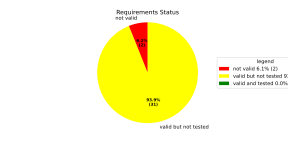
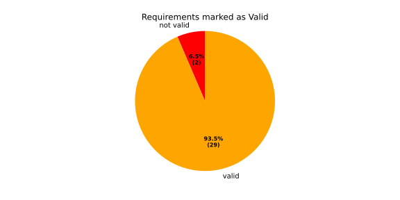
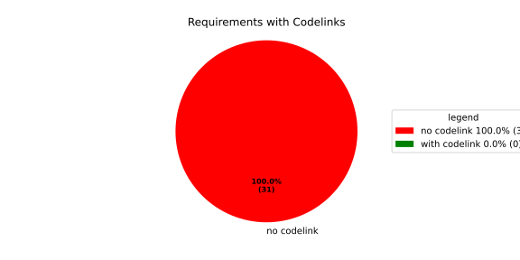
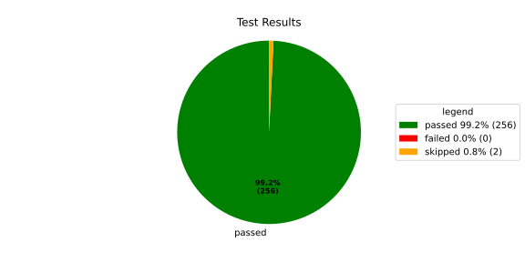
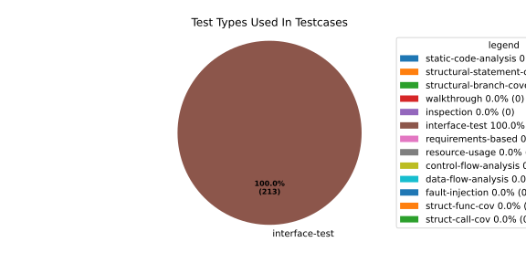
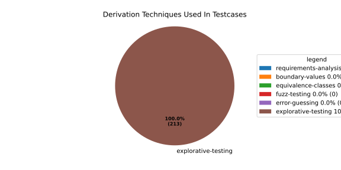

Verification Statistics#
Overview#

In Detail#



Failed Tests
Hint: This table should be empty. Before a PR can be merged all tests have to be successful.
No needs passed the filters
Skipped / Disabled Tests
testcase |
Result |
Fully Verifies |
Partially Verifies |
Test Type |
Derivation Technique |
link |
|---|---|---|---|---|---|---|
ValidateRangeTest/4__RejectsValueAboveMax |
skipped |
interface-test |
explorative-testing |
|||
ValidateRangeTest/4__RejectsValueBelowMin |
skipped |
interface-test |
explorative-testing |
All passed Tests#
testcase |
Result |
Fully Verifies |
Partially Verifies |
Test Type |
Derivation Technique |
link |
|---|---|---|---|---|---|---|
AliveImplTest__DoesNotThrowWhenInterfacePathEnvVarIsSet |
passed |
interface-test |
explorative-testing |
testcase__AliveImplTest__DoesNotThrowWhenInterfacePathEnvVarIsSet_xpewu |
||
AliveImplTest__ReportCheckpointSafeWhenNotConnected |
passed |
interface-test |
explorative-testing |
testcase__AliveImplTest__ReportCheckpointSafeWhenNotConnected_ppvuc |
||
AliveImplTest__ThrowsWhenInterfacePathEnvVarIsNotSet |
passed |
interface-test |
explorative-testing |
testcase__AliveImplTest__ThrowsWhenInterfacePathEnvVarIsNotSet_ekxfw |
||
AliveSupervisionTest__AliveDebouncesThroughFailedBeforeExpired |
passed |
interface-test |
explorative-testing |
testcase__AliveSupervisionTest__AliveDebouncesThroughFailedBeforeExpired_mlnbe |
||
AliveSupervisionTest__AliveReportsEnqueueFailureWhenRingBufferFull |
passed |
interface-test |
explorative-testing |
testcase__AliveSupervisionTest__AliveReportsEnqueueFailureWhenRingBufferFull_byhrd |
||
AliveSupervisionTest__AliveStaysOkWithCorrectHeartbeats |
passed |
interface-test |
explorative-testing |
testcase__AliveSupervisionTest__AliveStaysOkWithCorrectHeartbeats_vekof |
||
AliveSupervisionTest__AliveTransitionsOkToExpiredOnMissingHeartbeat |
passed |
interface-test |
explorative-testing |
testcase__AliveSupervisionTest__AliveTransitionsOkToExpiredOnMissingHeartbeat_jymxo |
||
AliveSupervisionTest__DeactivatesOnProcessCrash |
passed |
interface-test |
explorative-testing |
testcase__AliveSupervisionTest__DeactivatesOnProcessCrash_ypejs |
||
AliveSupervisionTest__DeactivatesOnProcessSigterm |
passed |
interface-test |
explorative-testing |
testcase__AliveSupervisionTest__DeactivatesOnProcessSigterm_hzaal |
||
AliveSupervisionTest__IgnoresIrrelevantProcessStates |
passed |
interface-test |
explorative-testing |
testcase__AliveSupervisionTest__IgnoresIrrelevantProcessStates_aolvb |
||
AliveSupervisionTest__MaxIndicationViolationExpires |
passed |
interface-test |
explorative-testing |
testcase__AliveSupervisionTest__MaxIndicationViolationExpires_whhhi |
||
AliveSupervisionTest__ReactivatesAfterCrash |
passed |
interface-test |
explorative-testing |
|||
ApplicationTypes/ApplicationTypeTest__ConvertsToExpectedValue/Native |
passed |
interface-test |
explorative-testing |
testcase__ApplicationTypes/ApplicationTypeTest__ConvertsToExpectedValue/Native_yxxcz |
||
ApplicationTypes/ApplicationTypeTest__ConvertsToExpectedValue/Reporting |
passed |
interface-test |
explorative-testing |
testcase__ApplicationTypes/ApplicationTypeTest__ConvertsToExpectedValue/Reporting_wcfwr |
||
ApplicationTypes/ApplicationTypeTest__ConvertsToExpectedValue/ReportingAndSupervised |
passed |
interface-test |
explorative-testing |
testcase__ApplicationTypes/ApplicationTypeTest__ConvertsToExpectedValue/ReportingAndSupervised_yxgad |
||
ApplicationTypes/ApplicationTypeTest__ConvertsToExpectedValue/StateManager |
passed |
interface-test |
explorative-testing |
testcase__ApplicationTypes/ApplicationTypeTest__ConvertsToExpectedValue/StateManager_ivuzc |
||
ConverterTest__ConvertAliveSupervisionMissingCycleReturnsError |
passed |
interface-test |
explorative-testing |
testcase__ConverterTest__ConvertAliveSupervisionMissingCycleReturnsError_bifzg |
||
ConverterTest__ConvertAliveSupervisionNullReturnsDefault |
passed |
interface-test |
explorative-testing |
testcase__ConverterTest__ConvertAliveSupervisionNullReturnsDefault_clyua |
||
ConverterTest__ConvertAliveSupervisionValid |
passed |
interface-test |
explorative-testing |
|||
ConverterTest__ConvertApplicationProfileMissingSelfTerminatingReturnsError |
passed |
interface-test |
explorative-testing |
testcase__ConverterTest__ConvertApplicationProfileMissingSelfTerminatingReturnsError_zddjb |
||
ConverterTest__ConvertApplicationProfileMissingTypeReturnsError |
passed |
interface-test |
explorative-testing |
testcase__ConverterTest__ConvertApplicationProfileMissingTypeReturnsError_zrfcs |
||
ConverterTest__ConvertApplicationProfileValid |
passed |
interface-test |
explorative-testing |
testcase__ConverterTest__ConvertApplicationProfileValid_oohxq |
||
ConverterTest__ConvertComponentAliveSupervisionBothIndicationsAbsentReturnsError |
passed |
interface-test |
explorative-testing |
testcase__ConverterTest__ConvertComponentAliveSupervisionBothIndicationsAbsentReturnsError_gvtfi |
||
ConverterTest__ConvertComponentAliveSupervisionMissingReportingCycleReturnsError |
passed |
interface-test |
explorative-testing |
testcase__ConverterTest__ConvertComponentAliveSupervisionMissingReportingCycleReturnsError_ajymy |
||
ConverterTest__ConvertComponentAliveSupervisionMissingToleranceReturnsError |
passed |
interface-test |
explorative-testing |
testcase__ConverterTest__ConvertComponentAliveSupervisionMissingToleranceReturnsError_lgrhj |
||
ConverterTest__ConvertComponentAliveSupervisionNullReturnsDefault |
passed |
interface-test |
explorative-testing |
testcase__ConverterTest__ConvertComponentAliveSupervisionNullReturnsDefault_xhaus |
||
ConverterTest__ConvertComponentAliveSupervisionOnlyMaxIndicationsPresent |
passed |
interface-test |
explorative-testing |
testcase__ConverterTest__ConvertComponentAliveSupervisionOnlyMaxIndicationsPresent_smwht |
||
ConverterTest__ConvertComponentAliveSupervisionOnlyMinIndicationsPresent |
passed |
interface-test |
explorative-testing |
testcase__ConverterTest__ConvertComponentAliveSupervisionOnlyMinIndicationsPresent_ybbrr |
||
ConverterTest__ConvertComponentAliveSupervisionValid |
passed |
interface-test |
explorative-testing |
testcase__ConverterTest__ConvertComponentAliveSupervisionValid_ijedh |
||
ConverterTest__ConvertComponentsValid |
passed |
interface-test |
explorative-testing |
|||
ConverterTest__ConvertComponentsWithInvalidComponentReturnsError |
passed |
interface-test |
explorative-testing |
testcase__ConverterTest__ConvertComponentsWithInvalidComponentReturnsError_wridc |
||
ConverterTest__ConvertComponentValid |
passed |
interface-test |
explorative-testing |
|||
ConverterTest__ConvertDeploymentConfigMissingReadyTimeoutReturnsError |
passed |
interface-test |
explorative-testing |
testcase__ConverterTest__ConvertDeploymentConfigMissingReadyTimeoutReturnsError_ljzfl |
||
ConverterTest__ConvertDeploymentConfigMissingShutdownTimeoutReturnsError |
passed |
interface-test |
explorative-testing |
testcase__ConverterTest__ConvertDeploymentConfigMissingShutdownTimeoutReturnsError_vyqye |
||
ConverterTest__ConvertDeploymentConfigValid |
passed |
interface-test |
explorative-testing |
|||
ConverterTest__ConvertEnvironmentalVariables |
passed |
interface-test |
explorative-testing |
testcase__ConverterTest__ConvertEnvironmentalVariables_fnhgo |
||
ConverterTest__ConvertEnvironmentalVariablesNullReturnsEmpty |
passed |
interface-test |
explorative-testing |
testcase__ConverterTest__ConvertEnvironmentalVariablesNullReturnsEmpty_vglrx |
||
ConverterTest__ConvertFallbackRunTargetMissingTimeoutReturnsError |
passed |
interface-test |
explorative-testing |
testcase__ConverterTest__ConvertFallbackRunTargetMissingTimeoutReturnsError_aevly |
||
ConverterTest__ConvertFallbackRunTargetValid |
passed |
interface-test |
explorative-testing |
testcase__ConverterTest__ConvertFallbackRunTargetValid_nexxj |
||
ConverterTest__ConvertReadyConditionMissingProcessStateReturnsError |
passed |
interface-test |
explorative-testing |
testcase__ConverterTest__ConvertReadyConditionMissingProcessStateReturnsError_ileav |
||
ConverterTest__ConvertReadyConditionValid |
passed |
interface-test |
explorative-testing |
|||
ConverterTest__ConvertRestartActionMissingFieldsReturnsError |
passed |
interface-test |
explorative-testing |
testcase__ConverterTest__ConvertRestartActionMissingFieldsReturnsError_aapjb |
||
ConverterTest__ConvertRestartActionNullReturnsNullopt |
passed |
interface-test |
explorative-testing |
testcase__ConverterTest__ConvertRestartActionNullReturnsNullopt_ifvyd |
||
ConverterTest__ConvertRestartActionValid |
passed |
interface-test |
explorative-testing |
|||
ConverterTest__ConvertRunTargetMissingTransitionTimeoutReturnsError |
passed |
interface-test |
explorative-testing |
testcase__ConverterTest__ConvertRunTargetMissingTransitionTimeoutReturnsError_ynekv |
||
ConverterTest__ConvertRunTargetsValid |
passed |
interface-test |
explorative-testing |
|||
ConverterTest__ConvertRunTargetsWithInvalidRunTargetReturnsError |
passed |
interface-test |
explorative-testing |
testcase__ConverterTest__ConvertRunTargetsWithInvalidRunTargetReturnsError_ldlox |
||
ConverterTest__ConvertRunTargetValid |
passed |
interface-test |
explorative-testing |
|||
ConverterTest__ConvertSandboxMissingGidReturnsError |
passed |
interface-test |
explorative-testing |
testcase__ConverterTest__ConvertSandboxMissingGidReturnsError_veeel |
||
ConverterTest__ConvertSandboxMissingSchedulingPolicyReturnsError |
passed |
interface-test |
explorative-testing |
testcase__ConverterTest__ConvertSandboxMissingSchedulingPolicyReturnsError_pkfts |
||
ConverterTest__ConvertSandboxMissingSchedulingPriorityReturnsError |
passed |
interface-test |
explorative-testing |
testcase__ConverterTest__ConvertSandboxMissingSchedulingPriorityReturnsError_xzdho |
||
ConverterTest__ConvertSandboxMissingUidReturnsError |
passed |
interface-test |
explorative-testing |
testcase__ConverterTest__ConvertSandboxMissingUidReturnsError_ogfku |
||
ConverterTest__ConvertSandboxSupplementaryGidOutOfRangeReturnsError |
passed |
interface-test |
explorative-testing |
testcase__ConverterTest__ConvertSandboxSupplementaryGidOutOfRangeReturnsError_zavpx |
||
ConverterTest__ConvertSandboxUidOutOfRangeReturnsError |
passed |
interface-test |
explorative-testing |
testcase__ConverterTest__ConvertSandboxUidOutOfRangeReturnsError_mcuaf |
||
ConverterTest__ConvertSandboxValid |
passed |
interface-test |
explorative-testing |
|||
ConverterTest__ConvertSwitchRunTargetActionNullReturnsNullopt |
passed |
interface-test |
explorative-testing |
testcase__ConverterTest__ConvertSwitchRunTargetActionNullReturnsNullopt_zmitx |
||
ConverterTest__ConvertSwitchRunTargetActionValid |
passed |
interface-test |
explorative-testing |
testcase__ConverterTest__ConvertSwitchRunTargetActionValid_tdklr |
||
ConverterTest__ConvertWatchdogMissingDeactivateReturnsError |
passed |
interface-test |
explorative-testing |
testcase__ConverterTest__ConvertWatchdogMissingDeactivateReturnsError_gzwjt |
||
ConverterTest__ConvertWatchdogMissingMagicCloseReturnsError |
passed |
interface-test |
explorative-testing |
testcase__ConverterTest__ConvertWatchdogMissingMagicCloseReturnsError_gexxk |
||
ConverterTest__ConvertWatchdogMissingMaxTimeoutReturnsError |
passed |
interface-test |
explorative-testing |
testcase__ConverterTest__ConvertWatchdogMissingMaxTimeoutReturnsError_lffxm |
||
ConverterTest__ConvertWatchdogNullReturnsNullopt |
passed |
interface-test |
explorative-testing |
testcase__ConverterTest__ConvertWatchdogNullReturnsNullopt_irsdk |
||
ConverterTest__ConvertWatchdogValid |
passed |
interface-test |
explorative-testing |
|||
DeadlineFixture__Start_AlreadyRunning |
passed |
interface-test |
explorative-testing |
|||
DeadlineFixture__Start_Succeeds |
passed |
interface-test |
explorative-testing |
|||
DeadlineMonitorBuilderFixture__AddDeadline_Succeeds |
passed |
interface-test |
explorative-testing |
testcase__DeadlineMonitorBuilderFixture__AddDeadline_Succeeds_nagke |
||
DeadlineMonitorBuilderFixture__New_Succeeds |
passed |
interface-test |
explorative-testing |
|||
DeadlineMonitorFixture__GetDeadline_Succeeds |
passed |
interface-test |
explorative-testing |
testcase__DeadlineMonitorFixture__GetDeadline_Succeeds_tmltf |
||
DeadlineMonitorFixture__GetDeadline_Unknown |
passed |
interface-test |
explorative-testing |
|||
EnumConversionTest__ConvertSchedulingPolicyUnsupported |
passed |
interface-test |
explorative-testing |
testcase__EnumConversionTest__ConvertSchedulingPolicyUnsupported_iavqm |
||
EnvironmentTest__AddIncreasesSize |
passed |
interface-test |
explorative-testing |
|||
EnvironmentTest__DefaultConstructedIsEmpty |
passed |
interface-test |
explorative-testing |
|||
EnvironmentTest__EmptyEnvironmentEnvpIsNullTerminated |
passed |
interface-test |
explorative-testing |
testcase__EnvironmentTest__EmptyEnvironmentEnvpIsNullTerminated_wwumw |
||
EnvironmentTest__EnvpReturnsNullTerminatedArray |
passed |
interface-test |
explorative-testing |
testcase__EnvironmentTest__EnvpReturnsNullTerminatedArray_aubkv |
||
EnvironmentTest__EnvpWithMultipleEntries |
passed |
interface-test |
explorative-testing |
|||
EnvironmentTest__MoveAssignmentPreservesEntries |
passed |
interface-test |
explorative-testing |
testcase__EnvironmentTest__MoveAssignmentPreservesEntries_vkydj |
||
EnvironmentTest__MoveConstructorPreservesEntries |
passed |
interface-test |
explorative-testing |
testcase__EnvironmentTest__MoveConstructorPreservesEntries_upclt |
||
EnvironmentTest__RangeBasedForLoopWorks |
passed |
interface-test |
explorative-testing |
|||
EnvironmentTest__ReserveAndAddAvoidReallocation |
passed |
interface-test |
explorative-testing |
testcase__EnvironmentTest__ReserveAndAddAvoidReallocation_lgzmu |
||
EnvironmentTest__SsoLengthStringSurvivesReallocation |
passed |
interface-test |
explorative-testing |
testcase__EnvironmentTest__SsoLengthStringSurvivesReallocation_jfmtl |
||
EnvironmentVariableTest__CStrReturnsKeyEqualsValue |
passed |
interface-test |
explorative-testing |
testcase__EnvironmentVariableTest__CStrReturnsKeyEqualsValue_rkwan |
||
EnvironmentVariableTest__EmptyValue |
passed |
interface-test |
explorative-testing |
|||
EnvironmentVariableTest__KeyAndValueAreAccessible |
passed |
interface-test |
explorative-testing |
testcase__EnvironmentVariableTest__KeyAndValueAreAccessible_kcrth |
||
EnvironmentVariableTest__ValueContainingEquals |
passed |
interface-test |
explorative-testing |
testcase__EnvironmentVariableTest__ValueContainingEquals_apzgz |
||
ExecErrorDomainTest__AllKnownCodesHaveDistinctMessages |
passed |
interface-test |
explorative-testing |
testcase__ExecErrorDomainTest__AllKnownCodesHaveDistinctMessages_qpoka |
||
ExecErrorDomainTest__AllKnownCodesReturnNonEmptyMessage |
passed |
interface-test |
explorative-testing |
testcase__ExecErrorDomainTest__AllKnownCodesReturnNonEmptyMessage_bawzg |
||
ExecErrorDomainTest__UnknownCodeReturnsNonEmptyMessage |
passed |
interface-test |
explorative-testing |
testcase__ExecErrorDomainTest__UnknownCodeReturnsNonEmptyMessage_kkwpr |
||
FlatbufferConfigLoaderTest__CorruptedBufferReturnsInvalidFormat |
passed |
interface-test |
explorative-testing |
testcase__FlatbufferConfigLoaderTest__CorruptedBufferReturnsInvalidFormat_twyac |
||
FlatbufferConfigLoaderTest__LoadAliveSupervision |
passed |
interface-test |
explorative-testing |
testcase__FlatbufferConfigLoaderTest__LoadAliveSupervision_hhuux |
||
FlatbufferConfigLoaderTest__LoadBufferFailsWithGenericErrorReturnsGeneralError |
passed |
interface-test |
explorative-testing |
testcase__FlatbufferConfigLoaderTest__LoadBufferFailsWithGenericErrorReturnsGeneralError_kmatm |
||
FlatbufferConfigLoaderTest__LoadBufferFailsWithNoSuchFileReturnsFileNotFound |
passed |
interface-test |
explorative-testing |
testcase__FlatbufferConfigLoaderTest__LoadBufferFailsWithNoSuchFileReturnsFileNotFound_yzlra |
||
FlatbufferConfigLoaderTest__LoadBufferFailsWithPermissionDeniedReturnsInsufficientPermission |
passed |
interface-test |
explorative-testing |
|||
FlatbufferConfigLoaderTest__LoadComponentAliveSupervision |
passed |
interface-test |
explorative-testing |
testcase__FlatbufferConfigLoaderTest__LoadComponentAliveSupervision_fwfad |
||
FlatbufferConfigLoaderTest__LoadEnvironmentalVariables |
passed |
interface-test |
explorative-testing |
testcase__FlatbufferConfigLoaderTest__LoadEnvironmentalVariables_wsosu |
||
FlatbufferConfigLoaderTest__LoadFallbackRunTarget |
passed |
interface-test |
explorative-testing |
testcase__FlatbufferConfigLoaderTest__LoadFallbackRunTarget_wduqm |
||
FlatbufferConfigLoaderTest__LoadMinimalConfig |
passed |
interface-test |
explorative-testing |
testcase__FlatbufferConfigLoaderTest__LoadMinimalConfig_hdkck |
||
FlatbufferConfigLoaderTest__LoadMultipleComponents |
passed |
interface-test |
explorative-testing |
testcase__FlatbufferConfigLoaderTest__LoadMultipleComponents_abpom |
||
FlatbufferConfigLoaderTest__LoadRestartRecoveryAction |
passed |
interface-test |
explorative-testing |
testcase__FlatbufferConfigLoaderTest__LoadRestartRecoveryAction_wyfqg |
||
FlatbufferConfigLoaderTest__LoadRunTargets |
passed |
interface-test |
explorative-testing |
|||
FlatbufferConfigLoaderTest__LoadSandbox |
passed |
interface-test |
explorative-testing |
|||
FlatbufferConfigLoaderTest__LoadSingleComponent |
passed |
interface-test |
explorative-testing |
testcase__FlatbufferConfigLoaderTest__LoadSingleComponent_yidty |
||
FlatbufferConfigLoaderTest__LoadSwitchRunTargetAction |
passed |
interface-test |
explorative-testing |
testcase__FlatbufferConfigLoaderTest__LoadSwitchRunTargetAction_uchgp |
||
FlatbufferConfigLoaderTest__LoadWatchdog |
passed |
interface-test |
explorative-testing |
|||
FlatbufferConfigLoaderTest__MissingSchemaVersionReturnsInvalidFormat |
passed |
interface-test |
explorative-testing |
testcase__FlatbufferConfigLoaderTest__MissingSchemaVersionReturnsInvalidFormat_qqmfn |
||
FlatbufferConfigLoaderTest__OptionalReadyConditionAbsent |
passed |
interface-test |
explorative-testing |
testcase__FlatbufferConfigLoaderTest__OptionalReadyConditionAbsent_lhddx |
||
FlatbufferConfigLoaderTest__OptionalWatchdogAbsent |
passed |
interface-test |
explorative-testing |
testcase__FlatbufferConfigLoaderTest__OptionalWatchdogAbsent_pkhkp |
||
FlatbufferConfigLoaderTest__WrongSchemaVersionReturnsUnsupportedVersion |
passed |
interface-test |
explorative-testing |
testcase__FlatbufferConfigLoaderTest__WrongSchemaVersionReturnsUnsupportedVersion_zrbjv |
||
HealthMonitor__GetDeadlineMonitor_Available |
passed |
|||||
HealthMonitor__GetDeadlineMonitor_Taken |
passed |
|||||
HealthMonitor__GetDeadlineMonitor_Unknown |
passed |
|||||
HealthMonitor__GetHeartbeatMonitor_Available |
passed |
testcase__HealthMonitor__GetHeartbeatMonitor_Available_aacat |
||||
HealthMonitor__GetHeartbeatMonitor_Taken |
passed |
|||||
HealthMonitor__GetHeartbeatMonitor_Unknown |
passed |
|||||
HealthMonitor__GetLogicMonitor_Available |
passed |
|||||
HealthMonitor__GetLogicMonitor_Taken |
passed |
|||||
HealthMonitor__GetLogicMonitor_Unknown |
passed |
|||||
HealthMonitor__Start_MonitorsNotTaken |
passed |
|||||
HealthMonitor__Start_Succeeds |
passed |
|||||
HealthMonitorBuilderFixture__Build_InvalidCycles |
passed |
interface-test |
explorative-testing |
testcase__HealthMonitorBuilderFixture__Build_InvalidCycles_pdigk |
||
HealthMonitorBuilderFixture__Build_NoMonitors |
passed |
interface-test |
explorative-testing |
testcase__HealthMonitorBuilderFixture__Build_NoMonitors_ktcve |
||
HealthMonitorBuilderFixture__Build_Succeeds |
passed |
interface-test |
explorative-testing |
|||
HealthMonitorBuilderFixture__New_Succeeds |
passed |
interface-test |
explorative-testing |
|||
HealthMonitorTest__Integrated |
passed |
interface-test |
explorative-testing |
|||
HeartbeatMonitor__Heartbeat_Succeeds |
passed |
interface-test |
explorative-testing |
|||
HeartbeatMonitorBuilder__New_Succeeds |
passed |
interface-test |
explorative-testing |
|||
IdentifierHashTest__IdentifierHash_default_created |
passed |
interface-test |
explorative-testing |
testcase__IdentifierHashTest__IdentifierHash_default_created_yhhvi |
||
IdentifierHashTest__IdentifierHash_EqualityOperators |
passed |
interface-test |
explorative-testing |
testcase__IdentifierHashTest__IdentifierHash_EqualityOperators_nnsuj |
||
IdentifierHashTest__IdentifierHash_invalid_hash_no_string_representation |
passed |
interface-test |
explorative-testing |
testcase__IdentifierHashTest__IdentifierHash_invalid_hash_no_string_representation_rxowr |
||
IdentifierHashTest__IdentifierHash_LessThanOperator |
passed |
interface-test |
explorative-testing |
testcase__IdentifierHashTest__IdentifierHash_LessThanOperator_rnbax |
||
IdentifierHashTest__IdentifierHash_no_dangling_pointer_after_source_string_dies |
passed |
interface-test |
explorative-testing |
testcase__IdentifierHashTest__IdentifierHash_no_dangling_pointer_after_source_string_dies_qsjin |
||
IdentifierHashTest__IdentifierHash_with_string_created |
passed |
interface-test |
explorative-testing |
testcase__IdentifierHashTest__IdentifierHash_with_string_created_aygdm |
||
IdentifierHashTest__IdentifierHash_with_string_view_created |
passed |
interface-test |
explorative-testing |
testcase__IdentifierHashTest__IdentifierHash_with_string_view_created_dbpol |
||
LogicMonitorBuilderFixture__AddState_Succeeds |
passed |
interface-test |
explorative-testing |
testcase__LogicMonitorBuilderFixture__AddState_Succeeds_axdxj |
||
LogicMonitorBuilderFixture__New_Succeeds |
passed |
interface-test |
explorative-testing |
|||
LogicMonitorFixture__State_Invalid |
passed |
interface-test |
explorative-testing |
|||
LogicMonitorFixture__State_Succeeds |
passed |
interface-test |
explorative-testing |
|||
LogicMonitorFixture__Transition_Invalid |
passed |
interface-test |
explorative-testing |
|||
LogicMonitorFixture__Transition_Succeeds |
passed |
interface-test |
explorative-testing |
|||
LogicMonitorFixture__Transition_Unknown |
passed |
interface-test |
explorative-testing |
|||
MonitorIfDaemonTest__Active_CheckpointDataForwarded |
passed |
interface-test |
explorative-testing |
testcase__MonitorIfDaemonTest__Active_CheckpointDataForwarded_evumz |
||
MonitorIfDaemonTest__Active_FutureTimestamp_NotForwardedInCurrentCycle |
passed |
interface-test |
explorative-testing |
testcase__MonitorIfDaemonTest__Active_FutureTimestamp_NotForwardedInCurrentCycle_oycau |
||
MonitorIfDaemonTest__Active_FutureTimestampCheckpoint_ConsumedInLaterCycle |
passed |
interface-test |
explorative-testing |
testcase__MonitorIfDaemonTest__Active_FutureTimestampCheckpoint_ConsumedInLaterCycle_veyyy |
||
MonitorIfDaemonTest__Active_MultipleCheckpointsInOneCycle_AllForwarded |
passed |
interface-test |
explorative-testing |
testcase__MonitorIfDaemonTest__Active_MultipleCheckpointsInOneCycle_AllForwarded_gmbms |
||
MonitorIfDaemonTest__Active_NonMatchingCheckpointId_NotForwarded |
passed |
interface-test |
explorative-testing |
testcase__MonitorIfDaemonTest__Active_NonMatchingCheckpointId_NotForwarded_bohck |
||
MonitorIfDaemonTest__Active_OverflowDetected_TransitionsToInactiveOverflow |
passed |
interface-test |
explorative-testing |
testcase__MonitorIfDaemonTest__Active_OverflowDetected_TransitionsToInactiveOverflow_ovitk |
||
MonitorIfDaemonTest__Active_TwoAttachedCheckpoints_RoutedByCheckpointId |
passed |
interface-test |
explorative-testing |
testcase__MonitorIfDaemonTest__Active_TwoAttachedCheckpoints_RoutedByCheckpointId_skqhd |
||
MonitorIfDaemonTest__GetInterfaceName_ReturnsNameGivenAtConstruction |
passed |
interface-test |
explorative-testing |
testcase__MonitorIfDaemonTest__GetInterfaceName_ReturnsNameGivenAtConstruction_iaemz |
||
MonitorIfDaemonTest__InactiveOverflow_NoProcessRestart_DoesNotRepeatNotification |
passed |
interface-test |
explorative-testing |
testcase__MonitorIfDaemonTest__InactiveOverflow_NoProcessRestart_DoesNotRepeatNotification_gdbxg |
||
MonitorIfDaemonTest__InactiveOverflow_ProcessRestartFlag_ClearedAfterNotification |
passed |
interface-test |
explorative-testing |
testcase__MonitorIfDaemonTest__InactiveOverflow_ProcessRestartFlag_ClearedAfterNotification_pqfyy |
||
MonitorIfDaemonTest__InactiveOverflow_ProcessRestarts_PushesOverflowNotificationAgain |
passed |
interface-test |
explorative-testing |
|||
MonitorIfDaemonTest__InitiallyInactive_CheckForNewData_DoesNotNotifyCheckpoint |
passed |
interface-test |
explorative-testing |
testcase__MonitorIfDaemonTest__InitiallyInactive_CheckForNewData_DoesNotNotifyCheckpoint_wjrfl |
||
MonitorIfDaemonTest__ProcessOff_DeactivatesMonitor_NoFurtherDataForwarded |
passed |
interface-test |
explorative-testing |
testcase__MonitorIfDaemonTest__ProcessOff_DeactivatesMonitor_NoFurtherDataForwarded_uialh |
||
MonitorIfDaemonTest__ProcessOffBeforeActivation_RemainsInactive |
passed |
interface-test |
explorative-testing |
testcase__MonitorIfDaemonTest__ProcessOffBeforeActivation_RemainsInactive_kzzyy |
||
MonitorIfDaemonTest__ProcessRunning_ActivatesMonitorOnNextCheckForNewData |
passed |
interface-test |
explorative-testing |
testcase__MonitorIfDaemonTest__ProcessRunning_ActivatesMonitorOnNextCheckForNewData_fkkmk |
||
MonitorIfDaemonTest__ProcessStarting_AlsoActivatesMonitor |
passed |
interface-test |
explorative-testing |
testcase__MonitorIfDaemonTest__ProcessStarting_AlsoActivatesMonitor_xdkbg |
||
MPMCConcurrentQueueTest_Basic__LvaluePushCopiesItem |
passed |
testcase__MPMCConcurrentQueueTest_Basic__LvaluePushCopiesItem_oysfc |
||||
MPMCConcurrentQueueTest_Basic__PopReturnsNulloptOnSemaphoreWaitFailure |
passed |
testcase__MPMCConcurrentQueueTest_Basic__PopReturnsNulloptOnSemaphoreWaitFailure_rgznm |
||||
MPMCConcurrentQueueTest_Basic__PushAndPopPreservesOrder |
passed |
testcase__MPMCConcurrentQueueTest_Basic__PushAndPopPreservesOrder_aijdb |
||||
MPMCConcurrentQueueTest_Basic__PushAndPopSingleItem |
passed |
testcase__MPMCConcurrentQueueTest_Basic__PushAndPopSingleItem_jrxwz |
||||
MPMCConcurrentQueueTest_Basic__RvaluePushWorksWithMoveOnlyType |
passed |
testcase__MPMCConcurrentQueueTest_Basic__RvaluePushWorksWithMoveOnlyType_cxxaj |
||||
MPMCConcurrentQueueTest_Blocking__PopBlocksUntilItemAvailable |
passed |
testcase__MPMCConcurrentQueueTest_Blocking__PopBlocksUntilItemAvailable_ttwcx |
||||
MPMCConcurrentQueueTest_Blocking__PushBlocksWhenFull |
passed |
testcase__MPMCConcurrentQueueTest_Blocking__PushBlocksWhenFull_ecujf |
||||
MPMCConcurrentQueueTest_Blocking__StopUnblocksBlockedConsumer |
passed |
testcase__MPMCConcurrentQueueTest_Blocking__StopUnblocksBlockedConsumer_snzyr |
||||
MPMCConcurrentQueueTest_Blocking__StopUnblocksBlockedProducer |
passed |
testcase__MPMCConcurrentQueueTest_Blocking__StopUnblocksBlockedProducer_inddu |
||||
MPMCConcurrentQueueTest_MPMC__AllItemsDelivered |
passed |
testcase__MPMCConcurrentQueueTest_MPMC__AllItemsDelivered_ztjqe |
||||
MPMCConcurrentQueueTest_Stop__ItemsAreDroppedAfterStop |
passed |
testcase__MPMCConcurrentQueueTest_Stop__ItemsAreDroppedAfterStop_ragzw |
||||
MPMCConcurrentQueueTest_Stop__PopReturnsNulloptWhenStoppedAndEmpty |
passed |
testcase__MPMCConcurrentQueueTest_Stop__PopReturnsNulloptWhenStoppedAndEmpty_cevga |
||||
MPMCConcurrentQueueTest_Stop__PushReturnsFalseAfterStop |
passed |
testcase__MPMCConcurrentQueueTest_Stop__PushReturnsFalseAfterStop_qqnhw |
||||
MPMCConcurrentQueueTest_Timeout__PushWithTimeoutReturnsFalseWhenFull |
passed |
testcase__MPMCConcurrentQueueTest_Timeout__PushWithTimeoutReturnsFalseWhenFull_aeips |
||||
MPMCConcurrentQueueTest_Timeout__PushWithTimeoutSucceedsWhenSlotAvailable |
passed |
testcase__MPMCConcurrentQueueTest_Timeout__PushWithTimeoutSucceedsWhenSlotAvailable_klzpo |
||||
OsHandlerTest__WaitReturnsError_OsHandlerSleepsAndDoesNotCallFindTerminated |
passed |
interface-test |
explorative-testing |
testcase__OsHandlerTest__WaitReturnsError_OsHandlerSleepsAndDoesNotCallFindTerminated_cibtr |
||
OsHandlerTest__WaitReturnsErrorThenProcessId_HandlerRecoversAndInvokesCallback |
passed |
interface-test |
explorative-testing |
testcase__OsHandlerTest__WaitReturnsErrorThenProcessId_HandlerRecoversAndInvokesCallback_nqstd |
||
OsHandlerTest__WaitReturnsProcessId_FindTerminatedIsCalled |
passed |
interface-test |
explorative-testing |
testcase__OsHandlerTest__WaitReturnsProcessId_FindTerminatedIsCalled_chlsq |
||
OsHandlerTest__WaitReturnsProcessIdBeforeRegistration_LaterRegistrationReceivesStoredTermination |
passed |
interface-test |
explorative-testing |
|||
OsHandlerTest__WaitReturnsUnknownPidWhenMapIsFull_OutOfResourcesPathDoesNotNotifyCallbacks |
passed |
interface-test |
explorative-testing |
|||
OsHandlerTest__WaitReturnsZeroPid_OsHandlerSleepsAndDoesNotCallFindTerminated |
passed |
interface-test |
explorative-testing |
testcase__OsHandlerTest__WaitReturnsZeroPid_OsHandlerSleepsAndDoesNotCallFindTerminated_rkttz |
||
ProcessStateClient_UT__ProcessStateClient_ConstructReceiver_Succeeds |
passed |
interface-test |
explorative-testing |
testcase__ProcessStateClient_UT__ProcessStateClient_ConstructReceiver_Succeeds_hodwy |
||
ProcessStateClient_UT__ProcessStateClient_QueueMaxNumberOfProcesses_Succeeds |
passed |
interface-test |
explorative-testing |
testcase__ProcessStateClient_UT__ProcessStateClient_QueueMaxNumberOfProcesses_Succeeds_qohom |
||
ProcessStateClient_UT__ProcessStateClient_QueueOneProcess_Succeeds |
passed |
interface-test |
explorative-testing |
testcase__ProcessStateClient_UT__ProcessStateClient_QueueOneProcess_Succeeds_tmzfz |
||
ProcessStateClient_UT__ProcessStateClient_QueueOneProcessTooMany_Fails |
passed |
interface-test |
explorative-testing |
testcase__ProcessStateClient_UT__ProcessStateClient_QueueOneProcessTooMany_Fails_sspoj |
||
ProcessStates/ProcessStateTest__ConvertsToExpectedValue/Running |
passed |
interface-test |
explorative-testing |
testcase__ProcessStates/ProcessStateTest__ConvertsToExpectedValue/Running_hinlr |
||
ProcessStates/ProcessStateTest__ConvertsToExpectedValue/Terminated |
passed |
interface-test |
explorative-testing |
testcase__ProcessStates/ProcessStateTest__ConvertsToExpectedValue/Terminated_zrytn |
||
RecoveryClientTest__FIFOOrdering |
passed |
interface-test |
explorative-testing |
|||
RecoveryClientTest__GetNextRequest |
passed |
interface-test |
explorative-testing |
|||
RecoveryClientTest__GetNextRequestEmpty |
passed |
interface-test |
explorative-testing |
|||
RecoveryClientTest__RingBufferFull |
passed |
interface-test |
explorative-testing |
|||
RecoveryClientTest__SendSingleRequest |
passed |
interface-test |
explorative-testing |
|||
RunTest__AsPosixProcessCreatesAndDestroysLifeCycleManager |
passed |
testcase__RunTest__AsPosixProcessCreatesAndDestroysLifeCycleManager_sooex |
||||
RunTest__AsPosixProcessForwardsConstructorArgsToApplication |
passed |
testcase__RunTest__AsPosixProcessForwardsConstructorArgsToApplication_dmeur |
||||
RunTest__AsPosixProcessForwardsNonZeroExitCode |
passed |
testcase__RunTest__AsPosixProcessForwardsNonZeroExitCode_lldqd |
||||
RunTest__AsPosixProcessPassesCorrectApplicationTypeToRun |
passed |
testcase__RunTest__AsPosixProcessPassesCorrectApplicationTypeToRun_ajqwz |
||||
RunTest__AsPosixProcessReturnsZeroExitCode |
passed |
|||||
RunTest__RunApplicationFreeFunctionDelegatesToAsPosixProcess |
passed |
testcase__RunTest__RunApplicationFreeFunctionDelegatesToAsPosixProcess_ccing |
||||
RunTest__RunConstructorPassesArgcArgvToApplicationContext |
passed |
testcase__RunTest__RunConstructorPassesArgcArgvToApplicationContext_agerd |
||||
SafeProcessMapTest__ConcurrentFindAndInsertFromMultipleThreads |
passed |
interface-test |
explorative-testing |
testcase__SafeProcessMapTest__ConcurrentFindAndInsertFromMultipleThreads_kzfyg |
||
SafeProcessMapTest__ConcurrentInsertAndFindFromMultipleThreads |
passed |
interface-test |
explorative-testing |
testcase__SafeProcessMapTest__ConcurrentInsertAndFindFromMultipleThreads_hnyqj |
||
SafeProcessMapTest__ConstructWithZeroCapacity |
passed |
interface-test |
explorative-testing |
testcase__SafeProcessMapTest__ConstructWithZeroCapacity_gjmqg |
||
SafeProcessMapTest__FindTerminatedInsertsEntryWhenPidNotPresent |
passed |
interface-test |
explorative-testing |
testcase__SafeProcessMapTest__FindTerminatedInsertsEntryWhenPidNotPresent_ixtlt |
||
SafeProcessMapTest__FindTerminatedMatchesExistingInsertAndCallsCallback |
passed |
interface-test |
explorative-testing |
testcase__SafeProcessMapTest__FindTerminatedMatchesExistingInsertAndCallsCallback_ehuzb |
||
SafeProcessMapTest__FindTerminatedSamePidTwiceYieldsUntilInsertResolves |
passed |
interface-test |
explorative-testing |
testcase__SafeProcessMapTest__FindTerminatedSamePidTwiceYieldsUntilInsertResolves_hsekx |
||
SafeProcessMapTest__FindTerminatedWithNegativePidReturnsInvalid |
passed |
interface-test |
explorative-testing |
testcase__SafeProcessMapTest__FindTerminatedWithNegativePidReturnsInvalid_dewoh |
||
SafeProcessMapTest__FindTerminatedWorksAtMaxTreeDepth |
passed |
interface-test |
explorative-testing |
testcase__SafeProcessMapTest__FindTerminatedWorksAtMaxTreeDepth_adtzi |
||
SafeProcessMapTest__InsertBeyondCapacityReturnsOutOfMemory |
passed |
interface-test |
explorative-testing |
testcase__SafeProcessMapTest__InsertBeyondCapacityReturnsOutOfMemory_qjnie |
||
SafeProcessMapTest__InsertIntoEmptyTreeReturnsZero |
passed |
interface-test |
explorative-testing |
testcase__SafeProcessMapTest__InsertIntoEmptyTreeReturnsZero_zfbaq |
||
SafeProcessMapTest__InsertMatchesExistingFindTerminatedEntry |
passed |
interface-test |
explorative-testing |
testcase__SafeProcessMapTest__InsertMatchesExistingFindTerminatedEntry_fuwrp |
||
SafeProcessMapTest__InsertMultipleNodesThenFindTerminatedRemovesAll |
passed |
interface-test |
explorative-testing |
testcase__SafeProcessMapTest__InsertMultipleNodesThenFindTerminatedRemovesAll_fvowh |
||
SafeProcessMapTest__InsertSamePidTwiceYieldsUntilFindTerminatedResolves |
passed |
interface-test |
explorative-testing |
testcase__SafeProcessMapTest__InsertSamePidTwiceYieldsUntilFindTerminatedResolves_wzwyb |
||
SchedulingPolicies/SchedulingPolicyTest__ConvertsToExpectedPosixValue/SCHED_FIFO |
passed |
interface-test |
explorative-testing |
testcase__SchedulingPolicies/SchedulingPolicyTest__ConvertsToExpectedPosixValue/SCHED_FIFO_soddq |
||
SchedulingPolicies/SchedulingPolicyTest__ConvertsToExpectedPosixValue/SCHED_OTHER |
passed |
interface-test |
explorative-testing |
testcase__SchedulingPolicies/SchedulingPolicyTest__ConvertsToExpectedPosixValue/SCHED_OTHER_oigmk |
||
SchedulingPolicies/SchedulingPolicyTest__ConvertsToExpectedPosixValue/SCHED_RR |
passed |
interface-test |
explorative-testing |
testcase__SchedulingPolicies/SchedulingPolicyTest__ConvertsToExpectedPosixValue/SCHED_RR_pcjci |
||
score/health_monitor/src/rust/test-510566969/tests |
passed |
testcase__score/health_monitor/src/rust/test-510566969/tests_kjjlw |
||||
score/health_monitor/src/rust/test-827801879/loom_tests |
passed |
testcase__score/health_monitor/src/rust/test-827801879/loom_tests_cpmix |
||||
SecondsToMsTest__ConvertsPositiveValue |
passed |
interface-test |
explorative-testing |
|||
SecondsToMsTest__ConvertsZero |
passed |
interface-test |
explorative-testing |
|||
SecondsToMsTest__RejectsNegativeValue |
passed |
interface-test |
explorative-testing |
|||
SecondsToMsTest__RejectsOverflow |
passed |
interface-test |
explorative-testing |
|||
SecondsToMsTest__RejectsSubMillisecond |
passed |
interface-test |
explorative-testing |
|||
StringHelperTest__ConvertGidVectorReturnsEmptyWhenNull |
passed |
interface-test |
explorative-testing |
testcase__StringHelperTest__ConvertGidVectorReturnsEmptyWhenNull_jmcsr |
||
StringHelperTest__ConvertStringVectorReturnsEmptyWhenNull |
passed |
interface-test |
explorative-testing |
testcase__StringHelperTest__ConvertStringVectorReturnsEmptyWhenNull_zsuvv |
||
StringHelperTest__SafeStringReturnsEmptyWhenNull |
passed |
interface-test |
explorative-testing |
testcase__StringHelperTest__SafeStringReturnsEmptyWhenNull_crelr |
||
StringHelperTest__SafeStringReturnsValueWhenNotNull |
passed |
interface-test |
explorative-testing |
testcase__StringHelperTest__SafeStringReturnsValueWhenNotNull_anbko |
||
test_complex_monitoring |
passed |
|||||
test_crash_on_startup |
passed |
|||||
test_incorrect_config_non_reporting |
passed |
|||||
test_process_crash_monitoring |
passed |
|||||
test_process_launch_args |
passed |
|||||
test_process_wrong_binary_failure |
passed |
|||||
test_recovery_action_complex_rep_failure |
passed |
|||||
test_recovery_action_simple_rep_failure |
passed |
|||||
test_smoke |
passed |
|||||
test_switch_run_target |
passed |
|||||
TimeRangeFixture__MinMax |
passed |
interface-test |
explorative-testing |
|||
TimeRangeFixture__New_InvalidOrder |
passed |
interface-test |
explorative-testing |
|||
TimeRangeFixture__New_Succeeds |
passed |
interface-test |
explorative-testing |
|||
ValidateRangeTest/0__AcceptsMaxBoundary |
passed |
interface-test |
explorative-testing |
|||
ValidateRangeTest/0__AcceptsMinBoundary |
passed |
interface-test |
explorative-testing |
|||
ValidateRangeTest/0__AcceptsZero |
passed |
interface-test |
explorative-testing |
|||
ValidateRangeTest/0__RejectsValueAboveMax |
passed |
interface-test |
explorative-testing |
|||
ValidateRangeTest/0__RejectsValueBelowMin |
passed |
interface-test |
explorative-testing |
|||
ValidateRangeTest/1__AcceptsMaxBoundary |
passed |
interface-test |
explorative-testing |
|||
ValidateRangeTest/1__AcceptsMinBoundary |
passed |
interface-test |
explorative-testing |
|||
ValidateRangeTest/1__AcceptsZero |
passed |
interface-test |
explorative-testing |
|||
ValidateRangeTest/1__RejectsValueAboveMax |
passed |
interface-test |
explorative-testing |
|||
ValidateRangeTest/1__RejectsValueBelowMin |
passed |
interface-test |
explorative-testing |
|||
ValidateRangeTest/2__AcceptsMaxBoundary |
passed |
interface-test |
explorative-testing |
|||
ValidateRangeTest/2__AcceptsMinBoundary |
passed |
interface-test |
explorative-testing |
|||
ValidateRangeTest/2__AcceptsZero |
passed |
interface-test |
explorative-testing |
|||
ValidateRangeTest/2__RejectsValueAboveMax |
passed |
interface-test |
explorative-testing |
|||
ValidateRangeTest/2__RejectsValueBelowMin |
passed |
interface-test |
explorative-testing |
|||
ValidateRangeTest/3__AcceptsMaxBoundary |
passed |
interface-test |
explorative-testing |
|||
ValidateRangeTest/3__AcceptsMinBoundary |
passed |
interface-test |
explorative-testing |
|||
ValidateRangeTest/3__AcceptsZero |
passed |
interface-test |
explorative-testing |
|||
ValidateRangeTest/3__RejectsValueAboveMax |
passed |
interface-test |
explorative-testing |
|||
ValidateRangeTest/3__RejectsValueBelowMin |
passed |
interface-test |
explorative-testing |
|||
ValidateRangeTest/4__AcceptsMaxBoundary |
passed |
interface-test |
explorative-testing |
|||
ValidateRangeTest/4__AcceptsMinBoundary |
passed |
interface-test |
explorative-testing |
|||
ValidateRangeTest/4__AcceptsZero |
passed |
interface-test |
explorative-testing |
Details About Testcases#


Test Log Files#
tests-report/tests/integration/process_simple_rep_failure/process_simple_rep_failure/test.log
exec ${PAGER:-/usr/bin/less} "$0" || exit 1
Executing tests from //tests/integration/process_simple_rep_failure:process_simple_rep_failure
-----------------------------------------------------------------------------
============================= test session starts ==============================
platform linux -- Python 3.12.12, pytest-9.0.3, pluggy-1.5.0
rootdir: /home/runner/.bazel/sandbox/processwrapper-sandbox/998/execroot/_main/bazel-out/k8-fastbuild/bin/tests/integration/process_simple_rep_failure/process_simple_rep_failure.runfiles/score_itf+
configfile: pytest.ini
collected 1 item
../score_itf+::test_recovery_action_simple_rep_failure
-------------------------------- live log setup --------------------------------
[2026-07-10 12:10:59.566] [INFO] [score.itf.plugins.docker] Executing custom image bootstrap command: tests/utils/environments/x86_64-linux/x86_64-linux.sh
[2026-07-10 12:11:02.075] [DEBUG] [docker.utils.config] Trying paths: ['/home/runner/.docker/config.json', '/home/runner/.dockercfg']
[2026-07-10 12:11:02.076] [DEBUG] [docker.utils.config] Found file at path: /home/runner/.docker/config.json
[2026-07-10 12:11:02.076] [DEBUG] [docker.auth] Found 'auths' section
[2026-07-10 12:11:02.076] [DEBUG] [docker.auth] Found entry (registry='https://index.docker.io/v1/', username='githubactions')
[2026-07-10 12:11:02.093] [DEBUG] [urllib3.connectionpool] http://localhost:None "GET /version HTTP/1.1" 200 823
[2026-07-10 12:11:02.122] [DEBUG] [urllib3.connectionpool] http://localhost:None "POST /v1.48/containers/create HTTP/1.1" 201 88
[2026-07-10 12:11:02.125] [DEBUG] [urllib3.connectionpool] http://localhost:None "GET /v1.48/containers/16d005caba2435e3e72ecb3f3132a3aab2727773fa5b7991de6c35357f644b8a/json HTTP/1.1" 200 None
[2026-07-10 12:11:02.345] [DEBUG] [urllib3.connectionpool] http://localhost:None "POST /v1.48/containers/16d005caba2435e3e72ecb3f3132a3aab2727773fa5b7991de6c35357f644b8a/start HTTP/1.1" 204 0
[2026-07-10 12:11:02.346] [DEBUG] [docker.utils.config] Trying paths: ['/home/runner/.docker/config.json', '/home/runner/.dockercfg']
[2026-07-10 12:11:02.346] [DEBUG] [docker.utils.config] Found file at path: /home/runner/.docker/config.json
[2026-07-10 12:11:02.346] [DEBUG] [docker.auth] Found 'auths' section
[2026-07-10 12:11:02.346] [DEBUG] [docker.auth] Found entry (registry='https://index.docker.io/v1/', username='githubactions')
[2026-07-10 12:11:02.355] [DEBUG] [urllib3.connectionpool] http://localhost:None "GET /version HTTP/1.1" 200 823
[2026-07-10 12:11:02.607] [INFO] [tests.utils.testing_utils.setup_test] Test case setup finished
-------------------------------- live log call ---------------------------------
[2026-07-10 12:11:02.735] [INFO] [launch_manager] 2026/07/10 12:11:02.5462734 2368633 000 ECU1 LM LM log debug verbose 1
[2026-07-10 12:11:02.735] [INFO] [launch_manager] Launch Manager Started !!!!
[2026-07-10 12:11:02.735] [INFO] [launch_manager] 2026/07/10 12:11:02.5462734 2368636 000 ECU1 LM LM log debug verbose 1
[2026-07-10 12:11:02.735] [INFO] [launch_manager] Loading LCM Configurations...
[2026-07-10 12:11:02.735] [INFO] [launch_manager] 2026/07/10 12:11:02.5462734 2368637 000 ECU1 LM LM log debug verbose 1
[2026-07-10 12:11:02.736] [INFO] [launch_manager] ECUCFG_ENV_VAR_ROOTFOLDER set successfully
[2026-07-10 12:11:02.736] [INFO] [launch_manager] 2026/07/10 12:11:02.5462734 2368640 000 ECU1 LM LM log debug verbose 5
[2026-07-10 12:11:02.738] [INFO] [launch_manager] FlatBufferParser::getModeGroupPgName: MainPG ( IdentifierHash: 18079021346025578134 )
[2026-07-10 12:11:02.738] [INFO] [launch_manager] 2026/07/10 12:11:02.5462735 2368642 000 ECU1 LM LM log debug verbose 5
[2026-07-10 12:11:02.739] [INFO] [launch_manager] FlatBufferParser::getModeGroupPgStateName: MainPG/Startup ( IdentifierHash: 10504605499600661529 )
[2026-07-10 12:11:02.739] [INFO] [launch_manager] 2026/07/10 12:11:02.5462735 2368643 000 ECU1 LM LM log debug verbose 5
[2026-07-10 12:11:02.740] [INFO] [launch_manager] FlatBufferParser::getModeGroupPgStateName: MainPG/run_target_app_does_report_krunning_in_time ( IdentifierHash: 11934981641920773349 )
[2026-07-10 12:11:02.741] [INFO] [launch_manager] 2026/07/10 12:11:02.5462735 2368645 000 ECU1 LM LM log debug verbose 5
[2026-07-10 12:11:02.741] [INFO] [launch_manager] FlatBufferParser::getModeGroupPgStateName: MainPG/run_target_app_does_not_report_krunning_in_time ( IdentifierHash: 7672161913816744053 )
[2026-07-10 12:11:02.741] [INFO] [launch_manager] 2026/07/10 12:11:02.5462735 2368646 000 ECU1 LM LM log debug verbose 5
[2026-07-10 12:11:02.741] [INFO] [launch_manager] FlatBufferParser::getModeGroupPgStateName: MainPG/Off ( IdentifierHash: 15281793077830264047 )
[2026-07-10 12:11:02.741] [INFO] [launch_manager] 2026/07/10 12:11:02.5462735 2368648 000 ECU1 LM LM log debug verbose 5
[2026-07-10 12:11:02.741] [INFO] [launch_manager] FlatBufferParser::getModeGroupPgStateName: MainPG/fallback_run_target ( IdentifierHash: 4059409696722237352 )
[2026-07-10 12:11:02.741] [INFO] [launch_manager] 2026/07/10 12:11:02.5462735 2368650 000 ECU1 LM LM log debug verbose 4
[2026-07-10 12:11:02.741] [INFO] [launch_manager] parseProcessConfigurations: Process index: 0 executable_path_: /tmp/tests/process_simple_rep_failure/control_client_mock
[2026-07-10 12:11:02.742] [INFO] [launch_manager] 2026/07/10 12:11:02.5462735 2368651 000 ECU1 LM LM log debug verbose 3
[2026-07-10 12:11:02.742] [INFO] [launch_manager] Process control_client_mock is Reporting execution state
[2026-07-10 12:11:02.742] [INFO] [launch_manager] 2026/07/10 12:11:02.5462736 2368652 000 ECU1 LM LM log debug verbose 1
[2026-07-10 12:11:02.743] [INFO] [launch_manager] Process is STATE_MANAGEMENT function Cluster Affiliation
[2026-07-10 12:11:02.743] [INFO] [launch_manager] 2026/07/10 12:11:02.5462736 2368653 000 ECU1 LM LM log debug verbose 3
[2026-07-10 12:11:02.744] [INFO] [launch_manager] Process control_client_mock is Self terminating
[2026-07-10 12:11:02.744] [INFO] [launch_manager] 2026/07/10 12:11:02.5462736 2368654 000 ECU1 LM LM log debug verbose 4
[2026-07-10 12:11:02.744] [INFO] [launch_manager] ParseProcessProcessGroup: id:::pg_name_: MainPG , pg_state_name_: MainPG/Startup
[2026-07-10 12:11:02.744] [INFO] [launch_manager] 2026/07/10 12:11:02.5462736 2368655 000 ECU1 LM LM log debug verbose 4
[2026-07-10 12:11:02.744] [INFO] [launch_manager] ParseProcessProcessGroup: id:::pg_name_: MainPG , pg_state_name_: MainPG/run_target_app_does_report_krunning_in_time
[2026-07-10 12:11:02.745] [INFO] [launch_manager] 2026/07/10 12:11:02.5462736 2368656 000 ECU1 LM LM log debug verbose 4 ParseProcessProcessGroup: id:::pg_name_: MainPG , pg_state_name_: MainPG/run_target_app_does_not_report_krunning_in_time
[2026-07-10 12:11:02.745] [INFO] [launch_manager] 2026/07/10 12:11:02.5462736 2368657 000 ECU1 LM LM log debug verbose 4
[2026-07-10 12:11:02.745] [INFO] [launch_manager] ParseProcessProcessGroup: id:::pg_name_: MainPG , pg_state_name_: MainPG/fallback_run_target
[2026-07-10 12:11:02.745] [INFO] [launch_manager] 2026/07/10 12:11:02.5462736 2368658 000 ECU1 LM LM log debug verbose 4
[2026-07-10 12:11:02.745] [INFO] [launch_manager] parseProcessConfigurations: Process index: 1 executable_path_: /tmp/tests/process_simple_rep_failure/process_simple_reporting
[2026-07-10 12:11:02.746] [INFO] [launch_manager] 2026/07/10 12:11:02.5462736 2368660 000 ECU1 LM LM log debug verbose 3
[2026-07-10 12:11:02.746] [INFO] [launch_manager] Process component_does_report_krunning_in_time is Reporting execution state
[2026-07-10 12:11:02.746] [INFO] [launch_manager] 2026/07/10 12:11:02.5462736 2368661 000 ECU1 LM LM log debug verbose 1
[2026-07-10 12:11:02.746] [INFO] [launch_manager] Process is NOT associated with any function Cluster Affiliation
[2026-07-10 12:11:02.746] [INFO] [launch_manager] 2026/07/10 12:11:02.5462737 2368662 000 ECU1 LM LM log debug verbose 3
[2026-07-10 12:11:02.746] [INFO] [launch_manager] Process component_does_report_krunning_in_time is Self terminating
[2026-07-10 12:11:02.746] [INFO] [launch_manager] 2026/07/10 12:11:02.5462737 2368663 000 ECU1 LM LM log debug verbose 4 ParseProcessProcessGroup: id:::pg_name_: MainPG , pg_state_name_: MainPG/run_target_app_does_report_krunning_in_time
[2026-07-10 12:11:02.746] [INFO] [launch_manager] 2026/07/10 12:11:02.5462737 2368665 000 ECU1 LM LM log debug verbose 4
[2026-07-10 12:11:02.747] [INFO] [launch_manager] parseProcessConfigurations: Process index: 2 executable_path_: /tmp/tests/process_simple_rep_failure/process_simple_reporting
[2026-07-10 12:11:02.747] [INFO] [launch_manager] 2026/07/10 12:11:02.5462737 2368667 000 ECU1 LM LM log debug verbose 3
[2026-07-10 12:11:02.747] [INFO] [launch_manager] Process component_does_not_report_krunning_in_time is Reporting execution state
[2026-07-10 12:11:02.747] [INFO] [launch_manager] 2026/07/10 12:11:02.5462737 2368668 000 ECU1 LM LM log debug verbose 1
[2026-07-10 12:11:02.747] [INFO] [launch_manager] Process is NOT associated with any function Cluster Affiliation
[2026-07-10 12:11:02.747] [INFO] [launch_manager] 2026/07/10 12:11:02.5462737 2368669 000 ECU1 LM LM log debug verbose 3
[2026-07-10 12:11:02.747] [INFO] [launch_manager] Process component_does_not_report_krunning_in_time is Self terminating
[2026-07-10 12:11:02.747] [INFO] [launch_manager] 2026/07/10 12:11:02.5462737 2368670 000 ECU1 LM LM log debug verbose 4
[2026-07-10 12:11:02.748] [INFO] [launch_manager] ParseProcessProcessGroup: id:::pg_name_: MainPG , pg_state_name_: MainPG/run_target_app_does_not_report_krunning_in_time
[2026-07-10 12:11:02.748] [INFO] [launch_manager] 2026/07/10 12:11:02.5462737 2368671 000 ECU1 LM LM log debug verbose 4 parseProcessConfigurations: Process index: 3 executable_path_: /tmp/tests/process_simple_rep_failure/verification_process
[2026-07-10 12:11:02.748] [INFO] [launch_manager] 2026/07/10 12:11:02.5462738 2368672 000 ECU1 LM LM log debug verbose 3 Process verification_component is NOT Reporting execution state
[2026-07-10 12:11:02.748] [INFO] [launch_manager] 2026/07/10 12:11:02.5462738 2368673 000 ECU1 LM LM log debug verbose 1 Process is NOT associated with any function Cluster Affiliation
[2026-07-10 12:11:02.748] [INFO] [launch_manager] 2026/07/10 12:11:02.5462738 2368674 000 ECU1 LM LM log debug verbose 3 Process verification_component is Self terminating
[2026-07-10 12:11:02.752] [INFO] [launch_manager] 2026/07/10 12:11:02.5462738 2368675 000 ECU1 LM LM log debug verbose 4 ParseProcessProcessGroup: id:::pg_name_: MainPG , pg_state_name_: MainPG/fallback_run_target
[2026-07-10 12:11:02.756] [INFO] [launch_manager] 2026/07/10 12:11:02.5462738 2368676 000 ECU1 LM LM log debug verbose 3 Loading SWCL Nr. 0 Succeeded
[2026-07-10 12:11:02.757] [INFO] [launch_manager] 2026/07/10 12:11:02.5462738 2368677 000 ECU1 LM LM log debug verbose 2 1 process group(s)
[2026-07-10 12:11:02.758] [INFO] [launch_manager] 2026/07/10 12:11:02.5462738 2368678 000 ECU1 LM LM log debug verbose 3 Creating graph with 4 nodes
[2026-07-10 12:11:02.758] [INFO] [launch_manager] 2026/07/10 12:11:02.5462738 2368679 000 ECU1 LM LM log debug verbose 1 Process groups initialized successfully
[2026-07-10 12:11:02.758] [INFO] [launch_manager] 2026/07/10 12:11:02.5462738 2368680 000 ECU1 LM LM log debug verbose 1 Process Group initialization done
[2026-07-10 12:11:02.758] [INFO] [launch_manager] 2026/07/10 12:11:02.5462738 2368681 000 ECU1 LM LM log debug verbose 3
[2026-07-10 12:11:02.758] [INFO] [launch_manager] Creating Safe Process Map with 4 entries
[2026-07-10 12:11:02.758] [INFO] [launch_manager] 2026/07/10 12:11:02.5462739 2368682 000 ECU1 LM LM log debug verbose 2
[2026-07-10 12:11:02.758] [INFO] [launch_manager] Creating job queue with capacity 1024
[2026-07-10 12:11:02.758] [INFO] [launch_manager] 2026/07/10 12:11:02.5462739 2368683 000 ECU1 LM LM log debug verbose 1
[2026-07-10 12:11:02.758] [INFO] [launch_manager] Creating worker threads...
[2026-07-10 12:11:02.759] [INFO] [launch_manager] 2026/07/10 12:11:02.5462740 2368699 000 ECU1 LM LM log debug verbose 7
[2026-07-10 12:11:02.759] [INFO] [launch_manager] Process group index 0 (with name MainPG ) has 4 processes
[2026-07-10 12:11:02.759] [INFO] [launch_manager] 2026/07/10 12:11:02.5462740 2368701 000 ECU1 LM LM log debug verbose 2
[2026-07-10 12:11:02.760] [INFO] [launch_manager] Creating process node with id: 0
[2026-07-10 12:11:02.760] [INFO] [launch_manager] 2026/07/10 12:11:02.5462741 2368704 000 ECU1 LM LM log debug verbose 5 Process 0 has 0 start dependencies
[2026-07-10 12:11:02.760] [INFO] [launch_manager] 2026/07/10 12:11:02.5462741 2368704 000 ECU1 LM LM log debug verbose 2 Creating process node with id: 1
[2026-07-10 12:11:02.760] [INFO] [launch_manager] 2026/07/10 12:11:02.5462741 2368704 000 ECU1 LM LM log debug verbose 5 Process 1 has 0 start dependencies
[2026-07-10 12:11:02.760] [INFO] [launch_manager] 2026/07/10 12:11:02.5462741 2368704 000 ECU1 LM LM log debug verbose 2 Creating process node with id: 2
[2026-07-10 12:11:02.760] [INFO] [launch_manager] 2026/07/10 12:11:02.5462741 2368705 000 ECU1 LM LM log debug verbose 5 Process 2 has 0 start dependencies
[2026-07-10 12:11:02.760] [INFO] [launch_manager] 2026/07/10 12:11:02.5462741 2368705 000 ECU1 LM LM log debug verbose 2
[2026-07-10 12:11:02.760] [INFO] [launch_manager] Creating process node with id: 3
[2026-07-10 12:11:02.760] [INFO] [launch_manager] 2026/07/10 12:11:02.5462741 2368707 000 ECU1 LM LM log debug verbose 5
[2026-07-10 12:11:02.761] [INFO] [launch_manager] Process 3 has 0 start dependencies
[2026-07-10 12:11:02.761] [INFO] [launch_manager] 2026/07/10 12:11:02.5462741 2368709 000 ECU1 LM LM log debug verbose 3
[2026-07-10 12:11:02.761] [INFO] [launch_manager] Created 4 process nodes
[2026-07-10 12:11:02.761] [INFO] [launch_manager] 2026/07/10 12:11:02.5462741 2368710 000 ECU1 LM LM log debug verbose 2 Creating successor lists for process group MainPG
[2026-07-10 12:11:02.761] [INFO] [launch_manager] 2026/07/10 12:11:02.5462741 2368711 000 ECU1 LM LM log debug verbose 1 Graphs initialized
[2026-07-10 12:11:02.761] [INFO] [launch_manager] 2026/07/10 12:11:02.5462742 2368713 000 ECU1 LM Fcty log info verbose 2
[2026-07-10 12:11:02.761] [INFO] [launch_manager] Factory for FlatCfg MachineConfig: Loading of HM Machine Configuration succeeded.
[2026-07-10 12:11:02.761] [INFO] [launch_manager] 2026/07/10 12:11:02.5462743 2368731 000 ECU1 LM Fcty log debug verbose 3 Factory for FlatCfg MachineConfig: Alive Supervision buffer size: 100
[2026-07-10 12:11:02.761] [INFO] [launch_manager] 2026/07/10 12:11:02.5462743 2368731 000 ECU1 LM Fcty log debug verbose 3 Factory for FlatCfg MachineConfig: Monitor buffer size: 512
[2026-07-10 12:11:02.762] [INFO] [launch_manager] 2026/07/10 12:11:02.5462744 2368732 000 ECU1 LM Fcty log debug verbose 4
[2026-07-10 12:11:02.762] [INFO] [launch_manager] Factory for FlatCfg MachineConfig: Periodicity: 50000000 ns
[2026-07-10 12:11:02.762] [INFO] [launch_manager] 2026/07/10 12:11:02.5462744 2368733 000 ECU1 LM Fcty log debug verbose 3 Factory for FlatCfg MachineConfig: Configured watchdogs: 0
[2026-07-10 12:11:02.762] [INFO] [launch_manager] 2026/07/10 12:11:02.5462744 2368734 000 ECU1 LM Fcty log warn verbose 2 Factory for FlatCfg MachineConfig: No watchdog configured
[2026-07-10 12:11:02.762] [INFO] [launch_manager] 2026/07/10 12:11:02.5462744 2368735 000 ECU1 LM Fcty log debug verbose 2 Software Cluster Handler starts constructing workers: MainCluster
[2026-07-10 12:11:02.762] [INFO] [launch_manager] 2026/07/10 12:11:02.5462744 2368740 000 ECU1 LM Fcty log debug verbose 3 Factory for FlatCfg AR24-11: Successfully created Process States: control_client_mock
[2026-07-10 12:11:02.762] [INFO] [launch_manager] 2026/07/10 12:11:02.5462744 2368741 000 ECU1 LM Fcty log debug verbose 3 Factory for FlatCfg AR24-11: Number of constructed Process States: 1
[2026-07-10 12:11:02.762] [INFO] [launch_manager] 2026/07/10 12:11:02.5462745 2368744 000 ECU1 LM Fcty log debug verbose 3 Factory for FlatCfg AR24-11: Successfully created Alive interface IPC with path: lifecycle_health_control_client_mock
[2026-07-10 12:11:02.763] [INFO] [launch_manager] 2026/07/10 12:11:02.5462745 2368744 000 ECU1 LM Fcty log debug verbose 3 Factory for FlatCfg AR24-11: Number of constructed Alive interface IPCs: 1
[2026-07-10 12:11:02.763] [INFO] [launch_manager] 2026/07/10 12:11:02.5462745 2368745 000 ECU1 LM Fcty log debug verbose 3
[2026-07-10 12:11:02.763] [INFO] [launch_manager] Factory for FlatCfg AR24-11: Successfully created Alive Interface: /lifecycle_health_control_client_mock
[2026-07-10 12:11:02.763] [INFO] [launch_manager] 2026/07/10 12:11:02.5462745 2368746 000 ECU1 LM Fcty log debug verbose 3
[2026-07-10 12:11:02.763] [INFO] [launch_manager] Factory for FlatCfg AR24-11: Number of constructed Alive interfaces: 1
[2026-07-10 12:11:02.763] [INFO] [launch_manager] 2026/07/10 12:11:02.5462745 2368747 000 ECU1 LM Fcty log debug verbose 3
[2026-07-10 12:11:02.763] [INFO] [launch_manager] Factory for FlatCfg AR24-11: Successfully created supervision checkpoint: control_client_mock_checkpoint
[2026-07-10 12:11:02.763] [INFO] [launch_manager] 2026/07/10 12:11:02.5462745 2368748 000 ECU1 LM Fcty log debug verbose 3 Factory for FlatCfg AR24-11: Number of constructed supervision checkpoints: 1
[2026-07-10 12:11:02.763] [INFO] [launch_manager] 2026/07/10 12:11:02.5462745 2368749 000 ECU1 LM Fcty log debug verbose 3 Factory for FlatCfg AR24-11: Successfully created alive supervision worker object: control_client_mock_alive_supervision
[2026-07-10 12:11:02.764] [INFO] [launch_manager] 2026/07/10 12:11:02.5462745 2368749 000 ECU1 LM Fcty log debug verbose 3 Factory for FlatCfg AR24-11: Number of constructed alive supervisions: 1
[2026-07-10 12:11:02.764] [INFO] [launch_manager] 2026/07/10 12:11:02.5462745 2368750 000 ECU1 LM Fcty log info verbose 2
[2026-07-10 12:11:02.764] [INFO] [launch_manager] Phm Daemon: The (configured) periodicity in [ns] is set to: 50000000
[2026-07-10 12:11:02.764] [INFO] [launch_manager] 2026/07/10 12:11:02.5462745 2368751 000 ECU1 LM Fcty log debug verbose 2
[2026-07-10 12:11:02.764] [INFO] [launch_manager] Phm Daemon: The accuracy of the monotonic system clock in [ns] is: 1
[2026-07-10 12:11:02.764] [INFO] [launch_manager] 2026/07/10 12:11:02.5462746 2368752 000 ECU1 LM Fcty log debug verbose 3 AliveMonitor: Initialization took 4 ms
[2026-07-10 12:11:02.764] [INFO] [launch_manager] 2026/07/10 12:11:02.5462746 2368753 000 ECU1 LM LM log info verbose 1
[2026-07-10 12:11:02.764] [INFO] [launch_manager] LCM started successfully
[2026-07-10 12:11:02.765] [INFO] [launch_manager] 2026/07/10 12:11:02.5462746 2368754 000 ECU1 LM LM log debug verbose 3
[2026-07-10 12:11:02.765] [INFO] [launch_manager] clock() at run(): 44.463000 ms
[2026-07-10 12:11:02.765] [INFO] [launch_manager] 2026/07/10 12:11:02.5462748 2368779 000 ECU1 LM LM log debug verbose 1 =============STARTING MAINPG STARTUP STATE============
[2026-07-10 12:11:02.765] [INFO] [launch_manager] 2026/07/10 12:11:02.5462748 2368780 000 ECU1 LM LM log debug verbose 9
[2026-07-10 12:11:02.765] [INFO] [launch_manager] Graph::setState changes from kSuccess to kInTransition for PG 0 ( MainPG )
[2026-07-10 12:11:02.765] [INFO] [launch_manager] 2026/07/10 12:11:02.5462748 2368781 000 ECU1 LM LM log debug verbose 2
[2026-07-10 12:11:02.765] [INFO] [launch_manager] Stop Dependencies: 0
[2026-07-10 12:11:02.765] [INFO] [launch_manager] 2026/07/10 12:11:02.5462748 2368781 000 ECU1 LM LM log debug verbose 2
[2026-07-10 12:11:02.766] [INFO] [launch_manager] Stop Dependencies: 0
[2026-07-10 12:11:02.766] [INFO] [launch_manager] 2026/07/10 12:11:02.5462749 2368782 000 ECU1 LM LM log debug verbose 2 Stop Dependencies: 0
[2026-07-10 12:11:02.766] [INFO] [launch_manager] 2026/07/10 12:11:02.5462749 2368783 000 ECU1 LM LM log debug verbose 2 Stop Dependencies: 0
[2026-07-10 12:11:02.766] [INFO] [launch_manager] 2026/07/10 12:11:02.5462749 2368784 000 ECU1 LM LM log debug verbose 2
[2026-07-10 12:11:02.766] [INFO] [launch_manager] Start Dependencies: 0
[2026-07-10 12:11:02.766] [INFO] [launch_manager] 2026/07/10 12:11:02.5462750 2368800 000 ECU1 LM LM log debug verbose 2 Start Dependencies: 0
[2026-07-10 12:11:02.766] [INFO] [launch_manager] 2026/07/10 12:11:02.5462750 2368801 000 ECU1 LM LM log debug verbose 2
[2026-07-10 12:11:02.766] [INFO] [launch_manager] Start Dependencies: 0
[2026-07-10 12:11:02.766] [INFO] [launch_manager] 2026/07/10 12:11:02.5462751 2368802 000 ECU1 LM LM log debug verbose 2 Start Dependencies: 0
[2026-07-10 12:11:02.767] [INFO] [launch_manager] 2026/07/10 12:11:02.5462751 2368803 000 ECU1 LM LM log debug verbose 6 Starting process 0 ( control_client_mock ) from executable /tmp/tests/process_simple_rep_failure/control_client_mock
[2026-07-10 12:11:02.767] [INFO] [launch_manager] 2026/07/10 12:11:02.5462751 2368804 000 ECU1 LM LM log debug verbose 3 Initialize the control client for control_client_mock process
[2026-07-10 12:11:02.767] [INFO] [launch_manager] 2026/07/10 12:11:02.5462751 2368805 000 ECU1 LM LM log debug verbose 1 ControlClientChannel initialized
[2026-07-10 12:11:02.767] [INFO] [launch_manager] 2026/07/10 12:11:02.5462751 2368811 000 ECU1 LM LM log debug verbose 4
[2026-07-10 12:11:02.767] [INFO] [launch_manager] startProcess pid 67 received for process: control_client_mock
[2026-07-10 12:11:02.767] [INFO] [launch_manager] 2026/07/10 12:11:02.5462752 2368813 000 ECU1 LM LM log debug verbose 1 ControlClientChannel obtained from sync.
[2026-07-10 12:11:02.767] [INFO] [launch_manager] [==========] Running 1 test from 1 test suite.
[2026-07-10 12:11:02.767] [INFO] [launch_manager] [----------] Global test environment set-up.
[2026-07-10 12:11:02.768] [INFO] [launch_manager] [----------] 1 test from RecoveryActionSimpleRepFailure
[2026-07-10 12:11:02.768] [INFO] [launch_manager] [ RUN ] RecoveryActionSimpleRepFailure.ControlClientMock
[2026-07-10 12:11:02.769] [INFO] [launch_manager] [ STEP ] Report running from ControlClientMock
[2026-07-10 12:11:02.774] [INFO] [launch_manager] [ END STEP ] Report running from ControlClientMock
[2026-07-10 12:11:02.774] [INFO] [launch_manager] [ STEP ] Activate RunTarget run_target_app_does_report_krunning_in_time
[2026-07-10 12:11:02.774] [INFO] [launch_manager] 2026/07/10 12:11:02.5462773 2369027 000 ECU1 LM LM log debug verbose 1 Request sent. Waiting for acknowledgment...
[2026-07-10 12:11:02.774] [INFO] [launch_manager] 2026/07/10 12:11:02.5462773 2369030 000 ECU1 LM LM log debug verbose 8 ProcessGroupManager::ControlClientHandler: got request kSetStateRequest ( 16 ) re state MainPG/run_target_app_does_report_krunning_in_time of PG MainPG
[2026-07-10 12:11:02.774] [INFO] [launch_manager] 2026/07/10 12:11:02.5462773 2369031 000 ECU1 LM LM log debug verbose 6 Pending state for process group MainPG changed from to MainPG/run_target_app_does_report_krunning_in_time
[2026-07-10 12:11:02.774] [INFO] [launch_manager] 2026/07/10 12:11:02.5462773 2369031 000 ECU1 LM LM log debug verbose 9 Graph::setState changes from kInTransition to kCancelled for PG 0 ( MainPG )
[2026-07-10 12:11:02.774] [INFO] [launch_manager] 2026/07/10 12:11:02.5462774 2369032 000 ECU1 LM LM log debug verbose 1 Control Client handler nudged
[2026-07-10 12:11:02.774] [INFO] [launch_manager] 2026/07/10 12:11:02.5462774 2369032 000 ECU1 LM LM log debug verbose 1 Request acknowledged.
[2026-07-10 12:11:02.774] [INFO] [launch_manager] 2026/07/10 12:11:02.5462774 2369032 000 ECU1 LM LM log debug verbose 8 Got kRunning for pid 67 ( control_client_mock ) process 0 of group MainPG
[2026-07-10 12:11:02.774] [INFO] [launch_manager] 2026/07/10 12:11:02.5462774 2369033 000 ECU1 LM LM log debug verbose 7 startProcess for MainPG process 0 ( control_client_mock ) done
[2026-07-10 12:11:02.775] [INFO] [launch_manager] 2026/07/10 12:11:02.5462774 2369033 000 ECU1 LM LM log debug verbose 1 Control Client handler nudged
[2026-07-10 12:11:02.775] [INFO] [launch_manager] 2026/07/10 12:11:02.5462774 2369033 000 ECU1 LM LM log fatal verbose 3 clock() at failed initial state transition: 46.451000 ms
[2026-07-10 12:11:02.803] [INFO] [launch_manager] 2026/07/10 12:11:02.5462774 2369034 000 ECU1 LM LM log debug verbose 9 Graph::setState changes from kCancelled to kUndefinedState for PG 0 ( MainPG )
[2026-07-10 12:11:02.803] [INFO] [launch_manager] 2026/07/10 12:11:02.5462774 2369040 000 ECU1 LM LM log debug verbose 1 Control Client handler nudged
[2026-07-10 12:11:02.803] [INFO] [launch_manager] 2026/07/10 12:11:02.5462775 2369042 000 ECU1 LM LM log debug verbose 1 Request acknowledged.
[2026-07-10 12:11:02.803] [INFO] [launch_manager] 2026/07/10 12:11:02.5462776 2369053 000 ECU1 LM LM log debug verbose 6 Pending state for process group MainPG changed from MainPG/run_target_app_does_report_krunning_in_time to
[2026-07-10 12:11:02.804] [INFO] [launch_manager] 2026/07/10 12:11:02.5462776 2369053 000 ECU1 LM LM log debug verbose 4 Start transition to MainPG/run_target_app_does_report_krunning_in_time for PG MainPG
[2026-07-10 12:11:02.804] [INFO] [launch_manager] 2026/07/10 12:11:02.5462776 2369054 000 ECU1 LM LM log debug verbose 9 Graph::setState changes from kUndefinedState to kInTransition for PG 0 ( MainPG )
[2026-07-10 12:11:02.804] [INFO] [launch_manager] 2026/07/10 12:11:02.5462776 2369054 000 ECU1 LM LM log debug verbose 2 Stop Dependencies: 0
[2026-07-10 12:11:02.804] [INFO] [launch_manager] 2026/07/10 12:11:02.5462776 2369055 000 ECU1 LM LM log debug verbose 2 Stop Dependencies: 0
[2026-07-10 12:11:02.804] [INFO] [launch_manager] 2026/07/10 12:11:02.5462776 2369055 000 ECU1 LM LM log debug verbose 2 Stop Dependencies: 0
[2026-07-10 12:11:02.804] [INFO] [launch_manager] 2026/07/10 12:11:02.5462776 2369055 000 ECU1 LM LM log debug verbose 2 Stop Dependencies: 0
[2026-07-10 12:11:02.804] [INFO] [launch_manager] 2026/07/10 12:11:02.5462776 2369056 000 ECU1 LM LM log debug verbose 2 Start Dependencies: 0
[2026-07-10 12:11:02.804] [INFO] [launch_manager] 2026/07/10 12:11:02.5462776 2369056 000 ECU1 LM LM log debug verbose 2 Start Dependencies: 0
[2026-07-10 12:11:02.804] [INFO] [launch_manager] 2026/07/10 12:11:02.5462776 2369056 000 ECU1 LM LM log debug verbose 2 Start Dependencies: 0
[2026-07-10 12:11:02.805] [INFO] [launch_manager] 2026/07/10 12:11:02.5462776 2369056 000 ECU1 LM LM log debug verbose 2 Start Dependencies: 0
[2026-07-10 12:11:02.805] [INFO] [launch_manager] 2026/07/10 12:11:02.5462778 2369078 000 ECU1 LM LM log debug verbose 6 Starting process 1 ( component_does_report_krunning_in_time ) from executable /tmp/tests/process_simple_rep_failure/process_simple_reporting
[2026-07-10 12:11:02.805] [INFO] [launch_manager] 2026/07/10 12:11:02.5462779 2369084 000 ECU1 LM LM log debug verbose 4 startProcess pid 74 received for process: component_does_report_krunning_in_time
[2026-07-10 12:11:02.805] [INFO] [launch_manager] 2026/07/10 12:11:02.5462796 2369255 000 ECU1 LM Sprv log debug verbose 6 Process with Id control_client_mock changed state PG MainPG/Startup PS 1
[2026-07-10 12:11:02.805] [INFO] [launch_manager] 2026/07/10 12:11:02.5462796 2369256 000 ECU1 LM Sprv log debug verbose 6 Process with Id control_client_mock changed state PG MainPG/Startup PS 2
[2026-07-10 12:11:02.805] [INFO] [launch_manager] 2026/07/10 12:11:02.5462796 2369256 000 ECU1 LM Sprv log debug verbose 6 Process with Id component_does_report_krunning_in_time changed state PG MainPG/run_target_app_does_report_krunning_in_time PS 1
[2026-07-10 12:11:02.806] [INFO] [launch_manager] 2026/07/10 12:11:02.5462796 2369257 000 ECU1 LM Sprv log info verbose 3 Alive Supervision ( control_client_mock_alive_supervision ) switched to OK.
[2026-07-10 12:11:02.806] [INFO] [launch_manager] [==========] Running 1 test from 1 test suite.
[2026-07-10 12:11:02.807] [INFO] [launch_manager] [----------] Global test environment set-up.
[2026-07-10 12:11:02.807] [INFO] [launch_manager] [----------] 1 test from ProcessSimpleRepFailure
[2026-07-10 12:11:02.807] [INFO] [launch_manager] [ RUN ] ProcessSimpleRepFailure.ProcessSimpleReporting
[2026-07-10 12:11:02.807] [INFO] [launch_manager] [ STEP ] Check args
[2026-07-10 12:11:02.807] [INFO] [launch_manager] [ END STEP ] Check args
[2026-07-10 12:11:02.807] [INFO] [launch_manager] [ STEP ] Report running from ProcessSimpleReporting
[2026-07-10 12:11:02.809] [DEBUG] [tests.utils.testing_utils.run_until_file_deployed] Waiting for /tmp/tests/test_end
[2026-07-10 12:11:03.311] [INFO] [launch_manager] [ END STEP ] Report running from ProcessSimpleReporting
[2026-07-10 12:11:03.311] [INFO] [launch_manager] [ OK ] ProcessSimpleRepFailure.ProcessSimpleReporting (503 ms)
[2026-07-10 12:11:03.311] [INFO] [launch_manager] [----------] 1 test from ProcessSimpleRepFailure (503 ms total)
[2026-07-10 12:11:03.312] [INFO] [launch_manager] [----------] Global test environment tear-down
[2026-07-10 12:11:03.313] [INFO] [launch_manager] [==========] 1 test from 1 test suite ran. (503 ms total)
[2026-07-10 12:11:03.313] [INFO] [launch_manager] [ PASSED ] 1 test.
[2026-07-10 12:11:03.314] [INFO] [launch_manager] 2026/07/10 12:11:03.5463309 2374383 000 ECU1 LM LM log debug verbose 8 Got kRunning for pid 74 ( component_does_report_krunning_in_time ) process 1 of group MainPG
[2026-07-10 12:11:03.314] [INFO] [launch_manager] 2026/07/10 12:11:03.5463309 2374384 000 ECU1 LM LM log debug verbose 7 startProcess for MainPG process 1 ( component_does_report_krunning_in_time ) done
[2026-07-10 12:11:03.314] [INFO] [launch_manager] 2026/07/10 12:11:03.5463309 2374385 000 ECU1 LM LM log debug verbose 9 Graph::setState changes from kInTransition to kSuccess for PG 0 ( MainPG )
[2026-07-10 12:11:03.314] [INFO] [launch_manager] 2026/07/10 12:11:03.5463309 2374385 000 ECU1 LM LM log info verbose 7 Completed the request for PG MainPG to State MainPG/run_target_app_does_report_krunning_in_time in 535 ms
[2026-07-10 12:11:03.314] [INFO] [launch_manager] 2026/07/10 12:11:03.5463309 2374385 000 ECU1 LM LM log debug verbose 1 Control Client handler nudged
[2026-07-10 12:11:03.314] [INFO] [launch_manager] 2026/07/10 12:11:03.5463309 2374391 000 ECU1 LM LM log debug verbose 12 Child process 1 of MainPG pid 74 ( component_does_report_krunning_in_time ) for node True terminated with status 0
[2026-07-10 12:11:03.314] [INFO] [launch_manager] 2026/07/10 12:11:03.5463311 2374410 000 ECU1 LM LM log debug verbose 8 ProcessGroupManager::ControlClientHandler: Sending kSetStateSuccess ( 20 ) re state MainPG/run_target_app_does_report_krunning_in_time of PG MainPG
[2026-07-10 12:11:03.316] [INFO] [launch_manager] 2026/07/10 12:11:03.5463311 2374411 000 ECU1 LM LM log debug verbose 1 Response sent.
[2026-07-10 12:11:03.346] [INFO] [launch_manager] 2026/07/10 12:11:03.5463346 2374754 000 ECU1 LM Sprv log debug verbose 6 Process with Id component_does_report_krunning_in_time changed state PG MainPG/run_target_app_does_report_krunning_in_time PS 2
[2026-07-10 12:11:03.347] [INFO] [launch_manager] 2026/07/10 12:11:03.5463346 2374755 000 ECU1 LM Sprv log debug verbose 6 Process with Id component_does_report_krunning_in_time changed state PG MainPG/run_target_app_does_report_krunning_in_time PS 4
[2026-07-10 12:11:03.370] [INFO] [launch_manager] 2026/07/10 12:11:03.5463369 2374990 000 ECU1 LM LM log debug verbose 1
[2026-07-10 12:11:03.372] [INFO] [launch_manager] Response retrieved.
[2026-07-10 12:11:03.373] [INFO] [launch_manager] [ END STEP ] Activate RunTarget run_target_app_does_report_krunning_in_time
[2026-07-10 12:11:03.384] [DEBUG] [tests.utils.testing_utils.run_until_file_deployed] Waiting for /tmp/tests/test_end
[2026-07-10 12:11:03.948] [DEBUG] [tests.utils.testing_utils.run_until_file_deployed] Waiting for /tmp/tests/test_end
[2026-07-10 12:11:04.370] [INFO] [launch_manager] [ STEP ] Verify fallback run target has not been activated
[2026-07-10 12:11:04.370] [INFO] [launch_manager] [ END STEP ] Verify fallback run target has not been activated
[2026-07-10 12:11:04.370] [INFO] [launch_manager] [ STEP ] Activate RunTarget run_target_app_does_not_report_krunning_in_time
[2026-07-10 12:11:04.371] [INFO] [launch_manager] 2026/07/10 12:11:04.5464370 2384994 000 ECU1 LM LM log debug verbose 1 Request sent. Waiting for acknowledgment...
[2026-07-10 12:11:04.373] [INFO] [launch_manager] 2026/07/10 12:11:04.5464371 2385004 000 ECU1 LM LM log debug verbose 8 ProcessGroupManager::ControlClientHandler: got request kSetStateRequest ( 16 ) re state MainPG/run_target_app_does_not_report_krunning_in_time of PG MainPG
[2026-07-10 12:11:04.373] [INFO] [launch_manager] 2026/07/10 12:11:04.5464371 2385004 000 ECU1 LM LM log debug verbose 6 Pending state for process group MainPG changed from to MainPG/run_target_app_does_not_report_krunning_in_time
[2026-07-10 12:11:04.373] [INFO] [launch_manager] 2026/07/10 12:11:04.5464371 2385004 000 ECU1 LM LM log debug verbose 1 Request acknowledged.
[2026-07-10 12:11:04.374] [INFO] [launch_manager] 2026/07/10 12:11:04.5464371 2385004 000 ECU1 LM LM log debug verbose 6 Pending state for process group MainPG changed from MainPG/run_target_app_does_not_report_krunning_in_time to
[2026-07-10 12:11:04.374] [INFO] [launch_manager] 2026/07/10 12:11:04.5464371 2385005 000 ECU1 LM LM log debug verbose 4 Start transition to MainPG/run_target_app_does_not_report_krunning_in_time for PG MainPG
[2026-07-10 12:11:04.374] [INFO] [launch_manager] 2026/07/10 12:11:04.5464371 2385005 000 ECU1 LM LM log debug verbose 9 Graph::setState changes from kSuccess to kInTransition for PG 0 ( MainPG )
[2026-07-10 12:11:04.374] [INFO] [launch_manager] 2026/07/10 12:11:04.5464371 2385005 000 ECU1 LM LM log debug verbose 2 Stop Dependencies: 0
[2026-07-10 12:11:04.374] [INFO] [launch_manager] 2026/07/10 12:11:04.5464371 2385005 000 ECU1 LM LM log debug verbose 2 Stop Dependencies: 0
[2026-07-10 12:11:04.374] [INFO] [launch_manager] 2026/07/10 12:11:04.5464371 2385005 000 ECU1 LM LM log debug verbose 2 Stop Dependencies: 0
[2026-07-10 12:11:04.374] [INFO] [launch_manager] 2026/07/10 12:11:04.5464371 2385006 000 ECU1 LM LM log debug verbose 2 Stop Dependencies: 0
[2026-07-10 12:11:04.374] [INFO] [launch_manager] 2026/07/10 12:11:04.5464371 2385006 000 ECU1 LM LM log debug verbose 2 Start Dependencies: 0
[2026-07-10 12:11:04.374] [INFO] [launch_manager] 2026/07/10 12:11:04.5464371 2385006 000 ECU1 LM LM log debug verbose 1 Request acknowledged.
[2026-07-10 12:11:04.374] [INFO] [launch_manager] 2026/07/10 12:11:04.5464371 2385006 000 ECU1 LM LM log debug verbose 2 Start Dependencies: 0
[2026-07-10 12:11:04.374] [INFO] [launch_manager] 2026/07/10 12:11:04.5464371 2385006 000 ECU1 LM LM log debug verbose 2 Start Dependencies: 0
[2026-07-10 12:11:04.374] [INFO] [launch_manager] 2026/07/10 12:11:04.5464371 2385006 000 ECU1 LM LM log debug verbose 2 Start Dependencies: 0
[2026-07-10 12:11:04.375] [INFO] [launch_manager] 2026/07/10 12:11:04.5464371 2385007 000 ECU1 LM LM log debug verbose 6 Starting process 2 ( component_does_not_report_krunning_in_time ) from executable /tmp/tests/process_simple_rep_failure/process_simple_reporting
[2026-07-10 12:11:04.376] [INFO] [launch_manager] 2026/07/10 12:11:04.5464372 2385015 000 ECU1 LM LM log debug verbose 4
[2026-07-10 12:11:04.376] [INFO] [launch_manager] startProcess pid 87 received for process: component_does_not_report_krunning_in_time
[2026-07-10 12:11:04.376] [INFO] [launch_manager] [==========] Running 1 test from 1 test suite.
[2026-07-10 12:11:04.376] [INFO] [launch_manager] [----------] Global test environment set-up.
[2026-07-10 12:11:04.376] [INFO] [launch_manager] [----------] 1 test from ProcessSimpleRepFailure
[2026-07-10 12:11:04.376] [INFO] [launch_manager] [ RUN ] ProcessSimpleRepFailure.ProcessSimpleReporting
[2026-07-10 12:11:04.376] [INFO] [launch_manager] [ STEP ] Check args
[2026-07-10 12:11:04.376] [INFO] [launch_manager] [ END STEP ] Check args
[2026-07-10 12:11:04.376] [INFO] [launch_manager] [ STEP ] Report running from ProcessSimpleReporting
[2026-07-10 12:11:04.396] [INFO] [launch_manager] 2026/07/10 12:11:04.5464396 2385254 000 ECU1 LM Sprv log debug verbose 6
[2026-07-10 12:11:04.396] [INFO] [launch_manager] Process with Id component_does_not_report_krunning_in_time changed state PG MainPG/run_target_app_does_not_report_krunning_in_time PS 1
[2026-07-10 12:11:04.523] [DEBUG] [tests.utils.testing_utils.run_until_file_deployed] Waiting for /tmp/tests/test_end
[2026-07-10 12:11:05.092] [DEBUG] [tests.utils.testing_utils.run_until_file_deployed] Waiting for /tmp/tests/test_end
[2026-07-10 12:11:05.476] [INFO] [launch_manager] 2026/07/10 12:11:05.5465475 2396047 000 ECU1 LM LM log warn verbose 5
[2026-07-10 12:11:05.476] [INFO] [launch_manager] Got kRunning timeout for process 2 ( component_does_not_report_krunning_in_time )
[2026-07-10 12:11:05.476] [INFO] [launch_manager] 2026/07/10 12:11:05.5465475 2396051 000 ECU1 LM LM log debug verbose 5
[2026-07-10 12:11:05.477] [INFO] [launch_manager] terminating process 2 ( component_does_not_report_krunning_in_time )
[2026-07-10 12:11:05.477] [INFO] [launch_manager] 2026/07/10 12:11:05.5465476 2396054 000 ECU1 LM LM log debug verbose 9 Requesting termination of process 2 of MainPG pid 87 ( component_does_not_report_krunning_in_time )
[2026-07-10 12:11:05.477] [INFO] [launch_manager] 2026/07/10 12:11:05.5465476 2396055 000 ECU1 LM LM log debug verbose 2 Request termination received for 87
[2026-07-10 12:11:05.498] [INFO] [launch_manager] 2026/07/10 12:11:05.5465496 2396254 000 ECU1 LM Sprv log debug verbose 6 Process with Id component_does_not_report_krunning_in_time changed state PG MainPG/run_target_app_does_not_report_krunning_in_time PS 3
[2026-07-10 12:11:05.666] [DEBUG] [tests.utils.testing_utils.run_until_file_deployed] Waiting for /tmp/tests/test_end
[2026-07-10 12:11:05.881] [INFO] [launch_manager] [ END STEP ] Report running from ProcessSimpleReporting
[2026-07-10 12:11:05.882] [INFO] [launch_manager] [ OK ] ProcessSimpleRepFailure.ProcessSimpleReporting (1500 ms)
[2026-07-10 12:11:05.882] [INFO] [launch_manager] [----------] 1 test from ProcessSimpleRepFailure (1500 ms total)
[2026-07-10 12:11:05.882] [INFO] [launch_manager] [----------] Global test environment tear-down
[2026-07-10 12:11:05.882] [INFO] [launch_manager] [==========] 1 test from 1 test suite ran. (1500 ms total)
[2026-07-10 12:11:05.882] [INFO] [launch_manager] [ PASSED ] 1 test.
[2026-07-10 12:11:05.882] [INFO] [launch_manager] 2026/07/10 12:11:05.5465876 2400061 000 ECU1 LM LM log debug verbose 12 Child process 2 of MainPG pid 87 ( component_does_not_report_krunning_in_time ) for node True terminated with status 0
[2026-07-10 12:11:05.882] [INFO] [launch_manager] 2026/07/10 12:11:05.5465877 2400062 000 ECU1 LM LM log debug verbose 5 Queuing jobs after regular termination of process wait 2 ( component_does_not_report_krunning_in_time )
[2026-07-10 12:11:05.883] [INFO] [launch_manager] 2026/07/10 12:11:05.5465877 2400062 000 ECU1 LM LM log debug verbose 7 terminateProcess for MainPG process 2 ( component_does_not_report_krunning_in_time ) done
[2026-07-10 12:11:05.886] [INFO] [launch_manager] 2026/07/10 12:11:05.5465877 2400062 000 ECU1 LM LM log debug verbose 9 Graph::setState changes from kInTransition to kAborting for PG 0 ( MainPG )
[2026-07-10 12:11:05.887] [INFO] [launch_manager] 2026/07/10 12:11:05.5465877 2400063 000 ECU1 LM LM log debug verbose 7
[2026-07-10 12:11:05.890] [INFO] [launch_manager] startProcess for MainPG process 2 ( component_does_not_report_krunning_in_time ) done
[2026-07-10 12:11:05.897] [INFO] [launch_manager] 2026/07/10 12:11:05.5465877 2400064 000 ECU1 LM LM log debug verbose 9
[2026-07-10 12:11:05.899] [INFO] [launch_manager] Graph::setState changes from kAborting to kUndefinedState for PG 0 ( MainPG )
[2026-07-10 12:11:05.899] [INFO] [launch_manager] 2026/07/10 12:11:05.5465877 2400065 000 ECU1 LM LM log debug verbose 1 Control Client handler nudged
[2026-07-10 12:11:05.905] [INFO] [launch_manager] 2026/07/10 12:11:05.5465878 2400077 000 ECU1 LM LM log debug verbose 8 ProcessGroupManager::ControlClientHandler: Sending kSetStateFailed ( 19 ) re state MainPG/run_target_app_does_not_report_krunning_in_time of PG MainPG
[2026-07-10 12:11:05.905] [INFO] [launch_manager] 2026/07/10 12:11:05.5465878 2400078 000 ECU1 LM LM log debug verbose 1 Response sent.
[2026-07-10 12:11:05.906] [INFO] [launch_manager] 2026/07/10 12:11:05.5465878 2400079 000 ECU1 LM LM log warn verbose 3
[2026-07-10 12:11:05.906] [INFO] [launch_manager] Problem discovered in PG MainPG Activating Recovery state.
[2026-07-10 12:11:05.907] [INFO] [launch_manager] 2026/07/10 12:11:05.5465879 2400091 000 ECU1 LM LM log debug verbose 9 Graph::setState changes from kUndefinedState to kInTransition for PG 0 ( MainPG )
[2026-07-10 12:11:05.909] [INFO] [launch_manager] 2026/07/10 12:11:05.5465880 2400092 000 ECU1 LM LM log debug verbose 2 Stop Dependencies: 0
[2026-07-10 12:11:05.911] [INFO] [launch_manager] 2026/07/10 12:11:05.5465880 2400093 000 ECU1 LM LM log debug verbose 2 Stop Dependencies: 0
[2026-07-10 12:11:05.912] [INFO] [launch_manager] 2026/07/10 12:11:05.5465880 2400094 000 ECU1 LM LM log debug verbose 2 Stop Dependencies: 0
[2026-07-10 12:11:05.916] [INFO] [launch_manager] 2026/07/10 12:11:05.5465880 2400094 000 ECU1 LM LM log debug verbose 2
[2026-07-10 12:11:05.917] [INFO] [launch_manager] Stop Dependencies: 0
[2026-07-10 12:11:05.919] [INFO] [launch_manager] 2026/07/10 12:11:05.5465880 2400095 000 ECU1 LM LM log debug verbose 2 Start Dependencies: 0
[2026-07-10 12:11:05.920] [INFO] [launch_manager] 2026/07/10 12:11:05.5465880 2400096 000 ECU1 LM LM log debug verbose 2
[2026-07-10 12:11:05.921] [INFO] [launch_manager] Start Dependencies: 0
[2026-07-10 12:11:05.927] [INFO] [launch_manager] 2026/07/10 12:11:05.5465880 2400097 000 ECU1 LM LM log debug verbose 2
[2026-07-10 12:11:05.930] [INFO] [launch_manager] Start Dependencies: 0
[2026-07-10 12:11:05.933] [INFO] [launch_manager] 2026/07/10 12:11:05.5465880 2400098 000 ECU1 LM LM log debug verbose 2
[2026-07-10 12:11:05.937] [INFO] [launch_manager] Start Dependencies: 0
[2026-07-10 12:11:05.938] [INFO] [launch_manager] 2026/07/10 12:11:05.5465880 2400099 000 ECU1 LM LM log debug verbose 6 Starting process 3 ( verification_component ) from executable /tmp/tests/process_simple_rep_failure/verification_process
[2026-07-10 12:11:05.946] [INFO] [launch_manager] 2026/07/10 12:11:05.5465881 2400105 000 ECU1 LM LM log debug verbose 4 startProcess pid 107 received for process: verification_component
[2026-07-10 12:11:05.949] [INFO] [launch_manager] 2026/07/10 12:11:05.5465881 2400106 000 ECU1 LM LM log debug verbose 8 Considered kRunning for Non Reporting Process pid 107 ( verification_component ) process 3 of group MainPG
[2026-07-10 12:11:05.951] [INFO] [launch_manager] 2026/07/10 12:11:05.5465881 2400106 000 ECU1 LM LM log debug verbose 7 startProcess for MainPG process 3 ( verification_component ) done
[2026-07-10 12:11:05.954] [INFO] [launch_manager] 2026/07/10 12:11:05.5465881 2400107 000 ECU1 LM LM log debug verbose 9 Graph::setState changes from kInTransition to kSuccess for PG 0 ( MainPG )
[2026-07-10 12:11:05.955] [INFO] [launch_manager] 2026/07/10 12:11:05.5465881 2400107 000 ECU1 LM LM log info verbose 7 Completed the request for PG MainPG to State MainPG/fallback_run_target in 1 ms
[2026-07-10 12:11:05.958] [INFO] [launch_manager] 2026/07/10 12:11:05.5465881 2400108 000 ECU1 LM LM log debug verbose 1 Control Client handler nudged
[2026-07-10 12:11:05.963] [INFO] [launch_manager] 2026/07/10 12:11:05.5465882 2400120 000 ECU1 LM LM log debug verbose 8 ProcessGroupManager::ControlClientHandler: Sending kSetStateSuccess ( 20 ) re state MainPG/fallback_run_target of PG MainPG
[2026-07-10 12:11:05.967] [INFO] [launch_manager] 2026/07/10 12:11:05.5465882 2400121 000 ECU1 LM LM log debug verbose 1 Failed to send response: response is not empty.
[2026-07-10 12:11:05.969] [INFO] [launch_manager] 2026/07/10 12:11:05.5465883 2400122 000 ECU1 LM LM log debug verbose 1
[2026-07-10 12:11:05.971] [INFO] [launch_manager] Control Client handler nudged
[2026-07-10 12:11:05.974] [INFO] [launch_manager] 2026/07/10 12:11:05.5465883 2400123 000 ECU1 LM LM log debug verbose 8
[2026-07-10 12:11:05.975] [INFO] [launch_manager] ProcessGroupManager::ControlClientHandler: Sending kSetStateSuccess ( 20 ) re state MainPG/fallback_run_target of PG MainPG
[2026-07-10 12:11:05.975] [INFO] [launch_manager] 2026/07/10 12:11:05.5465883 2400125 000 ECU1 LM LM log debug verbose 1 Failed to send response: response is not empty.
[2026-07-10 12:11:05.975] [INFO] [launch_manager] 2026/07/10 12:11:05.5465883 2400126 000 ECU1 LM LM log debug verbose 12
[2026-07-10 12:11:05.975] [INFO] [launch_manager] Child process 3 of MainPG pid 107 ( verification_component ) for node True terminated with status 0
[2026-07-10 12:11:05.975] [INFO] [launch_manager] 2026/07/10 12:11:05.5465883 2400127 000 ECU1 LM LM log debug verbose 1
[2026-07-10 12:11:05.975] [INFO] [launch_manager] Control Client handler nudged
[2026-07-10 12:11:05.990] [INFO] [launch_manager] 2026/07/10 12:11:05.5465883 2400128 000 ECU1 LM LM log debug verbose 8
[2026-07-10 12:11:05.990] [INFO] [launch_manager] ProcessGroupManager::ControlClientHandler: Sending kSetStateSuccess ( 20 ) re state MainPG/fallback_run_target of PG MainPG
[2026-07-10 12:11:05.990] [INFO] [launch_manager] 2026/07/10 12:11:05.5465883 2400130 000 ECU1 LM LM log debug verbose 1
[2026-07-10 12:11:05.990] [INFO] [launch_manager] Failed to send response: response is not empty.
[2026-07-10 12:11:05.990] [INFO] [launch_manager] 2026/07/10 12:11:05.5465883 2400131 000 ECU1 LM LM log debug verbose 1
[2026-07-10 12:11:05.990] [INFO] [launch_manager] Control Client handler nudged
[2026-07-10 12:11:05.990] [INFO] [launch_manager] 2026/07/10 12:11:05.5465884 2400132 000 ECU1 LM LM log debug verbose 8
[2026-07-10 12:11:05.991] [INFO] [launch_manager] ProcessGroupManager::ControlClientHandler: Sending kSetStateSuccess ( 20 ) re state MainPG/fallback_run_target of PG MainPG
[2026-07-10 12:11:05.991] [INFO] [launch_manager] 2026/07/10 12:11:05.5465884 2400133 000 ECU1 LM LM log debug verbose 1
[2026-07-10 12:11:05.991] [INFO] [launch_manager] Failed to send response: response is not empty.
[2026-07-10 12:11:05.991] [INFO] [launch_manager] 2026/07/10 12:11:05.5465884 2400134 000 ECU1 LM LM log debug verbose 1 Control Client handler nudged
[2026-07-10 12:11:05.991] [INFO] [launch_manager] 2026/07/10 12:11:05.5465884 2400136 000 ECU1 LM LM log debug verbose 8
[2026-07-10 12:11:05.991] [INFO] [launch_manager] ProcessGroupManager::ControlClientHandler: Sending kSetStateSuccess ( 20 ) re state MainPG/fallback_run_target of PG MainPG
[2026-07-10 12:11:05.991] [INFO] [launch_manager] 2026/07/10 12:11:05.5465884 2400136 000 ECU1 LM LM log debug verbose 1
[2026-07-10 12:11:05.992] [INFO] [launch_manager] Failed to send response: response is not empty.
[2026-07-10 12:11:05.992] [INFO] [launch_manager] 2026/07/10 12:11:05.5465884 2400138 000 ECU1 LM LM log debug verbose 1
[2026-07-10 12:11:05.992] [INFO] [launch_manager] Control Client handler nudged
[2026-07-10 12:11:05.992] [INFO] [launch_manager] 2026/07/10 12:11:05.5465884 2400139 000 ECU1 LM LM log debug verbose 8
[2026-07-10 12:11:05.992] [INFO] [launch_manager] ProcessGroupManager::ControlClientHandler: Sending kSetStateSuccess ( 20 ) re state MainPG/fallback_run_target of PG MainPG
[2026-07-10 12:11:05.992] [INFO] [launch_manager] 2026/07/10 12:11:05.5465884 2400140 000 ECU1 LM LM log debug verbose 1 Failed to send response: response is not empty.
[2026-07-10 12:11:05.992] [INFO] [launch_manager] 2026/07/10 12:11:05.5465884 2400141 000 ECU1 LM LM log debug verbose 1
[2026-07-10 12:11:05.992] [INFO] [launch_manager] Control Client handler nudged
[2026-07-10 12:11:06.017] [INFO] [launch_manager] 2026/07/10 12:11:05.5465885 2400142 000 ECU1 LM LM log debug verbose 8
[2026-07-10 12:11:06.017] [INFO] [launch_manager] ProcessGroupManager::ControlClientHandler: Sending kSetStateSuccess ( 20 ) re state MainPG/fallback_run_target of PG MainPG
[2026-07-10 12:11:06.017] [INFO] [launch_manager] 2026/07/10 12:11:05.5465885 2400143 000 ECU1 LM LM log debug verbose 1
[2026-07-10 12:11:06.017] [INFO] [launch_manager] Failed to send response: response is not empty.
[2026-07-10 12:11:06.017] [INFO] [launch_manager] 2026/07/10 12:11:05.5465885 2400145 000 ECU1 LM LM log debug verbose 1
[2026-07-10 12:11:06.017] [INFO] [launch_manager] Control Client handler nudged
[2026-07-10 12:11:06.021] [INFO] [launch_manager] 2026/07/10 12:11:05.5465885 2400146 000 ECU1 LM LM log debug verbose 8
[2026-07-10 12:11:06.021] [INFO] [launch_manager] ProcessGroupManager::ControlClientHandler: Sending kSetStateSuccess ( 20 ) re state MainPG/fallback_run_target of PG MainPG
[2026-07-10 12:11:06.021] [INFO] [launch_manager] 2026/07/10 12:11:05.5465885 2400147 000 ECU1 LM LM log debug verbose 1
[2026-07-10 12:11:06.021] [INFO] [launch_manager] Failed to send response: response is not empty.
[2026-07-10 12:11:06.021] [INFO] [launch_manager] 2026/07/10 12:11:05.5465885 2400148 000 ECU1 LM LM log debug verbose 1
[2026-07-10 12:11:06.021] [INFO] [launch_manager] Control Client handler nudged
[2026-07-10 12:11:06.021] [INFO] [launch_manager] 2026/07/10 12:11:05.5465885 2400149 000 ECU1 LM LM log debug verbose 8
[2026-07-10 12:11:06.021] [INFO] [launch_manager] ProcessGroupManager::ControlClientHandler: Sending kSetStateSuccess ( 20 ) re state MainPG/fallback_run_target of PG MainPG
[2026-07-10 12:11:06.022] [INFO] [launch_manager] 2026/07/10 12:11:05.5465885 2400151 000 ECU1 LM LM log debug verbose 1
[2026-07-10 12:11:06.022] [INFO] [launch_manager] Failed to send response: response is not empty.
[2026-07-10 12:11:06.022] [INFO] [launch_manager] 2026/07/10 12:11:05.5465886 2400152 000 ECU1 LM LM log debug verbose 1 Control Client handler nudged
[2026-07-10 12:11:06.022] [INFO] [launch_manager] 2026/07/10 12:11:05.5465886 2400153 000 ECU1 LM LM log debug verbose 8
[2026-07-10 12:11:06.022] [INFO] [launch_manager] ProcessGroupManager::ControlClientHandler: Sending kSetStateSuccess ( 20 ) re state MainPG/fallback_run_target of PG MainPG
[2026-07-10 12:11:06.022] [INFO] [launch_manager] 2026/07/10 12:11:05.5465886 2400154 000 ECU1 LM LM log debug verbose 1 Failed to send response: response is not empty.
[2026-07-10 12:11:06.022] [INFO] [launch_manager] 2026/07/10 12:11:05.5465886 2400155 000 ECU1 LM LM log debug verbose 1
[2026-07-10 12:11:06.022] [INFO] [launch_manager] Control Client handler nudged
[2026-07-10 12:11:06.045] [INFO] [launch_manager] 2026/07/10 12:11:05.5465886 2400156 000 ECU1 LM LM log debug verbose 8
[2026-07-10 12:11:06.069] [INFO] [launch_manager] ProcessGroupManager::ControlClientHandler: Sending kSetStateSuccess ( 20 ) re state MainPG/fallback_run_target of PG MainPG
[2026-07-10 12:11:06.069] [INFO] [launch_manager] 2026/07/10 12:11:05.5465886 2400158 000 ECU1 LM LM log debug verbose 1 Failed to send response: response is not empty.
[2026-07-10 12:11:06.069] [INFO] [launch_manager] 2026/07/10 12:11:05.5465886 2400159 000 ECU1 LM LM log debug verbose 1
[2026-07-10 12:11:06.069] [INFO] [launch_manager] Control Client handler nudged
[2026-07-10 12:11:06.069] [INFO] [launch_manager] 2026/07/10 12:11:05.5465886 2400160 000 ECU1 LM LM log debug verbose 8 ProcessGroupManager::ControlClientHandler: Sending kSetStateSuccess ( 20 ) re state MainPG/fallback_run_target of PG MainPG
[2026-07-10 12:11:06.069] [INFO] [launch_manager] 2026/07/10 12:11:05.5465886 2400161 000 ECU1 LM LM log debug verbose 1
[2026-07-10 12:11:06.070] [INFO] [launch_manager] Failed to send response: response is not empty.
[2026-07-10 12:11:06.070] [INFO] [launch_manager] 2026/07/10 12:11:05.5465887 2400162 000 ECU1 LM LM log debug verbose 1
[2026-07-10 12:11:06.070] [INFO] [launch_manager] Control Client handler nudged
[2026-07-10 12:11:06.070] [INFO] [launch_manager] 2026/07/10 12:11:05.5465887 2400163 000 ECU1 LM LM log debug verbose 8
[2026-07-10 12:11:06.070] [INFO] [launch_manager] ProcessGroupManager::ControlClientHandler: Sending kSetStateSuccess ( 20 ) re state MainPG/fallback_run_target of PG MainPG
[2026-07-10 12:11:06.070] [INFO] [launch_manager] 2026/07/10 12:11:05.5465887 2400164 000 ECU1 LM LM log debug verbose 1
[2026-07-10 12:11:06.070] [INFO] [launch_manager] Failed to send response: response is not empty.
[2026-07-10 12:11:06.080] [INFO] [launch_manager] 2026/07/10 12:11:05.5465887 2400165 000 ECU1 LM LM log debug verbose 1
[2026-07-10 12:11:06.080] [INFO] [launch_manager] Control Client handler nudged
[2026-07-10 12:11:06.080] [INFO] [launch_manager] 2026/07/10 12:11:05.5465887 2400167 000 ECU1 LM LM log debug verbose 8
[2026-07-10 12:11:06.080] [INFO] [launch_manager] ProcessGroupManager::ControlClientHandler: Sending kSetStateSuccess ( 20 ) re state MainPG/fallback_run_target of PG MainPG
[2026-07-10 12:11:06.080] [INFO] [launch_manager] 2026/07/10 12:11:05.5465887 2400168 000 ECU1 LM LM log debug verbose 1
[2026-07-10 12:11:06.080] [INFO] [launch_manager] Failed to send response: response is not empty.
[2026-07-10 12:11:06.080] [INFO] [launch_manager] 2026/07/10 12:11:05.5465887 2400169 000 ECU1 LM LM log debug verbose 1
[2026-07-10 12:11:06.081] [INFO] [launch_manager] Control Client handler nudged
[2026-07-10 12:11:06.081] [INFO] [launch_manager] 2026/07/10 12:11:05.5465887 2400170 000 ECU1 LM LM log debug verbose 8
[2026-07-10 12:11:06.081] [INFO] [launch_manager] ProcessGroupManager::ControlClientHandler: Sending kSetStateSuccess ( 20 ) re state MainPG/fallback_run_target of PG MainPG
[2026-07-10 12:11:06.081] [INFO] [launch_manager] 2026/07/10 12:11:05.5465887 2400171 000 ECU1 LM LM log debug verbose 1
[2026-07-10 12:11:06.081] [INFO] [launch_manager] Failed to send response: response is not empty.
[2026-07-10 12:11:06.081] [INFO] [launch_manager] 2026/07/10 12:11:05.5465888 2400172 000 ECU1 LM LM log debug verbose 1
[2026-07-10 12:11:06.081] [INFO] [launch_manager] Control Client handler nudged
[2026-07-10 12:11:06.081] [INFO] [launch_manager] 2026/07/10 12:11:05.5465888 2400173 000 ECU1 LM LM log debug verbose 8
[2026-07-10 12:11:06.081] [INFO] [launch_manager] ProcessGroupManager::ControlClientHandler: Sending kSetStateSuccess ( 20 ) re state MainPG/fallback_run_target of PG MainPG
[2026-07-10 12:11:06.082] [INFO] [launch_manager] 2026/07/10 12:11:05.5465888 2400175 000 ECU1 LM LM log debug verbose 1 Failed to send response: response is not empty.
[2026-07-10 12:11:06.082] [INFO] [launch_manager] 2026/07/10 12:11:05.5465888 2400176 000 ECU1 LM LM log debug verbose 1
[2026-07-10 12:11:06.082] [INFO] [launch_manager] Control Client handler nudged
[2026-07-10 12:11:06.082] [INFO] [launch_manager] 2026/07/10 12:11:05.5465888 2400177 000 ECU1 LM LM log debug verbose 8
[2026-07-10 12:11:06.082] [INFO] [launch_manager] ProcessGroupManager::ControlClientHandler: Sending kSetStateSuccess ( 20 ) re state MainPG/fallback_run_target of PG MainPG
[2026-07-10 12:11:06.082] [INFO] [launch_manager] 2026/07/10 12:11:05.5465888 2400178 000 ECU1 LM LM log debug verbose 1
[2026-07-10 12:11:06.082] [INFO] [launch_manager] Failed to send response: response is not empty.
[2026-07-10 12:11:06.082] [INFO] [launch_manager] 2026/07/10 12:11:05.5465888 2400179 000 ECU1 LM LM log debug verbose 1
[2026-07-10 12:11:06.082] [INFO] [launch_manager] Control Client handler nudged
[2026-07-10 12:11:06.092] [INFO] [launch_manager] 2026/07/10 12:11:05.5465888 2400180 000 ECU1 LM LM log debug verbose 8 ProcessGroupManager::ControlClientHandler: Sending kSetStateSuccess ( 20 ) re state MainPG/fallback_run_target of PG MainPG
[2026-07-10 12:11:06.092] [INFO] [launch_manager] 2026/07/10 12:11:05.5465888 2400181 000 ECU1 LM LM log debug verbose 1
[2026-07-10 12:11:06.092] [INFO] [launch_manager] Failed to send response: response is not empty.
[2026-07-10 12:11:06.092] [INFO] [launch_manager] 2026/07/10 12:11:05.5465889 2400182 000 ECU1 LM LM log debug verbose 1
[2026-07-10 12:11:06.092] [INFO] [launch_manager] Control Client handler nudged
[2026-07-10 12:11:06.092] [INFO] [launch_manager] 2026/07/10 12:11:05.5465889 2400183 000 ECU1 LM LM log debug verbose 8
[2026-07-10 12:11:06.093] [INFO] [launch_manager] ProcessGroupManager::ControlClientHandler: Sending kSetStateSuccess ( 20 ) re state MainPG/fallback_run_target of PG MainPG
[2026-07-10 12:11:06.093] [INFO] [launch_manager] 2026/07/10 12:11:05.5465889 2400185 000 ECU1 LM LM log debug verbose 1
[2026-07-10 12:11:06.093] [INFO] [launch_manager] Failed to send response: response is not empty.
[2026-07-10 12:11:06.093] [INFO] [launch_manager] 2026/07/10 12:11:05.5465889 2400186 000 ECU1 LM LM log debug verbose 1
[2026-07-10 12:11:06.093] [INFO] [launch_manager] Control Client handler nudged
[2026-07-10 12:11:06.093] [INFO] [launch_manager] 2026/07/10 12:11:05.5465889 2400187 000 ECU1 LM LM log debug verbose 8
[2026-07-10 12:11:06.093] [INFO] [launch_manager] ProcessGroupManager::ControlClientHandler: Sending kSetStateSuccess ( 20 ) re state MainPG/fallback_run_target of PG MainPG
[2026-07-10 12:11:06.093] [INFO] [launch_manager] 2026/07/10 12:11:05.5465889 2400188 000 ECU1 LM LM log debug verbose 1
[2026-07-10 12:11:06.094] [INFO] [launch_manager] Failed to send response: response is not empty.
[2026-07-10 12:11:06.094] [INFO] [launch_manager] 2026/07/10 12:11:05.5465889 2400189 000 ECU1 LM LM log debug verbose 1
[2026-07-10 12:11:06.094] [INFO] [launch_manager] Control Client handler nudged
[2026-07-10 12:11:06.094] [INFO] [launch_manager] 2026/07/10 12:11:05.5465889 2400190 000 ECU1 LM LM log debug verbose 8
[2026-07-10 12:11:06.094] [INFO] [launch_manager] ProcessGroupManager::ControlClientHandler: Sending kSetStateSuccess ( 20 ) re state MainPG/fallback_run_target of PG MainPG
[2026-07-10 12:11:06.094] [INFO] [launch_manager] 2026/07/10 12:11:05.5465889 2400191 000 ECU1 LM LM log debug verbose 1
[2026-07-10 12:11:06.094] [INFO] [launch_manager] Failed to send response: response is not empty.
[2026-07-10 12:11:06.104] [INFO] [launch_manager] 2026/07/10 12:11:05.5465890 2400192 000 ECU1 LM LM log debug verbose 1
[2026-07-10 12:11:06.104] [INFO] [launch_manager] Control Client handler nudged
[2026-07-10 12:11:06.104] [INFO] [launch_manager] 2026/07/10 12:11:05.5465890 2400193 000 ECU1 LM LM log debug verbose 8
[2026-07-10 12:11:06.104] [INFO] [launch_manager] ProcessGroupManager::ControlClientHandler: Sending kSetStateSuccess ( 20 ) re state MainPG/fallback_run_target of PG MainPG
[2026-07-10 12:11:06.104] [INFO] [launch_manager] 2026/07/10 12:11:05.5465890 2400194 000 ECU1 LM LM log debug verbose 1 Failed to send response: response is not empty.
[2026-07-10 12:11:06.104] [INFO] [launch_manager] 2026/07/10 12:11:05.5465890 2400195 000 ECU1 LM LM log debug verbose 1
[2026-07-10 12:11:06.104] [INFO] [launch_manager] Control Client handler nudged
[2026-07-10 12:11:06.105] [INFO] [launch_manager] 2026/07/10 12:11:05.5465890 2400196 000 ECU1 LM LM log debug verbose 8
[2026-07-10 12:11:06.105] [INFO] [launch_manager] ProcessGroupManager::ControlClientHandler: Sending kSetStateSuccess ( 20 ) re state MainPG/fallback_run_target of PG MainPG
[2026-07-10 12:11:06.105] [INFO] [launch_manager] 2026/07/10 12:11:05.5465890 2400198 000 ECU1 LM LM log debug verbose 1 Failed to send response: response is not empty.
[2026-07-10 12:11:06.105] [INFO] [launch_manager] 2026/07/10 12:11:05.5465890 2400198 000 ECU1 LM LM log debug verbose 1
[2026-07-10 12:11:06.105] [INFO] [launch_manager] Control Client handler nudged
[2026-07-10 12:11:06.105] [INFO] [launch_manager] 2026/07/10 12:11:05.5465890 2400200 000 ECU1 LM LM log debug verbose 8
[2026-07-10 12:11:06.105] [INFO] [launch_manager] ProcessGroupManager::ControlClientHandler: Sending kSetStateSuccess ( 20 ) re state MainPG/fallback_run_target of PG MainPG
[2026-07-10 12:11:06.105] [INFO] [launch_manager] 2026/07/10 12:11:05.5465890 2400201 000 ECU1 LM LM log debug verbose 1 Failed to send response: response is not empty.
[2026-07-10 12:11:06.105] [INFO] [launch_manager] 2026/07/10 12:11:05.5465891 2400202 000 ECU1 LM LM log debug verbose 1
[2026-07-10 12:11:06.106] [INFO] [launch_manager] Control Client handler nudged
[2026-07-10 12:11:06.106] [INFO] [launch_manager] 2026/07/10 12:11:05.5465891 2400203 000 ECU1 LM LM log debug verbose 8
[2026-07-10 12:11:06.106] [INFO] [launch_manager] ProcessGroupManager::ControlClientHandler: Sending kSetStateSuccess ( 20 ) re state MainPG/fallback_run_target of PG MainPG
[2026-07-10 12:11:06.106] [INFO] [launch_manager] 2026/07/10 12:11:05.5465891 2400204 000 ECU1 LM LM log debug verbose 1 Failed to send response: response is not empty.
[2026-07-10 12:11:06.106] [INFO] [launch_manager] 2026/07/10 12:11:05.5465891 2400205 000 ECU1 LM LM log debug verbose 1
[2026-07-10 12:11:06.106] [INFO] [launch_manager] Control Client handler nudged
[2026-07-10 12:11:06.106] [INFO] [launch_manager] 2026/07/10 12:11:05.5465891 2400206 000 ECU1 LM LM log debug verbose 8
[2026-07-10 12:11:06.115] [INFO] [launch_manager] ProcessGroupManager::ControlClientHandler: Sending kSetStateSuccess ( 20 ) re state MainPG/fallback_run_target of PG MainPG
[2026-07-10 12:11:06.116] [INFO] [launch_manager] 2026/07/10 12:11:05.5465891 2400207 000 ECU1 LM LM log debug verbose 1
[2026-07-10 12:11:06.116] [INFO] [launch_manager] Failed to send response: response is not empty.
[2026-07-10 12:11:06.116] [INFO] [launch_manager] 2026/07/10 12:11:05.5465891 2400208 000 ECU1 LM LM log debug verbose 1
[2026-07-10 12:11:06.116] [INFO] [launch_manager] Control Client handler nudged
[2026-07-10 12:11:06.116] [INFO] [launch_manager] 2026/07/10 12:11:05.5465891 2400209 000 ECU1 LM LM log debug verbose 8
[2026-07-10 12:11:06.116] [INFO] [launch_manager] ProcessGroupManager::ControlClientHandler: Sending kSetStateSuccess ( 20 ) re state MainPG/fallback_run_target of PG MainPG
[2026-07-10 12:11:06.117] [INFO] [launch_manager] 2026/07/10 12:11:05.5465891 2400210 000 ECU1 LM LM log debug verbose 1 Failed to send response: response is not empty.
[2026-07-10 12:11:06.117] [INFO] [launch_manager] 2026/07/10 12:11:05.5465891 2400211 000 ECU1 LM LM log debug verbose 1
[2026-07-10 12:11:06.117] [INFO] [launch_manager] Control Client handler nudged
[2026-07-10 12:11:06.117] [INFO] [launch_manager] 2026/07/10 12:11:05.5465892 2400212 000 ECU1 LM LM log debug verbose 8
[2026-07-10 12:11:06.117] [INFO] [launch_manager] ProcessGroupManager::ControlClientHandler: Sending kSetStateSuccess ( 20 ) re state MainPG/fallback_run_target of PG MainPG
[2026-07-10 12:11:06.117] [INFO] [launch_manager] 2026/07/10 12:11:05.5465892 2400213 000 ECU1 LM LM log debug verbose 1
[2026-07-10 12:11:06.117] [INFO] [launch_manager] Failed to send response: response is not empty.
[2026-07-10 12:11:06.117] [INFO] [launch_manager] 2026/07/10 12:11:05.5465892 2400215 000 ECU1 LM LM log debug verbose 1
[2026-07-10 12:11:06.117] [INFO] [launch_manager] Control Client handler nudged
[2026-07-10 12:11:06.118] [INFO] [launch_manager] 2026/07/10 12:11:05.5465892 2400220 000 ECU1 LM LM log debug verbose 8
[2026-07-10 12:11:06.118] [INFO] [launch_manager] ProcessGroupManager::ControlClientHandler: Sending kSetStateSuccess ( 20 ) re state MainPG/fallback_run_target of PG MainPG
[2026-07-10 12:11:06.118] [INFO] [launch_manager] 2026/07/10 12:11:05.5465892 2400221 000 ECU1 LM LM log debug verbose 1
[2026-07-10 12:11:06.118] [INFO] [launch_manager] Failed to send response: response is not empty.
[2026-07-10 12:11:06.118] [INFO] [launch_manager] 2026/07/10 12:11:05.5465893 2400222 000 ECU1 LM LM log debug verbose 1
[2026-07-10 12:11:06.118] [INFO] [launch_manager] Control Client handler nudged
[2026-07-10 12:11:06.118] [INFO] [launch_manager] 2026/07/10 12:11:05.5465893 2400224 000 ECU1 LM LM log debug verbose 8
[2026-07-10 12:11:06.126] [INFO] [launch_manager] ProcessGroupManager::ControlClientHandler: Sending kSetStateSuccess ( 20 ) re state MainPG/fallback_run_target of PG MainPG
[2026-07-10 12:11:06.127] [INFO] [launch_manager] 2026/07/10 12:11:05.5465893 2400225 000 ECU1 LM LM log debug verbose 1
[2026-07-10 12:11:06.127] [INFO] [launch_manager] Failed to send response: response is not empty.
[2026-07-10 12:11:06.127] [INFO] [launch_manager] 2026/07/10 12:11:05.5465893 2400226 000 ECU1 LM LM log debug verbose 1
[2026-07-10 12:11:06.127] [INFO] [launch_manager] Control Client handler nudged
[2026-07-10 12:11:06.127] [INFO] [launch_manager] 2026/07/10 12:11:05.5465893 2400227 000 ECU1 LM LM log debug verbose 8
[2026-07-10 12:11:06.127] [INFO] [launch_manager] ProcessGroupManager::ControlClientHandler: Sending kSetStateSuccess ( 20 ) re state MainPG/fallback_run_target of PG MainPG
[2026-07-10 12:11:06.128] [INFO] [launch_manager] 2026/07/10 12:11:05.5465893 2400228 000 ECU1 LM LM log debug verbose 1
[2026-07-10 12:11:06.128] [INFO] [launch_manager] Failed to send response: response is not empty.
[2026-07-10 12:11:06.128] [INFO] [launch_manager] 2026/07/10 12:11:05.5465893 2400229 000 ECU1 LM LM log debug verbose 1
[2026-07-10 12:11:06.128] [INFO] [launch_manager] Control Client handler nudged
[2026-07-10 12:11:06.128] [INFO] [launch_manager] 2026/07/10 12:11:05.5465893 2400230 000 ECU1 LM LM log debug verbose 8
[2026-07-10 12:11:06.128] [INFO] [launch_manager] ProcessGroupManager::ControlClientHandler: Sending kSetStateSuccess ( 20 ) re state MainPG/fallback_run_target of PG MainPG
[2026-07-10 12:11:06.128] [INFO] [launch_manager] 2026/07/10 12:11:05.5465894 2400231 000 ECU1 LM LM log debug verbose 1
[2026-07-10 12:11:06.128] [INFO] [launch_manager] Failed to send response: response is not empty.
[2026-07-10 12:11:06.128] [INFO] [launch_manager] 2026/07/10 12:11:05.5465894 2400232 000 ECU1 LM LM log debug verbose 1 Control Client handler nudged
[2026-07-10 12:11:06.129] [INFO] [launch_manager] 2026/07/10 12:11:05.5465894 2400234 000 ECU1 LM LM log debug verbose 8
[2026-07-10 12:11:06.129] [INFO] [launch_manager] ProcessGroupManager::ControlClientHandler: Sending kSetStateSuccess ( 20 ) re state MainPG/fallback_run_target of PG MainPG
[2026-07-10 12:11:06.129] [INFO] [launch_manager] 2026/07/10 12:11:05.5465894 2400235 000 ECU1 LM LM log debug verbose 1
[2026-07-10 12:11:06.129] [INFO] [launch_manager] Failed to send response: response is not empty.
[2026-07-10 12:11:06.129] [INFO] [launch_manager] 2026/07/10 12:11:05.5465894 2400236 000 ECU1 LM LM log debug verbose 1 Control Client handler nudged
[2026-07-10 12:11:06.129] [INFO] [launch_manager] 2026/07/10 12:11:05.5465894 2400237 000 ECU1 LM LM log debug verbose 8
[2026-07-10 12:11:06.129] [INFO] [launch_manager] ProcessGroupManager::ControlClientHandler: Sending kSetStateSuccess ( 20 ) re state MainPG/fallback_run_target of PG MainPG
[2026-07-10 12:11:06.129] [INFO] [launch_manager] 2026/07/10 12:11:05.5465894 2400238 000 ECU1 LM LM log debug verbose 1 Failed to send response: response is not empty.
[2026-07-10 12:11:06.129] [INFO] [launch_manager] 2026/07/10 12:11:05.5465894 2400239 000 ECU1 LM LM log debug verbose 1
[2026-07-10 12:11:06.135] [INFO] [launch_manager] Control Client handler nudged
[2026-07-10 12:11:06.135] [INFO] [launch_manager] 2026/07/10 12:11:05.5465894 2400240 000 ECU1 LM LM log debug verbose 8 ProcessGroupManager::ControlClientHandler: Sending kSetStateSuccess ( 20 ) re state MainPG/fallback_run_target of PG MainPG
[2026-07-10 12:11:06.135] [INFO] [launch_manager] 2026/07/10 12:11:05.5465894 2400241 000 ECU1 LM LM log debug verbose 1
[2026-07-10 12:11:06.135] [INFO] [launch_manager] Failed to send response: response is not empty.
[2026-07-10 12:11:06.135] [INFO] [launch_manager] 2026/07/10 12:11:05.5465895 2400242 000 ECU1 LM LM log debug verbose 1
[2026-07-10 12:11:06.135] [INFO] [launch_manager] Control Client handler nudged
[2026-07-10 12:11:06.135] [INFO] [launch_manager] 2026/07/10 12:11:05.5465895 2400243 000 ECU1 LM LM log debug verbose 8
[2026-07-10 12:11:06.135] [INFO] [launch_manager] ProcessGroupManager::ControlClientHandler: Sending kSetStateSuccess ( 20 ) re state MainPG/fallback_run_target of PG MainPG
[2026-07-10 12:11:06.135] [INFO] [launch_manager] 2026/07/10 12:11:05.5465895 2400244 000 ECU1 LM LM log debug verbose 1
[2026-07-10 12:11:06.136] [INFO] [launch_manager] Failed to send response: response is not empty.
[2026-07-10 12:11:06.136] [INFO] [launch_manager] 2026/07/10 12:11:05.5465895 2400246 000 ECU1 LM LM log debug verbose 1 Control Client handler nudged
[2026-07-10 12:11:06.136] [INFO] [launch_manager] 2026/07/10 12:11:05.5465895 2400247 000 ECU1 LM LM log debug verbose 8
[2026-07-10 12:11:06.136] [INFO] [launch_manager] ProcessGroupManager::ControlClientHandler: Sending kSetStateSuccess ( 20 ) re state MainPG/fallback_run_target of PG MainPG
[2026-07-10 12:11:06.136] [INFO] [launch_manager] 2026/07/10 12:11:05.5465895 2400248 000 ECU1 LM LM log debug verbose 1
[2026-07-10 12:11:06.136] [INFO] [launch_manager] Failed to send response: response is not empty.
[2026-07-10 12:11:06.136] [INFO] [launch_manager] 2026/07/10 12:11:05.5465895 2400249 000 ECU1 LM LM log debug verbose 1 Control Client handler nudged
[2026-07-10 12:11:06.136] [INFO] [launch_manager] 2026/07/10 12:11:05.5465895 2400250 000 ECU1 LM LM log debug verbose 8
[2026-07-10 12:11:06.136] [INFO] [launch_manager] ProcessGroupManager::ControlClientHandler: Sending kSetStateSuccess ( 20 ) re state MainPG/fallback_run_target of PG MainPG
[2026-07-10 12:11:06.136] [INFO] [launch_manager] 2026/07/10 12:11:05.5465895 2400251 000 ECU1 LM LM log debug verbose 1
[2026-07-10 12:11:06.137] [INFO] [launch_manager] Failed to send response: response is not empty.
[2026-07-10 12:11:06.137] [INFO] [launch_manager] 2026/07/10 12:11:05.5465896 2400252 000 ECU1 LM LM log debug verbose 1
[2026-07-10 12:11:06.137] [INFO] [launch_manager] Control Client handler nudged
[2026-07-10 12:11:06.137] [INFO] [launch_manager] 2026/07/10 12:11:05.5465896 2400254 000 ECU1 LM LM log debug verbose 8 ProcessGroupManager::ControlClientHandler: Sending kSetStateSuccess ( 20 ) re state MainPG/fallback_run_target of PG MainPG
[2026-07-10 12:11:06.137] [INFO] [launch_manager] 2026/07/10 12:11:05.5465896 2400255 000 ECU1 LM LM log debug verbose 1
[2026-07-10 12:11:06.137] [INFO] [launch_manager] Failed to send response: response is not empty.
[2026-07-10 12:11:06.137] [INFO] [launch_manager] 2026/07/10 12:11:05.5465896 2400261 000 ECU1 LM Sprv log debug verbose 6
[2026-07-10 12:11:06.144] [INFO] [launch_manager] Process with Id component_does_not_report_krunning_in_time changed state PG MainPG/run_target_app_does_not_report_krunning_in_time PS 4
[2026-07-10 12:11:06.145] [INFO] [launch_manager] 2026/07/10 12:11:05.5465897 2400262 000 ECU1 LM LM log debug verbose 1
[2026-07-10 12:11:06.145] [INFO] [launch_manager] Control Client handler nudged
[2026-07-10 12:11:06.145] [INFO] [launch_manager] 2026/07/10 12:11:05.5465897 2400264 000 ECU1 LM LM log debug verbose 8
[2026-07-10 12:11:06.145] [INFO] [launch_manager] ProcessGroupManager::ControlClientHandler: Sending kSetStateSuccess ( 20 ) re state MainPG/fallback_run_target of PG MainPG
[2026-07-10 12:11:06.145] [INFO] [launch_manager] 2026/07/10 12:11:05.5465897 2400265 000 ECU1 LM LM log debug verbose 1
[2026-07-10 12:11:06.145] [INFO] [launch_manager] Failed to send response: response is not empty.
[2026-07-10 12:11:06.145] [INFO] [launch_manager] 2026/07/10 12:11:05.5465897 2400266 000 ECU1 LM LM log debug verbose 1
[2026-07-10 12:11:06.145] [INFO] [launch_manager] Control Client handler nudged
[2026-07-10 12:11:06.146] [INFO] [launch_manager] 2026/07/10 12:11:05.5465897 2400267 000 ECU1 LM LM log debug verbose 8
[2026-07-10 12:11:06.146] [INFO] [launch_manager] ProcessGroupManager::ControlClientHandler: Sending kSetStateSuccess ( 20 ) re state MainPG/fallback_run_target of PG MainPG
[2026-07-10 12:11:06.146] [INFO] [launch_manager] 2026/07/10 12:11:05.5465897 2400268 000 ECU1 LM LM log debug verbose 1
[2026-07-10 12:11:06.146] [INFO] [launch_manager] Failed to send response: response is not empty.
[2026-07-10 12:11:06.146] [INFO] [launch_manager] 2026/07/10 12:11:05.5465897 2400269 000 ECU1 LM LM log debug verbose 1
[2026-07-10 12:11:06.146] [INFO] [launch_manager] Control Client handler nudged
[2026-07-10 12:11:06.146] [INFO] [launch_manager] 2026/07/10 12:11:05.5465897 2400271 000 ECU1 LM LM log debug verbose 8
[2026-07-10 12:11:06.146] [INFO] [launch_manager] ProcessGroupManager::ControlClientHandler: Sending kSetStateSuccess ( 20 ) re state MainPG/fallback_run_target of PG MainPG
[2026-07-10 12:11:06.146] [INFO] [launch_manager] 2026/07/10 12:11:05.5465898 2400272 000 ECU1 LM LM log debug verbose 1
[2026-07-10 12:11:06.147] [INFO] [launch_manager] Failed to send response: response is not empty.
[2026-07-10 12:11:06.147] [INFO] [launch_manager] 2026/07/10 12:11:05.5465898 2400273 000 ECU1 LM LM log debug verbose 1
[2026-07-10 12:11:06.147] [INFO] [launch_manager] Control Client handler nudged
[2026-07-10 12:11:06.147] [INFO] [launch_manager] 2026/07/10 12:11:05.5465898 2400274 000 ECU1 LM LM log debug verbose 8
[2026-07-10 12:11:06.147] [INFO] [launch_manager] ProcessGroupManager::ControlClientHandler: Sending kSetStateSuccess ( 20 ) re state MainPG/fallback_run_target of PG MainPG
[2026-07-10 12:11:06.147] [INFO] [launch_manager] 2026/07/10 12:11:05.5465898 2400275 000 ECU1 LM LM log debug verbose 1
[2026-07-10 12:11:06.147] [INFO] [launch_manager] Failed to send response: response is not empty.
[2026-07-10 12:11:06.154] [INFO] [launch_manager] 2026/07/10 12:11:05.5465898 2400276 000 ECU1 LM LM log debug verbose 1 Control Client handler nudged
[2026-07-10 12:11:06.154] [INFO] [launch_manager] 2026/07/10 12:11:05.5465898 2400277 000 ECU1 LM LM log debug verbose 8 ProcessGroupManager::ControlClientHandler: Sending kSetStateSuccess ( 20 ) re state MainPG/fallback_run_target of PG MainPG
[2026-07-10 12:11:06.154] [INFO] [launch_manager] 2026/07/10 12:11:05.5465898 2400278 000 ECU1 LM LM log debug verbose 1
[2026-07-10 12:11:06.154] [INFO] [launch_manager] Failed to send response: response is not empty.
[2026-07-10 12:11:06.154] [INFO] [launch_manager] 2026/07/10 12:11:05.5465898 2400279 000 ECU1 LM LM log debug verbose 1
[2026-07-10 12:11:06.154] [INFO] [launch_manager] Control Client handler nudged
[2026-07-10 12:11:06.154] [INFO] [launch_manager] 2026/07/10 12:11:05.5465898 2400281 000 ECU1 LM LM log debug verbose 8
[2026-07-10 12:11:06.155] [INFO] [launch_manager] ProcessGroupManager::ControlClientHandler: Sending kSetStateSuccess ( 20 ) re state MainPG/fallback_run_target of PG MainPG
[2026-07-10 12:11:06.155] [INFO] [launch_manager] 2026/07/10 12:11:05.5465899 2400282 000 ECU1 LM LM log debug verbose 1
[2026-07-10 12:11:06.155] [INFO] [launch_manager] Failed to send response: response is not empty.
[2026-07-10 12:11:06.155] [INFO] [launch_manager] 2026/07/10 12:11:05.5465899 2400283 000 ECU1 LM LM log debug verbose 1
[2026-07-10 12:11:06.155] [INFO] [launch_manager] Control Client handler nudged
[2026-07-10 12:11:06.155] [INFO] [launch_manager] 2026/07/10 12:11:05.5465899 2400284 000 ECU1 LM LM log debug verbose 8
[2026-07-10 12:11:06.155] [INFO] [launch_manager] ProcessGroupManager::ControlClientHandler: Sending kSetStateSuccess ( 20 ) re state MainPG/fallback_run_target of PG MainPG
[2026-07-10 12:11:06.155] [INFO] [launch_manager] 2026/07/10 12:11:05.5465899 2400285 000 ECU1 LM LM log debug verbose 1 Failed to send response: response is not empty.
[2026-07-10 12:11:06.155] [INFO] [launch_manager] 2026/07/10 12:11:05.5465899 2400286 000 ECU1 LM LM log debug verbose 1 Control Client handler nudged
[2026-07-10 12:11:06.155] [INFO] [launch_manager] 2026/07/10 12:11:05.5465899 2400287 000 ECU1 LM LM log debug verbose 8 ProcessGroupManager::ControlClientHandler: Sending kSetStateSuccess ( 20 ) re state MainPG/fallback_run_target of PG MainPG
[2026-07-10 12:11:06.156] [INFO] [launch_manager] 2026/07/10 12:11:05.5465899 2400289 000 ECU1 LM LM log debug verbose 1 Failed to send response: response is not empty.
[2026-07-10 12:11:06.156] [INFO] [launch_manager] 2026/07/10 12:11:05.5465899 2400290 000 ECU1 LM LM log debug verbose 1 Control Client handler nudged
[2026-07-10 12:11:06.156] [INFO] [launch_manager] 2026/07/10 12:11:05.5465899 2400291 000 ECU1 LM LM log debug verbose 8 ProcessGroupManager::ControlClientHandler: Sending kSetStateSuccess ( 20 ) re state MainPG/fallback_run_target of PG MainPG
[2026-07-10 12:11:06.156] [INFO] [launch_manager] 2026/07/10 12:11:05.5465900 2400292 000 ECU1 LM LM log debug verbose 1 Failed to send response: response is not empty.
[2026-07-10 12:11:06.156] [INFO] [launch_manager] 2026/07/10 12:11:05.5465900 2400293 000 ECU1 LM LM log debug verbose 1 Control Client handler nudged
[2026-07-10 12:11:06.156] [INFO] [launch_manager] 2026/07/10 12:11:05.5465900 2400295 000 ECU1 LM LM log debug verbose 8 ProcessGroupManager::ControlClientHandler: Sending kSetStateSuccess ( 20 ) re state MainPG/fallback_run_target of PG MainPG
[2026-07-10 12:11:06.156] [INFO] [launch_manager] 2026/07/10 12:11:05.5465900 2400296 000 ECU1 LM LM log debug verbose 1 Failed to send response: response is not empty.
[2026-07-10 12:11:06.156] [INFO] [launch_manager] 2026/07/10 12:11:05.5465900 2400297 000 ECU1 LM LM log debug verbose 1 Control Client handler nudged
[2026-07-10 12:11:06.156] [INFO] [launch_manager] 2026/07/10 12:11:05.5465900 2400299 000 ECU1 LM LM log debug verbose 8 ProcessGroupManager::ControlClientHandler: Sending kSetStateSuccess ( 20 ) re state MainPG/fallback_run_target of PG MainPG
[2026-07-10 12:11:06.156] [INFO] [launch_manager] 2026/07/10 12:11:05.5465900 2400300 000 ECU1 LM LM log debug verbose 1 Failed to send response: response is not empty.
[2026-07-10 12:11:06.156] [INFO] [launch_manager] 2026/07/10 12:11:05.5465902 2400320 000 ECU1 LM LM log debug verbose 1 Control Client handler nudged
[2026-07-10 12:11:06.156] [INFO] [launch_manager] 2026/07/10 12:11:05.5465903 2400321 000 ECU1 LM LM log debug verbose 8 ProcessGroupManager::ControlClientHandler: Sending kSetStateSuccess ( 20 ) re state MainPG/fallback_run_target of PG MainPG
[2026-07-10 12:11:06.165] [INFO] [launch_manager] 2026/07/10 12:11:05.5465903 2400323 000 ECU1 LM LM log debug verbose 1 Failed to send response: response is not empty.
[2026-07-10 12:11:06.166] [INFO] [launch_manager] 2026/07/10 12:11:05.5465903 2400324 000 ECU1 LM LM log debug verbose 1 Control Client handler nudged
[2026-07-10 12:11:06.166] [INFO] [launch_manager] 2026/07/10 12:11:05.5465903 2400325 000 ECU1 LM LM log debug verbose 8 ProcessGroupManager::ControlClientHandler: Sending kSetStateSuccess ( 20 ) re state MainPG/fallback_run_target of PG MainPG
[2026-07-10 12:11:06.166] [INFO] [launch_manager] 2026/07/10 12:11:05.5465903 2400326 000 ECU1 LM LM log debug verbose 1 Failed to send response: response is not empty.
[2026-07-10 12:11:06.166] [INFO] [launch_manager] 2026/07/10 12:11:05.5465903 2400327 000 ECU1 LM LM log debug verbose 1 Control Client handler nudged
[2026-07-10 12:11:06.166] [INFO] [launch_manager] 2026/07/10 12:11:05.5465903 2400328 000 ECU1 LM LM log debug verbose 8 ProcessGroupManager::ControlClientHandler: Sending kSetStateSuccess ( 20 ) re state MainPG/fallback_run_target of PG MainPG
[2026-07-10 12:11:06.166] [INFO] [launch_manager] 2026/07/10 12:11:05.5465903 2400329 000 ECU1 LM LM log debug verbose 1 Failed to send response: response is not empty.
[2026-07-10 12:11:06.166] [INFO] [launch_manager] 2026/07/10 12:11:05.5465903 2400330 000 ECU1 LM LM log debug verbose 1 Control Client handler nudged
[2026-07-10 12:11:06.166] [INFO] [launch_manager] 2026/07/10 12:11:05.5465904 2400332 000 ECU1 LM LM log debug verbose 8 ProcessGroupManager::ControlClientHandler: Sending kSetStateSuccess ( 20 ) re state MainPG/fallback_run_target of PG MainPG
[2026-07-10 12:11:06.166] [INFO] [launch_manager] 2026/07/10 12:11:05.5465904 2400333 000 ECU1 LM LM log debug verbose 1 Failed to send response: response is not empty.
[2026-07-10 12:11:06.166] [INFO] [launch_manager] 2026/07/10 12:11:05.5465904 2400334 000 ECU1 LM LM log debug verbose 1 Control Client handler nudged
[2026-07-10 12:11:06.167] [INFO] [launch_manager] 2026/07/10 12:11:05.5465904 2400335 000 ECU1 LM LM log debug verbose 8 ProcessGroupManager::ControlClientHandler: Sending kSetStateSuccess ( 20 ) re state MainPG/fallback_run_target of PG MainPG
[2026-07-10 12:11:06.167] [INFO] [launch_manager] 2026/07/10 12:11:05.5465904 2400337 000 ECU1 LM LM log debug verbose 1 Failed to send response: response is not empty.
[2026-07-10 12:11:06.167] [INFO] [launch_manager] 2026/07/10 12:11:05.5465904 2400338 000 ECU1 LM LM log debug verbose 1 Control Client handler nudged
[2026-07-10 12:11:06.167] [INFO] [launch_manager] 2026/07/10 12:11:05.5465904 2400339 000 ECU1 LM LM log debug verbose 8 ProcessGroupManager::ControlClientHandler: Sending kSetStateSuccess ( 20 ) re state MainPG/fallback_run_target of PG MainPG
[2026-07-10 12:11:06.167] [INFO] [launch_manager] 2026/07/10 12:11:05.5465904 2400340 000 ECU1 LM LM log debug verbose 1 Failed to send response: response is not empty.
[2026-07-10 12:11:06.167] [INFO] [launch_manager] 2026/07/10 12:11:05.5465904 2400341 000 ECU1 LM LM log debug verbose 1 Control Client handler nudged
[2026-07-10 12:11:06.167] [INFO] [launch_manager] 2026/07/10 12:11:05.5465905 2400342 000 ECU1 LM LM log debug verbose 8 ProcessGroupManager::ControlClientHandler: Sending kSetStateSuccess ( 20 ) re state MainPG/fallback_run_target of PG MainPG
[2026-07-10 12:11:06.167] [INFO] [launch_manager] 2026/07/10 12:11:05.5465905 2400343 000 ECU1 LM LM log debug verbose 1 Failed to send response: response is not empty.
[2026-07-10 12:11:06.167] [INFO] [launch_manager] 2026/07/10 12:11:05.5465905 2400345 000 ECU1 LM LM log debug verbose 1 Control Client handler nudged
[2026-07-10 12:11:06.167] [INFO] [launch_manager] 2026/07/10 12:11:05.5465905 2400346 000 ECU1 LM LM log debug verbose 8 ProcessGroupManager::ControlClientHandler: Sending kSetStateSuccess ( 20 ) re state MainPG/fallback_run_target of PG MainPG
[2026-07-10 12:11:06.167] [INFO] [launch_manager] 2026/07/10 12:11:05.5465905 2400347 000 ECU1 LM LM log debug verbose 1 Failed to send response: response is not empty.
[2026-07-10 12:11:06.167] [INFO] [launch_manager] 2026/07/10 12:11:05.5465905 2400348 000 ECU1 LM LM log debug verbose 1 Control Client handler nudged
[2026-07-10 12:11:06.167] [INFO] [launch_manager] 2026/07/10 12:11:05.5465905 2400349 000 ECU1 LM LM log debug verbose 8 ProcessGroupManager::ControlClientHandler: Sending kSetStateSuccess ( 20 ) re state MainPG/fallback_run_target of PG MainPG
[2026-07-10 12:11:06.167] [INFO] [launch_manager] 2026/07/10 12:11:05.5465905 2400351 000 ECU1 LM LM log debug verbose 1 Failed to send response: response is not empty.
[2026-07-10 12:11:06.168] [INFO] [launch_manager] 2026/07/10 12:11:05.5465906 2400352 000 ECU1 LM LM log debug verbose 1 Control Client handler nudged
[2026-07-10 12:11:06.168] [INFO] [launch_manager] 2026/07/10 12:11:05.5465906 2400353 000 ECU1 LM LM log debug verbose 8 ProcessGroupManager::ControlClientHandler: Sending kSetStateSuccess ( 20 ) re state MainPG/fallback_run_target of PG MainPG
[2026-07-10 12:11:06.168] [INFO] [launch_manager] 2026/07/10 12:11:05.5465906 2400354 000 ECU1 LM LM log debug verbose 1 Failed to send response: response is not empty.
[2026-07-10 12:11:06.168] [INFO] [launch_manager] 2026/07/10 12:11:05.5465906 2400355 000 ECU1 LM LM log debug verbose 1 Control Client handler nudged
[2026-07-10 12:11:06.168] [INFO] [launch_manager] 2026/07/10 12:11:05.5465906 2400356 000 ECU1 LM LM log debug verbose 8 ProcessGroupManager::ControlClientHandler: Sending kSetStateSuccess ( 20 ) re state MainPG/fallback_run_target of PG MainPG
[2026-07-10 12:11:06.168] [INFO] [launch_manager] 2026/07/10 12:11:05.5465906 2400358 000 ECU1 LM LM log debug verbose 1 Failed to send response: response is not empty.
[2026-07-10 12:11:06.168] [INFO] [launch_manager] 2026/07/10 12:11:05.5465906 2400359 000 ECU1 LM LM log debug verbose 1 Control Client handler nudged
[2026-07-10 12:11:06.168] [INFO] [launch_manager] 2026/07/10 12:11:05.5465906 2400360 000 ECU1 LM LM log debug verbose 8 ProcessGroupManager::ControlClientHandler: Sending kSetStateSuccess ( 20 ) re state MainPG/fallback_run_target of PG MainPG
[2026-07-10 12:11:06.168] [INFO] [launch_manager] 2026/07/10 12:11:05.5465906 2400361 000 ECU1 LM LM log debug verbose 1 Failed to send response: response is not empty.
[2026-07-10 12:11:06.168] [INFO] [launch_manager] 2026/07/10 12:11:05.5465907 2400363 000 ECU1 LM LM log debug verbose 1 Control Client handler nudged
[2026-07-10 12:11:06.168] [INFO] [launch_manager] 2026/07/10 12:11:05.5465907 2400364 000 ECU1 LM LM log debug verbose 8 ProcessGroupManager::ControlClientHandler: Sending kSetStateSuccess ( 20 ) re state MainPG/fallback_run_target of PG MainPG
[2026-07-10 12:11:06.168] [INFO] [launch_manager] 2026/07/10 12:11:05.5465907 2400365 000 ECU1 LM LM log debug verbose 1 Failed to send response: response is not empty.
[2026-07-10 12:11:06.168] [INFO] [launch_manager] 2026/07/10 12:11:05.5465907 2400366 000 ECU1 LM LM log debug verbose 1 Control Client handler nudged
[2026-07-10 12:11:06.175] [INFO] [launch_manager] 2026/07/10 12:11:05.5465907 2400367 000 ECU1 LM LM log debug verbose 8 ProcessGroupManager::ControlClientHandler: Sending kSetStateSuccess ( 20 ) re state MainPG/fallback_run_target of PG MainPG
[2026-07-10 12:11:06.175] [INFO] [launch_manager] 2026/07/10 12:11:05.5465907 2400368 000 ECU1 LM LM log debug verbose 1 Failed to send response: response is not empty.
[2026-07-10 12:11:06.175] [INFO] [launch_manager] 2026/07/10 12:11:05.5465907 2400370 000 ECU1 LM LM log debug verbose 1 Control Client handler nudged
[2026-07-10 12:11:06.175] [INFO] [launch_manager] 2026/07/10 12:11:05.5465907 2400371 000 ECU1 LM LM log debug verbose 8 ProcessGroupManager::ControlClientHandler: Sending kSetStateSuccess ( 20 ) re state MainPG/fallback_run_target of PG MainPG
[2026-07-10 12:11:06.175] [INFO] [launch_manager] 2026/07/10 12:11:05.5465908 2400372 000 ECU1 LM LM log debug verbose 1 Failed to send response: response is not empty.
[2026-07-10 12:11:06.175] [INFO] [launch_manager] 2026/07/10 12:11:05.5465908 2400374 000 ECU1 LM LM log debug verbose 1 Control Client handler nudged
[2026-07-10 12:11:06.175] [INFO] [launch_manager] 2026/07/10 12:11:05.5465908 2400375 000 ECU1 LM LM log debug verbose 8 ProcessGroupManager::ControlClientHandler: Sending kSetStateSuccess ( 20 ) re state MainPG/fallback_run_target of PG MainPG
[2026-07-10 12:11:06.175] [INFO] [launch_manager] 2026/07/10 12:11:05.5465908 2400376 000 ECU1 LM LM log debug verbose 1 Failed to send response: response is not empty.
[2026-07-10 12:11:06.175] [INFO] [launch_manager] 2026/07/10 12:11:05.5465908 2400377 000 ECU1 LM LM log debug verbose 1 Control Client handler nudged
[2026-07-10 12:11:06.175] [INFO] [launch_manager] 2026/07/10 12:11:05.5465908 2400379 000 ECU1 LM LM log debug verbose 8 ProcessGroupManager::ControlClientHandler: Sending kSetStateSuccess ( 20 ) re state MainPG/fallback_run_target of PG MainPG
[2026-07-10 12:11:06.176] [INFO] [launch_manager] 2026/07/10 12:11:05.5465908 2400380 000 ECU1 LM LM log debug verbose 1 Failed to send response: response is not empty.
[2026-07-10 12:11:06.176] [INFO] [launch_manager] 2026/07/10 12:11:05.5465908 2400381 000 ECU1 LM LM log debug verbose 1 Control Client handler nudged
[2026-07-10 12:11:06.176] [INFO] [launch_manager] 2026/07/10 12:11:05.5465909 2400383 000 ECU1 LM LM log debug verbose 8 ProcessGroupManager::ControlClientHandler: Sending kSetStateSuccess ( 20 ) re state MainPG/fallback_run_target of PG MainPG
[2026-07-10 12:11:06.176] [INFO] [launch_manager] 2026/07/10 12:11:05.5465909 2400384 000 ECU1 LM LM log debug verbose 1 Failed to send response: response is not empty.
[2026-07-10 12:11:06.176] [INFO] [launch_manager] 2026/07/10 12:11:05.5465909 2400385 000 ECU1 LM LM log debug verbose 1 Control Client handler nudged
[2026-07-10 12:11:06.176] [INFO] [launch_manager] 2026/07/10 12:11:05.5465909 2400386 000 ECU1 LM LM log debug verbose 8 ProcessGroupManager::ControlClientHandler: Sending kSetStateSuccess ( 20 ) re state MainPG/fallback_run_target of PG MainPG
[2026-07-10 12:11:06.176] [INFO] [launch_manager] 2026/07/10 12:11:05.5465909 2400387 000 ECU1 LM LM log debug verbose 1 Failed to send response: response is not empty.
[2026-07-10 12:11:06.176] [INFO] [launch_manager] 2026/07/10 12:11:05.5465909 2400388 000 ECU1 LM LM log debug verbose 1 Control Client handler nudged
[2026-07-10 12:11:06.176] [INFO] [launch_manager] 2026/07/10 12:11:05.5465909 2400389 000 ECU1 LM LM log debug verbose 8 ProcessGroupManager::ControlClientHandler: Sending kSetStateSuccess ( 20 ) re state MainPG/fallback_run_target of PG MainPG
[2026-07-10 12:11:06.176] [INFO] [launch_manager] 2026/07/10 12:11:05.5465909 2400391 000 ECU1 LM LM log debug verbose 1 Failed to send response: response is not empty.
[2026-07-10 12:11:06.176] [INFO] [launch_manager] 2026/07/10 12:11:05.5465910 2400392 000 ECU1 LM LM log debug verbose 1 Control Client handler nudged
[2026-07-10 12:11:06.176] [INFO] [launch_manager] 2026/07/10 12:11:05.5465910 2400393 000 ECU1 LM LM log debug verbose 8 ProcessGroupManager::ControlClientHandler: Sending kSetStateSuccess ( 20 ) re state MainPG/fallback_run_target of PG MainPG
[2026-07-10 12:11:06.176] [INFO] [launch_manager] 2026/07/10 12:11:05.5465910 2400394 000 ECU1 LM LM log debug verbose 1 Failed to send response: response is not empty.
[2026-07-10 12:11:06.177] [INFO] [launch_manager] 2026/07/10 12:11:05.5465910 2400395 000 ECU1 LM LM log debug verbose 1 Control Client handler nudged
[2026-07-10 12:11:06.177] [INFO] [launch_manager] 2026/07/10 12:11:05.5465910 2400397 000 ECU1 LM LM log debug verbose 8 ProcessGroupManager::ControlClientHandler: Sending kSetStateSuccess ( 20 ) re state MainPG/fallback_run_target of PG MainPG
[2026-07-10 12:11:06.177] [INFO] [launch_manager] 2026/07/10 12:11:05.5465910 2400398 000 ECU1 LM LM log debug verbose 1 Failed to send response: response is not empty.
[2026-07-10 12:11:06.177] [INFO] [launch_manager] 2026/07/10 12:11:05.5465910 2400399 000 ECU1 LM LM log debug verbose 1 Control Client handler nudged
[2026-07-10 12:11:06.177] [INFO] [launch_manager] 2026/07/10 12:11:05.5465910 2400400 000 ECU1 LM LM log debug verbose 8 ProcessGroupManager::ControlClientHandler: Sending kSetStateSuccess ( 20 ) re state MainPG/fallback_run_target of PG MainPG
[2026-07-10 12:11:06.177] [INFO] [launch_manager] 2026/07/10 12:11:05.5465911 2400401 000 ECU1 LM LM log debug verbose 1 Failed to send response: response is not empty.
[2026-07-10 12:11:06.177] [INFO] [launch_manager] 2026/07/10 12:11:05.5465911 2400403 000 ECU1 LM LM log debug verbose 1 Control Client handler nudged
[2026-07-10 12:11:06.177] [INFO] [launch_manager] 2026/07/10 12:11:05.5465911 2400404 000 ECU1 LM LM log debug verbose 8 ProcessGroupManager::ControlClientHandler: Sending kSetStateSuccess ( 20 ) re state MainPG/fallback_run_target of PG MainPG
[2026-07-10 12:11:06.177] [INFO] [launch_manager] 2026/07/10 12:11:05.5465911 2400405 000 ECU1 LM LM log debug verbose 1 Failed to send response: response is not empty.
[2026-07-10 12:11:06.177] [INFO] [launch_manager] 2026/07/10 12:11:05.5465911 2400406 000 ECU1 LM LM log debug verbose 1 Control Client handler nudged
[2026-07-10 12:11:06.177] [INFO] [launch_manager] 2026/07/10 12:11:05.5465911 2400408 000 ECU1 LM LM log debug verbose 8 ProcessGroupManager::ControlClientHandler: Sending kSetStateSuccess ( 20 ) re state MainPG/fallback_run_target of PG MainPG
[2026-07-10 12:11:06.182] [INFO] [launch_manager] 2026/07/10 12:11:05.5465911 2400409 000 ECU1 LM LM log debug verbose 1 Failed to send response: response is not empty.
[2026-07-10 12:11:06.182] [INFO] [launch_manager] 2026/07/10 12:11:05.5465911 2400410 000 ECU1 LM LM log debug verbose 1 Control Client handler nudged
[2026-07-10 12:11:06.182] [INFO] [launch_manager] 2026/07/10 12:11:05.5465912 2400412 000 ECU1 LM LM log debug verbose 8 ProcessGroupManager::ControlClientHandler: Sending kSetStateSuccess ( 20 ) re state MainPG/fallback_run_target of PG MainPG
[2026-07-10 12:11:06.182] [INFO] [launch_manager] 2026/07/10 12:11:05.5465912 2400413 000 ECU1 LM LM log debug verbose 1 Failed to send response: response is not empty.
[2026-07-10 12:11:06.182] [INFO] [launch_manager] 2026/07/10 12:11:05.5465912 2400414 000 ECU1 LM LM log debug verbose 1 Control Client handler nudged
[2026-07-10 12:11:06.182] [INFO] [launch_manager] 2026/07/10 12:11:05.5465912 2400415 000 ECU1 LM LM log debug verbose 8 ProcessGroupManager::ControlClientHandler: Sending kSetStateSuccess ( 20 ) re state MainPG/fallback_run_target of PG MainPG
[2026-07-10 12:11:06.182] [INFO] [launch_manager] 2026/07/10 12:11:05.5465912 2400416 000 ECU1 LM LM log debug verbose 1 Failed to send response: response is not empty.
[2026-07-10 12:11:06.182] [INFO] [launch_manager] 2026/07/10 12:11:05.5465912 2400417 000 ECU1 LM LM log debug verbose 1 Control Client handler nudged
[2026-07-10 12:11:06.182] [INFO] [launch_manager] 2026/07/10 12:11:05.5465912 2400418 000 ECU1 LM LM log debug verbose 8 ProcessGroupManager::ControlClientHandler: Sending kSetStateSuccess ( 20 ) re state MainPG/fallback_run_target of PG MainPG
[2026-07-10 12:11:06.183] [INFO] [launch_manager] 2026/07/10 12:11:05.5465912 2400420 000 ECU1 LM LM log debug verbose 1 Failed to send response: response is not empty.
[2026-07-10 12:11:06.183] [INFO] [launch_manager] 2026/07/10 12:11:05.5465912 2400421 000 ECU1 LM LM log debug verbose 1 Control Client handler nudged
[2026-07-10 12:11:06.183] [INFO] [launch_manager] 2026/07/10 12:11:05.5465913 2400422 000 ECU1 LM LM log debug verbose 8 ProcessGroupManager::ControlClientHandler: Sending kSetStateSuccess ( 20 ) re state MainPG/fallback_run_target of PG MainPG
[2026-07-10 12:11:06.183] [INFO] [launch_manager] 2026/07/10 12:11:05.5465913 2400423 000 ECU1 LM LM log debug verbose 1 Failed to send response: response is not empty.
[2026-07-10 12:11:06.183] [INFO] [launch_manager] 2026/07/10 12:11:05.5465913 2400425 000 ECU1 LM LM log debug verbose 1 Control Client handler nudged
[2026-07-10 12:11:06.183] [INFO] [launch_manager] 2026/07/10 12:11:05.5465913 2400426 000 ECU1 LM LM log debug verbose 8 ProcessGroupManager::ControlClientHandler: Sending kSetStateSuccess ( 20 ) re state MainPG/fallback_run_target of PG MainPG
[2026-07-10 12:11:06.183] [INFO] [launch_manager] 2026/07/10 12:11:05.5465913 2400427 000 ECU1 LM LM log debug verbose 1 Failed to send response: response is not empty.
[2026-07-10 12:11:06.183] [INFO] [launch_manager] 2026/07/10 12:11:05.5465913 2400428 000 ECU1 LM LM log debug verbose 1 Control Client handler nudged
[2026-07-10 12:11:06.183] [INFO] [launch_manager] 2026/07/10 12:11:05.5465913 2400429 000 ECU1 LM LM log debug verbose 8 ProcessGroupManager::ControlClientHandler: Sending kSetStateSuccess ( 20 ) re state MainPG/fallback_run_target of PG MainPG
[2026-07-10 12:11:06.183] [INFO] [launch_manager] 2026/07/10 12:11:05.5465913 2400431 000 ECU1 LM LM log debug verbose 1 Failed to send response: response is not empty.
[2026-07-10 12:11:06.184] [INFO] [launch_manager] 2026/07/10 12:11:05.5465914 2400432 000 ECU1 LM LM log debug verbose 1 Control Client handler nudged
[2026-07-10 12:11:06.184] [INFO] [launch_manager] 2026/07/10 12:11:05.5465914 2400433 000 ECU1 LM LM log debug verbose 8 ProcessGroupManager::ControlClientHandler: Sending kSetStateSuccess ( 20 ) re state MainPG/fallback_run_target of PG MainPG
[2026-07-10 12:11:06.184] [INFO] [launch_manager] 2026/07/10 12:11:05.5465914 2400434 000 ECU1 LM LM log debug verbose 1 Failed to send response: response is not empty.
[2026-07-10 12:11:06.184] [INFO] [launch_manager] 2026/07/10 12:11:05.5465914 2400435 000 ECU1 LM LM log debug verbose 1 Control Client handler nudged
[2026-07-10 12:11:06.184] [INFO] [launch_manager] 2026/07/10 12:11:05.5465914 2400436 000 ECU1 LM LM log debug verbose 8 ProcessGroupManager::ControlClientHandler: Sending kSetStateSuccess ( 20 ) re state MainPG/fallback_run_target of PG MainPG
[2026-07-10 12:11:06.184] [INFO] [launch_manager] 2026/07/10 12:11:05.5465914 2400438 000 ECU1 LM LM log debug verbose 1 Failed to send response: response is not empty.
[2026-07-10 12:11:06.184] [INFO] [launch_manager] 2026/07/10 12:11:05.5465914 2400439 000 ECU1 LM LM log debug verbose 1 Control Client handler nudged
[2026-07-10 12:11:06.184] [INFO] [launch_manager] 2026/07/10 12:11:05.5465914 2400440 000 ECU1 LM LM log debug verbose 8 ProcessGroupManager::ControlClientHandler: Sending kSetStateSuccess ( 20 ) re state MainPG/fallback_run_target of PG MainPG
[2026-07-10 12:11:06.184] [INFO] [launch_manager] 2026/07/10 12:11:05.5465914 2400441 000 ECU1 LM LM log debug verbose 1 Failed to send response: response is not empty.
[2026-07-10 12:11:06.184] [INFO] [launch_manager] 2026/07/10 12:11:05.5465915 2400442 000 ECU1 LM LM log debug verbose 1 Control Client handler nudged
[2026-07-10 12:11:06.184] [INFO] [launch_manager] 2026/07/10 12:11:05.5465915 2400443 000 ECU1 LM LM log debug verbose 8 ProcessGroupManager::ControlClientHandler: Sending kSetStateSuccess ( 20 ) re state MainPG/fallback_run_target of PG MainPG
[2026-07-10 12:11:06.184] [INFO] [launch_manager] 2026/07/10 12:11:05.5465915 2400444 000 ECU1 LM LM log debug verbose 1 Failed to send response: response is not empty.
[2026-07-10 12:11:06.184] [INFO] [launch_manager] 2026/07/10 12:11:05.5465915 2400446 000 ECU1 LM LM log debug verbose 1 Control Client handler nudged
[2026-07-10 12:11:06.193] [INFO] [launch_manager] 2026/07/10 12:11:05.5465915 2400447 000 ECU1 LM LM log debug verbose 8 ProcessGroupManager::ControlClientHandler: Sending kSetStateSuccess ( 20 ) re state MainPG/fallback_run_target of PG MainPG
[2026-07-10 12:11:06.193] [INFO] [launch_manager] 2026/07/10 12:11:05.5465915 2400448 000 ECU1 LM LM log debug verbose 1 Failed to send response: response is not empty.
[2026-07-10 12:11:06.194] [INFO] [launch_manager] 2026/07/10 12:11:05.5465915 2400449 000 ECU1 LM LM log debug verbose 1 Control Client handler nudged
[2026-07-10 12:11:06.194] [INFO] [launch_manager] 2026/07/10 12:11:05.5465915 2400451 000 ECU1 LM LM log debug verbose 8 ProcessGroupManager::ControlClientHandler: Sending kSetStateSuccess ( 20 ) re state MainPG/fallback_run_target of PG MainPG
[2026-07-10 12:11:06.194] [INFO] [launch_manager] 2026/07/10 12:11:05.5465916 2400452 000 ECU1 LM LM log debug verbose 1 Failed to send response: response is not empty.
[2026-07-10 12:11:06.194] [INFO] [launch_manager] 2026/07/10 12:11:05.5465916 2400453 000 ECU1 LM LM log debug verbose 1 Control Client handler nudged
[2026-07-10 12:11:06.194] [INFO] [launch_manager] 2026/07/10 12:11:05.5465916 2400454 000 ECU1 LM LM log debug verbose 8 ProcessGroupManager::ControlClientHandler: Sending kSetStateSuccess ( 20 ) re state MainPG/fallback_run_target of PG MainPG
[2026-07-10 12:11:06.194] [INFO] [launch_manager] 2026/07/10 12:11:05.5465916 2400455 000 ECU1 LM LM log debug verbose 1 Failed to send response: response is not empty.
[2026-07-10 12:11:06.194] [INFO] [launch_manager] 2026/07/10 12:11:05.5465916 2400456 000 ECU1 LM LM log debug verbose 1 Control Client handler nudged
[2026-07-10 12:11:06.194] [INFO] [launch_manager] 2026/07/10 12:11:05.5465916 2400458 000 ECU1 LM LM log debug verbose 8 ProcessGroupManager::ControlClientHandler: Sending kSetStateSuccess ( 20 ) re state MainPG/fallback_run_target of PG MainPG
[2026-07-10 12:11:06.194] [INFO] [launch_manager] 2026/07/10 12:11:05.5465916 2400459 000 ECU1 LM LM log debug verbose 1 Failed to send response: response is not empty.
[2026-07-10 12:11:06.196] [INFO] [launch_manager] 2026/07/10 12:11:05.5465916 2400460 000 ECU1 LM LM log debug verbose 1 Control Client handler nudged
[2026-07-10 12:11:06.196] [INFO] [launch_manager] 2026/07/10 12:11:05.5465917 2400461 000 ECU1 LM LM log debug verbose 8 ProcessGroupManager::ControlClientHandler: Sending kSetStateSuccess ( 20 ) re state MainPG/fallback_run_target of PG MainPG
[2026-07-10 12:11:06.196] [INFO] [launch_manager] 2026/07/10 12:11:05.5465917 2400463 000 ECU1 LM LM log debug verbose 1 Failed to send response: response is not empty.
[2026-07-10 12:11:06.197] [INFO] [launch_manager] 2026/07/10 12:11:05.5465917 2400464 000 ECU1 LM LM log debug verbose 1 Control Client handler nudged
[2026-07-10 12:11:06.198] [INFO] [launch_manager] 2026/07/10 12:11:05.5465917 2400465 000 ECU1 LM LM log debug verbose 8 ProcessGroupManager::ControlClientHandler: Sending kSetStateSuccess ( 20 ) re state MainPG/fallback_run_target of PG MainPG
[2026-07-10 12:11:06.199] [INFO] [launch_manager] 2026/07/10 12:11:05.5465917 2400466 000 ECU1 LM LM log debug verbose 1 Failed to send response: response is not empty.
[2026-07-10 12:11:06.200] [INFO] [launch_manager] 2026/07/10 12:11:05.5465917 2400467 000 ECU1 LM LM log debug verbose 1 Control Client handler nudged
[2026-07-10 12:11:06.200] [INFO] [launch_manager] 2026/07/10 12:11:05.5465917 2400468 000 ECU1 LM LM log debug verbose 8 ProcessGroupManager::ControlClientHandler: Sending kSetStateSuccess ( 20 ) re state MainPG/fallback_run_target of PG MainPG
[2026-07-10 12:11:06.200] [INFO] [launch_manager] 2026/07/10 12:11:05.5465917 2400470 000 ECU1 LM LM log debug verbose 1 Failed to send response: response is not empty.
[2026-07-10 12:11:06.200] [INFO] [launch_manager] 2026/07/10 12:11:05.5465918 2400481 000 ECU1 LM LM log debug verbose 1 Control Client handler nudged
[2026-07-10 12:11:06.200] [INFO] [launch_manager] 2026/07/10 12:11:05.5465919 2400482 000 ECU1 LM LM log debug verbose 8 ProcessGroupManager::ControlClientHandler: Sending kSetStateSuccess ( 20 ) re state MainPG/fallback_run_target of PG MainPG
[2026-07-10 12:11:06.200] [INFO] [launch_manager] 2026/07/10 12:11:05.5465919 2400483 000 ECU1 LM LM log debug verbose 1 Failed to send response: response is not empty.
[2026-07-10 12:11:06.200] [INFO] [launch_manager] 2026/07/10 12:11:05.5465919 2400485 000 ECU1 LM LM log debug verbose 1 Control Client handler nudged
[2026-07-10 12:11:06.200] [INFO] [launch_manager] 2026/07/10 12:11:05.5465919 2400486 000 ECU1 LM LM log debug verbose 8 ProcessGroupManager::ControlClientHandler: Sending kSetStateSuccess ( 20 ) re state MainPG/fallback_run_target of PG MainPG
[2026-07-10 12:11:06.200] [INFO] [launch_manager] 2026/07/10 12:11:05.5465919 2400487 000 ECU1 LM LM log debug verbose 1 Failed to send response: response is not empty.
[2026-07-10 12:11:06.200] [INFO] [launch_manager] 2026/07/10 12:11:05.5465919 2400488 000 ECU1 LM LM log debug verbose 1 Control Client handler nudged
[2026-07-10 12:11:06.200] [INFO] [launch_manager] 2026/07/10 12:11:05.5465919 2400489 000 ECU1 LM LM log debug verbose 8 ProcessGroupManager::ControlClientHandler: Sending kSetStateSuccess ( 20 ) re state MainPG/fallback_run_target of PG MainPG
[2026-07-10 12:11:06.200] [INFO] [launch_manager] 2026/07/10 12:11:05.5465919 2400490 000 ECU1 LM LM log debug verbose 1 Failed to send response: response is not empty.
[2026-07-10 12:11:06.201] [INFO] [launch_manager] 2026/07/10 12:11:05.5465919 2400491 000 ECU1 LM LM log debug verbose 1 Control Client handler nudged
[2026-07-10 12:11:06.201] [INFO] [launch_manager] 2026/07/10 12:11:05.5465920 2400493 000 ECU1 LM LM log debug verbose 8 ProcessGroupManager::ControlClientHandler: Sending kSetStateSuccess ( 20 ) re state MainPG/fallback_run_target of PG MainPG
[2026-07-10 12:11:06.201] [INFO] [launch_manager] 2026/07/10 12:11:05.5465920 2400494 000 ECU1 LM LM log debug verbose 1 Failed to send response: response is not empty.
[2026-07-10 12:11:06.201] [INFO] [launch_manager] 2026/07/10 12:11:05.5465920 2400495 000 ECU1 LM LM log debug verbose 1 Control Client handler nudged
[2026-07-10 12:11:06.201] [INFO] [launch_manager] 2026/07/10 12:11:05.5465920 2400496 000 ECU1 LM LM log debug verbose 8 ProcessGroupManager::ControlClientHandler: Sending kSetStateSuccess ( 20 ) re state MainPG/fallback_run_target of PG MainPG
[2026-07-10 12:11:06.201] [INFO] [launch_manager] 2026/07/10 12:11:05.5465920 2400497 000 ECU1 LM LM log debug verbose 1 Failed to send response: response is not empty.
[2026-07-10 12:11:06.201] [INFO] [launch_manager] 2026/07/10 12:11:05.5465920 2400498 000 ECU1 LM LM log debug verbose 1 Control Client handler nudged
[2026-07-10 12:11:06.201] [INFO] [launch_manager] 2026/07/10 12:11:05.5465920 2400499 000 ECU1 LM LM log debug verbose 8 ProcessGroupManager::ControlClientHandler: Sending kSetStateSuccess ( 20 ) re state MainPG/fallback_run_target of PG MainPG
[2026-07-10 12:11:06.201] [INFO] [launch_manager] 2026/07/10 12:11:05.5465920 2400501 000 ECU1 LM LM log debug verbose 1 Failed to send response: response is not empty.
[2026-07-10 12:11:06.201] [INFO] [launch_manager] 2026/07/10 12:11:05.5465921 2400502 000 ECU1 LM LM log debug verbose 1 Control Client handler nudged
[2026-07-10 12:11:06.205] [INFO] [launch_manager] 2026/07/10 12:11:05.5465921 2400503 000 ECU1 LM LM log debug verbose 8 ProcessGroupManager::ControlClientHandler: Sending kSetStateSuccess ( 20 ) re state MainPG/fallback_run_target of PG MainPG
[2026-07-10 12:11:06.207] [INFO] [launch_manager] 2026/07/10 12:11:05.5465921 2400504 000 ECU1 LM LM log debug verbose 1 Failed to send response: response is not empty.
[2026-07-10 12:11:06.207] [INFO] [launch_manager] 2026/07/10 12:11:05.5465921 2400505 000 ECU1 LM LM log debug verbose 1 Control Client handler nudged
[2026-07-10 12:11:06.207] [INFO] [launch_manager] 2026/07/10 12:11:05.5465921 2400506 000 ECU1 LM LM log debug verbose 8 ProcessGroupManager::ControlClientHandler: Sending kSetStateSuccess ( 20 ) re state MainPG/fallback_run_target of PG MainPG
[2026-07-10 12:11:06.207] [INFO] [launch_manager] 2026/07/10 12:11:05.5465921 2400507 000 ECU1 LM LM log debug verbose 1 Failed to send response: response is not empty.
[2026-07-10 12:11:06.208] [INFO] [launch_manager] 2026/07/10 12:11:05.5465921 2400508 000 ECU1 LM LM log debug verbose 1 Control Client handler nudged
[2026-07-10 12:11:06.208] [INFO] [launch_manager] 2026/07/10 12:11:05.5465921 2400510 000 ECU1 LM LM log debug verbose 8 ProcessGroupManager::ControlClientHandler: Sending kSetStateSuccess ( 20 ) re state MainPG/fallback_run_target of PG MainPG
[2026-07-10 12:11:06.208] [INFO] [launch_manager] 2026/07/10 12:11:05.5465921 2400511 000 ECU1 LM LM log debug verbose 1 Failed to send response: response is not empty.
[2026-07-10 12:11:06.208] [INFO] [launch_manager] 2026/07/10 12:11:05.5465922 2400512 000 ECU1 LM LM log debug verbose 1 Control Client handler nudged
[2026-07-10 12:11:06.209] [INFO] [launch_manager] 2026/07/10 12:11:05.5465922 2400513 000 ECU1 LM LM log debug verbose 8 ProcessGroupManager::ControlClientHandler: Sending kSetStateSuccess ( 20 ) re state MainPG/fallback_run_target of PG MainPG
[2026-07-10 12:11:06.210] [INFO] [launch_manager] 2026/07/10 12:11:05.5465922 2400514 000 ECU1 LM LM log debug verbose 1 Failed to send response: response is not empty.
[2026-07-10 12:11:06.210] [INFO] [launch_manager] 2026/07/10 12:11:05.5465922 2400516 000 ECU1 LM LM log debug verbose 1 Control Client handler nudged
[2026-07-10 12:11:06.211] [INFO] [launch_manager] 2026/07/10 12:11:05.5465922 2400517 000 ECU1 LM LM log debug verbose 8 ProcessGroupManager::ControlClientHandler: Sending kSetStateSuccess ( 20 ) re state MainPG/fallback_run_target of PG MainPG
[2026-07-10 12:11:06.211] [INFO] [launch_manager] 2026/07/10 12:11:05.5465922 2400518 000 ECU1 LM LM log debug verbose 1 Failed to send response: response is not empty.
[2026-07-10 12:11:06.211] [INFO] [launch_manager] 2026/07/10 12:11:05.5465922 2400519 000 ECU1 LM LM log debug verbose 1 Control Client handler nudged
[2026-07-10 12:11:06.212] [INFO] [launch_manager] 2026/07/10 12:11:05.5465922 2400521 000 ECU1 LM LM log debug verbose 8 ProcessGroupManager::ControlClientHandler: Sending kSetStateSuccess ( 20 ) re state MainPG/fallback_run_target of PG MainPG
[2026-07-10 12:11:06.212] [INFO] [launch_manager] 2026/07/10 12:11:05.5465923 2400522 000 ECU1 LM LM log debug verbose 1 Failed to send response: response is not empty.
[2026-07-10 12:11:06.218] [INFO] [launch_manager] 2026/07/10 12:11:05.5465923 2400523 000 ECU1 LM LM log debug verbose 1 Control Client handler nudged
[2026-07-10 12:11:06.219] [INFO] [launch_manager] 2026/07/10 12:11:05.5465923 2400524 000 ECU1 LM LM log debug verbose 8 ProcessGroupManager::ControlClientHandler: Sending kSetStateSuccess ( 20 ) re state MainPG/fallback_run_target of PG MainPG
[2026-07-10 12:11:06.219] [INFO] [launch_manager] 2026/07/10 12:11:05.5465923 2400525 000 ECU1 LM LM log debug verbose 1 Failed to send response: response is not empty.
[2026-07-10 12:11:06.219] [INFO] [launch_manager] 2026/07/10 12:11:05.5465923 2400526 000 ECU1 LM LM log debug verbose 1 Control Client handler nudged
[2026-07-10 12:11:06.219] [INFO] [launch_manager] 2026/07/10 12:11:05.5465923 2400528 000 ECU1 LM LM log debug verbose 8 ProcessGroupManager::ControlClientHandler: Sending kSetStateSuccess ( 20 ) re state MainPG/fallback_run_target of PG MainPG
[2026-07-10 12:11:06.219] [INFO] [launch_manager] 2026/07/10 12:11:05.5465923 2400529 000 ECU1 LM LM log debug verbose 1 Failed to send response: response is not empty.
[2026-07-10 12:11:06.219] [INFO] [launch_manager] 2026/07/10 12:11:05.5465923 2400530 000 ECU1 LM LM log debug verbose 1 Control Client handler nudged
[2026-07-10 12:11:06.219] [INFO] [launch_manager] 2026/07/10 12:11:05.5465923 2400531 000 ECU1 LM LM log debug verbose 8 ProcessGroupManager::ControlClientHandler: Sending kSetStateSuccess ( 20 ) re state MainPG/fallback_run_target of PG MainPG
[2026-07-10 12:11:06.219] [INFO] [launch_manager] 2026/07/10 12:11:05.5465924 2400533 000 ECU1 LM LM log debug verbose 1 Failed to send response: response is not empty.
[2026-07-10 12:11:06.219] [INFO] [launch_manager] 2026/07/10 12:11:05.5465924 2400534 000 ECU1 LM LM log debug verbose 1 Control Client handler nudged
[2026-07-10 12:11:06.219] [INFO] [launch_manager] 2026/07/10 12:11:05.5465924 2400535 000 ECU1 LM LM log debug verbose 8 ProcessGroupManager::ControlClientHandler: Sending kSetStateSuccess ( 20 ) re state MainPG/fallback_run_target of PG MainPG
[2026-07-10 12:11:06.219] [INFO] [launch_manager] 2026/07/10 12:11:05.5465924 2400536 000 ECU1 LM LM log debug verbose 1 Failed to send response: response is not empty.
[2026-07-10 12:11:06.220] [INFO] [launch_manager] 2026/07/10 12:11:05.5465924 2400537 000 ECU1 LM LM log debug verbose 1 Control Client handler nudged
[2026-07-10 12:11:06.220] [INFO] [launch_manager] 2026/07/10 12:11:05.5465924 2400538 000 ECU1 LM LM log debug verbose 8 ProcessGroupManager::ControlClientHandler: Sending kSetStateSuccess ( 20 ) re state MainPG/fallback_run_target of PG MainPG
[2026-07-10 12:11:06.220] [INFO] [launch_manager] 2026/07/10 12:11:05.5465924 2400539 000 ECU1 LM LM log debug verbose 1 Failed to send response: response is not empty.
[2026-07-10 12:11:06.220] [INFO] [launch_manager] 2026/07/10 12:11:05.5465924 2400541 000 ECU1 LM LM log debug verbose 1 Control Client handler nudged
[2026-07-10 12:11:06.220] [INFO] [launch_manager] 2026/07/10 12:11:05.5465925 2400542 000 ECU1 LM LM log debug verbose 8 ProcessGroupManager::ControlClientHandler: Sending kSetStateSuccess ( 20 ) re state MainPG/fallback_run_target of PG MainPG
[2026-07-10 12:11:06.220] [INFO] [launch_manager] 2026/07/10 12:11:05.5465925 2400543 000 ECU1 LM LM log debug verbose 1 Failed to send response: response is not empty.
[2026-07-10 12:11:06.220] [INFO] [launch_manager] 2026/07/10 12:11:05.5465925 2400544 000 ECU1 LM LM log debug verbose 1 Control Client handler nudged
[2026-07-10 12:11:06.220] [INFO] [launch_manager] 2026/07/10 12:11:05.5465925 2400545 000 ECU1 LM LM log debug verbose 8 ProcessGroupManager::ControlClientHandler: Sending kSetStateSuccess ( 20 ) re state MainPG/fallback_run_target of PG MainPG
[2026-07-10 12:11:06.220] [INFO] [launch_manager] 2026/07/10 12:11:05.5465925 2400547 000 ECU1 LM LM log debug verbose 1 Failed to send response: response is not empty.
[2026-07-10 12:11:06.220] [INFO] [launch_manager] 2026/07/10 12:11:05.5465925 2400548 000 ECU1 LM LM log debug verbose 1 Control Client handler nudged
[2026-07-10 12:11:06.262] [INFO] [launch_manager] 2026/07/10 12:11:05.5465925 2400549 000 ECU1 LM LM log debug verbose 8 ProcessGroupManager::ControlClientHandler: Sending kSetStateSuccess ( 20 ) re state MainPG/fallback_run_target of PG MainPG
[2026-07-10 12:11:06.262] [INFO] [launch_manager] 2026/07/10 12:11:05.5465925 2400550 000 ECU1 LM LM log debug verbose 1 Failed to send response: response is not empty.
[2026-07-10 12:11:06.262] [INFO] [launch_manager] 2026/07/10 12:11:05.5465926 2400552 000 ECU1 LM LM log debug verbose 1 Control Client handler nudged
[2026-07-10 12:11:06.262] [INFO] [launch_manager] 2026/07/10 12:11:05.5465926 2400553 000 ECU1 LM LM log debug verbose 8 ProcessGroupManager::ControlClientHandler: Sending kSetStateSuccess ( 20 ) re state MainPG/fallback_run_target of PG MainPG
[2026-07-10 12:11:06.262] [INFO] [launch_manager] 2026/07/10 12:11:05.5465926 2400554 000 ECU1 LM LM log debug verbose 1 Failed to send response: response is not empty.
[2026-07-10 12:11:06.262] [INFO] [launch_manager] 2026/07/10 12:11:05.5465926 2400555 000 ECU1 LM LM log debug verbose 1 Control Client handler nudged
[2026-07-10 12:11:06.262] [INFO] [launch_manager] 2026/07/10 12:11:05.5465926 2400556 000 ECU1 LM LM log debug verbose 8 ProcessGroupManager::ControlClientHandler: Sending kSetStateSuccess ( 20 ) re state MainPG/fallback_run_target of PG MainPG
[2026-07-10 12:11:06.262] [INFO] [launch_manager] 2026/07/10 12:11:05.5465926 2400557 000 ECU1 LM LM log debug verbose 1 Failed to send response: response is not empty.
[2026-07-10 12:11:06.262] [INFO] [launch_manager] 2026/07/10 12:11:05.5465926 2400559 000 ECU1 LM LM log debug verbose 1 Control Client handler nudged
[2026-07-10 12:11:06.263] [INFO] [launch_manager] 2026/07/10 12:11:05.5465926 2400560 000 ECU1 LM LM log debug verbose 8 ProcessGroupManager::ControlClientHandler: Sending kSetStateSuccess ( 20 ) re state MainPG/fallback_run_target of PG MainPG
[2026-07-10 12:11:06.263] [INFO] [launch_manager] 2026/07/10 12:11:05.5465926 2400561 000 ECU1 LM LM log debug verbose 1 Failed to send response: response is not empty.
[2026-07-10 12:11:06.263] [INFO] [launch_manager] 2026/07/10 12:11:05.5465927 2400562 000 ECU1 LM LM log debug verbose 1 Control Client handler nudged
[2026-07-10 12:11:06.263] [INFO] [launch_manager] 2026/07/10 12:11:05.5465927 2400563 000 ECU1 LM LM log debug verbose 8 ProcessGroupManager::ControlClientHandler: Sending kSetStateSuccess ( 20 ) re state MainPG/fallback_run_target of PG MainPG
[2026-07-10 12:11:06.263] [INFO] [launch_manager] 2026/07/10 12:11:05.5465927 2400565 000 ECU1 LM LM log debug verbose 1 Failed to send response: response is not empty.
[2026-07-10 12:11:06.263] [INFO] [launch_manager] 2026/07/10 12:11:05.5465927 2400566 000 ECU1 LM LM log debug verbose 1 Control Client handler nudged
[2026-07-10 12:11:06.263] [INFO] [launch_manager] 2026/07/10 12:11:05.5465927 2400567 000 ECU1 LM LM log debug verbose 8 ProcessGroupManager::ControlClientHandler: Sending kSetStateSuccess ( 20 ) re state MainPG/fallback_run_target of PG MainPG
[2026-07-10 12:11:06.263] [INFO] [launch_manager] 2026/07/10 12:11:05.5465927 2400568 000 ECU1 LM LM log debug verbose 1 Failed to send response: response is not empty.
[2026-07-10 12:11:06.263] [INFO] [launch_manager] 2026/07/10 12:11:05.5465927 2400569 000 ECU1 LM LM log debug verbose 1 Control Client handler nudged
[2026-07-10 12:11:06.263] [INFO] [launch_manager] 2026/07/10 12:11:05.5465927 2400571 000 ECU1 LM LM log debug verbose 8 ProcessGroupManager::ControlClientHandler: Sending kSetStateSuccess ( 20 ) re state MainPG/fallback_run_target of PG MainPG
[2026-07-10 12:11:06.264] [INFO] [launch_manager] 2026/07/10 12:11:05.5465928 2400572 000 ECU1 LM LM log debug verbose 1 Failed to send response: response is not empty.
[2026-07-10 12:11:06.264] [INFO] [launch_manager] 2026/07/10 12:11:05.5465928 2400573 000 ECU1 LM LM log debug verbose 1 Control Client handler nudged
[2026-07-10 12:11:06.264] [INFO] [launch_manager] 2026/07/10 12:11:05.5465928 2400574 000 ECU1 LM LM log debug verbose 8 ProcessGroupManager::ControlClientHandler: Sending kSetStateSuccess ( 20 ) re state MainPG/fallback_run_target of PG MainPG
[2026-07-10 12:11:06.264] [INFO] [launch_manager] 2026/07/10 12:11:05.5465928 2400575 000 ECU1 LM LM log debug verbose 1 Failed to send response: response is not empty.
[2026-07-10 12:11:06.264] [INFO] [launch_manager] 2026/07/10 12:11:05.5465928 2400577 000 ECU1 LM LM log debug verbose 1 Control Client handler nudged
[2026-07-10 12:11:06.264] [INFO] [launch_manager] 2026/07/10 12:11:05.5465928 2400578 000 ECU1 LM LM log debug verbose 8 ProcessGroupManager::ControlClientHandler: Sending kSetStateSuccess ( 20 ) re state MainPG/fallback_run_target of PG MainPG
[2026-07-10 12:11:06.264] [INFO] [launch_manager] 2026/07/10 12:11:05.5465928 2400579 000 ECU1 LM LM log debug verbose 1 Failed to send response: response is not empty.
[2026-07-10 12:11:06.264] [INFO] [launch_manager] 2026/07/10 12:11:05.5465928 2400580 000 ECU1 LM LM log debug verbose 1 Control Client handler nudged
[2026-07-10 12:11:06.264] [INFO] [launch_manager] 2026/07/10 12:11:05.5465928 2400581 000 ECU1 LM LM log debug verbose 8 ProcessGroupManager::ControlClientHandler: Sending kSetStateSuccess ( 20 ) re state MainPG/fallback_run_target of PG MainPG
[2026-07-10 12:11:06.275] [INFO] [launch_manager] 2026/07/10 12:11:05.5465929 2400583 000 ECU1 LM LM log debug verbose 1 Failed to send response: response is not empty.
[2026-07-10 12:11:06.275] [INFO] [launch_manager] 2026/07/10 12:11:05.5465929 2400584 000 ECU1 LM LM log debug verbose 1 Control Client handler nudged
[2026-07-10 12:11:06.275] [INFO] [launch_manager] 2026/07/10 12:11:05.5465929 2400585 000 ECU1 LM LM log debug verbose 8 ProcessGroupManager::ControlClientHandler: Sending kSetStateSuccess ( 20 ) re state MainPG/fallback_run_target of PG MainPG
[2026-07-10 12:11:06.275] [INFO] [launch_manager] 2026/07/10 12:11:05.5465929 2400586 000 ECU1 LM LM log debug verbose 1 Failed to send response: response is not empty.
[2026-07-10 12:11:06.275] [INFO] [launch_manager] 2026/07/10 12:11:05.5465929 2400587 000 ECU1 LM LM log debug verbose 1 Control Client handler nudged
[2026-07-10 12:11:06.275] [INFO] [launch_manager] 2026/07/10 12:11:05.5465929 2400588 000 ECU1 LM LM log debug verbose 8 ProcessGroupManager::ControlClientHandler: Sending kSetStateSuccess ( 20 ) re state MainPG/fallback_run_target of PG MainPG
[2026-07-10 12:11:06.275] [INFO] [launch_manager] 2026/07/10 12:11:05.5465929 2400590 000 ECU1 LM LM log debug verbose 1 Failed to send response: response is not empty.
[2026-07-10 12:11:06.276] [INFO] [launch_manager] 2026/07/10 12:11:05.5465929 2400591 000 ECU1 LM LM log debug verbose 1 Control Client handler nudged
[2026-07-10 12:11:06.276] [INFO] [launch_manager] 2026/07/10 12:11:05.5465930 2400592 000 ECU1 LM LM log debug verbose 8 ProcessGroupManager::ControlClientHandler: Sending kSetStateSuccess ( 20 ) re state MainPG/fallback_run_target of PG MainPG
[2026-07-10 12:11:06.276] [INFO] [launch_manager] 2026/07/10 12:11:05.5465930 2400593 000 ECU1 LM LM log debug verbose 1 Failed to send response: response is not empty.
[2026-07-10 12:11:06.276] [INFO] [launch_manager] 2026/07/10 12:11:05.5465930 2400595 000 ECU1
[2026-07-10 12:11:06.276] [INFO] [launch_manager] LM LM log debug verbose 1 Control Client handler nudged
[2026-07-10 12:11:06.276] [INFO] [launch_manager] 2026/07/10 12:11:05.5465930 2400596 000 ECU1 LM LM log debug verbose 8 ProcessGroupManager::ControlClientHandler: Sending kSetStateSuccess ( 20 ) re state MainPG/fallback_run_target of PG MainPG
[2026-07-10 12:11:06.276] [INFO] [launch_manager] 2026/07/10 12:11:05.5465930 2400597 000 ECU1 LM LM log debug verbose 1 Failed to send response: response is not empty.
[2026-07-10 12:11:06.276] [INFO] [launch_manager] 2026/07/10 12:11:05.5465930 2400598 000 ECU1 LM LM log debug verbose 1 Control Client handler nudged
[2026-07-10 12:11:06.276] [INFO] [launch_manager] 2026/07/10 12:11:05.5465930 2400599 000 ECU1 LM LM log debug verbose 8 ProcessGroupManager::ControlClientHandler: Sending kSetStateSuccess ( 20 ) re state MainPG/fallback_run_target of PG MainPG
[2026-07-10 12:11:06.276] [INFO] [launch_manager] 2026/07/10 12:11:05.5465930 2400600 000 ECU1 LM LM log debug verbose 1 Failed to send response: response is not empty.
[2026-07-10 12:11:06.276] [INFO] [launch_manager] 2026/07/10 12:11:05.5465930 2400601 000 ECU1 LM LM log debug verbose 1 Control Client handler nudged
[2026-07-10 12:11:06.276] [INFO] [launch_manager] 2026/07/10 12:11:05.5465931 2400603 000 ECU1 LM LM log debug verbose 8 ProcessGroupManager::ControlClientHandler: Sending kSetStateSuccess ( 20 ) re state MainPG/fallback_run_target of PG MainPG
[2026-07-10 12:11:06.277] [INFO] [launch_manager] 2026/07/10 12:11:05.5465931 2400604 000 ECU1 LM LM log debug verbose 1 Failed to send response: response is not empty.
[2026-07-10 12:11:06.277] [INFO] [launch_manager] 2026/07/10 12:11:05.5465931 2400605 000 ECU1 LM LM log debug verbose 1 Control Client handler nudged
[2026-07-10 12:11:06.277] [INFO] [launch_manager] 2026/07/10 12:11:05.5465931 2400606 000 ECU1 LM LM log debug verbose 8 ProcessGroupManager::ControlClientHandler: Sending kSetStateSuccess ( 20 ) re state MainPG/fallback_run_target of PG MainPG
[2026-07-10 12:11:06.277] [INFO] [launch_manager] 2026/07/10 12:11:05.5465931 2400607 000 ECU1 LM LM log debug verbose 1 Failed to send response: response is not empty.
[2026-07-10 12:11:06.277] [INFO] [launch_manager] 2026/07/10 12:11:05.5465931 2400609 000 ECU1 LM LM log debug verbose 1 Control Client handler nudged
[2026-07-10 12:11:06.277] [INFO] [launch_manager] 2026/07/10 12:11:05.5465931 2400610 000 ECU1 LM LM log debug verbose 8 ProcessGroupManager::ControlClientHandler: Sending kSetStateSuccess ( 20 ) re state MainPG/fallback_run_target of PG MainPG
[2026-07-10 12:11:06.277] [INFO] [launch_manager] 2026/07/10 12:11:05.5465931 2400611 000 ECU1 LM LM log debug verbose 1 Failed to send response: response is not empty.
[2026-07-10 12:11:06.277] [INFO] [launch_manager] 2026/07/10 12:11:05.5465932 2400612 000 ECU1 LM LM log debug verbose 1 Control Client handler nudged
[2026-07-10 12:11:06.277] [INFO] [launch_manager] 2026/07/10 12:11:05.5465932 2400613 000 ECU1 LM LM log debug verbose 8 ProcessGroupManager::ControlClientHandler: Sending kSetStateSuccess ( 20 ) re state MainPG/fallback_run_target of PG MainPG
[2026-07-10 12:11:06.277] [INFO] [launch_manager] 2026/07/10 12:11:05.5465932 2400615 000 ECU1 LM LM log debug verbose 1 Failed to send response: response is not empty.
[2026-07-10 12:11:06.282] [INFO] [launch_manager] 2026/07/10 12:11:05.5465932 2400616 000 ECU1 LM LM log debug verbose 1 Control Client handler nudged
[2026-07-10 12:11:06.283] [INFO] [launch_manager] 2026/07/10 12:11:05.5465932 2400617 000 ECU1 LM LM log debug verbose 8 ProcessGroupManager::ControlClientHandler: Sending kSetStateSuccess ( 20 ) re state MainPG/fallback_run_target of PG MainPG
[2026-07-10 12:11:06.283] [INFO] [launch_manager] 2026/07/10 12:11:05.5465932 2400618 000 ECU1 LM LM log debug verbose 1 Failed to send response: response is not empty.
[2026-07-10 12:11:06.283] [INFO] [launch_manager] 2026/07/10 12:11:05.5465932 2400619 000 ECU1 LM LM log debug verbose 1 Control Client handler nudged
[2026-07-10 12:11:06.283] [INFO] [launch_manager] 2026/07/10 12:11:05.5465932 2400621 000 ECU1 LM LM log debug verbose 8 ProcessGroupManager::ControlClientHandler: Sending kSetStateSuccess ( 20 ) re state MainPG/fallback_run_target of PG MainPG
[2026-07-10 12:11:06.283] [INFO] [launch_manager] 2026/07/10 12:11:05.5465933 2400622 000 ECU1 LM LM log debug verbose 1 Failed to send response: response is not empty.
[2026-07-10 12:11:06.283] [INFO] [launch_manager] 2026/07/10 12:11:05.5465933 2400623 000 ECU1 LM LM log debug verbose 1 Control Client handler nudged
[2026-07-10 12:11:06.283] [INFO] [launch_manager] 2026/07/10 12:11:05.5465933 2400624 000 ECU1 LM LM log debug verbose 8 ProcessGroupManager::ControlClientHandler: Sending kSetStateSuccess ( 20 ) re state MainPG/fallback_run_target of PG MainPG
[2026-07-10 12:11:06.283] [INFO] [launch_manager] 2026/07/10 12:11:05.5465933 2400625 000 ECU1 LM LM log debug verbose 1 Failed to send response: response is not empty.
[2026-07-10 12:11:06.284] [INFO] [launch_manager] 2026/07/10 12:11:05.5465933 2400626 000 ECU1 LM LM log debug verbose 1 Control Client handler nudged
[2026-07-10 12:11:06.284] [INFO] [launch_manager] 2026/07/10 12:11:05.5465933 2400628 000 ECU1 LM LM log debug verbose 8 ProcessGroupManager::ControlClientHandler: Sending kSetStateSuccess ( 20 ) re state MainPG/fallback_run_target of PG MainPG
[2026-07-10 12:11:06.284] [INFO] [launch_manager] 2026/07/10 12:11:05.5465933 2400629 000 ECU1 LM LM log debug verbose 1 Failed to send response: response is not empty.
[2026-07-10 12:11:06.284] [INFO] [launch_manager] 2026/07/10 12:11:05.5465933 2400630 000 ECU1 LM LM log debug verbose 1 Control Client handler nudged
[2026-07-10 12:11:06.284] [INFO] [launch_manager] 2026/07/10 12:11:05.5465933 2400631 000 ECU1 LM LM log debug verbose 8 ProcessGroupManager::ControlClientHandler: Sending kSetStateSuccess ( 20 ) re state MainPG/fallback_run_target of PG MainPG
[2026-07-10 12:11:06.284] [INFO] [launch_manager] 2026/07/10 12:11:05.5465934 2400632 000 ECU1 LM LM log debug verbose 1 Failed to send response: response is not empty.
[2026-07-10 12:11:06.284] [INFO] [launch_manager] 2026/07/10 12:11:05.5465934 2400633 000 ECU1 LM LM log debug verbose 1 Control Client handler nudged
[2026-07-10 12:11:06.284] [INFO] [launch_manager] 2026/07/10 12:11:05.5465934 2400635 000 ECU1 LM LM log debug verbose 8 ProcessGroupManager::ControlClientHandler: Sending kSetStateSuccess ( 20 ) re state MainPG/fallback_run_target of PG MainPG
[2026-07-10 12:11:06.284] [INFO] [launch_manager] 2026/07/10 12:11:05.5465934 2400636 000 ECU1 LM LM log debug verbose 1 Failed to send response: response is not empty.
[2026-07-10 12:11:06.284] [INFO] [launch_manager] 2026/07/10 12:11:05.5465934 2400637 000 ECU1 LM LM log debug verbose 1 Control Client handler nudged
[2026-07-10 12:11:06.290] [DEBUG] [tests.utils.testing_utils.run_until_file_deployed] Waiting for /tmp/tests/test_end
[2026-07-10 12:11:06.295] [INFO] [launch_manager] 2026/07/10 12:11:05.5465934 2400638 000 ECU1 LM LM log debug verbose 8 ProcessGroupManager::ControlClientHandler: Sending kSetStateSuccess ( 20 ) re state MainPG/fallback_run_target of PG MainPG
[2026-07-10 12:11:06.295] [INFO] [launch_manager] 2026/07/10 12:11:05.5465934 2400639 000 ECU1 LM LM log debug verbose 1 Failed to send response: response is not empty.
[2026-07-10 12:11:06.295] [INFO] [launch_manager] 2026/07/10 12:11:05.5465934 2400640 000 ECU1 LM LM log debug verbose 1 Control Client handler nudged
[2026-07-10 12:11:06.295] [INFO] [launch_manager] 2026/07/10 12:11:05.5465935 2400641 000 ECU1 LM LM log debug verbose 8 ProcessGroupManager::ControlClientHandler: Sending kSetStateSuccess ( 20 ) re state MainPG/fallback_run_target of PG MainPG
[2026-07-10 12:11:06.295] [INFO] [launch_manager] 2026/07/10 12:11:05.5465935 2400643 000 ECU1 LM LM log debug verbose 1 Failed to send response: response is not empty.
[2026-07-10 12:11:06.295] [INFO] [launch_manager] 2026/07/10 12:11:05.5465935 2400644 000 ECU1 LM LM log debug verbose 1 Control Client handler nudged
[2026-07-10 12:11:06.296] [INFO] [launch_manager] 2026/07/10 12:11:05.5465935 2400645 000 ECU1 LM LM log debug verbose 8 ProcessGroupManager::ControlClientHandler: Sending kSetStateSuccess ( 20 ) re state MainPG/fallback_run_target of PG MainPG
[2026-07-10 12:11:06.296] [INFO] [launch_manager] 2026/07/10 12:11:05.5465935 2400646 000 ECU1 LM LM log debug verbose 1 Failed to send response: response is not empty.
[2026-07-10 12:11:06.296] [INFO] [launch_manager] 2026/07/10 12:11:05.5465935 2400647 000 ECU1 LM LM log debug verbose 1 Control Client handler nudged
[2026-07-10 12:11:06.296] [INFO] [launch_manager] 2026/07/10 12:11:05.5465935 2400649 000 ECU1 LM LM log debug verbose 8 ProcessGroupManager::ControlClientHandler: Sending kSetStateSuccess ( 20 ) re state MainPG/fallback_run_target of PG MainPG
[2026-07-10 12:11:06.296] [INFO] [launch_manager] 2026/07/10 12:11:05.5465935 2400650 000 ECU1 LM LM log debug verbose 1 Failed to send response: response is not empty.
[2026-07-10 12:11:06.296] [INFO] [launch_manager] 2026/07/10 12:11:05.5465935 2400651 000 ECU1 LM LM log debug verbose 1 Control Client handler nudged
[2026-07-10 12:11:06.296] [INFO] [launch_manager] 2026/07/10 12:11:05.5465936 2400652 000 ECU1 LM LM log debug verbose 8 ProcessGroupManager::ControlClientHandler: Sending kSetStateSuccess ( 20 ) re state MainPG/fallback_run_target of PG MainPG
[2026-07-10 12:11:06.296] [INFO] [launch_manager] 2026/07/10 12:11:05.5465936 2400654 000 ECU1 LM LM log debug verbose 1 Failed to send response: response is not empty.
[2026-07-10 12:11:06.296] [INFO] [launch_manager] 2026/07/10 12:11:05.5465936 2400655 000 ECU1 LM LM log debug verbose 1 Control Client handler nudged
[2026-07-10 12:11:06.296] [INFO] [launch_manager] 2026/07/10 12:11:05.5465936 2400656 000 ECU1 LM LM log debug verbose 8 ProcessGroupManager::ControlClientHandler: Sending kSetStateSuccess ( 20 ) re state MainPG/fallback_run_target of PG MainPG
[2026-07-10 12:11:06.296] [INFO] [launch_manager] 2026/07/10 12:11:05.5465936 2400657 000 ECU1 LM LM log debug verbose 1 Failed to send response: response is not empty.
[2026-07-10 12:11:06.297] [INFO] [launch_manager] 2026/07/10 12:11:05.5465936 2400658 000 ECU1 LM LM log debug verbose 1 Control Client handler nudged
[2026-07-10 12:11:06.297] [INFO] [launch_manager] 2026/07/10 12:11:05.5465936 2400659 000 ECU1 LM LM log debug verbose 8 ProcessGroupManager::ControlClientHandler: Sending kSetStateSuccess ( 20 ) re state MainPG/fallback_run_target of PG MainPG
[2026-07-10 12:11:06.297] [INFO] [launch_manager] 2026/07/10 12:11:05.5465936 2400661 000 ECU1 LM LM log debug verbose 1 Failed to send response: response is not empty.
[2026-07-10 12:11:06.297] [INFO] [launch_manager] 2026/07/10 12:11:05.5465937 2400662 000 ECU1 LM LM log debug verbose 1 Control Client handler nudged
[2026-07-10 12:11:06.297] [INFO] [launch_manager] 2026/07/10 12:11:05.5465937 2400663 000 ECU1 LM LM log debug verbose 8 ProcessGroupManager::ControlClientHandler: Sending kSetStateSuccess ( 20 ) re state MainPG/fallback_run_target of PG MainPG
[2026-07-10 12:11:06.297] [INFO] [launch_manager] 2026/07/10 12:11:05.5465937 2400664 000 ECU1 LM LM log debug verbose 1 Failed to send response: response is not empty.
[2026-07-10 12:11:06.297] [INFO] [launch_manager] 2026/07/10 12:11:05.5465937 2400665 000 ECU1 LM LM log debug verbose 1 Control Client handler nudged
[2026-07-10 12:11:06.297] [INFO] [launch_manager] 2026/07/10 12:11:05.5465937 2400667 000 ECU1 LM LM log debug verbose 8 ProcessGroupManager::ControlClientHandler: Sending kSetStateSuccess ( 20 ) re state MainPG/fallback_run_target of PG MainPG
[2026-07-10 12:11:06.297] [INFO] [launch_manager] 2026/07/10 12:11:05.5465937 2400668 000 ECU1 LM LM log debug verbose 1 Failed to send response: response is not empty.
[2026-07-10 12:11:06.302] [INFO] [launch_manager] 2026/07/10 12:11:05.5465937 2400669 000 ECU1 LM LM log debug verbose 1 Control Client handler nudged
[2026-07-10 12:11:06.303] [INFO] [launch_manager] 2026/07/10 12:11:05.5465937 2400670 000 ECU1 LM LM log debug verbose 8 ProcessGroupManager::ControlClientHandler: Sending kSetStateSuccess ( 20 ) re state MainPG/fallback_run_target of PG MainPG
[2026-07-10 12:11:06.303] [INFO] [launch_manager] 2026/07/10 12:11:05.5465938 2400671 000 ECU1 LM LM log debug verbose 1 Failed to send response: response is not empty.
[2026-07-10 12:11:06.303] [INFO] [launch_manager] 2026/07/10 12:11:05.5465938 2400673 000 ECU1 LM LM log debug verbose 1 Control Client handler nudged
[2026-07-10 12:11:06.303] [INFO] [launch_manager] 2026/07/10 12:11:05.5465938 2400674 000 ECU1 LM LM log debug verbose 8 ProcessGroupManager::ControlClientHandler: Sending kSetStateSuccess ( 20 ) re state MainPG/fallback_run_target of PG MainPG
[2026-07-10 12:11:06.303] [INFO] [launch_manager] 2026/07/10 12:11:05.5465938 2400675 000 ECU1 LM LM log debug verbose 1 Failed to send response: response is not empty.
[2026-07-10 12:11:06.303] [INFO] [launch_manager] 2026/07/10 12:11:05.5465938 2400676 000 ECU1 LM LM log debug verbose 1 Control Client handler nudged
[2026-07-10 12:11:06.303] [INFO] [launch_manager] 2026/07/10 12:11:05.5465938 2400677 000 ECU1 LM LM log debug verbose 8 ProcessGroupManager::ControlClientHandler: Sending kSetStateSuccess ( 20 ) re state MainPG/fallback_run_target of PG MainPG
[2026-07-10 12:11:06.303] [INFO] [launch_manager] 2026/07/10 12:11:05.5465938 2400678 000 ECU1 LM LM log debug verbose 1 Failed to send response: response is not empty.
[2026-07-10 12:11:06.303] [INFO] [launch_manager] 2026/07/10 12:11:05.5465938 2400679 000 ECU1 LM LM log debug verbose 1 Control Client handler nudged
[2026-07-10 12:11:06.304] [INFO] [launch_manager] 2026/07/10 12:11:05.5465938 2400681 000 ECU1 LM LM log debug verbose 8 ProcessGroupManager::ControlClientHandler: Sending kSetStateSuccess ( 20 ) re state MainPG/fallback_run_target of PG MainPG
[2026-07-10 12:11:06.304] [INFO] [launch_manager] 2026/07/10 12:11:05.5465939 2400682 000 ECU1 LM LM log debug verbose 1 Failed to send response: response is not empty.
[2026-07-10 12:11:06.304] [INFO] [launch_manager] 2026/07/10 12:11:05.5465939 2400683 000 ECU1 LM LM log debug verbose 1 Control Client handler nudged
[2026-07-10 12:11:06.304] [INFO] [launch_manager] 2026/07/10 12:11:05.5465939 2400684 000 ECU1 LM LM log debug verbose 8 ProcessGroupManager::ControlClientHandler: Sending kSetStateSuccess ( 20 ) re state MainPG/fallback_run_target of PG MainPG
[2026-07-10 12:11:06.304] [INFO] [launch_manager] 2026/07/10 12:11:05.5465939 2400685 000 ECU1 LM LM log debug verbose 1 Failed to send response: response is not empty.
[2026-07-10 12:11:06.304] [INFO] [launch_manager] 2026/07/10 12:11:05.5465939 2400686 000 ECU1 LM LM log debug verbose 1 Control Client handler nudged
[2026-07-10 12:11:06.304] [INFO] [launch_manager] 2026/07/10 12:11:05.5465939 2400688 000 ECU1 LM LM log debug verbose 8 ProcessGroupManager::ControlClientHandler: Sending kSetStateSuccess ( 20 ) re state MainPG/fallback_run_target of PG MainPG
[2026-07-10 12:11:06.304] [INFO] [launch_manager] 2026/07/10 12:11:05.5465939 2400689 000 ECU1 LM LM log debug verbose 1 Failed to send response: response is not empty.
[2026-07-10 12:11:06.304] [INFO] [launch_manager] 2026/07/10 12:11:05.5465939 2400690 000 ECU1 LM LM log debug verbose 1 Control Client handler nudged
[2026-07-10 12:11:06.304] [INFO] [launch_manager] 2026/07/10 12:11:05.5465939 2400691 000 ECU1 LM LM log debug verbose 8 ProcessGroupManager::ControlClientHandler: Sending kSetStateSuccess ( 20 ) re state MainPG/fallback_run_target of PG MainPG
[2026-07-10 12:11:06.304] [INFO] [launch_manager] 2026/07/10 12:11:05.5465940 2400692 000 ECU1 LM LM log debug verbose 1 Failed to send response: response is not empty.
[2026-07-10 12:11:06.304] [INFO] [launch_manager] 2026/07/10 12:11:05.5465940 2400693 000 ECU1 LM LM log debug verbose 1 Control Client handler nudged
[2026-07-10 12:11:06.305] [INFO] [launch_manager] 2026/07/10 12:11:05.5465940 2400695 000 ECU1 LM LM log debug verbose 8 ProcessGroupManager::ControlClientHandler: Sending kSetStateSuccess ( 20 ) re state MainPG/fallback_run_target of PG MainPG
[2026-07-10 12:11:06.305] [INFO] [launch_manager] 2026/07/10 12:11:05.5465940 2400696 000 ECU1 LM LM log debug verbose 1 Failed to send response: response is not empty.
[2026-07-10 12:11:06.305] [INFO] [launch_manager] 2026/07/10 12:11:05.5465940 2400697 000 ECU1 LM LM log debug verbose 1 Control Client handler nudged
[2026-07-10 12:11:06.305] [INFO] [launch_manager] 2026/07/10 12:11:05.5465940 2400698 000 ECU1 LM LM log debug verbose 8 ProcessGroupManager::ControlClientHandler: Sending kSetStateSuccess ( 20 ) re state MainPG/fallback_run_target of PG MainPG
[2026-07-10 12:11:06.305] [INFO] [launch_manager] 2026/07/10 12:11:05.5465940 2400699 000 ECU1 LM LM log debug verbose 1 Failed to send response: response is not empty.
[2026-07-10 12:11:06.305] [INFO] [launch_manager] 2026/07/10 12:11:05.5465940 2400700 000 ECU1 LM LM log debug verbose 1 Control Client handler nudged
[2026-07-10 12:11:06.305] [INFO] [launch_manager] 2026/07/10 12:11:05.5465941 2400702 000 ECU1 LM LM log debug verbose 8 ProcessGroupManager::ControlClientHandler: Sending kSetStateSuccess ( 20 ) re state MainPG/fallback_run_target of PG MainPG
[2026-07-10 12:11:06.305] [INFO] [launch_manager] 2026/07/10 12:11:05.5465941 2400703 000 ECU1 LM LM log debug verbose 1 Failed to send response: response is not empty.
[2026-07-10 12:11:06.305] [INFO] [launch_manager] 2026/07/10 12:11:05.5465941 2400704 000 ECU1 LM LM log debug verbose 1 Control Client handler nudged
[2026-07-10 12:11:06.309] [INFO] [launch_manager] 2026/07/10 12:11:05.5465941 2400705 000 ECU1 LM LM log debug verbose 8 ProcessGroupManager::ControlClientHandler: Sending kSetStateSuccess ( 20 ) re state MainPG/fallback_run_target of PG MainPG
[2026-07-10 12:11:06.309] [INFO] [launch_manager] 2026/07/10 12:11:05.5465941 2400706 000 ECU1 LM LM log debug verbose 1 Failed to send response: response is not empty.
[2026-07-10 12:11:06.309] [INFO] [launch_manager] 2026/07/10 12:11:05.5465941 2400707 000 ECU1 LM LM log debug verbose 1 Control Client handler nudged
[2026-07-10 12:11:06.309] [INFO] [launch_manager] 2026/07/10 12:11:05.5465941 2400708 000 ECU1 LM LM log debug verbose 8 ProcessGroupManager::ControlClientHandler: Sending kSetStateSuccess ( 20 ) re state MainPG/fallback_run_target of PG MainPG
[2026-07-10 12:11:06.309] [INFO] [launch_manager] 2026/07/10 12:11:05.5465941 2400709 000 ECU1 LM LM log debug verbose 1 Failed to send response: response is not empty.
[2026-07-10 12:11:06.309] [INFO] [launch_manager] 2026/07/10 12:11:05.5465941 2400711 000 ECU1 LM LM log debug verbose 1 Control Client handler nudged
[2026-07-10 12:11:06.309] [INFO] [launch_manager] 2026/07/10 12:11:05.5465942 2400712 000 ECU1 LM LM log debug verbose 8 ProcessGroupManager::ControlClientHandler: Sending kSetStateSuccess ( 20 ) re state MainPG/fallback_run_target of PG MainPG
[2026-07-10 12:11:06.309] [INFO] [launch_manager] 2026/07/10 12:11:05.5465942 2400713 000 ECU1 LM LM log debug verbose 1 Failed to send response: response is not empty.
[2026-07-10 12:11:06.309] [INFO] [launch_manager] 2026/07/10 12:11:05.5465942 2400714 000 ECU1 LM LM log debug verbose 1 Control Client handler nudged
[2026-07-10 12:11:06.310] [INFO] [launch_manager] 2026/07/10 12:11:05.5465942 2400716 000 ECU1 LM LM log debug verbose 8 ProcessGroupManager::ControlClientHandler: Sending kSetStateSuccess ( 20 ) re state MainPG/fallback_run_target of PG MainPG
[2026-07-10 12:11:06.310] [INFO] [launch_manager] 2026/07/10 12:11:05.5465942 2400717 000 ECU1 LM LM log debug verbose 1 Failed to send response: response is not empty.
[2026-07-10 12:11:06.310] [INFO] [launch_manager] 2026/07/10 12:11:05.5465942 2400718 000 ECU1 LM LM log debug verbose 1 Control Client handler nudged
[2026-07-10 12:11:06.310] [INFO] [launch_manager] 2026/07/10 12:11:05.5465942 2400719 000 ECU1 LM LM log debug verbose 8 ProcessGroupManager::ControlClientHandler: Sending kSetStateSuccess ( 20 ) re state MainPG/fallback_run_target of PG MainPG
[2026-07-10 12:11:06.310] [INFO] [launch_manager] 2026/07/10 12:11:05.5465942 2400720 000 ECU1 LM LM log debug verbose 1 Failed to send response: response is not empty.
[2026-07-10 12:11:06.310] [INFO] [launch_manager] 2026/07/10 12:11:05.5465943 2400722 000 ECU1 LM LM log debug verbose 1 Control Client handler nudged
[2026-07-10 12:11:06.310] [INFO] [launch_manager] 2026/07/10 12:11:05.5465943 2400723 000 ECU1 LM LM log debug verbose 8 ProcessGroupManager::ControlClientHandler: Sending kSetStateSuccess ( 20 ) re state MainPG/fallback_run_target of PG MainPG
[2026-07-10 12:11:06.310] [INFO] [launch_manager] 2026/07/10 12:11:05.5465943 2400724 000 ECU1 LM LM log debug verbose 1 Failed to send response: response is not empty.
[2026-07-10 12:11:06.310] [INFO] [launch_manager] 2026/07/10 12:11:05.5465943 2400725 000 ECU1 LM LM log debug verbose 1 Control Client handler nudged
[2026-07-10 12:11:06.310] [INFO] [launch_manager] 2026/07/10 12:11:05.5465943 2400726 000 ECU1 LM LM log debug verbose 8 ProcessGroupManager::ControlClientHandler: Sending kSetStateSuccess ( 20 ) re state MainPG/fallback_run_target of PG MainPG
[2026-07-10 12:11:06.312] [INFO] [launch_manager] 2026/07/10 12:11:05.5465943 2400728 000 ECU1 LM LM log debug verbose 1 Failed to send response: response is not empty.
[2026-07-10 12:11:06.313] [INFO] [launch_manager] 2026/07/10 12:11:05.5465943 2400729 000 ECU1 LM LM log debug verbose 1 Control Client handler nudged
[2026-07-10 12:11:06.313] [INFO] [launch_manager] 2026/07/10 12:11:05.5465943 2400730 000 ECU1 LM LM log debug verbose 8 ProcessGroupManager::ControlClientHandler: Sending kSetStateSuccess ( 20 ) re state MainPG/fallback_run_target of PG MainPG
[2026-07-10 12:11:06.313] [INFO] [launch_manager] 2026/07/10 12:11:05.5465943 2400731 000 ECU1 LM LM log debug verbose 1 Failed to send response: response is not empty.
[2026-07-10 12:11:06.313] [INFO] [launch_manager] 2026/07/10 12:11:05.5465944 2400732 000 ECU1 LM LM log debug verbose 1 Control Client handler nudged
[2026-07-10 12:11:06.313] [INFO] [launch_manager] 2026/07/10 12:11:05.5465944 2400734 000 ECU1 LM LM log debug verbose 8 ProcessGroupManager::ControlClientHandler: Sending kSetStateSuccess ( 20 ) re state MainPG/fallback_run_target of PG MainPG
[2026-07-10 12:11:06.313] [INFO] [launch_manager] 2026/07/10 12:11:05.5465944 2400735 000 ECU1 LM LM log debug verbose 1 Failed to send response: response is not empty.
[2026-07-10 12:11:06.313] [INFO] [launch_manager] 2026/07/10 12:11:05.5465944 2400736 000 ECU1 LM LM log debug verbose 1 Control Client handler nudged
[2026-07-10 12:11:06.313] [INFO] [launch_manager] 2026/07/10 12:11:05.5465944 2400738 000 ECU1 LM LM log debug verbose 8 ProcessGroupManager::ControlClientHandler: Sending kSetStateSuccess ( 20 ) re state MainPG/fallback_run_target of PG MainPG
[2026-07-10 12:11:06.313] [INFO] [launch_manager] 2026/07/10 12:11:05.5465944 2400739 000 ECU1 LM LM log debug verbose 1 Failed to send response: response is not empty.
[2026-07-10 12:11:06.313] [INFO] [launch_manager] 2026/07/10 12:11:05.5465944 2400740 000 ECU1 LM LM log debug verbose 1 Control Client handler nudged
[2026-07-10 12:11:06.313] [INFO] [launch_manager] 2026/07/10 12:11:05.5465944 2400741 000 ECU1 LM LM log debug verbose 8 ProcessGroupManager::ControlClientHandler: Sending kSetStateSuccess ( 20 ) re state MainPG/fallback_run_target of PG MainPG
[2026-07-10 12:11:06.314] [INFO] [launch_manager] 2026/07/10 12:11:05.5465945 2400743 000 ECU1 LM LM log debug verbose 1 Failed to send response: response is not empty.
[2026-07-10 12:11:06.314] [INFO] [launch_manager] 2026/07/10 12:11:05.5465945 2400744 000 ECU1 LM LM log debug verbose 1 Control Client handler nudged
[2026-07-10 12:11:06.314] [INFO] [launch_manager] 2026/07/10 12:11:05.5465945 2400745 000 ECU1 LM LM log debug verbose 8 ProcessGroupManager::ControlClientHandler: Sending kSetStateSuccess ( 20 ) re state MainPG/fallback_run_target of PG MainPG
[2026-07-10 12:11:06.314] [INFO] [launch_manager] 2026/07/10 12:11:05.5465945 2400746 000 ECU1 LM LM log debug verbose 1 Failed to send response: response is not empty.
[2026-07-10 12:11:06.314] [INFO] [launch_manager] 2026/07/10 12:11:05.5465945 2400747 000 ECU1 LM LM log debug verbose 1 Control Client handler nudged
[2026-07-10 12:11:06.314] [INFO] [launch_manager] 2026/07/10 12:11:05.5465945 2400748 000 ECU1 LM LM log debug verbose 8 ProcessGroupManager::ControlClientHandler: Sending kSetStateSuccess ( 20 ) re state MainPG/fallback_run_target of PG MainPG
[2026-07-10 12:11:06.314] [INFO] [launch_manager] 2026/07/10 12:11:05.5465945 2400749 000 ECU1 LM LM log debug verbose 1 Failed to send response: response is not empty.
[2026-07-10 12:11:06.314] [INFO] [launch_manager] 2026/07/10 12:11:05.5465945 2400751 000 ECU1 LM LM log debug verbose 1 Control Client handler nudged
[2026-07-10 12:11:06.317] [INFO] [launch_manager] 2026/07/10 12:11:05.5465946 2400752 000 ECU1 LM LM log debug verbose 8 ProcessGroupManager::ControlClientHandler: Sending kSetStateSuccess ( 20 ) re state MainPG/fallback_run_target of PG MainPG
[2026-07-10 12:11:06.318] [INFO] [launch_manager] 2026/07/10 12:11:05.5465946 2400753 000 ECU1 LM LM log debug verbose 1 Failed to send response: response is not empty.
[2026-07-10 12:11:06.318] [INFO] [launch_manager] 2026/07/10 12:11:05.5465946 2400754 000 ECU1 LM LM log debug verbose 1 Control Client handler nudged
[2026-07-10 12:11:06.318] [INFO] [launch_manager] 2026/07/10 12:11:05.5465946 2400756 000 ECU1 LM LM log debug verbose 8 ProcessGroupManager::ControlClientHandler: Sending kSetStateSuccess ( 20 ) re state MainPG/fallback_run_target of PG MainPG
[2026-07-10 12:11:06.318] [INFO] [launch_manager] 2026/07/10 12:11:05.5465946 2400757 000 ECU1 LM LM log debug verbose 1 Failed to send response: response is not empty.
[2026-07-10 12:11:06.318] [INFO] [launch_manager] 2026/07/10 12:11:05.5465946 2400758 000 ECU1 LM LM log debug verbose 1 Control Client handler nudged
[2026-07-10 12:11:06.318] [INFO] [launch_manager] 2026/07/10 12:11:05.5465946 2400759 000 ECU1 LM LM log debug verbose 8 ProcessGroupManager::ControlClientHandler: Sending kSetStateSuccess ( 20 ) re state MainPG/fallback_run_target of PG MainPG
[2026-07-10 12:11:06.318] [INFO] [launch_manager] 2026/07/10 12:11:05.5465946 2400761 000 ECU1 LM LM log debug verbose 1 Failed to send response: response is not empty.
[2026-07-10 12:11:06.318] [INFO] [launch_manager] 2026/07/10 12:11:05.5465947 2400762 000 ECU1 LM LM log debug verbose 1 Control Client handler nudged
[2026-07-10 12:11:06.318] [INFO] [launch_manager] 2026/07/10 12:11:05.5465947 2400763 000 ECU1 LM LM log debug verbose 8 ProcessGroupManager::ControlClientHandler: Sending kSetStateSuccess ( 20 ) re state MainPG/fallback_run_target of PG MainPG
[2026-07-10 12:11:06.318] [INFO] [launch_manager] 2026/07/10 12:11:05.5465947 2400764 000 ECU1 LM LM log debug verbose 1 Failed to send response: response is not empty.
[2026-07-10 12:11:06.318] [INFO] [launch_manager] 2026/07/10 12:11:05.5465947 2400765 000 ECU1 LM LM log debug verbose 1 Control Client handler nudged
[2026-07-10 12:11:06.318] [INFO] [launch_manager] 2026/07/10 12:11:05.5465947 2400767 000 ECU1 LM LM log debug verbose 8 ProcessGroupManager::ControlClientHandler: Sending kSetStateSuccess ( 20 ) re state MainPG/fallback_run_target of PG MainPG
[2026-07-10 12:11:06.319] [INFO] [launch_manager] 2026/07/10 12:11:05.5465947 2400768 000 ECU1 LM LM log debug verbose 1 Failed to send response: response is not empty.
[2026-07-10 12:11:06.319] [INFO] [launch_manager] 2026/07/10 12:11:05.5465947 2400769 000 ECU1 LM LM log debug verbose 1 Control Client handler nudged
[2026-07-10 12:11:06.319] [INFO] [launch_manager] 2026/07/10 12:11:05.5465947 2400770 000 ECU1 LM LM log debug verbose 8 ProcessGroupManager::ControlClientHandler: Sending kSetStateSuccess ( 20 ) re state MainPG/fallback_run_target of PG MainPG
[2026-07-10 12:11:06.319] [INFO] [launch_manager] 2026/07/10 12:11:05.5465947 2400771 000 ECU1 LM LM log debug verbose 1 Failed to send response: response is not empty.
[2026-07-10 12:11:06.319] [INFO] [launch_manager] 2026/07/10 12:11:05.5465948 2400772 000 ECU1 LM LM log debug verbose 1 Control Client handler nudged
[2026-07-10 12:11:06.319] [INFO] [launch_manager] 2026/07/10 12:11:05.5465948 2400774 000 ECU1 LM LM log debug verbose 8 ProcessGroupManager::ControlClientHandler: Sending kSetStateSuccess ( 20 ) re state MainPG/fallback_run_target of PG MainPG
[2026-07-10 12:11:06.319] [INFO] [launch_manager] 2026/07/10 12:11:05.5465948 2400775 000 ECU1 LM LM log debug verbose 1 Failed to send response: response is not empty.
[2026-07-10 12:11:06.319] [INFO] [launch_manager] 2026/07/10 12:11:05.5465948 2400776 000 ECU1 LM LM log debug verbose 1 Control Client handler nudged
[2026-07-10 12:11:06.319] [INFO] [launch_manager] 2026/07/10 12:11:05.5465948 2400777 000 ECU1 LM LM log debug verbose 8 ProcessGroupManager::ControlClientHandler: Sending kSetStateSuccess ( 20 ) re state MainPG/fallback_run_target of PG MainPG
[2026-07-10 12:11:06.319] [INFO] [launch_manager] 2026/07/10 12:11:05.5465948 2400779 000 ECU1 LM LM log debug verbose 1 Failed to send response: response is not empty.
[2026-07-10 12:11:06.319] [INFO] [launch_manager] 2026/07/10 12:11:05.5465948 2400780 000 ECU1 LM LM log debug verbose 1 Control Client handler nudged
[2026-07-10 12:11:06.320] [INFO] [launch_manager] 2026/07/10 12:11:05.5465948 2400781 000 ECU1 LM LM log debug verbose 8 ProcessGroupManager::ControlClientHandler: Sending kSetStateSuccess ( 20 ) re state MainPG/fallback_run_target of PG MainPG
[2026-07-10 12:11:06.321] [INFO] [launch_manager] 2026/07/10 12:11:05.5465949 2400783 000 ECU1 LM LM log debug verbose 1 Failed to send response: response is not empty.
[2026-07-10 12:11:06.321] [INFO] [launch_manager] 2026/07/10 12:11:05.5465949 2400784 000 ECU1 LM LM log debug verbose 1 Control Client handler nudged
[2026-07-10 12:11:06.321] [INFO] [launch_manager] 2026/07/10 12:11:05.5465949 2400785 000 ECU1 LM LM log debug verbose 8 ProcessGroupManager::ControlClientHandler: Sending kSetStateSuccess ( 20 ) re state MainPG/fallback_run_target of PG MainPG
[2026-07-10 12:11:06.321] [INFO] [launch_manager] 2026/07/10 12:11:05.5465949 2400786 000 ECU1 LM LM log debug verbose 1 Failed to send response: response is not empty.
[2026-07-10 12:11:06.321] [INFO] [launch_manager] 2026/07/10 12:11:05.5465949 2400788 000 ECU1 LM LM log debug verbose 1 Control Client handler nudged
[2026-07-10 12:11:06.321] [INFO] [launch_manager] 2026/07/10 12:11:05.5465949 2400789 000 ECU1 LM LM log debug verbose 8 ProcessGroupManager::ControlClientHandler: Sending kSetStateSuccess ( 20 ) re state MainPG/fallback_run_target of PG MainPG
[2026-07-10 12:11:06.321] [INFO] [launch_manager] 2026/07/10 12:11:05.5465949 2400790 000 ECU1 LM LM log debug verbose 1 Failed to send response: response is not empty.
[2026-07-10 12:11:06.321] [INFO] [launch_manager] 2026/07/10 12:11:05.5465949 2400791 000 ECU1 LM LM log debug verbose 1 Control Client handler nudged
[2026-07-10 12:11:06.321] [INFO] [launch_manager] 2026/07/10 12:11:05.5465950 2400793 000 ECU1 LM LM log debug verbose 8 ProcessGroupManager::ControlClientHandler: Sending kSetStateSuccess ( 20 ) re state MainPG/fallback_run_target of PG MainPG
[2026-07-10 12:11:06.321] [INFO] [launch_manager] 2026/07/10 12:11:05.5465950 2400794 000 ECU1 LM LM log debug verbose 1 Failed to send response: response is not empty.
[2026-07-10 12:11:06.321] [INFO] [launch_manager] 2026/07/10 12:11:05.5465950 2400795 000 ECU1 LM LM log debug verbose 1 Control Client handler nudged
[2026-07-10 12:11:06.321] [INFO] [launch_manager] 2026/07/10 12:11:05.5465950 2400796 000 ECU1 LM LM log debug verbose 8 ProcessGroupManager::ControlClientHandler: Sending kSetStateSuccess ( 20 ) re state MainPG/fallback_run_target of PG MainPG
[2026-07-10 12:11:06.322] [INFO] [launch_manager] 2026/07/10 12:11:05.5465950 2400798 000 ECU1 LM LM log debug verbose 1 Failed to send response: response is not empty.
[2026-07-10 12:11:06.322] [INFO] [launch_manager] 2026/07/10 12:11:05.5465950 2400798 000 ECU1 LM LM log debug verbose 1 Control Client handler nudged
[2026-07-10 12:11:06.322] [INFO] [launch_manager] 2026/07/10 12:11:05.5465950 2400800 000 ECU1 LM LM log debug verbose 8 ProcessGroupManager::ControlClientHandler: Sending kSetStateSuccess ( 20 ) re state MainPG/fallback_run_target of PG MainPG
[2026-07-10 12:11:06.322] [INFO] [launch_manager] 2026/07/10 12:11:05.5465950 2400801 000 ECU1 LM LM log debug verbose 1 Failed to send response: response is not empty.
[2026-07-10 12:11:06.322] [INFO] [launch_manager] 2026/07/10 12:11:05.5465951 2400802 000 ECU1 LM LM log debug verbose 1 Control Client handler nudged
[2026-07-10 12:11:06.322] [INFO] [launch_manager] 2026/07/10 12:11:05.5465951 2400804 000 ECU1 LM LM log debug verbose 8 ProcessGroupManager::ControlClientHandler: Sending kSetStateSuccess ( 20 ) re state MainPG/fallback_run_target of PG MainPG
[2026-07-10 12:11:06.322] [INFO] [launch_manager] 2026/07/10 12:11:05.5465951 2400805 000 ECU1 LM LM log debug verbose 1 Failed to send response: response is not empty.
[2026-07-10 12:11:06.322] [INFO] [launch_manager] 2026/07/10 12:11:05.5465951 2400806 000 ECU1 LM LM log debug verbose 1 Control Client handler nudged
[2026-07-10 12:11:06.322] [INFO] [launch_manager] 2026/07/10 12:11:05.5465951 2400807 000 ECU1 LM LM log debug verbose 8 ProcessGroupManager::ControlClientHandler: Sending kSetStateSuccess ( 20 ) re state MainPG/fallback_run_target of PG MainPG
[2026-07-10 12:11:06.322] [INFO] [launch_manager] 2026/07/10 12:11:05.5465951 2400808 000 ECU1 LM LM log debug verbose 1 Failed to send response: response is not empty.
[2026-07-10 12:11:06.322] [INFO] [launch_manager] 2026/07/10 12:11:05.5465951 2400809 000 ECU1 LM LM log debug verbose 1 Control Client handler nudged
[2026-07-10 12:11:06.322] [INFO] [launch_manager] 2026/07/10 12:11:05.5465951 2400810 000 ECU1 LM LM log debug verbose 8 ProcessGroupManager::ControlClientHandler: Sending kSetStateSuccess ( 20 ) re state MainPG/fallback_run_target of PG MainPG
[2026-07-10 12:11:06.323] [INFO] [launch_manager] 2026/07/10 12:11:05.5465952 2400812 000 ECU1 LM LM log debug verbose 1 Failed to send response: response is not empty.
[2026-07-10 12:11:06.323] [INFO] [launch_manager] 2026/07/10 12:11:05.5465952 2400813 000 ECU1 LM LM log debug verbose 1 Control Client handler nudged
[2026-07-10 12:11:06.323] [INFO] [launch_manager] 2026/07/10 12:11:05.5465952 2400814 000 ECU1 LM LM log debug verbose 8 ProcessGroupManager::ControlClientHandler: Sending kSetStateSuccess ( 20 ) re state MainPG/fallback_run_target of PG MainPG
[2026-07-10 12:11:06.323] [INFO] [launch_manager] 2026/07/10 12:11:05.5465952 2400815 000 ECU1 LM LM log debug verbose 1 Failed to send response: response is not empty.
[2026-07-10 12:11:06.323] [INFO] [launch_manager] 2026/07/10 12:11:05.5465952 2400816 000 ECU1 LM LM log debug verbose 1 Control Client handler nudged
[2026-07-10 12:11:06.323] [INFO] [launch_manager] 2026/07/10 12:11:05.5465952 2400817 000 ECU1 LM LM log debug verbose 8 ProcessGroupManager::ControlClientHandler: Sending kSetStateSuccess ( 20 ) re state MainPG/fallback_run_target of PG MainPG
[2026-07-10 12:11:06.323] [INFO] [launch_manager] 2026/07/10 12:11:05.5465952 2400818 000 ECU1 LM LM log debug verbose 1 Failed to send response: response is not empty.
[2026-07-10 12:11:06.323] [INFO] [launch_manager] 2026/07/10 12:11:05.5465952 2400819 000 ECU1 LM LM log debug verbose 1 Control Client handler nudged
[2026-07-10 12:11:06.323] [INFO] [launch_manager] 2026/07/10 12:11:05.5465952 2400821 000 ECU1 LM LM log debug verbose 8 ProcessGroupManager::ControlClientHandler: Sending kSetStateSuccess ( 20 ) re state MainPG/fallback_run_target of PG MainPG
[2026-07-10 12:11:06.323] [INFO] [launch_manager] 2026/07/10 12:11:05.5465953 2400822 000 ECU1 LM LM log debug verbose 1 Failed to send response: response is not empty.
[2026-07-10 12:11:06.323] [INFO] [launch_manager] 2026/07/10 12:11:05.5465953 2400823 000 ECU1 LM LM log debug verbose 1 Control Client handler nudged
[2026-07-10 12:11:06.326] [INFO] [launch_manager] 2026/07/10 12:11:05.5465953 2400824 000 ECU1 LM LM log debug verbose 8 ProcessGroupManager::ControlClientHandler: Sending kSetStateSuccess ( 20 ) re state MainPG/fallback_run_target of PG MainPG
[2026-07-10 12:11:06.327] [INFO] [launch_manager] 2026/07/10 12:11:05.5465953 2400826 000 ECU1 LM LM log debug verbose 1 Failed to send response: response is not empty.
[2026-07-10 12:11:06.327] [INFO] [launch_manager] 2026/07/10 12:11:05.5465953 2400827 000 ECU1 LM LM log debug verbose 1 Control Client handler nudged
[2026-07-10 12:11:06.327] [INFO] [launch_manager] 2026/07/10 12:11:05.5465953 2400828 000 ECU1 LM LM log debug verbose 8 ProcessGroupManager::ControlClientHandler: Sending kSetStateSuccess ( 20 ) re state MainPG/fallback_run_target of PG MainPG
[2026-07-10 12:11:06.327] [INFO] [launch_manager] 2026/07/10 12:11:05.5465953 2400829 000 ECU1 LM LM log debug verbose 1 Failed to send response: response is not empty.
[2026-07-10 12:11:06.327] [INFO] [launch_manager] 2026/07/10 12:11:05.5465953 2400830 000 ECU1 LM LM log debug verbose 1 Control Client handler nudged
[2026-07-10 12:11:06.327] [INFO] [launch_manager] 2026/07/10 12:11:05.5465954 2400832 000 ECU1 LM LM log debug verbose 8 ProcessGroupManager::ControlClientHandler: Sending kSetStateSuccess ( 20 ) re state MainPG/fallback_run_target of PG MainPG
[2026-07-10 12:11:06.327] [INFO] [launch_manager] 2026/07/10 12:11:05.5465954 2400833 000 ECU1 LM LM log debug verbose 1 Failed to send response: response is not empty.
[2026-07-10 12:11:06.327] [INFO] [launch_manager] 2026/07/10 12:11:05.5465954 2400834 000 ECU1 LM LM log debug verbose 1 Control Client handler nudged
[2026-07-10 12:11:06.327] [INFO] [launch_manager] 2026/07/10 12:11:05.5465954 2400835 000 ECU1 LM LM log debug verbose 8 ProcessGroupManager::ControlClientHandler: Sending kSetStateSuccess ( 20 ) re state MainPG/fallback_run_target of PG MainPG
[2026-07-10 12:11:06.327] [INFO] [launch_manager] 2026/07/10 12:11:05.5465954 2400836 000 ECU1 LM LM log debug verbose 1 Failed to send response: response is not empty.
[2026-07-10 12:11:06.328] [INFO] [launch_manager] 2026/07/10 12:11:05.5465954 2400837 000 ECU1 LM LM log debug verbose 1 Control Client handler nudged
[2026-07-10 12:11:06.328] [INFO] [launch_manager] 2026/07/10 12:11:05.5465954 2400838 000 ECU1 LM LM log debug verbose 8 ProcessGroupManager::ControlClientHandler: Sending kSetStateSuccess ( 20 ) re state MainPG/fallback_run_target of PG MainPG
[2026-07-10 12:11:06.328] [INFO] [launch_manager] 2026/07/10 12:11:05.5465954 2400840 000 ECU1 LM LM log debug verbose 1 Failed to send response: response is not empty.
[2026-07-10 12:11:06.328] [INFO] [launch_manager] 2026/07/10 12:11:05.5465954 2400841 000 ECU1 LM LM log debug verbose 1 Control Client handler nudged
[2026-07-10 12:11:06.328] [INFO] [launch_manager] 2026/07/10 12:11:05.5465955 2400843 000 ECU1 LM LM log debug verbose 8 ProcessGroupManager::ControlClientHandler: Sending kSetStateSuccess ( 20 ) re state MainPG/fallback_run_target of PG MainPG
[2026-07-10 12:11:06.328] [INFO] [launch_manager] 2026/07/10 12:11:05.5465955 2400844 000 ECU1 LM LM log debug verbose 1 Failed to send response: response is not empty.
[2026-07-10 12:11:06.328] [INFO] [launch_manager] 2026/07/10 12:11:05.5465955 2400845 000 ECU1 LM LM log debug verbose 1 Control Client handler nudged
[2026-07-10 12:11:06.328] [INFO] [launch_manager] 2026/07/10 12:11:05.5465955 2400847 000 ECU1 LM LM log debug verbose 8 ProcessGroupManager::ControlClientHandler: Sending kSetStateSuccess ( 20 ) re state MainPG/fallback_run_target of PG MainPG
[2026-07-10 12:11:06.328] [INFO] [launch_manager] 2026/07/10 12:11:05.5465955 2400848 000 ECU1 LM LM log debug verbose 1 Failed to send response: response is not empty.
[2026-07-10 12:11:06.328] [INFO] [launch_manager] 2026/07/10 12:11:05.5465955 2400849 000 ECU1 LM LM log debug verbose 1 Control Client handler nudged
[2026-07-10 12:11:06.328] [INFO] [launch_manager] 2026/07/10 12:11:05.5465955 2400850 000 ECU1 LM LM log debug verbose 8 ProcessGroupManager::ControlClientHandler: Sending kSetStateSuccess ( 20 ) re state MainPG/fallback_run_target of PG MainPG
[2026-07-10 12:11:06.328] [INFO] [launch_manager] 2026/07/10 12:11:05.5465956 2400851 000 ECU1 LM LM log debug verbose 1 Failed to send response: response is not empty.
[2026-07-10 12:11:06.328] [INFO] [launch_manager] 2026/07/10 12:11:05.5465956 2400853 000 ECU1 LM LM log debug verbose 1 Control Client handler nudged
[2026-07-10 12:11:06.328] [INFO] [launch_manager] 2026/07/10 12:11:05.5465956 2400854 000 ECU1 LM LM log debug verbose 8 ProcessGroupManager::ControlClientHandler: Sending kSetStateSuccess ( 20 ) re state MainPG/fallback_run_target of PG MainPG
[2026-07-10 12:11:06.329] [INFO] [launch_manager] 2026/07/10 12:11:05.5465956 2400855 000 ECU1 LM LM log debug verbose 1 Failed to send response: response is not empty.
[2026-07-10 12:11:06.329] [INFO] [launch_manager] 2026/07/10 12:11:05.5465956 2400856 000 ECU1 LM LM log debug verbose 1 Control Client handler nudged
[2026-07-10 12:11:06.329] [INFO] [launch_manager] 2026/07/10 12:11:05.5465956 2400857 000 ECU1 LM LM log debug verbose 8 ProcessGroupManager::ControlClientHandler: Sending kSetStateSuccess ( 20 ) re state MainPG/fallback_run_target of PG MainPG
[2026-07-10 12:11:06.329] [INFO] [launch_manager] 2026/07/10 12:11:05.5465956 2400858 000 ECU1 LM LM log debug verbose 1 Failed to send response: response is not empty.
[2026-07-10 12:11:06.329] [INFO] [launch_manager] 2026/07/10 12:11:05.5465956 2400859 000 ECU1 LM LM log debug verbose 1 Control Client handler nudged
[2026-07-10 12:11:06.329] [INFO] [launch_manager] 2026/07/10 12:11:05.5465956 2400861 000 ECU1 LM LM log debug verbose 8 ProcessGroupManager::ControlClientHandler: Sending kSetStateSuccess ( 20 ) re state MainPG/fallback_run_target of PG MainPG
[2026-07-10 12:11:06.329] [INFO] [launch_manager] 2026/07/10 12:11:05.5465957 2400862 000 ECU1 LM LM log debug verbose 1 Failed to send response: response is not empty.
[2026-07-10 12:11:06.329] [INFO] [launch_manager] 2026/07/10 12:11:05.5465957 2400863 000 ECU1 LM LM log debug verbose 1 Control Client handler nudged
[2026-07-10 12:11:06.329] [INFO] [launch_manager] 2026/07/10 12:11:05.5465957 2400865 000 ECU1 LM LM log debug verbose 8 ProcessGroupManager::ControlClientHandler: Sending kSetStateSuccess ( 20 ) re state MainPG/fallback_run_target of PG MainPG
[2026-07-10 12:11:06.329] [INFO] [launch_manager] 2026/07/10 12:11:05.5465957 2400866 000 ECU1 LM LM log debug verbose 1 Failed to send response: response is not empty.
[2026-07-10 12:11:06.329] [INFO] [launch_manager] 2026/07/10 12:11:05.5465957 2400867 000 ECU1 LM LM log debug verbose 1 Control Client handler nudged
[2026-07-10 12:11:06.329] [INFO] [launch_manager] 2026/07/10 12:11:05.5465957 2400868 000 ECU1 LM LM log debug verbose 8 ProcessGroupManager::ControlClientHandler: Sending kSetStateSuccess ( 20 ) re state MainPG/fallback_run_target of PG MainPG
[2026-07-10 12:11:06.332] [INFO] [launch_manager] 2026/07/10 12:11:05.5465957 2400869 000 ECU1 LM LM log debug verbose 1 Failed to send response: response is not empty.
[2026-07-10 12:11:06.333] [INFO] [launch_manager] 2026/07/10 12:11:05.5465957 2400870 000 ECU1 LM LM log debug verbose 1 Control Client handler nudged
[2026-07-10 12:11:06.333] [INFO] [launch_manager] 2026/07/10 12:11:05.5465958 2400872 000 ECU1 LM LM log debug verbose 8 ProcessGroupManager::ControlClientHandler: Sending kSetStateSuccess ( 20 ) re state MainPG/fallback_run_target of PG MainPG
[2026-07-10 12:11:06.333] [INFO] [launch_manager] 2026/07/10 12:11:05.5465958 2400873 000 ECU1 LM LM log debug verbose 1 Failed to send response: response is not empty.
[2026-07-10 12:11:06.333] [INFO] [launch_manager] 2026/07/10 12:11:05.5465958 2400874 000 ECU1 LM LM log debug verbose 1 Control Client handler nudged
[2026-07-10 12:11:06.333] [INFO] [launch_manager] 2026/07/10 12:11:05.5465958 2400875 000 ECU1 LM LM log debug verbose 8 ProcessGroupManager::ControlClientH
[2026-07-10 12:11:06.333] [INFO] [launch_manager] andler: Sending kSetStateSuccess ( 20 ) re state MainPG/fallback_run_target of PG MainPG
[2026-07-10 12:11:06.333] [INFO] [launch_manager] 2026/07/10 12:11:05.5465958 2400876 000 ECU1 LM LM log debug verbose 1 Failed to send response: response is not empty.
[2026-07-10 12:11:06.333] [INFO] [launch_manager] 2026/07/10 12:11:05.5465958 2400877 000 ECU1 LM LM log debug verbose 1 Control Client handler nudged
[2026-07-10 12:11:06.333] [INFO] [launch_manager] 2026/07/10 12:11:05.5465958 2400878 000 ECU1 LM LM log debug verbose 8 ProcessGroupManager::ControlClientHandler: Sending kSetStateSuccess ( 20 ) re state MainPG/fallback_run_target of PG MainPG
[2026-07-10 12:11:06.334] [INFO] [launch_manager] 2026/07/10 12:11:05.5465958 2400879 000 ECU1 LM LM log debug verbose 1 Failed to send response: response is not empty.
[2026-07-10 12:11:06.334] [INFO] [launch_manager] 2026/07/10 12:11:05.5465958 2400880 000 ECU1 LM LM log debug verbose 1 Control Client handler nudged
[2026-07-10 12:11:06.334] [INFO] [launch_manager] 2026/07/10 12:11:05.5465959 2400882 000 ECU1 LM LM log debug verbose 8 ProcessGroupManager::ControlClientHandler: Sending kSetStateSuccess ( 20 ) re state MainPG/fallback_run_target of PG MainPG
[2026-07-10 12:11:06.334] [INFO] [launch_manager] 2026/07/10 12:11:05.5465959 2400883 000 ECU1 LM LM log debug verbose 1 Failed to send response: response is not empty.
[2026-07-10 12:11:06.334] [INFO] [launch_manager] 2026/07/10 12:11:05.5465959 2400884 000 ECU1 LM LM log debug verbose 1 Control Client handler nudged
[2026-07-10 12:11:06.334] [INFO] [launch_manager] 2026/07/10 12:11:05.5465959 2400885 000 ECU1 LM LM log debug verbose 8 ProcessGroupManager::ControlClientHandler: Sending kSetStateSuccess ( 20 ) re state MainPG/fallback_run_target of PG MainPG
[2026-07-10 12:11:06.334] [INFO] [launch_manager] 2026/07/10 12:11:05.5465959 2400886 000 ECU1 LM LM log debug verbose 1 Failed to send response: response is not empty.
[2026-07-10 12:11:06.334] [INFO] [launch_manager] 2026/07/10 12:11:05.5465959 2400887 000 ECU1 LM LM log debug verbose 1 Control Client handler nudged
[2026-07-10 12:11:06.334] [INFO] [launch_manager] 2026/07/10 12:11:05.5465959 2400889 000 ECU1 LM LM log debug verbose 8 ProcessGroupManager::ControlClientHandler: Sending kSetStateSuccess ( 20 ) re state MainPG/fallback_run_target of PG MainPG
[2026-07-10 12:11:06.334] [INFO] [launch_manager] 2026/07/10 12:11:05.5465959 2400890 000 ECU1 LM LM log debug verbose 1 Failed to send response: response is not empty.
[2026-07-10 12:11:06.334] [INFO] [launch_manager] 2026/07/10 12:11:05.5465959 2400891 000 ECU1 LM LM log debug verbose 1 Control Client handler nudged
[2026-07-10 12:11:06.334] [INFO] [launch_manager] 2026/07/10 12:11:05.5465960 2400893 000 ECU1 LM LM log debug verbose 8 ProcessGroupManager::ControlClientHandler: Sending kSetStateSuccess ( 20 ) re state MainPG/fallback_run_target of PG MainPG
[2026-07-10 12:11:06.338] [INFO] [launch_manager] 2026/07/10 12:11:05.5465960 2400894 000 ECU1 LM LM log debug verbose 1 Failed to send response: response is not empty.
[2026-07-10 12:11:06.338] [INFO] [launch_manager] 2026/07/10 12:11:05.5465960 2400895 000 ECU1 LM LM log debug verbose 1 Control Client handler nudged
[2026-07-10 12:11:06.338] [INFO] [launch_manager] 2026/07/10 12:11:05.5465960 2400896 000 ECU1 LM LM log debug verbose 8 ProcessGroupManager::ControlClientHandler: Sending kSetStateSuccess ( 20 ) re state MainPG/fallback_run_target of PG MainPG
[2026-07-10 12:11:06.338] [INFO] [launch_manager] 2026/07/10 12:11:05.5465960 2400897 000 ECU1 LM LM log debug verbose 1 Failed to send response: response is not empty.
[2026-07-10 12:11:06.338] [INFO] [launch_manager] 2026/07/10 12:11:05.5465960 2400898 000 ECU1 LM LM log debug verbose 1 Control Client handler nudged
[2026-07-10 12:11:06.338] [INFO] [launch_manager] 2026/07/10 12:11:05.5465960 2400900 000 ECU1 LM LM log debug verbose 8 ProcessGroupManager::ControlClientHandler: Sending kSetStateSuccess ( 20 ) re state MainPG/fallback_run_target of PG MainPG
[2026-07-10 12:11:06.338] [INFO] [launch_manager] 2026/07/10 12:11:05.5465960 2400901 000 ECU1 LM LM log debug verbose 1 Failed to send response: response is not empty.
[2026-07-10 12:11:06.338] [INFO] [launch_manager] 2026/07/10 12:11:05.5465961 2400902 000 ECU1 LM LM log debug verbose 1 Control Client handler nudged
[2026-07-10 12:11:06.338] [INFO] [launch_manager] 2026/07/10 12:11:05.5465961 2400903 000 ECU1 LM LM log debug verbose 8 ProcessGroupManager::ControlClientHandler: Sending kSetStateSuccess ( 20 ) re state MainPG/fallback_run_target of PG MainPG
[2026-07-10 12:11:06.338] [INFO] [launch_manager] 2026/07/10 12:11:05.5465961 2400904 000 ECU1 LM LM log debug verbose 1 Failed to send response: response is not empty.
[2026-07-10 12:11:06.338] [INFO] [launch_manager] 2026/07/10 12:11:05.5465961 2400905 000 ECU1 LM LM log debug verbose 1 Control Client handler nudged
[2026-07-10 12:11:06.339] [INFO] [launch_manager] 2026/07/10 12:11:05.5465961 2400906 000 ECU1 LM LM log debug verbose 8 ProcessGroupManager::ControlClientHandler: Sending kSetStateSuccess ( 20 ) re state MainPG/fallback_run_target of PG MainPG
[2026-07-10 12:11:06.339] [INFO] [launch_manager] 2026/07/10 12:11:05.5465961 2400907 000 ECU1 LM LM log debug verbose 1 Failed to send response: response is not empty.
[2026-07-10 12:11:06.339] [INFO] [launch_manager] 2026/07/10 12:11:05.5465961 2400909 000 ECU1 LM LM log debug verbose 1 Control Client handler nudged
[2026-07-10 12:11:06.339] [INFO] [launch_manager] 2026/07/10 12:11:05.5465961 2400910 000 ECU1 LM LM log debug verbose 8 ProcessGroupManager::ControlClientHandler: Sending kSetStateSuccess ( 20 ) re state MainPG/fallback_run_target of PG MainPG
[2026-07-10 12:11:06.339] [INFO] [launch_manager] 2026/07/10 12:11:05.5465961 2400911 000 ECU1 LM LM log debug verbose 1 Failed to send response: response is not empty.
[2026-07-10 12:11:06.339] [INFO] [launch_manager] 2026/07/10 12:11:05.5465962 2400912 000 ECU1 LM LM log debug verbose 1 Control Client handler nudged
[2026-07-10 12:11:06.339] [INFO] [launch_manager] 2026/07/10 12:11:05.5465962 2400913 000 ECU1 LM LM log debug verbose 8 ProcessGroupManager::ControlClientHandler: Sending kSetStateSuccess ( 20 ) re state MainPG/fallback_run_target of PG MainPG
[2026-07-10 12:11:06.339] [INFO] [launch_manager] 2026/07/10 12:11:05.5465962 2400914 000 ECU1 LM LM log debug verbose 1 Failed to send response: response is not empty.
[2026-07-10 12:11:06.339] [INFO] [launch_manager] 2026/07/10 12:11:05.5465962 2400915 000 ECU1 LM LM log debug verbose 1 Control Client handler nudged
[2026-07-10 12:11:06.339] [INFO] [launch_manager] 2026/07/10 12:11:05.5465962 2400916 000 ECU1 LM LM log debug verbose 8 ProcessGroupManager::ControlClientHandler: Sending kSetStateSuccess ( 20 ) re state MainPG/fallback_run_target of PG MainPG
[2026-07-10 12:11:06.339] [INFO] [launch_manager] 2026/07/10 12:11:05.5465962 2400917 000 ECU1 LM LM log debug verbose 1 Failed to send response: response is not empty.
[2026-07-10 12:11:06.339] [INFO] [launch_manager] 2026/07/10 12:11:05.5465962 2400919 000 ECU1 LM LM log debug verbose 1 Control Client handler nudged
[2026-07-10 12:11:06.339] [INFO] [launch_manager] 2026/07/10 12:11:05.5465962 2400920 000 ECU1 LM LM log debug verbose 8 ProcessGroupManager::ControlClientHandler: Sending kSetStateSuccess ( 20 ) re state MainPG/fallback_run_target of PG MainPG
[2026-07-10 12:11:06.340] [INFO] [launch_manager] 2026/07/10 12:11:05.5465962 2400921 000 ECU1 LM LM log debug verbose 1 Failed to send response: response is not empty.
[2026-07-10 12:11:06.340] [INFO] [launch_manager] 2026/07/10 12:11:05.5465963 2400922 000 ECU1 LM LM log debug verbose 1 Control Client handler nudged
[2026-07-10 12:11:06.340] [INFO] [launch_manager] 2026/07/10 12:11:05.5465963 2400923 000 ECU1 LM LM log debug verbose 8 ProcessGroupManager::ControlClientHandler: Sending kSetStateSuccess ( 20 ) re state MainPG/fallback_run_target of PG MainPG
[2026-07-10 12:11:06.340] [INFO] [launch_manager] 2026/07/10 12:11:05.5465963 2400924 000 ECU1 LM LM log debug verbose 1 Failed to send response: response is not empty.
[2026-07-10 12:11:06.340] [INFO] [launch_manager] 2026/07/10 12:11:05.5465963 2400925 000 ECU1 LM LM log debug verbose 1 Control Client handler nudged
[2026-07-10 12:11:06.340] [INFO] [launch_manager] 2026/07/10 12:11:05.5465963 2400926 000 ECU1 LM LM log debug verbose 8 ProcessGroupManager::ControlClientHandler: Sending kSetStateSuccess ( 20 ) re state MainPG/fallback_run_target of PG MainPG
[2026-07-10 12:11:06.340] [INFO] [launch_manager] 2026/07/10 12:11:05.5465963 2400927 000 ECU1 LM LM log debug verbose 1 Failed to send response: response is not empty.
[2026-07-10 12:11:06.340] [INFO] [launch_manager] 2026/07/10 12:11:05.5465963 2400929 000 ECU1 LM LM log debug verbose 1 Control Client handler nudged
[2026-07-10 12:11:06.340] [INFO] [launch_manager] 2026/07/10 12:11:05.5465963 2400930 000 ECU1 LM LM log debug verbose 8 ProcessGroupManager::ControlClientHandler: Sending kSetStateSuccess ( 20 ) re state MainPG/fallback_run_target of PG MainPG
[2026-07-10 12:11:06.340] [INFO] [launch_manager] 2026/07/10 12:11:05.5465963 2400931 000 ECU1 LM LM log debug verbose 1 Failed to send response: response is not empty.
[2026-07-10 12:11:06.340] [INFO] [launch_manager] 2026/07/10 12:11:05.5465964 2400932 000 ECU1 LM LM log debug verbose 1 Control Client handler nudged
[2026-07-10 12:11:06.343] [INFO] [launch_manager] 2026/07/10 12:11:05.5465964 2400934 000 ECU1 LM LM log debug verbose 8 ProcessGroupManager::ControlClientHandler: Sending kSetStateSuccess ( 20 ) re state MainPG/fallback_run_target of PG MainPG
[2026-07-10 12:11:06.344] [INFO] [launch_manager] 2026/07/10 12:11:05.5465964 2400935 000 ECU1 LM LM log debug verbose 1 Failed to send response: response is not empty.
[2026-07-10 12:11:06.344] [INFO] [launch_manager] 2026/07/10 12:11:05.5465964 2400936 000 ECU1 LM LM log debug verbose 1 Control Client handler nudged
[2026-07-10 12:11:06.344] [INFO] [launch_manager] 2026/07/10 12:11:05.5465964 2400937 000 ECU1 LM LM log debug verbose 8 ProcessGroupManager::ControlClientHandler: Sending kSetStateSuccess ( 20 ) re state MainPG/fallback_run_target of PG MainPG
[2026-07-10 12:11:06.344] [INFO] [launch_manager] 2026/07/10 12:11:05.5465964 2400938 000 ECU1 LM LM log debug verbose 1 Failed to send response: response is not empty.
[2026-07-10 12:11:06.344] [INFO] [launch_manager] 2026/07/10 12:11:05.5465964 2400939 000 ECU1 LM LM log debug verbose 1 Control Client handler nudged
[2026-07-10 12:11:06.344] [INFO] [launch_manager] 2026/07/10 12:11:05.5465964 2400941 000 ECU1 LM LM log debug verbose 8 ProcessGroupManager::ControlClientHandler: Sending kSetStateSuccess ( 20 ) re state MainPG/fallback_run_target of PG MainPG
[2026-07-10 12:11:06.344] [INFO] [launch_manager] 2026/07/10 12:11:05.5465965 2400942 000 ECU1 LM LM log debug verbose 1 Failed to send response: response is not empty.
[2026-07-10 12:11:06.344] [INFO] [launch_manager] 2026/07/10 12:11:05.5465965 2400943 000 ECU1 LM LM log debug verbose 1 Control Client handler nudged
[2026-07-10 12:11:06.344] [INFO] [launch_manager] 2026/07/10 12:11:05.5465965 2400944 000 ECU1 LM LM log debug verbose 8 ProcessGroupManager::ControlClientHandler: Sending kSetStateSuccess ( 20 ) re state MainPG/fallback_run_target of PG MainPG
[2026-07-10 12:11:06.344] [INFO] [launch_manager] 2026/07/10 12:11:05.5465965 2400945 000 ECU1 LM LM log debug verbose 1 Failed to send response: response is not empty.
[2026-07-10 12:11:06.347] [INFO] [launch_manager] 2026/07/10 12:11:05.5465965 2400947 000 ECU1 LM LM log debug verbose 1 Control Client handler nudged
[2026-07-10 12:11:06.348] [INFO] [launch_manager] 2026/07/10 12:11:05.5465965 2400948 000 ECU1 LM LM log debug verbose 8 ProcessGroupManager::ControlClientHandler: Sending kSetStateSuccess ( 20 ) re state MainPG/fallback_run_target of PG MainPG
[2026-07-10 12:11:06.348] [INFO] [launch_manager] 2026/07/10 12:11:05.5465965 2400949 000 ECU1 LM LM log debug verbose 1 Failed to send response: response is not empty.
[2026-07-10 12:11:06.348] [INFO] [launch_manager] 2026/07/10 12:11:05.5465966 2400961 000 ECU1 LM LM log debug verbose 1 Control Client handler nudged
[2026-07-10 12:11:06.348] [INFO] [launch_manager] 2026/07/10 12:11:05.5465967 2400962 000 ECU1 LM LM log debug verbose 8 ProcessGroupManager::ControlClientHandler: Sending kSetStateSuccess ( 20 ) re state MainPG/fallback_run_target of PG MainPG
[2026-07-10 12:11:06.348] [INFO] [launch_manager] 2026/07/10 12:11:05.5465967 2400963 000 ECU1 LM LM log debug verbose 1 Failed to send response: response is not empty.
[2026-07-10 12:11:06.348] [INFO] [launch_manager] 2026/07/10 12:11:05.5465967 2400964 000 ECU1 LM LM log debug verbose 1 Control Client handler nudged
[2026-07-10 12:11:06.348] [INFO] [launch_manager] 2026/07/10 12:11:05.5465967 2400965 000 ECU1 LM LM log debug verbose 8 ProcessGroupManager::ControlClientHandler: Sending kSetStateSuccess ( 20 ) re state MainPG/fallback_run_target of PG MainPG
[2026-07-10 12:11:06.348] [INFO] [launch_manager] 2026/07/10 12:11:05.5465967 2400966 000 ECU1 LM LM log debug verbose 1 Failed to send response: response is not empty.
[2026-07-10 12:11:06.348] [INFO] [launch_manager] 2026/07/10 12:11:05.5465967 2400967 000 ECU1 LM LM log debug verbose 1 Control Client handler nudged
[2026-07-10 12:11:06.348] [INFO] [launch_manager] 2026/07/10 12:11:05.5465967 2400969 000 ECU1 LM LM log debug verbose 8 ProcessGroupManager::ControlClientHandler: Sending kSetStateSuccess ( 20 ) re state MainPG/fallback_run_target of PG MainPG
[2026-07-10 12:11:06.348] [INFO] [launch_manager] 2026/07/10 12:11:05.5465967 2400970 000 ECU1 LM LM log debug verbose 1 Failed to send response: response is not empty.
[2026-07-10 12:11:06.348] [INFO] [launch_manager] 2026/07/10 12:11:05.5465967 2400971 000 ECU1 LM LM log debug verbose 1 Control Client handler nudged
[2026-07-10 12:11:06.348] [INFO] [launch_manager] 2026/07/10 12:11:05.5465968 2400972 000 ECU1 LM LM log debug verbose 8 ProcessGroupManager::ControlClientHandler: Sending kSetStateSuccess ( 20 ) re state MainPG/fallback_run_target of PG MainPG
[2026-07-10 12:11:06.348] [INFO] [launch_manager] 2026/07/10 12:11:05.5465968 2400973 000 ECU1 LM LM log debug verbose 1 Failed to send response: response is not empty.
[2026-07-10 12:11:06.348] [INFO] [launch_manager] 2026/07/10 12:11:05.5465968 2400974 000 ECU1 LM LM log debug verbose 1 Control Client handler nudged
[2026-07-10 12:11:06.349] [INFO] [launch_manager] 2026/07/10 12:11:05.5465968 2400975 000 ECU1 LM LM log debug verbose 8 ProcessGroupManager::ControlClientHandler: Sending kSetStateSuccess ( 20 ) re state MainPG/fallback_run_target of PG MainPG
[2026-07-10 12:11:06.349] [INFO] [launch_manager] 2026/07/10 12:11:05.5465968 2400976 000 ECU1 LM LM log debug verbose 1 Failed to send response: response is not empty.
[2026-07-10 12:11:06.349] [INFO] [launch_manager] 2026/07/10 12:11:05.5465968 2400977 000 ECU1 LM LM log debug verbose 1 Control Client handler nudged
[2026-07-10 12:11:06.349] [INFO] [launch_manager] 2026/07/10 12:11:05.5465968 2400979 000 ECU1 LM LM log debug verbose 8 ProcessGroupManager::ControlClientHandler: Sending kSetStateSuccess ( 20 ) re state MainPG/fallback_run_target of PG MainPG
[2026-07-10 12:11:06.349] [INFO] [launch_manager] 2026/07/10 12:11:05.5465968 2400980 000 ECU1 LM LM log debug verbose 1 Failed to send response: response is not empty.
[2026-07-10 12:11:06.349] [INFO] [launch_manager] 2026/07/10 12:11:05.5465968 2400981 000 ECU1 LM LM log debug verbose 1 Control Client handler nudged
[2026-07-10 12:11:06.349] [INFO] [launch_manager] 2026/07/10 12:11:05.5465969 2400982 000 ECU1 LM LM log debug verbose 8 ProcessGroupManager::ControlClientHandler: Sending kSetStateSuccess ( 20 ) re state MainPG/fallback_run_target of PG MainPG
[2026-07-10 12:11:06.349] [INFO] [launch_manager] 2026/07/10 12:11:05.5465969 2400984 000 ECU1 LM LM log debug verbose 1 Failed to send response: response is not empty.
[2026-07-10 12:11:06.349] [INFO] [launch_manager] 2026/07/10 12:11:05.5465969 2400985 000 ECU1 LM LM log debug verbose 1 Control Client handler nudged
[2026-07-10 12:11:06.349] [INFO] [launch_manager] 2026/07/10 12:11:05.5465969 2400986 000 ECU1 LM LM log debug verbose 8 ProcessGroupManager::ControlClientHandler: Sending kSetStateSuccess ( 20 ) re state MainPG/fallback_run_target of PG MainPG
[2026-07-10 12:11:06.352] [INFO] [launch_manager] 2026/07/10 12:11:05.5465969 2400987 000 ECU1 LM LM log debug verbose 1 Failed to send response: response is not empty.
[2026-07-10 12:11:06.353] [INFO] [launch_manager] 2026/07/10 12:11:05.5465969 2400988 000 ECU1 LM LM log debug verbose 1 Control Client handler nudged
[2026-07-10 12:11:06.353] [INFO] [launch_manager] 2026/07/10 12:11:05.5465969 2400989 000 ECU1 LM LM log debug verbose 8 ProcessGroupManager::ControlClientHandler: Sending kSetStateSuccess ( 20 ) re state MainPG/fallback_run_target of PG MainPG
[2026-07-10 12:11:06.353] [INFO] [launch_manager] 2026/07/10 12:11:05.5465969 2400990 000 ECU1 LM LM log debug verbose 1 Failed to send response: response is not empty.
[2026-07-10 12:11:06.353] [INFO] [launch_manager] 2026/07/10 12:11:05.5465969 2400991 000 ECU1 LM LM log debug verbose 1 Control Client handler nudged
[2026-07-10 12:11:06.353] [INFO] [launch_manager] 2026/07/10 12:11:05.5465970 2400992 000 ECU1 LM LM log debug verbose 8 ProcessGroupManager::ControlClientHandler: Sending kSetStateSuccess ( 20 ) re state MainPG/fallback_run_target of PG MainPG
[2026-07-10 12:11:06.353] [INFO] [launch_manager] 2026/07/10 12:11:05.5465970 2400993 000 ECU1 LM LM log debug verbose 1 Failed to send response: response is not empty.
[2026-07-10 12:11:06.353] [INFO] [launch_manager] 2026/07/10 12:11:05.5465970 2400994 000 ECU1 LM LM log debug verbose 1 Control Client handler nudged
[2026-07-10 12:11:06.353] [INFO] [launch_manager] 2026/07/10 12:11:05.5465970 2400995 000 ECU1 LM LM log debug verbose 8 ProcessGroupManager::ControlClientHandler: Sending kSetStateSuccess ( 20 ) re state MainPG/fallback_run_target of PG MainPG
[2026-07-10 12:11:06.353] [INFO] [launch_manager] 2026/07/10 12:11:05.5465970 2400997 000 ECU1 LM LM log debug verbose 1 Failed to send response: response is not empty.
[2026-07-10 12:11:06.355] [INFO] [launch_manager] 2026/07/10 12:11:05.5465970 2400998 000 ECU1 LM LM log debug verbose 1 Control Client handler nudged
[2026-07-10 12:11:06.355] [INFO] [launch_manager] 2026/07/10 12:11:05.5465970 2400999 000 ECU1 LM LM log debug verbose 8 ProcessGroupManager::ControlClientHandler: Sending kSetStateSuccess ( 20 ) re state MainPG/fallback_run_target of PG MainPG
[2026-07-10 12:11:06.355] [INFO] [launch_manager] 2026/07/10 12:11:05.5465970 2401000 000 ECU1 LM LM log debug verbose 1 Failed to send response: response is not empty.
[2026-07-10 12:11:06.355] [INFO] [launch_manager] 2026/07/10 12:11:05.5465971 2401002 000 ECU1 LM LM log debug verbose 1 Control Client handler nudged
[2026-07-10 12:11:06.355] [INFO] [launch_manager] 2026/07/10 12:11:05.5465971 2401003 000 ECU1 LM LM log debug verbose 8 ProcessGroupManager::ControlClientHandler: Sending kSetStateSuccess ( 20 ) re state MainPG/fallback_run_target of PG MainPG
[2026-07-10 12:11:06.355] [INFO] [launch_manager] 2026/07/10 12:11:05.5465971 2401004 000 ECU1 LM LM log debug verbose 1 Failed to send response: response is not empty.
[2026-07-10 12:11:06.356] [INFO] [launch_manager] 2026/07/10 12:11:05.5465971 2401005 000 ECU1 LM LM log debug verbose 1 Control Client handler nudged
[2026-07-10 12:11:06.356] [INFO] [launch_manager] 2026/07/10 12:11:05.5465971 2401007 000 ECU1 LM LM log debug verbose 8 ProcessGroupManager::ControlClientHandler: Sending kSetStateSuccess ( 20 ) re state MainPG/fallback_run_target of PG MainPG
[2026-07-10 12:11:06.356] [INFO] [launch_manager] 2026/07/10 12:11:05.5465971 2401008 000 ECU1 LM LM log debug verbose 1 Failed to send response: response is not empty.
[2026-07-10 12:11:06.356] [INFO] [launch_manager] 2026/07/10 12:11:05.5465971 2401009 000 ECU1 LM LM log debug verbose 1 Control Client handler nudged
[2026-07-10 12:11:06.356] [INFO] [launch_manager] 2026/07/10 12:11:05.5465971 2401010 000 ECU1 LM LM log debug verbose 8 ProcessGroupManager::ControlClientHandler: Sending kSetStateSuccess ( 20 ) re state MainPG/fallback_run_target of PG MainPG
[2026-07-10 12:11:06.356] [INFO] [launch_manager] 2026/07/10 12:11:05.5465971 2401011 000 ECU1 LM LM log debug verbose 1 Failed to send response: response is not empty.
[2026-07-10 12:11:06.356] [INFO] [launch_manager] 2026/07/10 12:11:05.5465972 2401013 000 ECU1 LM LM log debug verbose 1 Control Client handler nudged
[2026-07-10 12:11:06.356] [INFO] [launch_manager] 2026/07/10 12:11:05.5465972 2401014 000 ECU1 LM LM log debug verbose 8 ProcessGroupManager::ControlClientHandler: Sending kSetStateSuccess ( 20 ) re state MainPG/fallback_run_target of PG MainPG
[2026-07-10 12:11:06.356] [INFO] [launch_manager] 2026/07/10 12:11:05.5465972 2401015 000 ECU1 LM LM log debug verbose 1 Failed to send response: response is not empty.
[2026-07-10 12:11:06.356] [INFO] [launch_manager] 2026/07/10 12:11:05.5465972 2401016 000 ECU1 LM LM log debug verbose 1 Control Client handler nudged
[2026-07-10 12:11:06.356] [INFO] [launch_manager] 2026/07/10 12:11:05.5465972 2401018 000 ECU1 LM LM log debug verbose 8 ProcessGroupManager::ControlClientHandler: Sending kSetStateSuccess ( 20 ) re state MainPG/fallback_run_target of PG MainPG
[2026-07-10 12:11:06.356] [INFO] [launch_manager] 2026/07/10 12:11:05.5465972 2401019 000 ECU1 LM LM log debug verbose 1 Failed to send response: response is not empty.
[2026-07-10 12:11:06.364] [INFO] [launch_manager] 2026/07/10 12:11:05.5465972 2401020 000 ECU1 LM LM log debug verbose 1 Control Client handler nudged
[2026-07-10 12:11:06.365] [INFO] [launch_manager] 2026/07/10 12:11:05.5465972 2401021 000 ECU1 LM LM log debug verbose 8 ProcessGroupManager::ControlClientHandler: Sending kSetStateSuccess ( 20 ) re state MainPG/fallback_run_target of PG MainPG
[2026-07-10 12:11:06.365] [INFO] [launch_manager] 2026/07/10 12:11:05.5465973 2401022 000 ECU1 LM LM log debug verbose 1 Failed to send response: response is not empty.
[2026-07-10 12:11:06.365] [INFO] [launch_manager] 2026/07/10 12:11:05.5465973 2401024 000 ECU1 LM LM log debug verbose 1 Control Client handler nudged
[2026-07-10 12:11:06.365] [INFO] [launch_manager] 2026/07/10 12:11:05.5465973 2401026 000 ECU1 LM LM log debug verbose 8 2026/07/10 12:11:05.5465973 2401026 000 ECU1 LM LM log debug verbose 1 Response retrieved.
[2026-07-10 12:11:06.365] [INFO] [launch_manager] ProcessGroupManager::ControlClientHandler: Sending kSetStateSuccess ( 20 ) re state MainPG/fallback_run_target of PG MainPG
[2026-07-10 12:11:06.365] [INFO] [launch_manager] 2026/07/10 12:11:05.5465973 2401028 000 ECU1 LM LM log debug verbose 1 Response sent.
[2026-07-10 12:11:06.365] [INFO] [launch_manager] [ END STEP ] Activate RunTarget run_target_app_does_not_report_krunning_in_time
[2026-07-10 12:11:06.365] [INFO] [launch_manager] 2026/07/10 12:11:06.5466073 2402030 000 ECU1 LM LM log debug verbose 1 Response retrieved.
[2026-07-10 12:11:06.850] [DEBUG] [tests.utils.testing_utils.run_until_file_deployed] Waiting for /tmp/tests/test_end
[2026-07-10 12:11:06.975] [INFO] [launch_manager] [ STEP ] Verify fallback run target was activated
[2026-07-10 12:11:06.976] [INFO] [launch_manager] [ END STEP ] Verify fallback run target was activated
[2026-07-10 12:11:06.980] [INFO] [launch_manager] [ STEP ] Activate RunTarget Off
[2026-07-10 12:11:06.980] [INFO] [launch_manager] 2026/07/10 12:11:06.5466975 2411045 000 ECU1 LM LM log debug verbose 1 Request sent. Waiting for acknowledgment...
[2026-07-10 12:11:06.980] [INFO] [launch_manager] 2026/07/10 12:11:06.5466975 2411048 000 ECU1 LM LM log debug verbose 8 ProcessGroupManager::ControlClientHandler: got request kSetStateRequest ( 16 ) re state MainPG/Off of PG MainPG
[2026-07-10 12:11:06.980] [INFO] [launch_manager] 2026/07/10 12:11:06.5466975 2411048 000 ECU1 LM LM log debug verbose 6 Pending state for process group MainPG changed from to MainPG/Off
[2026-07-10 12:11:06.980] [INFO] [launch_manager] 2026/07/10 12:11:06.5466975 2411048 000 ECU1 LM LM log debug verbose 1 Request acknowledged.
[2026-07-10 12:11:06.980] [INFO] [launch_manager] 2026/07/10 12:11:06.5466975 2411049 000 ECU1 LM LM log debug verbose 6 Pending state for process group MainPG changed from MainPG/Off to
[2026-07-10 12:11:06.981] [INFO] [launch_manager] 2026/07/10 12:11:06.5466975 2411049 000 ECU1 LM LM log debug verbose 4 Start transition to MainPG/Off for PG MainPG
[2026-07-10 12:11:06.981] [INFO] [launch_manager] 2026/07/10 12:11:06.5466975 2411049 000 ECU1 LM LM log debug verbose 9
[2026-07-10 12:11:06.981] [INFO] [launch_manager] Graph::setState changes from kSuccess to kInTransition for PG 0 ( MainPG )
[2026-07-10 12:11:06.981] [INFO] [launch_manager] 2026/07/10 12:11:06.5466975 2411049 000 ECU1 LM LM log debug verbose 2
[2026-07-10 12:11:06.981] [INFO] [launch_manager] Stop Dependencies: 0
[2026-07-10 12:11:06.981] [INFO] [launch_manager] 2026/07/10 12:11:06.5466975 2411050 000 ECU1 LM LM log debug verbose 2 Stop Dependencies: 0
[2026-07-10 12:11:06.981] [INFO] [launch_manager] 2026/07/10 12:11:06.5466975 2411050 000 ECU1 LM LM log debug verbose 2 Stop Dependencies: 0
[2026-07-10 12:11:06.984] [INFO] [launch_manager] 2026/07/10 12:11:06.5466975 2411050 000 ECU1 LM LM log debug verbose 2 Stop Dependencies: 0
[2026-07-10 12:11:06.984] [INFO] [launch_manager] 2026/07/10 12:11:06.5466976 2411057 000 ECU1 LM LM log debug verbose 1
[2026-07-10 12:11:06.985] [INFO] [launch_manager] 2026/07/10 12:11:06.5466975 2411052 000 ECU1 LM LM log debug verbose 5 terminating process 0 ( control_client_mock )
[2026-07-10 12:11:06.985] [INFO] [launch_manager] 2026/07/10 12:11:06.5466976 2411058 000 ECU1 LM LM log debug verbose 9 Requesting termination of process 0 of MainPG pid 67 ( control_client_mock )
[2026-07-10 12:11:06.985] [INFO] [launch_manager] 2026/07/10 12:11:06.5466976 2411058 000 ECU1 LM LM log debug verbose 2 Request termination received for 67
[2026-07-10 12:11:06.985] [INFO] [launch_manager] Request acknowledged.
[2026-07-10 12:11:06.985] [INFO] [launch_manager] [ END STEP ] Activate RunTarget Off
[2026-07-10 12:11:06.999] [INFO] [launch_manager] 2026/07/10 12:11:06.5466996 2411254 000 ECU1 LM Sprv log debug verbose 6 Process with Id control_client_mock changed state PG MainPG/Off PS 3
[2026-07-10 12:11:07.000] [INFO] [launch_manager] 2026/07/10 12:11:06.5466996 2411255 000 ECU1 LM Sprv log debug verbose 3 Alive Supervision ( control_client_mock_alive_supervision ) switched to DEACTIVATED.
[2026-07-10 12:11:07.077] [INFO] [launch_manager] [ OK ] RecoveryActionSimpleRepFailure.ControlClientMock (4308 ms)
[2026-07-10 12:11:07.077] [INFO] [launch_manager] [----------] 1 test from RecoveryActionSimpleRepFailure (4309 ms total)
[2026-07-10 12:11:07.077] [INFO] [launch_manager] [----------] Global test environment tear-down
[2026-07-10 12:11:07.077] [INFO] [launch_manager] [==========] 1 test from 1 test suite ran. (4310 ms total)
[2026-07-10 12:11:07.077] [INFO] [launch_manager] [ PASSED ] 1 test.
[2026-07-10 12:11:07.077] [INFO] [launch_manager] 2026/07/10 12:11:07.5467076 2412060 000 ECU1 LM LM log debug verbose 12 Child process 0 of MainPG pid 67 ( control_client_mock ) for node True terminated with status 0
[2026-07-10 12:11:07.077] [INFO] [launch_manager] 2026/07/10 12:11:07.5467077 2412062 000 ECU1 LM LM log debug verbose 5 Queuing jobs after regular termination of process wait 0 ( control_client_mock )
[2026-07-10 12:11:07.077] [INFO] [launch_manager] 2026/07/10 12:11:07.5467077 2412062 000 ECU1 LM LM log debug verbose 7 terminateProcess for MainPG process 0 ( control_client_mock ) done
[2026-07-10 12:11:07.078] [INFO] [launch_manager] 2026/07/10 12:11:07.5467077 2412063 000 ECU1 LM LM log debug verbose 2 Start Dependencies: 0
[2026-07-10 12:11:07.078] [INFO] [launch_manager] 2026/07/10 12:11:07.5467077 2412063 000 ECU1 LM LM log debug verbose 2 Start Dependencies: 0
[2026-07-10 12:11:07.078] [INFO] [launch_manager] 2026/07/10 12:11:07.5467077 2412063 000 ECU1 LM LM log debug verbose 2 Start Dependencies: 0
[2026-07-10 12:11:07.078] [INFO] [launch_manager] 2026/07/10 12:11:07.5467077 2412063 000 ECU1 LM LM log debug verbose 2 Start Dependencies: 0
[2026-07-10 12:11:07.078] [INFO] [launch_manager] 2026/07/10 12:11:07.5467077 2412063 000 ECU1 LM LM log debug verbose 9 Graph::setState changes from kInTransition to kSuccess for PG 0 ( MainPG )
[2026-07-10 12:11:07.078] [INFO] [launch_manager] 2026/07/10 12:11:07.5467077 2412064 000 ECU1 LM LM log info verbose 7 Completed the request for PG MainPG to State MainPG/Off in 101 ms
[2026-07-10 12:11:07.078] [INFO] [launch_manager] 2026/07/10 12:11:07.5467077 2412064 000 ECU1 LM LM log debug verbose 1 Control Client handler nudged
[2026-07-10 12:11:07.097] [INFO] [launch_manager] 2026/07/10 12:11:07.5467096 2412254 000 ECU1 LM Sprv log debug verbose 6 Process with Id control_client_mock changed state PG MainPG/Off PS 4
[2026-07-10 12:11:07.581] [INFO] [launch_manager] 2026/07/10 12:11:07.5467580 2417098 000 ECU1 LM LM log debug verbose 1 Cancel all process group transitions
[2026-07-10 12:11:07.581] [INFO] [launch_manager] 2026/07/10 12:11:07.5467580 2417098 000 ECU1 LM LM log debug verbose 9 Graph::setState changes from kSuccess to kUndefinedState for PG 0 ( MainPG )
[2026-07-10 12:11:07.582] [INFO] [launch_manager] 2026/07/10 12:11:07.5467580 2417098 000 ECU1 LM LM log debug verbose 1 Wait for process group cancellations
[2026-07-10 12:11:07.582] [INFO] [launch_manager] 2026/07/10 12:11:07.5467580 2417099 000 ECU1 LM LM log debug verbose 1 Start transitioning process groups to Off state
[2026-07-10 12:11:07.582] [INFO] [launch_manager] 2026/07/10 12:11:07.5467580 2417099 000 ECU1 LM LM log debug verbose 9 Graph::setState changes from kUndefinedState to kInTransition for PG 0 ( MainPG )
[2026-07-10 12:11:07.582] [INFO] [launch_manager] 2026/07/10 12:11:07.5467580 2417099 000 ECU1 LM LM log debug verbose 2 Stop Dependencies: 0
[2026-07-10 12:11:07.583] [INFO] [launch_manager] 2026/07/10 12:11:07.5467580 2417099 000 ECU1 LM LM log debug verbose 2 Stop Dependencies: 0
[2026-07-10 12:11:07.583] [INFO] [launch_manager] 2026/07/10 12:11:07.5467580 2417100 000 ECU1 LM LM log debug verbose 2 Stop Dependencies: 0
[2026-07-10 12:11:07.584] [INFO] [launch_manager] 2026/07/10 12:11:07.5467580 2417100 000 ECU1 LM LM log debug verbose 2 Stop Dependencies: 0
[2026-07-10 12:11:07.584] [INFO] [launch_manager] 2026/07/10 12:11:07.5467580 2417100 000 ECU1 LM LM log debug verbose 2 Start Dependencies: 0
[2026-07-10 12:11:07.584] [INFO] [launch_manager] 2026/07/10 12:11:07.5467580 2417100 000 ECU1 LM LM log debug verbose 2 Start Dependencies: 0
[2026-07-10 12:11:07.585] [INFO] [launch_manager] 2026/07/10 12:11:07.5467580 2417101 000 ECU1 LM LM log debug verbose 2 Start Dependencies: 0
[2026-07-10 12:11:07.586] [INFO] [launch_manager] 2026/07/10 12:11:07.5467580 2417101 000 ECU1 LM LM log debug verbose 2 Start Dependencies: 0
[2026-07-10 12:11:07.586] [INFO] [launch_manager] 2026/07/10 12:11:07.5467580 2417101 000 ECU1 LM LM log debug verbose 9 Graph::setState changes from kInTransition to kSuccess for PG 0 ( MainPG )
[2026-07-10 12:11:07.586] [INFO] [launch_manager] 2026/07/10 12:11:07.5467581 2417101 000 ECU1 LM LM log info verbose 7 Completed the request for PG MainPG to State MainPG/Off in 0 ms
[2026-07-10 12:11:07.586] [INFO] [launch_manager] 2026/07/10 12:11:07.5467581 2417102 000 ECU1 LM LM log debug verbose 1 Control Client handler nudged
[2026-07-10 12:11:07.586] [INFO] [launch_manager] 2026/07/10 12:11:07.5467581 2417102 000 ECU1 LM LM log debug verbose 1 Wait for all process groups to complete the transition
[2026-07-10 12:11:07.680] [INFO] [launch_manager] 2026/07/10 12:11:07.5467679 2418091 000 ECU1 LM LM log debug verbose 1 LCM run successfully
[2026-07-10 12:11:07.697] [INFO] [launch_manager] 2026/07/10 12:11:07.5467696 2418254 000 ECU1 LM Fcty log info verbose 1 Phm Daemon: Received termination request - shutting down
[2026-07-10 12:11:07.701] [INFO] [launch_manager] 2026/07/10 12:11:07.5467698 2418272 000 ECU1 LM LM log debug verbose 1
[2026-07-10 12:11:07.703] [INFO] [launch_manager] Graph destroyed
[2026-07-10 12:11:07.704] [INFO] [launch_manager] 2026/07/10 12:11:07.5467698 2418274 000 ECU1 LM LM log info verbose 2 Launch Manager completed with exit code value: 0
PASSED [100%]
- generated xml file: /home/runner/.bazel/sandbox/processwrapper-sandbox/998/execroot/_main/bazel-out/k8-fastbuild/testlogs/tests/integration/process_simple_rep_failure/process_simple_rep_failure/test.xml -
============================== 1 passed in 8.99s ===============================
tests-report/tests/integration/process_wrong_binary_failure/process_wrong_binary_failure/test.log
exec ${PAGER:-/usr/bin/less} "$0" || exit 1
Executing tests from //tests/integration/process_wrong_binary_failure:process_wrong_binary_failure
-----------------------------------------------------------------------------
============================= test session starts ==============================
platform linux -- Python 3.12.12, pytest-9.0.3, pluggy-1.5.0
rootdir: /home/runner/.bazel/sandbox/processwrapper-sandbox/1054/execroot/_main/bazel-out/k8-fastbuild/bin/tests/integration/process_wrong_binary_failure/process_wrong_binary_failure.runfiles/score_itf+
configfile: pytest.ini
collected 1 item
../score_itf+::test_process_wrong_binary_failure
-------------------------------- live log setup --------------------------------
[2026-07-10 12:11:10.494] [INFO] [score.itf.plugins.docker] Executing custom image bootstrap command: tests/utils/environments/x86_64-linux/x86_64-linux.sh
[2026-07-10 12:11:10.767] [DEBUG] [docker.utils.config] Trying paths: ['/home/runner/.docker/config.json', '/home/runner/.dockercfg']
[2026-07-10 12:11:10.768] [DEBUG] [docker.utils.config] Found file at path: /home/runner/.docker/config.json
[2026-07-10 12:11:10.768] [DEBUG] [docker.auth] Found 'auths' section
[2026-07-10 12:11:10.768] [DEBUG] [docker.auth] Found entry (registry='https://index.docker.io/v1/', username='githubactions')
[2026-07-10 12:11:10.781] [DEBUG] [urllib3.connectionpool] http://localhost:None "GET /version HTTP/1.1" 200 823
[2026-07-10 12:11:10.830] [DEBUG] [urllib3.connectionpool] http://localhost:None "POST /v1.48/containers/create HTTP/1.1" 201 88
[2026-07-10 12:11:10.832] [DEBUG] [urllib3.connectionpool] http://localhost:None "GET /v1.48/containers/0231d0f03f6ec49bd249fb35d78e612c127e742b3cc825599719275b481fb73b/json HTTP/1.1" 200 None
[2026-07-10 12:11:10.993] [DEBUG] [urllib3.connectionpool] http://localhost:None "POST /v1.48/containers/0231d0f03f6ec49bd249fb35d78e612c127e742b3cc825599719275b481fb73b/start HTTP/1.1" 204 0
[2026-07-10 12:11:10.995] [DEBUG] [docker.utils.config] Trying paths: ['/home/runner/.docker/config.json', '/home/runner/.dockercfg']
[2026-07-10 12:11:10.995] [DEBUG] [docker.utils.config] Found file at path: /home/runner/.docker/config.json
[2026-07-10 12:11:10.995] [DEBUG] [docker.auth] Found 'auths' section
[2026-07-10 12:11:10.996] [DEBUG] [docker.auth] Found entry (registry='https://index.docker.io/v1/', username='githubactions')
[2026-07-10 12:11:11.006] [DEBUG] [urllib3.connectionpool] http://localhost:None "GET /version HTTP/1.1" 200 823
[2026-07-10 12:11:11.219] [INFO] [tests.utils.testing_utils.setup_test] Test case setup finished
-------------------------------- live log call ---------------------------------
[2026-07-10 12:11:11.353] [INFO] [launch_manager] 2026/07/10 12:11:11.5471349 2454792 000 ECU1 LM LM log debug verbose 1 Launch Manager Started !!!!
[2026-07-10 12:11:11.353] [INFO] [launch_manager] 2026/07/10 12:11:11.5471350 2454796 000 ECU1 LM LM log debug verbose 1 Loading LCM Configurations...
[2026-07-10 12:11:11.353] [INFO] [launch_manager] 2026/07/10 12:11:11.5471350 2454797 000 ECU1 LM LM log debug verbose 1 ECUCFG_ENV_VAR_ROOTFOLDER set successfully
[2026-07-10 12:11:11.354] [INFO] [launch_manager] 2026/07/10 12:11:11.5471350 2454798 000 ECU1 LM LM log debug verbose 5
[2026-07-10 12:11:11.355] [INFO] [launch_manager] FlatBufferParser::getModeGroupPgName: MainPG ( IdentifierHash: 18079021346025578134 )
[2026-07-10 12:11:11.355] [INFO] [launch_manager] 2026/07/10 12:11:11.5471350 2454799 000 ECU1 LM LM log debug verbose 5 FlatBufferParser::getModeGroupPgStateName: MainPG/Startup ( IdentifierHash: 10504605499600661529 )
[2026-07-10 12:11:11.355] [INFO] [launch_manager] 2026/07/10 12:11:11.5471350 2454800 000 ECU1 LM LM log debug verbose 5
[2026-07-10 12:11:11.356] [INFO] [launch_manager] FlatBufferParser::getModeGroupPgStateName: MainPG/run_target_with_missing_binary ( IdentifierHash: 13113169863542733312 )
[2026-07-10 12:11:11.356] [INFO] [launch_manager] 2026/07/10 12:11:11.5471350 2454801 000 ECU1 LM LM log debug verbose 5 FlatBufferParser::getModeGroupPgStateName: MainPG/Off ( IdentifierHash: 15281793077830264047 )
[2026-07-10 12:11:11.357] [INFO] [launch_manager] 2026/07/10 12:11:11.5471351 2454802 000 ECU1 LM LM log debug verbose 5
[2026-07-10 12:11:11.357] [INFO] [launch_manager] FlatBufferParser::getModeGroupPgStateName: MainPG/fallback_run_target ( IdentifierHash: 4059409696722237352 )
[2026-07-10 12:11:11.358] [INFO] [launch_manager] 2026/07/10 12:11:11.5471351 2454804 000 ECU1 LM LM log debug verbose 4 parseProcessConfigurations: Process index: 0 executable_path_: /tmp/tests/process_wrong_binary_failure/control_client_mock
[2026-07-10 12:11:11.358] [INFO] [launch_manager] 2026/07/10 12:11:11.5471351 2454805 000 ECU1 LM LM log debug verbose 3
[2026-07-10 12:11:11.359] [INFO] [launch_manager] Process control_client_mock is Reporting execution state
[2026-07-10 12:11:11.359] [INFO] [launch_manager] 2026/07/10 12:11:11.5471351 2454806 000 ECU1 LM LM log debug verbose 1
[2026-07-10 12:11:11.359] [INFO] [launch_manager] Process is STATE_MANAGEMENT function Cluster Affiliation
[2026-07-10 12:11:11.359] [INFO] [launch_manager] 2026/07/10 12:11:11.5471351 2454807 000 ECU1 LM LM log debug verbose 3
[2026-07-10 12:11:11.359] [INFO] [launch_manager] Process control_client_mock is Self terminating
[2026-07-10 12:11:11.364] [INFO] [launch_manager] 2026/07/10 12:11:11.5471351 2454808 000 ECU1 LM LM log debug verbose 4
[2026-07-10 12:11:11.364] [INFO] [launch_manager] ParseProcessProcessGroup: id:::pg_name_: MainPG , pg_state_name_: MainPG/Startup
[2026-07-10 12:11:11.364] [INFO] [launch_manager] 2026/07/10 12:11:11.5471351 2454809 000 ECU1 LM LM log debug verbose 4
[2026-07-10 12:11:11.366] [INFO] [launch_manager] ParseProcessProcessGroup: id:::pg_name_: MainPG , pg_state_name_: MainPG/run_target_with_missing_binary
[2026-07-10 12:11:11.366] [INFO] [launch_manager] 2026/07/10 12:11:11.5471351 2454810 000 ECU1 LM LM log debug verbose 4 ParseProcessProcessGroup: id:::pg_name_: MainPG , pg_state_name_: MainPG/fallback_run_target
[2026-07-10 12:11:11.366] [INFO] [launch_manager] 2026/07/10 12:11:11.5471352 2454812 000 ECU1 LM LM log debug verbose 4
[2026-07-10 12:11:11.366] [INFO] [launch_manager] parseProcessConfigurations: Process index: 1 executable_path_: /tmp/tests/process_wrong_binary_failure/abc_complex_reporting_process
[2026-07-10 12:11:11.366] [INFO] [launch_manager] 2026/07/10 12:11:11.5471352 2454813 000 ECU1 LM LM log debug verbose 3
[2026-07-10 12:11:11.366] [INFO] [launch_manager] Process component_with_missing_binary is Reporting execution state
[2026-07-10 12:11:11.367] [INFO] [launch_manager] 2026/07/10 12:11:11.5471352 2454814 000 ECU1 LM LM log debug verbose 1
[2026-07-10 12:11:11.367] [INFO] [launch_manager] Process is NOT associated with any function Cluster Affiliation
[2026-07-10 12:11:11.367] [INFO] [launch_manager] 2026/07/10 12:11:11.5471352 2454815 000 ECU1 LM LM log debug verbose 3
[2026-07-10 12:11:11.367] [INFO] [launch_manager] Process component_with_missing_binary is Self terminating
[2026-07-10 12:11:11.367] [INFO] [launch_manager] 2026/07/10 12:11:11.5471352 2454816 000 ECU1 LM LM log debug verbose 4
[2026-07-10 12:11:11.367] [INFO] [launch_manager] ParseProcessProcessGroup: id:::pg_name_: MainPG , pg_state_name_: MainPG/run_target_with_missing_binary
[2026-07-10 12:11:11.367] [INFO] [launch_manager] 2026/07/10 12:11:11.5471352 2454817 000 ECU1 LM LM log debug verbose 4
[2026-07-10 12:11:11.368] [INFO] [launch_manager] parseProcessConfigurations: Process index: 2 executable_path_: /tmp/tests/process_wrong_binary_failure/verification_process
[2026-07-10 12:11:11.369] [INFO] [launch_manager] 2026/07/10 12:11:11.5471352 2454818 000 ECU1 LM LM log debug verbose 3 Process verification_component is NOT Reporting execution state
[2026-07-10 12:11:11.369] [INFO] [launch_manager] 2026/07/10 12:11:11.5471352 2454819 000 ECU1 LM LM log debug verbose 1
[2026-07-10 12:11:11.369] [INFO] [launch_manager] Process is NOT associated with any function Cluster Affiliation
[2026-07-10 12:11:11.369] [INFO] [launch_manager] 2026/07/10 12:11:11.5471352 2454820 000 ECU1 LM LM log debug verbose 3
[2026-07-10 12:11:11.369] [INFO] [launch_manager] Process verification_component is Self terminating
[2026-07-10 12:11:11.369] [INFO] [launch_manager] 2026/07/10 12:11:11.5471352 2454821 000 ECU1 LM LM log debug verbose 4 ParseProcessProcessGroup: id:::pg_name_: MainPG , pg_state_name_: MainPG/fallback_run_target
[2026-07-10 12:11:11.369] [INFO] [launch_manager] 2026/07/10 12:11:11.5471352 2454821 000 ECU1 LM LM log debug verbose 3 Loading SWCL Nr. 0 Succeeded
[2026-07-10 12:11:11.369] [INFO] [launch_manager] 2026/07/10 12:11:11.5471353 2454822 000 ECU1 LM LM log debug verbose 2 1 process group(s)
[2026-07-10 12:11:11.369] [INFO] [launch_manager] 2026/07/10 12:11:11.5471353 2454822 000 ECU1 LM LM log debug verbose 3 Creating graph with 3 nodes
[2026-07-10 12:11:11.370] [INFO] [launch_manager] 2026/07/10 12:11:11.5471353 2454822 000 ECU1 LM LM log debug verbose 1 Process groups initialized successfully
[2026-07-10 12:11:11.370] [INFO] [launch_manager] 2026/07/10 12:11:11.5471353 2454822 000 ECU1 LM LM log debug verbose 1 Process Group initialization done
[2026-07-10 12:11:11.370] [INFO] [launch_manager] 2026/07/10 12:11:11.5471353 2454823 000 ECU1 LM LM log debug verbose 3 Creating Safe Process Map with 3 entries
[2026-07-10 12:11:11.370] [INFO] [launch_manager] 2026/07/10 12:11:11.5471353 2454823 000 ECU1 LM LM log debug verbose 2 Creating job queue with capacity 1024
[2026-07-10 12:11:11.370] [INFO] [launch_manager] 2026/07/10 12:11:11.5471353 2454823 000 ECU1 LM LM log debug verbose 1 Creating worker threads...
[2026-07-10 12:11:11.370] [INFO] [launch_manager] 2026/07/10 12:11:11.5471354 2454841 000 ECU1 LM LM log debug verbose 7 Process group index 0 (with name MainPG ) has 3 processes
[2026-07-10 12:11:11.370] [INFO] [launch_manager] 2026/07/10 12:11:11.5471354 2454841 000 ECU1 LM LM log debug verbose 2 Creating process node with id: 0
[2026-07-10 12:11:11.370] [INFO] [launch_manager] 2026/07/10 12:11:11.5471354 2454841 000 ECU1 LM LM log debug verbose 5 Process 0 has 0 start dependencies
[2026-07-10 12:11:11.370] [INFO] [launch_manager] 2026/07/10 12:11:11.5471355 2454841 000 ECU1 LM LM log debug verbose 2 Creating process node with id: 1
[2026-07-10 12:11:11.373] [INFO] [launch_manager] 2026/07/10 12:11:11.5471355 2454842 000 ECU1 LM LM log debug verbose 5 Process 1 has 0 start dependencies
[2026-07-10 12:11:11.374] [INFO] [launch_manager] 2026/07/10 12:11:11.5471355 2454842 000 ECU1 LM LM log debug verbose 2 Creating process node with id: 2
[2026-07-10 12:11:11.374] [INFO] [launch_manager] 2026/07/10 12:11:11.5471355 2454842 000 ECU1 LM LM log debug verbose 5 Process 2 has 0 start dependencies
[2026-07-10 12:11:11.374] [INFO] [launch_manager] 2026/07/10 12:11:11.5471355 2454842 000 ECU1 LM LM log debug verbose 3 Created 3 process nodes
[2026-07-10 12:11:11.374] [INFO] [launch_manager] 2026/07/10 12:11:11.5471355 2454843 000 ECU1 LM LM log debug verbose 2 Creating successor lists for process group MainPG
[2026-07-10 12:11:11.374] [INFO] [launch_manager] 2026/07/10 12:11:11.5471355 2454843 000 ECU1 LM LM log debug verbose 1 Graphs initialized
[2026-07-10 12:11:11.374] [INFO] [launch_manager] 2026/07/10 12:11:11.5471355 2454845 000 ECU1 LM Fcty log info verbose 2 Factory for FlatCfg MachineConfig: Loading of HM Machine Configuration succeeded.
[2026-07-10 12:11:11.375] [INFO] [launch_manager] 2026/07/10 12:11:11.5471355 2454845 000 ECU1 LM Fcty log debug verbose 3 Factory for FlatCfg MachineConfig: Alive Supervision buffer size: 100
[2026-07-10 12:11:11.376] [INFO] [launch_manager] 2026/07/10 12:11:11.5471355 2454845 000 ECU1 LM Fcty log debug verbose 3 Factory for FlatCfg MachineConfig: Monitor buffer size: 512
[2026-07-10 12:11:11.376] [INFO] [launch_manager] 2026/07/10 12:11:11.5471355 2454846 000 ECU1 LM Fcty log debug verbose 4 Factory for FlatCfg MachineConfig: Periodicity: 50000000 ns
[2026-07-10 12:11:11.376] [INFO] [launch_manager] 2026/07/10 12:11:11.5471355 2454846 000 ECU1 LM Fcty log debug verbose 3 Factory for FlatCfg MachineConfig: Configured watchdogs: 0
[2026-07-10 12:11:11.376] [INFO] [launch_manager] 2026/07/10 12:11:11.5471355 2454846 000 ECU1 LM Fcty log warn verbose 2 Factory for FlatCfg MachineConfig: No watchdog configured
[2026-07-10 12:11:11.376] [INFO] [launch_manager] 2026/07/10 12:11:11.5471355 2454847 000 ECU1 LM Fcty log debug verbose 2 Software Cluster Handler starts constructing workers: MainCluster
[2026-07-10 12:11:11.376] [INFO] [launch_manager] 2026/07/10 12:11:11.5471355 2454847 000 ECU1 LM Fcty log debug verbose 3 Factory for FlatCfg AR24-11: Successfully created Process States: control_client_mock
[2026-07-10 12:11:11.376] [INFO] [launch_manager] 2026/07/10 12:11:11.5471355 2454847 000 ECU1 LM Fcty log debug verbose 3 Factory for FlatCfg AR24-11: Number of constructed Process States: 1
[2026-07-10 12:11:11.381] [INFO] [launch_manager] 2026/07/10 12:11:11.5471355 2454848 000 ECU1 LM Fcty log debug verbose 3
[2026-07-10 12:11:11.381] [INFO] [launch_manager] Factory for FlatCfg AR24-11: Successfully created Alive interface IPC with path: lifecycle_health_control_client_mock
[2026-07-10 12:11:11.381] [INFO] [launch_manager] 2026/07/10 12:11:11.5471355 2454850 000 ECU1 LM Fcty log debug verbose 3
[2026-07-10 12:11:11.381] [INFO] [launch_manager] Factory for FlatCfg AR24-11: Number of constructed Alive interface IPCs: 1
[2026-07-10 12:11:11.381] [INFO] [launch_manager] 2026/07/10 12:11:11.5471355 2454851 000 ECU1 LM Fcty log debug verbose 3 Factory for FlatCfg AR24-11: Successfully created Alive Interface: /lifecycle_health_control_client_mock
[2026-07-10 12:11:11.381] [INFO] [launch_manager] 2026/07/10 12:11:11.5471355 2454851 000 ECU1 LM Fcty log debug verbose 3 Factory for FlatCfg AR24-11: Number of constructed Alive interfaces: 1
[2026-07-10 12:11:11.387] [INFO] [launch_manager] 2026/07/10 12:11:11.5471356 2454852 000 ECU1 LM Fcty log debug verbose 3 Factory for FlatCfg AR24-11: Successfully created supervision checkpoint: control_client_mock_checkpoint
[2026-07-10 12:11:11.387] [INFO] [launch_manager] 2026/07/10 12:11:11.5471356 2454852 000 ECU1 LM Fcty log debug verbose 3 Factory for FlatCfg AR24-11: Number of constructed supervision checkpoints: 1
[2026-07-10 12:11:11.387] [INFO] [launch_manager] 2026/07/10 12:11:11.5471356 2454852 000 ECU1 LM Fcty log debug verbose 3 Factory for FlatCfg AR24-11: Successfully created alive supervision worker object: control_client_mock_alive_supervision
[2026-07-10 12:11:11.387] [INFO] [launch_manager] 2026/07/10 12:11:11.5471356 2454852 000 ECU1 LM Fcty log debug verbose 3 Factory for FlatCfg AR24-11: Number of constructed alive supervisions: 1
[2026-07-10 12:11:11.388] [INFO] [launch_manager] 2026/07/10 12:11:11.5471356 2454853 000 ECU1 LM Fcty log info verbose 2 Phm Daemon: The (configured) periodicity in [ns] is set to: 50000000
[2026-07-10 12:11:11.388] [INFO] [launch_manager] 2026/07/10 12:11:11.5471356 2454853 000 ECU1 LM Fcty log debug verbose 2 Phm Daemon: The accuracy of the monotonic system clock in [ns] is: 1
[2026-07-10 12:11:11.388] [INFO] [launch_manager] 2026/07/10 12:11:11.5471356 2454853 000 ECU1 LM Fcty log debug verbose 3 AliveMonitor: Initialization took 0 ms
[2026-07-10 12:11:11.388] [INFO] [launch_manager] 2026/07/10 12:11:11.5471356 2454854 000 ECU1 LM LM log info verbose 1 LCM started successfully
[2026-07-10 12:11:11.388] [INFO] [launch_manager] 2026/07/10 12:11:11.5471356 2454854 000 ECU1 LM LM log debug verbose 3 clock() at run(): 43.042000 ms
[2026-07-10 12:11:11.388] [INFO] [launch_manager] 2026/07/10 12:11:11.5471356 2454855 000 ECU1 LM LM log debug verbose 1 =============STARTING MAINPG STARTUP STATE============
[2026-07-10 12:11:11.388] [INFO] [launch_manager] 2026/07/10 12:11:11.5471356 2454855 000 ECU1 LM LM log debug verbose 9 Graph::setState changes from kSuccess to kInTransition for PG 0 ( MainPG )
[2026-07-10 12:11:11.388] [INFO] [launch_manager] 2026/07/10 12:11:11.5471356 2454855 000 ECU1 LM LM log debug verbose 2 Stop Dependencies: 0
[2026-07-10 12:11:11.388] [INFO] [launch_manager] 2026/07/10 12:11:11.5471356 2454856 000 ECU1 LM LM log debug verbose 2 Stop Dependencies: 0
[2026-07-10 12:11:11.393] [INFO] [launch_manager] 2026/07/10 12:11:11.5471356 2454856 000 ECU1 LM LM log debug verbose 2 Stop Dependencies: 0
[2026-07-10 12:11:11.393] [INFO] [launch_manager] 2026/07/10 12:11:11.5471356 2454856 000 ECU1 LM LM log debug verbose 2 Start Dependencies: 0
[2026-07-10 12:11:11.393] [INFO] [launch_manager] 2026/07/10 12:11:11.5471356 2454856 000 ECU1 LM LM log debug verbose 2 Start Dependencies: 0
[2026-07-10 12:11:11.393] [INFO] [launch_manager] 2026/07/10 12:11:11.5471356 2454856 000 ECU1 LM LM log debug verbose 2 Start Dependencies: 0
[2026-07-10 12:11:11.393] [INFO] [launch_manager] 2026/07/10 12:11:11.5471356 2454857 000 ECU1 LM LM log debug verbose 6 Starting process 0 ( control_client_mock ) from executable /tmp/tests/process_wrong_binary_failure/control_client_mock
[2026-07-10 12:11:11.393] [INFO] [launch_manager] 2026/07/10 12:11:11.5471356 2454858 000 ECU1 LM LM log debug verbose 3 Initialize the control client for control_client_mock process
[2026-07-10 12:11:11.393] [INFO] [launch_manager] 2026/07/10 12:11:11.5471356 2454859 000 ECU1 LM LM log debug verbose 1 ControlClientChannel initialized
[2026-07-10 12:11:11.393] [INFO] [launch_manager] 2026/07/10 12:11:11.5471357 2454864 000 ECU1 LM LM log debug verbose 4 startProcess pid 68 received for process: control_client_mock
[2026-07-10 12:11:11.393] [INFO] [launch_manager] 2026/07/10 12:11:11.5471357 2454864 000 ECU1 LM LM log debug verbose 1 ControlClientChannel obtained from sync.
[2026-07-10 12:11:11.393] [INFO] [launch_manager] [==========] Running 1 test from 1 test suite.
[2026-07-10 12:11:11.395] [INFO] [launch_manager] [----------] Global test environment set-up.
[2026-07-10 12:11:11.395] [INFO] [launch_manager] [----------] 1 test from MissingBinaryFailure
[2026-07-10 12:11:11.395] [INFO] [launch_manager] [ RUN ] MissingBinaryFailure.ControlClientMock
[2026-07-10 12:11:11.395] [INFO] [launch_manager] [ STEP ] Report kRunning from ControlClientMock
[2026-07-10 12:11:11.396] [INFO] [launch_manager] [ END STEP ] Report kRunning from ControlClientMock
[2026-07-10 12:11:11.396] [INFO] [launch_manager] [ STEP ] Activate RunTarget containing a component with a missing binary
[2026-07-10 12:11:11.396] [INFO] [launch_manager] 2026/07/10 12:11:11.5471362 2454920 000 ECU1 LM LM log debug verbose 1 Request sent. Waiting for acknowledgment...
[2026-07-10 12:11:11.396] [INFO] [launch_manager] 2026/07/10 12:11:11.5471362 2454921 000 ECU1 LM LM log debug verbose 8 ProcessGroupManager::ControlClientHandler: got request kSetStateRequest ( 16 ) re state MainPG/run_target_with_missing_binary of PG MainPG
[2026-07-10 12:11:11.396] [INFO] [launch_manager] 2026/07/10 12:11:11.5471362 2454921 000 ECU1 LM LM log debug verbose 6 Pending state for process group MainPG changed from to MainPG/run_target_with_missing_binary
[2026-07-10 12:11:11.396] [INFO] [launch_manager] 2026/07/10 12:11:11.5471363 2454922 000 ECU1 LM LM log debug verbose 9 Graph::setState changes from kInTransition to kCancelled for PG 0 ( MainPG )
[2026-07-10 12:11:11.396] [INFO] [launch_manager] 2026/07/10 12:11:11.5471363 2454922 000 ECU1 LM LM log debug verbose 1 Control Client handler nudged
[2026-07-10 12:11:11.396] [INFO] [launch_manager] 2026/07/10 12:11:11.5471363 2454922 000 ECU1 LM LM log debug verbose 1 Request acknowledged.
[2026-07-10 12:11:11.396] [INFO] [launch_manager] 2026/07/10 12:11:11.5471363 2454923 000 ECU1 LM LM log debug verbose 1 Request acknowledged.
[2026-07-10 12:11:11.401] [INFO] [launch_manager] 2026/07/10 12:11:11.5471364 2454934 000 ECU1 LM LM log debug verbose 8 Got kRunning for pid 68 ( control_client_mock ) process 0 of group MainPG
[2026-07-10 12:11:11.401] [INFO] [launch_manager] 2026/07/10 12:11:11.5471364 2454935 000 ECU1 LM LM log debug verbose 7 startProcess for MainPG process 0 ( control_client_mock ) done
[2026-07-10 12:11:11.401] [INFO] [launch_manager] 2026/07/10 12:11:11.5471364 2454935 000 ECU1 LM LM log debug verbose 1 Control Client handler nudged
[2026-07-10 12:11:11.402] [INFO] [launch_manager] 2026/07/10 12:11:11.5471364 2454935 000 ECU1 LM LM log fatal verbose 3 clock() at failed initial state transition: 44.587000 ms
[2026-07-10 12:11:11.402] [INFO] [launch_manager] 2026/07/10 12:11:11.5471364 2454936 000 ECU1 LM LM log debug verbose 9 Graph::setState changes from kCancelled to kUndefinedState for PG 0 ( MainPG )
[2026-07-10 12:11:11.402] [INFO] [launch_manager] 2026/07/10 12:11:11.5471364 2454936 000 ECU1 LM LM log debug verbose 1 Control Client handler nudged
[2026-07-10 12:11:11.402] [INFO] [launch_manager] 2026/07/10 12:11:11.5471365 2454943 000 ECU1 LM LM log debug verbose 6 Pending state for process group MainPG changed from MainPG/run_target_with_missing_binary to
[2026-07-10 12:11:11.405] [INFO] [launch_manager] 2026/07/10 12:11:11.5471365 2454944 000 ECU1 LM LM log debug verbose 4
[2026-07-10 12:11:11.405] [INFO] [launch_manager] Start transition to MainPG/run_target_with_missing_binary for PG MainPG
[2026-07-10 12:11:11.405] [INFO] [launch_manager] 2026/07/10 12:11:11.5471365 2454944 000 ECU1 LM LM log debug verbose 9 Graph::setState changes from kUndefinedState to kInTransition for PG 0 ( MainPG )
[2026-07-10 12:11:11.405] [INFO] [launch_manager] 2026/07/10 12:11:11.5471365 2454944 000 ECU1 LM LM log debug verbose 2 Stop Dependencies: 0
[2026-07-10 12:11:11.405] [INFO] [launch_manager] 2026/07/10 12:11:11.5471365 2454945 000 ECU1 LM LM log debug verbose 2 Stop Dependencies: 0
[2026-07-10 12:11:11.405] [INFO] [launch_manager] 2026/07/10 12:11:11.5471365 2454945 000 ECU1 LM LM log debug verbose 2 Stop Dependencies: 0
[2026-07-10 12:11:11.406] [INFO] [launch_manager] 2026/07/10 12:11:11.5471365 2454945 000 ECU1 LM LM log debug verbose 2 Start Dependencies: 0
[2026-07-10 12:11:11.406] [INFO] [launch_manager] 2026/07/10 12:11:11.5471365 2454946 000 ECU1 LM LM log debug verbose 2 Start Dependencies: 0
[2026-07-10 12:11:11.410] [INFO] [launch_manager] 2026/07/10 12:11:11.5471365 2454946 000 ECU1 LM LM log debug verbose 2 Start Dependencies: 0
[2026-07-10 12:11:11.410] [INFO] [launch_manager] 2026/07/10 12:11:11.5471365 2454947 000 ECU1 LM LM log debug verbose 6 Starting process 1 ( component_with_missing_binary ) from executable /tmp/tests/process_wrong_binary_failure/abc_complex_reporting_process
[2026-07-10 12:11:11.410] [INFO] [launch_manager] 2026/07/10 12:11:11.5471365 2454947 000 ECU1 LM LM log error verbose 2 File does not exist or is not executable: /tmp/tests/process_wrong_binary_failure/abc_complex_reporting_process
[2026-07-10 12:11:11.410] [INFO] [launch_manager] 2026/07/10 12:11:11.5471365 2454948 000 ECU1 LM LM log debug verbose 9 Graph::setState changes from kInTransition to kAborting for PG 0 ( MainPG )
[2026-07-10 12:11:11.410] [INFO] [launch_manager] 2026/07/10 12:11:11.5471365 2454948 000 ECU1 LM LM log debug verbose 7 startProcess for MainPG process 1 ( component_with_missing_binary ) done
[2026-07-10 12:11:11.410] [INFO] [launch_manager] 2026/07/10 12:11:11.5471365 2454949 000 ECU1 LM LM log debug verbose 9 Graph::setState changes from kAborting to kUndefinedState for PG 0 ( MainPG )
[2026-07-10 12:11:11.410] [INFO] [launch_manager] 2026/07/10 12:11:11.5471365 2454949 000 ECU1 LM LM log debug verbose 1 Control Client handler nudged
[2026-07-10 12:11:11.410] [INFO] [launch_manager] 2026/07/10 12:11:11.5471365 2454949 000 ECU1 LM LM log warn verbose 3 Problem discovered in PG MainPG Activating Recovery state.
[2026-07-10 12:11:11.411] [INFO] [launch_manager] 2026/07/10 12:11:11.5471365 2454950 000 ECU1 LM LM log debug verbose 9 Graph::setState changes from kUndefinedState to kInTransition for PG 0 ( MainPG )
[2026-07-10 12:11:11.411] [INFO] [launch_manager] 2026/07/10 12:11:11.5471365 2454951 000 ECU1 LM LM log debug verbose 2
[2026-07-10 12:11:11.411] [INFO] [launch_manager] Stop Dependencies: 0
[2026-07-10 12:11:11.411] [INFO] [launch_manager] 2026/07/10 12:11:11.5471365 2454951 000 ECU1 LM LM log debug verbose 2 Stop Dependencies: 0
[2026-07-10 12:11:11.411] [INFO] [launch_manager] 2026/07/10 12:11:11.5471365 2454951 000 ECU1 LM LM log debug verbose 2 Stop Dependencies: 0
[2026-07-10 12:11:11.411] [INFO] [launch_manager] 2026/07/10 12:11:11.5471365 2454951 000 ECU1 LM LM log debug verbose 2 Start Dependencies: 0
[2026-07-10 12:11:11.411] [INFO] [launch_manager] 2026/07/10 12:11:11.5471366 2454952 000 ECU1 LM LM log debug verbose 2 Start Dependencies: 0
[2026-07-10 12:11:11.413] [INFO] [launch_manager] 2026/07/10 12:11:11.5471366 2454952 000 ECU1 LM LM log debug verbose 2 Start Dependencies: 0
[2026-07-10 12:11:11.413] [INFO] [launch_manager] 2026/07/10 12:11:11.5471366 2454952 000 ECU1 LM LM log debug verbose 8 ProcessGroupManager::ControlClientHandler: Sending kSetStateFailed ( 19 ) re state MainPG/fallback_run_target of PG MainPG
[2026-07-10 12:11:11.413] [INFO] [launch_manager] 2026/07/10 12:11:11.5471366 2454953 000 ECU1 LM LM log debug verbose 1 Response sent.
[2026-07-10 12:11:11.413] [INFO] [launch_manager] 2026/07/10 12:11:11.5471367 2454971 000 ECU1 LM LM log debug verbose 6 Starting process 2 ( verification_component ) from executable /tmp/tests/process_wrong_binary_failure/verification_process
[2026-07-10 12:11:11.414] [INFO] [launch_manager] 2026/07/10 12:11:11.5471368 2454977 000 ECU1 LM LM log debug verbose 4 startProcess pid 70 received for process: verification_component
[2026-07-10 12:11:11.414] [INFO] [launch_manager] 2026/07/10 12:11:11.5471368 2454978 000 ECU1 LM LM log debug verbose 8 Considered kRunning for Non Reporting Process pid 70 ( verification_component ) process 2 of group MainPG
[2026-07-10 12:11:11.414] [INFO] [launch_manager] 2026/07/10 12:11:11.5471368 2454978 000 ECU1 LM LM log debug verbose 7 startProcess for MainPG process 2 ( verification_component ) done
[2026-07-10 12:11:11.414] [INFO] [launch_manager] 2026/07/10 12:11:11.5471368 2454978 000 ECU1 LM LM log debug verbose 9 Graph::setState changes from kInTransition to kSuccess for PG 0 ( MainPG )
[2026-07-10 12:11:11.414] [INFO] [launch_manager] 2026/07/10 12:11:11.5471368 2454979 000 ECU1 LM LM log info verbose 7 Completed the request for PG MainPG to State MainPG/fallback_run_target in 2 ms
[2026-07-10 12:11:11.414] [INFO] [launch_manager] 2026/07/10 12:11:11.5471368 2454979 000 ECU1 LM LM log debug verbose 1 Control Client handler nudged
[2026-07-10 12:11:11.414] [INFO] [launch_manager] 2026/07/10 12:11:11.5471370 2455001 000 ECU1 LM LM log debug verbose 8 ProcessGroupManager::ControlClientHandler: Sending kSetStateSuccess ( 20 ) re state MainPG/fallback_run_target of PG MainPG
[2026-07-10 12:11:11.418] [INFO] [launch_manager] 2026/07/10 12:11:11.5471371 2455002 000 ECU1 LM LM log debug verbose 1 Failed to send response: response is not empty.
[2026-07-10 12:11:11.418] [INFO] [launch_manager] 2026/07/10 12:11:11.5471371 2455002 000 ECU1 LM LM log debug verbose 1 Control Client handler nudged
[2026-07-10 12:11:11.418] [INFO] [launch_manager] 2026/07/10 12:11:11.5471371 2455002 000 ECU1 LM LM log debug verbose 8 ProcessGroupManager::ControlClientHandler: Sending kSetStateSuccess ( 20 ) re state MainPG/fallback_run_target of PG MainPG
[2026-07-10 12:11:11.418] [INFO] [launch_manager] 2026/07/10 12:11:11.5471371 2455002 000 ECU1 LM LM log debug verbose 1 Failed to send response: response is not empty.
[2026-07-10 12:11:11.418] [INFO] [launch_manager] 2026/07/10 12:11:11.5471371 2455003 000 ECU1 LM LM log debug verbose 1 Control Client handler nudged
[2026-07-10 12:11:11.418] [INFO] [launch_manager] 2026/07/10 12:11:11.5471371 2455003 000 ECU1 LM LM log debug verbose 8 ProcessGroupManager::ControlClientHandler: Sending kSetStateSuccess ( 20 ) re state MainPG/fallback_run_target of PG MainPG
[2026-07-10 12:11:11.418] [INFO] [launch_manager] 2026/07/10 12:11:11.5471371 2455003 000 ECU1 LM LM log debug verbose 1 Failed to send response: response is not empty.
[2026-07-10 12:11:11.418] [INFO] [launch_manager] 2026/07/10 12:11:11.5471371 2455003 000 ECU1 LM LM log debug verbose 1 Control Client handler nudged
[2026-07-10 12:11:11.421] [INFO] [launch_manager] 2026/07/10 12:11:11.5471371 2455004 000 ECU1 LM LM log debug verbose 8 ProcessGroupManager::ControlClientHandler: Sending kSetStateSuccess ( 20 ) re state MainPG/fallback_run_target of PG MainPG
[2026-07-10 12:11:11.421] [INFO] [launch_manager] 2026/07/10 12:11:11.5471371 2455004 000 ECU1 LM LM log debug verbose 1 Failed to send response: response is not empty.
[2026-07-10 12:11:11.421] [INFO] [launch_manager] 2026/07/10 12:11:11.5471371 2455004 000 ECU1 LM LM log debug verbose 1 Control Client handler nudged
[2026-07-10 12:11:11.422] [INFO] [launch_manager] 2026/07/10 12:11:11.5471371 2455005 000 ECU1 LM LM log debug verbose 8 ProcessGroupManager::ControlClientHandler: Sending kSetStateSuccess ( 20 ) re state MainPG/fallback_run_target of PG MainPG
[2026-07-10 12:11:11.422] [INFO] [launch_manager] 2026/07/10 12:11:11.5471371 2455005 000 ECU1 LM LM log debug verbose 1 Failed to send response: response is not empty.
[2026-07-10 12:11:11.422] [INFO] [launch_manager] 2026/07/10 12:11:11.5471371 2455005 000 ECU1 LM LM log debug verbose 1 Control Client handler nudged
[2026-07-10 12:11:11.422] [INFO] [launch_manager] 2026/07/10 12:11:11.5471371 2455006 000 ECU1 LM LM log debug verbose 8 ProcessGroupManager::ControlClientHandler: Sending kSetStateSuccess ( 20 ) re state MainPG/fallback_run_target of PG MainPG
[2026-07-10 12:11:11.422] [INFO] [launch_manager] 2026/07/10 12:11:11.5471371 2455006 000 ECU1 LM LM log debug verbose 1 Failed to send response: response is not empty.
[2026-07-10 12:11:11.422] [INFO] [launch_manager] 2026/07/10 12:11:11.5471371 2455006 000 ECU1 LM LM log debug verbose 1 Control Client handler nudged
[2026-07-10 12:11:11.422] [INFO] [launch_manager] 2026/07/10 12:11:11.5471371 2455006 000 ECU1 LM LM log debug verbose 8 ProcessGroupManager::ControlClientHandler: Sending kSetStateSuccess ( 20 ) re state MainPG/fallback_run_target of PG MainPG
[2026-07-10 12:11:11.422] [INFO] [launch_manager] 2026/07/10 12:11:11.5471371 2455007 000 ECU1 LM LM log debug verbose 1 Failed to send response: response is not empty.
[2026-07-10 12:11:11.422] [INFO] [launch_manager] 2026/07/10 12:11:11.5471371 2455007 000 ECU1 LM LM log debug verbose 1 Control Client handler nudged
[2026-07-10 12:11:11.428] [INFO] [launch_manager] 2026/07/10 12:11:11.5471371 2455007 000 ECU1 LM LM log debug verbose 8 ProcessGroupManager::ControlClientHandler: Sending kSetStateSuccess ( 20 ) re state MainPG/fallback_run_target of PG MainPG
[2026-07-10 12:11:11.429] [INFO] [launch_manager] 2026/07/10 12:11:11.5471371 2455007 000 ECU1 LM LM log debug verbose 1 Failed to send response: response is not empty.
[2026-07-10 12:11:11.429] [INFO] [launch_manager] 2026/07/10 12:11:11.5471371 2455007 000 ECU1 LM LM log debug verbose 1 Control Client handler nudged
[2026-07-10 12:11:11.429] [INFO] [launch_manager] 2026/07/10 12:11:11.5471371 2455008 000 ECU1 LM LM log debug verbose 8 ProcessGroupManager::ControlClientHandler: Sending kSetStateSuccess ( 20 ) re state MainPG/fallback_run_target of PG MainPG
[2026-07-10 12:11:11.429] [INFO] [launch_manager] 2026/07/10 12:11:11.5471371 2455008 000 ECU1 LM LM log debug verbose 1 Failed to send response: response is not empty.
[2026-07-10 12:11:11.429] [INFO] [launch_manager] 2026/07/10 12:11:11.5471371 2455008 000 ECU1 LM LM log debug verbose 1 Control Client handler nudged
[2026-07-10 12:11:11.429] [INFO] [launch_manager] 2026/07/10 12:11:11.5471371 2455009 000 ECU1 LM LM log debug verbose 8 ProcessGroupManager::ControlClientHandler: Sending kSetStateSuccess ( 20 ) re state MainPG/fallback_run_target of PG MainPG
[2026-07-10 12:11:11.429] [INFO] [launch_manager] 2026/07/10 12:11:11.5471371 2455009 000 ECU1 LM LM log debug verbose 1 Failed to send response: response is not empty.
[2026-07-10 12:11:11.429] [INFO] [launch_manager] 2026/07/10 12:11:11.5471371 2455009 000 ECU1 LM LM log debug verbose 1 Control Client handler nudged
[2026-07-10 12:11:11.429] [INFO] [launch_manager] 2026/07/10 12:11:11.5471371 2455010 000 ECU1 LM LM log debug verbose 8 ProcessGroupManager::ControlClientHandler: Sending kSetStateSuccess ( 20 ) re state MainPG/fallback_run_target of PG MainPG
[2026-07-10 12:11:11.429] [INFO] [launch_manager] 2026/07/10 12:11:11.5471371 2455010 000 ECU1 LM LM log debug verbose 1 Failed to send response: response is not empty.
[2026-07-10 12:11:11.429] [INFO] [launch_manager] 2026/07/10 12:11:11.5471371 2455010 000 ECU1 LM LM log debug verbose 1 Control Client handler nudged
[2026-07-10 12:11:11.430] [INFO] [launch_manager] 2026/07/10 12:11:11.5471371 2455011 000 ECU1 LM LM log debug verbose 8 ProcessGroupManager::ControlClientHandler: Sending kSetStateSuccess ( 20 ) re state MainPG/fallback_run_target of PG MainPG
[2026-07-10 12:11:11.430] [INFO] [launch_manager] 2026/07/10 12:11:11.5471371 2455011 000 ECU1 LM LM log debug verbose 1 Failed to send response: response is not empty.
[2026-07-10 12:11:11.430] [INFO] [launch_manager] 2026/07/10 12:11:11.5471371 2455011 000 ECU1 LM LM log debug verbose 1 Control Client handler nudged
[2026-07-10 12:11:11.430] [INFO] [launch_manager] 2026/07/10 12:11:11.5471371 2455011 000 ECU1 LM LM log debug verbose 8 ProcessGroupManager::ControlClientHandler: Sending kSetStateSuccess ( 20 ) re state MainPG/fallback_run_target of PG MainPG
[2026-07-10 12:11:11.430] [INFO] [launch_manager] 2026/07/10 12:11:11.5471372 2455012 000 ECU1 LM LM log debug verbose 1 Failed to send response: response is not empty.
[2026-07-10 12:11:11.430] [INFO] [launch_manager] 2026/07/10 12:11:11.5471372 2455012 000 ECU1 LM LM log debug verbose 1 Control Client handler nudged
[2026-07-10 12:11:11.430] [INFO] [launch_manager] 2026/07/10 12:11:11.5471372 2455012 000 ECU1 LM LM log debug verbose 8 ProcessGroupManager::ControlClientHandler: Sending kSetStateSuccess ( 20 ) re state MainPG/fallback_run_target of PG MainPG
[2026-07-10 12:11:11.430] [INFO] [launch_manager] 2026/07/10 12:11:11.5471372 2455012 000 ECU1 LM LM log debug verbose 1 Failed to send response: response is not empty.
[2026-07-10 12:11:11.430] [INFO] [launch_manager] 2026/07/10 12:11:11.5471372 2455012 000 ECU1 LM LM log debug verbose 1 Control Client handler nudged
[2026-07-10 12:11:11.430] [INFO] [launch_manager] 2026/07/10 12:11:11.5471372 2455013 000 ECU1 LM LM log debug verbose 8 ProcessGroupManager::ControlClientHandler: Sending kSetStateSuccess ( 20 ) re state MainPG/fallback_run_target of PG MainPG
[2026-07-10 12:11:11.430] [INFO] [launch_manager] 2026/07/10 12:11:11.5471372 2455013 000 ECU1 LM LM log debug verbose 1 Failed to send response: response is not empty.
[2026-07-10 12:11:11.431] [INFO] [launch_manager] 2026/07/10 12:11:11.5471372 2455013 000 ECU1 LM LM log debug verbose 1 Control Client handler nudged
[2026-07-10 12:11:11.431] [INFO] [launch_manager] 2026/07/10 12:11:11.5471372 2455014 000 ECU1 LM LM log debug verbose 8 ProcessGroupManager::ControlClientHandler: Sending kSetStateSuccess ( 20 ) re state MainPG/fallback_run_target of PG MainPG
[2026-07-10 12:11:11.431] [INFO] [launch_manager] 2026/07/10 12:11:11.5471372 2455014 000 ECU1 LM LM log debug verbose 1 Failed to send response: response is not empty.
[2026-07-10 12:11:11.431] [INFO] [launch_manager] 2026/07/10 12:11:11.5471372 2455014 000 ECU1 LM LM log debug verbose 1 Control Client handler nudged
[2026-07-10 12:11:11.431] [INFO] [launch_manager] 2026/07/10 12:11:11.5471372 2455014 000 ECU1 LM LM log debug verbose 8 ProcessGroupManager::ControlClientHandler: Sending kSetStateSuccess ( 20 ) re state MainPG/fallback_run_target of PG MainPG
[2026-07-10 12:11:11.431] [INFO] [launch_manager] 2026/07/10 12:11:11.5471372 2455015 000 ECU1 LM LM log debug verbose 1 Failed to send response: response is not empty.
[2026-07-10 12:11:11.431] [INFO] [launch_manager] 2026/07/10 12:11:11.5471372 2455015 000 ECU1 LM LM log debug verbose 1 Control Client handler nudged
[2026-07-10 12:11:11.431] [INFO] [launch_manager] 2026/07/10 12:11:11.5471372 2455015 000 ECU1 LM LM log debug verbose 8 ProcessGroupManager::ControlClientHandler: Sending kSetStateSuccess ( 20 ) re state MainPG/fallback_run_target of PG MainPG
[2026-07-10 12:11:11.431] [INFO] [launch_manager] 2026/07/10 12:11:11.5471372 2455015 000 ECU1 LM LM log debug verbose 1 Failed to send response: response is not empty.
[2026-07-10 12:11:11.434] [INFO] [launch_manager] 2026/07/10 12:11:11.5471372 2455016 000 ECU1 LM LM log debug verbose 1 Control Client handler nudged
[2026-07-10 12:11:11.435] [INFO] [launch_manager] 2026/07/10 12:11:11.5471372 2455016 000 ECU1 LM LM log debug verbose 8 ProcessGroupManager::ControlClientHandler: Sending kSetStateSuccess ( 20 ) re state MainPG/fallback_run_target of PG MainPG
[2026-07-10 12:11:11.435] [INFO] [launch_manager] 2026/07/10 12:11:11.5471372 2455016 000 ECU1 LM LM log debug verbose 1 Failed to send response: response is not empty.
[2026-07-10 12:11:11.435] [INFO] [launch_manager] 2026/07/10 12:11:11.5471372 2455016 000 ECU1 LM LM log debug verbose 1 Control Client handler nudged
[2026-07-10 12:11:11.435] [INFO] [launch_manager] 2026/07/10 12:11:11.5471372 2455017 000 ECU1 LM LM log debug verbose 8 ProcessGroupManager::ControlClientHandler: Sending kSetStateSuccess ( 20 ) re state MainPG/fallback_run_target of PG MainPG
[2026-07-10 12:11:11.435] [INFO] [launch_manager] 2026/07/10 12:11:11.5471372 2455017 000 ECU1 LM LM log debug verbose 1 Failed to send response: response is not empty.
[2026-07-10 12:11:11.435] [INFO] [launch_manager] 2026/07/10 12:11:11.5471372 2455017 000 ECU1 LM LM log debug verbose 1 Control Client handler nudged
[2026-07-10 12:11:11.435] [INFO] [launch_manager] 2026/07/10 12:11:11.5471372 2455018 000 ECU1 LM LM log debug verbose 8 ProcessGroupManager::ControlClientHandler: Sending kSetStateSuccess ( 20 ) re state MainPG/fallback_run_target of PG MainPG
[2026-07-10 12:11:11.435] [INFO] [launch_manager] 2026/07/10 12:11:11.5471372 2455018 000 ECU1 LM LM log debug verbose 1 Failed to send response: response is not empty.
[2026-07-10 12:11:11.435] [INFO] [launch_manager] 2026/07/10 12:11:11.5471372 2455018 000 ECU1 LM LM log debug verbose 1 Control Client handler nudged
[2026-07-10 12:11:11.436] [INFO] [launch_manager] 2026/07/10 12:11:11.5471372 2455018 000 ECU1 LM LM log debug verbose 8 ProcessGroupManager::ControlClientHandler: Sending kSetStateSuccess ( 20 ) re state MainPG/fallback_run_target of PG MainPG
[2026-07-10 12:11:11.436] [INFO] [launch_manager] 2026/07/10 12:11:11.5471372 2455019 000 ECU1 LM LM log debug verbose 1 Failed to send response: response is not empty.
[2026-07-10 12:11:11.436] [INFO] [launch_manager] 2026/07/10 12:11:11.5471372 2455019 000 ECU1 LM LM log debug verbose 1 Control Client handler nudged
[2026-07-10 12:11:11.436] [INFO] [launch_manager] 2026/07/10 12:11:11.5471372 2455019 000 ECU1 LM LM log debug verbose 8 ProcessGroupManager::ControlClientHandler: Sending kSetStateSuccess ( 20 ) re state MainPG/fallback_run_target of PG MainPG
[2026-07-10 12:11:11.436] [INFO] [launch_manager] 2026/07/10 12:11:11.5471372 2455019 000 ECU1 LM LM log debug verbose 1 Failed to send response: response is not empty.
[2026-07-10 12:11:11.436] [INFO] [launch_manager] 2026/07/10 12:11:11.5471372 2455020 000 ECU1 LM LM log debug verbose 1 Control Client handler nudged
[2026-07-10 12:11:11.437] [INFO] [launch_manager] 2026/07/10 12:11:11.5471372 2455021 000 ECU1 LM LM log debug verbose 8 ProcessGroupManager::ControlClientHandler: Sending kSetStateSuccess ( 20 ) re state MainPG/fallback_run_target of PG MainPG
[2026-07-10 12:11:11.437] [INFO] [launch_manager] 2026/07/10 12:11:11.5471372 2455021 000 ECU1 LM LM log debug verbose 1 Failed to send response: response is not empty.
[2026-07-10 12:11:11.437] [INFO] [launch_manager] 2026/07/10 12:11:11.5471372 2455021 000 ECU1 LM LM log debug verbose 1 Control Client handler nudged
[2026-07-10 12:11:11.437] [INFO] [launch_manager] 2026/07/10 12:11:11.5471372 2455021 000 ECU1 LM LM log debug verbose 8 ProcessGroupManager::ControlClientHandler: Sending kSetStateSuccess ( 20 ) re state MainPG/fallback_run_target of PG MainPG
[2026-07-10 12:11:11.437] [INFO] [launch_manager] 2026/07/10 12:11:11.5471373 2455022 000 ECU1 LM LM log debug verbose 1 Failed to send response: response is not empty.
[2026-07-10 12:11:11.437] [INFO] [launch_manager] 2026/07/10 12:11:11.5471373 2455022 000 ECU1 LM LM log debug verbose 1 Control Client handler nudged
[2026-07-10 12:11:11.437] [INFO] [launch_manager] 2026/07/10 12:11:11.5471373 2455022 000 ECU1 LM LM log debug verbose 8 ProcessGroupManager::ControlClientHandler: Sending kSetStateSuccess ( 20 ) re state MainPG/fallback_run_target of PG MainPG
[2026-07-10 12:11:11.437] [INFO] [launch_manager] 2026/07/10 12:11:11.5471373 2455022 000 ECU1 LM LM log debug verbose 1 Failed to send response: response is not empty.
[2026-07-10 12:11:11.437] [INFO] [launch_manager] 2026/07/10 12:11:11.5471373 2455023 000 ECU1 LM LM log debug verbose 1 Control Client handler nudged
[2026-07-10 12:11:11.437] [INFO] [launch_manager] 2026/07/10 12:11:11.5471373 2455023 000 ECU1 LM LM log debug verbose 8 ProcessGroupManager::ControlClientHandler: Sending kSetStateSuccess ( 20 ) re state MainPG/fallback_run_target of PG MainPG
[2026-07-10 12:11:11.440] [INFO] [launch_manager] 2026/07/10 12:11:11.5471373 2455023 000 ECU1 LM LM log debug verbose 1 Failed to send response: response is not empty.
[2026-07-10 12:11:11.440] [INFO] [launch_manager] 2026/07/10 12:11:11.5471373 2455024 000 ECU1 LM LM log debug verbose 1 Control Client handler nudged
[2026-07-10 12:11:11.440] [INFO] [launch_manager] 2026/07/10 12:11:11.5471373 2455024 000 ECU1 LM LM log debug verbose 8 ProcessGroupManager::ControlClientHandler: Sending kSetStateSuccess ( 20 ) re state MainPG/fallback_run_target of PG MainPG
[2026-07-10 12:11:11.440] [INFO] [launch_manager] 2026/07/10 12:11:11.5471373 2455024 000 ECU1 LM LM log debug verbose 1 Failed to send response: response is not empty.
[2026-07-10 12:11:11.440] [INFO] [launch_manager] 2026/07/10 12:11:11.5471373 2455024 000 ECU1 LM LM log debug verbose 1 Control Client handler nudged
[2026-07-10 12:11:11.440] [INFO] [launch_manager] 2026/07/10 12:11:11.5471373 2455025 000 ECU1 LM LM log debug verbose 8 ProcessGroupManager::ControlClientHandler: Sending kSetStateSuccess ( 20 ) re state MainPG/fallback_run_target of PG MainPG
[2026-07-10 12:11:11.440] [INFO] [launch_manager] 2026/07/10 12:11:11.5471373 2455025 000 ECU1 LM LM log debug verbose 1 Failed to send response: response is not empty.
[2026-07-10 12:11:11.440] [INFO] [launch_manager] 2026/07/10 12:11:11.5471373 2455025 000 ECU1 LM LM log debug verbose 1 Control Client handler nudged
[2026-07-10 12:11:11.440] [INFO] [launch_manager] 2026/07/10 12:11:11.5471373 2455026 000 ECU1 LM LM log debug verbose 8 ProcessGroupManager::ControlClientHandler: Sending kSetStateSuccess ( 20 ) re state MainPG/fallback_run_target of PG MainPG
[2026-07-10 12:11:11.443] [INFO] [launch_manager] 2026/07/10 12:11:11.5471373 2455026 000 ECU1 LM LM log debug verbose 1 Failed to send response: response is not empty.
[2026-07-10 12:11:11.443] [INFO] [launch_manager] 2026/07/10 12:11:11.5471373 2455026 000 ECU1 LM LM log debug verbose 1 Control Client handler nudged
[2026-07-10 12:11:11.443] [INFO] [launch_manager] 2026/07/10 12:11:11.5471373 2455026 000 ECU1 LM LM log debug verbose 8 ProcessGroupManager::ControlClientHandler: Sending kSetStateSuccess ( 20 ) re state MainPG/fallback_run_target of PG MainPG
[2026-07-10 12:11:11.443] [INFO] [launch_manager] 2026/07/10 12:11:11.5471373 2455027 000 ECU1 LM LM log debug verbose 1 Failed to send response: response is not empty.
[2026-07-10 12:11:11.443] [INFO] [launch_manager] 2026/07/10 12:11:11.5471373 2455027 000 ECU1 LM LM log debug verbose 1 Control Client handler nudged
[2026-07-10 12:11:11.443] [INFO] [launch_manager] 2026/07/10 12:11:11.5471373 2455027 000 ECU1 LM LM log debug verbose 8 ProcessGroupManager::ControlClientHandler: Sending kSetStateSuccess ( 20 ) re state MainPG/fallback_run_target of PG MainPG
[2026-07-10 12:11:11.443] [INFO] [launch_manager] 2026/07/10 12:11:11.5471373 2455027 000 ECU1 LM LM log debug verbose 1 Failed to send response: response is not empty.
[2026-07-10 12:11:11.443] [INFO] [launch_manager] 2026/07/10 12:11:11.5471373 2455028 000 ECU1 LM LM log debug verbose 1 Control Client handler nudged
[2026-07-10 12:11:11.443] [INFO] [launch_manager] 2026/07/10 12:11:11.5471373 2455028 000 ECU1 LM LM log debug verbose 8 ProcessGroupManager::ControlClientHandler: Sending kSetStateSuccess ( 20 ) re state MainPG/fallback_run_target of PG MainPG
[2026-07-10 12:11:11.443] [INFO] [launch_manager] 2026/07/10 12:11:11.5471373 2455028 000 ECU1 LM LM log debug verbose 1 Failed to send response: response is not empty.
[2026-07-10 12:11:11.444] [INFO] [launch_manager] 2026/07/10 12:11:11.5471373 2455028 000 ECU1 LM LM log debug verbose 1 Control Client handler nudged
[2026-07-10 12:11:11.444] [INFO] [launch_manager] 2026/07/10 12:11:11.5471373 2455029 000 ECU1 LM LM log debug verbose 8 ProcessGroupManager::ControlClientHandler: Sending kSetStateSuccess ( 20 ) re state MainPG/fallback_run_target of PG MainPG
[2026-07-10 12:11:11.444] [INFO] [launch_manager] 2026/07/10 12:11:11.5471373 2455029 000 ECU1 LM LM log debug verbose 1 Failed to send response: response is not empty.
[2026-07-10 12:11:11.444] [INFO] [launch_manager] 2026/07/10 12:11:11.5471373 2455029 000 ECU1 LM LM log debug verbose 1 Control Client handler nudged
[2026-07-10 12:11:11.444] [INFO] [launch_manager] 2026/07/10 12:11:11.5471373 2455041 000 ECU1 LM LM log debug verbose 8
[2026-07-10 12:11:11.444] [INFO] [launch_manager] ProcessGroupManager::ControlClientHandler: Sending kSetStateSuccess ( 20 ) re state MainPG/fallback_run_target of PG MainPG
[2026-07-10 12:11:11.444] [INFO] [launch_manager] 2026/07/10 12:11:11.5471375 2455043 000 ECU1 LM LM log debug verbose 1
[2026-07-10 12:11:11.446] [INFO] [launch_manager] Failed to send response: response is not empty.
[2026-07-10 12:11:11.446] [INFO] [launch_manager] 2026/07/10 12:11:11.5471375 2455045 000 ECU1 LM LM log debug verbose 1
[2026-07-10 12:11:11.447] [INFO] [launch_manager] Control Client handler nudged
[2026-07-10 12:11:11.448] [INFO] [launch_manager] 2026/07/10 12:11:11.5471375 2455048 000 ECU1 LM LM log debug verbose 8
[2026-07-10 12:11:11.448] [INFO] [launch_manager] ProcessGroupManager::ControlClientHandler: Sending kSetStateSuccess ( 20 ) re state MainPG/fallback_run_target of PG MainPG
[2026-07-10 12:11:11.448] [INFO] [launch_manager] 2026/07/10 12:11:11.5471375 2455051 000 ECU1 LM LM log debug verbose 1
[2026-07-10 12:11:11.448] [INFO] [launch_manager] Failed to send response: response is not empty.
[2026-07-10 12:11:11.448] [INFO] [launch_manager] 2026/07/10 12:11:11.5471377 2455062 000 ECU1 LM LM log debug verbose 1
[2026-07-10 12:11:11.448] [INFO] [launch_manager] Control Client handler nudged
[2026-07-10 12:11:11.448] [INFO] [launch_manager] 2026/07/10 12:11:11.5471377 2455064 000 ECU1 LM LM log debug verbose 8
[2026-07-10 12:11:11.451] [INFO] [launch_manager] ProcessGroupManager::ControlClientHandler: Sending kSetStateSuccess ( 20 ) re state MainPG/fallback_run_target of PG MainPG
[2026-07-10 12:11:11.452] [INFO] [launch_manager] 2026/07/10 12:11:11.5471377 2455067 000 ECU1 LM LM log debug verbose 1
[2026-07-10 12:11:11.452] [INFO] [launch_manager] Failed to send response: response is not empty.
[2026-07-10 12:11:11.452] [INFO] [launch_manager] 2026/07/10 12:11:11.5471377 2455069 000 ECU1 LM LM log debug verbose 1
[2026-07-10 12:11:11.452] [INFO] [launch_manager] Control Client handler nudged
[2026-07-10 12:11:11.452] [INFO] [launch_manager] 2026/07/10 12:11:11.5471378 2455072 000 ECU1 LM LM log debug verbose 8
[2026-07-10 12:11:11.452] [INFO] [launch_manager] ProcessGroupManager::ControlClientHandler: Sending kSetStateSuccess ( 20 ) re state MainPG/fallback_run_target of PG MainPG
[2026-07-10 12:11:11.452] [INFO] [launch_manager] 2026/07/10 12:11:11.5471378 2455074 000 ECU1 LM LM log debug verbose 1
[2026-07-10 12:11:11.455] [INFO] [launch_manager] Failed to send response: response is not empty.
[2026-07-10 12:11:11.455] [INFO] [launch_manager] 2026/07/10 12:11:11.5471378 2455076 000 ECU1 LM LM log debug verbose 1
[2026-07-10 12:11:11.456] [INFO] [launch_manager] Control Client handler nudged
[2026-07-10 12:11:11.456] [INFO] [launch_manager] 2026/07/10 12:11:11.5471378 2455078 000 ECU1 LM LM log debug verbose 8
[2026-07-10 12:11:11.456] [INFO] [launch_manager] ProcessGroupManager::ControlClientHandler: Sending kSetStateSuccess ( 20 ) re state MainPG/fallback_run_target of PG MainPG
[2026-07-10 12:11:11.456] [INFO] [launch_manager] 2026/07/10 12:11:11.5471378 2455081 000 ECU1 LM LM log debug verbose 1
[2026-07-10 12:11:11.456] [INFO] [launch_manager] Failed to send response: response is not empty.
[2026-07-10 12:11:11.456] [INFO] [launch_manager] 2026/07/10 12:11:11.5471379 2455083 000 ECU1 LM LM log debug verbose 1
[2026-07-10 12:11:11.456] [INFO] [launch_manager] Control Client handler nudged
[2026-07-10 12:11:11.456] [INFO] [launch_manager] 2026/07/10 12:11:11.5471379 2455086 000 ECU1 LM LM log debug verbose 8
[2026-07-10 12:11:11.457] [INFO] [launch_manager] ProcessGroupManager::ControlClientHandler: Sending kSetStateSuccess ( 20 ) re state MainPG/fallback_run_target of PG MainPG
[2026-07-10 12:11:11.457] [INFO] [launch_manager] 2026/07/10 12:11:11.5471379 2455088 000 ECU1 LM LM log debug verbose 1
[2026-07-10 12:11:11.457] [INFO] [launch_manager] Failed to send response: response is not empty.
[2026-07-10 12:11:11.457] [INFO] [launch_manager] 2026/07/10 12:11:11.5471379 2455090 000 ECU1 LM LM log debug verbose 1
[2026-07-10 12:11:11.457] [INFO] [launch_manager] Control Client handler nudged
[2026-07-10 12:11:11.457] [INFO] [launch_manager] 2026/07/10 12:11:11.5471380 2455093 000 ECU1 LM LM log debug verbose 8
[2026-07-10 12:11:11.457] [INFO] [launch_manager] ProcessGroupManager::ControlClientHandler: Sending kSetStateSuccess ( 20 ) re state MainPG/fallback_run_target of PG MainPG
[2026-07-10 12:11:11.457] [INFO] [launch_manager] 2026/07/10 12:11:11.5471380 2455095 000 ECU1 LM LM log debug verbose 1
[2026-07-10 12:11:11.458] [INFO] [launch_manager] Failed to send response: response is not empty.
[2026-07-10 12:11:11.458] [INFO] [launch_manager] 2026/07/10 12:11:11.5471380 2455097 000 ECU1 LM LM log debug verbose 1
[2026-07-10 12:11:11.458] [INFO] [launch_manager] Control Client handler nudged
[2026-07-10 12:11:11.458] [INFO] [launch_manager] 2026/07/10 12:11:11.5471380 2455100 000 ECU1 LM LM log debug verbose 8
[2026-07-10 12:11:11.458] [INFO] [launch_manager] ProcessGroupManager::ControlClientHandler: Sending kSetStateSuccess ( 20 ) re state MainPG/fallback_run_target of PG MainPG
[2026-07-10 12:11:11.458] [INFO] [launch_manager] 2026/07/10 12:11:11.5471381 2455111 000 ECU1 LM LM log debug verbose 1
[2026-07-10 12:11:11.458] [INFO] [launch_manager] Failed to send response: response is not empty.
[2026-07-10 12:11:11.460] [INFO] [launch_manager] 2026/07/10 12:11:11.5471382 2455114 000 ECU1 LM LM log debug verbose 1
[2026-07-10 12:11:11.460] [INFO] [launch_manager] Control Client handler nudged
[2026-07-10 12:11:11.460] [INFO] [launch_manager] 2026/07/10 12:11:11.5471382 2455117 000 ECU1 LM LM log debug verbose 8
[2026-07-10 12:11:11.460] [INFO] [launch_manager] ProcessGroupManager::ControlClientHandler: Sending kSetStateSuccess ( 20 ) re state MainPG/fallback_run_target of PG MainPG
[2026-07-10 12:11:11.460] [INFO] [launch_manager] 2026/07/10 12:11:11.5471382 2455119 000 ECU1 LM LM log debug verbose 1
[2026-07-10 12:11:11.461] [INFO] [launch_manager] Failed to send response: response is not empty.
[2026-07-10 12:11:11.461] [INFO] [launch_manager] 2026/07/10 12:11:11.5471382 2455121 000 ECU1 LM LM log debug verbose 1
[2026-07-10 12:11:11.461] [INFO] [launch_manager] Control Client handler nudged
[2026-07-10 12:11:11.461] [INFO] [launch_manager] 2026/07/10 12:11:11.5471383 2455124 000 ECU1 LM LM log debug verbose 12
[2026-07-10 12:11:11.461] [INFO] [launch_manager] Child process 2 of MainPG pid 70 ( verification_component ) for node True terminated with status 0
[2026-07-10 12:11:11.461] [INFO] [launch_manager] 2026/07/10 12:11:11.5471383 2455127 000 ECU1 LM LM log debug verbose 8
[2026-07-10 12:11:11.461] [INFO] [launch_manager] ProcessGroupManager::ControlClientHandler: Sending kSetStateSuccess ( 20 ) re state MainPG/fallback_run_target of PG MainPG
[2026-07-10 12:11:11.463] [DEBUG] [tests.utils.testing_utils.run_until_file_deployed] Waiting for /tmp/tests/test_end
[2026-07-10 12:11:11.463] [INFO] [launch_manager] 2026/07/10 12:11:11.5471383 2455129 000 ECU1 LM LM log debug verbose 1
[2026-07-10 12:11:11.463] [INFO] [launch_manager] Failed to send response: response is not empty.
[2026-07-10 12:11:11.463] [INFO] [launch_manager] 2026/07/10 12:11:11.5471383 2455132 000 ECU1 LM LM log debug verbose 1
[2026-07-10 12:11:11.464] [INFO] [launch_manager] Control Client handler nudged
[2026-07-10 12:11:11.464] [INFO] [launch_manager] 2026/07/10 12:11:11.5471384 2455134 000 ECU1 LM LM log debug verbose 8
[2026-07-10 12:11:11.464] [INFO] [launch_manager] ProcessGroupManager::ControlClientHandler: Sending kSetStateSuccess ( 20 ) re state MainPG/fallback_run_target of PG MainPG
[2026-07-10 12:11:11.464] [INFO] [launch_manager] 2026/07/10 12:11:11.5471384 2455137 000 ECU1 LM LM log debug verbose 1
[2026-07-10 12:11:11.464] [INFO] [launch_manager] Failed to send response: response is not empty.
[2026-07-10 12:11:11.464] [INFO] [launch_manager] 2026/07/10 12:11:11.5471384 2455139 000 ECU1 LM LM log debug verbose 1
[2026-07-10 12:11:11.464] [INFO] [launch_manager] Control Client handler nudged
[2026-07-10 12:11:11.464] [INFO] [launch_manager] 2026/07/10 12:11:11.5471385 2455142 000 ECU1 LM LM log debug verbose 8
[2026-07-10 12:11:11.464] [INFO] [launch_manager] ProcessGroupManager::ControlClientHandler: Sending kSetStateSuccess ( 20 ) re state MainPG/fallback_run_target of PG MainPG
[2026-07-10 12:11:11.464] [INFO] [launch_manager] 2026/07/10 12:11:11.5471385 2455144 000 ECU1 LM LM log debug verbose 1
[2026-07-10 12:11:11.464] [INFO] [launch_manager] Failed to send response: response is not empty.
[2026-07-10 12:11:11.465] [INFO] [launch_manager] 2026/07/10 12:11:11.5471385 2455146 000 ECU1 LM LM log debug verbose 1
[2026-07-10 12:11:11.465] [INFO] [launch_manager] Control Client handler nudged
[2026-07-10 12:11:11.465] [INFO] [launch_manager] 2026/07/10 12:11:11.5471385 2455149 000 ECU1 LM LM log debug verbose 8
[2026-07-10 12:11:11.465] [INFO] [launch_manager] ProcessGroupManager::ControlClientHandler: Sending kSetStateSuccess ( 20 ) re state MainPG/fallback_run_target of PG MainPG
[2026-07-10 12:11:11.465] [INFO] [launch_manager] 2026/07/10 12:11:11.5471385 2455151 000 ECU1 LM LM log debug verbose 1
[2026-07-10 12:11:11.465] [INFO] [launch_manager] Failed to send response: response is not empty.
[2026-07-10 12:11:11.465] [INFO] [launch_manager] 2026/07/10 12:11:11.5471386 2455153 000 ECU1 LM LM log debug verbose 1
[2026-07-10 12:11:11.465] [INFO] [launch_manager] Control Client handler nudged
[2026-07-10 12:11:11.465] [INFO] [launch_manager] 2026/07/10 12:11:11.5471386 2455156 000 ECU1 LM LM log debug verbose 8
[2026-07-10 12:11:11.465] [INFO] [launch_manager] ProcessGroupManager::ControlClientHandler: Sending kSetStateSuccess ( 20 ) re state MainPG/fallback_run_target of PG MainPG
[2026-07-10 12:11:11.465] [INFO] [launch_manager] 2026/07/10 12:11:11.5471386 2455158 000 ECU1 LM LM log debug verbose 1
[2026-07-10 12:11:11.466] [INFO] [launch_manager] Failed to send response: response is not empty.
[2026-07-10 12:11:11.466] [INFO] [launch_manager] 2026/07/10 12:11:11.5471386 2455160 000 ECU1 LM LM log debug verbose 1
[2026-07-10 12:11:11.466] [INFO] [launch_manager] Control Client handler nudged
[2026-07-10 12:11:11.466] [INFO] [launch_manager] 2026/07/10 12:11:11.5471387 2455163 000 ECU1 LM LM log debug verbose 8
[2026-07-10 12:11:11.466] [INFO] [launch_manager] ProcessGroupManager::ControlClientHandler: Sending kSetStateSuccess ( 20 ) re state MainPG/fallback_run_target of PG MainPG
[2026-07-10 12:11:11.466] [INFO] [launch_manager] 2026/07/10 12:11:11.5471387 2455166 000 ECU1 LM LM log debug verbose 1
[2026-07-10 12:11:11.466] [INFO] [launch_manager] Failed to send response: response is not empty.
[2026-07-10 12:11:11.466] [INFO] [launch_manager] 2026/07/10 12:11:11.5471388 2455181 000 ECU1 LM LM log debug verbose 1
[2026-07-10 12:11:11.466] [INFO] [launch_manager] Control Client handler nudged
[2026-07-10 12:11:11.466] [INFO] [launch_manager] 2026/07/10 12:11:11.5471389 2455184 000 ECU1 LM LM log debug verbose 8
[2026-07-10 12:11:11.466] [INFO] [launch_manager] ProcessGroupManager::ControlClientHandler: Sending kSetStateSuccess ( 20 ) re state MainPG/fallback_run_target of PG MainPG
[2026-07-10 12:11:11.467] [INFO] [launch_manager] 2026/07/10 12:11:11.5471389 2455186 000 ECU1 LM LM log debug verbose 1
[2026-07-10 12:11:11.467] [INFO] [launch_manager] Failed to send response: response is not empty.
[2026-07-10 12:11:11.467] [INFO] [launch_manager] 2026/07/10 12:11:11.5471389 2455189 000 ECU1 LM LM log debug verbose 1
[2026-07-10 12:11:11.467] [INFO] [launch_manager] Control Client handler nudged
[2026-07-10 12:11:11.467] [INFO] [launch_manager] 2026/07/10 12:11:11.5471390 2455192 000 ECU1 LM LM log debug verbose 8
[2026-07-10 12:11:11.467] [INFO] [launch_manager] ProcessGroupManager::ControlClientHandler: Sending kSetStateSuccess ( 20 ) re state MainPG/fallback_run_target of PG MainPG
[2026-07-10 12:11:11.467] [INFO] [launch_manager] 2026/07/10 12:11:11.5471390 2455194 000 ECU1 LM LM log debug verbose 1
[2026-07-10 12:11:11.467] [INFO] [launch_manager] Failed to send response: response is not empty.
[2026-07-10 12:11:11.467] [INFO] [launch_manager] 2026/07/10 12:11:11.5471390 2455196 000 ECU1 LM LM log debug verbose 1
[2026-07-10 12:11:11.467] [INFO] [launch_manager] Control Client handler nudged
[2026-07-10 12:11:11.467] [INFO] [launch_manager] 2026/07/10 12:11:11.5471390 2455199 000 ECU1 LM LM log debug verbose 8
[2026-07-10 12:11:11.468] [INFO] [launch_manager] ProcessGroupManager::ControlClientHandler: Sending kSetStateSuccess ( 20 ) re state MainPG/fallback_run_target of PG MainPG
[2026-07-10 12:11:11.468] [INFO] [launch_manager] 2026/07/10 12:11:11.5471390 2455201 000 ECU1 LM LM log debug verbose 1
[2026-07-10 12:11:11.468] [INFO] [launch_manager] Failed to send response: response is not empty.
[2026-07-10 12:11:11.468] [INFO] [launch_manager] 2026/07/10 12:11:11.5471391 2455204 000 ECU1 LM LM log debug verbose 1
[2026-07-10 12:11:11.468] [INFO] [launch_manager] Control Client handler nudged
[2026-07-10 12:11:11.468] [INFO] [launch_manager] 2026/07/10 12:11:11.5471391 2455206 000 ECU1 LM LM log debug verbose 8
[2026-07-10 12:11:11.468] [INFO] [launch_manager] ProcessGroupManager::ControlClientHandler: Sending kSetStateSuccess ( 20 ) re state MainPG/fallback_run_target of PG MainPG
[2026-07-10 12:11:11.468] [INFO] [launch_manager] 2026/07/10 12:11:11.5471391 2455208 000 ECU1 LM LM log debug verbose 1
[2026-07-10 12:11:11.468] [INFO] [launch_manager] Failed to send response: response is not empty.
[2026-07-10 12:11:11.468] [INFO] [launch_manager] 2026/07/10 12:11:11.5471391 2455211 000 ECU1 LM LM log debug verbose 1
[2026-07-10 12:11:11.468] [INFO] [launch_manager] Control Client handler nudged
[2026-07-10 12:11:11.469] [INFO] [launch_manager] 2026/07/10 12:11:11.5471392 2455213 000 ECU1 LM LM log debug verbose 8
[2026-07-10 12:11:11.469] [INFO] [launch_manager] ProcessGroupManager::ControlClientHandler: Sending kSetStateSuccess ( 20 ) re state MainPG/fallback_run_target of PG MainPG
[2026-07-10 12:11:11.469] [INFO] [launch_manager] 2026/07/10 12:11:11.5471392 2455215 000 ECU1 LM LM log debug verbose 1
[2026-07-10 12:11:11.469] [INFO] [launch_manager] Failed to send response: response is not empty.
[2026-07-10 12:11:11.469] [INFO] [launch_manager] 2026/07/10 12:11:11.5471392 2455217 000 ECU1 LM LM log debug verbose 1
[2026-07-10 12:11:11.469] [INFO] [launch_manager] Control Client handler nudged
[2026-07-10 12:11:11.469] [INFO] [launch_manager] 2026/07/10 12:11:11.5471393 2455230 000 ECU1 LM LM log debug verbose 8
[2026-07-10 12:11:11.469] [INFO] [launch_manager] ProcessGroupManager::ControlClientHandler: Sending kSetStateSuccess ( 20 ) re state MainPG/fallback_run_target of PG MainPG
[2026-07-10 12:11:11.469] [INFO] [launch_manager] 2026/07/10 12:11:11.5471394 2455233 000 ECU1 LM LM log debug verbose 1
[2026-07-10 12:11:11.470] [INFO] [launch_manager] Failed to send response: response is not empty.
[2026-07-10 12:11:11.470] [INFO] [launch_manager] 2026/07/10 12:11:11.5471394 2455235 000 ECU1 LM LM log debug verbose 1
[2026-07-10 12:11:11.470] [INFO] [launch_manager] Control Client handler nudged
[2026-07-10 12:11:11.470] [INFO] [launch_manager] 2026/07/10 12:11:11.5471394 2455238 000 ECU1 LM LM log debug verbose 8
[2026-07-10 12:11:11.470] [INFO] [launch_manager] ProcessGroupManager::ControlClientHandler: Sending kSetStateSuccess ( 20 ) re state MainPG/fallback_run_target of PG MainPG
[2026-07-10 12:11:11.470] [INFO] [launch_manager] 2026/07/10 12:11:11.5471394 2455240 000 ECU1 LM LM log debug verbose 1
[2026-07-10 12:11:11.470] [INFO] [launch_manager] Failed to send response: response is not empty.
[2026-07-10 12:11:11.470] [INFO] [launch_manager] 2026/07/10 12:11:11.5471395 2455242 000 ECU1 LM LM log debug verbose 1
[2026-07-10 12:11:11.470] [INFO] [launch_manager] Control Client handler nudged
[2026-07-10 12:11:11.470] [INFO] [launch_manager] 2026/07/10 12:11:11.5471395 2455245 000 ECU1 LM LM log debug verbose 8
[2026-07-10 12:11:11.471] [INFO] [launch_manager] ProcessGroupManager::ControlClientHandler: Sending kSetStateSuccess ( 20 ) re state MainPG/fallback_run_target of PG MainPG
[2026-07-10 12:11:11.471] [INFO] [launch_manager] 2026/07/10 12:11:11.5471396 2455261 000 ECU1 LM LM log debug verbose 1
[2026-07-10 12:11:11.471] [INFO] [launch_manager] Failed to send response: response is not empty.
[2026-07-10 12:11:11.471] [INFO] [launch_manager] 2026/07/10 12:11:11.5471397 2455264 000 ECU1 LM LM log debug verbose 1
[2026-07-10 12:11:11.471] [INFO] [launch_manager] Control Client handler nudged
[2026-07-10 12:11:11.471] [INFO] [launch_manager] 2026/07/10 12:11:11.5471397 2455267 000 ECU1 LM LM log debug verbose 8
[2026-07-10 12:11:11.471] [INFO] [launch_manager] ProcessGroupManager::ControlClientHandler: Sending kSetStateSuccess ( 20 ) re state MainPG/fallback_run_target of PG MainPG
[2026-07-10 12:11:11.471] [INFO] [launch_manager] 2026/07/10 12:11:11.5471397 2455268 000 ECU1 LM LM log debug verbose 1
[2026-07-10 12:11:11.471] [INFO] [launch_manager] Failed to send response: response is not empty.
[2026-07-10 12:11:11.472] [INFO] [launch_manager] 2026/07/10 12:11:11.5471397 2455271 000 ECU1 LM LM log debug verbose 1
[2026-07-10 12:11:11.472] [INFO] [launch_manager] Control Client handler nudged
[2026-07-10 12:11:11.472] [INFO] [launch_manager] 2026/07/10 12:11:11.5471398 2455274 000 ECU1 LM LM log debug verbose 8
[2026-07-10 12:11:11.472] [INFO] [launch_manager] ProcessGroupManager::ControlClientHandler: Sending kSetStateSuccess ( 20 ) re state MainPG/fallback_run_target of PG MainPG
[2026-07-10 12:11:11.472] [INFO] [launch_manager] 2026/07/10 12:11:11.5471398 2455276 000 ECU1 LM LM log debug verbose 1
[2026-07-10 12:11:11.472] [INFO] [launch_manager] Failed to send response: response is not empty.
[2026-07-10 12:11:11.472] [INFO] [launch_manager] 2026/07/10 12:11:11.5471398 2455279 000 ECU1 LM LM log debug verbose 1
[2026-07-10 12:11:11.472] [INFO] [launch_manager] Control Client handler nudged
[2026-07-10 12:11:11.472] [INFO] [launch_manager] 2026/07/10 12:11:11.5471398 2455282 000 ECU1 LM LM log debug verbose 8
[2026-07-10 12:11:11.472] [INFO] [launch_manager] ProcessGroupManager::ControlClientHandler: Sending kSetStateSuccess ( 20 ) re state MainPG/fallback_run_target of PG MainPG
[2026-07-10 12:11:11.473] [INFO] [launch_manager] 2026/07/10 12:11:11.5471399 2455284 000 ECU1 LM LM log debug verbose 1
[2026-07-10 12:11:11.473] [INFO] [launch_manager] Failed to send response: response is not empty.
[2026-07-10 12:11:11.473] [INFO] [launch_manager] 2026/07/10 12:11:11.5471399 2455287 000 ECU1 LM LM log debug verbose 1
[2026-07-10 12:11:11.473] [INFO] [launch_manager] Control Client handler nudged
[2026-07-10 12:11:11.473] [INFO] [launch_manager] 2026/07/10 12:11:11.5471399 2455289 000 ECU1 LM LM log debug verbose 8
[2026-07-10 12:11:11.473] [INFO] [launch_manager] ProcessGroupManager::ControlClientHandler: Sending kSetStateSuccess ( 20 ) re state MainPG/fallback_run_target of PG MainPG
[2026-07-10 12:11:11.473] [INFO] [launch_manager] 2026/07/10 12:11:11.5471399 2455292 000 ECU1 LM LM log debug verbose 1
[2026-07-10 12:11:11.473] [INFO] [launch_manager] Failed to send response: response is not empty.
[2026-07-10 12:11:11.473] [INFO] [launch_manager] 2026/07/10 12:11:11.5471400 2455294 000 ECU1 LM LM log debug verbose 1
[2026-07-10 12:11:11.474] [INFO] [launch_manager] Control Client handler nudged
[2026-07-10 12:11:11.474] [INFO] [launch_manager] 2026/07/10 12:11:11.5471400 2455297 000 ECU1 LM LM log debug verbose 8
[2026-07-10 12:11:11.474] [INFO] [launch_manager] ProcessGroupManager::ControlClientHandler: Sending kSetStateSuccess ( 20 ) re state MainPG/fallback_run_target of PG MainPG
[2026-07-10 12:11:11.474] [INFO] [launch_manager] 2026/07/10 12:11:11.5471400 2455300 000 ECU1 LM LM log debug verbose 1
[2026-07-10 12:11:11.474] [INFO] [launch_manager] Failed to send response: response is not empty.
[2026-07-10 12:11:11.474] [INFO] [launch_manager] 2026/07/10 12:11:11.5471401 2455302 000 ECU1 LM LM log debug verbose 1
[2026-07-10 12:11:11.474] [INFO] [launch_manager] Control Client handler nudged
[2026-07-10 12:11:11.474] [INFO] [launch_manager] 2026/07/10 12:11:11.5471401 2455305 000 ECU1 LM LM log debug verbose 8
[2026-07-10 12:11:11.474] [INFO] [launch_manager] ProcessGroupManager::ControlClientHandler: Sending kSetStateSuccess ( 20 ) re state MainPG/fallback_run_target of PG MainPG
[2026-07-10 12:11:11.475] [INFO] [launch_manager] 2026/07/10 12:11:11.5471402 2455319 000 ECU1 LM LM log debug verbose 1
[2026-07-10 12:11:11.475] [INFO] [launch_manager] Failed to send response: response is not empty.
[2026-07-10 12:11:11.475] [INFO] [launch_manager] 2026/07/10 12:11:11.5471402 2455321 000 ECU1 LM LM log debug verbose 1
[2026-07-10 12:11:11.475] [INFO] [launch_manager] Control Client handler nudged
[2026-07-10 12:11:11.475] [INFO] [launch_manager] 2026/07/10 12:11:11.5471403 2455324 000 ECU1 LM LM log debug verbose 8
[2026-07-10 12:11:11.475] [INFO] [launch_manager] ProcessGroupManager::ControlClientHandler: Sending kSetStateSuccess ( 20 ) re state MainPG/fallback_run_target of PG MainPG
[2026-07-10 12:11:11.475] [INFO] [launch_manager] 2026/07/10 12:11:11.5471403 2455326 000 ECU1 LM LM log debug verbose 1
[2026-07-10 12:11:11.475] [INFO] [launch_manager] Failed to send response: response is not empty.
[2026-07-10 12:11:11.475] [INFO] [launch_manager] 2026/07/10 12:11:11.5471403 2455328 000 ECU1 LM LM log debug verbose 1
[2026-07-10 12:11:11.476] [INFO] [launch_manager] Control Client handler nudged
[2026-07-10 12:11:11.476] [INFO] [launch_manager] 2026/07/10 12:11:11.5471403 2455330 000 ECU1 LM LM log debug verbose 8
[2026-07-10 12:11:11.476] [INFO] [launch_manager] ProcessGroupManager::ControlClientHandler: Sending kSetStateSuccess ( 20 ) re state MainPG/fallback_run_target of PG MainPG
[2026-07-10 12:11:11.476] [INFO] [launch_manager] 2026/07/10 12:11:11.5471404 2455333 000 ECU1 LM LM log debug verbose 1
[2026-07-10 12:11:11.476] [INFO] [launch_manager] Failed to send response: response is not empty.
[2026-07-10 12:11:11.476] [INFO] [launch_manager] 2026/07/10 12:11:11.5471404 2455335 000 ECU1 LM LM log debug verbose 1
[2026-07-10 12:11:11.476] [INFO] [launch_manager] Control Client handler nudged
[2026-07-10 12:11:11.476] [INFO] [launch_manager] 2026/07/10 12:11:11.5471404 2455337 000 ECU1 LM LM log debug verbose 8
[2026-07-10 12:11:11.476] [INFO] [launch_manager] ProcessGroupManager::ControlClientHandler: Sending kSetStateSuccess ( 20 ) re state MainPG/fallback_run_target of PG MainPG
[2026-07-10 12:11:11.477] [INFO] [launch_manager] 2026/07/10 12:11:11.5471404 2455340 000 ECU1 LM LM log debug verbose 1
[2026-07-10 12:11:11.477] [INFO] [launch_manager] Failed to send response: response is not empty.
[2026-07-10 12:11:11.477] [INFO] [launch_manager] 2026/07/10 12:11:11.5471405 2455342 000 ECU1 LM LM log debug verbose 1
[2026-07-10 12:11:11.477] [INFO] [launch_manager] Control Client handler nudged
[2026-07-10 12:11:11.477] [INFO] [launch_manager] 2026/07/10 12:11:11.5471406 2455354 000 ECU1 LM LM log debug verbose 8
[2026-07-10 12:11:11.477] [INFO] [launch_manager] ProcessGroupManager::ControlClientHandler: Sending kSetStateSuccess ( 20 ) re state MainPG/fallback_run_target of PG MainPG
[2026-07-10 12:11:11.477] [INFO] [launch_manager] 2026/07/10 12:11:11.5471406 2455358 000 ECU1 LM Sprv log debug verbose 6
[2026-07-10 12:11:11.477] [INFO] [launch_manager] Process with Id control_client_mock changed state PG MainPG/Startup PS 1
[2026-07-10 12:11:11.477] [INFO] [launch_manager] 2026/07/10 12:11:11.5471406 2455360 000 ECU1 LM LM log debug verbose 1
[2026-07-10 12:11:11.478] [INFO] [launch_manager] Failed to send response: response is not empty.
[2026-07-10 12:11:11.478] [INFO] [launch_manager] 2026/07/10 12:11:11.5471407 2455363 000 ECU1 LM Sprv log debug verbose 6
[2026-07-10 12:11:11.478] [INFO] [launch_manager] Process with Id control_client_mock changed state PG MainPG/Startup PS 2
[2026-07-10 12:11:11.478] [INFO] [launch_manager] 2026/07/10 12:11:11.5471407 2455365 000 ECU1 LM LM log debug verbose 1
[2026-07-10 12:11:11.478] [INFO] [launch_manager] Control Client handler nudged
[2026-07-10 12:11:11.478] [INFO] [launch_manager] 2026/07/10 12:11:11.5471407 2455368 000 ECU1 LM Sprv log debug verbose 6
[2026-07-10 12:11:11.478] [INFO] [launch_manager] Process with Id component_with_missing_binary changed state PG MainPG/run_target_with_missing_binary PS 1
[2026-07-10 12:11:11.478] [INFO] [launch_manager] 2026/07/10 12:11:11.5471407 2455371 000 ECU1 LM LM log debug verbose 8
[2026-07-10 12:11:11.478] [INFO] [launch_manager] ProcessGroupManager::ControlClientHandler: Sending kSetStateSuccess ( 20 ) re state MainPG/fallback_run_target of PG MainPG
[2026-07-10 12:11:11.479] [INFO] [launch_manager] 2026/07/10 12:11:11.5471408 2455373 000 ECU1 LM Sprv log debug verbose 6
[2026-07-10 12:11:11.479] [INFO] [launch_manager] Process with Id component_with_missing_binary changed state PG MainPG/run_target_with_missing_binary PS 4
[2026-07-10 12:11:11.479] [INFO] [launch_manager] 2026/07/10 12:11:11.5471408 2455376 000 ECU1 LM LM log debug verbose 1
[2026-07-10 12:11:11.479] [INFO] [launch_manager] Failed to send response: response is not empty.
[2026-07-10 12:11:11.479] [INFO] [launch_manager] 2026/07/10 12:11:11.5471408 2455378 000 ECU1 LM LM log debug verbose 1
[2026-07-10 12:11:11.479] [INFO] [launch_manager] Control Client handler nudged
[2026-07-10 12:11:11.479] [INFO] [launch_manager] 2026/07/10 12:11:11.5471408 2455381 000 ECU1 LM Sprv log info verbose 3
[2026-07-10 12:11:11.479] [INFO] [launch_manager] Alive Supervision ( control_client_mock_alive_supervision ) switched to OK.
[2026-07-10 12:11:11.479] [INFO] [launch_manager] 2026/07/10 12:11:11.5471409 2455383 000 ECU1 LM LM log debug verbose 8
[2026-07-10 12:11:11.480] [INFO] [launch_manager] ProcessGroupManager::ControlClientHandler: Sending kSetStateSuccess ( 20 ) re state MainPG/fallback_run_target of PG MainPG
[2026-07-10 12:11:11.480] [INFO] [launch_manager] 2026/07/10 12:11:11.5471409 2455386 000 ECU1 LM LM log debug verbose 1
[2026-07-10 12:11:11.480] [INFO] [launch_manager] Failed to send response: response is not empty.
[2026-07-10 12:11:11.480] [INFO] [launch_manager] 2026/07/10 12:11:11.5471409 2455389 000 ECU1 LM LM log debug verbose 1
[2026-07-10 12:11:11.480] [INFO] [launch_manager] Control Client handler nudged
[2026-07-10 12:11:11.480] [INFO] [launch_manager] 2026/07/10 12:11:11.5471411 2455411 000 ECU1 LM LM log debug verbose 8
[2026-07-10 12:11:11.480] [INFO] [launch_manager] ProcessGroupManager::ControlClientHandler: Sending kSetStateSuccess ( 20 ) re state MainPG/fallback_run_target of PG MainPG
[2026-07-10 12:11:11.480] [INFO] [launch_manager] 2026/07/10 12:11:11.5471412 2455414 000 ECU1 LM LM log debug verbose 1
[2026-07-10 12:11:11.480] [INFO] [launch_manager] Failed to send response: response is not empty.
[2026-07-10 12:11:11.480] [INFO] [launch_manager] 2026/07/10 12:11:11.5471412 2455416 000 ECU1 LM LM log debug verbose 1
[2026-07-10 12:11:11.481] [INFO] [launch_manager] Control Client handler nudged
[2026-07-10 12:11:11.481] [INFO] [launch_manager] 2026/07/10 12:11:11.5471412 2455419 000 ECU1 LM LM log debug verbose 8
[2026-07-10 12:11:11.481] [INFO] [launch_manager] ProcessGroupManager::ControlClientHandler: Sending kSetStateSuccess ( 20 ) re state MainPG/fallback_run_target of PG MainPG
[2026-07-10 12:11:11.481] [INFO] [launch_manager] 2026/07/10 12:11:11.5471412 2455421 000 ECU1 LM LM log debug verbose 1
[2026-07-10 12:11:11.481] [INFO] [launch_manager] Failed to send response: response is not empty.
[2026-07-10 12:11:11.481] [INFO] [launch_manager] 2026/07/10 12:11:11.5471413 2455423 000 ECU1 LM LM log debug verbose 1
[2026-07-10 12:11:11.481] [INFO] [launch_manager] Control Client handler nudged
[2026-07-10 12:11:11.481] [INFO] [launch_manager] 2026/07/10 12:11:11.5471414 2455440 000 ECU1 LM LM log debug verbose 8
[2026-07-10 12:11:11.481] [INFO] [launch_manager] ProcessGroupManager::ControlClientHandler: Sending kSetStateSuccess ( 20 ) re state MainPG/fallback_run_target of PG MainPG
[2026-07-10 12:11:11.481] [INFO] [launch_manager] 2026/07/10 12:11:11.5471415 2455443 000 ECU1 LM LM log debug verbose 1
[2026-07-10 12:11:11.481] [INFO] [launch_manager] Failed to send response: response is not empty.
[2026-07-10 12:11:11.482] [INFO] [launch_manager] 2026/07/10 12:11:11.5471415 2455445 000 ECU1 LM LM log debug verbose 1
[2026-07-10 12:11:11.482] [INFO] [launch_manager] Control Client handler nudged
[2026-07-10 12:11:11.482] [INFO] [launch_manager] 2026/07/10 12:11:11.5471415 2455448 000 ECU1 LM LM log debug verbose 8
[2026-07-10 12:11:11.482] [INFO] [launch_manager] ProcessGroupManager::ControlClientHandler: Sending kSetStateSuccess ( 20 ) re state MainPG/fallback_run_target of PG MainPG
[2026-07-10 12:11:11.482] [INFO] [launch_manager] 2026/07/10 12:11:11.5471415 2455450 000 ECU1 LM LM log debug verbose 1
[2026-07-10 12:11:11.482] [INFO] [launch_manager] Failed to send response: response is not empty.
[2026-07-10 12:11:11.482] [INFO] [launch_manager] 2026/07/10 12:11:11.5471416 2455452 000 ECU1 LM LM log debug verbose 1
[2026-07-10 12:11:11.482] [INFO] [launch_manager] Control Client handler nudged
[2026-07-10 12:11:11.482] [INFO] [launch_manager] 2026/07/10 12:11:11.5471416 2455455 000 ECU1 LM LM log debug verbose 8
[2026-07-10 12:11:11.482] [INFO] [launch_manager] ProcessGroupManager::ControlClientHandler: Sending kSetStateSuccess ( 20 ) re state MainPG/fallback_run_target of PG MainPG
[2026-07-10 12:11:11.483] [INFO] [launch_manager] 2026/07/10 12:11:11.5471416 2455457 000 ECU1 LM LM log debug verbose 1
[2026-07-10 12:11:11.483] [INFO] [launch_manager] Failed to send response: response is not empty.
[2026-07-10 12:11:11.483] [INFO] [launch_manager] 2026/07/10 12:11:11.5471416 2455459 000 ECU1 LM LM log debug verbose 1
[2026-07-10 12:11:11.483] [INFO] [launch_manager] Control Client handler nudged
[2026-07-10 12:11:11.483] [INFO] [launch_manager] 2026/07/10 12:11:11.5471417 2455462 000 ECU1 LM LM log debug verbose 8
[2026-07-10 12:11:11.483] [INFO] [launch_manager] ProcessGroupManager::ControlClientHandler: Sending kSetStateSuccess ( 20 ) re state MainPG/fallback_run_target of PG MainPG
[2026-07-10 12:11:11.483] [INFO] [launch_manager] 2026/07/10 12:11:11.5471417 2455465 000 ECU1 LM LM log debug verbose 1
[2026-07-10 12:11:11.483] [INFO] [launch_manager] Failed to send response: response is not empty.
[2026-07-10 12:11:11.483] [INFO] [launch_manager] 2026/07/10 12:11:11.5471417 2455467 000 ECU1 LM LM log debug verbose 1
[2026-07-10 12:11:11.483] [INFO] [launch_manager] Control Client handler nudged
[2026-07-10 12:11:11.483] [INFO] [launch_manager] 2026/07/10 12:11:11.5471417 2455470 000 ECU1 LM LM log debug verbose 8
[2026-07-10 12:11:11.484] [INFO] [launch_manager] ProcessGroupManager::ControlClientHandler: Sending kSetStateSuccess ( 20 ) re state MainPG/fallback_run_target of PG MainPG
[2026-07-10 12:11:11.484] [INFO] [launch_manager] 2026/07/10 12:11:11.5471418 2455481 000 ECU1 LM LM log debug verbose 1
[2026-07-10 12:11:11.484] [INFO] [launch_manager] Failed to send response: response is not empty.
[2026-07-10 12:11:11.484] [INFO] [launch_manager] 2026/07/10 12:11:11.5471419 2455484 000 ECU1 LM LM log debug verbose 1
[2026-07-10 12:11:11.484] [INFO] [launch_manager] Control Client handler nudged
[2026-07-10 12:11:11.484] [INFO] [launch_manager] 2026/07/10 12:11:11.5471419 2455486 000 ECU1 LM LM log debug verbose 8
[2026-07-10 12:11:11.484] [INFO] [launch_manager] ProcessGroupManager::ControlClientHandler: Sending kSetStateSuccess ( 20 ) re state MainPG/fallback_run_target of PG MainPG
[2026-07-10 12:11:11.484] [INFO] [launch_manager] 2026/07/10 12:11:11.5471419 2455489 000 ECU1 LM LM log debug verbose 1
[2026-07-10 12:11:11.484] [INFO] [launch_manager] Failed to send response: response is not empty.
[2026-07-10 12:11:11.484] [INFO] [launch_manager] 2026/07/10 12:11:11.5471419 2455491 000 ECU1 LM LM log debug verbose 1
[2026-07-10 12:11:11.484] [INFO] [launch_manager] Control Client handler nudged
[2026-07-10 12:11:11.485] [INFO] [launch_manager] 2026/07/10 12:11:11.5471420 2455494 000 ECU1 LM LM log debug verbose 8
[2026-07-10 12:11:11.485] [INFO] [launch_manager] ProcessGroupManager::ControlClientHandler: Sending kSetStateSuccess ( 20 ) re state MainPG/fallback_run_target of PG MainPG
[2026-07-10 12:11:11.485] [INFO] [launch_manager] 2026/07/10 12:11:11.5471420 2455496 000 ECU1 LM LM log debug verbose 1
[2026-07-10 12:11:11.485] [INFO] [launch_manager] Failed to send response: response is not empty.
[2026-07-10 12:11:11.485] [INFO] [launch_manager] 2026/07/10 12:11:11.5471420 2455498 000 ECU1 LM LM log debug verbose 1
[2026-07-10 12:11:11.485] [INFO] [launch_manager] Control Client handler nudged
[2026-07-10 12:11:11.485] [INFO] [launch_manager] 2026/07/10 12:11:11.5471420 2455501 000 ECU1 LM LM log debug verbose 8
[2026-07-10 12:11:11.485] [INFO] [launch_manager] ProcessGroupManager::ControlClientHandler: Sending kSetStateSuccess ( 20 ) re state MainPG/fallback_run_target of PG MainPG
[2026-07-10 12:11:11.485] [INFO] [launch_manager] 2026/07/10 12:11:11.5471421 2455504 000 ECU1 LM LM log debug verbose 1
[2026-07-10 12:11:11.486] [INFO] [launch_manager] Failed to send response: response is not empty.
[2026-07-10 12:11:11.486] [INFO] [launch_manager] 2026/07/10 12:11:11.5471421 2455506 000 ECU1 LM LM log debug verbose 1 Control Client handler nudged
[2026-07-10 12:11:11.486] [INFO] [launch_manager] 2026/07/10 12:11:11.5471422 2455520 000 ECU1 LM LM log debug verbose 8 ProcessGroupManager::ControlClientHandler: Sending kSetStateSuccess ( 20 ) re state MainPG/fallback_run_target of PG MainPG
[2026-07-10 12:11:11.486] [INFO] [launch_manager] 2026/07/10 12:11:11.5471423 2455522 000 ECU1 LM LM log debug verbose 1 Failed to send response: response is not empty.
[2026-07-10 12:11:11.486] [INFO] [launch_manager] 2026/07/10 12:11:11.5471423 2455523 000 ECU1 LM LM log debug verbose 1 Control Client handler nudged
[2026-07-10 12:11:11.486] [INFO] [launch_manager] 2026/07/10 12:11:11.5471423 2455525 000 ECU1 LM LM log debug verbose 8 ProcessGroupManager::ControlClientHandler: Sending kSetStateSuccess ( 20 ) re state MainPG/fallback_run_target of PG MainPG
[2026-07-10 12:11:11.486] [INFO] [launch_manager] 2026/07/10 12:11:11.5471423 2455527 000 ECU1 LM LM log debug verbose 1 Failed to send response: response is not empty.
[2026-07-10 12:11:11.486] [INFO] [launch_manager] 2026/07/10 12:11:11.5471423 2455528 000 ECU1 LM LM log debug verbose 1 Control Client handler nudged
[2026-07-10 12:11:11.486] [INFO] [launch_manager] 2026/07/10 12:11:11.5471423 2455531 000 ECU1 LM LM log debug verbose 8 ProcessGroupManager::ControlClientHandler: Sending kSetStateSuccess ( 20 ) re state MainPG/fallback_run_target of PG MainPG
[2026-07-10 12:11:11.486] [INFO] [launch_manager] 2026/07/10 12:11:11.5471424 2455532 000 ECU1 LM LM log debug verbose 1 Failed to send response: response is not empty.
[2026-07-10 12:11:11.486] [INFO] [launch_manager] 2026/07/10 12:11:11.5471424 2455534 000 ECU1 LM LM log debug verbose 1 Control Client handler nudged
[2026-07-10 12:11:11.486] [INFO] [launch_manager] 2026/07/10 12:11:11.5471424 2455536 000 ECU1 LM LM log debug verbose 8 ProcessGroupManager::ControlClientHandler: Sending kSetStateSuccess ( 20 ) re state MainPG/fallback_run_target of PG MainPG
[2026-07-10 12:11:11.487] [INFO] [launch_manager] 2026/07/10 12:11:11.5471424 2455537 000 ECU1 LM LM log debug verbose 1 Failed to send response: response is not empty.
[2026-07-10 12:11:11.487] [INFO] [launch_manager] 2026/07/10 12:11:11.5471424 2455539 000 ECU1 LM LM log debug verbose 1 Control Client handler nudged
[2026-07-10 12:11:11.487] [INFO] [launch_manager] 2026/07/10 12:11:11.5471424 2455541 000 ECU1 LM LM log debug verbose 8 ProcessGroupManager::ControlClientHandler: Sending kSetStateSuccess ( 20 ) re state MainPG/fallback_run_target of PG MainPG
[2026-07-10 12:11:11.487] [INFO] [launch_manager] 2026/07/10 12:11:11.5471425 2455543 000 ECU1 LM LM log debug verbose 1 Failed to send response: response is not empty.
[2026-07-10 12:11:11.487] [INFO] [launch_manager] 2026/07/10 12:11:11.5471425 2455544 000 ECU1 LM LM log debug verbose 1 Control Client handler nudged
[2026-07-10 12:11:11.487] [INFO] [launch_manager] 2026/07/10 12:11:11.5471425 2455546 000 ECU1 LM LM log debug verbose 8 ProcessGroupManager::ControlClientHandler: Sending kSetStateSuccess ( 20 ) re state MainPG/fallback_run_target of PG MainPG
[2026-07-10 12:11:11.487] [INFO] [launch_manager] 2026/07/10 12:11:11.5471425 2455548 000 ECU1 LM LM log debug verbose 1 Failed to send response: response is not empty.
[2026-07-10 12:11:11.487] [INFO] [launch_manager] 2026/07/10 12:11:11.5471425 2455549 000 ECU1 LM LM log debug verbose 1 Control Client handler nudged
[2026-07-10 12:11:11.487] [INFO] [launch_manager] 2026/07/10 12:11:11.5471425 2455551 000 ECU1 LM LM log debug verbose 8 ProcessGroupManager::ControlClientHandler: Sending kSetStateSuccess ( 20 ) re state MainPG/fallback_run_target of PG MainPG
[2026-07-10 12:11:11.487] [INFO] [launch_manager] 2026/07/10 12:11:11.5471426 2455553 000 ECU1 LM LM log debug verbose 1 Failed to send response: response is not empty.
[2026-07-10 12:11:11.487] [INFO] [launch_manager] 2026/07/10 12:11:11.5471426 2455555 000 ECU1 LM LM log debug verbose 1 Control Client handler nudged
[2026-07-10 12:11:11.487] [INFO] [launch_manager] 2026/07/10 12:11:11.5471426 2455557 000 ECU1 LM LM log debug verbose 8 ProcessGroupManager::ControlClientHandler: Sending kSetStateSuccess ( 20 ) re state MainPG/fallback_run_target of PG MainPG
[2026-07-10 12:11:11.488] [INFO] [launch_manager] 2026/07/10 12:11:11.5471426 2455559 000 ECU1 LM LM log debug verbose 1 Failed to send response: response is not empty.
[2026-07-10 12:11:11.488] [INFO] [launch_manager] 2026/07/10 12:11:11.5471426 2455560 000 ECU1 LM LM log debug verbose 1 Control Client handler nudged
[2026-07-10 12:11:11.488] [INFO] [launch_manager] 2026/07/10 12:11:11.5471427 2455562 000 ECU1 LM LM log debug verbose 8 ProcessGroupManager::ControlClientHandler: Sending kSetStateSuccess ( 20 ) re state MainPG/fallback_run_target of PG MainPG
[2026-07-10 12:11:11.488] [INFO] [launch_manager] 2026/07/10 12:11:11.5471427 2455565 000 ECU1 LM LM log debug verbose 1 Failed to send response: response is not empty.
[2026-07-10 12:11:11.488] [INFO] [launch_manager] 2026/07/10 12:11:11.5471427 2455567 000 ECU1 LM LM log debug verbose 1 Control Client handler nudged
[2026-07-10 12:11:11.488] [INFO] [launch_manager] 2026/07/10 12:11:11.5471427 2455568 000 ECU1 LM LM log debug verbose 8 ProcessGroupManager::ControlClientHandler: Sending kSetStateSuccess ( 20 ) re state MainPG/fallback_run_target of PG MainPG
[2026-07-10 12:11:11.488] [INFO] [launch_manager] 2026/07/10 12:11:11.5471427 2455569 000 ECU1 LM LM log debug verbose 1 Failed to send response: response is not empty.
[2026-07-10 12:11:11.488] [INFO] [launch_manager] 2026/07/10 12:11:11.5471427 2455569 000 ECU1 LM LM log debug verbose 1 Control Client handler nudged
[2026-07-10 12:11:11.488] [INFO] [launch_manager] 2026/07/10 12:11:11.5471427 2455570 000 ECU1 LM LM log debug verbose 8 ProcessGroupManager::ControlClientHandler: Sending kSetStateSuccess ( 20 ) re state MainPG/fallback_run_target of PG MainPG
[2026-07-10 12:11:11.489] [INFO] [launch_manager] 2026/07/10 12:11:11.5471427 2455570 000 ECU1 LM LM log debug verbose 1 Failed to send response: response is not empty.
[2026-07-10 12:11:11.489] [INFO] [launch_manager] 2026/07/10 12:11:11.5471427 2455570 000 ECU1 LM LM log debug verbose 1 Control Client handler nudged
[2026-07-10 12:11:11.489] [INFO] [launch_manager] 2026/07/10 12:11:11.5471427 2455571 000 ECU1 LM LM log debug verbose 8 ProcessGroupManager::ControlClientHandler: Sending kSetStateSuccess ( 20 ) re state MainPG/fallback_run_target of PG MainPG
[2026-07-10 12:11:11.489] [INFO] [launch_manager] 2026/07/10 12:11:11.5471427 2455571 000 ECU1 LM LM log debug verbose 1 Failed to send response: response is not empty.
[2026-07-10 12:11:11.489] [INFO] [launch_manager] 2026/07/10 12:11:11.5471427 2455571 000 ECU1 LM LM log debug verbose 1 Control Client handler nudged
[2026-07-10 12:11:11.489] [INFO] [launch_manager] 2026/07/10 12:11:11.5471428 2455571 000 ECU1 LM LM log debug verbose 8 ProcessGroupManager::ControlClientHandler: Sending kSetStateSuccess ( 20 ) re state MainPG/fallback_run_target of PG MainPG
[2026-07-10 12:11:11.489] [INFO] [launch_manager] 2026/07/10 12:11:11.5471428 2455572 000 ECU1 LM LM log debug verbose 1 Failed to send response: response is not empty.
[2026-07-10 12:11:11.489] [INFO] [launch_manager] 2026/07/10 12:11:11.5471428 2455572 000 ECU1 LM LM log debug verbose 1 Control Client handler nudged
[2026-07-10 12:11:11.489] [INFO] [launch_manager] 2026/07/10 12:11:11.5471428 2455572 000 ECU1 LM LM log debug verbose 8 ProcessGroupManager::ControlClientHandler: Sending kSetStateSuccess ( 20 ) re state MainPG/fallback_run_target of PG MainPG
[2026-07-10 12:11:11.489] [INFO] [launch_manager] 2026/07/10 12:11:11.5471428 2455572 000 ECU1 LM LM log debug verbose 1 Failed to send response: response is not empty.
[2026-07-10 12:11:11.489] [INFO] [launch_manager] 2026/07/10 12:11:11.5471428 2455573 000 ECU1 LM LM log debug verbose 1 Control Client handler nudged
[2026-07-10 12:11:11.489] [INFO] [launch_manager] 2026/07/10 12:11:11.5471428 2455573 000 ECU1 LM LM log debug verbose 8 ProcessGroupManager::ControlClientHandler: Sending kSetStateSuccess ( 20 ) re state MainPG/fallback_run_target of PG MainPG
[2026-07-10 12:11:11.490] [INFO] [launch_manager] 2026/07/10 12:11:11.5471428 2455573 000 ECU1 LM LM log debug verbose 1 Failed to send response: response is not empty.
[2026-07-10 12:11:11.490] [INFO] [launch_manager] 2026/07/10 12:11:11.5471428 2455573 000 ECU1 LM LM log debug verbose 1 Control Client handler nudged
[2026-07-10 12:11:11.490] [INFO] [launch_manager] 2026/07/10 12:11:11.5471428 2455574 000 ECU1 LM LM log debug verbose 8 ProcessGroupManager::ControlClientHandler: Sending kSetStateSuccess ( 20 ) re state MainPG/fallback_run_target of PG MainPG
[2026-07-10 12:11:11.490] [INFO] [launch_manager] 2026/07/10 12:11:11.5471428 2455574 000 ECU1 LM LM log debug verbose 1 Failed to send response: response is not empty.
[2026-07-10 12:11:11.490] [INFO] [launch_manager] 2026/07/10 12:11:11.5471428 2455574 000 ECU1 LM LM log debug verbose 1 Control Client handler nudged
[2026-07-10 12:11:11.490] [INFO] [launch_manager] 2026/07/10 12:11:11.5471428 2455575 000 ECU1 LM LM log debug verbose 8 ProcessGroupManager::ControlClientHandler: Sending kSetStateSuccess ( 20 ) re state MainPG/fallback_run_target of PG MainPG
[2026-07-10 12:11:11.490] [INFO] [launch_manager] 2026/07/10 12:11:11.5471428 2455575 000 ECU1 LM LM log debug verbose 1 Failed to send response: response is not empty.
[2026-07-10 12:11:11.490] [INFO] [launch_manager] 2026/07/10 12:11:11.5471428 2455575 000 ECU1 LM LM log debug verbose 1 Control Client handler nudged
[2026-07-10 12:11:11.490] [INFO] [launch_manager] 2026/07/10 12:11:11.5471428 2455575 000 ECU1 LM LM log debug verbose 8 ProcessGroupManager::ControlClientHandler: Sending kSetStateSuccess ( 20 ) re state MainPG/fallback_run_target of PG MainPG
[2026-07-10 12:11:11.490] [INFO] [launch_manager] 2026/07/10 12:11:11.5471428 2455576 000 ECU1 LM LM log debug verbose 1 Failed to send response: response is not empty.
[2026-07-10 12:11:11.490] [INFO] [launch_manager] 2026/07/10 12:11:11.5471428 2455576 000 ECU1 LM LM log debug verbose 1 Control Client handler nudged
[2026-07-10 12:11:11.490] [INFO] [launch_manager] 2026/07/10 12:11:11.5471428 2455576 000 ECU1 LM LM log debug verbose 8 ProcessGroupManager::ControlClientHandler: Sending kSetStateSuccess ( 20 ) re state MainPG/fallback_run_target of PG MainPG
[2026-07-10 12:11:11.491] [INFO] [launch_manager] 2026/07/10 12:11:11.5471428 2455576 000 ECU1 LM LM log debug verbose 1 Failed to send response: response is not empty.
[2026-07-10 12:11:11.491] [INFO] [launch_manager] 2026/07/10 12:11:11.5471428 2455576 000 ECU1 LM LM log debug verbose 1 Control Client handler nudged
[2026-07-10 12:11:11.491] [INFO] [launch_manager] 2026/07/10 12:11:11.5471428 2455577 000 ECU1 LM LM log debug verbose 8 ProcessGroupManager::ControlClientHandler: Sending kSetStateSuccess ( 20 ) re state MainPG/fallback_run_target of PG MainPG
[2026-07-10 12:11:11.491] [INFO] [launch_manager] 2026/07/10 12:11:11.5471428 2455577 000 ECU1 LM LM log debug verbose 1 Failed to send response: response is not empty.
[2026-07-10 12:11:11.491] [INFO] [launch_manager] 2026/07/10 12:11:11.5471428 2455577 000 ECU1 LM LM log debug verbose 1 Control Client handler nudged
[2026-07-10 12:11:11.491] [INFO] [launch_manager] 2026/07/10 12:11:11.5471428 2455578 000 ECU1 LM LM log debug verbose 8 ProcessGroupManager::ControlClientHandler: Sending kSetStateSuccess ( 20 ) re state MainPG/fallback_run_target of PG MainPG
[2026-07-10 12:11:11.491] [INFO] [launch_manager] 2026/07/10 12:11:11.5471428 2455578 000 ECU1 LM LM log debug verbose 1 Failed to send response: response is not empty.
[2026-07-10 12:11:11.491] [INFO] [launch_manager] 2026/07/10 12:11:11.5471428 2455578 000 ECU1 LM LM log debug verbose 1 Control Client handler nudged
[2026-07-10 12:11:11.491] [INFO] [launch_manager] 2026/07/10 12:11:11.5471428 2455578 000 ECU1 LM LM log debug verbose 8 ProcessGroupManager::ControlClientHandler: Sending kSetStateSuccess ( 20 ) re state MainPG/fallback_run_target of PG MainPG
[2026-07-10 12:11:11.491] [INFO] [launch_manager] 2026/07/10 12:11:11.5471428 2455579 000 ECU1 LM LM log debug verbose 1 Failed to send response: response is not empty.
[2026-07-10 12:11:11.491] [INFO] [launch_manager] 2026/07/10 12:11:11.5471428 2455579 000 ECU1 LM LM log debug verbose 1 Control Client handler nudged
[2026-07-10 12:11:11.491] [INFO] [launch_manager] 2026/07/10 12:11:11.5471428 2455579 000 ECU1 LM LM log debug verbose 8 ProcessGroupManager::ControlClientHandler: Sending kSetStateSuccess ( 20 ) re state MainPG/fallback_run_target of PG MainPG
[2026-07-10 12:11:11.492] [INFO] [launch_manager] 2026/07/10 12:11:11.5471428 2455579 000 ECU1 LM LM log debug verbose 1 Failed to send response: response is not empty.
[2026-07-10 12:11:11.492] [INFO] [launch_manager] 2026/07/10 12:11:11.5471428 2455610 000 ECU1 LM LM log debug verbose 1 Control Client handler nudged
[2026-07-10 12:11:11.492] [INFO] [launch_manager] 2026/07/10 12:11:11.5471431 2455610 000 ECU1 LM LM log debug verbose 8 ProcessGroupManager::ControlClientHandler: Sending kSetStateSuccess ( 20 ) re state MainPG/fallback_run_target of PG MainPG
[2026-07-10 12:11:11.492] [INFO] [launch_manager] 2026/07/10 12:11:11.5471431 2455611 000 ECU1 LM LM log debug verbose 1 Failed to send response: response is not empty.
[2026-07-10 12:11:11.492] [INFO] [launch_manager] 2026/07/10 12:11:11.5471431 2455611 000 ECU1 LM LM log debug verbose 1 Control Client handler nudged
[2026-07-10 12:11:11.492] [INFO] [launch_manager] 2026/07/10 12:11:11.5471431 2455611 000 ECU1 LM LM log debug verbose 8 ProcessGroupManager::ControlClientHandler: Sending kSetStateSuccess ( 20 ) re state MainPG/fallback_run_target of PG MainPG
[2026-07-10 12:11:11.492] [INFO] [launch_manager] 2026/07/10 12:11:11.5471432 2455612 000 ECU1 LM LM log debug verbose 1 Failed to send response: response is not empty.
[2026-07-10 12:11:11.492] [INFO] [launch_manager] 2026/07/10 12:11:11.5471432 2455612 000 ECU1 LM LM log debug verbose 1 Control Client handler nudged
[2026-07-10 12:11:11.492] [INFO] [launch_manager] 2026/07/10 12:11:11.5471432 2455612 000 ECU1 LM LM log debug verbose 8 ProcessGroupManager::ControlClientHandler: Sending kSetStateSuccess ( 20 ) re state MainPG/fallback_run_target of PG MainPG
[2026-07-10 12:11:11.492] [INFO] [launch_manager] 2026/07/10 12:11:11.5471432 2455612 000 ECU1 LM LM log debug verbose 1 Failed to send response: response is not empty.
[2026-07-10 12:11:11.492] [INFO] [launch_manager] 2026/07/10 12:11:11.5471432 2455613 000 ECU1 LM LM log debug verbose 1 Control Client handler nudged
[2026-07-10 12:11:11.492] [INFO] [launch_manager] 2026/07/10 12:11:11.5471432 2455613 000 ECU1 LM LM log debug verbose 8 ProcessGroupManager::ControlClientHandler: Sending kSetStateSuccess ( 20 ) re state MainPG/fallback_run_target of PG MainPG
[2026-07-10 12:11:11.492] [INFO] [launch_manager] 2026/07/10 12:11:11.5471432 2455613 000 ECU1 LM LM log debug verbose 1 Failed to send response: response is not empty.
[2026-07-10 12:11:11.493] [INFO] [launch_manager] 2026/07/10 12:11:11.5471432 2455613 000 ECU1 LM LM log debug verbose 1 Control Client handler nudged
[2026-07-10 12:11:11.493] [INFO] [launch_manager] 2026/07/10 12:11:11.5471432 2455614 000 ECU1 LM LM log debug verbose 8 ProcessGroupManager::ControlClientHandler: Sending kSetStateSuccess ( 20 ) re state MainPG/fallback_run_target of PG MainPG
[2026-07-10 12:11:11.493] [INFO] [launch_manager] 2026/07/10 12:11:11.5471432 2455614 000 ECU1 LM LM log debug verbose 1 Failed to send response: response is not empty.
[2026-07-10 12:11:11.493] [INFO] [launch_manager] 2026/07/10 12:11:11.5471432 2455614 000 ECU1 LM LM log debug verbose 1 Control Client handler nudged
[2026-07-10 12:11:11.493] [INFO] [launch_manager] 2026/07/10 12:11:11.5471432 2455615 000 ECU1 LM LM log debug verbose 8 ProcessGroupManager::ControlClientHandler: Sending kSetStateSuccess ( 20 ) re state MainPG/fallback_run_target of PG MainPG
[2026-07-10 12:11:11.493] [INFO] [launch_manager] 2026/07/10 12:11:11.5471432 2455615 000 ECU1 LM LM log debug verbose 1 Failed to send response: response is not empty.
[2026-07-10 12:11:11.493] [INFO] [launch_manager] 2026/07/10 12:11:11.5471432 2455615 000 ECU1 LM LM log debug verbose 1 Control Client handler nudged
[2026-07-10 12:11:11.493] [INFO] [launch_manager] 2026/07/10 12:11:11.5471432 2455615 000 ECU1 LM LM log debug verbose 8 ProcessGroupManager::ControlClientHandler: Sending kSetStateSuccess ( 20 ) re state MainPG/fallback_run_target of PG MainPG
[2026-07-10 12:11:11.493] [INFO] [launch_manager] 2026/07/10 12:11:11.5471432 2455616 000 ECU1 LM LM log debug verbose 1 Failed to send response: response is not empty.
[2026-07-10 12:11:11.493] [INFO] [launch_manager] 2026/07/10 12:11:11.5471432 2455616 000 ECU1 LM LM log debug verbose 1 Control Client handler nudged
[2026-07-10 12:11:11.493] [INFO] [launch_manager] 2026/07/10 12:11:11.5471432 2455616 000 ECU1 LM LM log debug verbose 8 ProcessGroupManager::ControlClientHandler: Sending kSetStateSuccess ( 20 ) re state MainPG/fallback_run_target of PG MainPG
[2026-07-10 12:11:11.493] [INFO] [launch_manager] 2026/07/10 12:11:11.5471432 2455616 000 ECU1 LM LM log debug verbose 1 Failed to send response: response is not empty.
[2026-07-10 12:11:11.494] [INFO] [launch_manager] 2026/07/10 12:11:11.5471432 2455616 000 ECU1 LM LM log debug verbose 1 Control Client handler nudged
[2026-07-10 12:11:11.494] [INFO] [launch_manager] 2026/07/10 12:11:11.5471432 2455617 000 ECU1 LM LM log debug verbose 8 ProcessGroupManager::ControlClientHandler: Sending kSetStateSuccess ( 20 ) re state MainPG/fallback_run_target of PG MainPG
[2026-07-10 12:11:11.494] [INFO] [launch_manager] 2026/07/10 12:11:11.5471432 2455617 000 ECU1 LM LM log debug verbose 1 Failed to send response: response is not empty.
[2026-07-10 12:11:11.494] [INFO] [launch_manager] 2026/07/10 12:11:11.5471432 2455617 000 ECU1 LM LM log debug verbose 1 Control Client handler nudged
[2026-07-10 12:11:11.494] [INFO] [launch_manager] 2026/07/10 12:11:11.5471432 2455618 000 ECU1 LM LM log debug verbose 8 ProcessGroupManager::ControlClientHandler: Sending kSetStateSuccess ( 20 ) re state MainPG/fallback_run_target of PG MainPG
[2026-07-10 12:11:11.494] [INFO] [launch_manager] 2026/07/10 12:11:11.5471432 2455618 000 ECU1 LM LM log debug verbose 1 Failed to send response: response is not empty.
[2026-07-10 12:11:11.494] [INFO] [launch_manager] 2026/07/10 12:11:11.5471432 2455618 000 ECU1 LM LM log debug verbose 1 Control Client handler nudged
[2026-07-10 12:11:11.494] [INFO] [launch_manager] 2026/07/10 12:11:11.5471432 2455618 000 ECU1 LM LM log debug verbose 8 ProcessGroupManager::ControlClientHandler: Sending kSetStateSuccess ( 20 ) re state MainPG/fallback_run_target of PG MainPG
[2026-07-10 12:11:11.494] [INFO] [launch_manager] 2026/07/10 12:11:11.5471432 2455619 000 ECU1 LM LM log debug verbose 1 Failed to send response: response is not empty.
[2026-07-10 12:11:11.494] [INFO] [launch_manager] 2026/07/10 12:11:11.5471432 2455619 000 ECU1 LM LM log debug verbose 1 Control Client handler nudged
[2026-07-10 12:11:11.495] [INFO] [launch_manager] 2026/07/10 12:11:11.5471432 2455619 000 ECU1 LM LM log debug verbose 8 ProcessGroupManager::ControlClientHandler: Sending kSetStateSuccess ( 20 ) re state MainPG/fallback_run_target of PG MainPG
[2026-07-10 12:11:11.495] [INFO] [launch_manager] 2026/07/10 12:11:11.5471432 2455620 000 ECU1 LM LM log debug verbose 1 Failed to send response: response is not empty.
[2026-07-10 12:11:11.495] [INFO] [launch_manager] 2026/07/10 12:11:11.5471433 2455622 000 ECU1 LM LM log debug verbose 1 Control Client handler nudged
[2026-07-10 12:11:11.495] [INFO] [launch_manager] 2026/07/10 12:11:11.5471433 2455624 000 ECU1 LM LM log debug verbose 8 ProcessGroupManager::ControlClientHandler: Sending kSetStateSuccess ( 20 ) re state MainPG/fallback_run_target of PG MainPG
[2026-07-10 12:11:11.495] [INFO] [launch_manager] 2026/07/10 12:11:11.5471433 2455624 000 ECU1 LM LM log debug verbose 1 Failed to send response: response is not empty.
[2026-07-10 12:11:11.495] [INFO] [launch_manager] 2026/07/10 12:11:11.5471433 2455624 000 ECU1 LM LM log debug verbose 1 Control Client handler nudged
[2026-07-10 12:11:11.495] [INFO] [launch_manager] 2026/07/10 12:11:11.5471433 2455625 000 ECU1 LM LM log debug verbose 8 ProcessGroupManager::ControlClientHandler: Sending kSetStateSuccess ( 20 ) re state MainPG/fallback_run_target of PG MainPG
[2026-07-10 12:11:11.495] [INFO] [launch_manager] 2026/07/10 12:11:11.5471433 2455625 000 ECU1 LM LM log debug verbose 1 Failed to send response: response is not empty.
[2026-07-10 12:11:11.495] [INFO] [launch_manager] 2026/07/10 12:11:11.5471433 2455625 000 ECU1 LM LM log debug verbose 1 Control Client handler nudged
[2026-07-10 12:11:11.495] [INFO] [launch_manager] 2026/07/10 12:11:11.5471433 2455626 000 ECU1 LM LM log debug verbose 8 ProcessGroupManager::ControlClientHandler: Sending kSetStateSuccess ( 20 ) re state MainPG/fallback_run_target of PG MainPG
[2026-07-10 12:11:11.495] [INFO] [launch_manager] 2026/07/10 12:11:11.5471433 2455626 000 ECU1 LM LM log debug verbose 1 Failed to send response: response is not empty.
[2026-07-10 12:11:11.495] [INFO] [launch_manager] 2026/07/10 12:11:11.5471433 2455626 000 ECU1 LM LM log debug verbose 1 Control Client handler nudged
[2026-07-10 12:11:11.496] [INFO] [launch_manager] 2026/07/10 12:11:11.5471433 2455626 000 ECU1 LM LM log debug verbose 8 ProcessGroupManager::ControlClientHandler: Sending kSetStateSuccess ( 20 ) re state MainPG/fallback_run_target of PG MainPG
[2026-07-10 12:11:11.496] [INFO] [launch_manager] 2026/07/10 12:11:11.5471433 2455627 000 ECU1 LM LM log debug verbose 1 Failed to send response: response is not empty.
[2026-07-10 12:11:11.496] [INFO] [launch_manager] 2026/07/10 12:11:11.5471433 2455627 000 ECU1 LM LM log debug verbose 1 Control Client handler nudged
[2026-07-10 12:11:11.496] [INFO] [launch_manager] 2026/07/10 12:11:11.5471433 2455627 000 ECU1 LM LM log debug verbose 8 ProcessGroupManager::ControlClientHandler: Sending kSetStateSuccess ( 20 ) re state MainPG/fallback_run_target of PG MainPG
[2026-07-10 12:11:11.496] [INFO] [launch_manager] 2026/07/10 12:11:11.5471433 2455627 000 ECU1 LM LM log debug verbose 1 Failed to send response: response is not empty.
[2026-07-10 12:11:11.496] [INFO] [launch_manager] 2026/07/10 12:11:11.5471433 2455628 000 ECU1 LM LM log debug verbose 1 Control Client handler nudged
[2026-07-10 12:11:11.496] [INFO] [launch_manager] 2026/07/10 12:11:11.5471433 2455628 000 ECU1 LM LM log debug verbose 8 ProcessGroupManager::ControlClientHandler: Sending kSetStateSuccess ( 20 ) re state MainPG/fallback_run_target of PG MainPG
[2026-07-10 12:11:11.496] [INFO] [launch_manager] 2026/07/10 12:11:11.5471433 2455628 000 ECU1 LM LM log debug verbose 1 Failed to send response: response is not empty.
[2026-07-10 12:11:11.496] [INFO] [launch_manager] 2026/07/10 12:11:11.5471433 2455628 000 ECU1 LM LM log debug verbose 1 Control Client handler nudged
[2026-07-10 12:11:11.496] [INFO] [launch_manager] 2026/07/10 12:11:11.5471433 2455629 000 ECU1 LM LM log debug verbose 8 ProcessGroupManager::ControlClientHandler: Sending kSetStateSuccess ( 20 ) re state MainPG/fallback_run_target of PG MainPG
[2026-07-10 12:11:11.496] [INFO] [launch_manager] 2026/07/10 12:11:11.5471433 2455629 000 ECU1 LM LM log debug verbose 1 Failed to send response: response is not empty.
[2026-07-10 12:11:11.497] [INFO] [launch_manager] 2026/07/10 12:11:11.5471433 2455629 000 ECU1 LM LM log debug verbose 1 Control Client handler nudged
[2026-07-10 12:11:11.497] [INFO] [launch_manager] 2026/07/10 12:11:11.5471433 2455630 000 ECU1 LM LM log debug verbose 8 ProcessGroupManager::ControlClientHandler: Sending kSetStateSuccess ( 20 ) re state MainPG/fallback_run_target of PG MainPG
[2026-07-10 12:11:11.497] [INFO] [launch_manager] 2026/07/10 12:11:11.5471433 2455630 000 ECU1 LM LM log debug verbose 1 Failed to send response: response is not empty.
[2026-07-10 12:11:11.497] [INFO] [launch_manager] 2026/07/10 12:11:11.5471433 2455630 000 ECU1 LM LM log debug verbose 1 Control Client handler nudged
[2026-07-10 12:11:11.497] [INFO] [launch_manager] 2026/07/10 12:11:11.5471433 2455631 000 ECU1 LM LM log debug verbose 8 ProcessGroupManager::ControlClientHandler: Sending kSetStateSuccess ( 20 ) re state MainPG/fallback_run_target of PG MainPG
[2026-07-10 12:11:11.497] [INFO] [launch_manager] 2026/07/10 12:11:11.5471433 2455631 000 ECU1 LM LM log debug verbose 1 Failed to send response: response is not empty.
[2026-07-10 12:11:11.497] [INFO] [launch_manager] 2026/07/10 12:11:11.5471433 2455631 000 ECU1 LM LM log debug verbose 1 Control Client handler nudged
[2026-07-10 12:11:11.497] [INFO] [launch_manager] 2026/07/10 12:11:11.5471434 2455631 000 ECU1 LM LM log debug verbose 8 ProcessGroupManager::ControlClientHandler: Sending kSetStateSuccess ( 20 ) re state MainPG/fallback_run_target of PG MainPG
[2026-07-10 12:11:11.497] [INFO] [launch_manager] 2026/07/10 12:11:11.5471434 2455632 000 ECU1 LM LM log debug verbose 1 Failed to send response: response is not empty.
[2026-07-10 12:11:11.497] [INFO] [launch_manager] 2026/07/10 12:11:11.5471434 2455632 000 ECU1 LM LM log debug verbose 1 Control Client handler nudged
[2026-07-10 12:11:11.497] [INFO] [launch_manager] 2026/07/10 12:11:11.5471434 2455632 000 ECU1 LM LM log debug verbose 8 ProcessGroupManager::ControlClientHandler: Sending kSetStateSuccess ( 20 ) re state MainPG/fallback_run_target of PG MainPG
[2026-07-10 12:11:11.498] [INFO] [launch_manager] 2026/07/10 12:11:11.5471434 2455632 000 ECU1 LM LM log debug verbose 1 Failed to send response: response is not empty.
[2026-07-10 12:11:11.498] [INFO] [launch_manager] 2026/07/10 12:11:11.5471434 2455633 000 ECU1 LM LM log debug verbose 1 Control Client handler nudged
[2026-07-10 12:11:11.498] [INFO] [launch_manager] 2026/07/10 12:11:11.5471434 2455633 000 ECU1 LM LM log debug verbose 8 ProcessGroupManager::ControlClientHandler: Sending kSetStateSuccess ( 20 ) re state MainPG/fallback_run_target of PG MainPG
[2026-07-10 12:11:11.498] [INFO] [launch_manager] 2026/07/10 12:11:11.5471434 2455633 000 ECU1 LM LM log debug verbose 1 Failed to send response: response is not empty.
[2026-07-10 12:11:11.498] [INFO] [launch_manager] 2026/07/10 12:11:11.5471434 2455634 000 ECU1 LM LM log debug verbose 1 Control Client handler nudged
[2026-07-10 12:11:11.498] [INFO] [launch_manager] 2026/07/10 12:11:11.5471434 2455634 000 ECU1 LM LM log debug verbose 8 ProcessGroupManager::ControlClientHandler: Sending kSetStateSuccess ( 20 ) re state MainPG/fallback_run_target of PG MainPG
[2026-07-10 12:11:11.498] [INFO] [launch_manager] 2026/07/10 12:11:11.5471434 2455634 000 ECU1 LM LM log debug verbose 1 Failed to send response: response is not empty.
[2026-07-10 12:11:11.498] [INFO] [launch_manager] 2026/07/10 12:11:11.5471434 2455634 000 ECU1 LM LM log debug verbose 1 Control Client handler nudged
[2026-07-10 12:11:11.498] [INFO] [launch_manager] 2026/07/10 12:11:11.5471434 2455635 000 ECU1 LM LM log debug verbose 8 ProcessGroupManager::ControlClientHandler: Sending kSetStateSuccess ( 20 ) re state MainPG/fallback_run_target of PG MainPG
[2026-07-10 12:11:11.498] [INFO] [launch_manager] 2026/07/10 12:11:11.5471434 2455635 000 ECU1 LM LM log debug verbose 1 Failed to send response: response is not empty.
[2026-07-10 12:11:11.498] [INFO] [launch_manager] 2026/07/10 12:11:11.5471434 2455635 000 ECU1 LM LM log debug verbose 1 Control Client handler nudged
[2026-07-10 12:11:11.498] [INFO] [launch_manager] 2026/07/10 12:11:11.5471434 2455636 000 ECU1 LM LM log debug verbose 8 ProcessGroupManager::ControlClientHandler: Sending kSetStateSuccess ( 20 ) re state MainPG/fallback_run_target of PG MainPG
[2026-07-10 12:11:11.499] [INFO] [launch_manager] 2026/07/10 12:11:11.5471434 2455636 000 ECU1 LM LM log debug verbose 1 Failed to send response: response is not empty.
[2026-07-10 12:11:11.499] [INFO] [launch_manager] 2026/07/10 12:11:11.5471434 2455636 000 ECU1 LM LM log debug verbose 1 Control Client handler nudged
[2026-07-10 12:11:11.499] [INFO] [launch_manager] 2026/07/10 12:11:11.5471434 2455636 000 ECU1 LM LM log debug verbose 8 ProcessGroupManager::ControlClientHandler: Sending kSetStateSuccess ( 20 ) re state MainPG/fallback_run_target of PG MainPG
[2026-07-10 12:11:11.499] [INFO] [launch_manager] 2026/07/10 12:11:11.5471434 2455637 000 ECU1 LM LM log debug verbose 1 Failed to send response: response is not empty.
[2026-07-10 12:11:11.499] [INFO] [launch_manager] 2026/07/10 12:11:11.5471434 2455637 000 ECU1 LM LM log debug verbose 1 Control Client handler nudged
[2026-07-10 12:11:11.499] [INFO] [launch_manager] 2026/07/10 12:11:11.5471434 2455637 000 ECU1 LM LM log debug verbose 8 ProcessGroupManager::ControlClientHandler: Sending kSetStateSuccess ( 20 ) re state MainPG/fallback_run_target of PG MainPG
[2026-07-10 12:11:11.499] [INFO] [launch_manager] 2026/07/10 12:11:11.5471434 2455637 000 ECU1 LM LM log debug verbose 1 Failed to send response: response is not empty.
[2026-07-10 12:11:11.499] [INFO] [launch_manager] 2026/07/10 12:11:11.5471434 2455638 000 ECU1 LM LM log debug verbose 1 Control Client handler nudged
[2026-07-10 12:11:11.499] [INFO] [launch_manager] 2026/07/10 12:11:11.5471434 2455638 000 ECU1 LM LM log debug verbose 8 ProcessGroupManager::ControlClientHandler: Sending kSetStateSuccess ( 20 ) re state MainPG/fallback_run_target of PG MainPG
[2026-07-10 12:11:11.499] [INFO] [launch_manager] 2026/07/10 12:11:11.5471434 2455638 000 ECU1 LM LM log debug verbose 1 Failed to send response: response is not empty.
[2026-07-10 12:11:11.499] [INFO] [launch_manager] 2026/07/10 12:11:11.5471434 2455638 000 ECU1 LM LM log debug verbose 1 Control Client handler nudged
[2026-07-10 12:11:11.500] [INFO] [launch_manager] 2026/07/10 12:11:11.5471434 2455639 000 ECU1 LM LM log debug verbose 8 ProcessGroupManager::ControlClientHandler: Sending kSetStateSuccess ( 20 ) re state MainPG/fallback_run_target of PG MainPG
[2026-07-10 12:11:11.500] [INFO] [launch_manager] 2026/07/10 12:11:11.5471434 2455639 000 ECU1 LM LM log debug verbose 1 Failed to send response: response is not empty.
[2026-07-10 12:11:11.500] [INFO] [launch_manager] 2026/07/10 12:11:11.5471434 2455639 000 ECU1 LM LM log debug verbose 1 Control Client handler nudged
[2026-07-10 12:11:11.500] [INFO] [launch_manager] 2026/07/10 12:11:11.5471435 2455651 000 ECU1 LM LM log debug verbose 8 ProcessGroupManager::ControlClientHandler: Sending kSetStateSuccess ( 20 ) re state MainPG/fallback_run_target of PG MainPG
[2026-07-10 12:11:11.500] [INFO] [launch_manager] 2026/07/10 12:11:11.5471436 2455653 000 ECU1 LM LM log debug verbose 1 Failed to send response: response is not empty.
[2026-07-10 12:11:11.500] [INFO] [launch_manager] 2026/07/10 12:11:11.5471436 2455654 000 ECU1 LM LM log debug verbose 1 Control Client handler nudged
[2026-07-10 12:11:11.500] [INFO] [launch_manager] 2026/07/10 12:11:11.5471437 2455670 000 ECU1 LM LM log debug verbose 8 ProcessGroupManager::ControlClientHandler: Sending kSetStateSuccess ( 20 ) re state MainPG/fallback_run_target of PG MainPG
[2026-07-10 12:11:11.500] [INFO] [launch_manager] 2026/07/10 12:11:11.5471437 2455671 000 ECU1 LM LM log debug verbose 1 Failed to send response: response is not empty.
[2026-07-10 12:11:11.500] [INFO] [launch_manager] 2026/07/10 12:11:11.5471437 2455671 000 ECU1 LM LM log debug verbose 1 Control Client handler nudged
[2026-07-10 12:11:11.500] [INFO] [launch_manager] 2026/07/10 12:11:11.5471437 2455671 000 ECU1 LM LM log debug verbose 8 ProcessGroupManager::ControlClientHandler: Sending kSetStateSuccess ( 20 ) re state MainPG/fallback_run_target of PG MainPG
[2026-07-10 12:11:11.500] [INFO] [launch_manager] 2026/07/10 12:11:11.5471438 2455671 000 ECU1 LM LM log debug verbose 1 Failed to send response: response is not empty.
[2026-07-10 12:11:11.500] [INFO] [launch_manager] 2026/07/10 12:11:11.5471438 2455672 000 ECU1 LM LM log debug verbose 1 Control Client handler nudged
[2026-07-10 12:11:11.501] [INFO] [launch_manager] 2026/07/10 12:11:11.5471438 2455672 000 ECU1 LM LM log debug verbose 8 ProcessGroupManager::ControlClientHandler: Sending kSetStateSuccess ( 20 ) re state MainPG/fallback_run_target of PG MainPG
[2026-07-10 12:11:11.501] [INFO] [launch_manager] 2026/07/10 12:11:11.5471438 2455672 000 ECU1 LM LM log debug verbose 1 Failed to send response: response is not empty.
[2026-07-10 12:11:11.501] [INFO] [launch_manager] 2026/07/10 12:11:11.5471438 2455672 000 ECU1 LM LM log debug verbose 1 Control Client handler nudged
[2026-07-10 12:11:11.501] [INFO] [launch_manager] 2026/07/10 12:11:11.5471438 2455673 000 ECU1 LM LM log debug verbose 8 ProcessGroupManager::ControlClientHandler: Sending kSetStateSuccess ( 20 ) re state MainPG/fallback_run_target of PG MainPG
[2026-07-10 12:11:11.501] [INFO] [launch_manager] 2026/07/10 12:11:11.5471438 2455673 000 ECU1 LM LM log debug verbose 1 Failed to send response: response is not empty.
[2026-07-10 12:11:11.501] [INFO] [launch_manager] 2026/07/10 12:11:11.5471438 2455673 000 ECU1 LM LM log debug verbose 1 Control Client handler nudged
[2026-07-10 12:11:11.501] [INFO] [launch_manager] 2026/07/10 12:11:11.5471438 2455674 000 ECU1 LM LM log debug verbose 8 ProcessGroupManager::ControlClientHandler: Sending kSetStateSuccess ( 20 ) re state MainPG/fallback_run_target of PG MainPG
[2026-07-10 12:11:11.501] [INFO] [launch_manager] 2026/07/10 12:11:11.5471438 2455674 000 ECU1 LM LM log debug verbose 1 Failed to send response: response is not empty.
[2026-07-10 12:11:11.501] [INFO] [launch_manager] 2026/07/10 12:11:11.5471438 2455674 000 ECU1 LM LM log debug verbose 1 Control Client handler nudged
[2026-07-10 12:11:11.501] [INFO] [launch_manager] 2026/07/10 12:11:11.5471438 2455674 000 ECU1 LM LM log debug verbose 8 ProcessGroupManager::ControlClientHandler: Sending kSetStateSuccess ( 20 ) re state MainPG/fallback_run_target of PG MainPG
[2026-07-10 12:11:11.501] [INFO] [launch_manager] 2026/07/10 12:11:11.5471438 2455675 000 ECU1 LM LM log debug verbose 1 Failed to send response: response is not empty.
[2026-07-10 12:11:11.502] [INFO] [launch_manager] 2026/07/10 12:11:11.5471438 2455675 000 ECU1 LM LM log debug verbose 1 Control Client handler nudged
[2026-07-10 12:11:11.502] [INFO] [launch_manager] 2026/07/10 12:11:11.5471438 2455675 000 ECU1 LM LM log debug verbose 8 ProcessGroupManager::ControlClientHandler: Sending kSetStateSuccess ( 20 ) re state MainPG/fallback_run_target of PG MainPG
[2026-07-10 12:11:11.502] [INFO] [launch_manager] 2026/07/10 12:11:11.5471438 2455675 000 ECU1 LM LM log debug verbose 1 Failed to send response: response is not empty.
[2026-07-10 12:11:11.502] [INFO] [launch_manager] 2026/07/10 12:11:11.5471438 2455676 000 ECU1 LM LM log debug verbose 1 Control Client handler nudged
[2026-07-10 12:11:11.502] [INFO] [launch_manager] 2026/07/10 12:11:11.5471438 2455676 000 ECU1 LM LM log debug verbose 8 ProcessGroupManager::ControlClientHandler: Sending kSetStateSuccess ( 20 ) re state MainPG/fallback_run_target of PG MainPG
[2026-07-10 12:11:11.502] [INFO] [launch_manager] 2026/07/10 12:11:11.5471438 2455676 000 ECU1 LM LM log debug verbose 1 Failed to send response: response is not empty.
[2026-07-10 12:11:11.502] [INFO] [launch_manager] 2026/07/10 12:11:11.5471438 2455676 000 ECU1 LM LM log debug verbose 1 Control Client handler nudged
[2026-07-10 12:11:11.502] [INFO] [launch_manager] 2026/07/10 12:11:11.5471438 2455677 000 ECU1 LM LM log debug verbose 8 ProcessGroupManager::ControlClientHandler: Sending kSetStateSuccess ( 20 ) re state MainPG/fallback_run_target of PG MainPG
[2026-07-10 12:11:11.502] [INFO] [launch_manager] 2026/07/10 12:11:11.5471438 2455677 000 ECU1 LM LM log debug verbose 1 Failed to send response: response is not empty.
[2026-07-10 12:11:11.502] [INFO] [launch_manager] 2026/07/10 12:11:11.5471438 2455677 000 ECU1 LM LM log debug verbose 1 Control Client handler nudged
[2026-07-10 12:11:11.502] [INFO] [launch_manager] 2026/07/10 12:11:11.5471438 2455678 000 ECU1 LM LM log debug verbose 8 ProcessGroupManager::ControlClientHandler: Sending kSetStateSuccess ( 20 ) re state MainPG/fallback_run_target of PG MainPG
[2026-07-10 12:11:11.502] [INFO] [launch_manager] 2026/07/10 12:11:11.5471438 2455678 000 ECU1 LM LM log debug verbose 1 Failed to send response: response is not empty.
[2026-07-10 12:11:11.503] [INFO] [launch_manager] 2026/07/10 12:11:11.5471438 2455678 000 ECU1 LM LM log debug verbose 1 Control Client handler nudged
[2026-07-10 12:11:11.503] [INFO] [launch_manager] 2026/07/10 12:11:11.5471438 2455678 000 ECU1 LM LM log debug verbose 8 ProcessGroupManager::ControlClientHandler: Sending kSetStateSuccess ( 20 ) re state MainPG/fallback_run_target of PG MainPG
[2026-07-10 12:11:11.503] [INFO] [launch_manager] 2026/07/10 12:11:11.5471438 2455679 000 ECU1 LM LM log debug verbose 1 Failed to send response: response is not empty.
[2026-07-10 12:11:11.503] [INFO] [launch_manager] 2026/07/10 12:11:11.5471438 2455679 000 ECU1 LM LM log debug verbose 1 Control Client handler nudged
[2026-07-10 12:11:11.503] [INFO] [launch_manager] 2026/07/10 12:11:11.5471438 2455679 000 ECU1 LM LM log debug verbose 8 ProcessGroupManager::ControlClientHandler: Sending kSetStateSuccess ( 20 ) re state MainPG/fallback_run_target of PG MainPG
[2026-07-10 12:11:11.503] [INFO] [launch_manager] 2026/07/10 12:11:11.5471438 2455680 000 ECU1 LM LM log debug verbose 1 Failed to send response: response is not empty.
[2026-07-10 12:11:11.503] [INFO] [launch_manager] 2026/07/10 12:11:11.5471438 2455680 000 ECU1 LM LM log debug verbose 1 Control Client handler nudged
[2026-07-10 12:11:11.503] [INFO] [launch_manager] 2026/07/10 12:11:11.5471438 2455680 000 ECU1 LM LM log debug verbose 8 ProcessGroupManager::ControlClientHandler: Sending kSetStateSuccess ( 20 ) re state MainPG/fallback_run_target of PG MainPG
[2026-07-10 12:11:11.503] [INFO] [launch_manager] 2026/07/10 12:11:11.5471438 2455681 000 ECU1 LM LM log debug verbose 1 Failed to send response: response is not empty.
[2026-07-10 12:11:11.503] [INFO] [launch_manager] 2026/07/10 12:11:11.5471438 2455681 000 ECU1 LM LM log debug verbose 1 Control Client handler nudged
[2026-07-10 12:11:11.503] [INFO] [launch_manager] 2026/07/10 12:11:11.5471438 2455681 000 ECU1 LM LM log debug verbose 8 ProcessGroupManager::ControlClientHandler: Sending kSetStateSuccess ( 20 ) re state MainPG/fallback_run_target of PG MainPG
[2026-07-10 12:11:11.503] [INFO] [launch_manager] 2026/07/10 12:11:11.5471438 2455681 000 ECU1 LM LM log debug verbose 1 Failed to send response: response is not empty.
[2026-07-10 12:11:11.504] [INFO] [launch_manager] 2026/07/10 12:11:11.5471439 2455682 000 ECU1 LM LM log debug verbose 1 Control Client handler nudged
[2026-07-10 12:11:11.504] [INFO] [launch_manager] 2026/07/10 12:11:11.5471439 2455682 000 ECU1 LM LM log debug verbose 8 ProcessGroupManager::ControlClientHandler: Sending kSetStateSuccess ( 20 ) re state MainPG/fallback_run_target of PG MainPG
[2026-07-10 12:11:11.504] [INFO] [launch_manager] 2026/07/10 12:11:11.5471439 2455682 000 ECU1 LM LM log debug verbose 1 Failed to send response: response is not empty.
[2026-07-10 12:11:11.504] [INFO] [launch_manager] 2026/07/10 12:11:11.5471439 2455682 000 ECU1 LM LM log debug verbose 1 Control Client handler nudged
[2026-07-10 12:11:11.504] [INFO] [launch_manager] 2026/07/10 12:11:11.5471439 2455683 000 ECU1 LM LM log debug verbose 8 ProcessGroupManager::ControlClientHandler: Sending kSetStateSuccess ( 20 ) re state MainPG/fallback_run_target of PG MainPG
[2026-07-10 12:11:11.504] [INFO] [launch_manager] 2026/07/10 12:11:11.5471439 2455683 000 ECU1 LM LM log debug verbose 1 Failed to send response: response is not empty.
[2026-07-10 12:11:11.504] [INFO] [launch_manager] 2026/07/10 12:11:11.5471439 2455683 000 ECU1 LM LM log debug verbose 1 Control Client handler nudged
[2026-07-10 12:11:11.504] [INFO] [launch_manager] 2026/07/10 12:11:11.5471439 2455684 000 ECU1 LM LM log debug verbose 8 ProcessGroupManager::ControlClientHandler: Sending kSetStateSuccess ( 20 ) re state MainPG/fallback_run_target of PG MainPG
[2026-07-10 12:11:11.504] [INFO] [launch_manager] 2026/07/10 12:11:11.5471439 2455684 000 ECU1 LM LM log debug verbose 1 Failed to send response: response is not empty.
[2026-07-10 12:11:11.504] [INFO] [launch_manager] 2026/07/10 12:11:11.5471439 2455684 000 ECU1 LM LM log debug verbose 1 Control Client handler nudged
[2026-07-10 12:11:11.504] [INFO] [launch_manager] 2026/07/10 12:11:11.5471439 2455684 000 ECU1 LM LM log debug verbose 8 ProcessGroupManager::ControlClientHandler: Sending kSetStateSuccess ( 20 ) re state MainPG/fallback_run_target of PG MainPG
[2026-07-10 12:11:11.504] [INFO] [launch_manager] 2026/07/10 12:11:11.5471439 2455685 000 ECU1 LM LM log debug verbose 1 Failed to send response: response is not empty.
[2026-07-10 12:11:11.505] [INFO] [launch_manager] 2026/07/10 12:11:11.5471439 2455685 000 ECU1 LM LM log debug verbose 1 Control Client handler nudged
[2026-07-10 12:11:11.505] [INFO] [launch_manager] 2026/07/10 12:11:11.5471439 2455685 000 ECU1 LM LM log debug verbose 8 ProcessGroupManager::ControlClientHandler: Sending kSetStateSuccess ( 20 ) re state MainPG/fallback_run_target of PG MainPG
[2026-07-10 12:11:11.505] [INFO] [launch_manager] 2026/07/10 12:11:11.5471439 2455685 000 ECU1 LM LM log debug verbose 1 Failed to send response: response is not empty.
[2026-07-10 12:11:11.505] [INFO] [launch_manager] 2026/07/10 12:11:11.5471439 2455686 000 ECU1 LM LM log debug verbose 1 Control Client handler nudged
[2026-07-10 12:11:11.505] [INFO] [launch_manager] 2026/07/10 12:11:11.5471439 2455686 000 ECU1 LM LM log debug verbose 8 ProcessGroupManager::ControlClientHandler: Sending kSetStateSuccess ( 20 ) re state MainPG/fallback_run_target of PG MainPG
[2026-07-10 12:11:11.505] [INFO] [launch_manager] 2026/07/10 12:11:11.5471439 2455686 000 ECU1 LM LM log debug verbose 1 Failed to send response: response is not empty.
[2026-07-10 12:11:11.505] [INFO] [launch_manager] 2026/07/10 12:11:11.5471439 2455686 000 ECU1 LM LM log debug verbose 1 Control Client handler nudged
[2026-07-10 12:11:11.505] [INFO] [launch_manager] 2026/07/10 12:11:11.5471439 2455687 000 ECU1 LM LM log debug verbose 8 ProcessGroupManager::ControlClientHandler: Sending kSetStateSuccess ( 20 ) re state MainPG/fallback_run_target of PG MainPG
[2026-07-10 12:11:11.505] [INFO] [launch_manager] 2026/07/10 12:11:11.5471439 2455687 000 ECU1 LM LM log debug verbose 1 Failed to send response: response is not empty.
[2026-07-10 12:11:11.505] [INFO] [launch_manager] 2026/07/10 12:11:11.5471439 2455687 000 ECU1 LM LM log debug verbose 1 Control Client handler nudged
[2026-07-10 12:11:11.505] [INFO] [launch_manager] 2026/07/10 12:11:11.5471439 2455688 000 ECU1 LM LM log debug verbose 8 ProcessGroupManager::ControlClientHandler: Sending kSetStateSuccess ( 20 ) re state MainPG/fallback_run_target of PG MainPG
[2026-07-10 12:11:11.505] [INFO] [launch_manager] 2026/07/10 12:11:11.5471439 2455688 000 ECU1 LM LM log debug verbose 1 Failed to send response: response is not empty.
[2026-07-10 12:11:11.506] [INFO] [launch_manager] 2026/07/10 12:11:11.5471439 2455688 000 ECU1 LM LM log debug verbose 1 Control Client handler nudged
[2026-07-10 12:11:11.506] [INFO] [launch_manager] 2026/07/10 12:11:11.5471439 2455688 000 ECU1 LM LM log debug verbose 8 ProcessGroupManager::ControlClientHandler: Sending kSetStateSuccess ( 20 ) re state MainPG/fallback_run_target of PG MainPG
[2026-07-10 12:11:11.506] [INFO] [launch_manager] 2026/07/10 12:11:11.5471439 2455689 000 ECU1 LM LM log debug verbose 1 Failed to send response: response is not empty.
[2026-07-10 12:11:11.506] [INFO] [launch_manager] 2026/07/10 12:11:11.5471439 2455689 000 ECU1 LM LM log debug verbose 1 Control Client handler nudged
[2026-07-10 12:11:11.506] [INFO] [launch_manager] 2026/07/10 12
[2026-07-10 12:11:11.506] [INFO] [launch_manager] :11:11.5471439 2455689 000 ECU1 LM LM log debug verbose 8 ProcessGroupManager::ControlClientHandler: Sending kSetStateSuccess ( 20 ) re state MainPG/fallback_run_target of PG MainPG
[2026-07-10 12:11:11.506] [INFO] [launch_manager] 2026/07/10 12:11:11.5471439 2455689 000 ECU1 LM LM log debug verbose 1 Failed to send response: response is not empty.
[2026-07-10 12:11:11.506] [INFO] [launch_manager] 2026/07/10 12:11:11.5471440 2455700 000 ECU1 LM LM log debug verbose 1 Control Client handler nudged
[2026-07-10 12:11:11.506] [INFO] [launch_manager] 2026/07/10 12:11:11.5471441 2455702 000 ECU1 LM LM log debug verbose 8 ProcessGroupManager::ControlClientHandler: Sending kSetStateSuccess ( 20 ) re state MainPG/fallback_run_target of PG MainPG
[2026-07-10 12:11:11.507] [INFO] [launch_manager] 2026/07/10 12:11:11.5471441 2455703 000 ECU1 LM LM log debug verbose 1 Failed to send response: response is not empty.
[2026-07-10 12:11:11.507] [INFO] [launch_manager] 2026/07/10 12:11:11.5471441 2455703 000 ECU1 LM LM log debug verbose 1 Control Client handler nudged
[2026-07-10 12:11:11.507] [INFO] [launch_manager] 2026/07/10 12:11:11.5471441 2455703 000 ECU1 LM LM log debug verbose 8 ProcessGroupManager::ControlClientHandler: Sending kSetStateSuccess ( 20 ) re state MainPG/fallback_run_target of PG MainPG
[2026-07-10 12:11:11.507] [INFO] [launch_manager] 2026/07/10 12:11:11.5471441 2455703 000 ECU1 LM LM log debug verbose 1 Failed to send response: response is not empty.
[2026-07-10 12:11:11.507] [INFO] [launch_manager] 2026/07/10 12:11:11.5471441 2455704 000 ECU1 LM LM log debug verbose 1 Control Client handler nudged
[2026-07-10 12:11:11.507] [INFO] [launch_manager] 2026/07/10 12:11:11.5471441 2455704 000 ECU1 LM LM log debug verbose 8 ProcessGroupManager::ControlClientHandler: Sending kSetStateSuccess ( 20 ) re state MainPG/fallback_run_target of PG MainPG
[2026-07-10 12:11:11.507] [INFO] [launch_manager] 2026/07/10 12:11:11.5471441 2455704 000 ECU1 LM LM log debug verbose 1 Failed to send response: response is not empty.
[2026-07-10 12:11:11.507] [INFO] [launch_manager] 2026/07/10 12:11:11.5471441 2455704 000 ECU1 LM LM log debug verbose 1 Control Client handler nudged
[2026-07-10 12:11:11.507] [INFO] [launch_manager] 2026/07/10 12:11:11.5471441 2455705 000 ECU1 LM LM log debug verbose 8 ProcessGroupManager::ControlClientHandler: Sending kSetStateSuccess ( 20 ) re state MainPG/fallback_run_target of PG MainPG
[2026-07-10 12:11:11.507] [INFO] [launch_manager] 2026/07/10 12:11:11.5471441 2455705 000 ECU1 LM LM log debug verbose 1 Failed to send response: response is not empty.
[2026-07-10 12:11:11.507] [INFO] [launch_manager] 2026/07/10 12:11:11.5471441 2455705 000 ECU1 LM LM log debug verbose 1 Control Client handler nudged
[2026-07-10 12:11:11.507] [INFO] [launch_manager] 2026/07/10 12:11:11.5471441 2455705 000 ECU1 LM LM log debug verbose 8 ProcessGroupManager::ControlClientHandler: Sending kSetStateSuccess ( 20 ) re state MainPG/fallback_run_target of PG MainPG
[2026-07-10 12:11:11.508] [INFO] [launch_manager] 2026/07/10 12:11:11.5471441 2455706 000 ECU1 LM LM log debug verbose 1 Failed to send response: response is not empty.
[2026-07-10 12:11:11.508] [INFO] [launch_manager] 2026/07/10 12:11:11.5471441 2455706 000 ECU1 LM LM log debug verbose 1 Control Client handler nudged
[2026-07-10 12:11:11.508] [INFO] [launch_manager] 2026/07/10 12:11:11.5471441 2455706 000 ECU1 LM LM log debug verbose 8 ProcessGroupManager::ControlClientHandler: Sending kSetStateSuccess ( 20 ) re state MainPG/fallback_run_target of PG MainPG
[2026-07-10 12:11:11.508] [INFO] [launch_manager] 2026/07/10 12:11:11.5471441 2455707 000 ECU1 LM LM log debug verbose 1 Failed to send response: response is not empty.
[2026-07-10 12:11:11.508] [INFO] [launch_manager] 2026/07/10 12:11:11.5471441 2455707 000 ECU1 LM LM log debug verbose 1 Control Client handler nudged
[2026-07-10 12:11:11.508] [INFO] [launch_manager] 2026/07/10 12:11:11.5471441 2455707 000 ECU1 LM LM log debug verbose 8 ProcessGroupManager::ControlClientHandler: Sending kSetStateSuccess ( 20 ) re state MainPG/fallback_run_target of PG MainPG
[2026-07-10 12:11:11.508] [INFO] [launch_manager] 2026/07/10 12:11:11.5471441 2455707 000 ECU1 LM LM log debug verbose 1 Failed to send response: response is not empty.
[2026-07-10 12:11:11.508] [INFO] [launch_manager] 2026/07/10 12:11:11.5471441 2455707 000 ECU1 LM LM log debug verbose 1 Control Client handler nudged
[2026-07-10 12:11:11.508] [INFO] [launch_manager] 2026/07/10 12:11:11.5471441 2455708 000 ECU1 LM LM log debug verbose 8 ProcessGroupManager::ControlClientHandler: Sending kSetStateSuccess ( 20 ) re state MainPG/fallback_run_target of PG MainPG
[2026-07-10 12:11:11.508] [INFO] [launch_manager] 2026/07/10 12:11:11.5471441 2455708 000 ECU1 LM LM log debug verbose 1 Failed to send response: response is not empty.
[2026-07-10 12:11:11.508] [INFO] [launch_manager] 2026/07/10 12:11:11.5471441 2455708 000 ECU1 LM LM log debug verbose 1 Control Client handler nudged
[2026-07-10 12:11:11.508] [INFO] [launch_manager] 2026/07/10 12:11:11.5471441 2455709 000 ECU1 LM LM log debug verbose 8 ProcessGroupManager::ControlClientHandler: Sending kSetStateSuccess ( 20 ) re state MainPG/fallback_run_target of PG MainPG
[2026-07-10 12:11:11.509] [INFO] [launch_manager] 2026/07/10 12:11:11.5471441 2455709 000 ECU1 LM LM log debug verbose 1 Failed to send response: response is not empty.
[2026-07-10 12:11:11.509] [INFO] [launch_manager] 2026/07/10 12:11:11.5471441 2455709 000 ECU1 LM LM log debug verbose 1 Control Client handler nudged
[2026-07-10 12:11:11.509] [INFO] [launch_manager] 2026/07/10 12:11:11.5471441 2455709 000 ECU1 LM LM log debug verbose 8 ProcessGroupManager::ControlClientHandler: Sending kSetStateSuccess ( 20 ) re state MainPG/fallback_run_target of PG MainPG
[2026-07-10 12:11:11.509] [INFO] [launch_manager] 2026/07/10 12:11:11.5471441 2455709 000 ECU1 LM LM log debug verbose 1 Failed to send response: response is not empty.
[2026-07-10 12:11:11.509] [INFO] [launch_manager] 2026/07/10 12:11:11.5471441 2455710 000 ECU1 LM LM log debug verbose 1 Control Client handler nudged
[2026-07-10 12:11:11.509] [INFO] [launch_manager] 2026/07/10 12:11:11.5471441 2455710 000 ECU1 LM LM log debug verbose 8 ProcessGroupManager::ControlClientHandler: Sending kSetStateSuccess ( 20 ) re state MainPG/fallback_run_target of PG MainPG
[2026-07-10 12:11:11.509] [INFO] [launch_manager] 2026/07/10 12:11:11.5471441 2455710 000 ECU1 LM LM log debug verbose 1 Failed to send response: response is not empty.
[2026-07-10 12:11:11.509] [INFO] [launch_manager] 2026/07/10 12:11:11.5471441 2455711 000 ECU1 LM LM log debug verbose 1 Control Client handler nudged
[2026-07-10 12:11:11.509] [INFO] [launch_manager] 2026/07/10 12:11:11.5471441 2455711 000 ECU1 LM LM log debug verbose 8 ProcessGroupManager::ControlClientHandler: Sending kSetStateSuccess ( 20 ) re state MainPG/fallback_run_target of PG MainPG
[2026-07-10 12:11:11.509] [INFO] [launch_manager] 2026/07/10 12:11:11.5471441 2455711 000 ECU1 LM LM log debug verbose 1 Failed to send response: response is not empty.
[2026-07-10 12:11:11.509] [INFO] [launch_manager] 2026/07/10 12:11:11.5471442 2455711 000 ECU1 LM LM log debug verbose 1 Control Client handler nudged
[2026-07-10 12:11:11.510] [INFO] [launch_manager] 2026/07/10 12:11:11.5471442 2455712 000 ECU1 LM LM log debug verbose 8 ProcessGroupManager::ControlClientHandler: Sending kSetStateSuccess ( 20 ) re state MainPG/fallback_run_target of PG MainPG
[2026-07-10 12:11:11.510] [INFO] [launch_manager] 2026/07/10 12:11:11.5471442 2455712 000 ECU1 LM LM log debug verbose 1 Failed to send response: response is not empty.
[2026-07-10 12:11:11.510] [INFO] [launch_manager] 2026/07/10 12:11:11.5471442 2455712 000 ECU1 LM LM log debug verbose 1 Control Client handler nudged
[2026-07-10 12:11:11.510] [INFO] [launch_manager] 2026/07/10 12:11:11.5471442 2455713 000 ECU1 LM LM log debug verbose 8 ProcessGroupManager::ControlClientHandler: Sending kSetStateSuccess ( 20 ) re state MainPG/fallback_run_target of PG MainPG
[2026-07-10 12:11:11.510] [INFO] [launch_manager] 2026/07/10 12:11:11.5471442 2455713 000 ECU1 LM LM log debug verbose 1 Failed to send response: response is not empty.
[2026-07-10 12:11:11.510] [INFO] [launch_manager] 2026/07/10 12:11:11.5471442 2455713 000 ECU1 LM LM log debug verbose 1 Control Client handler nudged
[2026-07-10 12:11:11.510] [INFO] [launch_manager] 2026/07/10 12:11:11.5471442 2455713 000 ECU1 LM LM log debug verbose 8 ProcessGroupManager::ControlClientHandler: Sending kSetStateSuccess ( 20 ) re state MainPG/fallback_run_target of PG MainPG
[2026-07-10 12:11:11.510] [INFO] [launch_manager] 2026/07/10 12:11:11.5471442 2455714 000 ECU1 LM LM log debug verbose 1 Failed to send response: response is not empty.
[2026-07-10 12:11:11.510] [INFO] [launch_manager] 2026/07/10 12:11:11.5471442 2455714 000 ECU1 LM LM log debug verbose 1 Control Client handler nudged
[2026-07-10 12:11:11.510] [INFO] [launch_manager] 2026/07/10 12:11:11.5471442 2455714 000 ECU1 LM LM log debug verbose 8 ProcessGroupManager::ControlClientHandler: Sending kSetStateSuccess ( 20 ) re state MainPG/fallback_run_target of PG MainPG
[2026-07-10 12:11:11.510] [INFO] [launch_manager] 2026/07/10 12:11:11.5471442 2455714 000 ECU1 LM LM log debug verbose 1 Failed to send response: response is not empty.
[2026-07-10 12:11:11.510] [INFO] [launch_manager] 2026/07/10 12:11:11.5471442 2455715 000 ECU1 LM LM log debug verbose 1 Control Client handler nudged
[2026-07-10 12:11:11.510] [INFO] [launch_manager] 2026/07/10 12:11:11.5471442 2455715 000 ECU1 LM LM log debug verbose 8 ProcessGroupManager::ControlClientHandler: Sending kSetStateSuccess ( 20 ) re state MainPG/fallback_run_target of PG MainPG
[2026-07-10 12:11:11.511] [INFO] [launch_manager] 2026/07/10 12:11:11.5471442 2455715 000 ECU1 LM LM log debug verbose 1 Failed to send response: response is not empty.
[2026-07-10 12:11:11.511] [INFO] [launch_manager] 2026/07/10 12:11:11.5471442 2455715 000 ECU1 LM LM log debug verbose 1 Control Client handler nudged
[2026-07-10 12:11:11.511] [INFO] [launch_manager] 2026/07/10 12:11:11.5471442 2455716 000 ECU1 LM LM log debug verbose 8 ProcessGroupManager::ControlClientHandler: Sending kSetStateSuccess ( 20 ) re state MainPG/fallback_run_target of PG MainPG
[2026-07-10 12:11:11.511] [INFO] [launch_manager] 2026/07/10 12:11:11.5471442 2455716 000 ECU1 LM LM log debug verbose 1 Failed to send response: response is not empty.
[2026-07-10 12:11:11.511] [INFO] [launch_manager] 2026/07/10 12:11:11.5471442 2455716 000 ECU1 LM LM log debug verbose 1 Control Client handler nudged
[2026-07-10 12:11:11.511] [INFO] [launch_manager] 2026/07/10 12:11:11.5471442 2455717 000 ECU1 LM LM log debug verbose 8 ProcessGroupManager::ControlClientHandler: Sending kSetStateSuccess ( 20 ) re state MainPG/fallback_run_target of PG MainPG
[2026-07-10 12:11:11.511] [INFO] [launch_manager] 2026/07/10 12:11:11.5471442 2455717 000 ECU1 LM LM log debug verbose 1 Failed to send response: response is not empty.
[2026-07-10 12:11:11.511] [INFO] [launch_manager] 2026/07/10 12:11:11.5471442 2455717 000 ECU1 LM LM log debug verbose 1 Control Client handler nudged
[2026-07-10 12:11:11.511] [INFO] [launch_manager] 2026/07/10 12:11:11.5471442 2455718 000 ECU1 LM LM log debug verbose 8 ProcessGroupManager::ControlClientHandler: Sending kSetStateSuccess ( 20 ) re state MainPG/fallback_run_target of PG MainPG
[2026-07-10 12:11:11.511] [INFO] [launch_manager] 2026/07/10 12:11:11.5471442 2455718 000 ECU1 LM LM log debug verbose 1 Failed to send response: response is not empty.
[2026-07-10 12:11:11.511] [INFO] [launch_manager] 2026/07/10 12:11:11.5471442 2455718 000 ECU1 LM LM log debug verbose 1 Control Client handler nudged
[2026-07-10 12:11:11.511] [INFO] [launch_manager] 2026/07/10 12:11:11.5471442 2455718 000 ECU1 LM LM log debug verbose 8 ProcessGroupManager::ControlClientHandler: Sending kSetStateSuccess ( 20 ) re state MainPG/fallback_run_target of PG MainPG
[2026-07-10 12:11:11.512] [INFO] [launch_manager] 2026/07/10 12:11:11.5471442 2455719 000 ECU1 LM LM log debug verbose 1 Failed to send response: response is not empty.
[2026-07-10 12:11:11.512] [INFO] [launch_manager] 2026/07/10 12:11:11.5471442 2455719 000 ECU1 LM LM log debug verbose 1 Control Client handler nudged
[2026-07-10 12:11:11.512] [INFO] [launch_manager] 2026/07/10 12:11:11.5471442 2455719 000 ECU1 LM LM log debug verbose 8 ProcessGroupManager::ControlClientHandler: Sending kSetStateSuccess ( 20 ) re state MainPG/fallback_run_target of PG MainPG
[2026-07-10 12:11:11.512] [INFO] [launch_manager] 2026/07/10 12:11:11.5471442 2455719 000 ECU1 LM LM log debug verbose 1 Failed to send response: response is not empty.
[2026-07-10 12:11:11.512] [INFO] [launch_manager] 2026/07/10 12:11:11.5471442 2455720 000 ECU1 LM LM log debug verbose 1 Control Client handler nudged
[2026-07-10 12:11:11.512] [INFO] [launch_manager] 2026/07/10 12:11:11.5471445 2455742 000 ECU1 LM LM log debug verbose 8 ProcessGroupManager::ControlClientHandler: Sending kSetStateSuccess ( 20 ) re state MainPG/fallback_run_target of PG MainPG
[2026-07-10 12:11:11.512] [INFO] [launch_manager] 2026/07/10 12:11:11.5471445 2455744 000 ECU1 LM LM log debug verbose 1 Failed to send response: response is not empty.
[2026-07-10 12:11:11.512] [INFO] [launch_manager] 2026/07/10 12:11:11.5471445 2455745 000 ECU1 LM LM log debug verbose 1 Control Client handler nudged
[2026-07-10 12:11:11.512] [INFO] [launch_manager] 2026/07/10 12:11:11.5471445 2455748 000 ECU1 LM LM log debug verbose 8 ProcessGroupManager::ControlClientHandler: Sending kSetStateSuccess ( 20 ) re state MainPG/fallback_run_target of PG MainPG
[2026-07-10 12:11:11.512] [INFO] [launch_manager] 2026/07/10 12:11:11.5471445 2455749 000 ECU1 LM LM log debug verbose 1 Failed to send response: response is not empty.
[2026-07-10 12:11:11.512] [INFO] [launch_manager] 2026/07/10 12:11:11.5471445 2455751 000 ECU1 LM LM log debug verbose 1 Control Client handler nudged
[2026-07-10 12:11:11.512] [INFO] [launch_manager] 2026/07/10 12:11:11.5471446 2455753 000 ECU1 LM LM log debug verbose 8 ProcessGroupManager::ControlClientHandler: Sending kSetStateSuccess ( 20 ) re state MainPG/fallback_run_target of PG MainPG
[2026-07-10 12:11:11.513] [INFO] [launch_manager] 2026/07/10 12:11:11.5471446 2455755 000 ECU1 LM LM log debug verbose 1 Failed to send response: response is not empty.
[2026-07-10 12:11:11.513] [INFO] [launch_manager] 2026/07/10 12:11:11.5471446 2455757 000 ECU1 LM LM log debug verbose 1 Control Client handler nudged
[2026-07-10 12:11:11.513] [INFO] [launch_manager] 2026/07/10 12:11:11.5471446 2455761 000 ECU1 LM LM log debug verbose 8 ProcessGroupManager::ControlClientHandler: Sending kSetStateSuccess ( 20 ) re state MainPG/fallback_run_target of PG MainPG
[2026-07-10 12:11:11.513] [INFO] [launch_manager] 2026/07/10 12:11:11.5471447 2455763 000 ECU1 LM LM log debug verbose 1 Failed to send response: response is not empty.
[2026-07-10 12:11:11.513] [INFO] [launch_manager] 2026/07/10 12:11:11.5471447 2455764 000 ECU1 LM LM log debug verbose 1 Control Client handler nudged
[2026-07-10 12:11:11.513] [INFO] [launch_manager] 2026/07/10 12:11:11.5471447 2455766 000 ECU1 LM LM log debug verbose 8 ProcessGroupManager::ControlClientHandler: Sending kSetStateSuccess ( 20 ) re state MainPG/fallback_run_target of PG MainPG
[2026-07-10 12:11:11.513] [INFO] [launch_manager] 2026/07/10 12:11:11.5471447 2455768 000 ECU1 LM LM log debug verbose 1 Failed to send response: response is not empty.
[2026-07-10 12:11:11.513] [INFO] [launch_manager] 2026/07/10 12:11:11.5471448 2455781 000 ECU1 LM LM log debug verbose 1 Control Client handler nudged
[2026-07-10 12:11:11.513] [INFO] [launch_manager] 2026/07/10 12:11:11.5471449 2455783 000 ECU1 LM LM log debug verbose 8 ProcessGroupManager::ControlClientHandler: Sending kSetStateSuccess ( 20 ) re state MainPG/fallback_run_target of PG MainPG
[2026-07-10 12:11:11.513] [INFO] [launch_manager] 2026/07/10 12:11:11.5471449 2455783 000 ECU1 LM LM log debug verbose 1 Failed to send response: response is not empty.
[2026-07-10 12:11:11.513] [INFO] [launch_manager] 2026/07/10 12:11:11.5471449 2455783 000 ECU1 LM LM log debug verbose 1 Control Client handler nudged
[2026-07-10 12:11:11.513] [INFO] [launch_manager] 2026/07/10 12:11:11.5471449 2455783 000 ECU1 LM LM log debug verbose 8 ProcessGroupManager::ControlClientHandler: Sending kSetStateSuccess ( 20 ) re state MainPG/fallback_run_target of PG MainPG
[2026-07-10 12:11:11.514] [INFO] [launch_manager] 2026/07/10 12:11:11.5471449 2455784 000 ECU1 LM LM log debug verbose 1 Failed to send response: response is not empty.
[2026-07-10 12:11:11.514] [INFO] [launch_manager] 2026/07/10 12:11:11.5471449 2455784 000 ECU1 LM LM log debug verbose 1 Control Client handler nudged
[2026-07-10 12:11:11.514] [INFO] [launch_manager] 2026/07/10 12:11:11.5471449 2455784 000 ECU1 LM LM log debug verbose 8 ProcessGroupManager::ControlClientHandler: Sending kSetStateSuccess ( 20 ) re state MainPG/fallback_run_target of PG MainPG
[2026-07-10 12:11:11.514] [INFO] [launch_manager] 2026/07/10 12:11:11.5471449 2455784 000 ECU1 LM LM log debug verbose 1 Failed to send response: response is not empty.
[2026-07-10 12:11:11.514] [INFO] [launch_manager] 2026/07/10 12:11:11.5471449 2455785 000 ECU1 LM LM log debug verbose 1 Control Client handler nudged
[2026-07-10 12:11:11.514] [INFO] [launch_manager] 2026/07/10 12:11:11.5471449 2455785 000 ECU1 LM LM log debug verbose 8 ProcessGroupManager::ControlClientHandler: Sending kSetStateSuccess ( 20 ) re state MainPG/fallback_run_target of PG MainPG
[2026-07-10 12:11:11.514] [INFO] [launch_manager] 2026/07/10 12:11:11.5471449 2455785 000 ECU1 LM LM log debug verbose 1 Failed to send response: response is not empty.
[2026-07-10 12:11:11.514] [INFO] [launch_manager] 2026/07/10 12:11:11.5471449 2455785 000 ECU1 LM LM log debug verbose 1 Control Client handler nudged
[2026-07-10 12:11:11.514] [INFO] [launch_manager] 2026/07/10 12:11:11.5471449 2455786 000 ECU1 LM LM log debug verbose 8 ProcessGroupManager::ControlClientHandler: Sending kSetStateSuccess ( 20 ) re state MainPG/fallback_run_target of PG MainPG
[2026-07-10 12:11:11.514] [INFO] [launch_manager] 2026/07/10 12:11:11.5471449 2455786 000 ECU1 LM LM log debug verbose 1 Failed to send response: response is not empty.
[2026-07-10 12:11:11.514] [INFO] [launch_manager] 2026/07/10 12:11:11.5471449 2455786 000 ECU1 LM LM log debug verbose 1 Control Client handler nudged
[2026-07-10 12:11:11.514] [INFO] [launch_manager] 2026/07/10 12:11:11.5471449 2455787 000 ECU1 LM LM log debug verbose 8 ProcessGroupManager::ControlClientHandler: Sending kSetStateSuccess ( 20 ) re state MainPG/fallback_run_target of PG MainPG
[2026-07-10 12:11:11.515] [INFO] [launch_manager] 2026/07/10 12:11:11.5471449 2455787 000 ECU1 LM LM log debug verbose 1 Failed to send response: response is not empty.
[2026-07-10 12:11:11.515] [INFO] [launch_manager] 2026/07/10 12:11:11.5471449 2455787 000 ECU1 LM LM log debug verbose 1 Control Client handler nudged
[2026-07-10 12:11:11.515] [INFO] [launch_manager] 2026/07/10 12:11:11.5471449 2455787 000 ECU1 LM LM log debug verbose 8 ProcessGroupManager::ControlClientHandler: Sending kSetStateSuccess ( 20 ) re state MainPG/fallback_run_target of PG MainPG
[2026-07-10 12:11:11.515] [INFO] [launch_manager] 2026/07/10 12:11:11.5471449 2455788 000 ECU1 LM LM log debug verbose 1 Failed to send response: response is not empty.
[2026-07-10 12:11:11.515] [INFO] [launch_manager] 2026/07/10 12:11:11.5471449 2455788 000 ECU1 LM LM log debug verbose 1 Control Client handler nudged
[2026-07-10 12:11:11.515] [INFO] [launch_manager] 2026/07/10 12:11:11.5471449 2455788 000 ECU1 LM LM log debug verbose 8 ProcessGroupManager::ControlClientHandler: Sending kSetStateSuccess ( 20 ) re state MainPG/fallback_run_target of PG MainPG
[2026-07-10 12:11:11.515] [INFO] [launch_manager] 2026/07/10 12:11:11.5471449 2455788 000 ECU1 LM LM log debug verbose 1 Failed to send response: response is not empty.
[2026-07-10 12:11:11.515] [INFO] [launch_manager] 2026/07/10 12:11:11.5471449 2455789 000 ECU1 LM LM log debug verbose 1 Control Client handler nudged
[2026-07-10 12:11:11.515] [INFO] [launch_manager] 2026/07/10 12:11:11.5471449 2455789 000 ECU1 LM LM log debug verbose 8 ProcessGroupManager::ControlClientHandler: Sending kSetStateSuccess ( 20 ) re state MainPG/fallback_run_target of PG MainPG
[2026-07-10 12:11:11.515] [INFO] [launch_manager] 2026/07/10 12:11:11.5471449 2455789 000 ECU1 LM LM log debug verbose 1 Failed to send response: response is not empty.
[2026-07-10 12:11:11.515] [INFO] [launch_manager] 2026/07/10 12:11:11.5471449 2455789 000 ECU1 LM LM log debug verbose 1 Control Client handler nudged
[2026-07-10 12:11:11.515] [INFO] [launch_manager] 2026/07/10 12:11:11.5471449 2455790 000 ECU1 LM LM log debug verbose 8 ProcessGroupManager::ControlClientHandler: Sending kSetStateSuccess ( 20 ) re state MainPG/fallback_run_target of PG MainPG
[2026-07-10 12:11:11.516] [INFO] [launch_manager] 2026/07/10 12:11:11.5471449 2455790 000 ECU1 LM LM log debug verbose 1 Failed to send response: response is not empty.
[2026-07-10 12:11:11.516] [INFO] [launch_manager] 2026/07/10 12:11:11.5471449 2455791 000 ECU1 LM LM log debug verbose 1 Control Client handler nudged
[2026-07-10 12:11:11.516] [INFO] [launch_manager] 2026/07/10 12:11:11.5471449 2455791 000 ECU1 LM LM log debug verbose 8 ProcessGroupManager::ControlClientHandler: Sending kSetStateSuccess ( 20 ) re state MainPG/fallback_run_target of PG MainPG
[2026-07-10 12:11:11.516] [INFO] [launch_manager] 2026/07/10 12:11:11.5471449 2455791 000 ECU1 LM LM log debug verbose 1 Failed to send response: response is not empty.
[2026-07-10 12:11:11.516] [INFO] [launch_manager] 2026/07/10 12:11:11.5471449 2455791 000 ECU1 LM LM log debug verbose 1 Control Client handler nudged
[2026-07-10 12:11:11.516] [INFO] [launch_manager] 2026/07/10 12:11:11.5471450 2455792 000 ECU1 LM LM log debug verbose 8 ProcessGroupManager::ControlClientHandler: Sending kSetStateSuccess ( 20 ) re state MainPG/fallback_run_target of PG MainPG
[2026-07-10 12:11:11.516] [INFO] [launch_manager] 2026/07/10 12:11:11.5471450 2455792 000 ECU1 LM LM log debug verbose 1 Failed to send response: response is not empty.
[2026-07-10 12:11:11.516] [INFO] [launch_manager] 2026/07/10 12:11:11.5471450 2455792 000 ECU1 LM LM log debug verbose 1 Control Client handler nudged
[2026-07-10 12:11:11.516] [INFO] [launch_manager] 2026/07/10 12:11:11.5471450 2455792 000 ECU1 LM LM log debug verbose 8 ProcessGroupManager::ControlClientHandler: Sending kSetStateSuccess ( 20 ) re state MainPG/fallback_run_target of PG MainPG
[2026-07-10 12:11:11.516] [INFO] [launch_manager] 2026/07/10 12:11:11.5471450 2455793 000 ECU1 LM LM log debug verbose 1 Failed to send response: response is not empty.
[2026-07-10 12:11:11.516] [INFO] [launch_manager] 2026/07/10 12:11:11.5471450 2455793 000 ECU1 LM LM log debug verbose 1 Control Client handler nudged
[2026-07-10 12:11:11.516] [INFO] [launch_manager] 2026/07/10 12:11:11.5471450 2455793 000 ECU1 LM LM log debug verbose 8 ProcessGroupManager::ControlClientHandler: Sending kSetStateSuccess ( 20 ) re state MainPG/fallback_run_target of PG MainPG
[2026-07-10 12:11:11.516] [INFO] [launch_manager] 2026/07/10 12:11:11.5471450 2455794 000 ECU1 LM LM log debug verbose 1 Failed to send response: response is not empty.
[2026-07-10 12:11:11.517] [INFO] [launch_manager] 2026/07/10 12:11:11.5471450 2455794 000 ECU1 LM LM log debug verbose 1 Control Client handler nudged
[2026-07-10 12:11:11.517] [INFO] [launch_manager] 2026/07/10 12:11:11.5471450 2455794 000 ECU1 LM LM log debug verbose 8 ProcessGroupManager::ControlClientHandler: Sending kSetStateSuccess ( 20 ) re state MainPG/fallback_run_target of PG MainPG
[2026-07-10 12:11:11.517] [INFO] [launch_manager] 2026/07/10 12:11:11.5471450 2455794 000 ECU1 LM LM log debug verbose 1 Failed to send response: response is not empty.
[2026-07-10 12:11:11.517] [INFO] [launch_manager] 2026/07/10 12:11:11.5471450 2455795 000 ECU1 LM LM log debug verbose 1 Control Client handler nudged
[2026-07-10 12:11:11.517] [INFO] [launch_manager] 2026/07/10 12:11:11.5471450 2455795 000 ECU1 LM LM log debug verbose 8 ProcessGroupManager::ControlClientHandler: Sending kSetStateSuccess ( 20 ) re state MainPG/fallback_run_target of PG MainPG
[2026-07-10 12:11:11.517] [INFO] [launch_manager] 2026/07/10 12:11:11.5471450 2455795 000 ECU1 LM LM log debug verbose 1 Failed to send response: response is not empty.
[2026-07-10 12:11:11.517] [INFO] [launch_manager] 2026/07/10 12:11:11.5471450 2455795 000 ECU1 LM LM log debug verbose 1 Control Client handler nudged
[2026-07-10 12:11:11.517] [INFO] [launch_manager] 2026/07/10 12:11:11.5471450 2455796 000 ECU1 LM LM log debug verbose 8 ProcessGroupManager::ControlClientHandler: Sending kSetStateSuccess ( 20 ) re state MainPG/fallback_run_target of PG MainPG
[2026-07-10 12:11:11.517] [INFO] [launch_manager] 2026/07/10 12:11:11.5471450 2455796 000 ECU1 LM LM log debug verbose 1 Failed to send response: response is not empty.
[2026-07-10 12:11:11.517] [INFO] [launch_manager] 2026/07/10 12:11:11.5471450 2455796 000 ECU1 LM LM log debug verbose 1 Control Client handler nudged
[2026-07-10 12:11:11.517] [INFO] [launch_manager] 2026/07/10 12:11:11.5471450 2455797 000 ECU1 LM LM log debug verbose 8 ProcessGroupManager::ControlClientHandler: Sending kSetStateSuccess ( 20 ) re state MainPG/fallback_run_target of PG MainPG
[2026-07-10 12:11:11.517] [INFO] [launch_manager] 2026/07/10 12:11:11.5471450 2455797 000 ECU1 LM LM log debug verbose 1 Failed to send response: response is not empty.
[2026-07-10 12:11:11.517] [INFO] [launch_manager] 2026/07/10 12:11:11.5471450 2455797 000 ECU1 LM LM log debug verbose 1 Control Client handler nudged
[2026-07-10 12:11:11.518] [INFO] [launch_manager] 2026/07/10 12:11:11.5471450 2455797 000 ECU1 LM LM log debug verbose 8 ProcessGroupManager::ControlClientHandler: Sending kSetStateSuccess ( 20 ) re state MainPG/fallback_run_target of PG MainPG
[2026-07-10 12:11:11.518] [INFO] [launch_manager] 2026/07/10 12:11:11.5471450 2455798 000 ECU1 LM LM log debug verbose 1 Failed to send response: response is not empty.
[2026-07-10 12:11:11.518] [INFO] [launch_manager] 2026/07/10 12:11:11.5471450 2455798 000 ECU1 LM LM log debug verbose 1 Control Client handler nudged
[2026-07-10 12:11:11.518] [INFO] [launch_manager] 2026/07/10 12:11:11.5471450 2455798 000 ECU1 LM LM log debug verbose 8 ProcessGroupManager::ControlClientHandler: Sending kSetStateSuccess ( 20 ) re state MainPG/fallback_run_target of PG MainPG
[2026-07-10 12:11:11.518] [INFO] [launch_manager] 2026/07/10 12:11:11.5471450 2455798 000 ECU1 LM LM log debug verbose 1 Failed to send response: response is not empty.
[2026-07-10 12:11:11.518] [INFO] [launch_manager] 2026/07/10 12:11:11.5471450 2455799 000 ECU1 LM LM log debug verbose 1 Control Client handler nudged
[2026-07-10 12:11:11.518] [INFO] [launch_manager] 2026/07/10 12:11:11.5471450 2455799 000 ECU1 LM LM log debug verbose 8 ProcessGroupManager::ControlClientHandler: Sending kSetStateSuccess ( 20 ) re state MainPG/fallback_run_target of PG MainPG
[2026-07-10 12:11:11.518] [INFO] [launch_manager] 2026/07/10 12:11:11.5471450 2455799 000 ECU1 LM LM log debug verbose 1 Failed to send response: response is not empty.
[2026-07-10 12:11:11.518] [INFO] [launch_manager] 2026/07/10 12:11:11.5471450 2455799 000 ECU1 LM LM log debug verbose 1 Control Client handler nudged
[2026-07-10 12:11:11.518] [INFO] [launch_manager] 2026/07/10 12:11:11.5471451 2455802 000 ECU1 LM LM log debug verbose 8 ProcessGroupManager::ControlClientHandler: Sending kSetStateSuccess ( 20 ) re state MainPG/fallback_run_target of PG MainPG
[2026-07-10 12:11:11.518] [INFO] [launch_manager] 2026/07/10 12:11:11.5471451 2455803 000 ECU1 LM LM log debug verbose 1 Failed to send response: response is not empty.
[2026-07-10 12:11:11.518] [INFO] [launch_manager] 2026/07/10 12:11:11.5471451 2455805 000 ECU1 LM LM log debug verbose 1 Control Client handler nudged
[2026-07-10 12:11:11.519] [INFO] [launch_manager] 2026/07/10 12:11:11.5471451 2455807 000 ECU1 LM LM log debug verbose 8 ProcessGroupManager::ControlClientHandler: Sending kSetStateSuccess ( 20 ) re state MainPG/fallback_run_target of PG MainPG
[2026-07-10 12:11:11.519] [INFO] [launch_manager] 2026/07/10 12:11:11.5471451 2455808 000 ECU1 LM LM log debug verbose 1 Failed to send response: response is not empty.
[2026-07-10 12:11:11.519] [INFO] [launch_manager] 2026/07/10 12:11:11.5471451 2455810 000 ECU1 LM LM log debug verbose 1 Control Client handler nudged
[2026-07-10 12:11:11.519] [INFO] [launch_manager] 2026/07/10 12:11:11.5471452 2455812 000 ECU1 LM LM log debug verbose 8 ProcessGroupManager::ControlClientHandler: Sending kSetStateSuccess ( 20 ) re state MainPG/fallback_run_target of PG MainPG
[2026-07-10 12:11:11.519] [INFO] [launch_manager] 2026/07/10 12:11:11.5471452 2455814 000 ECU1 LM LM log debug verbose 1 Failed to send response: response is not empty.
[2026-07-10 12:11:11.519] [INFO] [launch_manager] 2026/07/10 12:11:11.5471452 2455815 000 ECU1 LM LM log debug verbose 1 Control Client handler nudged
[2026-07-10 12:11:11.519] [INFO] [launch_manager] 2026/07/10 12:11:11.5471452 2455817 000 ECU1 LM LM log debug verbose 8 ProcessGroupManager::ControlClientHandler: Sending kSetStateSuccess ( 20 ) re state MainPG/fallback_run_target of PG MainPG
[2026-07-10 12:11:11.519] [INFO] [launch_manager] 2026/07/10 12:11:11.5471452 2455818 000 ECU1 LM LM log debug verbose 1 Failed to send response: response is not empty.
[2026-07-10 12:11:11.519] [INFO] [launch_manager] 2026/07/10 12:11:11.5471452 2455820 000 ECU1 LM LM log debug verbose 1 Control Client handler nudged
[2026-07-10 12:11:11.519] [INFO] [launch_manager] 2026/07/10 12:11:11.5471453 2455822 000 ECU1 LM LM log debug verbose 8 ProcessGroupManager::ControlClientHandler: Sending kSetStateSuccess ( 20 ) re state MainPG/fallback_run_target of PG MainPG
[2026-07-10 12:11:11.519] [INFO] [launch_manager] 2026/07/10 12:11:11.5471453 2455824 000 ECU1 LM LM log debug verbose 1 Failed to send response: response is not empty.
[2026-07-10 12:11:11.519] [INFO] [launch_manager] 2026/07/10 12:11:11.5471453 2455826 000 ECU1 LM LM log debug verbose 1 Control Client handler nudged
[2026-07-10 12:11:11.520] [INFO] [launch_manager] 2026/07/10 12:11:11.5471453 2455828 000 ECU1 LM LM log debug verbose 8 ProcessGroupManager::ControlClientHandler: Sending kSetStateSuccess ( 20 ) re state MainPG/fallback_run_target of PG MainPG
[2026-07-10 12:11:11.520] [INFO] [launch_manager] 2026/07/10 12:11:11.5471453 2455829 000 ECU1 LM LM log debug verbose 1 Failed to send response: response is not empty.
[2026-07-10 12:11:11.520] [INFO] [launch_manager] 2026/07/10 12:11:11.5471453 2455831 000 ECU1 LM LM log debug verbose 1 Control Client handler nudged
[2026-07-10 12:11:11.520] [INFO] [launch_manager] 2026/07/10 12:11:11.5471454 2455833 000 ECU1 LM LM log debug verbose 8 ProcessGroupManager::ControlClientHandler: Sending kSetStateSuccess ( 20 ) re state MainPG/fallback_run_target of PG MainPG
[2026-07-10 12:11:11.520] [INFO] [launch_manager] 2026/07/10 12:11:11.5471454 2455835 000 ECU1 LM LM log debug verbose 1 Failed to send response: response is not empty.
[2026-07-10 12:11:11.520] [INFO] [launch_manager] 2026/07/10 12:11:11.5471454 2455836 000 ECU1 LM LM log debug verbose 1 Control Client handler nudged
[2026-07-10 12:11:11.520] [INFO] [launch_manager] 2026/07/10 12:11:11.5471454 2455839 000 ECU1 LM LM log debug verbose 8 ProcessGroupManager::ControlClientHandler: Sending kSetStateSuccess ( 20 ) re state MainPG/fallback_run_target of PG MainPG
[2026-07-10 12:11:11.520] [INFO] [launch_manager] 2026/07/10 12:11:11.5471454 2455840 000 ECU1 LM LM log debug verbose 1 Failed to send response: response is not empty.
[2026-07-10 12:11:11.520] [INFO] [launch_manager] 2026/07/10 12:11:11.5471455 2455842 000 ECU1 LM LM log debug verbose 1 Control Client handler nudged
[2026-07-10 12:11:11.520] [INFO] [launch_manager] 2026/07/10 12:11:11.5471455 2455844 000 ECU1 LM LM log debug verbose 8 ProcessGroupManager::ControlClientHandler: Sending kSetStateSuccess ( 20 ) re state MainPG/fallback_run_target of PG MainPG
[2026-07-10 12:11:11.520] [INFO] [launch_manager] 2026/07/10 12:11:11.5471455 2455845 000 ECU1 LM LM log debug verbose 1 Failed to send response: response is not empty.
[2026-07-10 12:11:11.520] [INFO] [launch_manager] 2026/07/10 12:11:11.5471455 2455847 000 ECU1 LM LM log debug verbose 1 Control Client handler nudged
[2026-07-10 12:11:11.520] [INFO] [launch_manager] 2026/07/10 12:11:11.5471455 2455849 000 ECU1 LM LM log debug verbose 8 ProcessGroupManager::ControlClientHandler: Sending kSetStateSuccess ( 20 ) re state MainPG/fallback_run_target of PG MainPG
[2026-07-10 12:11:11.521] [INFO] [launch_manager] 2026/07/10 12:11:11.5471455 2455850 000 ECU1 LM LM log debug verbose 1 Failed to send response: response is not empty.
[2026-07-10 12:11:11.521] [INFO] [launch_manager] 2026/07/10 12:11:11.5471456 2455852 000 ECU1 LM LM log debug verbose 1 Control Client handler nudged
[2026-07-10 12:11:11.521] [INFO] [launch_manager] 2026/07/10 12:11:11.5471456 2455854 000 ECU1 LM LM log debug verbose 8 ProcessGroupManager::ControlClientHandler: Sending kSetStateSuccess ( 20 ) re state MainPG/fallback_run_target of PG MainPG
[2026-07-10 12:11:11.521] [INFO] [launch_manager] 2026/07/10 12:11:11.5471456 2455856 000 ECU1 LM LM log debug verbose 1 Failed to send response: response is not empty.
[2026-07-10 12:11:11.521] [INFO] [launch_manager] 2026/07/10 12:11:11.5471456 2455857 000 ECU1 LM LM log debug verbose 1 Control Client handler nudged
[2026-07-10 12:11:11.521] [INFO] [launch_manager] 2026/07/10 12:11:11.5471456 2455859 000 ECU1 LM LM log debug verbose 8 ProcessGroupManager::ControlClientHandler: Sending kSetStateSuccess ( 20 ) re state MainPG/fallback_run_target of PG MainPG
[2026-07-10 12:11:11.521] [INFO] [launch_manager] 2026/07/10 12:11:11.5471456 2455861 000 ECU1 LM LM log debug verbose 1 Failed to send response: response is not empty.
[2026-07-10 12:11:11.521] [INFO] [launch_manager] 2026/07/10 12:11:11.5471457 2455863 000 ECU1 LM LM log debug verbose 1 Control Client handler nudged
[2026-07-10 12:11:11.521] [INFO] [launch_manager] 2026/07/10 12:11:11.5471457 2455865 000 ECU1 LM LM log debug verbose 8 ProcessGroupManager::ControlClientHandler: Sending kSetStateSuccess ( 20 ) re state MainPG/fallback_run_target of PG MainPG
[2026-07-10 12:11:11.521] [INFO] [launch_manager] 2026/07/10 12:11:11.5471457 2455866 000 ECU1 LM LM log debug verbose 1 Failed to send response: response is not empty.
[2026-07-10 12:11:11.521] [INFO] [launch_manager] 2026/07/10 12:11:11.5471457 2455868 000 ECU1 LM LM log debug verbose 1 Control Client handler nudged
[2026-07-10 12:11:11.521] [INFO] [launch_manager] 2026/07/10 12:11:11.5471457 2455870 000 ECU1 LM LM log debug verbose 8 ProcessGroupManager::ControlClientHandler: Sending kSetStateSuccess ( 20 ) re state MainPG/fallback_run_target of PG MainPG
[2026-07-10 12:11:11.522] [INFO] [launch_manager] 2026/07/10 12:11:11.5471458 2455872 000 ECU1 LM LM log debug verbose 1 Failed to send response: response is not empty.
[2026-07-10 12:11:11.522] [INFO] [launch_manager] 2026/07/10 12:11:11.5471458 2455873 000 ECU1 LM LM log debug verbose 1 Control Client handler nudged
[2026-07-10 12:11:11.522] [INFO] [launch_manager] 2026/07/10 12:11:11.5471458 2455876 000 ECU1 LM LM log debug verbose 8 ProcessGroupManager::ControlClientHandler: Sending kSetStateSuccess ( 20 ) re state MainPG/fallback_run_target of PG MainPG
[2026-07-10 12:11:11.522] [INFO] [launch_manager] 2026/07/10 12:11:11.5471458 2455879 000 ECU1 LM LM log debug verbose 1 Failed to send response: response is not empty.
[2026-07-10 12:11:11.522] [INFO] [launch_manager] 2026/07/10 12:11:11.5471459 2455889 000 ECU1 LM LM log debug verbose 1 Control Client handler nudged
[2026-07-10 12:11:11.522] [INFO] [launch_manager] 2026/07/10 12:11:11.5471460 2455893 000 ECU1 LM LM log debug verbose 8 2026/07/10 12:11:11.5471460 2455894 000 ECU1 LM LM log debug verbose 1 Response retrieved.
[2026-07-10 12:11:11.522] [INFO] [launch_manager] [ END STEP ] Activate RunTarget containing a component with a missing binary
[2026-07-10 12:11:11.522] [INFO] [launch_manager] ProcessGroupManager::ControlClientHandler: Sending kSetStateSuccess ( 20 ) re state MainPG/fallback_run_target of PG MainPG
[2026-07-10 12:11:11.522] [INFO] [launch_manager] 2026/07/10 12:11:11.5471460 2455896 000 ECU1 LM LM log debug verbose 1 Response sent.
[2026-07-10 12:11:11.560] [INFO] [launch_manager] 2026/07/10 12:11:11.5471560 2456896 000 ECU1 LM LM log debug verbose 1
[2026-07-10 12:11:11.561] [INFO] [launch_manager] Response retrieved.
[2026-07-10 12:11:12.028] [DEBUG] [tests.utils.testing_utils.run_until_file_deployed] Waiting for /tmp/tests/test_end
[2026-07-10 12:11:12.460] [INFO] [launch_manager] [ STEP ] Verify fallback run target was activated
[2026-07-10 12:11:12.461] [INFO] [launch_manager] [ END STEP ] Verify fallback run target was activated
[2026-07-10 12:11:12.461] [INFO] [launch_manager] [ STEP ] Activate RunTarget Off
[2026-07-10 12:11:12.462] [INFO] [launch_manager] 2026/07/10 12:11:12.5472461 2465910 000 ECU1 LM LM log debug verbose 1
[2026-07-10 12:11:12.462] [INFO] [launch_manager] Request sent. Waiting for acknowledgment...
[2026-07-10 12:11:12.464] [INFO] [launch_manager] 2026/07/10 12:11:12.5472463 2465931 000 ECU1 LM LM log debug verbose 8
[2026-07-10 12:11:12.465] [INFO] [launch_manager] ProcessGroupManager::ControlClientHandler: got request kSetStateRequest ( 16 ) re state MainPG/Off of PG MainPG
[2026-07-10 12:11:12.467] [INFO] [launch_manager] 2026/07/10 12:11:12.5472465 2465942 000 ECU1 LM LM log debug verbose 6
[2026-07-10 12:11:12.469] [INFO] [launch_manager] Pending state for process group MainPG changed from to MainPG/Off
[2026-07-10 12:11:12.469] [INFO] [launch_manager] 2026/07/10 12:11:12.5472465 2465945 000 ECU1 LM LM log debug verbose 1
[2026-07-10 12:11:12.470] [INFO] [launch_manager] Request acknowledged.
[2026-07-10 12:11:12.470] [INFO] [launch_manager] 2026/07/10 12:11:12.5472465 2465947 000 ECU1 LM LM log debug verbose 6
[2026-07-10 12:11:12.470] [INFO] [launch_manager] Pending state for process group MainPG changed from MainPG/Off to
[2026-07-10 12:11:12.470] [INFO] [launch_manager] 2026/07/10 12:11:12.5472465 2465951 000 ECU1 LM LM log debug verbose 1
[2026-07-10 12:11:12.470] [INFO] [launch_manager] 2026/07/10 12:11:12.5472466 2465954 000 ECU1 LM LM log debug verbose 4
[2026-07-10 12:11:12.470] [INFO] [launch_manager] Request acknowledged.
[2026-07-10 12:11:12.471] [INFO] [launch_manager] [ END STEP ] Activate RunTarget Off
[2026-07-10 12:11:12.471] [INFO] [launch_manager] Start transition to MainPG/Off for PG MainPG
[2026-07-10 12:11:12.471] [INFO] [launch_manager] 2026/07/10 12:11:12.5472466 2465958 000 ECU1 LM LM log debug verbose 9
[2026-07-10 12:11:12.471] [INFO] [launch_manager] Graph::setState changes from kSuccess to kInTransition for PG 0 ( MainPG )
[2026-07-10 12:11:12.471] [INFO] [launch_manager] 2026/07/10 12:11:12.5472467 2465962 000 ECU1 LM LM log debug verbose 2
[2026-07-10 12:11:12.471] [INFO] [launch_manager] Stop Dependencies: 0
[2026-07-10 12:11:12.471] [INFO] [launch_manager] 2026/07/10 12:11:12.5472467 2465965 000 ECU1 LM LM log debug verbose 2
[2026-07-10 12:11:12.472] [INFO] [launch_manager] Stop Dependencies: 0
[2026-07-10 12:11:12.472] [INFO] [launch_manager] 2026/07/10 12:11:12.5472467 2465968 000 ECU1 LM LM log debug verbose 2
[2026-07-10 12:11:12.472] [INFO] [launch_manager] Stop Dependencies: 0
[2026-07-10 12:11:12.472] [INFO] [launch_manager] 2026/07/10 12:11:12.5472468 2465972 000 ECU1 LM LM log debug verbose 5
[2026-07-10 12:11:12.472] [INFO] [launch_manager] terminating process 0 ( control_client_mock )
[2026-07-10 12:11:12.472] [INFO] [launch_manager] 2026/07/10 12:11:12.5472468 2465976 000 ECU1 LM LM log debug verbose 9
[2026-07-10 12:11:12.472] [INFO] [launch_manager] Requesting termination of process 0 of MainPG pid 68 ( control_client_mock )
[2026-07-10 12:11:12.473] [INFO] [launch_manager] 2026/07/10 12:11:12.5472468 2465978 000 ECU1 LM LM log debug verbose 2
[2026-07-10 12:11:12.473] [INFO] [launch_manager] Request termination received for 68
[2026-07-10 12:11:12.506] [INFO] [launch_manager] 2026/07/10 12:11:12.5472506 2466355 000 ECU1 LM Sprv log debug verbose 6
[2026-07-10 12:11:12.507] [INFO] [launch_manager] Process with Id control_client_mock changed state PG MainPG/Off PS 3
[2026-07-10 12:11:12.507] [INFO] [launch_manager] 2026/07/10 12:11:12.5472507 2466367 000 ECU1 LM Sprv log debug verbose 3
[2026-07-10 12:11:12.508] [INFO] [launch_manager] Alive Supervision ( control_client_mock_alive_supervision ) switched to DEACTIVATED.
[2026-07-10 12:11:12.563] [INFO] [launch_manager] [ OK ] MissingBinaryFailure.ControlClientMock (1203 ms)
[2026-07-10 12:11:12.568] [INFO] [launch_manager] [----------] 1 test from MissingBinaryFailure (1206 ms total)
[2026-07-10 12:11:12.568] [INFO] [launch_manager] [----------] Global test environment tear-down
[2026-07-10 12:11:12.568] [INFO] [launch_manager] [==========] 1 test from 1 test suite ran. (1206 ms total)
[2026-07-10 12:11:12.568] [INFO] [launch_manager] [ PASSED ] 1 test.
[2026-07-10 12:11:12.568] [INFO] [launch_manager] 2026/07/10 12:11:12.5472567 2466968 000 ECU1 LM LM log debug verbose 12 Child process 0 of MainPG pid 68 ( control_client_mock ) for node True terminated with status 0
[2026-07-10 12:11:12.568] [INFO] [launch_manager] 2026/07/10 12:11:12.5472567 2466969 000 ECU1 LM LM log debug verbose 5 Queuing jobs after regular termination of process wait 0 ( control_client_mock )
[2026-07-10 12:11:12.569] [INFO] [launch_manager] 2026/07/10 12:11:12.5472567 2466970 000 ECU1 LM LM log debug verbose 7 terminateProcess for MainPG process 0 ( control_client_mock ) done
[2026-07-10 12:11:12.569] [INFO] [launch_manager] 2026/07/10 12:11:12.5472567 2466970 000 ECU1 LM LM log debug verbose 2 Start Dependencies: 0
[2026-07-10 12:11:12.569] [INFO] [launch_manager] 2026/07/10 12:11:12.5472567 2466970 000 ECU1 LM LM log debug verbose 2 Start Dependencies: 0
[2026-07-10 12:11:12.569] [INFO] [launch_manager] 2026/07/10 12:11:12.5472567 2466971 000 ECU1 LM LM log debug verbose 2 Start Dependencies: 0
[2026-07-10 12:11:12.569] [INFO] [launch_manager] 2026/07/10 12:11:12.5472567 2466971 000 ECU1 LM LM log debug verbose 9 Graph::setState changes from kInTransition to kSuccess for PG 0 ( MainPG )
[2026-07-10 12:11:12.569] [INFO] [launch_manager] 2026/07/10 12:11:12.5472567 2466971 000 ECU1 LM LM log info verbose 7 Completed the request for PG MainPG to State MainPG/Off in 102 ms
[2026-07-10 12:11:12.569] [INFO] [launch_manager] 2026/07/10 12:11:12.5472568 2466972 000 ECU1 LM LM log debug verbose 1 Control Client handler nudged
[2026-07-10 12:11:12.608] [INFO] [launch_manager] 2026/07/10 12:11:12.5472606 2467355 000 ECU1 LM Sprv log debug verbose 6 Process with Id control_client_mock changed state PG MainPG/Off PS 4
[2026-07-10 12:11:12.669] [INFO] [launch_manager] 2026/07/10 12:11:12.5472668 2467980 000 ECU1 LM LM log debug verbose 1 Cancel all process group transitions
[2026-07-10 12:11:12.669] [INFO] [launch_manager] 2026/07/10 12:11:12.5472668 2467981 000 ECU1 LM LM log debug verbose 9 Graph::setState changes from kSuccess to kUndefinedState for PG 0 ( MainPG )
[2026-07-10 12:11:12.669] [INFO] [launch_manager] 2026/07/10 12:11:12.5472668 2467981 000 ECU1 LM LM log debug verbose 1 Wait for process group cancellations
[2026-07-10 12:11:12.669] [INFO] [launch_manager] 2026/07/10 12:11:12.5472669 2467982 000 ECU1 LM LM log debug verbose 1 Start transitioning process groups to Off state
[2026-07-10 12:11:12.669] [INFO] [launch_manager] 2026/07/10 12:11:12.5472669 2467982 000 ECU1 LM LM log debug verbose 9 Graph::setState changes from kUndefinedState to kInTransition for PG 0 ( MainPG )
[2026-07-10 12:11:12.670] [INFO] [launch_manager] 2026/07/10 12:11:12.5472669 2467982 000 ECU1 LM LM log debug verbose 2 Stop Dependencies: 0
[2026-07-10 12:11:12.670] [INFO] [launch_manager] 2026/07/10 12:11:12.5472669 2467982 000 ECU1 LM LM log debug verbose 2 Stop Dependencies: 0
[2026-07-10 12:11:12.670] [INFO] [launch_manager] 2026/07/10 12:11:12.5472669 2467982 000 ECU1 LM LM log debug verbose 2 Stop Dependencies: 0
[2026-07-10 12:11:12.670] [INFO] [launch_manager] 2026/07/10 12:11:12.5472669 2467983 000 ECU1 LM LM log debug verbose 2 Start Dependencies: 0
[2026-07-10 12:11:12.670] [INFO] [launch_manager] 2026/07/10 12:11:12.5472669 2467983 000 ECU1 LM LM log debug verbose 2 Start Dependencies: 0
[2026-07-10 12:11:12.670] [INFO] [launch_manager] 2026/07/10 12:11:12.5472669 2467983 000 ECU1 LM LM log debug verbose 2 Start Dependencies: 0
[2026-07-10 12:11:12.670] [INFO] [launch_manager] 2026/07/10 12:11:12.5472669 2467983 000 ECU1 LM LM log debug verbose 9 Graph::setState changes from kInTransition to kSuccess for PG 0 ( MainPG )
[2026-07-10 12:11:12.670] [INFO] [launch_manager] 2026/07/10 12:11:12.5472669 2467984 000 ECU1 LM LM log info verbose 7 Completed the request for PG MainPG to State MainPG/Off in 0 ms
[2026-07-10 12:11:12.670] [INFO] [launch_manager] 2026/07/10 12:11:12.5472669 2467984 000 ECU1 LM LM log debug verbose 1 Control Client handler nudged
[2026-07-10 12:11:12.670] [INFO] [launch_manager] 2026/07/10 12:11:12.5472669 2467984 000 ECU1 LM LM log debug verbose 1 Wait for all process groups to complete the transition
[2026-07-10 12:11:12.768] [INFO] [launch_manager] 2026/07/10 12:11:12.5472768 2468972 000 ECU1 LM LM log debug verbose 1 LCM run successfully
[2026-07-10 12:11:12.806] [INFO] [launch_manager] 2026/07/10 12:11:12.5472806 2469355 000 ECU1 LM Fcty log info verbose 1 Phm Daemon: Received termination request - shutting down
[2026-07-10 12:11:12.809] [INFO] [launch_manager] 2026/07/10 12:11:12.5472809 2469388 000 ECU1 LM LM log debug verbose 1
[2026-07-10 12:11:12.810] [INFO] [launch_manager] Graph destroyed
[2026-07-10 12:11:12.810] [INFO] [launch_manager] 2026/07/10 12:11:12.5472810 2469395 000 ECU1 LM LM log info verbose 2
[2026-07-10 12:11:12.810] [INFO] [launch_manager] Launch Manager completed with exit code value: 0
PASSED [100%]
- generated xml file: /home/runner/.bazel/sandbox/processwrapper-sandbox/1054/execroot/_main/bazel-out/k8-fastbuild/testlogs/tests/integration/process_wrong_binary_failure/process_wrong_binary_failure/test.xml -
============================== 1 passed in 2.97s ===============================
tests-report/tests/integration/process_complex_rep_failure/process_complex_rep_failure/test.log
exec ${PAGER:-/usr/bin/less} "$0" || exit 1
Executing tests from //tests/integration/process_complex_rep_failure:process_complex_rep_failure
-----------------------------------------------------------------------------
============================= test session starts ==============================
platform linux -- Python 3.12.12, pytest-9.0.3, pluggy-1.5.0
rootdir: /home/runner/.bazel/sandbox/processwrapper-sandbox/1084/execroot/_main/bazel-out/k8-fastbuild/bin/tests/integration/process_complex_rep_failure/process_complex_rep_failure.runfiles/score_itf+
configfile: pytest.ini
collected 1 item
../score_itf+::test_recovery_action_complex_rep_failure
-------------------------------- live log setup --------------------------------
[2026-07-10 12:11:23.059] [INFO] [score.itf.plugins.docker] Executing custom image bootstrap command: tests/utils/environments/x86_64-linux/x86_64-linux.sh
[2026-07-10 12:11:23.349] [DEBUG] [docker.utils.config] Trying paths: ['/home/runner/.docker/config.json', '/home/runner/.dockercfg']
[2026-07-10 12:11:23.349] [DEBUG] [docker.utils.config] Found file at path: /home/runner/.docker/config.json
[2026-07-10 12:11:23.350] [DEBUG] [docker.auth] Found 'auths' section
[2026-07-10 12:11:23.350] [DEBUG] [docker.auth] Found entry (registry='https://index.docker.io/v1/', username='githubactions')
[2026-07-10 12:11:23.368] [DEBUG] [urllib3.connectionpool] http://localhost:None "GET /version HTTP/1.1" 200 823
[2026-07-10 12:11:23.440] [DEBUG] [urllib3.connectionpool] http://localhost:None "POST /v1.48/containers/create HTTP/1.1" 201 88
[2026-07-10 12:11:23.442] [DEBUG] [urllib3.connectionpool] http://localhost:None "GET /v1.48/containers/d81a484a431eec62a78e06cd5768e20cf202ec85cedd9ae33b29a0d1e8e01a0a/json HTTP/1.1" 200 None
[2026-07-10 12:11:23.622] [DEBUG] [urllib3.connectionpool] http://localhost:None "POST /v1.48/containers/d81a484a431eec62a78e06cd5768e20cf202ec85cedd9ae33b29a0d1e8e01a0a/start HTTP/1.1" 204 0
[2026-07-10 12:11:23.623] [DEBUG] [docker.utils.config] Trying paths: ['/home/runner/.docker/config.json', '/home/runner/.dockercfg']
[2026-07-10 12:11:23.623] [DEBUG] [docker.utils.config] Found file at path: /home/runner/.docker/config.json
[2026-07-10 12:11:23.623] [DEBUG] [docker.auth] Found 'auths' section
[2026-07-10 12:11:23.624] [DEBUG] [docker.auth] Found entry (registry='https://index.docker.io/v1/', username='githubactions')
[2026-07-10 12:11:23.633] [DEBUG] [urllib3.connectionpool] http://localhost:None "GET /version HTTP/1.1" 200 823
[2026-07-10 12:11:23.946] [INFO] [tests.utils.testing_utils.setup_test] Test case setup finished
-------------------------------- live log call ---------------------------------
[2026-07-10 12:11:24.154] [INFO] [launch_manager] 2026/07/10 12:11:24.5484123 2582530 000 ECU1 LM LM log debug verbose 1 Launch Manager Started !!!!
[2026-07-10 12:11:24.154] [INFO] [launch_manager] 2026/07/10 12:11:24.5484124 2582533 000 ECU1 LM LM log debug verbose 1 Loading LCM Configurations...
[2026-07-10 12:11:24.154] [INFO] [launch_manager] 2026/07/10 12:11:24.5484124 2582533 000 ECU1 LM LM log debug verbose 1 ECUCFG_ENV_VAR_ROOTFOLDER set successfully
[2026-07-10 12:11:24.154] [INFO] [launch_manager] 2026/07/10 12:11:24.5484124 2582534 000 ECU1 LM LM log debug verbose 5 FlatBufferParser::getModeGroupPgName: MainPG ( IdentifierHash: 18079021346025578134 )
[2026-07-10 12:11:24.154] [INFO] [launch_manager] 2026/07/10 12:11:24.5484124 2582534 000 ECU1 LM LM log debug verbose 5 FlatBufferParser::getModeGroupPgStateName: MainPG/Startup ( IdentifierHash: 10504605499600661529 )
[2026-07-10 12:11:24.154] [INFO] [launch_manager] 2026/07/10 12:11:24.5484124 2582534 000 ECU1 LM LM log debug verbose 5 FlatBufferParser::getModeGroupPgStateName: MainPG/run_target_app_does_report_krunning_in_time ( IdentifierHash: 11934981641920773349 )
[2026-07-10 12:11:24.155] [INFO] [launch_manager] 2026/07/10 12:11:24.5484124 2582534 000 ECU1 LM LM log debug verbose 5 FlatBufferParser::getModeGroupPgStateName: MainPG/run_target_app_does_not_report_krunning_in_time ( IdentifierHash: 7672161913816744053 )
[2026-07-10 12:11:24.155] [INFO] [launch_manager] 2026/07/10 12:11:24.5484124 2582535 000 ECU1 LM LM log debug verbose 5 FlatBufferParser::getModeGroupPgStateName: MainPG/Off ( IdentifierHash: 15281793077830264047 )
[2026-07-10 12:11:24.155] [INFO] [launch_manager] 2026/07/10 12:11:24.5484124 2582535 000 ECU1 LM LM log debug verbose 5 FlatBufferParser::getModeGroupPgStateName: MainPG/fallback_run_target ( IdentifierHash: 4059409696722237352 )
[2026-07-10 12:11:24.155] [INFO] [launch_manager] 2026/07/10 12:11:24.5484124 2582536 000 ECU1 LM LM log debug verbose 4 parseProcessConfigurations: Process index: 0 executable_path_: /tmp/tests/process_complex_rep_failure/control_client_mock
[2026-07-10 12:11:24.155] [INFO] [launch_manager] 2026/07/10 12:11:24.5484124 2582536 000 ECU1 LM LM log debug verbose 3 Process control_client_mock is Reporting execution state
[2026-07-10 12:11:24.155] [INFO] [launch_manager] 2026/07/10 12:11:24.5484124 2582536 000 ECU1 LM LM log debug verbose 1 Process is STATE_MANAGEMENT function Cluster Affiliation
[2026-07-10 12:11:24.155] [INFO] [launch_manager] 2026/07/10 12:11:24.5484124 2582536 000 ECU1 LM LM log debug verbose 3 Process control_client_mock is Self terminating
[2026-07-10 12:11:24.155] [INFO] [launch_manager] 2026/07/10 12:11:24.5484124 2582537 000 ECU1 LM LM log debug verbose 4 ParseProcessProcessGroup: id:::pg_name_: MainPG , pg_state_name_: MainPG/Startup
[2026-07-10 12:11:24.155] [INFO] [launch_manager] 2026/07/10 12:11:24.5484124 2582537 000 ECU1 LM LM log debug verbose 4 ParseProcessProcessGroup: id:::pg_name_: MainPG , pg_state_name_: MainPG/run_target_app_does_report_krunning_in_time
[2026-07-10 12:11:24.155] [INFO] [launch_manager] 2026/07/10 12:11:24.5484124 2582537 000 ECU1 LM LM log debug verbose 4 ParseProcessProcessGroup: id:::pg_name_: MainPG , pg_state_name_: MainPG/run_target_app_does_not_report_krunning_in_time
[2026-07-10 12:11:24.155] [INFO] [launch_manager] 2026/07/10 12:11:24.5484124 2582538 000 ECU1 LM LM log debug verbose 4 ParseProcessProcessGroup: id:::pg_name_: MainPG , pg_state_name_: MainPG/fallback_run_target
[2026-07-10 12:11:24.155] [INFO] [launch_manager] 2026/07/10 12:11:24.5484124 2582538 000 ECU1 LM LM log debug verbose 4 parseProcessConfigurations: Process index: 1 executable_path_: /tmp/tests/process_complex_rep_failure/complex_reporting_process
[2026-07-10 12:11:24.155] [INFO] [launch_manager] 2026/07/10 12:11:24.5484124 2582538 000 ECU1 LM LM log debug verbose 3 Process component_does_report_krunning_in_time is Reporting execution state
[2026-07-10 12:11:24.158] [INFO] [launch_manager] 2026/07/10 12:11:24.5484124 2582538 000 ECU1 LM LM log debug verbose 1 Process is NOT associated with any function Cluster Affiliation
[2026-07-10 12:11:24.158] [INFO] [launch_manager] 2026/07/10 12:11:24.5484124 2582539 000 ECU1 LM LM log debug verbose 3 Process component_does_report_krunning_in_time is Self terminating
[2026-07-10 12:11:24.158] [INFO] [launch_manager] 2026/07/10 12:11:24.5484124 2582539 000 ECU1 LM LM log debug verbose 4 ParseProcessProcessGroup: id:::pg_name_: MainPG , pg_state_name_: MainPG/run_target_app_does_report_krunning_in_time
[2026-07-10 12:11:24.158] [INFO] [launch_manager] 2026/07/10 12:11:24.5484124 2582539 000 ECU1 LM LM log debug verbose 4 parseProcessConfigurations: Process index: 2 executable_path_: /tmp/tests/process_complex_rep_failure/complex_reporting_process
[2026-07-10 12:11:24.158] [INFO] [launch_manager] 2026/07/10 12:11:24.5484124 2582540 000 ECU1 LM LM log debug verbose 3 Process component_does_not_report_krunning_in_time is Reporting execution state
[2026-07-10 12:11:24.158] [INFO] [launch_manager] 2026/07/10 12:11:24.5484124 2582540 000 ECU1 LM LM log debug verbose 1 Process is NOT associated with any function Cluster Affiliation
[2026-07-10 12:11:24.158] [INFO] [launch_manager] 2026/07/10 12:11:24.5484124 2582540 000 ECU1 LM LM log debug verbose 3 Process component_does_not_report_krunning_in_time is Self terminating
[2026-07-10 12:11:24.159] [INFO] [launch_manager] 2026/07/10 12:11:24.5484124 2582541 000 ECU1 LM LM log debug verbose 4 ParseProcessProcessGroup: id:::pg_name_: MainPG , pg_state_name_: MainPG/run_target_app_does_not_report_krunning_in_time
[2026-07-10 12:11:24.159] [INFO] [launch_manager] 2026/07/10 12:11:24.5484124 2582541 000 ECU1 LM LM log debug verbose 4 parseProcessConfigurations: Process index: 3 executable_path_: /tmp/tests/process_complex_rep_failure/verification_process
[2026-07-10 12:11:24.159] [INFO] [launch_manager] 2026/07/10 12:11:24.5484125 2582542 000 ECU1 LM LM log debug verbose 3 Process verification_component is NOT Reporting execution state
[2026-07-10 12:11:24.159] [INFO] [launch_manager] 2026/07/10 12:11:24.5484125 2582542 000 ECU1 LM LM log debug verbose 1 Process is NOT associated with any function Cluster Affiliation
[2026-07-10 12:11:24.159] [INFO] [launch_manager] 2026/07/10 12:11:24.5484125 2582542 000 ECU1 LM LM log debug verbose 3 Process verification_component is Self terminating
[2026-07-10 12:11:24.159] [INFO] [launch_manager] 2026/07/10 12:11:24.5484125 2582543 000 ECU1 LM LM log debug verbose 4 ParseProcessProcessGroup: id:::pg_name_: MainPG , pg_state_name_: MainPG/fallback_run_target
[2026-07-10 12:11:24.159] [INFO] [launch_manager] 2026/07/10 12:11:24.5484125 2582543 000 ECU1 LM LM log debug verbose 3 Loading SWCL Nr. 0 Succeeded
[2026-07-10 12:11:24.159] [INFO] [launch_manager] 2026/07/10 12:11:24.5484125 2582543 000 ECU1 LM LM log debug verbose 2 1 process group(s)
[2026-07-10 12:11:24.159] [INFO] [launch_manager] 2026/07/10 12:11:24.5484125 2582543 000 ECU1 LM LM log debug verbose 3 Creating graph with 4 nodes
[2026-07-10 12:11:24.159] [INFO] [launch_manager] 2026/07/10 12:11:24.5484125 2582544 000 ECU1 LM LM log debug verbose 1 Process groups initialized successfully
[2026-07-10 12:11:24.159] [INFO] [launch_manager] 2026/07/10 12:11:24.5484125 2582544 000 ECU1 LM LM log debug verbose 1 Process Group initialization done
[2026-07-10 12:11:24.159] [INFO] [launch_manager] 2026/07/10 12:11:24.5484125 2582544 000 ECU1 LM LM log debug verbose 3 Creating Safe Process Map with 4 entries
[2026-07-10 12:11:24.159] [INFO] [launch_manager] 2026/07/10 12:11:24.5484125 2582544 000 ECU1 LM LM log debug verbose 2 Creating job queue with capacity 1024
[2026-07-10 12:11:24.159] [INFO] [launch_manager] 2026/07/10 12:11:24.5484125 2582544 000 ECU1 LM LM log debug verbose 1 Creating worker threads...
[2026-07-10 12:11:24.159] [INFO] [launch_manager] 2026/07/10 12:11:24.5484126 2582558 000 ECU1 LM LM log debug verbose 7 Process group index 0 (with name MainPG ) has 4 processes
[2026-07-10 12:11:24.160] [INFO] [launch_manager] 2026/07/10 12:11:24.5484126 2582559 000 ECU1 LM LM log debug verbose 2 Creating process node with id: 0
[2026-07-10 12:11:24.160] [INFO] [launch_manager] 2026/07/10 12:11:24.5484126 2582559 000 ECU1 LM LM log debug verbose 5 Process 0 has 0 start dependencies
[2026-07-10 12:11:24.160] [INFO] [launch_manager] 2026/07/10 12:11:24.5484126 2582559 000 ECU1 LM LM log debug verbose 2 Creating process node with id: 1
[2026-07-10 12:11:24.160] [INFO] [launch_manager] 2026/07/10 12:11:24.5484126 2582559 000 ECU1 LM LM log debug verbose 5 Process 1 has 0 start dependencies
[2026-07-10 12:11:24.163] [INFO] [launch_manager] 2026/07/10 12:11:24.5484126 2582560 000 ECU1 LM LM log debug verbose 2 Creating process node with id: 2
[2026-07-10 12:11:24.163] [INFO] [launch_manager] 2026/07/10 12:11:24.5484126 2582560 000 ECU1 LM LM log debug verbose 5 Process 2 has 0 start dependencies
[2026-07-10 12:11:24.163] [INFO] [launch_manager] 2026/07/10 12:11:24.5484126 2582560 000 ECU1 LM LM log debug verbose 2 Creating process node with id: 3
[2026-07-10 12:11:24.163] [INFO] [launch_manager] 2026/07/10 12:11:24.5484126 2582560 000 ECU1 LM LM log debug verbose 5 Process 3 has 0 start dependencies
[2026-07-10 12:11:24.163] [INFO] [launch_manager] 2026/07/10 12:11:24.5484126 2582561 000 ECU1 LM LM log debug verbose 3 Created 4 process nodes
[2026-07-10 12:11:24.164] [INFO] [launch_manager] 2026/07/10 12:11:24.5484126 2582561 000 ECU1 LM LM log debug verbose 2 Creating successor lists for process group MainPG
[2026-07-10 12:11:24.164] [INFO] [launch_manager] 2026/07/10 12:11:24.5484126 2582561 000 ECU1 LM LM log debug verbose 1 Graphs initialized
[2026-07-10 12:11:24.164] [INFO] [launch_manager] 2026/07/10 12:11:24.5484127 2582563 000 ECU1 LM Fcty log info verbose 2 Factory for FlatCfg MachineConfig: Loading of HM Machine Configuration succeeded.
[2026-07-10 12:11:24.164] [INFO] [launch_manager] 2026/07/10 12:11:24.5484127 2582563 000 ECU1 LM Fcty log debug verbose 3 Factory for FlatCfg MachineConfig: Alive Supervision buffer size: 100
[2026-07-10 12:11:24.164] [INFO] [launch_manager] 2026/07/10 12:11:24.5484127 2582563 000 ECU1 LM Fcty log debug verbose 3 Factory for FlatCfg MachineConfig: Monitor buffer size: 512
[2026-07-10 12:11:24.164] [INFO] [launch_manager] 2026/07/10 12:11:24.5484127 2582563 000 ECU1 LM Fcty log debug verbose 4 Factory for FlatCfg MachineConfig: Periodicity: 50000000 ns
[2026-07-10 12:11:24.164] [INFO] [launch_manager] 2026/07/10 12:11:24.5484127 2582563 000 ECU1 LM Fcty log debug verbose 3 Factory for FlatCfg MachineConfig: Configured watchdogs: 0
[2026-07-10 12:11:24.164] [INFO] [launch_manager] 2026/07/10 12:11:24.5484127 2582564 000 ECU1 LM Fcty log warn verbose 2 Factory for FlatCfg MachineConfig: No watchdog configured
[2026-07-10 12:11:24.164] [INFO] [launch_manager] 2026/07/10 12:11:24.5484127 2582564 000 ECU1 LM Fcty log debug verbose 2 Software Cluster Handler starts constructing workers: MainCluster
[2026-07-10 12:11:24.164] [INFO] [launch_manager] 2026/07/10 12:11:24.5484127 2582564 000 ECU1 LM Fcty log debug verbose 3 Factory for FlatCfg AR24-11: Successfully created Process States: control_client_mock
[2026-07-10 12:11:24.164] [INFO] [launch_manager] 2026/07/10 12:11:24.5484127 2582565 000 ECU1 LM Fcty log debug verbose 3 Factory for FlatCfg AR24-11: Number of constructed Process States: 1
[2026-07-10 12:11:24.164] [INFO] [launch_manager] 2026/07/10 12:11:24.5484127 2582566 000 ECU1 LM Fcty log debug verbose 3 Factory for FlatCfg AR24-11: Successfully created Alive interface IPC with path: lifecycle_health_control_client_mock
[2026-07-10 12:11:24.165] [INFO] [launch_manager] 2026/07/10 12:11:24.5484127 2582566 000 ECU1 LM Fcty log debug verbose 3 Factory for FlatCfg AR24-11: Number of constructed Alive interface IPCs: 1
[2026-07-10 12:11:24.165] [INFO] [launch_manager] 2026/07/10 12:11:24.5484127 2582566 000 ECU1 LM Fcty log debug verbose 3 Factory for FlatCfg AR24-11: Successfully created Alive Interface: /lifecycle_health_control_client_mock
[2026-07-10 12:11:24.165] [INFO] [launch_manager] 2026/07/10 12:11:24.5484127 2582566 000 ECU1 LM Fcty log debug verbose 3 Factory for FlatCfg AR24-11: Number of constructed Alive interfaces: 1
[2026-07-10 12:11:24.165] [INFO] [launch_manager] 2026/07/10 12:11:24.5484127 2582566 000 ECU1 LM Fcty log debug verbose 3 Factory for FlatCfg AR24-11: Successfully created supervision checkpoint: control_client_mock_checkpoint
[2026-07-10 12:11:24.165] [INFO] [launch_manager] 2026/07/10 12:11:24.5484127 2582567 000 ECU1 LM Fcty log debug verbose 3 Factory for FlatCfg AR24-11: Number of constructed supervision checkpoints: 1
[2026-07-10 12:11:24.165] [INFO] [launch_manager] 2026/07/10 12:11:24.5484127 2582567 000 ECU1 LM Fcty log debug verbose 3 Factory for FlatCfg AR24-11: Successfully created alive supervision worker object: control_client_mock_alive_supervision
[2026-07-10 12:11:24.165] [INFO] [launch_manager] 2026/07/10 12:11:24.5484127 2582567 000 ECU1 LM Fcty log debug verbose 3 Factory for FlatCfg AR24-11: Number of constructed alive supervisions: 1
[2026-07-10 12:11:24.165] [INFO] [launch_manager] 2026/07/10 12:11:24.5484127 2582567 000 ECU1 LM Fcty log info verbose 2 Phm Daemon: The (configured) periodicity in [ns] is set to: 50000000
[2026-07-10 12:11:24.165] [INFO] [launch_manager] 2026/07/10 12:11:24.5484127 2582568 000 ECU1 LM Fcty log debug verbose 2 Phm Daemon: The accuracy of the monotonic system clock in [ns] is: 1
[2026-07-10 12:11:24.165] [INFO] [launch_manager] 2026/07/10 12:11:24.5484127 2582568 000 ECU1 LM Fcty log debug verbose 3 AliveMonitor: Initialization took 0 ms
[2026-07-10 12:11:24.165] [INFO] [launch_manager] 2026/07/10 12:11:24.5484127 2582568 000 ECU1 LM LM log info verbose 1 LCM started successfully
[2026-07-10 12:11:24.165] [INFO] [launch_manager] 2026/07/10 12:11:24.5484127 2582568 000 ECU1 LM LM log debug verbose 3 clock() at run(): 37.219000 ms
[2026-07-10 12:11:24.166] [INFO] [launch_manager] 2026/07/10 12:11:24.5484127 2582569 000 ECU1 LM LM log debug verbose 1 =============STARTING MAINPG STARTUP STATE============
[2026-07-10 12:11:24.166] [INFO] [launch_manager] 2026/07/10 12:11:24.5484127 2582570 000 ECU1 LM LM log debug verbose 9 Graph::setState changes from kSuccess to kInTransition for PG 0 ( MainPG )
[2026-07-10 12:11:24.166] [INFO] [launch_manager] 2026/07/10 12:11:24.5484127 2582570 000 ECU1 LM LM log debug verbose 2 Stop Dependencies: 0
[2026-07-10 12:11:24.166] [INFO] [launch_manager] 2026/07/10 12:11:24.5484127 2582571 000 ECU1 LM LM log debug verbose 2 Stop Dependencies: 0
[2026-07-10 12:11:24.166] [INFO] [launch_manager] 2026/07/10 12:11:24.5484127 2582571 000 ECU1 LM LM log debug verbose 2 Stop Dependencies: 0
[2026-07-10 12:11:24.166] [INFO] [launch_manager] 2026/07/10 12:11:24.5484127 2582571 000 ECU1 LM LM log debug verbose 2 Stop Dependencies: 0
[2026-07-10 12:11:24.166] [INFO] [launch_manager] 2026/07/10 12:11:24.5484128 2582572 000 ECU1 LM LM log debug verbose 2 Start Dependencies: 0
[2026-07-10 12:11:24.166] [INFO] [launch_manager] 2026/07/10 12:11:24.5484128 2582572 000 ECU1 LM LM log debug verbose 2 Start Dependencies: 0
[2026-07-10 12:11:24.166] [INFO] [launch_manager] 2026/07/10 12:11:24.5484128 2582572 000 ECU1 LM LM log debug verbose 2 Start Dependencies: 0
[2026-07-10 12:11:24.166] [INFO] [launch_manager] 2026/07/10 12:11:24.5484128 2582572 000 ECU1 LM LM log debug verbose 2 Start Dependencies: 0
[2026-07-10 12:11:24.166] [INFO] [launch_manager] 2026/07/10 12:11:24.5484128 2582573 000 ECU1 LM LM log debug verbose 6 Starting process 0 ( control_client_mock ) from executable /tmp/tests/process_complex_rep_failure/control_client_mock
[2026-07-10 12:11:24.166] [INFO] [launch_manager] 2026/07/10 12:11:24.5484128 2582574 000 ECU1 LM LM log debug verbose 3 Initialize the control client for control_client_mock process
[2026-07-10 12:11:24.166] [INFO] [launch_manager] 2026/07/10 12:11:24.5484128 2582575 000 ECU1 LM LM log debug verbose 1 ControlClientChannel initialized
[2026-07-10 12:11:24.166] [INFO] [launch_manager] 2026/07/10 12:11:24.5484128 2582579 000 ECU1 LM LM log debug verbose 4 startProcess pid 66 received for process: control_client_mock
[2026-07-10 12:11:24.166] [INFO] [launch_manager] 2026/07/10 12:11:24.5484128 2582579 000 ECU1 LM LM log debug verbose 1 ControlClientChannel obtained from sync.
[2026-07-10 12:11:24.166] [INFO] [launch_manager] 2026/07/10 12:11:24.5484128 2582581 000 ECU1 LM Sprv log debug verbose 6 Process with Id control_client_mock changed state PG MainPG/Startup PS 1
[2026-07-10 12:11:24.167] [INFO] [launch_manager] [==========] Running 1 test from 1 test suite.
[2026-07-10 12:11:24.167] [INFO] [launch_manager] [----------] Global test environment set-up.
[2026-07-10 12:11:24.167] [INFO] [launch_manager] [----------] 1 test from RecoveryActionComplexRepFailure
[2026-07-10 12:11:24.167] [INFO] [launch_manager] [ RUN ] RecoveryActionComplexRepFailure.ControlClientMock
[2026-07-10 12:11:24.168] [INFO] [launch_manager] [ STEP ] Report running from ControlClientMock
[2026-07-10 12:11:24.168] [INFO] [launch_manager] [ END STEP ] Report running from ControlClientMock
[2026-07-10 12:11:24.168] [INFO] [launch_manager] [ STEP ] Activate RunTarget run_target_app_does_report_krunning_in_time
[2026-07-10 12:11:24.168] [INFO] [launch_manager] 2026/07/10 12:11:24.5484136 2582653 000 ECU1 LM LM log debug verbose 1 Request sent. Waiting for acknowledgment...
[2026-07-10 12:11:24.168] [INFO] [launch_manager] 2026/07/10 12:11:24.5484137 2582667 000 ECU1 LM LM log debug verbose 8 Got kRunning for pid 66 ( control_client_mock ) process 0 of group MainPG
[2026-07-10 12:11:24.168] [INFO] [launch_manager] 2026/07/10 12:11:24.5484137 2582669 000 ECU1 LM LM log debug verbose 8 ProcessGroupManager::ControlClientHandler: got request kSetStateRequest ( 16 ) re state MainPG/run_target_app_does_report_krunning_in_time of PG MainPG
[2026-07-10 12:11:24.172] [INFO] [launch_manager] 2026/07/10 12:11:24.5484137 2582671 000 ECU1 LM LM log debug verbose 7 startProcess for MainPG process 0 ( control_client_mock ) done
[2026-07-10 12:11:24.172] [INFO] [launch_manager] 2026/07/10 12:11:24.5484138 2582672 000 ECU1 LM LM log debug verbose 6 Pending state for process group MainPG changed from to MainPG/run_target_app_does_report_krunning_in_time
[2026-07-10 12:11:24.172] [INFO] [launch_manager] 2026/07/10 12:11:24.5484138 2582673 000 ECU1 LM LM log debug verbose 1 Control Client handler nudged
[2026-07-10 12:11:24.172] [INFO] [launch_manager] 2026/07/10 12:11:24.5484138 2582674 000 ECU1 LM LM log debug verbose 3 clock() at successful initial state transition: 38.993000 ms
[2026-07-10 12:11:24.172] [INFO] [launch_manager] 2026/07/10 12:11:24.5484138 2582675 000 ECU1 LM LM log debug verbose 9 Graph::setState changes from kInTransition to kSuccess for PG 0 ( MainPG )
[2026-07-10 12:11:24.172] [INFO] [launch_manager] 2026/07/10 12:11:24.5484138 2582676 000 ECU1 LM LM log info verbose 7 Completed the request for PG MainPG to State MainPG/Startup in 0 ms
[2026-07-10 12:11:24.175] [INFO] [launch_manager] 2026/07/10 12:11:24.5484138 2582676 000 ECU1 LM LM log debug verbose 1 Control Client handler nudged
[2026-07-10 12:11:24.175] [INFO] [launch_manager] 2026/07/10 12:11:24.5484138 2582677 000 ECU1 LM LM log debug verbose 9 Graph::setState changes from kSuccess to kUndefinedState for PG 0 ( MainPG )
[2026-07-10 12:11:24.176] [INFO] [launch_manager] 2026/07/10 12:11:24.5484138 2582680 000 ECU1 LM LM log debug verbose 1 2026/07/10 12:11:24.5484138 2582681 000 ECU1 LM LM log debug verbose 1 Request acknowledged.
[2026-07-10 12:11:24.176] [INFO] [launch_manager] Request acknowledged.
[2026-07-10 12:11:24.177] [INFO] [launch_manager] 2026/07/10 12:11:24.5484139 2582683 000 ECU1 LM LM log debug verbose 6 Pending state for process group MainPG changed from MainPG/run_target_app_does_report_krunning_in_time to
[2026-07-10 12:11:24.177] [INFO] [launch_manager] 2026/07/10 12:11:24.5484139 2582684 000 ECU1 LM LM log debug verbose 4 Start transition to MainPG/run_target_app_does_report_krunning_in_time for PG MainPG
[2026-07-10 12:11:24.177] [INFO] [launch_manager] 2026/07/10 12:11:24.5484139 2582685 000 ECU1 LM LM log debug verbose 9 Graph::setState changes from kUndefinedState to kInTransition for PG 0 ( MainPG )
[2026-07-10 12:11:24.177] [INFO] [launch_manager] 2026/07/10 12:11:24.5484139 2582686 000 ECU1 LM LM log debug verbose 2 Stop Dependencies: 0
[2026-07-10 12:11:24.177] [INFO] [launch_manager] 2026/07/10 12:11:24.5484139 2582687 000 ECU1 LM LM log debug verbose 2 Stop Dependencies: 0
[2026-07-10 12:11:24.178] [INFO] [launch_manager] 2026/07/10 12:11:24.5484139 2582688 000 ECU1 LM LM log debug verbose 2 Stop Dependencies: 0
[2026-07-10 12:11:24.178] [INFO] [launch_manager] 2026/07/10 12:11:24.5484139 2582691 000 ECU1 LM LM log debug verbose 2 Stop Dependencies: 0
[2026-07-10 12:11:24.178] [INFO] [launch_manager] 2026/07/10 12:11:24.5484140 2582692 000 ECU1 LM LM log debug verbose 2 Start Dependencies: 0
[2026-07-10 12:11:24.178] [INFO] [launch_manager] 2026/07/10 12:11:24.5484140 2582692 000 ECU1 LM LM log debug verbose 2 Start Dependencies: 0
[2026-07-10 12:11:24.178] [INFO] [launch_manager] 2026/07/10 12:11:24.5484140 2582693 000 ECU1 LM LM log debug verbose 2 Start Dependencies: 0
[2026-07-10 12:11:24.178] [INFO] [launch_manager] 2026/07/10 12:11:24.5484140 2582696 000 ECU1 LM LM log debug verbose 2 Start Dependencies: 0
[2026-07-10 12:11:24.178] [INFO] [launch_manager] 2026/07/10 12:11:24.5484140 2582697 000 ECU1 LM LM log debug verbose 6 Starting process 1 ( component_does_report_krunning_in_time ) from executable /tmp/tests/process_complex_rep_failure/complex_reporting_process
[2026-07-10 12:11:24.199] [INFO] [launch_manager] 2026/07/10 12:11:24.5484141 2582705 000 ECU1 LM LM log debug verbose 4
[2026-07-10 12:11:24.200] [INFO] [launch_manager] startProcess pid 68 received for process: component_does_report_krunning_in_time
[2026-07-10 12:11:24.200] [INFO] [launch_manager] [==========] Running 1 test from 1 test suite.
[2026-07-10 12:11:24.200] [INFO] [launch_manager] [----------] Global test environment set-up.
[2026-07-10 12:11:24.200] [INFO] [launch_manager] [----------] 1 test from ComplexReportingProcess
[2026-07-10 12:11:24.227] [INFO] [launch_manager] [ RUN ] ComplexReportingProcess.ReportsRunning
[2026-07-10 12:11:24.228] [INFO] [launch_manager] [ STEP ] Check args
[2026-07-10 12:11:24.228] [INFO] [launch_manager] [ END STEP ] Check args
[2026-07-10 12:11:24.228] [INFO] [launch_manager] [ STEP ] Report running from ProcessComplexReporting
[2026-07-10 12:11:24.228] [INFO] [launch_manager] 2026/07/10 12:11:24.5484179 2583082 000 ECU1 LM Sprv log debug verbose 6 Process with Id control_client_mock changed state PG MainPG/Startup PS 2
[2026-07-10 12:11:24.228] [INFO] [launch_manager] 2026/07/10 12:11:24.5484179 2583082 000 ECU1 LM Sprv log debug verbose 6 Process with Id component_does_report_krunning_in_time changed state PG MainPG/run_target_app_does_report_krunning_in_time PS 1
[2026-07-10 12:11:24.228] [INFO] [launch_manager] 2026/07/10 12:11:24.5484179 2583083 000 ECU1 LM Sprv log info verbose 3 Alive Supervision ( control_client_mock_alive_supervision ) switched to OK.
[2026-07-10 12:11:24.282] [DEBUG] [tests.utils.testing_utils.run_until_file_deployed] Waiting for /tmp/tests/test_end
[2026-07-10 12:11:24.646] [INFO] [launch_manager] 2026/07/10 12:11:24.5484645 2587751 000 ECU1 LM DFLT log info verbose 1 Initializing LifeCycleManager
[2026-07-10 12:11:24.646] [INFO] [launch_manager] 2026/07/10 12:11:24.5484646 2587753 000 ECU1 LM DFLT log info verbose 1 LifeCycleManager started
[2026-07-10 12:11:24.646] [INFO] [launch_manager] 2026/07/10 12:11:24.5484646 2587753 000 ECU1 LM DFLT log info verbose 1 Running Application
[2026-07-10 12:11:24.647] [INFO] [launch_manager] 2026/07/10 12:11:24.5484646 2587753 000 ECU1 LM DFLT log info verbose 1 Reporting kRunning to Launch Manager
[2026-07-10 12:11:24.648] [INFO] [launch_manager] 2026/07/10 12:11:24.5484647 2587769 000 ECU1 LM DFLT log info verbose 1 Signal handler started
[2026-07-10 12:11:24.668] [INFO] [launch_manager] 2026/07/10 12:11:24.5484648 2587775 000 ECU1 LM DFLT log info verbose 1 Shutting down Application
[2026-07-10 12:11:24.668] [INFO] [launch_manager] 2026/07/10 12:11:24.5484648 2587775 000 ECU1 LM DFLT log info verbose 4 Application /tmp/tests/process_complex_rep_failure/complex_reporting_process run finished with 0
[2026-07-10 12:11:24.668] [INFO] [launch_manager] 2026/07/10 12:11:24.5484648 2587776 000 ECU1 LM DFLT log info verbose 1 Signal SIGTERM received, requesting to stop the app
[2026-07-10 12:11:24.668] [INFO] [launch_manager] [ END STEP ] Report running from ProcessComplexReporting
[2026-07-10 12:11:24.668] [INFO] [launch_manager] [ OK ] ComplexReportingProcess.ReportsRunning (503 ms)
[2026-07-10 12:11:24.668] [INFO] [launch_manager] [----------] 1 test from ComplexReportingProcess (503 ms total)
[2026-07-10 12:11:24.668] [INFO] [launch_manager] [----------] Global test environment tear-down
[2026-07-10 12:11:24.668] [INFO] [launch_manager] [==========] 1 test from 1 test suite ran. (504 ms total)
[2026-07-10 12:11:24.668] [INFO] [launch_manager] [ PASSED ] 1 test.
[2026-07-10 12:11:24.669] [INFO] [launch_manager] 2026/07/10 12:11:24.5484648 2587780 000 ECU1 LM LM log debug verbose 8 Got kRunning for pid 68 ( component_does_report_krunning_in_time ) process 1 of group MainPG
[2026-07-10 12:11:24.669] [INFO] [launch_manager] 2026/07/10 12:11:24.5484649 2587782 000 ECU1 LM LM log debug verbose 7 startProcess for MainPG process 1 ( component_does_report_krunning_in_time ) done
[2026-07-10 12:11:24.669] [INFO] [launch_manager] 2026/07/10 12:11:24.5484649 2587782 000 ECU1 LM LM log debug verbose 9 Graph::setState changes from kInTransition to kSuccess for PG 0 ( MainPG )
[2026-07-10 12:11:24.669] [INFO] [launch_manager] 2026/07/10 12:11:24.5484649 2587782 000 ECU1 LM LM log info verbose 7 Completed the request for PG MainPG to State MainPG/run_target_app_does_report_krunning_in_time in 510 ms
[2026-07-10 12:11:24.669] [INFO] [launch_manager] 2026/07/10 12:11:24.5484649 2587783 000 ECU1 LM LM log debug verbose 1 Control Client handler nudged
[2026-07-10 12:11:24.669] [INFO] [launch_manager] 2026/07/10 12:11:24.5484649 2587784 000 ECU1 LM LM log debug verbose 12 Child process 1 of MainPG pid 68 ( component_does_report_krunning_in_time ) for node True terminated with status 0
[2026-07-10 12:11:24.669] [INFO] [launch_manager] 2026/07/10 12:11:24.5484650 2587794 000 ECU1 LM LM log debug verbose 8 ProcessGroupManager::ControlClientHandler: Sending kSetStateSuccess ( 20 ) re state MainPG/run_target_app_does_report_krunning_in_time of PG MainPG
[2026-07-10 12:11:24.669] [INFO] [launch_manager] 2026/07/10 12:11:24.5484650 2587794 000 ECU1 LM LM log debug verbose 1 Response sent.
[2026-07-10 12:11:24.679] [INFO] [launch_manager] 2026/07/10 12:11:24.5484679 2588082 000 ECU1 LM Sprv log debug verbose 6 Process with Id component_does_report_krunning_in_time changed state PG MainPG/run_target_app_does_report_krunning_in_time PS 2
[2026-07-10 12:11:24.679] [INFO] [launch_manager] 2026/07/10 12:11:24.5484679 2588082 000 ECU1 LM Sprv log debug verbose 6 Process with Id component_does_report_krunning_in_time changed state PG MainPG/run_target_app_does_report_krunning_in_time PS 4
[2026-07-10 12:11:24.736] [INFO] [launch_manager] 2026/07/10 12:11:24.5484736 2588653 000 ECU1 LM LM log debug verbose 1 Response retrieved.
[2026-07-10 12:11:24.736] [INFO] [launch_manager] [ END STEP ] Activate RunTarget run_target_app_does_report_krunning_in_time
[2026-07-10 12:11:24.912] [DEBUG] [tests.utils.testing_utils.run_until_file_deployed] Waiting for /tmp/tests/test_end
[2026-07-10 12:11:25.510] [DEBUG] [tests.utils.testing_utils.run_until_file_deployed] Waiting for /tmp/tests/test_end
[2026-07-10 12:11:25.736] [INFO] [launch_manager] [ STEP ] Verify fallback run target has not been activated
[2026-07-10 12:11:25.737] [INFO] [launch_manager] [ END STEP ] Verify fallback run target has not been activated
[2026-07-10 12:11:25.737] [INFO] [launch_manager] [ STEP ] Activate RunTarget run_target_app_does_not_report_krunning_in_time
[2026-07-10 12:11:25.737] [INFO] [launch_manager] 2026/07/10 12:11:25.5485736 2598658 000 ECU1 LM LM log debug verbose 1 Request sent. Waiting for acknowledgment...
[2026-07-10 12:11:25.738] [INFO] [launch_manager] 2026/07/10 12:11:25.5485738 2598678 000 ECU1 LM LM log debug verbose 8 ProcessGroupManager::ControlClientHandler: got request kSetStateRequest ( 16 ) re state MainPG/run_target_app_does_not_report_krunning_in_time of PG MainPG
[2026-07-10 12:11:25.739] [INFO] [launch_manager] 2026/07/10 12:11:25.5485738 2598678 000 ECU1 LM LM log debug verbose 6 Pending state for process group MainPG changed from to MainPG/run_target_app_does_not_report_krunning_in_time
[2026-07-10 12:11:25.739] [INFO] [launch_manager] 2026/07/10 12:11:25.5485738 2598679 000 ECU1 LM LM log debug verbose 1 Request acknowledged.
[2026-07-10 12:11:25.739] [INFO] [launch_manager] 2026/07/10 12:11:25.5485738 2598679 000 ECU1 LM LM log debug verbose 6 Pending state for process group MainPG changed from MainPG/run_target_app_does_not_report_krunning_in_time to
[2026-07-10 12:11:25.739] [INFO] [launch_manager] 2026/07/10 12:11:25.5485738 2598679 000 ECU1 LM LM log debug verbose 4 Start transition to MainPG/run_target_app_does_not_report_krunning_in_time for PG MainPG
[2026-07-10 12:11:25.739] [INFO] [launch_manager] 2026/07/10 12:11:25.5485738 2598680 000 ECU1 LM LM log debug verbose 1 Request acknowledged.
[2026-07-10 12:11:25.739] [INFO] [launch_manager] 2026/07/10 12:11:25.5485738 2598681 000 ECU1 LM LM log debug verbose 9 Graph::setState changes from kSuccess to kInTransition for PG 0 ( MainPG )
[2026-07-10 12:11:25.739] [INFO] [launch_manager] 2026/07/10 12:11:25.5485738 2598681 000 ECU1 LM LM log debug verbose 2 Stop Dependencies: 0
[2026-07-10 12:11:25.743] [INFO] [launch_manager] 2026/07/10 12:11:25.5485739 2598682 000 ECU1 LM LM log debug verbose 2 Stop Dependencies: 0
[2026-07-10 12:11:25.744] [INFO] [launch_manager] 2026/07/10 12:11:25.5485739 2598682 000 ECU1 LM LM log debug verbose 2 Stop Dependencies: 0
[2026-07-10 12:11:25.744] [INFO] [launch_manager] 2026/07/10 12:11:25.5485739 2598682 000 ECU1 LM LM log debug verbose 2 Stop Dependencies: 0
[2026-07-10 12:11:25.745] [INFO] [launch_manager] 2026/07/10 12:11:25.5485739 2598682 000 ECU1 LM LM log debug verbose 2 Start Dependencies: 0
[2026-07-10 12:11:25.745] [INFO] [launch_manager] 2026/07/10 12:11:25.5485739 2598682 000 ECU1 LM LM log debug verbose 2 Start Dependencies: 0
[2026-07-10 12:11:25.745] [INFO] [launch_manager] 2026/07/10 12:11:25.5485739 2598683 000 ECU1 LM LM log debug verbose 2 Start Dependencies: 0
[2026-07-10 12:11:25.745] [INFO] [launch_manager] 2026/07/10 12:11:25.5485739 2598683 000 ECU1 LM LM log debug verbose 2 Start Dependencies: 0
[2026-07-10 12:11:25.746] [INFO] [launch_manager] 2026/07/10 12:11:25.5485739 2598684 000 ECU1 LM LM log debug verbose 6 Starting process 2 ( component_does_not_report_krunning_in_time ) from executable /tmp/tests/process_complex_rep_failure/complex_reporting_process
[2026-07-10 12:11:25.746] [INFO] [launch_manager] 2026/07/10 12:11:25.5485739 2598691 000 ECU1 LM LM log debug verbose 4 startProcess pid 88 received for process: component_does_not_report_krunning_in_time
[2026-07-10 12:11:25.746] [INFO] [launch_manager] [==========] Running 1 test from 1 test suite.
[2026-07-10 12:11:25.746] [INFO] [launch_manager] [----------] Global test environment set-up.
[2026-07-10 12:11:25.746] [INFO] [launch_manager] [----------] 1 test from ComplexReportingProcess
[2026-07-10 12:11:25.746] [INFO] [launch_manager] [ RUN ] ComplexReportingProcess.ReportsRunning
[2026-07-10 12:11:25.746] [INFO] [launch_manager] [ STEP ] Check args
[2026-07-10 12:11:25.746] [INFO] [launch_manager] [ END STEP ] Check args
[2026-07-10 12:11:25.746] [INFO] [launch_manager] [ STEP ] Report running from ProcessComplexReporting
[2026-07-10 12:11:25.783] [INFO] [launch_manager] 2026/07/10 12:11:25.5485779 2599082 000 ECU1 LM Sprv log debug verbose 6 Process with Id component_does_not_report_krunning_in_time changed state PG MainPG/run_target_app_does_not_report_krunning_in_time PS 1
[2026-07-10 12:11:26.119] [DEBUG] [tests.utils.testing_utils.run_until_file_deployed] Waiting for /tmp/tests/test_end
[2026-07-10 12:11:26.724] [DEBUG] [tests.utils.testing_utils.run_until_file_deployed] Waiting for /tmp/tests/test_end
[2026-07-10 12:11:26.841] [INFO] [launch_manager] 2026/07/10 12:11:26.5486840 2609701 000 ECU1 LM LM log warn verbose 5 Got kRunning timeout for process 2 ( component_does_not_report_krunning_in_time )
[2026-07-10 12:11:26.841] [INFO] [launch_manager] 2026/07/10 12:11:26.5486840 2609701 000 ECU1 LM LM log debug verbose 5 terminating process 2 ( component_does_not_report_krunning_in_time )
[2026-07-10 12:11:26.841] [INFO] [launch_manager] 2026/07/10 12:11:26.5486840 2609701 000 ECU1 LM LM log debug verbose 9 Requesting termination of process 2 of MainPG pid 88 ( component_does_not_report_krunning_in_time )
[2026-07-10 12:11:26.841] [INFO] [launch_manager] 2026/07/10 12:11:26.5486841 2609702 000 ECU1 LM LM log debug verbose 2 Request termination received for 88
[2026-07-10 12:11:26.902] [INFO] [launch_manager] 2026/07/10 12:11:26.5486879 2610082 000 ECU1 LM Sprv log debug verbose 6 Process with Id component_does_not_report_krunning_in_time changed state PG MainPG/run_target_app_does_not_report_krunning_in_time PS 3
[2026-07-10 12:11:27.250] [INFO] [launch_manager] 2026/07/10 12:11:27.5487243 2613727 000 ECU1 LM DFLT log info verbose 1 Initializing LifeCycleManager
[2026-07-10 12:11:27.251] [INFO] [launch_manager] 2026/07/10 12:11:27.5487243 2613728 000 ECU1 LM DFLT log info verbose 1 LifeCycleManager started
[2026-07-10 12:11:27.251] [INFO] [launch_manager] 2026/07/10 12:11:27.5487243 2613729 000 ECU1 LM DFLT log info verbose 1 Running Application
[2026-07-10 12:11:27.251] [INFO] [launch_manager] 2026/07/10 12:11:27.5487243 2613729 000 ECU1 LM DFLT log info verbose 1 Reporting kRunning to Launch Manager
[2026-07-10 12:11:27.251] [INFO] [launch_manager] 2026/07/10 12:11:27.5487243 2613730 000 ECU1 LM DFLT log info verbose 1 Shutting down Application
[2026-07-10 12:11:27.251] [INFO] [launch_manager] 2026/07/10 12:11:27.5487243 2613730 000 ECU1 LM DFLT log info verbose 4 Application /tmp/tests/process_complex_rep_failure/complex_reporting_process run finished with 0
[2026-07-10 12:11:27.251] [INFO] [launch_manager] 2026/07/10 12:11:27.5487248 2613781 000 ECU1 LM DFLT log info verbose 1 Signal handler started
[2026-07-10 12:11:27.251] [INFO] [launch_manager] 2026/07/10 12:11:27.5487248 2613781 000 ECU1 LM DFLT log info verbose 1 Signal SIGTERM received, requesting to stop the app
[2026-07-10 12:11:27.251] [INFO] [launch_manager] [ END STEP ] Report running from ProcessComplexReporting
[2026-07-10 12:11:27.251] [INFO] [launch_manager] [ OK ] ComplexReportingProcess.ReportsRunning (1506 ms)
[2026-07-10 12:11:27.252] [INFO] [launch_manager] [----------] 1 test from ComplexReportingProcess (1506 ms total)
[2026-07-10 12:11:27.252] [INFO] [launch_manager] [----------] Global test environment tear-down
[2026-07-10 12:11:27.252] [INFO] [launch_manager] [==========] 1 test from 1 test suite ran. (1506 ms total)
[2026-07-10 12:11:27.252] [INFO] [launch_manager] [ PASSED ] 1 test.
[2026-07-10 12:11:27.252] [INFO] [launch_manager] 2026/07/10 12:11:27.5487249 2613790 000 ECU1 LM LM log debug verbose 12 Child process 2 of MainPG pid 88 ( component_does_not_report_krunning_in_time ) for node True terminated with status 0
[2026-07-10 12:11:27.253] [INFO] [launch_manager] 2026/07/10 12:11:27.5487251 2613802 000 ECU1 LM LM log debug verbose 5 Queuing jobs after regular termination of process wait 2 ( component_does_not_report_krunning_in_time )
[2026-07-10 12:11:27.253] [INFO] [launch_manager] 2026/07/10 12:11:27.5487251 2613802 000 ECU1 LM LM log debug verbose 7 terminateProcess for MainPG process 2 ( component_does_not_report_krunning_in_time ) done
[2026-07-10 12:11:27.255] [INFO] [launch_manager] 2026/07/10 12:11:27.5487251 2613803 000 ECU1 LM LM log debug verbose 9 Graph::setState changes from kInTransition to kAborting for PG 0 ( MainPG )
[2026-07-10 12:11:27.259] [INFO] [launch_manager] 2026/07/10 12:11:27.5487251 2613803 000 ECU1 LM LM log debug verbose 7 startProcess for MainPG process 2 ( component_does_not_report_krunning_in_time ) done
[2026-07-10 12:11:27.259] [INFO] [launch_manager] 2026/07/10 12:11:27.5487251 2613804 000 ECU1 LM LM log debug verbose 9 Graph::setState changes from kAborting to kUndefinedState for PG 0 ( MainPG )
[2026-07-10 12:11:27.259] [INFO] [launch_manager] 2026/07/10 12:11:27.5487251 2613804 000 ECU1 LM LM log debug verbose 1 Control Client handler nudged
[2026-07-10 12:11:27.259] [INFO] [launch_manager] 2026/07/10 12:11:27.5487253 2613823 000 ECU1 LM LM log debug verbose 8
[2026-07-10 12:11:27.261] [INFO] [launch_manager] ProcessGroupManager::ControlClientHandler: Sending kSetStateFailed ( 19 ) re state MainPG/run_target_app_does_not_report_krunning_in_time of PG MainPG
[2026-07-10 12:11:27.262] [INFO] [launch_manager] 2026/07/10 12:11:27.5487253 2613824 000 ECU1 LM LM log debug verbose 1
[2026-07-10 12:11:27.263] [INFO] [launch_manager] Response sent.
[2026-07-10 12:11:27.264] [INFO] [launch_manager] 2026/07/10 12:11:27.5487253 2613825 000 ECU1 LM LM log warn verbose 3
[2026-07-10 12:11:27.266] [INFO] [launch_manager] Problem discovered in PG MainPG Activating Recovery state.
[2026-07-10 12:11:27.270] [INFO] [launch_manager] 2026/07/10 12:11:27.5487253 2613826 000 ECU1 LM LM log debug verbose 9
[2026-07-10 12:11:27.271] [INFO] [launch_manager] Graph::setState changes from kUndefinedState to kInTransition for PG 0 ( MainPG )
[2026-07-10 12:11:27.353] [INFO] [launch_manager] 2026/07/10 12:11:27.5487253 2613827 000 ECU1 LM LM log debug verbose 2
[2026-07-10 12:11:27.354] [INFO] [launch_manager] Stop Dependencies: 0
[2026-07-10 12:11:27.355] [INFO] [launch_manager] 2026/07/10 12:11:27.5487253 2613828 000 ECU1 LM LM log debug verbose 2 Stop Dependencies: 0
[2026-07-10 12:11:27.356] [INFO] [launch_manager] 2026/07/10 12:11:27.5487253 2613828 000 ECU1 LM LM log debug verbose 2
[2026-07-10 12:11:27.363] [INFO] [launch_manager] Stop Dependencies: 0
[2026-07-10 12:11:27.363] [INFO] [launch_manager] 2026/07/10 12:11:27.5487253 2613829 000 ECU1 LM LM log debug verbose 2
[2026-07-10 12:11:27.363] [INFO] [launch_manager] Stop Dependencies: 0
[2026-07-10 12:11:27.363] [INFO] [launch_manager] 2026/07/10 12:11:27.5487253 2613830 000 ECU1 LM LM log debug verbose 2
[2026-07-10 12:11:27.363] [INFO] [launch_manager] Start Dependencies: 0
[2026-07-10 12:11:27.363] [INFO] [launch_manager] 2026/07/10 12:11:27.5487253 2613831 000 ECU1 LM LM log debug verbose 2
[2026-07-10 12:11:27.363] [INFO] [launch_manager] Start Dependencies: 0
[2026-07-10 12:11:27.364] [DEBUG] [tests.utils.testing_utils.run_until_file_deployed] Waiting for /tmp/tests/test_end
[2026-07-10 12:11:27.365] [INFO] [launch_manager] 2026/07/10 12:11:27.5487254 2613832 000 ECU1 LM LM log debug verbose 2
[2026-07-10 12:11:27.365] [INFO] [launch_manager] Start Dependencies: 0
[2026-07-10 12:11:27.365] [INFO] [launch_manager] 2026/07/10 12:11:27.5487254 2613833 000 ECU1 LM LM log debug verbose 2
[2026-07-10 12:11:27.365] [INFO] [launch_manager] Start Dependencies: 0
[2026-07-10 12:11:27.365] [INFO] [launch_manager] 2026/07/10 12:11:27.5487254 2613835 000 ECU1 LM LM log debug verbose 6
[2026-07-10 12:11:27.365] [INFO] [launch_manager] Starting process 3 ( verification_component ) from executable /tmp/tests/process_complex_rep_failure/verification_process
[2026-07-10 12:11:27.365] [INFO] [launch_manager] 2026/07/10 12:11:27.5487254 2613841 000 ECU1 LM LM log debug verbose 4
[2026-07-10 12:11:27.365] [INFO] [launch_manager] startProcess pid 103 received for process: verification_component
[2026-07-10 12:11:27.366] [INFO] [launch_manager] 2026/07/10 12:11:27.5487255 2613842 000 ECU1 LM LM log debug verbose 8
[2026-07-10 12:11:27.366] [INFO] [launch_manager] Considered kRunning for Non Reporting Process pid 103 ( verification_component ) process 3 of group MainPG
[2026-07-10 12:11:27.366] [INFO] [launch_manager] 2026/07/10 12:11:27.5487255 2613843 000 ECU1 LM LM log debug verbose 7
[2026-07-10 12:11:27.366] [INFO] [launch_manager] startProcess for MainPG process 3 ( verification_component ) done
[2026-07-10 12:11:27.366] [INFO] [launch_manager] 2026/07/10 12:11:27.5487255 2613844 000 ECU1 LM LM log debug verbose 9 Graph::setState changes from kInTransition to kSuccess for PG 0 ( MainPG )
[2026-07-10 12:11:27.366] [INFO] [launch_manager] 2026/07/10 12:11:27.5487255 2613845 000 ECU1 LM LM log info verbose 7
[2026-07-10 12:11:27.366] [INFO] [launch_manager] Completed the request for PG MainPG to State MainPG/fallback_run_target in 1 ms
[2026-07-10 12:11:27.366] [INFO] [launch_manager] 2026/07/10 12:11:27.5487255 2613847 000 ECU1 LM LM log debug verbose 1
[2026-07-10 12:11:27.374] [INFO] [launch_manager] Control Client handler nudged
[2026-07-10 12:11:27.374] [INFO] [launch_manager] 2026/07/10 12:11:27.5487256 2613856 000 ECU1 LM LM log debug verbose 8
[2026-07-10 12:11:27.375] [INFO] [launch_manager] ProcessGroupManager::ControlClientHandler: Sending kSetStateSuccess ( 20 ) re state MainPG/fallback_run_target of PG MainPG
[2026-07-10 12:11:27.375] [INFO] [launch_manager] 2026/07/10 12:11:27.5487256 2613857 000 ECU1 LM LM log debug verbose 1 Failed to send response: response is not empty.
[2026-07-10 12:11:27.375] [INFO] [launch_manager] 2026/07/10 12:11:27.5487256 2613858 000 ECU1 LM LM log debug verbose 1 Control Client handler nudged
[2026-07-10 12:11:27.375] [INFO] [launch_manager] 2026/07/10 12:11:27.5487256 2613858 000 ECU1 LM LM log debug verbose 8 ProcessGroupManager::ControlClientHandler: Sending kSetStateSuccess ( 20 ) re state MainPG/fallback_run_target of PG MainPG
[2026-07-10 12:11:27.375] [INFO] [launch_manager] 2026/07/10 12:11:27.5487256 2613858 000 ECU1 LM LM log debug verbose 1 Failed to send response: response is not empty.
[2026-07-10 12:11:27.375] [INFO] [launch_manager] 2026/07/10 12:11:27.5487256 2613858 000 ECU1 LM LM log debug verbose 1 Control Client handler nudged
[2026-07-10 12:11:27.375] [INFO] [launch_manager] 2026/07/10 12:11:27.5487256 2613859 000 ECU1 LM LM log debug verbose 8 ProcessGroupManager::ControlClientHandler: Sending kSetStateSuccess ( 20 ) re state MainPG/fallback_run_target of PG MainPG
[2026-07-10 12:11:27.375] [INFO] [launch_manager] 2026/07/10 12:11:27.5487256 2613859 000 ECU1 LM LM log debug verbose 1 Failed to send response: response is not empty.
[2026-07-10 12:11:27.375] [INFO] [launch_manager] 2026/07/10 12:11:27.5487256 2613859 000 ECU1 LM LM log debug verbose 1 Control Client handler nudged
[2026-07-10 12:11:27.375] [INFO] [launch_manager] 2026/07/10 12:11:27.5487256 2613859 000 ECU1 LM LM log debug verbose 8 ProcessGroupManager::ControlClientHandler: Sending kSetStateSuccess ( 20 ) re state MainPG/fallback_run_target of PG MainPG
[2026-07-10 12:11:27.375] [INFO] [launch_manager] 2026/07/10 12:11:27.5487256 2613859 000 ECU1 LM LM log debug verbose 1
[2026-07-10 12:11:27.389] [INFO] [launch_manager] Failed to send response: response is not empty.
[2026-07-10 12:11:27.389] [INFO] [launch_manager] 2026/07/10 12:11:27.5487256 2613861 000 ECU1 LM LM log debug verbose 12 Child process 3 of MainPG pid 103 ( verification_component ) for node True terminated with status 0
[2026-07-10 12:11:27.389] [INFO] [launch_manager] 2026/07/10 12:11:27.5487256 2613861 000 ECU1 LM LM log debug verbose 1 Control Client handler nudged
[2026-07-10 12:11:27.389] [INFO] [launch_manager] 2026/07/10 12:11:27.5487257 2613862 000 ECU1 LM LM log debug verbose 8 ProcessGroupManager::ControlClientHandler: Sending kSetStateSuccess ( 20 ) re state MainPG/fallback_run_target of PG MainPG
[2026-07-10 12:11:27.389] [INFO] [launch_manager] 2026/07/10 12:11:27.5487257 2613862 000 ECU1 LM LM log debug verbose 1 Failed to send response: response is not empty.
[2026-07-10 12:11:27.389] [INFO] [launch_manager] 2026/07/10 12:11:27.5487257 2613862 000 ECU1 LM LM log debug verbose 1 Control Client handler nudged
[2026-07-10 12:11:27.389] [INFO] [launch_manager] 2026/07/10 12:11:27.5487257 2613862 000 ECU1 LM LM log debug verbose 8 ProcessGroupManager::ControlClientHandler: Sending kSetStateSuccess ( 20 ) re state MainPG/fallback_run_target of PG MainPG
[2026-07-10 12:11:27.389] [INFO] [launch_manager] 2026/07/10 12:11:27.5487257 2613862 000 ECU1 LM LM log debug verbose 1 Failed to send response: response is not empty.
[2026-07-10 12:11:27.390] [INFO] [launch_manager] 2026/07/10 12:11:27.5487257 2613862 000 ECU1 LM LM log debug verbose 1 Control Client handler nudged
[2026-07-10 12:11:27.390] [INFO] [launch_manager] 2026/07/10 12:11:27.5487257 2613863 000 ECU1 LM LM log debug verbose 8 ProcessGroupManager::ControlClientHandler: Sending kSetStateSuccess ( 20 ) re state MainPG/fallback_run_target of PG MainPG
[2026-07-10 12:11:27.390] [INFO] [launch_manager] 2026/07/10 12:11:27.5487257 2613863 000 ECU1 LM LM log debug verbose 1 Failed to send response: response is not empty.
[2026-07-10 12:11:27.390] [INFO] [launch_manager] 2026/07/10 12:11:27.5487257 2613863 000 ECU1 LM LM log debug verbose 1 Control Client handler nudged
[2026-07-10 12:11:27.390] [INFO] [launch_manager] 2026/07/10 12:11:27.5487257 2613863 000 ECU1 LM LM log debug verbose 8 ProcessGroupManager::ControlClientHandler: Sending kSetStateSuccess ( 20 ) re state MainPG/fallback_run_target of PG MainPG
[2026-07-10 12:11:27.390] [INFO] [launch_manager] 2026/07/10 12:11:27.5487257 2613863 000 ECU1 LM LM log debug verbose 1 Failed to send response: response is not empty.
[2026-07-10 12:11:27.390] [INFO] [launch_manager] 2026/07/10 12:11:27.5487257 2613864 000 ECU1 LM LM log debug verbose 1 Control Client handler nudged
[2026-07-10 12:11:27.390] [INFO] [launch_manager] 2026/07/10 12:11:27.5487257 2613864 000 ECU1 LM LM log debug verbose 8 ProcessGroupManager::ControlClientHandler: Sending kSetStateSuccess ( 20 ) re state MainPG/fallback_run_target of PG MainPG
[2026-07-10 12:11:27.390] [INFO] [launch_manager] 2026/07/10 12:11:27.5487257 2613864 000 ECU1 LM LM log debug verbose 1 Failed to send response: response is not empty.
[2026-07-10 12:11:27.390] [INFO] [launch_manager] 2026/07/10 12:11:27.5487257 2613864 000 ECU1 LM LM log debug verbose 1 Control Client handler nudged
[2026-07-10 12:11:27.391] [INFO] [launch_manager] 2026/07/10 12:11:27.5487257 2613864 000 ECU1 LM LM log debug verbose 8 ProcessGroupManager::ControlClientHandler: Sending kSetStateSuccess ( 20 ) re state MainPG/fallback_run_target of PG MainPG
[2026-07-10 12:11:27.391] [INFO] [launch_manager] 2026/07/10 12:11:27.5487257 2613865 000 ECU1 LM LM log debug verbose 1 Failed to send response: response is not empty.
[2026-07-10 12:11:27.391] [INFO] [launch_manager] 2026/07/10 12:11:27.5487257 2613865 000 ECU1 LM LM log debug verbose 1 Control Client handler nudged
[2026-07-10 12:11:27.391] [INFO] [launch_manager] 2026/07/10 12:11:27.5487257 2613865 000 ECU1 LM LM log debug verbose 8 ProcessGroupManager::ControlClientHandler: Sending kSetStateSuccess ( 20 ) re state MainPG/fallback_run_target of PG MainPG
[2026-07-10 12:11:27.391] [INFO] [launch_manager] 2026/07/10 12:11:27.5487257 2613865 000 ECU1 LM LM log debug verbose 1 Failed to send response: response is not empty.
[2026-07-10 12:11:27.391] [INFO] [launch_manager] 2026/07/10 12:11:27.5487257 2613865 000 ECU1 LM LM log debug verbose 1 Control Client handler nudged
[2026-07-10 12:11:27.391] [INFO] [launch_manager] 2026/07/10 12:11:27.5487257 2613865 000 ECU1 LM LM log debug verbose 8 ProcessGroupManager::ControlClientHandler: Sending kSetStateSuccess ( 20 ) re state MainPG/fallback_run_target of PG MainPG
[2026-07-10 12:11:27.391] [INFO] [launch_manager] 2026/07/10 12:11:27.5487257 2613866 000 ECU1 LM LM log debug verbose 1 Failed to send response: response is not empty.
[2026-07-10 12:11:27.391] [INFO] [launch_manager] 2026/07/10 12:11:27.5487257 2613866 000 ECU1 LM LM log debug verbose 1 Control Client handler nudged
[2026-07-10 12:11:27.391] [INFO] [launch_manager] 2026/07/10 12:11:27.5487257 2613866 000 ECU1 LM LM log debug verbose 8 ProcessGroupManager::ControlClientHandler: Sending kSetStateSuccess ( 20 ) re state MainPG/fallback_run_target of PG MainPG
[2026-07-10 12:11:27.391] [INFO] [launch_manager] 2026/07/10 12:11:27.5487257 2613866 000 ECU1 LM LM log debug verbose 1 Failed to send response: response is not empty.
[2026-07-10 12:11:27.391] [INFO] [launch_manager] 2026/07/10 12:11:27.5487257 2613867 000 ECU1 LM LM log debug verbose 1 Control Client handler nudged
[2026-07-10 12:11:27.392] [INFO] [launch_manager] 2026/07/10 12:11:27.5487257 2613867 000 ECU1 LM LM log debug verbose 8 ProcessGroupManager::ControlClientHandler: Sending kSetStateSuccess ( 20 ) re state MainPG/fallback_run_target of PG MainPG
[2026-07-10 12:11:27.392] [INFO] [launch_manager] 2026/07/10 12:11:27.5487257 2613867 000 ECU1 LM LM log debug verbose 1 Failed to send response: response is not empty.
[2026-07-10 12:11:27.392] [INFO] [launch_manager] 2026/07/10 12:11:27.5487257 2613867 000 ECU1 LM LM log debug verbose 1 Control Client handler nudged
[2026-07-10 12:11:27.392] [INFO] [launch_manager] 2026/07/10 12:11:27.5487257 2613867 000 ECU1 LM LM log debug verbose 8 ProcessGroupManager::ControlClientHandler: Sending kSetStateSuccess ( 20 ) re state MainPG/fallback_run_target of PG MainPG
[2026-07-10 12:11:27.392] [INFO] [launch_manager] 2026/07/10 12:11:27.5487257 2613867 000 ECU1 LM LM log debug verbose 1 Failed to send response: response is not empty.
[2026-07-10 12:11:27.392] [INFO] [launch_manager] 2026/07/10 12:11:27.5487257 2613868 000 ECU1 LM LM log debug verbose 1 Control Client handler nudged
[2026-07-10 12:11:27.392] [INFO] [launch_manager] 2026/07/10 12:11:27.5487257 2613868 000 ECU1 LM LM log debug verbose 8 ProcessGroupManager::ControlClientHandler: Sending kSetStateSuccess ( 20 ) re state MainPG/fallback_run_target of PG MainPG
[2026-07-10 12:11:27.392] [INFO] [launch_manager] 2026/07/10 12:11:27.5487257 2613868 000 ECU1 LM LM log debug verbose 1 Failed to send response: response is not empty.
[2026-07-10 12:11:27.392] [INFO] [launch_manager] 2026/07/10 12:11:27.5487257 2613868 000 ECU1 LM LM log debug verbose 1 Control Client handler nudged
[2026-07-10 12:11:27.392] [INFO] [launch_manager] 2026/07/10 12:11:27.5487257 2613869 000 ECU1 LM LM log debug verbose 8 ProcessGroupManager::ControlClientHandler: Sending kSetStateSuccess ( 20 ) re state MainPG/fallback_run_target of PG MainPG
[2026-07-10 12:11:27.392] [INFO] [launch_manager] 2026/07/10 12:11:27.5487257 2613869 000 ECU1 LM LM log debug verbose 1 Failed to send response: response is not empty.
[2026-07-10 12:11:27.392] [INFO] [launch_manager] 2026/07/10 12:11:27.5487257 2613869 000 ECU1 LM LM log debug verbose 1 Control Client handler nudged
[2026-07-10 12:11:27.393] [INFO] [launch_manager] 2026/07/10 12:11:27.5487257 2613869 000 ECU1 LM LM log debug verbose 8 ProcessGroupManager::ControlClientHandler: Sending kSetStateSuccess ( 20 ) re state MainPG/fallback_run_target of PG MainPG
[2026-07-10 12:11:27.393] [INFO] [launch_manager] 2026/07/10 12:11:27.5487257 2613869 000 ECU1 LM LM log debug verbose 1 Failed to send response: response is not empty.
[2026-07-10 12:11:27.393] [INFO] [launch_manager] 2026/07/10 12:11:27.5487257 2613870 000 ECU1 LM LM log debug verbose 1 Control Client handler nudged
[2026-07-10 12:11:27.393] [INFO] [launch_manager] 2026/07/10 12:11:27.5487257 2613870 000 ECU1 LM LM log debug verbose 8 ProcessGroupManager::ControlClientHandler: Sending kSetStateSuccess ( 20 ) re state MainPG/fallback_run_target of PG MainPG
[2026-07-10 12:11:27.393] [INFO] [launch_manager] 2026/07/10 12:11:27.5487257 2613870 000 ECU1 LM LM log debug verbose 1 Failed to send response: response is not empty.
[2026-07-10 12:11:27.393] [INFO] [launch_manager] 2026/07/10 12:11:27.5487257 2613871 000 ECU1 LM LM log debug verbose 1 Control Client handler nudged
[2026-07-10 12:11:27.393] [INFO] [launch_manager] 2026/07/10 12:11:27.5487257 2613871 000 ECU1 LM LM log debug verbose 8 ProcessGroupManager::ControlClientHandler: Sending kSetStateSuccess ( 20 ) re state MainPG/fallback_run_target of PG MainPG
[2026-07-10 12:11:27.393] [INFO] [launch_manager] 2026/07/10 12:11:27.5487257 2613871 000 ECU1 LM LM log debug verbose 1 Failed to send response: response is not empty.
[2026-07-10 12:11:27.393] [INFO] [launch_manager] 2026/07/10 12:11:27.5487257 2613871 000 ECU1 LM LM log debug verbose 1 Control Client handler nudged
[2026-07-10 12:11:27.394] [INFO] [launch_manager] 2026/07/10 12:11:27.5487257 2613871 000 ECU1 LM LM log debug verbose 8 ProcessGroupManager::ControlClientHandler: Sending kSetStateSuccess ( 20 ) re state MainPG/fallback_run_target of PG MainPG
[2026-07-10 12:11:27.394] [INFO] [launch_manager] 2026/07/10 12:11:27.5487258 2613872 000 ECU1 LM LM log debug verbose 1 Failed to send response: response is not empty.
[2026-07-10 12:11:27.394] [INFO] [launch_manager] 2026/07/10 12:11:27.5487258 2613872 000 ECU1 LM LM log debug verbose 1 Control Client handler nudged
[2026-07-10 12:11:27.394] [INFO] [launch_manager] 2026/07/10 12:11:27.5487258 2613872 000 ECU1 LM LM log debug verbose 8 ProcessGroupManager::ControlClientHandler: Sending kSetStateSuccess ( 20 ) re state MainPG/fallback_run_target of PG MainPG
[2026-07-10 12:11:27.394] [INFO] [launch_manager] 2026/07/10 12:11:27.5487258 2613872 000 ECU1 LM LM log debug verbose 1 Failed to send response: response is not empty.
[2026-07-10 12:11:27.394] [INFO] [launch_manager] 2026/07/10 12:11:27.5487258 2613872 000 ECU1 LM LM log debug verbose 1 Control Client handler nudged
[2026-07-10 12:11:27.395] [INFO] [launch_manager] 2026/07/10 12:11:27.5487258 2613872 000 ECU1 LM LM log debug verbose 8 ProcessGroupManager::ControlClientHandler: Sending kSetStateSuccess ( 20 ) re state MainPG/fallback_run_target of PG MainPG
[2026-07-10 12:11:27.395] [INFO] [launch_manager] 2026/07/10 12:11:27.5487258 2613873 000 ECU1 LM LM log debug verbose 1 Failed to send response: response is not empty.
[2026-07-10 12:11:27.395] [INFO] [launch_manager] 2026/07/10 12:11:27.5487258 2613873 000 ECU1 LM LM log debug verbose 1 Control Client handler nudged
[2026-07-10 12:11:27.395] [INFO] [launch_manager] 2026/07/10 12:11:27.5487258 2613873 000 ECU1 LM LM log debug verbose 8 ProcessGroupManager::ControlClientHandler: Sending kSetStateSuccess ( 20 ) re state MainPG/fallback_run_target of PG MainPG
[2026-07-10 12:11:27.395] [INFO] [launch_manager] 2026/07/10 12:11:27.5487258 2613873 000 ECU1 LM LM log debug verbose 1 Failed to send response: response is not empty.
[2026-07-10 12:11:27.395] [INFO] [launch_manager] 2026/07/10 12:11:27.5487258 2613873 000 ECU1 LM LM log debug verbose 1 Control Client handler nudged
[2026-07-10 12:11:27.395] [INFO] [launch_manager] 2026/07/10 12:11:27.5487258 2613874 000 ECU1 LM LM log debug verbose 8 ProcessGroupManager::ControlClientHandler: Sending kSetStateSuccess ( 20 ) re state MainPG/fallback_run_target of PG MainPG
[2026-07-10 12:11:27.395] [INFO] [launch_manager] 2026/07/10 12:11:27.5487258 2613874 000 ECU1 LM LM log debug verbose 1 Failed to send response: response is not empty.
[2026-07-10 12:11:27.395] [INFO] [launch_manager] 2026/07/10 12:11:27.5487258 2613874 000 ECU1 LM LM log debug verbose 1 Control Client handler nudged
[2026-07-10 12:11:27.395] [INFO] [launch_manager] 2026/07/10 12:11:27.5487258 2613874 000 ECU1 LM LM log debug verbose 8 ProcessGroupManager::ControlClientHandler: Sending kSetStateSuccess ( 20 ) re state MainPG/fallback_run_target of PG MainPG
[2026-07-10 12:11:27.395] [INFO] [launch_manager] 2026/07/10 12:11:27.5487258 2613874 000 ECU1 LM LM log debug verbose 1 Failed to send response: response is not empty.
[2026-07-10 12:11:27.396] [INFO] [launch_manager] 2026/07/10 12:11:27.5487258 2613874 000 ECU1 LM LM log debug verbose 1 Control Client handler nudged
[2026-07-10 12:11:27.396] [INFO] [launch_manager] 2026/07/10 12:11:27.5487258 2613875 000 ECU1 LM LM log debug verbose 8 ProcessGroupManager::ControlClientHandler: Sending kSetStateSuccess ( 20 ) re state MainPG/fallback_run_target of PG MainPG
[2026-07-10 12:11:27.396] [INFO] [launch_manager] 2026/07/10 12:11:27.5487258 2613875 000 ECU1 LM LM log debug verbose 1 Failed to send response: response is not empty.
[2026-07-10 12:11:27.396] [INFO] [launch_manager] 2026/07/10 12:11:27.5487258 2613875 000 ECU1 LM LM log debug verbose 1 Control Client handler nudged
[2026-07-10 12:11:27.396] [INFO] [launch_manager] 2026/07/10 12:11:27.5487258 2613875 000 ECU1 LM LM log debug verbose 8 ProcessGroupManager::ControlClientHandler: Sending kSetStateSuccess ( 20 ) re state MainPG/fallback_run_target of PG MainPG
[2026-07-10 12:11:27.396] [INFO] [launch_manager] 2026/07/10 12:11:27.5487258 2613875 000 ECU1 LM LM log debug verbose 1 Failed to send response: response is not empty.
[2026-07-10 12:11:27.396] [INFO] [launch_manager] 2026/07/10 12:11:27.5487258 2613875 000 ECU1 LM LM log debug verbose 1 Control Client handler nudged
[2026-07-10 12:11:27.396] [INFO] [launch_manager] 2026/07/10 12:11:27.5487258 2613876 000 ECU1 LM LM log debug verbose 8 ProcessGroupManager::ControlClientHandler: Sending kSetStateSuccess ( 20 ) re state MainPG/fallback_run_target of PG MainPG
[2026-07-10 12:11:27.396] [INFO] [launch_manager] 2026/07/10 12:11:27.5487258 2613876 000 ECU1 LM LM log debug verbose 1 Failed to send response: response is not empty.
[2026-07-10 12:11:27.396] [INFO] [launch_manager] 2026/07/10 12:11:27.5487258 2613876 000 ECU1 LM LM log debug verbose 1 Control Client handler nudged
[2026-07-10 12:11:27.396] [INFO] [launch_manager] 2026/07/10 12:11:27.5487258 2613876 000 ECU1 LM LM log debug verbose 8 ProcessGroupManager::ControlClientHandler: Sending kSetStateSuccess ( 20 ) re state MainPG/fallback_run_target of PG MainPG
[2026-07-10 12:11:27.397] [INFO] [launch_manager] 2026/07/10 12:11:27.5487258 2613876 000 ECU1 LM LM log debug verbose 1 Failed to send response: response is not empty.
[2026-07-10 12:11:27.397] [INFO] [launch_manager] 2026/07/10 12:11:27.5487258 2613877 000 ECU1 LM LM log debug verbose 1 Control Client handler nudged
[2026-07-10 12:11:27.397] [INFO] [launch_manager] 2026/07/10 12:11:27.5487258 2613877 000 ECU1 LM LM log debug verbose 8 ProcessGroupManager::ControlClientHandler: Sending kSetStateSuccess ( 20 ) re state MainPG/fallback_run_target of PG MainPG
[2026-07-10 12:11:27.397] [INFO] [launch_manager] 2026/07/10 12:11:27.5487258 2613877 000 ECU1 LM LM log debug verbose 1 Failed to send response: response is not empty.
[2026-07-10 12:11:27.397] [INFO] [launch_manager] 2026/07/10 12:11:27.5487258 2613877 000 ECU1 LM LM log debug verbose 1 Control Client handler nudged
[2026-07-10 12:11:27.397] [INFO] [launch_manager] 2026/07/10 12:11:27.5487258 2613877 000 ECU1 LM LM log debug verbose 8 ProcessGroupManager::ControlClientHandler: Sending kSetStateSuccess ( 20 ) re state MainPG/fallback_run_target of PG MainPG
[2026-07-10 12:11:27.397] [INFO] [launch_manager] 2026/07/10 12:11:27.5487258 2613877 000 ECU1 LM LM log debug verbose 1 Failed to send response: response is not empty.
[2026-07-10 12:11:27.397] [INFO] [launch_manager] 2026/07/10 12:11:27.5487258 2613878 000 ECU1 LM LM log debug verbose 1 Control Client handler nudged
[2026-07-10 12:11:27.397] [INFO] [launch_manager] 2026/07/10 12:11:27.5487258 2613878 000 ECU1 LM LM log debug verbose 8 ProcessGroupManager::ControlClientHandler: Sending kSetStateSuccess ( 20 ) re state MainPG/fallback_run_target of PG MainPG
[2026-07-10 12:11:27.397] [INFO] [launch_manager] 2026/07/10 12:11:27.5487258 2613878 000 ECU1 LM LM log debug verbose 1 Failed to send response: response is not empty.
[2026-07-10 12:11:27.398] [INFO] [launch_manager] 2026/07/10 12:11:27.5487258 2613878 000 ECU1 LM LM log debug verbose 1 Control Client handler nudged
[2026-07-10 12:11:27.398] [INFO] [launch_manager] 2026/07/10 12:11:27.5487258 2613878 000 ECU1 LM LM log debug verbose 8 ProcessGroupManager::ControlClientHandler: Sending kSetStateSuccess ( 20 ) re state MainPG/fallback_run_target of PG MainPG
[2026-07-10 12:11:27.398] [INFO] [launch_manager] 2026/07/10 12:11:27.5487258 2613878 000 ECU1 LM LM log debug verbose 1 Failed to send response: response is not empty.
[2026-07-10 12:11:27.398] [INFO] [launch_manager] 2026/07/10 12:11:27.5487258 2613879 000 ECU1 LM LM log debug verbose 1 Control Client handler nudged
[2026-07-10 12:11:27.398] [INFO] [launch_manager] 2026/07/10 12:11:27.5487258 2613879 000 ECU1 LM LM log debug verbose 8 ProcessGroupManager::ControlClientHandler: Sending kSetStateSuccess ( 20 ) re state MainPG/fallback_run_target of PG MainPG
[2026-07-10 12:11:27.398] [INFO] [launch_manager] 2026/07/10 12:11:27.5487258 2613879 000 ECU1 LM LM log debug verbose 1 Failed to send response: response is not empty.
[2026-07-10 12:11:27.398] [INFO] [launch_manager] 2026/07/10 12:11:27.5487258 2613879 000 ECU1 LM LM log debug verbose 1 Control Client handler nudged
[2026-07-10 12:11:27.398] [INFO] [launch_manager] 2026/07/10 12:11:27.5487258 2613879 000 ECU1 LM LM log debug verbose 8 ProcessGroupManager::ControlClientHandler: Sending kSetStateSuccess ( 20 ) re state MainPG/fallback_run_target of PG MainPG
[2026-07-10 12:11:27.398] [INFO] [launch_manager] 2026/07/10 12:11:27.5487258 2613880 000 ECU1 LM LM log debug verbose 1 Failed to send response: response is not empty.
[2026-07-10 12:11:27.398] [INFO] [launch_manager] 2026/07/10 12:11:27.5487258 2613880 000 ECU1 LM LM log debug verbose 1 Control Client handler nudged
[2026-07-10 12:11:27.398] [INFO] [launch_manager] 2026/07/10 12:11:27.5487258 2613880 000 ECU1 LM LM log debug verbose 8 ProcessGroupManager::ControlClientHandler: Sending kSetStateSuccess ( 20 ) re state MainPG/fallback_run_target of PG MainPG
[2026-07-10 12:11:27.398] [INFO] [launch_manager] 2026/07/10 12:11:27.5487258 2613880 000 ECU1 LM LM log debug verbose 1 Failed to send response: response is not empty.
[2026-07-10 12:11:27.398] [INFO] [launch_manager] 2026/07/10 12:11:27.5487258 2613881 000 ECU1 LM LM log debug verbose 1 Control Client handler nudged
[2026-07-10 12:11:27.399] [INFO] [launch_manager] 2026/07/10 12:11:27.5487258 2613881 000 ECU1 LM LM log debug verbose 8 ProcessGroupManager::ControlClientHandler: Sending kSetStateSuccess ( 20 ) re state MainPG/fallback_run_target of PG MainPG
[2026-07-10 12:11:27.399] [INFO] [launch_manager] 2026/07/10 12:11:27.5487258 2613881 000 ECU1 LM LM log debug verbose 1 Failed to send response: response is not empty.
[2026-07-10 12:11:27.399] [INFO] [launch_manager] 2026/07/10 12:11:27.5487258 2613881 000 ECU1 LM LM log debug verbose 1 Control Client handler nudged
[2026-07-10 12:11:27.399] [INFO] [launch_manager] 2026/07/10 12:11:27.5487258 2613881 000 ECU1 LM LM log debug verbose 8 ProcessGroupManager::ControlClientHandler: Sending kSetStateSuccess ( 20 ) re state MainPG/fallback_run_target of PG MainPG
[2026-07-10 12:11:27.399] [INFO] [launch_manager] 2026/07/10 12:11:27.5487259 2613881 000 ECU1 LM LM log debug verbose 1 Failed to send response: response is not empty.
[2026-07-10 12:11:27.399] [INFO] [launch_manager] 2026/07/10 12:11:27.5487259 2613882 000 ECU1 LM LM log debug verbose 1 Control Client handler nudged
[2026-07-10 12:11:27.399] [INFO] [launch_manager] 2026/07/10 12:11:27.5487259 2613882 000 ECU1 LM LM log debug verbose 8 ProcessGroupManager::ControlClientHandler: Sending kSetStateSuccess ( 20 ) re state MainPG/fallback_run_target of PG MainPG
[2026-07-10 12:11:27.399] [INFO] [launch_manager] 2026/07/10 12:11:27.5487259 2613882 000 ECU1 LM LM log debug verbose 1 Failed to send response: response is not empty.
[2026-07-10 12:11:27.399] [INFO] [launch_manager] 2026/07/10 12:11:27.5487259 2613882 000 ECU1 LM LM log debug verbose 1 Control Client handler nudged
[2026-07-10 12:11:27.399] [INFO] [launch_manager] 2026/07/10 12:11:27.5487259 2613882 000 ECU1 LM LM log debug verbose 8 ProcessGroupManager::ControlClientHandler: Sending kSetStateSuccess ( 20 ) re state MainPG/fallback_run_target of PG MainPG
[2026-07-10 12:11:27.399] [INFO] [launch_manager] 2026/07/10 12:11:27.5487259 2613882 000 ECU1 LM LM log debug verbose 1 Failed to send response: response is not empty.
[2026-07-10 12:11:27.399] [INFO] [launch_manager] 2026/07/10 12:11:27.5487259 2613883 000 ECU1 LM LM log debug verbose 1 Control Client handler nudged
[2026-07-10 12:11:27.400] [INFO] [launch_manager] 2026/07/10 12:11:27.5487259 2613883 000 ECU1 LM LM log debug verbose 8 ProcessGroupManager::ControlClientHandler: Sending kSetStateSuccess ( 20 ) re state MainPG/fallback_run_target of PG MainPG
[2026-07-10 12:11:27.400] [INFO] [launch_manager] 2026/07/10 12:11:27.5487259 2613883 000 ECU1 LM LM log debug verbose 1 Failed to send response: response is not empty.
[2026-07-10 12:11:27.400] [INFO] [launch_manager] 2026/07/10 12:11:27.5487259 2613883 000 ECU1 LM LM log debug verbose 1 Control Client handler nudged
[2026-07-10 12:11:27.400] [INFO] [launch_manager] 2026/07/10 12:11:27.5487259 2613883 000 ECU1 LM LM log debug verbose 8 ProcessGroupManager::ControlClientHandler: Sending kSetStateSuccess ( 20 ) re state MainPG/fallback_run_target of PG MainPG
[2026-07-10 12:11:27.400] [INFO] [launch_manager] 2026/07/10 12:11:27.5487259 2613884 000 ECU1 LM LM log debug verbose 1 Failed to send response: response is not empty.
[2026-07-10 12:11:27.400] [INFO] [launch_manager] 2026/07/10 12:11:27.5487259 2613884 000 ECU1 LM LM log debug verbose 1 Control Client handler nudged
[2026-07-10 12:11:27.400] [INFO] [launch_manager] 2026/07/10 12:11:27.5487259 2613884 000 ECU1 LM LM log debug verbose 8 ProcessGroupManager::ControlClientHandler: Sending kSetStateSuccess ( 20 ) re state MainPG/fallback_run_target of PG MainPG
[2026-07-10 12:11:27.400] [INFO] [launch_manager] 2026/07/10 12:11:27.5487259 2613884 000 ECU1 LM LM log debug verbose 1 Failed to send response: response is not empty.
[2026-07-10 12:11:27.400] [INFO] [launch_manager] 2026/07/10 12:11:27.5487259 2613884 000 ECU1 LM LM log debug verbose 1 Control Client handler nudged
[2026-07-10 12:11:27.400] [INFO] [launch_manager] 2026/07/10 12:11:27.5487259 2613884 000 ECU1 LM LM log debug verbose 8 ProcessGroupManager::ControlClientHandler: Sending kSetStateSuccess ( 20 ) re state MainPG/fallback_run_target of PG MainPG
[2026-07-10 12:11:27.400] [INFO] [launch_manager] 2026/07/10 12:11:27.5487259 2613885 000 ECU1 LM LM log debug verbose 1 Failed to send response: response is not empty.
[2026-07-10 12:11:27.400] [INFO] [launch_manager] 2026/07/10 12:11:27.5487259 2613885 000 ECU1 LM LM log debug verbose 1 Control Client handler nudged
[2026-07-10 12:11:27.401] [INFO] [launch_manager] 2026/07/10 12:11:27.5487259 2613885 000 ECU1 LM LM log debug verbose 8 ProcessGroupManager::ControlClientHandler: Sending kSetStateSuccess ( 20 ) re state MainPG/fallback_run_target of PG MainPG
[2026-07-10 12:11:27.401] [INFO] [launch_manager] 2026/07/10 12:11:27.5487259 2613885 000 ECU1 LM LM log debug verbose 1 Failed to send response: response is not empty.
[2026-07-10 12:11:27.401] [INFO] [launch_manager] 2026/07/10 12:11:27.5487259 2613885 000 ECU1 LM LM log debug verbose 1 Control Client handler nudged
[2026-07-10 12:11:27.401] [INFO] [launch_manager] 2026/07/10 12:11:27.5487259 2613885 000 ECU1 LM LM log debug verbose 8 ProcessGroupManager::ControlClientHandler: Sending kSetStateSuccess ( 20 ) re state MainPG/fallback_run_target of PG MainPG
[2026-07-10 12:11:27.401] [INFO] [launch_manager] 2026/07/10 12:11:27.5487259 2613886 000 ECU1 LM LM log debug verbose 1 Failed to send response: response is not empty.
[2026-07-10 12:11:27.401] [INFO] [launch_manager] 2026/07/10 12:11:27.5487259 2613886 000 ECU1 LM LM log debug verbose 1 Control Client handler nudged
[2026-07-10 12:11:27.401] [INFO] [launch_manager] 2026/07/10 12:11:27.5487259 2613886 000 ECU1 LM LM log debug verbose 8 ProcessGroupManager::ControlClientHandler: Sending kSetStateSuccess ( 20 ) re state MainPG/fallback_run_target of PG MainPG
[2026-07-10 12:11:27.401] [INFO] [launch_manager] 2026/07/10 12:11:27.5487259 2613886 000 ECU1 LM LM log debug verbose 1 Failed to send response: response is not empty.
[2026-07-10 12:11:27.401] [INFO] [launch_manager] 2026/07/10 12:11:27.5487259 2613886 000 ECU1 LM LM log debug verbose 1 Control Client handler nudged
[2026-07-10 12:11:27.401] [INFO] [launch_manager] 2026/07/10 12:11:27.5487259 2613887 000 ECU1 LM LM log debug verbose 8 ProcessGroupManager::ControlClientHandler: Sending kSetStateSuccess ( 20 ) re state MainPG/fallback_run_target of PG MainPG
[2026-07-10 12:11:27.401] [INFO] [launch_manager] 2026/07/10 12:11:27.5487259 2613887 000 ECU1 LM LM log debug verbose 1 Failed to send response: response is not empty.
[2026-07-10 12:11:27.401] [INFO] [launch_manager] 2026/07/10 12:11:27.5487259 2613887 000 ECU1 LM LM log debug verbose 1 Control Client handler nudged
[2026-07-10 12:11:27.401] [INFO] [launch_manager] 2026/07/10 12:11:27.5487259 2613887 000 ECU1 LM LM log debug verbose 8 ProcessGroupManager::ControlClientHandler: Sending kSetStateSuccess ( 20 ) re state MainPG/fallback_run_target of PG MainPG
[2026-07-10 12:11:27.402] [INFO] [launch_manager] 2026/07/10 12:11:27.5487259 2613887 000 ECU1 LM LM log debug verbose 1 Failed to send response: response is not empty.
[2026-07-10 12:11:27.402] [INFO] [launch_manager] 2026/07/10 12:11:27.5487259 2613887 000 ECU1 LM LM log debug verbose 1 Control Client handler nudged
[2026-07-10 12:11:27.402] [INFO] [launch_manager] 2026/07/10 12:11:27.5487259 2613888 000 ECU1 LM LM log debug verbose 8 ProcessGroupManager::ControlClientHandler: Sending kSetStateSuccess ( 20 ) re state MainPG/fallback_run_target of PG MainPG
[2026-07-10 12:11:27.402] [INFO] [launch_manager] 2026/07/10 12:11:27.5487259 2613888 000 ECU1 LM LM log debug verbose 1 Failed to send response: response is not empty.
[2026-07-10 12:11:27.403] [INFO] [launch_manager] 2026/07/10 12:11:27.5487259 2613888 000 ECU1 LM LM log debug verbose 1 Control Client handler nudged
[2026-07-10 12:11:27.403] [INFO] [launch_manager] 2026/07/10 12:11:27.5487259 2613888 000 ECU1 LM LM log debug verbose 8 ProcessGroupManager::ControlClientHandler: Sending kSetStateSuccess ( 20 ) re state MainPG/fallback_run_target of PG MainPG
[2026-07-10 12:11:27.403] [INFO] [launch_manager] 2026/07/10 12:11:27.5487259 2613888 000 ECU1 LM LM log debug verbose 1 Failed to send response: response is not empty.
[2026-07-10 12:11:27.403] [INFO] [launch_manager] 2026/07/10 12:11:27.5487259 2613888 000 ECU1 LM LM log debug verbose 1 Control Client handler nudged
[2026-07-10 12:11:27.403] [INFO] [launch_manager] 2026/07/10 12:11:27.5487259 2613889 000 ECU1 LM LM log debug verbose 8 ProcessGroupManager::ControlClientHandler: Sending kSetStateSuccess ( 20 ) re state MainPG/fallback_run_target of PG MainPG
[2026-07-10 12:11:27.403] [INFO] [launch_manager] 2026/07/10 12:11:27.5487259 2613889 000 ECU1 LM LM log debug verbose 1 Failed to send response: response is not empty.
[2026-07-10 12:11:27.403] [INFO] [launch_manager] 2026/07/10 12:11:27.5487259 2613889 000 ECU1 LM LM log debug verbose 1 Control Client handler nudged
[2026-07-10 12:11:27.403] [INFO] [launch_manager] 2026/07/10 12:11:27.5487259 2613889 000 ECU1 LM LM log debug verbose 8 ProcessGroupManager::ControlClientHandler: Sending kSetStateSuccess ( 20 ) re state MainPG/fallback_run_target of PG MainPG
[2026-07-10 12:11:27.403] [INFO] [launch_manager] 2026/07/10 12:11:27.5487259 2613889 000 ECU1 LM LM log debug verbose 1 Failed to send response: response is not empty.
[2026-07-10 12:11:27.403] [INFO] [launch_manager] 2026/07/10 12:11:27.5487259 2613890 000 ECU1 LM LM log debug verbose 1 Control Client handler nudged
[2026-07-10 12:11:27.404] [INFO] [launch_manager] 2026/07/10 12:11:27.5487259 2613890 000 ECU1 LM LM log debug verbose 8 ProcessGroupManager::ControlClientHandler: Sending kSetStateSuccess ( 20 ) re state MainPG/fallback_run_target of PG MainPG
[2026-07-10 12:11:27.404] [INFO] [launch_manager] 2026/07/10 12:11:27.5487259 2613890 000 ECU1 LM LM log debug verbose 1 Failed to send response: response is not empty.
[2026-07-10 12:11:27.404] [INFO] [launch_manager] 2026/07/10 12:11:27.5487259 2613890 000 ECU1 LM LM log debug verbose 1 Control Client handler nudged
[2026-07-10 12:11:27.404] [INFO] [launch_manager] 2026/07/10 12:11:27.5487259 2613891 000 ECU1 LM LM log debug verbose 8 ProcessGroupManager::ControlClientHandler: Sending kSetStateSuccess ( 20 ) re state MainPG/fallback_run_target of PG MainPG
[2026-07-10 12:11:27.404] [INFO] [launch_manager] 2026/07/10 12:11:27.5487259 2613891 000 ECU1 LM LM log debug verbose 1 Failed to send response: response is not empty.
[2026-07-10 12:11:27.404] [INFO] [launch_manager] 2026/07/10 12:11:27.5487259 2613891 000 ECU1 LM LM log debug verbose 1 Control Client handler nudged
[2026-07-10 12:11:27.404] [INFO] [launch_manager] 2026/07/10 12:11:27.5487259 2613891 000 ECU1 LM LM log debug verbose 8 ProcessGroupManager::ControlClientHandler: Sending kSetStateSuccess ( 20 ) re state MainPG/fallback_run_target of PG MainPG
[2026-07-10 12:11:27.404] [INFO] [launch_manager] 2026/07/10 12:11:27.5487259 2613891 000 ECU1 LM LM log debug verbose 1 Failed to send response: response is not empty.
[2026-07-10 12:11:27.404] [INFO] [launch_manager] 2026/07/10 12:11:27.5487259 2613891 000 ECU1 LM LM log debug verbose 1 Control Client handler nudged
[2026-07-10 12:11:27.404] [INFO] [launch_manager] 2026/07/10 12:11:27.5487260 2613892 000 ECU1 LM LM log debug verbose 8 ProcessGroupManager::ControlClientHandler: Sending kSetStateSuccess ( 20 ) re state MainPG/fallback_run_target of PG MainPG
[2026-07-10 12:11:27.404] [INFO] [launch_manager] 2026/07/10 12:11:27.5487260 2613892 000 ECU1 LM LM log debug verbose 1 Failed to send response: response is not empty.
[2026-07-10 12:11:27.404] [INFO] [launch_manager] 2026/07/10 12:11:27.5487260 2613892 000 ECU1 LM LM log debug verbose 1 Control Client handler nudged
[2026-07-10 12:11:27.404] [INFO] [launch_manager] 2026/07/10 12:11:27.5487260 2613892 000 ECU1 LM LM log debug verbose 8 ProcessGroupManager::ControlClientHandler: Sending kSetStateSuccess ( 20 ) re state MainPG/fallback_run_target of PG MainPG
[2026-07-10 12:11:27.404] [INFO] [launch_manager] 2026/07/10 12:11:27.5487260 2613892 000 ECU1 LM LM log debug verbose 1 Failed to send response: response is not empty.
[2026-07-10 12:11:27.404] [INFO] [launch_manager] 2026/07/10 12:11:27.5487260 2613892 000 ECU1 LM LM log debug verbose 1 Control Client handler nudged
[2026-07-10 12:11:27.405] [INFO] [launch_manager] 2026/07/10 12:11:27.5487260 2613893 000 ECU1 LM LM log debug verbose 8 ProcessGroupManager::ControlClientHandler: Sending kSetStateSuccess ( 20 ) re state MainPG/fallback_run_target of PG MainPG
[2026-07-10 12:11:27.405] [INFO] [launch_manager] 2026/07/10 12:11:27.5487260 2613893 000 ECU1 LM LM log debug verbose 1 Failed to send response: response is not empty.
[2026-07-10 12:11:27.405] [INFO] [launch_manager] 2026/07/10 12:11:27.5487260 2613893 000 ECU1 LM LM log debug verbose 1 Control Client handler nudged
[2026-07-10 12:11:27.405] [INFO] [launch_manager] 2026/07/10 12:11:27.5487260 2613893 000 ECU1 LM LM log debug verbose 8 ProcessGroupManager::ControlClientHandler: Sending kSetStateSuccess ( 20 ) re state MainPG/fallback_run_target of PG MainPG
[2026-07-10 12:11:27.405] [INFO] [launch_manager] 2026/07/10 12:11:27.5487260 2613893 000 ECU1 LM LM log debug verbose 1 Failed to send response: response is not empty.
[2026-07-10 12:11:27.405] [INFO] [launch_manager] 2026/07/10 12:11:27.5487260 2613893 000 ECU1 LM LM log debug verbose 1 Control Client handler nudged
[2026-07-10 12:11:27.405] [INFO] [launch_manager] 2026/07/10 12:11:27.5487260 2613894 000 ECU1 LM LM log debug verbose 8 ProcessGroupManager::ControlClientHandler: Sending kSetStateSuccess ( 20 ) re state MainPG/fallback_run_target of PG MainPG
[2026-07-10 12:11:27.405] [INFO] [launch_manager] 2026/07/10 12:11:27.5487260 2613894 000 ECU1 LM LM log debug verbose 1 Failed to send response: response is not empty.
[2026-07-10 12:11:27.405] [INFO] [launch_manager] 2026/07/10 12:11:27.5487260 2613894 000 ECU1 LM LM log debug verbose 1 Control Client handler nudged
[2026-07-10 12:11:27.405] [INFO] [launch_manager] 2026/07/10 12:11:27.5487260 2613894 000 ECU1 LM LM log debug verbose 8 ProcessGroupManager::ControlClientHandler: Sending kSetStateSuccess ( 20 ) re state MainPG/fallback_run_target of PG MainPG
[2026-07-10 12:11:27.405] [INFO] [launch_manager] 2026/07/10 12:11:27.5487260 2613894 000 ECU1 LM LM log debug verbose 1 Failed to send response: response is not empty.
[2026-07-10 12:11:27.405] [INFO] [launch_manager] 2026/07/10 12:11:27.5487260 2613895 000 ECU1 LM LM log debug verbose 1 Control Client handler nudged
[2026-07-10 12:11:27.405] [INFO] [launch_manager] 2026/07/10 12:11:27.5487260 2613895 000 ECU1 LM LM log debug verbose 8 ProcessGroupManager::ControlClientHandler: Sending kSetStateSuccess ( 20 ) re state MainPG/fallback_run_target of PG MainPG
[2026-07-10 12:11:27.405] [INFO] [launch_manager] 2026/07/10 12:11:27.5487260 2613895 000 ECU1 LM LM log debug verbose 1 Failed to send response: response is not empty.
[2026-07-10 12:11:27.405] [INFO] [launch_manager] 2026/07/10 12:11:27.5487260 2613895 000 ECU1 LM LM log debug verbose 1 Control Client handler nudged
[2026-07-10 12:11:27.405] [INFO] [launch_manager] 2026/07/10 12:11:27.5487260 2613895 000 ECU1 LM LM log debug verbose 8 ProcessGroupManager::ControlClientHandler: Sending kSetStateSuccess ( 20 ) re state MainPG/fallback_run_target of PG MainPG
[2026-07-10 12:11:27.405] [INFO] [launch_manager] 2026/07/10 12:11:27.5487260 2613895 000 ECU1 LM LM log debug verbose 1 Failed to send response: response is not empty.
[2026-07-10 12:11:27.406] [INFO] [launch_manager] 2026/07/10 12:11:27.5487260 2613896 000 ECU1 LM LM log debug verbose 1 Control Client handler nudged
[2026-07-10 12:11:27.406] [INFO] [launch_manager] 2026/07/10 12:11:27.5487260 2613896 000 ECU1 LM LM log debug verbose 8 ProcessGroupManager::ControlClientHandler: Sending kSetStateSuccess ( 20 ) re state MainPG/fallback_run_target of PG MainPG
[2026-07-10 12:11:27.406] [INFO] [launch_manager] 2026/07/10 12:11:27.5487260 2613896 000 ECU1 LM LM log debug verbose 1 Failed to send response: response is not empty.
[2026-07-10 12:11:27.406] [INFO] [launch_manager] 2026/07/10 12:11:27.5487260 2613896 000 ECU1 LM LM log debug verbose 1 Control Client handler nudged
[2026-07-10 12:11:27.406] [INFO] [launch_manager] 2026/07/10 12:11:27.5487260 2613896 000 ECU1 LM LM log debug verbose 8 ProcessGroupManager::ControlClientHandler: Sending kSetStateSuccess ( 20 ) re state MainPG/fallback_run_target of PG MainPG
[2026-07-10 12:11:27.406] [INFO] [launch_manager] 2026/07/10 12:11:27.5487260 2613897 000 ECU1 LM LM log debug verbose 1 Failed to send response: response is not empty.
[2026-07-10 12:11:27.406] [INFO] [launch_manager] 2026/07/10 12:11:27.5487260 2613897 000 ECU1 LM LM log debug verbose 1 Control Client handler nudged
[2026-07-10 12:11:27.406] [INFO] [launch_manager] 2026/07/10 12:11:27.5487260 2613897 000 ECU1 LM LM log debug verbose 8 ProcessGroupManager::ControlClientHandler: Sending kSetStateSuccess ( 20 ) re state MainPG/fallback_run_target of PG MainPG
[2026-07-10 12:11:27.406] [INFO] [launch_manager] 2026/07/10 12:11:27.5487260 2613897 000 ECU1 LM LM log debug verbose 1 Failed to send response: response is not empty.
[2026-07-10 12:11:27.406] [INFO] [launch_manager] 2026/07/10 12:11:27.5487260 2613897 000 ECU1 LM LM log debug verbose 1 Control Client handler nudged
[2026-07-10 12:11:27.406] [INFO] [launch_manager] 2026/07/10 12:11:27.5487260 2613897 000 ECU1 LM LM log debug verbose 8 ProcessGroupManager::ControlClientHandler: Sending kSetStateSuccess ( 20 ) re state MainPG/fallback_run_target of PG MainPG
[2026-07-10 12:11:27.407] [INFO] [launch_manager] 2026/07/10 12:11:27.5487260 2613898 000 ECU1 LM LM log debug verbose 1 Failed to send response: response is not empty.
[2026-07-10 12:11:27.407] [INFO] [launch_manager] 2026/07/10 12:11:27.5487260 2613898 000 ECU1 LM LM log debug verbose 1 Control Client handler nudged
[2026-07-10 12:11:27.407] [INFO] [launch_manager] 2026/07/10 12:11:27.5487260 2613898 000 ECU1 LM LM log debug verbose 8 ProcessGroupManager::ControlClientHandler: Sending kSetStateSuccess ( 20 ) re state MainPG/fallback_run_target of PG MainPG
[2026-07-10 12:11:27.407] [INFO] [launch_manager] 2026/07/10 12:11:27.5487260 2613898 000 ECU1 LM LM log debug verbose 1 Failed to send response: response is not empty.
[2026-07-10 12:11:27.407] [INFO] [launch_manager] 2026/07/10 12:11:27.5487260 2613898 000 ECU1 LM LM log debug verbose 1 Control Client handler nudged
[2026-07-10 12:11:27.407] [INFO] [launch_manager] 2026/07/10 12:11:27.5487260 2613898 000 ECU1 LM LM log debug verbose 8 ProcessGroupManager::ControlClientHandler: Sending kSetStateSuccess ( 20 ) re state MainPG/fallback_run_target of PG MainPG
[2026-07-10 12:11:27.407] [INFO] [launch_manager] 2026/07/10 12:11:27.5487260 2613899 000 ECU1 LM LM log debug verbose 1 Failed to send response: response is not empty.
[2026-07-10 12:11:27.407] [INFO] [launch_manager] 2026/07/10 12:11:27.5487260 2613899 000 ECU1 LM LM log debug verbose 1 Control Client handler nudged
[2026-07-10 12:11:27.407] [INFO] [launch_manager] 2026/07/10 12:11:27.5487260 2613899 000 ECU1 LM LM log debug verbose 8 ProcessGroupManager::ControlClientHandler: Sending kSetStateSuccess ( 20 ) re state MainPG/fallback_run_target of PG MainPG
[2026-07-10 12:11:27.407] [INFO] [launch_manager] 2026/07/10 12:11:27.5487260 2613899 000 ECU1 LM LM log debug verbose 1 Failed to send response: response is not empty.
[2026-07-10 12:11:27.407] [INFO] [launch_manager] 2026/07/10 12:11:27.5487260 2613899 000 ECU1 LM LM log debug verbose 1 Control Client handler nudged
[2026-07-10 12:11:27.407] [INFO] [launch_manager] 2026/07/10 12:11:27.5487260 2613900 000 ECU1 LM LM log debug verbose 8
[2026-07-10 12:11:27.408] [INFO] [launch_manager] ProcessGroupManager::ControlClientHandler: Sending kSetStateSuccess ( 20 ) re state MainPG/fallback_run_target of PG MainPG
[2026-07-10 12:11:27.408] [INFO] [launch_manager] 2026/07/10 12:11:27.5487261 2613909 000 ECU1 LM LM log debug verbose 1 Failed to send response: response is not empty.
[2026-07-10 12:11:27.408] [INFO] [launch_manager] 2026/07/10 12:11:27.5487261 2613911 000 ECU1 LM LM log debug verbose 1 Control Client handler nudged
[2026-07-10 12:11:27.408] [INFO] [launch_manager] 2026/07/10 12:11:27.5487262 2613918 000 ECU1 LM LM log debug verbose 8 ProcessGroupManager::ControlClientHandler: Sending kSetStateSuccess ( 20 ) re state MainPG/fallback_run_target of PG MainPG
[2026-07-10 12:11:27.408] [INFO] [launch_manager] 2026/07/10 12:11:27.5487262 2613919 000 ECU1 LM LM log debug verbose 1
[2026-07-10 12:11:27.408] [INFO] [launch_manager] Failed to send response: response is not empty.
[2026-07-10 12:11:27.408] [INFO] [launch_manager] 2026/07/10 12:11:27.5487262 2613920 000 ECU1 LM LM log debug verbose 1
[2026-07-10 12:11:27.408] [INFO] [launch_manager] Control Client handler nudged
[2026-07-10 12:11:27.408] [INFO] [launch_manager] 2026/07/10 12:11:27.5487262 2613921 000 ECU1 LM LM log debug verbose 8
[2026-07-10 12:11:27.408] [INFO] [launch_manager] ProcessGroupManager::ControlClientHandler: Sending kSetStateSuccess ( 20 ) re state MainPG/fallback_run_target of PG MainPG
[2026-07-10 12:11:27.409] [INFO] [launch_manager] 2026/07/10 12:11:27.5487263 2613922 000 ECU1 LM LM log debug verbose 1
[2026-07-10 12:11:27.409] [INFO] [launch_manager] Failed to send response: response is not empty.
[2026-07-10 12:11:27.409] [INFO] [launch_manager] 2026/07/10 12:11:27.5487263 2613923 000 ECU1 LM LM log debug verbose 1
[2026-07-10 12:11:27.409] [INFO] [launch_manager] Control Client handler nudged
[2026-07-10 12:11:27.409] [INFO] [launch_manager] 2026/07/10 12:11:27.5487263 2613924 000 ECU1 LM LM log debug verbose 8
[2026-07-10 12:11:27.409] [INFO] [launch_manager] ProcessGroupManager::ControlClientHandler: Sending kSetStateSuccess ( 20 ) re state MainPG/fallback_run_target of PG MainPG
[2026-07-10 12:11:27.409] [INFO] [launch_manager] 2026/07/10 12:11:27.5487263 2613924 000 ECU1 LM LM log debug verbose 1
[2026-07-10 12:11:27.409] [INFO] [launch_manager] Failed to send response: response is not empty.
[2026-07-10 12:11:27.409] [INFO] [launch_manager] 2026/07/10 12:11:27.5487263 2613925 000 ECU1 LM LM log debug verbose 1
[2026-07-10 12:11:27.409] [INFO] [launch_manager] Control Client handler nudged
[2026-07-10 12:11:27.410] [INFO] [launch_manager] 2026/07/10 12:11:27.5487263 2613926 000 ECU1 LM LM log debug verbose 8
[2026-07-10 12:11:27.410] [INFO] [launch_manager] ProcessGroupManager::ControlClientHandler: Sending kSetStateSuccess ( 20 ) re state MainPG/fallback_run_target of PG MainPG
[2026-07-10 12:11:27.410] [INFO] [launch_manager] 2026/07/10 12:11:27.5487263 2613927 000 ECU1 LM LM log debug verbose 1
[2026-07-10 12:11:27.410] [INFO] [launch_manager] Failed to send response: response is not empty.
[2026-07-10 12:11:27.410] [INFO] [launch_manager] 2026/07/10 12:11:27.5487263 2613927 000 ECU1 LM LM log debug verbose 1
[2026-07-10 12:11:27.410] [INFO] [launch_manager] Control Client handler nudged
[2026-07-10 12:11:27.410] [INFO] [launch_manager] 2026/07/10 12:11:27.5487263 2613928 000 ECU1 LM LM log debug verbose 8
[2026-07-10 12:11:27.410] [INFO] [launch_manager] ProcessGroupManager::ControlClientHandler: Sending kSetStateSuccess ( 20 ) re state MainPG/fallback_run_target of PG MainPG
[2026-07-10 12:11:27.411] [INFO] [launch_manager] 2026/07/10 12:11:27.5487263 2613929 000 ECU1 LM LM log debug verbose 1
[2026-07-10 12:11:27.411] [INFO] [launch_manager] Failed to send response: response is not empty.
[2026-07-10 12:11:27.411] [INFO] [launch_manager] 2026/07/10 12:11:27.5487263 2613930 000 ECU1 LM LM log debug verbose 1
[2026-07-10 12:11:27.411] [INFO] [launch_manager] Control Client handler nudged
[2026-07-10 12:11:27.411] [INFO] [launch_manager] 2026/07/10 12:11:27.5487263 2613931 000 ECU1 LM LM log debug verbose 8
[2026-07-10 12:11:27.411] [INFO] [launch_manager] ProcessGroupManager::ControlClientHandler: Sending kSetStateSuccess ( 20 ) re state MainPG/fallback_run_target of PG MainPG
[2026-07-10 12:11:27.411] [INFO] [launch_manager] 2026/07/10 12:11:27.5487264 2613932 000 ECU1 LM LM log debug verbose 1 Failed to send response: response is not empty.
[2026-07-10 12:11:27.411] [INFO] [launch_manager] 2026/07/10 12:11:27.5487264 2613932 000 ECU1 LM LM log debug verbose 1
[2026-07-10 12:11:27.411] [INFO] [launch_manager] Control Client handler nudged
[2026-07-10 12:11:27.411] [INFO] [launch_manager] 2026/07/10 12:11:27.5487264 2613933 000 ECU1 LM LM log debug verbose 8
[2026-07-10 12:11:27.412] [INFO] [launch_manager] ProcessGroupManager::ControlClientHandler: Sending kSetStateSuccess ( 20 ) re state MainPG/fallback_run_target of PG MainPG
[2026-07-10 12:11:27.412] [INFO] [launch_manager] 2026/07/10 12:11:27.5487264 2613934 000 ECU1 LM LM log debug verbose 1 Failed to send response: response is not empty.
[2026-07-10 12:11:27.412] [INFO] [launch_manager] 2026/07/10 12:11:27.5487264 2613935 000 ECU1 LM LM log debug verbose 1
[2026-07-10 12:11:27.412] [INFO] [launch_manager] Control Client handler nudged
[2026-07-10 12:11:27.412] [INFO] [launch_manager] 2026/07/10 12:11:27.5487264 2613936 000 ECU1 LM LM log debug verbose 8
[2026-07-10 12:11:27.412] [INFO] [launch_manager] ProcessGroupManager::ControlClientHandler: Sending kSetStateSuccess ( 20 ) re state MainPG/fallback_run_target of PG MainPG
[2026-07-10 12:11:27.412] [INFO] [launch_manager] 2026/07/10 12:11:27.5487264 2613936 000 ECU1 LM LM log debug verbose 1
[2026-07-10 12:11:27.412] [INFO] [launch_manager] Failed to send response: response is not empty.
[2026-07-10 12:11:27.412] [INFO] [launch_manager] 2026/07/10 12:11:27.5487264 2613937 000 ECU1 LM LM log debug verbose 1
[2026-07-10 12:11:27.412] [INFO] [launch_manager] Control Client handler nudged
[2026-07-10 12:11:27.412] [INFO] [launch_manager] 2026/07/10 12:11:27.5487264 2613938 000 ECU1 LM LM log debug verbose 8 ProcessGroupManager::ControlClientHandler: Sending kSetStateSuccess ( 20 ) re state MainPG/fallback_run_target of PG MainPG
[2026-07-10 12:11:27.413] [INFO] [launch_manager] 2026/07/10 12:11:27.5487264 2613939 000 ECU1 LM LM log debug verbose 1
[2026-07-10 12:11:27.413] [INFO] [launch_manager] Failed to send response: response is not empty.
[2026-07-10 12:11:27.413] [INFO] [launch_manager] 2026/07/10 12:11:27.5487264 2613940 000 ECU1 LM LM log debug verbose 1
[2026-07-10 12:11:27.413] [INFO] [launch_manager] Control Client handler nudged
[2026-07-10 12:11:27.413] [INFO] [launch_manager] 2026/07/10 12:11:27.5487264 2613941 000 ECU1 LM LM log debug verbose 8
[2026-07-10 12:11:27.413] [INFO] [launch_manager] ProcessGroupManager::ControlClientHandler: Sending kSetStateSuccess ( 20 ) re state MainPG/fallback_run_target of PG MainPG
[2026-07-10 12:11:27.413] [INFO] [launch_manager] 2026/07/10 12:11:27.5487265 2613942 000 ECU1 LM LM log debug verbose 1 Failed to send response: response is not empty.
[2026-07-10 12:11:27.413] [INFO] [launch_manager] 2026/07/10 12:11:27.5487265 2613943 000 ECU1 LM LM log debug verbose 1
[2026-07-10 12:11:27.413] [INFO] [launch_manager] Control Client handler nudged
[2026-07-10 12:11:27.413] [INFO] [launch_manager] 2026/07/10 12:11:27.5487265 2613944 000 ECU1 LM LM log debug verbose 8
[2026-07-10 12:11:27.414] [INFO] [launch_manager] ProcessGroupManager::ControlClientHandler: Sending kSetStateSuccess ( 20 ) re state MainPG/fallback_run_target of PG MainPG
[2026-07-10 12:11:27.414] [INFO] [launch_manager] 2026/07/10 12:11:27.5487265 2613945 000 ECU1 LM LM log debug verbose 1
[2026-07-10 12:11:27.414] [INFO] [launch_manager] Failed to send response: response is not empty.
[2026-07-10 12:11:27.414] [INFO] [launch_manager] 2026/07/10 12:11:27.5487265 2613945 000 ECU1 LM LM log debug verbose 1
[2026-07-10 12:11:27.414] [INFO] [launch_manager] Control Client handler nudged
[2026-07-10 12:11:27.414] [INFO] [launch_manager] 2026/07/10 12:11:27.5487265 2613946 000 ECU1 LM LM log debug verbose 8
[2026-07-10 12:11:27.414] [INFO] [launch_manager] ProcessGroupManager::ControlClientHandler: Sending kSetStateSuccess ( 20 ) re state MainPG/fallback_run_target of PG MainPG
[2026-07-10 12:11:27.414] [INFO] [launch_manager] 2026/07/10 12:11:27.5487265 2613947 000 ECU1 LM LM log debug verbose 1
[2026-07-10 12:11:27.414] [INFO] [launch_manager] Failed to send response: response is not empty.
[2026-07-10 12:11:27.414] [INFO] [launch_manager] 2026/07/10 12:11:27.5487265 2613947 000 ECU1 LM LM log debug verbose 1
[2026-07-10 12:11:27.415] [INFO] [launch_manager] Control Client handler nudged
[2026-07-10 12:11:27.415] [INFO] [launch_manager] 2026/07/10 12:11:27.5487265 2613949 000 ECU1 LM LM log debug verbose 8
[2026-07-10 12:11:27.415] [INFO] [launch_manager] ProcessGroupManager::ControlClientHandler: Sending kSetStateSuccess ( 20 ) re state MainPG/fallback_run_target of PG MainPG
[2026-07-10 12:11:27.415] [INFO] [launch_manager] 2026/07/10 12:11:27.5487265 2613949 000 ECU1 LM LM log debug verbose 1
[2026-07-10 12:11:27.415] [INFO] [launch_manager] Failed to send response: response is not empty.
[2026-07-10 12:11:27.415] [INFO] [launch_manager] 2026/07/10 12:11:27.5487265 2613950 000 ECU1 LM LM log debug verbose 1 Control Client handler nudged
[2026-07-10 12:11:27.415] [INFO] [launch_manager] 2026/07/10 12:11:27.5487265 2613951 000 ECU1 LM LM log debug verbose 8
[2026-07-10 12:11:27.415] [INFO] [launch_manager] ProcessGroupManager::ControlClientHandler: Sending kSetStateSuccess ( 20 ) re state MainPG/fallback_run_target of PG MainPG
[2026-07-10 12:11:27.415] [INFO] [launch_manager] 2026/07/10 12:11:27.5487266 2613952 000 ECU1 LM LM log debug verbose 1
[2026-07-10 12:11:27.415] [INFO] [launch_manager] Failed to send response: response is not empty.
[2026-07-10 12:11:27.415] [INFO] [launch_manager] 2026/07/10 12:11:27.5487266 2613953 000 ECU1 LM LM log debug verbose 1 Control Client handler nudged
[2026-07-10 12:11:27.416] [INFO] [launch_manager] 2026/07/10 12:11:27.5487266 2613954 000 ECU1 LM LM log debug verbose 8
[2026-07-10 12:11:27.416] [INFO] [launch_manager] ProcessGroupManager::ControlClientHandler: Sending kSetStateSuccess ( 20 ) re state MainPG/fallback_run_target of PG MainPG
[2026-07-10 12:11:27.416] [INFO] [launch_manager] 2026/07/10 12:11:27.5487266 2613955 000 ECU1 LM LM log debug verbose 1
[2026-07-10 12:11:27.416] [INFO] [launch_manager] Failed to send response: response is not empty.
[2026-07-10 12:11:27.416] [INFO] [launch_manager] 2026/07/10 12:11:27.5487266 2613955 000 ECU1 LM LM log debug verbose 1 Control Client handler nudged
[2026-07-10 12:11:27.416] [INFO] [launch_manager] 2026/07/10 12:11:27.5487266 2613956 000 ECU1 LM LM log debug verbose 8
[2026-07-10 12:11:27.416] [INFO] [launch_manager] ProcessGroupManager::ControlClientHandler: Sending kSetStateSuccess ( 20 ) re state MainPG/fallback_run_target of PG MainPG
[2026-07-10 12:11:27.416] [INFO] [launch_manager] 2026/07/10 12:11:27.5487266 2613957 000 ECU1 LM LM log debug verbose 1 Failed to send response: response is not empty.
[2026-07-10 12:11:27.416] [INFO] [launch_manager] 2026/07/10 12:11:27.5487266 2613957 000 ECU1 LM LM log debug verbose 1
[2026-07-10 12:11:27.416] [INFO] [launch_manager] Control Client handler nudged
[2026-07-10 12:11:27.417] [INFO] [launch_manager] 2026/07/10 12:11:27.5487266 2613959 000 ECU1 LM LM log debug verbose 8
[2026-07-10 12:11:27.417] [INFO] [launch_manager] ProcessGroupManager::ControlClientHandler: Sending kSetStateSuccess ( 20 ) re state MainPG/fallback_run_target of PG MainPG
[2026-07-10 12:11:27.417] [INFO] [launch_manager] 2026/07/10 12:11:27.5487266 2613960 000 ECU1 LM LM log debug verbose 1
[2026-07-10 12:11:27.417] [INFO] [launch_manager] Failed to send response: response is not empty.
[2026-07-10 12:11:27.417] [INFO] [launch_manager] 2026/07/10 12:11:27.5487266 2613961 000 ECU1 LM LM log debug verbose 1
[2026-07-10 12:11:27.417] [INFO] [launch_manager] Control Client handler nudged
[2026-07-10 12:11:27.417] [INFO] [launch_manager] 2026/07/10 12:11:27.5487267 2613963 000 ECU1 LM LM log debug verbose 8
[2026-07-10 12:11:27.417] [INFO] [launch_manager] ProcessGroupManager::ControlClientHandler: Sending kSetStateSuccess ( 20 ) re state MainPG/fallback_run_target of PG MainPG
[2026-07-10 12:11:27.417] [INFO] [launch_manager] 2026/07/10 12:11:27.5487267 2613964 000 ECU1 LM LM log debug verbose 1
[2026-07-10 12:11:27.418] [INFO] [launch_manager] Failed to send response: response is not empty.
[2026-07-10 12:11:27.418] [INFO] [launch_manager] 2026/07/10 12:11:27.5487267 2613965 000 ECU1 LM LM log debug verbose 1
[2026-07-10 12:11:27.418] [INFO] [launch_manager] Control Client handler nudged
[2026-07-10 12:11:27.418] [INFO] [launch_manager] 2026/07/10 12:11:27.5487267 2613966 000 ECU1 LM LM log debug verbose 8
[2026-07-10 12:11:27.418] [INFO] [launch_manager] ProcessGroupManager::ControlClientHandler: Sending kSetStateSuccess ( 20 ) re state MainPG/fallback_run_target of PG MainPG
[2026-07-10 12:11:27.418] [INFO] [launch_manager] 2026/07/10 12:11:27.5487267 2613967 000 ECU1 LM LM log debug verbose 1
[2026-07-10 12:11:27.418] [INFO] [launch_manager] Failed to send response: response is not empty.
[2026-07-10 12:11:27.418] [INFO] [launch_manager] 2026/07/10 12:11:27.5487267 2613968 000 ECU1 LM LM log debug verbose 1
[2026-07-10 12:11:27.418] [INFO] [launch_manager] Control Client handler nudged
[2026-07-10 12:11:27.418] [INFO] [launch_manager] 2026/07/10 12:11:27.5487267 2613970 000 ECU1 LM LM log debug verbose 8
[2026-07-10 12:11:27.419] [INFO] [launch_manager] ProcessGroupManager::ControlClientHandler: Sending kSetStateSuccess ( 20 ) re state MainPG/fallback_run_target of PG MainPG
[2026-07-10 12:11:27.419] [INFO] [launch_manager] 2026/07/10 12:11:27.5487267 2613971 000 ECU1 LM LM log debug verbose 1
[2026-07-10 12:11:27.419] [INFO] [launch_manager] Failed to send response: response is not empty.
[2026-07-10 12:11:27.419] [INFO] [launch_manager] 2026/07/10 12:11:27.5487268 2613972 000 ECU1 LM LM log debug verbose 1
[2026-07-10 12:11:27.419] [INFO] [launch_manager] Control Client handler nudged
[2026-07-10 12:11:27.419] [INFO] [launch_manager] 2026/07/10 12:11:27.5487268 2613974 000 ECU1 LM LM log debug verbose 8
[2026-07-10 12:11:27.419] [INFO] [launch_manager] ProcessGroupManager::ControlClientHandler: Sending kSetStateSuccess ( 20 ) re state MainPG/fallback_run_target of PG MainPG
[2026-07-10 12:11:27.419] [INFO] [launch_manager] 2026/07/10 12:11:27.5487268 2613975 000 ECU1 LM LM log debug verbose 1
[2026-07-10 12:11:27.419] [INFO] [launch_manager] Failed to send response: response is not empty.
[2026-07-10 12:11:27.419] [INFO] [launch_manager] 2026/07/10 12:11:27.5487268 2613976 000 ECU1 LM LM log debug verbose 1
[2026-07-10 12:11:27.420] [INFO] [launch_manager] Control Client handler nudged
[2026-07-10 12:11:27.420] [INFO] [launch_manager] 2026/07/10 12:11:27.5487268 2613977 000 ECU1 LM LM log debug verbose 8
[2026-07-10 12:11:27.420] [INFO] [launch_manager] ProcessGroupManager::ControlClientHandler: Sending kSetStateSuccess ( 20 ) re state MainPG/fallback_run_target of PG MainPG
[2026-07-10 12:11:27.420] [INFO] [launch_manager] 2026/07/10 12:11:27.5487268 2613979 000 ECU1 LM LM log debug verbose 1
[2026-07-10 12:11:27.420] [INFO] [launch_manager] Failed to send response: response is not empty.
[2026-07-10 12:11:27.420] [INFO] [launch_manager] 2026/07/10 12:11:27.5487268 2613980 000 ECU1 LM LM log debug verbose 1
[2026-07-10 12:11:27.420] [INFO] [launch_manager] Control Client handler nudged
[2026-07-10 12:11:27.420] [INFO] [launch_manager] 2026/07/10 12:11:27.5487269 2613983 000 ECU1 LM LM log debug verbose 8 ProcessGroupManager::ControlClientHandler: Sending kSetStateSuccess ( 20 ) re state MainPG/fallback_run_target of PG MainPG
[2026-07-10 12:11:27.420] [INFO] [launch_manager] 2026/07/10 12:11:27.5487269 2613983 000 ECU1 LM LM log debug verbose 1 Failed to send response: response is not empty.
[2026-07-10 12:11:27.421] [INFO] [launch_manager] 2026/07/10 12:11:27.5487269 2613984 000 ECU1 LM LM log debug verbose 1 Control Client handler nudged
[2026-07-10 12:11:27.421] [INFO] [launch_manager] 2026/07/10 12:11:27.5487269 2613984 000 ECU1 LM LM log debug verbose 8 ProcessGroupManager::ControlClientHandler: Sending kSetStateSuccess ( 20 ) re state MainPG/fallback_run_target of PG MainPG
[2026-07-10 12:11:27.421] [INFO] [launch_manager] 2026/07/10 12:11:27.5487269 2613984 000 ECU1 LM LM log debug verbose 1 Failed to send response: response is not empty.
[2026-07-10 12:11:27.421] [INFO] [launch_manager] 2026/07/10 12:11:27.5487269 2613984 000 ECU1 LM LM log debug verbose 1 Control Client handler nudged
[2026-07-10 12:11:27.421] [INFO] [launch_manager] 2026/07/10 12:11:27.5487269 2613984 000 ECU1 LM LM log debug verbose 8 ProcessGroupManager::ControlClientHandler: Sending kSetStateSuccess ( 20 ) re state MainPG/fallback_run_target of PG MainPG
[2026-07-10 12:11:27.421] [INFO] [launch_manager] 2026/07/10 12:11:27.5487269 2613985 000 ECU1 LM LM log debug verbose 1 Failed to send response: response is not empty.
[2026-07-10 12:11:27.421] [INFO] [launch_manager] 2026/07/10 12:11:27.5487269 2613985 000 ECU1 LM LM log debug verbose 1 Control Client handler nudged
[2026-07-10 12:11:27.421] [INFO] [launch_manager] 2026/07/10 12:11:27.5487269 2613985 000 ECU1 LM LM log debug verbose 8 ProcessGroupManager::ControlClientHandler: Sending kSetStateSuccess ( 20 ) re state MainPG/fallback_run_target of PG MainPG
[2026-07-10 12:11:27.421] [INFO] [launch_manager] 2026/07/10 12:11:27.5487269 2613985 000 ECU1 LM LM log debug verbose 1 Failed to send response: response is not empty.
[2026-07-10 12:11:27.421] [INFO] [launch_manager] 2026/07/10 12:11:27.5487269 2613985 000 ECU1 LM LM log debug verbose 1 Control Client handler nudged
[2026-07-10 12:11:27.421] [INFO] [launch_manager] 2026/07/10 12:11:27.5487269 2613985 000 ECU1 LM LM log debug verbose 8 ProcessGroupManager::ControlClientHandler: Sending kSetStateSuccess ( 20 ) re state MainPG/fallback_run_target of PG MainPG
[2026-07-10 12:11:27.421] [INFO] [launch_manager] 2026/07/10 12:11:27.5487269 2613986 000 ECU1 LM LM log debug verbose 1 Failed to send response: response is not empty.
[2026-07-10 12:11:27.421] [INFO] [launch_manager] 2026/07/10 12:11:27.5487269 2613986 000 ECU1 LM LM log debug verbose 1 Control Client handler nudged
[2026-07-10 12:11:27.422] [INFO] [launch_manager] 2026/07/10 12:11:27.5487269 2613986 000 ECU1 LM LM log debug verbose 8 ProcessGroupManager::ControlClientHandler: Sending kSetStateSuccess ( 20 ) re state MainPG/fallback_run_target of PG MainPG
[2026-07-10 12:11:27.422] [INFO] [launch_manager] 2026/07/10 12:11:27.5487269 2613986 000 ECU1 LM LM log debug verbose 1 Failed to send response: response is not empty.
[2026-07-10 12:11:27.422] [INFO] [launch_manager] 2026/07/10 12:11:27.5487269 2613986 000 ECU1 LM LM log debug verbose 1 Control Client handler nudged
[2026-07-10 12:11:27.422] [INFO] [launch_manager] 2026/07/10 12:11:27.5487269 2613987 000 ECU1 LM LM log debug verbose 8 ProcessGroupManager::ControlClientHandler: Sending kSetStateSuccess ( 20 ) re state MainPG/fallback_run_target of PG MainPG
[2026-07-10 12:11:27.422] [INFO] [launch_manager] 2026/07/10 12:11:27.5487269 2613987 000 ECU1 LM LM log debug verbose 1 Failed to send response: response is not empty.
[2026-07-10 12:11:27.422] [INFO] [launch_manager] 2026/07/10 12:11:27.5487269 2613987 000 ECU1 LM LM log debug verbose 1 Control Client handler nudged
[2026-07-10 12:11:27.422] [INFO] [launch_manager] 2026/07/10 12:11:27.5487269 2613987 000 ECU1 LM LM log debug verbose 8 ProcessGroupManager::ControlClientHandler: Sending kSetStateSuccess ( 20 ) re state MainPG/fallback_run_target of PG MainPG
[2026-07-10 12:11:27.422] [INFO] [launch_manager] 2026/07/10 12:11:27.5487269 2613987 000 ECU1 LM LM log debug verbose 1 Failed to send response: response is not empty.
[2026-07-10 12:11:27.422] [INFO] [launch_manager] 2026/07/10 12:11:27.5487269 2613987 000 ECU1 LM LM log debug verbose 1 Control Client handler nudged
[2026-07-10 12:11:27.422] [INFO] [launch_manager] 2026/07/10 12:11:27.5487269 2613988 000 ECU1 LM LM log debug verbose 8 ProcessGroupManager::ControlClientHandler: Sending kSetStateSuccess ( 20 ) re state MainPG/fallback_run_target of PG MainPG
[2026-07-10 12:11:27.422] [INFO] [launch_manager] 2026/07/10 12:11:27.5487269 2613988 000 ECU1 LM LM log debug verbose 1 Failed to send response: response is not empty.
[2026-07-10 12:11:27.422] [INFO] [launch_manager] 2026/07/10 12:11:27.5487269 2613988 000 ECU1 LM LM log debug verbose 1 Control Client handler nudged
[2026-07-10 12:11:27.422] [INFO] [launch_manager] 2026/07/10 12:11:27.5487269 2613988 000 ECU1 LM LM log debug verbose 8 ProcessGroupManager::ControlClientHandler: Sending kSetStateSuccess ( 20 ) re state MainPG/fallback_run_target of PG MainPG
[2026-07-10 12:11:27.422] [INFO] [launch_manager] 2026/07/10 12:11:27.5487269 2613988 000 ECU1 LM LM log debug verbose 1 Failed to send response: response is not empty.
[2026-07-10 12:11:27.423] [INFO] [launch_manager] 2026/07/10 12:11:27.5487269 2613988 000 ECU1 LM LM log debug verbose 1 Control Client handler nudged
[2026-07-10 12:11:27.423] [INFO] [launch_manager] 2026/07/10 12:11:27.5487269 2613989 000 ECU1 LM LM log debug verbose 8 ProcessGroupManager::ControlClientHandler: Sending kSetStateSuccess ( 20 ) re state MainPG/fallback_run_target of PG MainPG
[2026-07-10 12:11:27.423] [INFO] [launch_manager] 2026/07/10 12:11:27.5487269 2613989 000 ECU1 LM LM log debug verbose 1 Failed to send response: response is not empty.
[2026-07-10 12:11:27.423] [INFO] [launch_manager] 2026/07/10 12:11:27.5487269 2613989 000 ECU1 LM LM log debug verbose 1 Control Client handler nudged
[2026-07-10 12:11:27.423] [INFO] [launch_manager] 2026/07/10 12:11:27.5487269 2613989 000 ECU1 LM LM log debug verbose 8 ProcessGroupManager::ControlClientHandler: Sending kSetStateSuccess ( 20 ) re state MainPG/fallback_run_target of PG MainPG
[2026-07-10 12:11:27.423] [INFO] [launch_manager] 2026/07/10 12:11:27.5487269 2613990 000 ECU1 LM LM log debug verbose 1 Failed to send response: response is not empty.
[2026-07-10 12:11:27.423] [INFO] [launch_manager] 2026/07/10 12:11:27.5487269 2613990 000 ECU1 LM LM log debug verbose 1 Control Client handler nudged
[2026-07-10 12:11:27.423] [INFO] [launch_manager] 2026/07/10 12:11:27.5487269 2613990 000 ECU1 LM LM log debug verbose 8 ProcessGroupManager::ControlClientHandler: Sending kSetStateSuccess ( 20 ) re state MainPG/fallback_run_target of PG MainPG
[2026-07-10 12:11:27.423] [INFO] [launch_manager] 2026/07/10 12:11:27.5487269 2613990 000 ECU1 LM LM log debug verbose 1 Failed to send response: response is not empty.
[2026-07-10 12:11:27.423] [INFO] [launch_manager] 2026/07/10 12:11:27.5487269 2613990 000 ECU1 LM LM log debug verbose 1 Control Client handler nudged
[2026-07-10 12:11:27.423] [INFO] [launch_manager] 2026/07/10 12:11:27.5487269 2613991 000 ECU1 LM LM log debug verbose 8 ProcessGroupManager::ControlClientHandler: Sending kSetStateSuccess ( 20 ) re state MainPG/fallback_run_target of PG MainPG
[2026-07-10 12:11:27.423] [INFO] [launch_manager] 2026/07/10 12:11:27.5487269 2613991 000 ECU1 LM LM log debug verbose 1 Failed to send response: response is not empty.
[2026-07-10 12:11:27.424] [INFO] [launch_manager] 2026/07/10 12:11:27.5487269 2613991 000 ECU1 LM LM log debug verbose 1 Control Client handler nudged
[2026-07-10 12:11:27.424] [INFO] [launch_manager] 2026/07/10 12:11:27.5487269 2613991 000 ECU1 LM LM log debug verbose 8 ProcessGroupManager::ControlClientHandler: Sending kSetStateSuccess ( 20 ) re state MainPG/fallback_run_target of PG MainPG
[2026-07-10 12:11:27.424] [INFO] [launch_manager] 2026/07/10 12:11:27.5487270 2613991 000 ECU1 LM LM log debug verbose 1 Failed to send response: response is not empty.
[2026-07-10 12:11:27.424] [INFO] [launch_manager] 2026/07/10 12:11:27.5487270 2613992 000 ECU1 LM LM log debug verbose 1 Control Client handler nudged
[2026-07-10 12:11:27.424] [INFO] [launch_manager] 2026/07/10 12:11:27.5487270 2613992 000 ECU1 LM LM log debug verbose 8 ProcessGroupManager::ControlClientHandler: Sending kSetStateSuccess ( 20 ) re state MainPG/fallback_run_target of PG MainPG
[2026-07-10 12:11:27.424] [INFO] [launch_manager] 2026/07/10 12:11:27.5487270 2613992 000 ECU1 LM LM log debug verbose 1 Failed to send response: response is not empty.
[2026-07-10 12:11:27.424] [INFO] [launch_manager] 2026/07/10 12:11:27.5487270 2613992 000 ECU1 LM LM log debug verbose 1 Control Client handler nudged
[2026-07-10 12:11:27.424] [INFO] [launch_manager] 2026/07/10 12:11:27.5487270 2613992 000 ECU1 LM LM log debug verbose 8 ProcessGroupManager::ControlClientHandler: Sending kSetStateSuccess ( 20 ) re state MainPG/fallback_run_target of PG MainPG
[2026-07-10 12:11:27.425] [INFO] [launch_manager] 2026/07/10 12:11:27.5487270 2613993 000 ECU1 LM LM log debug verbose 1 Failed to send response: response is not empty.
[2026-07-10 12:11:27.425] [INFO] [launch_manager] 2026/07/10 12:11:27.5487270 2613993 000 ECU1 LM LM log debug verbose 1 Control Client handler nudged
[2026-07-10 12:11:27.425] [INFO] [launch_manager] 2026/07/10 12:11:27.5487270 2613993 000 ECU1 LM LM log debug verbose 8 ProcessGroupManager::ControlClientHandler: Sending kSetStateSuccess ( 20 ) re state MainPG/fallback_run_target of PG MainPG
[2026-07-10 12:11:27.425] [INFO] [launch_manager] 2026/07/10 12:11:27.5487270 2613993 000 ECU1 LM LM log debug verbose 1 Failed to send response: response is not empty.
[2026-07-10 12:11:27.425] [INFO] [launch_manager] 2026/07/10 12:11:27.5487270 2613993 000 ECU1 LM LM log debug verbose 1 Control Client handler nudged
[2026-07-10 12:11:27.425] [INFO] [launch_manager] 2026/07/10 12:11:27.5487270 2613993 000 ECU1 LM LM log debug verbose 8 ProcessGroupManager::ControlClientHandler: Sending kSetStateSuccess ( 20 ) re state MainPG/fallback_run_target of PG MainPG
[2026-07-10 12:11:27.425] [INFO] [launch_manager] 2026/07/10 12:11:27.5487270 2613994 000 ECU1 LM LM log debug verbose 1 Failed to send response: response is not empty.
[2026-07-10 12:11:27.425] [INFO] [launch_manager] 2026/07/10 12:11:27.5487270 2613994 000 ECU1 LM LM log debug verbose 1 Control Client handler nudged
[2026-07-10 12:11:27.425] [INFO] [launch_manager] 2026/07/10 12:11:27.5487270 2613994 000 ECU1 LM LM log debug verbose 8 ProcessGroupManager::ControlClientHandler: Sending kSetStateSuccess ( 20 ) re state MainPG/fallback_run_target of PG MainPG
[2026-07-10 12:11:27.426] [INFO] [launch_manager] 2026/07/10 12:11:27.5487270 2613994 000 ECU1 LM LM log debug verbose 1 Failed to send response: response is not empty.
[2026-07-10 12:11:27.426] [INFO] [launch_manager] 2026/07/10 12:11:27.5487270 2613994 000 ECU1 LM LM log debug verbose 1 Control Client handler nudged
[2026-07-10 12:11:27.426] [INFO] [launch_manager] 2026/07/10 12:11:27.5487270 2613995 000 ECU1 LM LM log debug verbose 8 ProcessGroupManager::ControlClientHandler: Sending kSetStateSuccess ( 20 ) re state MainPG/fallback_run_target of PG MainPG
[2026-07-10 12:11:27.426] [INFO] [launch_manager] 2026/07/10 12:11:27.5487270 2613995 000 ECU1 LM LM log debug verbose 1 Failed to send response: response is not empty.
[2026-07-10 12:11:27.426] [INFO] [launch_manager] 2026/07/10 12:11:27.5487270 2613995 000 ECU1 LM LM log debug verbose 1 Control Client handler nudged
[2026-07-10 12:11:27.426] [INFO] [launch_manager] 2026/07/10 12:11:27.5487270 2613995 000 ECU1 LM LM log debug verbose 8 ProcessGroupManager::ControlClientHandler: Sending kSetStateSuccess ( 20 ) re state MainPG/fallback_run_target of PG MainPG
[2026-07-10 12:11:27.426] [INFO] [launch_manager] 2026/07/10 12:11:27.5487270 2613995 000 ECU1 LM LM log debug verbose 1 Failed to send response: response is not empty.
[2026-07-10 12:11:27.426] [INFO] [launch_manager] 2026/07/10 12:11:27.5487270 2613995 000 ECU1 LM LM log debug verbose 1 Control Client handler nudged
[2026-07-10 12:11:27.426] [INFO] [launch_manager] 2026/07/10 12:11:27.5487270 2613996 000 ECU1 LM LM log debug verbose 8 ProcessGroupManager::ControlClientHandler: Sending kSetStateSuccess ( 20 ) re state MainPG/fallback_run_target of PG MainPG
[2026-07-10 12:11:27.426] [INFO] [launch_manager] 2026/07/10 12:11:27.5487270 2613996 000 ECU1 LM LM log debug verbose 1 Failed to send response: response is not empty.
[2026-07-10 12:11:27.426] [INFO] [launch_manager] 2026/07/10 12:11:27.5487270 2613996 000 ECU1 LM LM log debug verbose 1 Control Client handler nudged
[2026-07-10 12:11:27.427] [INFO] [launch_manager] 2026/07/10 12:11:27.5487270 2613996 000 ECU1 LM LM log debug verbose 8 ProcessGroupManager::ControlClientHandler: Sending kSetStateSuccess ( 20 ) re state MainPG/fallback_run_target of PG MainPG
[2026-07-10 12:11:27.427] [INFO] [launch_manager] 2026/07/10 12:11:27.5487270 2613996 000 ECU1 LM LM log debug verbose 1 Failed to send response: response is not empty.
[2026-07-10 12:11:27.427] [INFO] [launch_manager] 2026/07/10 12:11:27.5487270 2613997 000 ECU1 LM LM log debug verbose 1 Control Client handler nudged
[2026-07-10 12:11:27.428] [INFO] [launch_manager] 2026/07/10 12:11:27.5487270 2613997 000 ECU1 LM LM log debug verbose 8 ProcessGroupManager::ControlClientHandler: Sending kSetStateSuccess ( 20 ) re state MainPG/fallback_run_target of PG MainPG
[2026-07-10 12:11:27.428] [INFO] [launch_manager] 2026/07/10 12:11:27.5487270 2613997 000 ECU1 LM LM log debug verbose 1 Failed to send response: response is not empty.
[2026-07-10 12:11:27.428] [INFO] [launch_manager] 2026/07/10 12:11:27.5487270 2613997 000 ECU1 LM LM log debug verbose 1 Control Client handler nudged
[2026-07-10 12:11:27.431] [INFO] [launch_manager] 2026/07/10 12:11:27.5487270 2613997 000 ECU1 LM LM log debug verbose 8 ProcessGroupManager::ControlClientHandler: Sending kSetStateSuccess ( 20 ) re state MainPG/fallback_run_target of PG MainPG
[2026-07-10 12:11:27.431] [INFO] [launch_manager] 2026/07/10 12:11:27.5487270 2613997 000 ECU1 LM LM log debug verbose 1 Failed to send response: response is not empty.
[2026-07-10 12:11:27.432] [INFO] [launch_manager] 2026/07/10 12:11:27.5487270 2613998 000 ECU1 LM LM log debug verbose 1 Control Client handler nudged
[2026-07-10 12:11:27.432] [INFO] [launch_manager] 2026/07/10 12:11:27.5487270 2613998 000 ECU1 LM LM log debug verbose 8 ProcessGroupManager::ControlClientHandler: Sending kSetStateSuccess ( 20 ) re state MainPG/fallback_run_target of PG MainPG
[2026-07-10 12:11:27.432] [INFO] [launch_manager] 2026/07/10 12:11:27.5487270 2613998 000 ECU1 LM LM log debug verbose 1 Failed to send response: response is not empty.
[2026-07-10 12:11:27.433] [INFO] [launch_manager] 2026/07/10 12:11:27.5487270 2613998 000 ECU1 LM LM log debug verbose 1 Control Client handler nudged
[2026-07-10 12:11:27.433] [INFO] [launch_manager] 2026/07/10 12:11:27.5487270 2613998 000 ECU1 LM LM log debug verbose 8 ProcessGroupManager::ControlClientHandler: Sending kSetStateSuccess ( 20 ) re state MainPG/fallback_run_target of PG MainPG
[2026-07-10 12:11:27.434] [INFO] [launch_manager] 2026/07/10 12:11:27.5487270 2613999 000 ECU1 LM LM log debug verbose 1 Failed to send response: response is not empty.
[2026-07-10 12:11:27.434] [INFO] [launch_manager] 2026/07/10 12:11:27.5487270 2613999 000 ECU1 LM LM log debug verbose 1 Control Client handler nudged
[2026-07-10 12:11:27.435] [INFO] [launch_manager] 2026/07/10 12:11:27.5487270 2613999 000 ECU1 LM LM log debug verbose 8 ProcessGroupManager::ControlClientHandler: Sending kSetStateSuccess ( 20 ) re state MainPG/fallback_run_target of PG MainPG
[2026-07-10 12:11:27.435] [INFO] [launch_manager] 2026/07/10 12:11:27.5487270 2613999 000 ECU1 LM LM log debug verbose 1 Failed to send response: response is not empty.
[2026-07-10 12:11:27.435] [INFO] [launch_manager] 2026/07/10 12:11:27.5487270 2613999 000 ECU1 LM LM log debug verbose 1 Control Client handler nudged
[2026-07-10 12:11:27.435] [INFO] [launch_manager] 2026/07/10 12:11:27.5487270 2613999 000 ECU1 LM LM log debug verbose 8 ProcessGroupManager::ControlClientHandler: Sending kSetStateSuccess ( 20 ) re state MainPG/fallback_run_target of PG MainPG
[2026-07-10 12:11:27.435] [INFO] [launch_manager] 2026/07/10 12:11:27.5487270 2614001 000 ECU1 LM LM log debug verbose 1 Failed to send response: response is not empty.
[2026-07-10 12:11:27.435] [INFO] [launch_manager] 2026/07/10 12:11:27.5487271 2614002 000 ECU1 LM LM log debug verbose 1
[2026-07-10 12:11:27.439] [INFO] [launch_manager] Control Client handler nudged
[2026-07-10 12:11:27.440] [INFO] [launch_manager] 2026/07/10 12:11:27.5487272 2614018 000 ECU1 LM LM log debug verbose 8 ProcessGroupManager::ControlClientHandler: Sending kSetStateSuccess ( 20 ) re state MainPG/fallback_run_target of PG MainPG
[2026-07-10 12:11:27.440] [INFO] [launch_manager] 2026/07/10 12:11:27.5487272 2614019 000 ECU1 LM LM log debug verbose 1 Failed to send response: response is not empty.
[2026-07-10 12:11:27.440] [INFO] [launch_manager] 2026/07/10 12:11:27.5487272 2614019 000 ECU1 LM LM log debug verbose 1 Control Client handler nudged
[2026-07-10 12:11:27.440] [INFO] [launch_manager] 2026/07/10 12:11:27.5487272 2614021 000 ECU1 LM LM log debug verbose 8 ProcessGroupManager::ControlClientHandler: Sending kSetStateSuccess ( 20 ) re state MainPG/fallback_run_target of PG MainPG
[2026-07-10 12:11:27.440] [INFO] [launch_manager] 2026/07/10 12:11:27.5487272 2614021 000 ECU1 LM LM log debug verbose 1 Failed to send response: response is not empty.
[2026-07-10 12:11:27.440] [INFO] [launch_manager] 2026/07/10 12:11:27.5487273 2614022 000 ECU1 LM LM log debug verbose 1 Control Client handler nudged
[2026-07-10 12:11:27.440] [INFO] [launch_manager] 2026/07/10 12:11:27.5487273 2614023 000 ECU1 LM LM log debug verbose 8 ProcessGroupManager::ControlClientHandler: Sending kSetStateSuccess ( 20 ) re state MainPG/fallback_run_target of PG MainPG
[2026-07-10 12:11:27.440] [INFO] [launch_manager] 2026/07/10 12:11:27.5487273 2614023 000 ECU1 LM LM log debug verbose 1 Failed to send response: response is not empty.
[2026-07-10 12:11:27.440] [INFO] [launch_manager] 2026/07/10 12:11:27.5487273 2614024 000 ECU1 LM LM log debug verbose 1 Control Client handler nudged
[2026-07-10 12:11:27.440] [INFO] [launch_manager] 2026/07/10 12:11:27.5487273 2614025 000 ECU1 LM LM log debug verbose 8 ProcessGroupManager::ControlClientHandler: Sending kSetStateSuccess ( 20 ) re state MainPG/fallback_run_target of PG MainPG
[2026-07-10 12:11:27.444] [INFO] [launch_manager] 2026/07/10 12:11:27.5487273 2614026 000 ECU1 LM LM log debug verbose 1 Failed to send response: response is not empty.
[2026-07-10 12:11:27.444] [INFO] [launch_manager] 2026/07/10 12:11:27.5487273 2614026 000 ECU1 LM LM log debug verbose 1 Control Client handler nudged
[2026-07-10 12:11:27.445] [INFO] [launch_manager] 2026/07/10 12:11:27.5487273 2614027 000 ECU1 LM LM log debug verbose 8 ProcessGroupManager::ControlClientHandler: Sending kSetStateSuccess ( 20 ) re state MainPG/fallback_run_target of PG MainPG
[2026-07-10 12:11:27.445] [INFO] [launch_manager] 2026/07/10 12:11:27.5487273 2614028 000 ECU1 LM LM log debug verbose 1 Failed to send response: response is not empty.
[2026-07-10 12:11:27.445] [INFO] [launch_manager] 2026/07/10 12:11:27.5487273 2614029 000 ECU1 LM LM log debug verbose 1 Control Client handler nudged
[2026-07-10 12:11:27.445] [INFO] [launch_manager] 2026/07/10 12:11:27.5487273 2614030 000 ECU1 LM LM log debug verbose 8 ProcessGroupManager::ControlClientHandler: Sending kSetStateSuccess ( 20 ) re state MainPG/fallback_run_target of PG MainPG
[2026-07-10 12:11:27.445] [INFO] [launch_manager] 2026/07/10 12:11:27.5487274 2614032 000 ECU1 LM LM log debug verbose 1 Failed to send response: response is not empty.
[2026-07-10 12:11:27.445] [INFO] [launch_manager] 2026/07/10 12:11:27.5487274 2614033 000 ECU1 LM LM log debug verbose 1 Control Client handler nudged
[2026-07-10 12:11:27.445] [INFO] [launch_manager] 2026/07/10 12:11:27.5487274 2614034 000 ECU1 LM LM log debug verbose 8 ProcessGroupManager::ControlClientHandler: Sending kSetStateSuccess ( 20 ) re state MainPG/fallback_run_target of PG MainPG
[2026-07-10 12:11:27.445] [INFO] [launch_manager] 2026/07/10 12:11:27.5487274 2614035 000 ECU1 LM LM log debug verbose 1 Failed to send response: response is not empty.
[2026-07-10 12:11:27.445] [INFO] [launch_manager] 2026/07/10 12:11:27.5487274 2614035 000 ECU1 LM LM log debug verbose 1 Control Client handler nudged
[2026-07-10 12:11:27.445] [INFO] [launch_manager] 2026/07/10 12:11:27.5487274 2614036 000 ECU1 LM LM log debug verbose 8 ProcessGroupManager::ControlClientHandler: Sending kSetStateSuccess ( 20 ) re state MainPG/fallback_run_target of PG MainPG
[2026-07-10 12:11:27.445] [INFO] [launch_manager] 2026/07/10 12:11:27.5487274 2614037 000 ECU1 LM LM log debug verbose 1 Failed to send response: response is not empty.
[2026-07-10 12:11:27.445] [INFO] [launch_manager] 2026/07/10 12:11:27.5487274 2614038 000 ECU1 LM LM log debug verbose 1 Control Client handler nudged
[2026-07-10 12:11:27.446] [INFO] [launch_manager] 2026/07/10 12:11:27.5487274 2614039 000 ECU1 LM LM log debug verbose 8 ProcessGroupManager::ControlClientHandler: Sending kSetStateSuccess ( 20 ) re state MainPG/fallback_run_target of PG MainPG
[2026-07-10 12:11:27.446] [INFO] [launch_manager] 2026/07/10 12:11:27.5487274 2614040 000 ECU1 LM LM log debug verbose 1 Failed to send response: response is not empty.
[2026-07-10 12:11:27.446] [INFO] [launch_manager] 2026/07/10 12:11:27.5487274 2614041 000 ECU1 LM LM log debug verbose 1 Control Client handler nudged
[2026-07-10 12:11:27.446] [INFO] [launch_manager] 2026/07/10 12:11:27.5487275 2614042 000 ECU1 LM LM log debug verbose 8 ProcessGroupManager::ControlClientHandler: Sending kSetStateSuccess ( 20 ) re state MainPG/fallback_run_target of PG MainPG
[2026-07-10 12:11:27.446] [INFO] [launch_manager] 2026/07/10 12:11:27.5487275 2614044 000 ECU1 LM LM log debug verbose 1 Failed to send response: response is not empty.
[2026-07-10 12:11:27.446] [INFO] [launch_manager] 2026/07/10 12:11:27.5487275 2614044 000 ECU1 LM LM log debug verbose 1 Control Client handler nudged
[2026-07-10 12:11:27.446] [INFO] [launch_manager] 2026/07/10 12:11:27.5487275 2614045 000 ECU1 LM LM log debug verbose 8 ProcessGroupManager::ControlClientHandler: Sending kSetStateSuccess ( 20 ) re state MainPG/fallback_run_target of PG MainPG
[2026-07-10 12:11:27.446] [INFO] [launch_manager] 2026/07/10 12:11:27.5487275 2614046 000 ECU1 LM LM log debug verbose 1 Failed to send response: response is not empty.
[2026-07-10 12:11:27.446] [INFO] [launch_manager] 2026/07/10 12:11:27.5487275 2614046 000 ECU1 LM LM log debug verbose 1 Control Client handler nudged
[2026-07-10 12:11:27.446] [INFO] [launch_manager] 2026/07/10 12:11:27.5487275 2614047 000 ECU1 LM LM log debug verbose 8 ProcessGroupManager::ControlClientHandler: Sending kSetStateSuccess ( 20 ) re state MainPG/fallback_run_target of PG MainPG
[2026-07-10 12:11:27.446] [INFO] [launch_manager] 2026/07/10 12:11:27.5487275 2614048 000 ECU1 LM LM log debug verbose 1
[2026-07-10 12:11:27.454] [INFO] [launch_manager] Failed to send response: response is not empty.
[2026-07-10 12:11:27.455] [INFO] [launch_manager] 2026/07/10 12:11:27.5487276 2614054 000 ECU1 LM LM log debug verbose 1 Control Client handler nudged
[2026-07-10 12:11:27.455] [INFO] [launch_manager] 2026/07/10 12:11:27.5487276 2614055 000 ECU1 LM LM log debug verbose 8 ProcessGroupManager::ControlClientHandler: Sending kSetStateSuccess ( 20 ) re state MainPG/fallback_run_target of PG MainPG
[2026-07-10 12:11:27.455] [INFO] [launch_manager] 2026/07/10 12:11:27.5487276 2614056 000 ECU1 LM LM log debug verbose 1 Failed to send response: response is not empty.
[2026-07-10 12:11:27.455] [INFO] [launch_manager] 2026/07/10 12:11:27.5487276 2614056 000 ECU1 LM LM log debug verbose 1 Control Client handler nudged
[2026-07-10 12:11:27.455] [INFO] [launch_manager] 2026/07/10 12:11:27.5487276 2614057 000 ECU1 LM LM log debug verbose 8 ProcessGroupManager::ControlClientHandler: Sending kSetStateSuccess ( 20 ) re state MainPG/fallback_run_target of PG MainPG
[2026-07-10 12:11:27.455] [INFO] [launch_manager] 2026/07/10 12:11:27.5487276 2614057 000 ECU1 LM LM log debug verbose 1 Failed to send response: response is not empty.
[2026-07-10 12:11:27.455] [INFO] [launch_manager] 2026/07/10 12:11:27.5487276 2614057 000 ECU1 LM LM log debug verbose 1 Control Client handler nudged
[2026-07-10 12:11:27.455] [INFO] [launch_manager] 2026/07/10 12:11:27.5487276 2614057 000 ECU1 LM LM log debug verbose 8 ProcessGroupManager::ControlClientHandler: Sending kSetStateSuccess ( 20 ) re state MainPG/fallback_run_target of PG MainPG
[2026-07-10 12:11:27.455] [INFO] [launch_manager] 2026/07/10 12:11:27.5487276 2614058 000 ECU1 LM LM log debug verbose 1 Failed to send response: response is not empty.
[2026-07-10 12:11:27.455] [INFO] [launch_manager] 2026/07/10 12:11:27.5487276 2614058 000 ECU1 LM LM log debug verbose 1 Control Client handler nudged
[2026-07-10 12:11:27.455] [INFO] [launch_manager] 2026/07/10 12:11:27.5487276 2614058 000 ECU1 LM LM log debug verbose 8 ProcessGroupManager::ControlClientHandler: Sending kSetStateSuccess ( 20 ) re state MainPG/fallback_run_target of PG MainPG
[2026-07-10 12:11:27.455] [INFO] [launch_manager] 2026/07/10 12:11:27.5487276 2614058 000 ECU1 LM LM log debug verbose 1 Failed to send response: response is not empty.
[2026-07-10 12:11:27.456] [INFO] [launch_manager] 2026/07/10 12:11:27.5487276 2614058 000 ECU1 LM LM log debug verbose 1 Control Client handler nudged
[2026-07-10 12:11:27.456] [INFO] [launch_manager] 2026/07/10 12:11:27.5487276 2614059 000 ECU1 LM LM log debug verbose 8 ProcessGroupManager::ControlClientHandler: Sending kSetStateSuccess ( 20 ) re state MainPG/fallback_run_target of PG MainPG
[2026-07-10 12:11:27.456] [INFO] [launch_manager] 2026/07/10 12:11:27.5487276 2614059 000 ECU1 LM LM log debug verbose 1 Failed to send response: response is not empty.
[2026-07-10 12:11:27.456] [INFO] [launch_manager] 2026/07/10 12:11:27.5487276 2614059 000 ECU1 LM LM log debug verbose 1 Control Client handler nudged
[2026-07-10 12:11:27.456] [INFO] [launch_manager] 2026/07/10 12:11:27.5487276 2614059 000 ECU1 LM LM log debug verbose 8 ProcessGroupManager::ControlClientHandler: Sending kSetStateSuccess ( 20 ) re state MainPG/fallback_run_target of PG MainPG
[2026-07-10 12:11:27.456] [INFO] [launch_manager] 2026/07/10 12:11:27.5487276 2614059 000 ECU1 LM LM log debug verbose 1 Failed to send response: response is not empty.
[2026-07-10 12:11:27.456] [INFO] [launch_manager] 2026/07/10 12:11:27.5487276 2614059 000 ECU1 LM LM log debug verbose 1 Control Client handler nudged
[2026-07-10 12:11:27.456] [INFO] [launch_manager] 2026/07/10 12:11:27.5487277 2614065 000 ECU1 LM LM log debug verbose 8 ProcessGroupManager::ControlClientHandler: Sending kSetStateSuccess ( 20 ) re state MainPG/fallback_run_target of PG MainPG
[2026-07-10 12:11:27.456] [INFO] [launch_manager] 2026/07/10 12:11:27.5487277 2614066 000 ECU1 LM LM log debug verbose 1 Failed to send response: response is not empty.
[2026-07-10 12:11:27.456] [INFO] [launch_manager] 2026/07/10 12:11:27.5487277 2614066 000 ECU1 LM LM log debug verbose 1 Control Client handler nudged
[2026-07-10 12:11:27.456] [INFO] [launch_manager] 2026/07/10 12:11:27.5487277 2614066 000 ECU1 LM LM log debug verbose 8 ProcessGroupManager::ControlClientHandler: Sending kSetStateSuccess ( 20 ) re state MainPG/fallback_run_target of PG MainPG
[2026-07-10 12:11:27.456] [INFO] [launch_manager] 2026/07/10 12:11:27.5487277 2614066 000 ECU1 LM LM log debug verbose 1 Failed to send response: response is not empty.
[2026-07-10 12:11:27.456] [INFO] [launch_manager] 2026/07/10 12:11:27.5487277 2614066 000 ECU1 LM LM log debug verbose 1 Control Client handler nudged
[2026-07-10 12:11:27.456] [INFO] [launch_manager] 2026/07/10 12:11:27.5487277 2614067 000 ECU1 LM LM log debug verbose 8 ProcessGroupManager::ControlClientHandler: Sending kSetStateSuccess ( 20 ) re state MainPG/fallback_run_target of PG MainPG
[2026-07-10 12:11:27.457] [INFO] [launch_manager] 2026/07/10 12:11:27.5487277 2614067 000 ECU1 LM LM log debug verbose 1 Failed to send response: response is not empty.
[2026-07-10 12:11:27.457] [INFO] [launch_manager] 2026/07/10 12:11:27.5487277 2614067 000 ECU1 LM LM log debug verbose 1 Control Client handler nudged
[2026-07-10 12:11:27.457] [INFO] [launch_manager] 2026/07/10 12:11:27.5487277 2614067 000 ECU1 LM LM log debug verbose 8 ProcessGroupManager::ControlClientHandler: Sending kSetStateSuccess ( 20 ) re state MainPG/fallback_run_target of PG MainPG
[2026-07-10 12:11:27.457] [INFO] [launch_manager] 2026/07/10 12:11:27.5487277 2614067 000 ECU1 LM LM log debug verbose 1 Failed to send response: response is not empty.
[2026-07-10 12:11:27.457] [INFO] [launch_manager] 2026/07/10 12:11:27.5487277 2614067 000 ECU1 LM LM log debug verbose 1 Control Client handler nudged
[2026-07-10 12:11:27.457] [INFO] [launch_manager] 2026/07/10 12:11:27.5487277 2614068 000 ECU1 LM LM log debug verbose 8 ProcessGroupManager::ControlClientHandler: Sending kSetStateSuccess ( 20 ) re state MainPG/fallback_run_target of PG MainPG
[2026-07-10 12:11:27.457] [INFO] [launch_manager] 2026/07/10 12:11:27.5487277 2614068 000 ECU1 LM LM log debug verbose 1 Failed to send response: response is not empty.
[2026-07-10 12:11:27.457] [INFO] [launch_manager] 2026/07/10 12:11:27.5487277 2614068 000 ECU1 LM LM log debug verbose 1 Control Client handler nudged
[2026-07-10 12:11:27.457] [INFO] [launch_manager] 2026/07/10 12:11:27.5487277 2614068 000 ECU1 LM LM log debug verbose 8 ProcessGroupManager::ControlClientHandler: Sending kSetStateSuccess ( 20 ) re state MainPG/fallback_run_target of PG MainPG
[2026-07-10 12:11:27.457] [INFO] [launch_manager] 2026/07/10 12:11:27.5487277 2614068 000 ECU1 LM LM log debug verbose 1 Failed to send response: response is not empty.
[2026-07-10 12:11:27.457] [INFO] [launch_manager] 2026/07/10 12:11:27.5487277 2614068 000 ECU1 LM LM log debug verbose 1 Control Client handler nudged
[2026-07-10 12:11:27.457] [INFO] [launch_manager] 2026/07/10 12:11:27.5487277 2614069 000 ECU1 LM LM log debug verbose 8 ProcessGroupManager::ControlClientHandler: Sending kSetStateSuccess ( 20 ) re state MainPG/fallback_run_target of PG MainPG
[2026-07-10 12:11:27.465] [INFO] [launch_manager] 2026/07/10 12:11:27.5487277 2614069 000 ECU1 LM LM log debug verbose 1 Failed to send response: response is not empty.
[2026-07-10 12:11:27.465] [INFO] [launch_manager] 2026/07/10 12:11:27.5487277 2614069 000 ECU1 LM LM log debug verbose 1 Control Client handler nudged
[2026-07-10 12:11:27.466] [INFO] [launch_manager] 2026/07/10 12:11:27.5487277 2614069 000 ECU1 LM LM log debug verbose 8 ProcessGroupManager::ControlClientHandler: Sending kSetStateSuccess ( 20 ) re state MainPG/fallback_run_target of PG MainPG
[2026-07-10 12:11:27.466] [INFO] [launch_manager] 2026/07/10 12:11:27.5487277 2614069 000 ECU1 LM LM log debug verbose 1 Failed to send response: response is not empty.
[2026-07-10 12:11:27.466] [INFO] [launch_manager] 2026/07/10 12:11:27.5487277 2614071 000 ECU1 LM LM log debug verbose 1 Control Client handler nudged
[2026-07-10 12:11:27.466] [INFO] [launch_manager] 2026/07/10 12:11:27.5487278 2614072 000 ECU1 LM LM log debug verbose 8 ProcessGroupManager::ControlClientHandler: Sending kSetStateSuccess ( 20 ) re state MainPG/fallback_run_target of PG MainPG
[2026-07-10 12:11:27.466] [INFO] [launch_manager] 2026/07/10 12:11:27.5487278 2614072 000 ECU1 LM LM log debug verbose 1 Failed to send response: response is not empty.
[2026-07-10 12:11:27.466] [INFO] [launch_manager] 2026/07/10 12:11:27.5487278 2614072 000 ECU1 LM LM log debug verbose 1 Control Client handler nudged
[2026-07-10 12:11:27.466] [INFO] [launch_manager] 2026/07/10 12:11:27.5487278 2614072 000 ECU1 LM LM log debug verbose 8 ProcessGroupManager::ControlClientHandler: Sending kSetStateSuccess ( 20 ) re state MainPG/fallback_run_target of PG MainPG
[2026-07-10 12:11:27.466] [INFO] [launch_manager] 2026/07/10 12:11:27.5487278 2614073 000 ECU1 LM LM log debug verbose 1 Failed to send response: response is not empty.
[2026-07-10 12:11:27.466] [INFO] [launch_manager] 2026/07/10 12:11:27.5487278 2614073 000 ECU1 LM LM log debug verbose 1 Control Client handler nudged
[2026-07-10 12:11:27.466] [INFO] [launch_manager] 2026/07/10 12:11:27.5487278 2614073 000 ECU1 LM LM log debug verbose 8 ProcessGroupManager::ControlClientHandler: Sending kSetStateSuccess ( 20 ) re state MainPG/fallback_run_target of PG MainPG
[2026-07-10 12:11:27.466] [INFO] [launch_manager] 2026/07/10 12:11:27.5487278 2614073 000 ECU1 LM LM log debug verbose 1 Failed to send response: response is not empty.
[2026-07-10 12:11:27.466] [INFO] [launch_manager] 2026/07/10 12:11:27.5487278 2614074 000 ECU1 LM LM log debug verbose 1 Control Client handler nudged
[2026-07-10 12:11:27.466] [INFO] [launch_manager] 2026/07/10 12:11:27.5487278 2614074 000 ECU1 LM LM log debug verbose 8 ProcessGroupManager::ControlClientHandler: Sending kSetStateSuccess ( 20 ) re state MainPG/fallback_run_target of PG MainPG
[2026-07-10 12:11:27.467] [INFO] [launch_manager] 2026/07/10 12:11:27.5487278 2614074 000 ECU1 LM LM log debug verbose 1 Failed to send response: response is not empty.
[2026-07-10 12:11:27.467] [INFO] [launch_manager] 2026/07/10 12:11:27.5487278 2614074 000 ECU1 LM LM log debug verbose 1 Control Client handler nudged
[2026-07-10 12:11:27.467] [INFO] [launch_manager] 2026/07/10 12:11:27.5487278 2614075 000 ECU1 LM LM log debug verbose 8 ProcessGroupManager::ControlClientHandler: Sending kSetStateSuccess ( 20 ) re state MainPG/fallback_run_target of PG MainPG
[2026-07-10 12:11:27.467] [INFO] [launch_manager] 2026/07/10 12:11:27.5487278 2614075 000 ECU1 LM LM log debug verbose 1 Failed to send response: response is not empty.
[2026-07-10 12:11:27.467] [INFO] [launch_manager] 2026/07/10 12:11:27.5487278 2614075 000 ECU1 LM LM log debug verbose 1 Control Client handler nudged
[2026-07-10 12:11:27.467] [INFO] [launch_manager] 2026/07/10 12:11:27.5487278 2614075 000 ECU1 LM LM log debug verbose 8 ProcessGroupManager::ControlClientHandler: Sending kSetStateSuccess ( 20 ) re state MainPG/fallback_run_target of PG MainPG
[2026-07-10 12:11:27.467] [INFO] [launch_manager] 2026/07/10 12:11:27.5487278 2614075 000 ECU1 LM LM log debug verbose 1 Failed to send response: response is not empty.
[2026-07-10 12:11:27.467] [INFO] [launch_manager] 2026/07/10 12:11:27.5487278 2614076 000 ECU1 LM LM log debug verbose 1 Control Client handler nudged
[2026-07-10 12:11:27.467] [INFO] [launch_manager] 2026/07/10 12:11:27.5487278 2614076 000 ECU1 LM LM log debug verbose 8 ProcessGroupManager::ControlClientHandler: Sending kSetStateSuccess ( 20 ) re state MainPG/fallback_run_target of PG MainPG
[2026-07-10 12:11:27.467] [INFO] [launch_manager] 2026/07/10 12:11:27.5487278 2614076 000 ECU1 LM LM log debug verbose 1 Failed to send response: response is not empty.
[2026-07-10 12:11:27.468] [INFO] [launch_manager] 2026/07/10 12:11:27.5487278 2614076 000 ECU1 LM LM log debug verbose 1 Control Client handler nudged
[2026-07-10 12:11:27.469] [INFO] [launch_manager] 2026/07/10 12:11:27.5487278 2614076 000 ECU1 LM LM log debug verbose 8 ProcessGroupManager::ControlClientHandler: Sending kSetStateSuccess ( 20 ) re state MainPG/fallback_run_target of PG MainPG
[2026-07-10 12:11:27.469] [INFO] [launch_manager] 2026/07/10 12:11:27.5487278 2614077 000 ECU1 LM LM log debug verbose 1 Failed to send response: response is not empty.
[2026-07-10 12:11:27.469] [INFO] [launch_manager] 2026/07/10 12:11:27.5487278 2614077 000 ECU1 LM LM log debug verbose 1 Control Client handler nudged
[2026-07-10 12:11:27.469] [INFO] [launch_manager] 2026/07/10 12:11:27.5487278 2614077 000 ECU1 LM LM log debug verbose 8 ProcessGroupManager::ControlClientHandler: Sending kSetStateSuccess ( 20 ) re state MainPG/fallback_run_target of PG MainPG
[2026-07-10 12:11:27.469] [INFO] [launch_manager] 2026/07/10 12:11:27.5487278 2614077 000 ECU1 LM LM log debug verbose 1 Failed to send response: response is not empty.
[2026-07-10 12:11:27.469] [INFO] [launch_manager] 2026/07/10 12:11:27.5487278 2614077 000 ECU1 LM LM log debug verbose 1 Control Client handler nudged
[2026-07-10 12:11:27.470] [INFO] [launch_manager] 2026/07/10 12:11:27.5487278 2614078 000 ECU1 LM LM log debug verbose 8 ProcessGroupManager::ControlClientHandler: Sending kSetStateSuccess ( 20 ) re state MainPG/fallback_run_target of PG MainPG
[2026-07-10 12:11:27.470] [INFO] [launch_manager] 2026/07/10 12:11:27.5487278 2614078 000 ECU1 LM LM log debug verbose 1 Failed to send response: response is not empty.
[2026-07-10 12:11:27.470] [INFO] [launch_manager] 2026/07/10 12:11:27.5487278 2614078 000 ECU1 LM LM log debug verbose 1 Control Client handler nudged
[2026-07-10 12:11:27.470] [INFO] [launch_manager] 2026/07/10 12:11:27.5487278 2614078 000 ECU1 LM LM log debug verbose 8 ProcessGroupManager::ControlClientHandler: Sending kSetStateSuccess ( 20 ) re state MainPG/fallback_run_target of PG MainPG
[2026-07-10 12:11:27.470] [INFO] [launch_manager] 2026/07/10 12:11:27.5487278 2614079 000 ECU1 LM LM log debug verbose 1 Failed to send response: response is not empty.
[2026-07-10 12:11:27.470] [INFO] [launch_manager] 2026/07/10 12:11:27.5487278 2614079 000 ECU1 LM LM log debug verbose 1 Control Client handler nudged
[2026-07-10 12:11:27.470] [INFO] [launch_manager] 2026/07/10 12:11:27.5487278 2614079 000 ECU1 LM LM log debug verbose 8 ProcessGroupManager::ControlClientHandler: Sending kSetStateSuccess ( 20 ) re state MainPG/fallback_run_target of PG MainPG
[2026-07-10 12:11:27.470] [INFO] [launch_manager] 2026/07/10 12:11:27.5487278 2614079 000 ECU1 LM LM log debug verbose 1 Failed to send response: response is not empty.
[2026-07-10 12:11:27.470] [INFO] [launch_manager] 2026/07/10 12:11:27.5487278 2614079 000 ECU1 LM LM log debug verbose 1 Control Client handler nudged
[2026-07-10 12:11:27.470] [INFO] [launch_manager] 2026/07/10 12:11:27.5487278 2614080 000 ECU1 LM LM log debug verbose 8 ProcessGroupManager::ControlClientHandler: Sending kSetStateSuccess ( 20 ) re state MainPG/fallback_run_target of PG MainPG
[2026-07-10 12:11:27.470] [INFO] [launch_manager] 2026/07/10 12:11:27.5487278 2614080 000 ECU1 LM LM log debug verbose 1 Failed to send response: response is not empty.
[2026-07-10 12:11:27.470] [INFO] [launch_manager] 2026/07/10 12:11:27.5487278 2614080 000 ECU1 LM LM log debug verbose 1 Control Client handler nudged
[2026-07-10 12:11:27.470] [INFO] [launch_manager] 2026/07/10 12:11:27.5487278 2614080 000 ECU1 LM LM log debug verbose 8 ProcessGroupManager::ControlClientHandler: Sending kSetStateSuccess ( 20 ) re state MainPG/fallback_run_target of PG MainPG
[2026-07-10 12:11:27.471] [INFO] [launch_manager] 2026/07/10 12:11:27.5487278 2614081 000 ECU1 LM LM log debug verbose 1 Failed to send response: response is not empty.
[2026-07-10 12:11:27.471] [INFO] [launch_manager] 2026/07/10 12:11:27.5487278 2614081 000 ECU1 LM LM log debug verbose 1 Control Client handler nudged
[2026-07-10 12:11:27.471] [INFO] [launch_manager] 2026/07/10 12:11:27.5487278 2614081 000 ECU1 LM LM log debug verbose 8 ProcessGroupManager::ControlClientHandler: Sending kSetStateSuccess ( 20 ) re state MainPG/fallback_run_target of PG MainPG
[2026-07-10 12:11:27.471] [INFO] [launch_manager] 2026/07/10 12:11:27.5487279 2614081 000 ECU1 LM LM log debug verbose 1 Failed to send response: response is not empty.
[2026-07-10 12:11:27.471] [INFO] [launch_manager] 2026/07/10 12:11:27.5487279 2614082 000 ECU1 LM LM log debug verbose 1 Control Client handler nudged
[2026-07-10 12:11:27.471] [INFO] [launch_manager] 2026/07/10 12:11:27.5487279 2614082 000 ECU1 LM Sprv log debug verbose 6 Process with Id component_does_not_report_krunning_in_time changed state PG MainPG/run_target_app_does_not_report_krunning_in_time PS 4
[2026-07-10 12:11:27.471] [INFO] [launch_manager] 2026/07/10 12:11:27.5487279 2614082 000 ECU1 LM LM log debug verbose 8 ProcessGroupManager::ControlClientHandler: Sending kSetStateSuccess ( 20 ) re state MainPG/fallback_run_target of PG MainPG
[2026-07-10 12:11:27.471] [INFO] [launch_manager] 2026/07/10 12:11:27.5487279 2614082 000 ECU1 LM LM log debug verbose 1 Failed to send response: response is not empty.
[2026-07-10 12:11:27.471] [INFO] [launch_manager] 2026/07/10 12:11:27.5487279 2614082 000 ECU1 LM LM log debug verbose 1 Control Client handler nudged
[2026-07-10 12:11:27.471] [INFO] [launch_manager] 2026/07/10 12:11:27.5487279 2614083 000 ECU1 LM LM log debug verbose 8 ProcessGroupManager::ControlClientHandler: Sending kSetStateSuccess ( 20 ) re state MainPG/fallback_run_target of PG MainPG
[2026-07-10 12:11:27.471] [INFO] [launch_manager] 2026/07/10 12:11:27.5487279 2614083 000 ECU1 LM LM log debug verbose 1 Failed to send response: response is not empty.
[2026-07-10 12:11:27.473] [INFO] [launch_manager] 2026/07/10 12:11:27.5487279 2614083 000 ECU1 LM LM log debug verbose 1 Control Client handler nudged
[2026-07-10 12:11:27.474] [INFO] [launch_manager] 2026/07/10 12:11:27.5487279 2614083 000 ECU1 LM LM log debug verbose 8 ProcessGroupManager::ControlClientHandler: Sending kSetStateSuccess ( 20 ) re state MainPG/fallback_run_target of PG MainPG
[2026-07-10 12:11:27.474] [INFO] [launch_manager] 2026/07/10 12:11:27.5487279 2614084 000 ECU1 LM LM log debug verbose 1 Failed to send response: response is not empty.
[2026-07-10 12:11:27.474] [INFO] [launch_manager] 2026/07/10 12:11:27.5487279 2614084 000 ECU1 LM LM log debug verbose 1 Control Client handler nudged
[2026-07-10 12:11:27.474] [INFO] [launch_manager] 2026/07/10 12:11:27.5487279 2614084 000 ECU1 LM LM log debug verbose 8 ProcessGroupManager::ControlClientHandler: Sending kSetStateSuccess ( 20 ) re state MainPG/fallback_run_target of PG MainPG
[2026-07-10 12:11:27.474] [INFO] [launch_manager] 2026/07/10 12:11:27.5487279 2614084 000 ECU1 LM LM log debug verbose 1 Failed to send response: response is not empty.
[2026-07-10 12:11:27.474] [INFO] [launch_manager] 2026/07/10 12:11:27.5487279 2614084 000 ECU1 LM LM log debug verbose 1 Control Client handler nudged
[2026-07-10 12:11:27.474] [INFO] [launch_manager] 2026/07/10 12:11:27.5487279 2614085 000 ECU1 LM LM log debug verbose 8 ProcessGroupManager::ControlClientHandler: Sending kSetStateSuccess ( 20 ) re state MainPG/fallback_run_target of PG MainPG
[2026-07-10 12:11:27.474] [INFO] [launch_manager] 2026/07/10 12:11:27.5487279 2614085 000 ECU1 LM LM log debug verbose 1 Failed to send response: response is not empty.
[2026-07-10 12:11:27.474] [INFO] [launch_manager] 2026/07/10 12:11:27.5487279 2614085 000 ECU1 LM LM log debug verbose 1 Control Client handler nudged
[2026-07-10 12:11:27.474] [INFO] [launch_manager] 2026/07/10 12:11:27.5487279 2614085 000 ECU1 LM LM log debug verbose 8 ProcessGroupManager::ControlClientHandler: Sending kSetStateSuccess ( 20 ) re state MainPG/fallback_run_target of PG MainPG
[2026-07-10 12:11:27.474] [INFO] [launch_manager] 2026/07/10 12:11:27.5487279 2614085 000 ECU1 LM LM log debug verbose 1 Failed to send response: response is not empty.
[2026-07-10 12:11:27.474] [INFO] [launch_manager] 2026/07/10 12:11:27.5487279 2614085 000 ECU1 LM LM log debug verbose 1 Control Client handler nudged
[2026-07-10 12:11:27.474] [INFO] [launch_manager] 2026/07/10 12:11:27.5487279 2614086 000 ECU1 LM LM log debug verbose 8 ProcessGroupManager::ControlClientHandler: Sending kSetStateSuccess ( 20 ) re state MainPG/fallback_run_target of PG MainPG
[2026-07-10 12:11:27.475] [INFO] [launch_manager] 2026/07/10 12:11:27.5487279 2614086 000 ECU1 LM LM log debug verbose 1 Failed to send response: response is not empty.
[2026-07-10 12:11:27.475] [INFO] [launch_manager] 2026/07/10 12:11:27.5487279 2614086 000 ECU1 LM LM log debug verbose 1 Control Client handler nudged
[2026-07-10 12:11:27.475] [INFO] [launch_manager] 2026/07/10 12:11:27.5487279 2614086 000 ECU1 LM LM log debug verbose 8 ProcessGroupManager::ControlClientHandler: Sending kSetStateSuccess ( 20 ) re state MainPG/fallback_run_target of PG MainPG
[2026-07-10 12:11:27.475] [INFO] [launch_manager] 2026/07/10 12:11:27.5487279 2614086 000 ECU1 LM LM log debug verbose 1 Failed to send response: response is not empty.
[2026-07-10 12:11:27.475] [INFO] [launch_manager] 2026/07/10 12:11:27.5487279 2614087 000 ECU1 LM LM log debug verbose 1 Control Client handler nudged
[2026-07-10 12:11:27.475] [INFO] [launch_manager] 2026/07/10 12:11:27.5487279 2614087 000 ECU1 LM LM log debug verbose 8 ProcessGroupManager::ControlClientHandler: Sending kSetStateSuccess ( 20 ) re state MainPG/fallback_run_target of PG MainPG
[2026-07-10 12:11:27.475] [INFO] [launch_manager] 2026/07/10 12:11:27.5487279 2614087 000 ECU1 LM LM log debug verbose 1 Failed to send response: response is not empty.
[2026-07-10 12:11:27.475] [INFO] [launch_manager] 2026/07/10 12:11:27.5487279 2614087 000 ECU1 LM LM log debug verbose 1 Control Client handler nudged
[2026-07-10 12:11:27.475] [INFO] [launch_manager] 2026/07/10 12:11:27.5487279 2614087 000 ECU1 LM LM log debug verbose 8 ProcessGroupManager::ControlClientHandler: Sending kSetStateSuccess ( 20 ) re state MainPG/fallback_run_target of PG MainPG
[2026-07-10 12:11:27.475] [INFO] [launch_manager] 2026/07/10 12:11:27.5487279 2614088 000 ECU1 LM LM log debug verbose 1 Failed to send response: response is not empty.
[2026-07-10 12:11:27.475] [INFO] [launch_manager] 2026/07/10 12:11:27.5487279 2614088 000 ECU1 LM LM log debug verbose 1 Control Client handler nudged
[2026-07-10 12:11:27.475] [INFO] [launch_manager] 2026/07/10 12:11:27.5487279 2614088 000 ECU1 LM LM log debug verbose 8 ProcessGroupManager::ControlClientHandler: Sending kSetStateSuccess ( 20 ) re state MainPG/fallback_run_target of PG MainPG
[2026-07-10 12:11:27.475] [INFO] [launch_manager] 2026/07/10 12:11:27.5487279 2614088 000 ECU1 LM LM log debug verbose 1 Failed to send response: response is not empty.
[2026-07-10 12:11:27.475] [INFO] [launch_manager] 2026/07/10 12:11:27.5487279 2614088 000 ECU1 LM LM log debug verbose 1 Control Client handler nudged
[2026-07-10 12:11:27.476] [INFO] [launch_manager] 2026/07/10 12:11:27.5487279 2614088 000 ECU1 LM LM log debug verbose 8 ProcessGroupManager::ControlClientHandler: Sending kSetStateSuccess ( 20 ) re state MainPG/fallback_run_target of PG MainPG
[2026-07-10 12:11:27.476] [INFO] [launch_manager] 2026/07/10 12:11:27.5487279 2614089 000 ECU1 LM LM log debug verbose 1 Failed to send response: response is not empty.
[2026-07-10 12:11:27.476] [INFO] [launch_manager] 2026/07/10 12:11:27.5487279 2614089 000 ECU1 LM LM log debug verbose 1 Control Client handler nudged
[2026-07-10 12:11:27.476] [INFO] [launch_manager] 2026/07/10 12:11:27.5487279 2614089 000 ECU1 LM LM log debug verbose 8 ProcessGroupManager::ControlClientHandler: Sending kSetStateSuccess ( 20 ) re state MainPG/fallback_run_target of PG MainPG
[2026-07-10 12:11:27.476] [INFO] [launch_manager] 2026/07/10 12:11:27.5487279 2614089 000 ECU1 LM LM log debug verbose 1 Failed to send response: response is not empty.
[2026-07-10 12:11:27.476] [INFO] [launch_manager] 2026/07/10 12:11:27.5487279 2614089 000 ECU1 LM LM log debug verbose 1 Control Client handler nudged
[2026-07-10 12:11:27.476] [INFO] [launch_manager] 2026/07/10 12:11:27.5487281 2614110 000 ECU1 LM LM log debug verbose 8 ProcessGroupManager::ControlClientHandler: Sending kSetStateSuccess ( 20 ) re state MainPG/fallback_run_target of PG MainPG
[2026-07-10 12:11:27.476] [INFO] [launch_manager] 2026/07/10 12:11:27.5487281 2614111 000 ECU1 LM LM log debug verbose 1 Failed to send response: response is not empty.
[2026-07-10 12:11:27.480] [INFO] [launch_manager] 2026/07/10 12:11:27.5487281 2614111 000 ECU1 LM LM log debug verbose 1 Control Client handler nudged
[2026-07-10 12:11:27.481] [INFO] [launch_manager] 2026/07/10 12:11:27.5487281 2614111 000 ECU1 LM LM log debug verbose 8 ProcessGroupManager::ControlClientHandler: Sending kSetStateSuccess ( 20 ) re state MainPG/fallback_run_target of PG MainPG
[2026-07-10 12:11:27.481] [INFO] [launch_manager] 2026/07/10 12:11:27.5487281 2614111 000 ECU1 LM LM log debug verbose 1 Failed to send response: response is not empty.
[2026-07-10 12:11:27.482] [INFO] [launch_manager] 2026/07/10 12:11:27.5487282 2614112 000 ECU1 LM LM log debug verbose 1 Control Client handler nudged
[2026-07-10 12:11:27.482] [INFO] [launch_manager] 2026/07/10 12:11:27.5487282 2614112 000 ECU1 LM LM log debug verbose 8 ProcessGroupManager::ControlClientHandler: Sending kSetStateSuccess ( 20 ) re state MainPG/fallback_run_target of PG MainPG
[2026-07-10 12:11:27.482] [INFO] [launch_manager] 2026/07/10 12:11:27.5487282 2614112 000 ECU1 LM LM log debug verbose 1 Failed to send response: response is not empty.
[2026-07-10 12:11:27.482] [INFO] [launch_manager] 2026/07/10 12:11:27.5487282 2614112 000 ECU1 LM LM log debug verbose 1 Control Client handler nudged
[2026-07-10 12:11:27.482] [INFO] [launch_manager] 2026/07/10 12:11:27.5487282 2614113 000 ECU1 LM LM log debug verbose 8 ProcessGroupManager::ControlClientHandler: Sending kSetStateSuccess ( 20 ) re state MainPG/fallback_run_target of PG MainPG
[2026-07-10 12:11:27.483] [INFO] [launch_manager] 2026/07/10 12:11:27.5487282 2614113 000 ECU1 LM LM log debug verbose 1 Failed to send response: response is not empty.
[2026-07-10 12:11:27.483] [INFO] [launch_manager] 2026/07/10 12:11:27.5487282 2614113 000 ECU1 LM LM log debug verbose 1 Control Client handler nudged
[2026-07-10 12:11:27.483] [INFO] [launch_manager] 2026/07/10 12:11:27.5487282 2614113 000 ECU1 LM LM log debug verbose 8 ProcessGroupManager::ControlClientHandler: Sending kSetStateSuccess ( 20 ) re state MainPG/fallback_run_target of PG MainPG
[2026-07-10 12:11:27.483] [INFO] [launch_manager] 2026/07/10 12:11:27.5487282 2614113 000 ECU1 LM LM log debug verbose 1 Failed to send response: response is not empty.
[2026-07-10 12:11:27.483] [INFO] [launch_manager] 2026/07/10 12:11:27.5487282 2614114 000 ECU1 LM LM log debug verbose 1 Control Client handler nudged
[2026-07-10 12:11:27.483] [INFO] [launch_manager] 2026/07/10 12:11:27.5487282 2614114 000 ECU1 LM LM log debug verbose 8 ProcessGroupManager::ControlClientHandler: Sending kSetStateSuccess ( 20 ) re state MainPG/fallback_run_target of PG MainPG
[2026-07-10 12:11:27.483] [INFO] [launch_manager] 2026/07/10 12:11:27.5487282 2614114 000 ECU1 LM LM log debug verbose 1 Failed to send response: response is not empty.
[2026-07-10 12:11:27.483] [INFO] [launch_manager] 2026/07/10 12:11:27.5487282 2614114 000 ECU1 LM LM log debug verbose 1 Control Client handler nudged
[2026-07-10 12:11:27.485] [INFO] [launch_manager] 2026/07/10 12:11:27.5487282 2614115 000 ECU1 LM LM log debug verbose 8 ProcessGroupManager::ControlClientHandler: Sending kSetStateSuccess ( 20 ) re state MainPG/fallback_run_target of PG MainPG
[2026-07-10 12:11:27.486] [INFO] [launch_manager] 2026/07/10 12:11:27.5487282 2614115 000 ECU1 LM LM log debug verbose 1 Failed to send response: response is not empty.
[2026-07-10 12:11:27.486] [INFO] [launch_manager] 2026/07/10 12:11:27.5487282 2614115 000 ECU1 LM LM log debug verbose 1 Control Client handler nudged
[2026-07-10 12:11:27.486] [INFO] [launch_manager] 2026/07/10 12:11:27.5487282 2614115 000 ECU1 LM LM log debug verbose 8 ProcessGroupManager::ControlClientHandler: Sending kSetStateSuccess ( 20 ) re state MainPG/fallback_run_target of PG MainPG
[2026-07-10 12:11:27.486] [INFO] [launch_manager] 2026/07/10 12:11:27.5487282 2614116 000 ECU1 LM LM log debug verbose 1 Failed to send response: response is not empty.
[2026-07-10 12:11:27.486] [INFO] [launch_manager] 2026/07/10 12:11:27.5487282 2614116 000 ECU1 LM LM log debug verbose 1 Control Client handler nudged
[2026-07-10 12:11:27.486] [INFO] [launch_manager] 2026/07/10 12:11:27.5487282 2614116 000 ECU1 LM LM log debug verbose 8 ProcessGroupManager::ControlClientHandler: Sending kSetStateSuccess ( 20 ) re state MainPG/fallback_run_target of PG MainPG
[2026-07-10 12:11:27.486] [INFO] [launch_manager] 2026/07/10 12:11:27.5487282 2614116 000 ECU1 LM LM log debug verbose 1 Failed to send response: response is not empty.
[2026-07-10 12:11:27.486] [INFO] [launch_manager] 2026/07/10 12:11:27.5487282 2614116 000 ECU1 LM LM log debug verbose 1 Control Client handler nudged
[2026-07-10 12:11:27.486] [INFO] [launch_manager] 2026/07/10 12:11:27.5487282 2614117 000 ECU1 LM LM log debug verbose 8 ProcessGroupManager::ControlClientHandler: Sending kSetStateSuccess ( 20 ) re state MainPG/fallback_run_target of PG MainPG
[2026-07-10 12:11:27.486] [INFO] [launch_manager] 2026/07/10 12:11:27.5487282 2614117 000 ECU1 LM LM log debug verbose 1 Failed to send response: response is not empty.
[2026-07-10 12:11:27.486] [INFO] [launch_manager] 2026/07/10 12:11:27.5487282 2614117 000 ECU1 LM LM log debug verbose 1 Control Client handler nudged
[2026-07-10 12:11:27.486] [INFO] [launch_manager] 2026/07/10 12:11:27.5487282 2614117 000 ECU1 LM LM log debug verbose 8 ProcessGroupManager::ControlClientHandler: Sending kSetStateSuccess ( 20 ) re state MainPG/fallback_run_target of PG MainPG
[2026-07-10 12:11:27.489] [INFO] [launch_manager] 2026/07/10 12:11:27.5487282 2614118 000 ECU1 LM LM log debug verbose 1 Failed to send response: response is not empty.
[2026-07-10 12:11:27.490] [INFO] [launch_manager] 2026/07/10 12:11:27.5487282 2614118 000 ECU1 LM LM log debug verbose 1 Control Client handler nudged
[2026-07-10 12:11:27.490] [INFO] [launch_manager] 2026/07/10 12:11:27.5487282 2614118 000 ECU1 LM LM log debug verbose 8 ProcessGroupManager::ControlClientHandler: Sending kSetStateSuccess ( 20 ) re state MainPG/fallback_run_target of PG MainPG
[2026-07-10 12:11:27.490] [INFO] [launch_manager] 2026/07/10 12:11:27.5487282 2614118 000 ECU1 LM LM log debug verbose 1 Failed to send response: response is not empty.
[2026-07-10 12:11:27.490] [INFO] [launch_manager] 2026/07/10 12:11:27.5487282 2614119 000 ECU1 LM LM log debug verbose 1 Control Client handler nudged
[2026-07-10 12:11:27.490] [INFO] [launch_manager] 2026/07/10 12:11:27.5487282 2614119 000 ECU1 LM LM log debug verbose 8 ProcessGroupManager::ControlClientHandler: Sending kSetStateSuccess ( 20 ) re state MainPG/fallback_run_target of PG MainPG
[2026-07-10 12:11:27.490] [INFO] [launch_manager] 2026/07/10 12:11:27.5487282 2614119 000 ECU1 LM LM log debug verbose 1 Failed to send response: response is not empty.
[2026-07-10 12:11:27.490] [INFO] [launch_manager] 2026/07/10 12:11:27.5487282 2614119 000 ECU1 LM LM log debug verbose 1 Control Client handler nudged
[2026-07-10 12:11:27.490] [INFO] [launch_manager] 2026/07/10 12:11:27.5487284 2614141 000 ECU1 LM LM log debug verbose 8 ProcessGroupManager::ControlClientHandler: Sending kSetStateSuccess ( 20 ) re state MainPG/fallback_run_target of PG MainPG
[2026-07-10 12:11:27.490] [INFO] [launch_manager] 2026/07/10 12:11:27.5487285 2614142 000 ECU1 LM LM log debug verbose 1 Failed to send response: response is not empty.
[2026-07-10 12:11:27.490] [INFO] [launch_manager] 2026/07/10 12:11:27.5487285 2614143 000 ECU1 LM LM log debug verbose 1 Control Client handler nudged
[2026-07-10 12:11:27.491] [INFO] [launch_manager] 2026/07/10 12:11:27.5487285 2614143 000 ECU1 LM LM log debug verbose 8 ProcessGroupManager::ControlClientHandler: Sending kSetStateSuccess ( 20 ) re state MainPG/fallback_run_target of PG MainPG
[2026-07-10 12:11:27.498] [INFO] [launch_manager] 2026/07/10 12:11:27.5487285 2614144 000 ECU1 LM LM log debug verbose 1 Failed to send response: response is not empty.
[2026-07-10 12:11:27.498] [INFO] [launch_manager] 2026/07/10 12:11:27.5487285 2614145 000 ECU1 LM LM log debug verbose 1 Control Client handler nudged
[2026-07-10 12:11:27.498] [INFO] [launch_manager] 2026/07/10 12:11:27.5487285 2614146 000 ECU1 LM LM log debug verbose 8 ProcessGroupManager::ControlClientHandler: Sending kSetStateSuccess ( 20 ) re state MainPG/fallback_run_target of PG MainPG
[2026-07-10 12:11:27.498] [INFO] [launch_manager] 2026/07/10 12:11:27.5487285 2614146 000 ECU1 LM LM log debug verbose 1 Failed to send response: response is not empty.
[2026-07-10 12:11:27.501] [INFO] [launch_manager] 2026/07/10 12:11:27.5487285 2614147 000 ECU1 LM LM log debug verbose 1 Control Client handler nudged
[2026-07-10 12:11:27.501] [INFO] [launch_manager] 2026/07/10 12:11:27.5487285 2614147 000 ECU1 LM LM log debug verbose 8
[2026-07-10 12:11:27.501] [INFO] [launch_manager] ProcessGroupManager::ControlClientHandler: Sending kSetStateSuccess ( 20 ) re state MainPG/fallback_run_target of PG MainPG
[2026-07-10 12:11:27.501] [INFO] [launch_manager] 2026/07/10 12:11:27.5487291 2614205 000 ECU1 LM LM log debug verbose 1
[2026-07-10 12:11:27.501] [INFO] [launch_manager] Failed to send response: response is not empty.
[2026-07-10 12:11:27.501] [INFO] [launch_manager] 2026/07/10 12:11:27.5487292 2614217 000 ECU1 LM LM log debug verbose 1
[2026-07-10 12:11:27.502] [INFO] [launch_manager] Control Client handler nudged
[2026-07-10 12:11:27.502] [INFO] [launch_manager] 2026/07/10 12:11:27.5487292 2614242 000 ECU1 LM LM log debug verbose 8 ProcessGroupManager::ControlClientHandler: Sending kSetStateSuccess ( 20 ) re state MainPG/fallback_run_target of PG MainPG
[2026-07-10 12:11:27.502] [INFO] [launch_manager] 2026/07/10 12:11:27.5487295 2614243 000 ECU1 LM LM log debug verbose 1
[2026-07-10 12:11:27.502] [INFO] [launch_manager] Failed to send response: response is not empty.
[2026-07-10 12:11:27.502] [INFO] [launch_manager] 2026/07/10 12:11:27.5487295 2614245 000 ECU1 LM LM log debug verbose 1
[2026-07-10 12:11:27.502] [INFO] [launch_manager] Control Client handler nudged
[2026-07-10 12:11:27.502] [INFO] [launch_manager] 2026/07/10 12:11:27.5487295 2614249 000 ECU1 LM LM log debug verbose 8
[2026-07-10 12:11:27.502] [INFO] [launch_manager] ProcessGroupManager::ControlClientHandler: Sending kSetStateSuccess ( 20 ) re state MainPG/fallback_run_target of PG MainPG
[2026-07-10 12:11:27.505] [INFO] [launch_manager] 2026/07/10 12:11:27.5487295 2614251 000 ECU1 LM LM log debug verbose 1
[2026-07-10 12:11:27.509] [INFO] [launch_manager] Failed to send response: response is not empty.
[2026-07-10 12:11:27.509] [INFO] [launch_manager] 2026/07/10 12:11:27.5487296 2614255 000 ECU1 LM LM log debug verbose 1 Control Client handler nudged
[2026-07-10 12:11:27.509] [INFO] [launch_manager] 2026/07/10 12:11:27.5487296 2614256 000 ECU1 LM LM log debug verbose 8 ProcessGroupManager::ControlClientHandler: Sending kSetStateSuccess ( 20 ) re state MainPG/fallback_run_target of PG MainPG
[2026-07-10 12:11:27.509] [INFO] [launch_manager] 2026/07/10 12:11:27.5487296 2614259 000 ECU1 LM LM log debug verbose 1 Failed to send response: response is not empty.
[2026-07-10 12:11:27.509] [INFO] [launch_manager] 2026/07/10 12:11:27.5487297 2614263 000 ECU1 LM LM log debug verbose 1 Control Client handler nudged
[2026-07-10 12:11:27.509] [INFO] [launch_manager] 2026/07/10 12:11:27.5487297 2614264 000 ECU1 LM LM log debug verbose 8 ProcessGroupManager::ControlClientHandler: Sending kSetStateSuccess ( 20 ) re state MainPG/fallback_run_target of PG MainPG
[2026-07-10 12:11:27.510] [INFO] [launch_manager] 2026/07/10 12:11:27.5487297 2614270 000 ECU1 LM LM log debug verbose 1 Failed to send response: response is not empty.
[2026-07-10 12:11:27.510] [INFO] [launch_manager] 2026/07/10 12:11:27.5487298 2614272 000 ECU1 LM LM log debug verbose 1 Control Client handler nudged
[2026-07-10 12:11:27.510] [INFO] [launch_manager] 2026/07/10 12:11:27.5487298 2614277 000 ECU1 LM LM log debug verbose 8 ProcessGroupManager::ControlClientHandler: Sending kSetStateSuccess ( 20 ) re state MainPG/fallback_run_target of PG MainPG
[2026-07-10 12:11:27.510] [INFO] [launch_manager] 2026/07/10 12:11:27.5487298 2614280 000 ECU1 LM LM log debug verbose 1 Failed to send response: response is not empty.
[2026-07-10 12:11:27.510] [INFO] [launch_manager] 2026/07/10 12:11:27.5487299 2614283 000 ECU1 LM LM log debug verbose 1 Control Client handler nudged
[2026-07-10 12:11:27.510] [INFO] [launch_manager] 2026/07/10 12:11:27.5487299 2614285 000 ECU1 LM LM log debug verbose 8 ProcessGroupManager::ControlClientHandler: Sending kSetStateSuccess ( 20 ) re state MainPG/fallback_run_target of PG MainPG
[2026-07-10 12:11:27.510] [INFO] [launch_manager] 2026/07/10 12:11:27.5487299 2614290 000 ECU1 LM LM log debug verbose 1 Failed to send response: response is not empty.
[2026-07-10 12:11:27.510] [INFO] [launch_manager] 2026/07/10 12:11:27.5487300 2614292 000 ECU1 LM LM log debug verbose 1 Control Client handler nudged
[2026-07-10 12:11:27.510] [INFO] [launch_manager] 2026/07/10 12:11:27.5487300 2614297 000 ECU1 LM LM log debug verbose 8 ProcessGroupManager::ControlClientHandler: Sending kSetStateSuccess ( 20 ) re state MainPG/fallback_run_target of PG MainPG
[2026-07-10 12:11:27.510] [INFO] [launch_manager] 2026/07/10 12:11:27.5487301 2614302 000 ECU1 LM LM log debug verbose 1 Failed to send response: response is not empty.
[2026-07-10 12:11:27.510] [INFO] [launch_manager] 2026/07/10 12:11:27.5487301 2614304 000 ECU1 LM LM log debug verbose 1 Control Client handler nudged
[2026-07-10 12:11:27.510] [INFO] [launch_manager] 2026/07/10 12:11:27.5487301 2614308 000 ECU1 LM LM log debug verbose 8 ProcessGroupManager::ControlClientHandler: Sending kSetStateSuccess ( 20 ) re state MainPG/fallback_run_target of PG MainPG
[2026-07-10 12:11:27.511] [INFO] [launch_manager] 2026/07/10 12:11:27.5487301 2614311 000 ECU1 LM LM log debug verbose 1 Failed to send response: response is not empty.
[2026-07-10 12:11:27.511] [INFO] [launch_manager] 2026/07/10 12:11:27.5487303 2614331 000 ECU1 LM LM log debug verbose 1 Control Client handler nudged
[2026-07-10 12:11:27.511] [INFO] [launch_manager] 2026/07/10 12:11:27.5487304 2614332 000 ECU1 LM LM log debug verbose 8 ProcessGroupManager::ControlClientHandler: Sending kSetStateSuccess ( 20 ) re state MainPG/fallback_run_target of PG MainPG
[2026-07-10 12:11:27.511] [INFO] [launch_manager] 2026/07/10 12:11:27.5487304 2614333 000 ECU1 LM LM log debug verbose 1 Failed to send response: response is not empty.
[2026-07-10 12:11:27.511] [INFO] [launch_manager] 2026/07/10 12:11:27.5487304 2614334 000 ECU1 LM LM log debug verbose 1 Control Client handler nudged
[2026-07-10 12:11:27.511] [INFO] [launch_manager] 2026/07/10 12:11:27.5487304 2614336 000 ECU1 LM LM log debug verbose 8 ProcessGroupManager::ControlClientHandler: Sending kSetStateSuccess ( 20 ) re state MainPG/fallback_run_target of PG MainPG
[2026-07-10 12:11:27.511] [INFO] [launch_manager] 2026/07/10 12:11:27.5487304 2614337 000 ECU1 LM LM log debug verbose 1 Failed to send response: response is not empty.
[2026-07-10 12:11:27.511] [INFO] [launch_manager] 2026/07/10 12:11:27.5487305 2614351 000 ECU1 LM LM log debug verbose 1 Control Client handler nudged
[2026-07-10 12:11:27.511] [INFO] [launch_manager] 2026/07/10 12:11:27.5487306 2614352 000 ECU1 LM LM log debug verbose 8 ProcessGroupManager::ControlClientHandler: Sending kSetStateSuccess ( 20 ) re state MainPG/fallback_run_target of PG MainPG
[2026-07-10 12:11:27.511] [INFO] [launch_manager] 2026/07/10 12:11:27.5487306 2614353 000 ECU1 LM LM log debug verbose 1 Failed to send response: response is not empty.
[2026-07-10 12:11:27.511] [INFO] [launch_manager] 2026/07/10 12:11:27.5487306 2614353 000 ECU1 LM LM log debug verbose 1 Control Client handler nudged
[2026-07-10 12:11:27.539] [INFO] [launch_manager] 2026/07/10 12:11:27.5487306 2614354 000 ECU1 LM LM log debug verbose 8 ProcessGroupManager::ControlClientHandler: Sending kSetStateSuccess ( 20 ) re state MainPG/fallback_run_target of PG MainPG
[2026-07-10 12:11:27.539] [INFO] [launch_manager] 2026/07/10 12:11:27.5487306 2614355 000 ECU1 LM LM log debug verbose 1 Failed to send response: response is not empty.
[2026-07-10 12:11:27.540] [INFO] [launch_manager] 2026/07/10 12:11:27.5487306 2614356 000 ECU1 LM LM log debug verbose 1 Control Client handler nudged
[2026-07-10 12:11:27.540] [INFO] [launch_manager] 2026/07/10 12:11:27.5487306 2614360 000 ECU1 LM LM log debug verbose 8 ProcessGroupManager::ControlClientHandler: Sending kSetStateSuccess ( 20 ) re state MainPG/fallback_run_target of PG MainPG
[2026-07-10 12:11:27.540] [INFO] [launch_manager] 2026/07/10 12:11:27.5487306 2614361 000 ECU1 LM LM log debug verbose 1 Failed to send response: response is not empty.
[2026-07-10 12:11:27.540] [INFO] [launch_manager] 2026/07/10 12:11:27.5487307 2614362 000 ECU1 LM LM log debug verbose 1 Control Client handler nudged
[2026-07-10 12:11:27.540] [INFO] [launch_manager] 2026/07/10 12:11:27.5487307 2614363 000 ECU1 LM LM log debug verbose 8 ProcessGroupManager::ControlClientHandler: Sending kSetStateSuccess ( 20 ) re state MainPG/fallback_run_target of PG MainPG
[2026-07-10 12:11:27.540] [INFO] [launch_manager] 2026/07/10 12:11:27.5487307 2614364 000 ECU1 LM LM log debug verbose 1 Failed to send response: response is not empty.
[2026-07-10 12:11:27.540] [INFO] [launch_manager] 2026/07/10 12:11:27.5487307 2614365 000 ECU1 LM LM log debug verbose 1 Control Client handler nudged
[2026-07-10 12:11:27.540] [INFO] [launch_manager] 2026/07/10 12:11:27.5487307 2614368 000 ECU1 LM LM log debug verbose 8 ProcessGroupManager::ControlClientHandler: Sending kSetStateSuccess ( 20 ) re state MainPG/fallback_run_target of PG MainPG
[2026-07-10 12:11:27.540] [INFO] [launch_manager] 2026/07/10 12:11:27.5487307 2614368 000 ECU1 LM LM log debug verbose 1 Failed to send response: response is not empty.
[2026-07-10 12:11:27.540] [INFO] [launch_manager] 2026/07/10 12:11:27.5487310 2614401 000 ECU1 LM LM log debug verbose 1 Control Client handler nudged
[2026-07-10 12:11:27.540] [INFO] [launch_manager] 2026/07/10 12:11:27.5487311 2614402 000 ECU1 LM LM log debug verbose 8 ProcessGroupManager::ControlClientHandler: Sending kSetStateSuccess ( 20 ) re state MainPG/fallback_run_target of PG MainPG
[2026-07-10 12:11:27.541] [INFO] [launch_manager] 2026/07/10 12:11:27.5487311 2614404 000 ECU1 LM LM log debug verbose 1 Failed to send response: response is not empty.
[2026-07-10 12:11:27.541] [INFO] [launch_manager] 2026/07/10 12:11:27.5487311 2614406 000 ECU1 LM LM log debug verbose 1 Control Client handler nudged
[2026-07-10 12:11:27.541] [INFO] [launch_manager] 2026/07/10 12:11:27.5487311 2614407 000 ECU1 LM LM log debug verbose 8 ProcessGroupManager::ControlClientHandler: Sending kSetStateSuccess ( 20 ) re state MainPG/fallback_run_target of PG MainPG
[2026-07-10 12:11:27.542] [INFO] [launch_manager] 2026/07/10 12:11:27.5487311 2614407 000 ECU1 LM LM log debug verbose 1 Failed to send response: response is not empty.
[2026-07-10 12:11:27.542] [INFO] [launch_manager] 2026/07/10 12:11:27.5487311 2614407 000 ECU1 LM LM log debug verbose 1 Control Client handler nudged
[2026-07-10 12:11:27.543] [INFO] [launch_manager] 2026/07/10 12:11:27.5487311 2614408 000 ECU1 LM LM log debug verbose 8 ProcessGroupManager::ControlClientHandler: Sending kSetStateSuccess ( 20 ) re state MainPG/fallback_run_target of PG MainPG
[2026-07-10 12:11:27.543] [INFO] [launch_manager] 2026/07/10 12:11:27.5487311 2614408 000 ECU1 LM LM log debug verbose 1 Failed to send response: response is not empty.
[2026-07-10 12:11:27.543] [INFO] [launch_manager] 2026/07/10 12:11:27.5487311 2614408 000 ECU1 LM LM log debug verbose 1 Control Client handler nudged
[2026-07-10 12:11:27.544] [INFO] [launch_manager] 2026/07/10 12:11:27.5487311 2614408 000 ECU1 LM LM log debug verbose 8 ProcessGroupManager::ControlClientHandler: Sending kSetStateSuccess ( 20 ) re state MainPG/fallback_run_target of PG MainPG
[2026-07-10 12:11:27.545] [INFO] [launch_manager] 2026/07/10 12:11:27.5487311 2614409 000 ECU1 LM LM log debug verbose 1 Failed to send response: response is not empty.
[2026-07-10 12:11:27.545] [INFO] [launch_manager] 2026/07/10 12:11:27.5487311 2614409 000 ECU1 LM LM log debug verbose 1 Control Client handler nudged
[2026-07-10 12:11:27.545] [INFO] [launch_manager] 2026/07/10 12:11:27.5487311 2614409 000 ECU1 LM LM log debug verbose 8 ProcessGroupManager::ControlClientHandler: Sending kSetStateSuccess ( 20 ) re state MainPG/fallback_run_target of PG MainPG
[2026-07-10 12:11:27.546] [INFO] [launch_manager] 2026/07/10 12:11:27.5487311 2614409 000 ECU1 LM LM log debug verbose 1 Failed to send response: response is not empty.
[2026-07-10 12:11:27.546] [INFO] [launch_manager] 2026/07/10 12:11:27.5487311 2614409 000 ECU1 LM LM log debug verbose 1 Control Client handler nudged
[2026-07-10 12:11:27.547] [INFO] [launch_manager] 2026/07/10 12:11:27.5487312 2614414 000 ECU1 LM LM log debug verbose 8 ProcessGroupManager::ControlClientHandler: Sending kSetStateSuccess ( 20 ) re state MainPG/fallback_run_target of PG MainPG
[2026-07-10 12:11:27.547] [INFO] [launch_manager] 2026/07/10 12:11:27.5487312 2614420 000 ECU1 LM LM log debug verbose 1 Failed to send response: response is not empty.
[2026-07-10 12:11:27.548] [INFO] [launch_manager] 2026/07/10 12:11:27.5487312 2614420 000 ECU1 LM LM log debug verbose 1 Control Client handler nudged
[2026-07-10 12:11:27.548] [INFO] [launch_manager] 2026/07/10 12:11:27.5487312 2614421 000 ECU1 LM LM log debug verbose 8 ProcessGroupManager::ControlClientHandler: Sending kSetStateSuccess ( 20 ) re state MainPG/fallback_run_target of PG MainPG
[2026-07-10 12:11:27.548] [INFO] [launch_manager] 2026/07/10 12:11:27.5487312 2614421 000 ECU1 LM LM log debug verbose 1 Failed to send response: response is not empty.
[2026-07-10 12:11:27.548] [INFO] [launch_manager] 2026/07/10 12:11:27.5487312 2614421 000 ECU1 LM LM log debug verbose 1 Control Client handler nudged
[2026-07-10 12:11:27.548] [INFO] [launch_manager] 2026/07/10 12:11:27.5487312 2614421 000 ECU1 LM LM log debug verbose 8 ProcessGroupManager::ControlClientHandler: Sending kSetStateSuccess ( 20 ) re state MainPG/fallback_run_target of PG MainPG
[2026-07-10 12:11:27.548] [INFO] [launch_manager] 2026/07/10 12:11:27.5487313 2614422 000 ECU1 LM LM log debug verbose 1 Failed to send response: response is not empty.
[2026-07-10 12:11:27.549] [INFO] [launch_manager] 2026/07/10 12:11:27.5487313 2614422 000 ECU1 LM LM log debug verbose 1 Control Client handler nudged
[2026-07-10 12:11:27.549] [INFO] [launch_manager] 2026/07/10 12:11:27.5487313 2614422 000 ECU1 LM LM log debug verbose 8 ProcessGroupManager::ControlClientHandler: Sending kSetStateSuccess ( 20 ) re state MainPG/fallback_run_target of PG MainPG
[2026-07-10 12:11:27.549] [INFO] [launch_manager] 2026/07/10 12:11:27.5487313 2614422 000 ECU1 LM LM log debug verbose 1 Failed to send response: response is not empty.
[2026-07-10 12:11:27.549] [INFO] [launch_manager] 2026/07/10 12:11:27.5487313 2614422 000 ECU1 LM LM log debug verbose 1 Control Client handler nudged
[2026-07-10 12:11:27.550] [INFO] [launch_manager] 2026/07/10 12:11:27.5487313 2614423 000 ECU1 LM LM log debug verbose 8 ProcessGroupManager::ControlClientHandler: Sending kSetStateSuccess ( 20 ) re state MainPG/fallback_run_target of PG MainPG
[2026-07-10 12:11:27.550] [INFO] [launch_manager] 2026/07/10 12:11:27.5487313 2614423 000 ECU1 LM LM log debug verbose 1 Failed to send response: response is not empty.
[2026-07-10 12:11:27.550] [INFO] [launch_manager] 2026/07/10 12:11:27.5487313 2614423 000 ECU1 LM LM log debug verbose 1 Control Client handler nudged
[2026-07-10 12:11:27.550] [INFO] [launch_manager] 2026/07/10 12:11:27.5487313 2614423 000 ECU1 LM LM log debug verbose 8 ProcessGroupManager::ControlClientHandler: Sending kSetStateSuccess ( 20 ) re state MainPG/fallback_run_target of PG MainPG
[2026-07-10 12:11:27.550] [INFO] [launch_manager] 2026/07/10 12:11:27.5487313 2614424 000 ECU1 LM LM log debug verbose 1 Failed to send response: response is not empty.
[2026-07-10 12:11:27.550] [INFO] [launch_manager] 2026/07/10 12:11:27.5487313 2614424 000 ECU1 LM LM log debug verbose 1 Control Client handler nudged
[2026-07-10 12:11:27.550] [INFO] [launch_manager] 2026/07/10 12:11:27.5487313 2614424 000 ECU1 LM LM log debug verbose 8 ProcessGroupManager::ControlClientHandler: Sending kSetStateSuccess ( 20 ) re state MainPG/fallback_run_target of PG MainPG
[2026-07-10 12:11:27.550] [INFO] [launch_manager] 2026/07/10 12:11:27.5487313 2614424 000 ECU1 LM LM log debug verbose 1 Failed to send response: response is not empty.
[2026-07-10 12:11:27.550] [INFO] [launch_manager] 2026/07/10 12:11:27.5487313 2614424 000 ECU1 LM LM log debug verbose 1 Control Client handler nudged
[2026-07-10 12:11:27.550] [INFO] [launch_manager] 2026/07/10 12:11:27.5487313 2614425 000 ECU1 LM LM log debug verbose 8 ProcessGroupManager::ControlClientHandler: Sending kSetStateSuccess ( 20 ) re state MainPG/fallback_run_target of PG MainPG
[2026-07-10 12:11:27.550] [INFO] [launch_manager] 2026/07/10 12:11:27.5487313 2614425 000 ECU1 LM LM log debug verbose 1 Failed to send response: response is not empty.
[2026-07-10 12:11:27.550] [INFO] [launch_manager] 2026/07/10 12:11:27.5487313 2614425 000 ECU1 LM LM log debug verbose 1 Control Client handler nudged
[2026-07-10 12:11:27.550] [INFO] [launch_manager] 2026/07/10 12:11:27.5487313 2614425 000 ECU1 LM LM log debug verbose 8 ProcessGroupManager::ControlClientHandler: Sending kSetStateSuccess ( 20 ) re state MainPG/fallback_run_target of PG MainPG
[2026-07-10 12:11:27.550] [INFO] [launch_manager] 2026/07/10 12:11:27.5487313 2614426 000 ECU1 LM LM log debug verbose 1 Failed to send response: response is not empty.
[2026-07-10 12:11:27.550] [INFO] [launch_manager] 2026/07/10 12:11:27.5487313 2614426 000 ECU1 LM LM log debug verbose 1 Control Client handler nudged
[2026-07-10 12:11:27.550] [INFO] [launch_manager] 2026/07/10 12:11:27.5487313 2614426 000 ECU1 LM LM log debug verbose 8 ProcessGroupManager::ControlClientHandler: Sending kSetStateSuccess ( 20 ) re state MainPG/fallback_run_target of PG MainPG
[2026-07-10 12:11:27.550] [INFO] [launch_manager] 2026/07/10 12:11:27.5487313 2614426 000 ECU1 LM LM log debug verbose 1 Failed to send response: response is not empty.
[2026-07-10 12:11:27.550] [INFO] [launch_manager] 2026/07/10 12:11:27.5487313 2614426 000 ECU1 LM LM log debug verbose 1 Control Client handler nudged
[2026-07-10 12:11:27.551] [INFO] [launch_manager] 2026/07/10 12:11:27.5487313 2614427 000 ECU1 LM LM log debug verbose 8 ProcessGroupManager::ControlClientHandler: Sending kSetStateSuccess ( 20 ) re state MainPG/fallback_run_target of PG MainPG
[2026-07-10 12:11:27.553] [INFO] [launch_manager] 2026/07/10 12:11:27.5487313 2614427 000 ECU1 LM LM log debug verbose 1 Failed to send response: response is not empty.
[2026-07-10 12:11:27.556] [INFO] [launch_manager] 2026/07/10 12:11:27.5487313 2614427 000 ECU1 LM LM log debug verbose 1 Control Client handler nudged
[2026-07-10 12:11:27.557] [INFO] [launch_manager] 2026/07/10 12:11:27.5487313 2614427 000 ECU1 LM LM log debug verbose 8 ProcessGroupManager::ControlClientHandler: Sending kSetStateSuccess ( 20 ) re state MainPG/fallback_run_target of PG MainPG
[2026-07-10 12:11:27.557] [INFO] [launch_manager] 2026/07/10 12:11:27.5487313 2614428 000 ECU1 LM LM log debug verbose 1 Failed to send response: response is not empty.
[2026-07-10 12:11:27.557] [INFO] [launch_manager] 2026/07/10 12:11:27.5487313 2614428 000 ECU1 LM LM log debug verbose 1 Control Client handler nudged
[2026-07-10 12:11:27.557] [INFO] [launch_manager] 2026/07/10 12:11:27.5487313 2614428 000 ECU1 LM LM log debug verbose 8 ProcessGroupManager::ControlClientHandler: Sending kSetStateSuccess ( 20 ) re state MainPG/fallback_run_target of PG MainPG
[2026-07-10 12:11:27.557] [INFO] [launch_manager] 2026/07/10 12:11:27.5487313 2614428 000 ECU1 LM LM log debug verbose 1 Failed to send response: response is not empty.
[2026-07-10 12:11:27.557] [INFO] [launch_manager] 2026/07/10 12:11:27.5487313 2614428 000 ECU1 LM LM log debug verbose 1 Control Client handler nudged
[2026-07-10 12:11:27.557] [INFO] [launch_manager] 2026/07/10 12:11:27.5487313 2614429 000 ECU1 LM LM log debug verbose 8 ProcessGroupManager::ControlClientHandler: Sending kSetStateSuccess ( 20 ) re state MainPG/fallback_run_target of PG MainPG
[2026-07-10 12:11:27.557] [INFO] [launch_manager] 2026/07/10 12:11:27.5487313 2614429 000 ECU1 LM LM log debug verbose 1 Failed to send response: response is not empty.
[2026-07-10 12:11:27.557] [INFO] [launch_manager] 2026/07/10 12:11:27.5487313 2614429 000 ECU1 LM LM log debug verbose 1 Control Client handler nudged
[2026-07-10 12:11:27.558] [INFO] [launch_manager] 2026/07/10 12:11:27.5487313 2614429 000 ECU1 LM LM log debug verbose 8 ProcessGroupManager::ControlClientHandler: Sending kSetStateSuccess ( 20 ) re state MainPG/fallback_run_target of PG MainPG
[2026-07-10 12:11:27.558] [INFO] [launch_manager] 2026/07/10 12:11:27.5487313 2614440 000 ECU1 LM LM log debug verbose 1 Failed to send response: response is not empty.
[2026-07-10 12:11:27.558] [INFO] [launch_manager] 2026/07/10 12:11:27.5487314 2614441 000 ECU1 LM LM log debug verbose 1 Control Client handler nudged
[2026-07-10 12:11:27.558] [INFO] [launch_manager] 2026/07/10 12:11:27.5487315 2614442 000 ECU1 LM LM log debug verbose 8 ProcessGroupManager::ControlClientHandler: Sending kSetStateSuccess ( 20 ) re state MainPG/fallback_run_target of PG MainPG
[2026-07-10 12:11:27.558] [INFO] [launch_manager] 2026/07/10 12:11:27.5487315 2614442 000 ECU1 LM LM log debug verbose 1 Failed to send response: response is not empty.
[2026-07-10 12:11:27.558] [INFO] [launch_manager] 2026/07/10 12:11:27.5487315 2614442 000 ECU1 LM LM log debug verbose 1 Control Client handler nudged
[2026-07-10 12:11:27.558] [INFO] [launch_manager] 2026/07/10 12:11:27.5487315 2614443 000 ECU1 LM LM log debug verbose 8 ProcessGroupManager::ControlClientHandler: Sending kSetStateSuccess ( 20 ) re state MainPG/fallback_run_target of PG MainPG
[2026-07-10 12:11:27.558] [INFO] [launch_manager] 2026/07/10 12:11:27.5487315 2614443 000 ECU1 LM LM log debug verbose 1 Failed to send response: response is not empty.
[2026-07-10 12:11:27.558] [INFO] [launch_manager] 2026/07/10 12:11:27.5487315 2614443 000 ECU1 LM LM log debug verbose 1 Control Client handler nudged
[2026-07-10 12:11:27.558] [INFO] [launch_manager] 2026/07/10 12:11:27.5487315 2614443 000 ECU1 LM LM log debug verbose 8 ProcessGroupManager::ControlClientHandler: Sending kSetStateSuccess ( 20 ) re state MainPG/fallback_run_target of PG MainPG
[2026-07-10 12:11:27.558] [INFO] [launch_manager] 2026/07/10 12:11:27.5487315 2614444 000 ECU1 LM LM log debug verbose 1 Failed to send response: response is not empty.
[2026-07-10 12:11:27.558] [INFO] [launch_manager] 2026/07/10 12:11:27.5487315 2614444 000 ECU1 LM LM log debug verbose 1 Control Client handler nudged
[2026-07-10 12:11:27.597] [INFO] [launch_manager] 2026/07/10 12:11:27.5487315 2614444 000 ECU1 LM LM log debug verbose 8 ProcessGroupManager::ControlClientHandler: Sending kSetStateSuccess ( 20 ) re state MainPG/fallback_run_target of PG MainPG
[2026-07-10 12:11:27.598] [INFO] [launch_manager] 2026/07/10 12:11:27.5487315 2614444 000 ECU1 LM LM log debug verbose 1 Failed to send response: response is not empty.
[2026-07-10 12:11:27.599] [INFO] [launch_manager] 2026/07/10 12:11:27.5487315 2614444 000 ECU1 LM LM log debug verbose 1 Control Client handler nudged
[2026-07-10 12:11:27.599] [INFO] [launch_manager] 2026/07/10 12:11:27.5487315 2614445 000 ECU1 LM LM log debug verbose 8 ProcessGroupManager::ControlClientHandler: Sending kSetStateSuccess ( 20 ) re state MainPG/fallback_run_target of PG MainPG
[2026-07-10 12:11:27.599] [INFO] [launch_manager] 2026/07/10 12:11:27.5487315 2614445 000 ECU1 LM LM log debug verbose 1 Failed to send response: response is not empty.
[2026-07-10 12:11:27.599] [INFO] [launch_manager] 2026/07/10 12:11:27.5487315 2614445 000 ECU1 LM LM log debug verbose 1 Control Client handler nudged
[2026-07-10 12:11:27.599] [INFO] [launch_manager] 2026/07/10 12:11:27.5487315 2614445 000 ECU1 LM LM log debug verbose 8 ProcessGroupManager::ControlClientHandler: Sending kSetStateSuccess ( 20 ) re state MainPG/fallback_run_target of PG MainPG
[2026-07-10 12:11:27.599] [INFO] [launch_manager] 2026/07/10 12:11:27.5487315 2614445 000 ECU1 LM LM log debug verbose 1 Failed to send response: response is not empty.
[2026-07-10 12:11:27.599] [INFO] [launch_manager] 2026/07/10 12:11:27.5487315 2614446 000 ECU1 LM LM log debug verbose 1 Control Client handler nudged
[2026-07-10 12:11:27.599] [INFO] [launch_manager] 2026/07/10 12:11:27.5487315 2614446 000 ECU1 LM LM log debug verbose 8 ProcessGroupManager::ControlClientHandler: Sending kSetStateSuccess ( 20 ) re state MainPG/fallback_run_target of PG MainPG
[2026-07-10 12:11:27.599] [INFO] [launch_manager] 2026/07/10 12:11:27.5487315 2614446 000 ECU1 LM LM log debug verbose 1 Failed to send response: response is not empty.
[2026-07-10 12:11:27.599] [INFO] [launch_manager] 2026/07/10 12:11:27.5487315 2614446 000 ECU1 LM LM log debug verbose 1 Control Client handler nudged
[2026-07-10 12:11:27.619] [INFO] [launch_manager] 2026/07/10 12:11:27.5487315 2614447 000 ECU1 LM LM log debug verbose 8 ProcessGroupManager::ControlClientHandler: Sending kSetStateSuccess ( 20 ) re state MainPG/fallback_run_target of PG MainPG
[2026-07-10 12:11:27.619] [INFO] [launch_manager] 2026/07/10 12:11:27.5487315 2614447 000 ECU1 LM LM log debug verbose 1 Failed to send response: response is not empty.
[2026-07-10 12:11:27.619] [INFO] [launch_manager] 2026/07/10 12:11:27.5487315 2614447 000 ECU1 LM LM log debug verbose 1 Control Client handler nudged
[2026-07-10 12:11:27.619] [INFO] [launch_manager] 2026/07/10 12:11:27.5487315 2614447 000 ECU1 LM LM log debug verbose 8 ProcessGroupManager::ControlClientHandler: Sending kSetStateSuccess ( 20 ) re state MainPG/fallback_run_target of PG MainPG
[2026-07-10 12:11:27.623] [INFO] [launch_manager] 2026/07/10 12:11:27.5487315 2614447 000 ECU1 LM LM log debug verbose 1 Failed to send response: response is not empty.
[2026-07-10 12:11:27.624] [INFO] [launch_manager] 2026/07/10 12:11:27.5487315 2614448 000 ECU1 LM LM log debug verbose 1 Control Client handler nudged
[2026-07-10 12:11:27.624] [INFO] [launch_manager] 2026/07/10 12:11:27.5487315 2614448 000 ECU1 LM LM log debug verbose 8 ProcessGroupManager::ControlClientHandler: Sending kSetStateSuccess ( 20 ) re state MainPG/fallback_run_target of PG MainPG
[2026-07-10 12:11:27.624] [INFO] [launch_manager] 2026/07/10 12:11:27.5487315 2614448 000 ECU1 LM LM log debug verbose 1 Failed to send response: response is not empty.
[2026-07-10 12:11:27.624] [INFO] [launch_manager] 2026/07/10 12:11:27.5487315 2614448 000 ECU1 LM LM log debug verbose 1 Control Client handler nudged
[2026-07-10 12:11:27.624] [INFO] [launch_manager] 2026/07/10 12:11:27.5487315 2614448 000 ECU1 LM LM log debug verbose 8 ProcessGroupManager::ControlClientHandler: Sending kSetStateSuccess ( 20 ) re state MainPG/fallback_run_target of PG MainPG
[2026-07-10 12:11:27.624] [INFO] [launch_manager] 2026/07/10 12:11:27.5487315 2614449 000 ECU1 LM LM log debug verbose 1 Failed to send response: response is not empty.
[2026-07-10 12:11:27.624] [INFO] [launch_manager] 2026/07/10 12:11:27.5487315 2614449 000 ECU1 LM LM log debug verbose 1 Control Client handler nudged
[2026-07-10 12:11:27.624] [INFO] [launch_manager] 2026/07/10 12:11:27.5487315 2614449 000 ECU1 LM LM log debug verbose 8 ProcessGroupManager::ControlClientHandler: Sending kSetStateSuccess ( 20 ) re state MainPG/fallback_run_target of PG MainPG
[2026-07-10 12:11:27.624] [INFO] [launch_manager] 2026/07/10 12:11:27.5487315 2614449 000 ECU1 LM LM log debug verbose 1 Failed to send response: response is not empty.
[2026-07-10 12:11:27.624] [INFO] [launch_manager] 2026/07/10 12:11:27.5487315 2614449 000 ECU1 LM LM log debug verbose 1 Control Client handler nudged
[2026-07-10 12:11:27.624] [INFO] [launch_manager] 2026/07/10 12:11:27.5487315 2614450 000 ECU1 LM LM log debug verbose 8 ProcessGroupManager::ControlClientHandler: Sending kSetStateSuccess ( 20 ) re state MainPG/fallback_run_target of PG MainPG
[2026-07-10 12:11:27.625] [INFO] [launch_manager] 2026/07/10 12:11:27.5487316 2614461 000 ECU1 LM LM log debug verbose 1 Failed to send response: response is not empty.
[2026-07-10 12:11:27.625] [INFO] [launch_manager] 2026/07/10 12:11:27.5487316 2614461 000 ECU1 LM LM log debug verbose 1 Control Client handler nudged
[2026-07-10 12:11:27.625] [INFO] [launch_manager] 2026/07/10 12:11:27.5487316 2614461 000 ECU1 LM LM log debug verbose 8 ProcessGroupManager::ControlClientHandler: Sending kSetStateSuccess ( 20 ) re state MainPG/fallback_run_target of PG MainPG
[2026-07-10 12:11:27.625] [INFO] [launch_manager] 2026/07/10 12:11:27.5487317 2614462 000 ECU1 LM LM log debug verbose 1 Failed to send response: response is not empty.
[2026-07-10 12:11:27.625] [INFO] [launch_manager] 2026/07/10 12:11:27.5487317 2614462 000 ECU1 LM LM log debug verbose 1 Control Client handler nudged
[2026-07-10 12:11:27.625] [INFO] [launch_manager] 2026/07/10 12:11:27.5487317 2614462 000 ECU1 LM LM log debug verbose 8 ProcessGroupManager::ControlClientHandler: Sending kSetStateSuccess ( 20 ) re state MainPG/fallback_run_target of PG MainPG
[2026-07-10 12:11:27.625] [INFO] [launch_manager] 2026/07/10 12:11:27.5487317 2614462 000 ECU1 LM LM log debug verbose 1 Failed to send response: response is not empty.
[2026-07-10 12:11:27.625] [INFO] [launch_manager] 2026/07/10 12:11:27.5487317 2614462 000 ECU1 LM LM log debug verbose 1 Control Client handler nudged
[2026-07-10 12:11:27.625] [INFO] [launch_manager] 2026/07/10 12:11:27.5487317 2614463 000 ECU1 LM LM log debug verbose 8 ProcessGroupManager::ControlClientHandler: Sending kSetStateSuccess ( 20 ) re state MainPG/fallback_run_target of PG MainPG
[2026-07-10 12:11:27.625] [INFO] [launch_manager] 2026/07/10 12:11:27.5487317 2614463 000 ECU1 LM LM log debug verbose 1 Failed to send response: response is not empty.
[2026-07-10 12:11:27.625] [INFO] [launch_manager] 2026/07/10 12:11:27.5487317 2614463 000 ECU1 LM LM log debug verbose 1 Control Client handler nudged
[2026-07-10 12:11:27.625] [INFO] [launch_manager] 2026/07/10 12:11:27.5487317 2614463 000 ECU1 LM LM log debug verbose 8 ProcessGroupManager::ControlClientHandler: Sending kSetStateSuccess ( 20 ) re state MainPG/fallback_run_target of PG MainPG
[2026-07-10 12:11:27.625] [INFO] [launch_manager] 2026/07/10 12:11:27.5487317 2614463 000 ECU1 LM LM log debug verbose 1 Failed to send response: response is not empty.
[2026-07-10 12:11:27.643] [INFO] [launch_manager] 2026/07/10 12:11:27.5487317 2614463 000 ECU1 LM LM log debug verbose 1 Control Client handler nudged
[2026-07-10 12:11:27.644] [INFO] [launch_manager] 2026/07/10 12:11:27.5487317 2614464 000 ECU1 LM LM log debug verbose 8 ProcessGroupManager::ControlClientHandler: Sending kSetStateSuccess ( 20 ) re state MainPG/fallback_run_target of PG MainPG
[2026-07-10 12:11:27.644] [INFO] [launch_manager] 2026/07/10 12:11:27.5487317 2614464 000 ECU1 LM LM log debug verbose 1 Failed to send response: response is not empty.
[2026-07-10 12:11:27.644] [INFO] [launch_manager] 2026/07/10 12:11:27.5487317 2614464 000 ECU1 LM LM log debug verbose 1 Control Client handler nudged
[2026-07-10 12:11:27.644] [INFO] [launch_manager] 2026/07/10 12:11:27.5487317 2614464 000 ECU1 LM LM log debug verbose 8 ProcessGroupManager::ControlClientHandler: Sending kSetStateSuccess ( 20 ) re state MainPG/fallback_run_target of PG MainPG
[2026-07-10 12:11:27.646] [INFO] [launch_manager] 2026/07/10 12:11:27.5487317 2614465 000 ECU1 LM LM log debug verbose 1 Failed to send response: response is not empty.
[2026-07-10 12:11:27.646] [INFO] [launch_manager] 2026/07/10 12:11:27.5487317 2614465 000 ECU1 LM LM log debug verbose 1 Control Client handler nudged
[2026-07-10 12:11:27.646] [INFO] [launch_manager] 2026/07/10 12:11:27.5487317 2614465 000 ECU1 LM LM log debug verbose 8 ProcessGroupManager::ControlClientHandler: Sending kSetStateSuccess ( 20 ) re state MainPG/fallback_run_target of PG MainPG
[2026-07-10 12:11:27.646] [INFO] [launch_manager] 2026/07/10 12:11:27.5487317 2614465 000 ECU1 LM LM log debug verbose 1 Failed to send response: response is not empty.
[2026-07-10 12:11:27.646] [INFO] [launch_manager] 2026/07/10 12:11:27.5487317 2614465 000 ECU1 LM LM log debug verbose 1 Control Client handler nudged
[2026-07-10 12:11:27.646] [INFO] [launch_manager] 2026/07/10 12:11:27.5487317 2614466 000 ECU1 LM LM log debug verbose 8 ProcessGroupManager::ControlClientHandler: Sending kSetStateSuccess ( 20 ) re state MainPG/fallback_run_target of PG MainPG
[2026-07-10 12:11:27.646] [INFO] [launch_manager] 2026/07/10 12:11:27.5487317 2614466 000 ECU1 LM LM log debug verbose 1 Failed to send response: response is not empty.
[2026-07-10 12:11:27.646] [INFO] [launch_manager] 2026/07/10 12:11:27.5487317 2614466 000 ECU1 LM LM log debug verbose 1 Control Client handler nudged
[2026-07-10 12:11:27.647] [INFO] [launch_manager] 2026/07/10 12:11:27.5487317 2614466 000 ECU1 LM LM log debug verbose 8 ProcessGroupManager::ControlClientHandler: Sending kSetStateSuccess ( 20 ) re state MainPG/fallback_run_target of PG MainPG
[2026-07-10 12:11:27.647] [INFO] [launch_manager] 2026/07/10 12:11:27.5487317 2614466 000 ECU1 LM LM log debug verbose 1 Failed to send response: response is not empty.
[2026-07-10 12:11:27.647] [INFO] [launch_manager] 2026/07/10 12:11:27.5487317 2614466 000 ECU1 LM LM log debug verbose 1 Control Client handler nudged
[2026-07-10 12:11:27.647] [INFO] [launch_manager] 2026/07/10 12:11:27.5487317 2614467 000 ECU1 LM LM log debug verbose 8 ProcessGroupManager::ControlClientHandler: Sending kSetStateSuccess ( 20 ) re state MainPG/fallback_run_target of PG MainPG
[2026-07-10 12:11:27.647] [INFO] [launch_manager] 2026/07/10 12:11:27.5487317 2614467 000 ECU1 LM LM log debug verbose 1 Failed to send response: response is not empty.
[2026-07-10 12:11:27.647] [INFO] [launch_manager] 2026/07/10 12:11:27.5487317 2614467 000 ECU1 LM LM log debug verbose 1 Control Client handler nudged
[2026-07-10 12:11:27.647] [INFO] [launch_manager] 2026/07/10 12:11:27.5487317 2614467 000 ECU1 LM LM log debug verbose 8 ProcessGroupManager::ControlClientHandler: Sending kSetStateSuccess ( 20 ) re state MainPG/fallback_run_target of PG MainPG
[2026-07-10 12:11:27.647] [INFO] [launch_manager] 2026/07/10 12:11:27.5487317 2614467 000 ECU1 LM LM log debug verbose 1 Failed to send response: response is not empty.
[2026-07-10 12:11:27.647] [INFO] [launch_manager] 2026/07/10 12:11:27.5487317 2614468 000 ECU1 LM LM log debug verbose 1 Control Client handler nudged
[2026-07-10 12:11:27.647] [INFO] [launch_manager] 2026/07/10 12:11:27.5487317 2614468 000 ECU1 LM LM log debug verbose 8 ProcessGroupManager::ControlClientHandler: Sending kSetStateSuccess ( 20 ) re state MainPG/fallback_run_target of PG MainPG
[2026-07-10 12:11:27.647] [INFO] [launch_manager] 2026/07/10 12:11:27.5487317 2614468 000 ECU1 LM LM log debug verbose 1 Failed to send response: response is not empty.
[2026-07-10 12:11:27.647] [INFO] [launch_manager] 2026/07/10 12:11:27.5487317 2614468 000 ECU1 LM LM log debug verbose 1 Control Client handler nudged
[2026-07-10 12:11:27.648] [INFO] [launch_manager] 2026/07/10 12:11:27.5487317 2614468 000 ECU1 LM LM log debug verbose 8 ProcessGroupManager::ControlClientHandler: Sending kSetStateSuccess ( 20 ) re state MainPG/fallback_run_target of PG MainPG
[2026-07-10 12:11:27.648] [INFO] [launch_manager] 2026/07/10 12:11:27.5487317 2614469 000 ECU1 LM LM log debug verbose 1 Failed to send response: response is not empty.
[2026-07-10 12:11:27.648] [INFO] [launch_manager] 2026/07/10 12:11:27.5487317 2614469 000 ECU1 LM LM log debug verbose 1 Control Client handler nudged
[2026-07-10 12:11:27.648] [INFO] [launch_manager] 2026/07/10 12:11:27.5487317 2614469 000 ECU1 LM LM log debug verbose 8 ProcessGroupManager::ControlClientHandler: Sending kSetStateSuccess ( 20 ) re state MainPG/fallback_run_target of PG MainPG
[2026-07-10 12:11:27.648] [INFO] [launch_manager] 2026/07/10 12:11:27.5487317 2614469 000 ECU1 LM LM log debug verbose 1 Failed to send response: response is not empty.
[2026-07-10 12:11:27.648] [INFO] [launch_manager] 2026/07/10 12:11:27.5487317 2614469 000 ECU1 LM LM log debug verbose 1 Control Client handler nudged
[2026-07-10 12:11:27.648] [INFO] [launch_manager] 2026/07/10 12:11:27.5487317 2614470 000 ECU1 LM LM log debug verbose 8 ProcessGroupManager::ControlClientHandler: Sending kSetStateSuccess ( 20 ) re state MainPG/fallback_run_target of PG MainPG
[2026-07-10 12:11:27.648] [INFO] [launch_manager] 2026/07/10 12:11:27.5487317 2614470 000 ECU1 LM LM log debug verbose 1 Failed to send response: response is not empty.
[2026-07-10 12:11:27.648] [INFO] [launch_manager] 2026/07/10 12:11:27.5487317 2614470 000 ECU1 LM LM log debug verbose 1 Control Client handler nudged
[2026-07-10 12:11:27.648] [INFO] [launch_manager] 2026/07/10 12:11:27.5487317 2614470 000 ECU1 LM LM log debug verbose 8 ProcessGroupManager::ControlClientHandler: Sending kSetStateSuccess ( 20 ) re state MainPG/fallback_run_target of PG MainPG
[2026-07-10 12:11:27.648] [INFO] [launch_manager] 2026/07/10 12:11:27.5487317 2614471 000 ECU1 LM LM log debug verbose 1 Failed to send response: response is not empty.
[2026-07-10 12:11:27.648] [INFO] [launch_manager] 2026/07/10 12:11:27.5487317 2614471 000 ECU1 LM LM log debug verbose 1 Control Client handler nudged
[2026-07-10 12:11:27.648] [INFO] [launch_manager] 2026/07/10 12:11:27.5487317 2614471 000 ECU1 LM LM log debug verbose 8 ProcessGroupManager::ControlClientHandler: Sending kSetStateSuccess ( 20 ) re state MainPG/fallback_run_target of PG MainPG
[2026-07-10 12:11:27.649] [INFO] [launch_manager] 2026/07/10 12:11:27.5487317 2614471 000 ECU1 LM LM log debug verbose 1 Failed to send response: response is not empty.
[2026-07-10 12:11:27.649] [INFO] [launch_manager] 2026/07/10 12:11:27.5487318 2614471 000 ECU1 LM LM log debug verbose 1 Control Client handler nudged
[2026-07-10 12:11:27.649] [INFO] [launch_manager] 2026/07/10 12:11:27.5487318 2614472 000 ECU1 LM LM log debug verbose 8 ProcessGroupManager::ControlClientHandler: Sending kSetStateSuccess ( 20 ) re state MainPG/fallback_run_target of PG MainPG
[2026-07-10 12:11:27.649] [INFO] [launch_manager] 2026/07/10 12:11:27.5487318 2614472 000 ECU1 LM LM log debug verbose 1 Failed to send response: response is not empty.
[2026-07-10 12:11:27.649] [INFO] [launch_manager] 2026/07/10 12:11:27.5487318 2614472 000 ECU1 LM LM log debug verbose 1 Control Client handler nudged
[2026-07-10 12:11:27.649] [INFO] [launch_manager] 2026/07/10 12:11:27.5487318 2614472 000 ECU1 LM LM log debug verbose 8 ProcessGroupManager::ControlClientHandler: Sending kSetStateSuccess ( 20 ) re state MainPG/fallback_run_target of PG MainPG
[2026-07-10 12:11:27.649] [INFO] [launch_manager] 2026/07/10 12:11:27.5487318 2614472 000 ECU1 LM LM log debug verbose 1 Failed to send response: response is not empty.
[2026-07-10 12:11:27.649] [INFO] [launch_manager] 2026/07/10 12:11:27.5487318 2614473 000 ECU1 LM LM log debug verbose 1 Control Client handler nudged
[2026-07-10 12:11:27.649] [INFO] [launch_manager] 2026/07/10 12:11:27.5487318 2614473 000 ECU1 LM LM log debug verbose 8 ProcessGroupManager::ControlClientHandler: Sending kSetStateSuccess ( 20 ) re state MainPG/fallback_run_target of PG MainPG
[2026-07-10 12:11:27.649] [INFO] [launch_manager] 2026/07/10 12:11:27.5487318 2614473 000 ECU1 LM LM log debug verbose 1 Failed to send response: response is not empty.
[2026-07-10 12:11:27.649] [INFO] [launch_manager] 2026/07/10 12:11:27.5487318 2614473 000 ECU1 LM LM log debug verbose 1 Control Client handler nudged
[2026-07-10 12:11:27.649] [INFO] [launch_manager] 2026/07/10 12:11:27.5487318 2614474 000 ECU1 LM LM log debug verbose 8 ProcessGroupManager::ControlClientHandler: Sending kSetStateSuccess ( 20 ) re state MainPG/fallback_run_target of PG MainPG
[2026-07-10 12:11:27.649] [INFO] [launch_manager] 2026/07/10 12:11:27.5487318 2614474 000 ECU1 LM LM log debug verbose 1 Failed to send response: response is not empty.
[2026-07-10 12:11:27.650] [INFO] [launch_manager] 2026/07/10 12:11:27.5487318 2614474 000 ECU1 LM LM log debug verbose 1 Control Client handler nudged
[2026-07-10 12:11:27.650] [INFO] [launch_manager] 2026/07/10 12:11:27.5487318 2614474 000 ECU1 LM LM log debug verbose 8 ProcessGroupManager::ControlClientHandler: Sending kSetStateSuccess ( 20 ) re state MainPG/fallback_run_target of PG MainPG
[2026-07-10 12:11:27.650] [INFO] [launch_manager] 2026/07/10 12:11:27.5487318 2614474 000 ECU1 LM LM log debug verbose 1 Failed to send response: response is not empty.
[2026-07-10 12:11:27.650] [INFO] [launch_manager] 2026/07/10 12:11:27.5487318 2614475 000 ECU1 LM LM log debug verbose 1 Control Client handler nudged
[2026-07-10 12:11:27.650] [INFO] [launch_manager] 2026/07/10 12:11:27.5487318 2614475 000 ECU1 LM LM log debug verbose 8 ProcessGroupManager::ControlClientHandler: Sending kSetStateSuccess ( 20 ) re state MainPG/fallback_run_target of PG MainPG
[2026-07-10 12:11:27.650] [INFO] [launch_manager] 2026/07/10 12:11:27.5487318 2614475 000 ECU1 LM LM log debug verbose 1 Failed to send response: response is not empty.
[2026-07-10 12:11:27.650] [INFO] [launch_manager] 2026/07/10 12:11:27.5487318 2614475 000 ECU1 LM LM log debug verbose 1 Control Client handler nudged
[2026-07-10 12:11:27.650] [INFO] [launch_manager] 2026/07/10 12:11:27.5487318 2614475 000 ECU1 LM LM log debug verbose 8 ProcessGroupManager::ControlClientHandler: Sending kSetStateSuccess ( 20 ) re state MainPG/fallback_run_target of PG MainPG
[2026-07-10 12:11:27.650] [INFO] [launch_manager] 2026/07/10 12:11:27.5487318 2614476 000 ECU1 LM LM log debug verbose 1 Failed to send response: response is not empty.
[2026-07-10 12:11:27.650] [INFO] [launch_manager] 2026/07/10 12:11:27.5487318 2614476 000 ECU1 LM LM log debug verbose 1 Control Client handler nudged
[2026-07-10 12:11:27.650] [INFO] [launch_manager] 2026/07/10 12:11:27.5487318 2614476 000 ECU1 LM LM log debug verbose 8 ProcessGroupManager::ControlClientHandler: Sending kSetStateSuccess ( 20 ) re state MainPG/fallback_run_target of PG MainPG
[2026-07-10 12:11:27.650] [INFO] [launch_manager] 2026/07/10 12:11:27.5487318 2614476 000 ECU1 LM LM log debug verbose 1 Failed to send response: response is not empty.
[2026-07-10 12:11:27.651] [INFO] [launch_manager] 2026/07/10 12:11:27.5487318 2614476 000 ECU1 LM LM log debug verbose 1 Control Client handler nudged
[2026-07-10 12:11:27.651] [INFO] [launch_manager] 2026/07/10 12:11:27.5487318 2614477 000 ECU1 LM LM log debug verbose 8 ProcessGroupManager::ControlClientHandler: Sending kSetStateSuccess ( 20 ) re state MainPG/fallback_run_target of PG MainPG
[2026-07-10 12:11:27.651] [INFO] [launch_manager] 2026/07/10 12:11:27.5487318 2614477 000 ECU1 LM LM log debug verbose 1 Failed to send response: response is not empty.
[2026-07-10 12:11:27.651] [INFO] [launch_manager] 2026/07/10 12:11:27.5487318 2614477 000 ECU1 LM LM log debug verbose 1 Control Client handler nudged
[2026-07-10 12:11:27.651] [INFO] [launch_manager] 2026/07/10 12:11:27.5487318 2614477 000 ECU1 LM LM log debug verbose 8 ProcessGroupManager::ControlClientHandler: Sending kSetStateSuccess ( 20 ) re state MainPG/fallback_run_target of PG MainPG
[2026-07-10 12:11:27.651] [INFO] [launch_manager] 2026/07/10 12:11:27.5487318 2614477 000 ECU1 LM LM log debug verbose 1 Failed to send response: response is not empty.
[2026-07-10 12:11:27.651] [INFO] [launch_manager] 2026/07/10 12:11:27.5487318 2614478 000 ECU1 LM LM log debug verbose 1 Control Client handler nudged
[2026-07-10 12:11:27.651] [INFO] [launch_manager] 2026/07/10 12:11:27.5487318 2614478 000 ECU1 LM LM log debug verbose 8 ProcessGroupManager::ControlClientHandler: Sending kSetStateSuccess ( 20 ) re state MainPG/fallback_run_target of PG MainPG
[2026-07-10 12:11:27.651] [INFO] [launch_manager] 2026/07/10 12:11:27.5487318 2614478 000 ECU1 LM LM log debug verbose 1 Failed to send response: response is not empty.
[2026-07-10 12:11:27.651] [INFO] [launch_manager] 2026/07/10 12:11:27.5487318 2614478 000 ECU1 LM LM log debug verbose 1 Control Client handler nudged
[2026-07-10 12:11:27.651] [INFO] [launch_manager] 2026/07/10 12:11:27.5487318 2614478 000 ECU1 LM LM log debug verbose 8 ProcessGroupManager::ControlClientHandler: Sending kSetStateSuccess ( 20 ) re state MainPG/fallback_run_target of PG MainPG
[2026-07-10 12:11:27.651] [INFO] [launch_manager] 2026/07/10 12:11:27.5487318 2614479 000 ECU1 LM LM log debug verbose 1 Failed to send response: response is not empty.
[2026-07-10 12:11:27.651] [INFO] [launch_manager] 2026/07/10 12:11:27.5487318 2614479 000 ECU1 LM LM log debug verbose 1 Control Client handler nudged
[2026-07-10 12:11:27.652] [INFO] [launch_manager] 2026/07/10 12:11:27.5487318 2614479 000 ECU1 LM LM log debug verbose 8 ProcessGroupManager::ControlClientHandler: Sending kSetStateSuccess ( 20 ) re state MainPG/fallback_run_target of PG MainPG
[2026-07-10 12:11:27.652] [INFO] [launch_manager] 2026/07/10 12:11:27.5487318 2614479 000 ECU1 LM LM log debug verbose 1 Failed to send response: response is not empty.
[2026-07-10 12:11:27.652] [INFO] [launch_manager] 2026/07/10 12:11:27.5487318 2614479 000 ECU1 LM LM log debug verbose 1 Control Client handler nudged
[2026-07-10 12:11:27.652] [INFO] [launch_manager] 2026/07/10 12:11:27.5487320 2614500 000 ECU1 LM LM log debug verbose 8 ProcessGroupManager::ControlClientHandler: Sending kSetStateSuccess ( 20 ) re state MainPG/fallback_run_target of PG MainPG
[2026-07-10 12:11:27.652] [INFO] [launch_manager] 2026/07/10 12:11:27.5487320 2614501 000 ECU1 LM LM log debug verbose 1 Failed to send response: response is not empty.
[2026-07-10 12:11:27.652] [INFO] [launch_manager] 2026/07/10 12:11:27.5487321 2614502 000 ECU1 LM LM log debug verbose 1 Control Client handler nudged
[2026-07-10 12:11:27.652] [INFO] [launch_manager] 2026/07/10 12:11:27.5487321 2614502 000 ECU1 LM LM log debug verbose 8 ProcessGroupManager::ControlClientHandler: Sending kSetStateSuccess ( 20 ) re state MainPG/fallback_run_target of PG MainPG
[2026-07-10 12:11:27.652] [INFO] [launch_manager] 2026/07/10 12:11:27.5487321 2614503 000 ECU1 LM LM log debug verbose 1 Failed to send response: response is not empty.
[2026-07-10 12:11:27.652] [INFO] [launch_manager] 2026/07/10 12:11:27.5487321 2614503 000 ECU1 LM LM log debug verbose 1 Control Client handler nudged
[2026-07-10 12:11:27.652] [INFO] [launch_manager] 2026/07/10 12
[2026-07-10 12:11:27.653] [INFO] [launch_manager] :11:27.5487321 2614503 000 ECU1 LM LM log debug verbose 8 ProcessGroupManager::ControlClientHandler: Sending kSetStateSuccess ( 20 ) re state MainPG/fallback_run_target of PG MainPG
[2026-07-10 12:11:27.653] [INFO] [launch_manager] 2026/07/10 12:11:27.5487321 2614503 000 ECU1 LM LM log debug verbose 1 Failed to send response: response is not empty.
[2026-07-10 12:11:27.653] [INFO] [launch_manager] 2026/07/10 12:11:27.5487321 2614503 000 ECU1 LM LM log debug verbose 1 Control Client handler nudged
[2026-07-10 12:11:27.653] [INFO] [launch_manager] 2026/07/10 12:11:27.5487321 2614504 000 ECU1 LM LM log debug verbose 8 ProcessGroupManager::ControlClientHandler: Sending kSetStateSuccess ( 20 ) re state MainPG/fallback_run_target of PG MainPG
[2026-07-10 12:11:27.653] [INFO] [launch_manager] 2026/07/10 12:11:27.5487321 2614504 000 ECU1 LM LM log debug verbose 1 Failed to send response: response is not empty.
[2026-07-10 12:11:27.653] [INFO] [launch_manager] 2026/07/10 12:11:27.5487321 2614504 000 ECU1 LM LM log debug verbose 1 Control Client handler nudged
[2026-07-10 12:11:27.653] [INFO] [launch_manager] 2026/07/10 12:11:27.5487321 2614504 000 ECU1 LM LM log debug verbose 8 ProcessGroupManager::ControlClientHandler: Sending kSetStateSuccess ( 20 ) re state MainPG/fallback_run_target of PG MainPG
[2026-07-10 12:11:27.653] [INFO] [launch_manager] 2026/07/10 12:11:27.5487321 2614504 000 ECU1 LM LM log debug verbose 1 Failed to send response: response is not empty.
[2026-07-10 12:11:27.653] [INFO] [launch_manager] 2026/07/10 12:11:27.5487321 2614505 000 ECU1 LM LM log debug verbose 1 Control Client handler nudged
[2026-07-10 12:11:27.653] [INFO] [launch_manager] 2026/07/10 12:11:27.5487321 2614505 000 ECU1 LM LM log debug verbose 8 ProcessGroupManager::ControlClientHandler: Sending kSetStateSuccess ( 20 ) re state MainPG/fallback_run_target of PG MainPG
[2026-07-10 12:11:27.653] [INFO] [launch_manager] 2026/07/10 12:11:27.5487321 2614505 000 ECU1 LM LM log debug verbose 1 Failed to send response: response is not empty.
[2026-07-10 12:11:27.653] [INFO] [launch_manager] 2026/07/10 12:11:27.5487321 2614505 000 ECU1 LM LM log debug verbose 1 Control Client handler nudged
[2026-07-10 12:11:27.654] [INFO] [launch_manager] 2026/07/10 12:11:27.5487321 2614505 000 ECU1 LM LM log debug verbose 8 ProcessGroupManager::ControlClientHandler: Sending kSetStateSuccess ( 20 ) re state MainPG/fallback_run_target of PG MainPG
[2026-07-10 12:11:27.654] [INFO] [launch_manager] 2026/07/10 12:11:27.5487321 2614505 000 ECU1 LM LM log debug verbose 1 Failed to send response: response is not empty.
[2026-07-10 12:11:27.654] [INFO] [launch_manager] 2026/07/10 12:11:27.5487321 2614506 000 ECU1 LM LM log debug verbose 1 Control Client handler nudged
[2026-07-10 12:11:27.654] [INFO] [launch_manager] 2026/07/10 12:11:27.5487321 2614506 000 ECU1 LM LM log debug verbose 8 ProcessGroupManager::ControlClientHandler: Sending kSetStateSuccess ( 20 ) re state MainPG/fallback_run_target of PG MainPG
[2026-07-10 12:11:27.654] [INFO] [launch_manager] 2026/07/10 12:11:27.5487321 2614506 000 ECU1 LM LM log debug verbose 1 Failed to send response: response is not empty.
[2026-07-10 12:11:27.654] [INFO] [launch_manager] 2026/07/10 12:11:27.5487321 2614506 000 ECU1 LM LM log debug verbose 1 Control Client handler nudged
[2026-07-10 12:11:27.654] [INFO] [launch_manager] 2026/07/10 12:11:27.5487321 2614506 000 ECU1 LM LM log debug verbose 8 ProcessGroupManager::ControlClientHandler: Sending kSetStateSuccess ( 20 ) re state MainPG/fallback_run_target of PG MainPG
[2026-07-10 12:11:27.654] [INFO] [launch_manager] 2026/07/10 12:11:27.5487321 2614507 000 ECU1 LM LM log debug verbose 1 Failed to send response: response is not empty.
[2026-07-10 12:11:27.654] [INFO] [launch_manager] 2026/07/10 12:11:27.5487321 2614507 000 ECU1 LM LM log debug verbose 1 Control Client handler nudged
[2026-07-10 12:11:27.654] [INFO] [launch_manager] 2026/07/10 12:11:27.5487321 2614507 000 ECU1 LM LM log debug verbose 8 ProcessGroupManager::ControlClientHandler: Sending kSetStateSuccess ( 20 ) re state MainPG/fallback_run_target of PG MainPG
[2026-07-10 12:11:27.654] [INFO] [launch_manager] 2026/07/10 12:11:27.5487321 2614507 000 ECU1 LM LM log debug verbose 1 Failed to send response: response is not empty.
[2026-07-10 12:11:27.654] [INFO] [launch_manager] 2026/07/10 12:11:27.5487321 2614507 000 ECU1 LM LM log debug verbose 1 Control Client handler nudged
[2026-07-10 12:11:27.654] [INFO] [launch_manager] 2026/07/10 12:11:27.5487321 2614508 000 ECU1 LM LM log debug verbose 8 ProcessGroupManager::ControlClientHandler: Sending kSetStateSuccess ( 20 ) re state MainPG/fallback_run_target of PG MainPG
[2026-07-10 12:11:27.654] [INFO] [launch_manager] 2026/07/10 12:11:27.5487321 2614508 000 ECU1 LM LM log debug verbose 1 Failed to send response: response is not empty.
[2026-07-10 12:11:27.655] [INFO] [launch_manager] 2026/07/10 12:11:27.5487321 2614508 000 ECU1 LM LM log debug verbose 1 Control Client handler nudged
[2026-07-10 12:11:27.655] [INFO] [launch_manager] 2026/07/10 12:11:27.5487321 2614508 000 ECU1 LM LM log debug verbose 8 ProcessGroupManager::ControlClientHandler: Sending kSetStateSuccess ( 20 ) re state MainPG/fallback_run_target of PG MainPG
[2026-07-10 12:11:27.655] [INFO] [launch_manager] 2026/07/10 12:11:27.5487321 2614508 000 ECU1 LM LM log debug verbose 1 Failed to send response: response is not empty.
[2026-07-10 12:11:27.655] [INFO] [launch_manager] 2026/07/10 12:11:27.5487321 2614508 000 ECU1 LM LM log debug verbose 1 Control Client handler nudged
[2026-07-10 12:11:27.655] [INFO] [launch_manager] 2026/07/10 12:11:27.5487321 2614509 000 ECU1 LM LM log debug verbose 8 ProcessGroupManager::ControlClientHandler: Sending kSetStateSuccess ( 20 ) re state MainPG/fallback_run_target of PG MainPG
[2026-07-10 12:11:27.655] [INFO] [launch_manager] 2026/07/10 12:11:27.5487321 2614509 000 ECU1 LM LM log debug verbose 1 Failed to send response: response is not empty.
[2026-07-10 12:11:27.655] [INFO] [launch_manager] 2026/07/10 12:11:27.5487321 2614509 000 ECU1 LM LM log debug verbose 1 Control Client handler nudged
[2026-07-10 12:11:27.655] [INFO] [launch_manager] 2026/07/10 12:11:27.5487321 2614509 000 ECU1 LM LM log debug verbose 8 ProcessGroupManager::ControlClientHandler: Sending kSetStateSuccess ( 20 ) re state MainPG/fallback_run_target of PG MainPG
[2026-07-10 12:11:27.655] [INFO] [launch_manager] 2026/07/10 12:11:27.5487321 2614509 000 ECU1 LM LM log debug verbose 1 Failed to send response: response is not empty.
[2026-07-10 12:11:27.655] [INFO] [launch_manager] 2026/07/10 12:11:27.5487321 2614510 000 ECU1 LM LM log debug verbose 1 Control Client handler nudged
[2026-07-10 12:11:27.655] [INFO] [launch_manager] 2026/07/10 12:11:27.5487322 2614521 000 ECU1 LM LM log debug verbose 8 ProcessGroupManager::ControlClientHandler: Sending kSetStateSuccess ( 20 ) re state MainPG/fallback_run_target of PG MainPG
[2026-07-10 12:11:27.655] [INFO] [launch_manager] 2026/07/10 12:11:27.5487323 2614522 000 ECU1 LM LM log debug verbose 1 Failed to send response: response is not empty.
[2026-07-10 12:11:27.655] [INFO] [launch_manager] 2026/07/10 12:11:27.5487323 2614523 000 ECU1 LM LM log debug verbose 1 Control Client handler nudged
[2026-07-10 12:11:27.655] [INFO] [launch_manager] 2026/07/10 12:11:27.5487323 2614523 000 ECU1 LM LM log debug verbose 8 ProcessGroupManager::ControlClientHandler: Sending kSetStateSuccess ( 20 ) re state MainPG/fallback_run_target of PG MainPG
[2026-07-10 12:11:27.655] [INFO] [launch_manager] 2026/07/10 12:11:27.5487323 2614523 000 ECU1 LM LM log debug verbose 1 Failed to send response: response is not empty.
[2026-07-10 12:11:27.656] [INFO] [launch_manager] 2026/07/10 12:11:27.5487323 2614523 000 ECU1 LM LM log debug verbose 1 Control Client handler nudged
[2026-07-10 12:11:27.656] [INFO] [launch_manager] 2026/07/10 12:11:27.5487323 2614523 000 ECU1 LM LM log debug verbose 8 ProcessGroupManager::ControlClientHandler: Sending kSetStateSuccess ( 20 ) re state MainPG/fallback_run_target of PG MainPG
[2026-07-10 12:11:27.656] [INFO] [launch_manager] 2026/07/10 12:11:27.5487323 2614524 000 ECU1 LM LM log debug verbose 1 Failed to send response: response is not empty.
[2026-07-10 12:11:27.656] [INFO] [launch_manager] 2026/07/10 12:11:27.5487323 2614524 000 ECU1 LM LM log debug verbose 1 Control Client handler nudged
[2026-07-10 12:11:27.656] [INFO] [launch_manager] 2026/07/10 12:11:27.5487323 2614524 000 ECU1 LM LM log debug verbose 8 ProcessGroupManager::ControlClientHandler: Sending kSetStateSuccess ( 20 ) re state MainPG/fallback_run_target of PG MainPG
[2026-07-10 12:11:27.656] [INFO] [launch_manager] 2026/07/10 12:11:27.5487323 2614524 000 ECU1 LM LM log debug verbose 1 Failed to send response: response is not empty.
[2026-07-10 12:11:27.656] [INFO] [launch_manager] 2026/07/10 12:11:27.5487323 2614524 000 ECU1 LM LM log debug verbose 1 Control Client handler nudged
[2026-07-10 12:11:27.656] [INFO] [launch_manager] 2026/07/10 12:11:27.5487323 2614525 000 ECU1 LM LM log debug verbose 8 ProcessGroupManager::ControlClientHandler: Sending kSetStateSuccess ( 20 ) re state MainPG/fallback_run_target of PG MainPG
[2026-07-10 12:11:27.658] [INFO] [launch_manager] 2026/07/10 12:11:27.5487323 2614525 000 ECU1 LM LM log debug verbose 1 Failed to send response: response is not empty.
[2026-07-10 12:11:27.658] [INFO] [launch_manager] 2026/07/10 12:11:27.5487323 2614525 000 ECU1 LM LM log debug verbose 1 Control Client handler nudged
[2026-07-10 12:11:27.658] [INFO] [launch_manager] 2026/07/10 12:11:27.5487323 2614525 000 ECU1 LM LM log debug verbose 8 ProcessGroupManager::ControlClientHandler: Sending kSetStateSuccess ( 20 ) re state MainPG/fallback_run_target of PG MainPG
[2026-07-10 12:11:27.658] [INFO] [launch_manager] 2026/07/10 12:11:27.5487323 2614525 000 ECU1 LM LM log debug verbose 1 Failed to send response: response is not empty.
[2026-07-10 12:11:27.658] [INFO] [launch_manager] 2026/07/10 12:11:27.5487323 2614525 000 ECU1 LM LM log debug verbose 1 Control Client handler nudged
[2026-07-10 12:11:27.658] [INFO] [launch_manager] 2026/07/10 12:11:27.5487323 2614526 000 ECU1 LM LM log debug verbose 8 ProcessGroupManager::ControlClientHandler: Sending kSetStateSuccess ( 20 ) re state MainPG/fallback_run_target of PG MainPG
[2026-07-10 12:11:27.659] [INFO] [launch_manager] 2026/07/10 12:11:27.5487323 2614526 000 ECU1 LM LM log debug verbose 1 Failed to send response: response is not empty.
[2026-07-10 12:11:27.659] [INFO] [launch_manager] 2026/07/10 12:11:27.5487323 2614526 000 ECU1 LM LM log debug verbose 1 Control Client handler nudged
[2026-07-10 12:11:27.659] [INFO] [launch_manager] 2026/07/10 12:11:27.5487323 2614526 000 ECU1 LM LM log debug verbose 8 ProcessGroupManager::ControlClientHandler: Sending kSetStateSuccess ( 20 ) re state MainPG/fallback_run_target of PG MainPG
[2026-07-10 12:11:27.659] [INFO] [launch_manager] 2026/07/10 12:11:27.5487323 2614526 000 ECU1 LM LM log debug verbose 1 Failed to send response: response is not empty.
[2026-07-10 12:11:27.659] [INFO] [launch_manager] 2026/07/10 12:11:27.5487323 2614527 000 ECU1 LM LM log debug verbose 1 Control Client handler nudged
[2026-07-10 12:11:27.659] [INFO] [launch_manager] 2026/07/10 12:11:27.5487323 2614527 000 ECU1 LM LM log debug verbose 8 ProcessGroupManager::ControlClientHandler: Sending kSetStateSuccess ( 20 ) re state MainPG/fallback_run_target of PG MainPG
[2026-07-10 12:11:27.659] [INFO] [launch_manager] 2026/07/10 12:11:27.5487323 2614527 000 ECU1 LM LM log debug verbose 1 Failed to send response: response is not empty.
[2026-07-10 12:11:27.659] [INFO] [launch_manager] 2026/07/10 12:11:27.5487323 2614527 000 ECU1 LM LM log debug verbose 1 Control Client handler nudged
[2026-07-10 12:11:27.659] [INFO] [launch_manager] 2026/07/10 12:11:27.5487323 2614527 000 ECU1 LM LM log debug verbose 8 ProcessGroupManager::ControlClientHandler: Sending kSetStateSuccess ( 20 ) re state MainPG/fallback_run_target of PG MainPG
[2026-07-10 12:11:27.659] [INFO] [launch_manager] 2026/07/10 12:11:27.5487323 2614528 000 ECU1 LM LM log debug verbose 1 Failed to send response: response is not empty.
[2026-07-10 12:11:27.659] [INFO] [launch_manager] 2026/07/10 12:11:27.5487323 2614528 000 ECU1 LM LM log debug verbose 1 Control Client handler nudged
[2026-07-10 12:11:27.660] [INFO] [launch_manager] 2026/07/10 12:11:27.5487323 2614528 000 ECU1 LM LM log debug verbose 8 ProcessGroupManager::ControlClientHandler: Sending kSetStateSuccess ( 20 ) re state MainPG/fallback_run_target of PG MainPG
[2026-07-10 12:11:27.660] [INFO] [launch_manager] 2026/07/10 12:11:27.5487323 2614528 000 ECU1 LM LM log debug verbose 1 Failed to send response: response is not empty.
[2026-07-10 12:11:27.660] [INFO] [launch_manager] 2026/07/10 12:11:27.5487323 2614528 000 ECU1 LM LM log debug verbose 1 Control Client handler nudged
[2026-07-10 12:11:27.660] [INFO] [launch_manager] 2026/07/10 12:11:27.5487323 2614529 000 ECU1 LM LM log debug verbose 8 ProcessGroupManager::ControlClientHandler: Sending kSetStateSuccess ( 20 ) re state MainPG/fallback_run_target of PG MainPG
[2026-07-10 12:11:27.660] [INFO] [launch_manager] 2026/07/10 12:11:27.5487323 2614529 000 ECU1 LM LM log debug verbose 1 Failed to send response: response is not empty.
[2026-07-10 12:11:27.660] [INFO] [launch_manager] 2026/07/10 12:11:27.5487323 2614529 000 ECU1 LM LM log debug verbose 1 Control Client handler nudged
[2026-07-10 12:11:27.660] [INFO] [launch_manager] 2026/07/10 12:11:27.5487323 2614529 000 ECU1 LM LM log debug verbose 8 ProcessGroupManager::ControlClientHandler: Sending kSetStateSuccess ( 20 ) re state MainPG/fallback_run_target of PG MainPG
[2026-07-10 12:11:27.660] [INFO] [launch_manager] 2026/07/10 12:11:27.5487323 2614529 000 ECU1 LM LM log debug verbose 1 Failed to send response: response is not empty.
[2026-07-10 12:11:27.660] [INFO] [launch_manager] 2026/07/10 12:11:27.5487323 2614529 000 ECU1 LM LM log debug verbose 1 Control Client handler nudged
[2026-07-10 12:11:27.660] [INFO] [launch_manager] 2026/07/10 12:11:27.5487323 2614530 000 ECU1 LM LM log debug verbose 8 ProcessGroupManager::ControlClientHandler: Sending kSetStateSuccess ( 20 ) re state MainPG/fallback_run_target of PG MainPG
[2026-07-10 12:11:27.660] [INFO] [launch_manager] 2026/07/10 12:11:27.5487323 2614530 000 ECU1 LM LM log debug verbose 1 Failed to send response: response is not empty.
[2026-07-10 12:11:27.660] [INFO] [launch_manager] 2026/07/10 12:11:27.5487323 2614530 000 ECU1 LM LM log debug verbose 1 Control Client handler nudged
[2026-07-10 12:11:27.661] [INFO] [launch_manager] 2026/07/10 12:11:27.5487323 2614531 000 ECU1 LM LM log debug verbose 8 ProcessGroupManager::ControlClientHandler: Sending kSetStateSuccess ( 20 ) re state MainPG/fallback_run_target of PG MainPG
[2026-07-10 12:11:27.661] [INFO] [launch_manager] 2026/07/10 12:11:27.5487323 2614531 000 ECU1 LM LM log debug verbose 1 Failed to send response: response is not empty.
[2026-07-10 12:11:27.661] [INFO] [launch_manager] 2026/07/10 12:11:27.5487323 2614531 000 ECU1 LM LM log debug verbose 1 Control Client handler nudged
[2026-07-10 12:11:27.661] [INFO] [launch_manager] 2026/07/10 12:11:27.5487323 2614531 000 ECU1 LM LM log debug verbose 8 ProcessGroupManager::ControlClientHandler: Sending kSetStateSuccess ( 20 ) re state MainPG/fallback_run_target of PG MainPG
[2026-07-10 12:11:27.661] [INFO] [launch_manager] 2026/07/10 12:11:27.5487323 2614531 000 ECU1 LM LM log debug verbose 1 Failed to send response: response is not empty.
[2026-07-10 12:11:27.661] [INFO] [launch_manager] 2026/07/10 12:11:27.5487324 2614531 000 ECU1 LM LM log debug verbose 1 Control Client handler nudged
[2026-07-10 12:11:27.661] [INFO] [launch_manager] 2026/07/10 12:11:27.5487324 2614532 000 ECU1 LM LM log debug verbose 8 ProcessGroupManager::ControlClientHandler: Sending kSetStateSuccess ( 20 ) re state MainPG/fallback_run_target of PG MainPG
[2026-07-10 12:11:27.661] [INFO] [launch_manager] 2026/07/10 12:11:27.5487324 2614532 000 ECU1 LM LM log debug verbose 1 Failed to send response: response is not empty.
[2026-07-10 12:11:27.661] [INFO] [launch_manager] 2026/07/10 12:11:27.5487324 2614532 000 ECU1 LM LM log debug verbose 1 Control Client handler nudged
[2026-07-10 12:11:27.661] [INFO] [launch_manager] 2026/07/10 12:11:27.5487324 2614532 000 ECU1 LM LM log debug verbose 8 ProcessGroupManager::ControlClientHandler: Sending kSetStateSuccess ( 20 ) re state MainPG/fallback_run_target of PG MainPG
[2026-07-10 12:11:27.661] [INFO] [launch_manager] 2026/07/10 12:11:27.5487324 2614532 000 ECU1 LM LM log debug verbose 1 Failed to send response: response is not empty.
[2026-07-10 12:11:27.662] [INFO] [launch_manager] 2026/07/10 12:11:27.5487324 2614533 000 ECU1 LM LM log debug verbose 1 Control Client handler nudged
[2026-07-10 12:11:27.662] [INFO] [launch_manager] 2026/07/10 12:11:27.5487324 2614533 000 ECU1 LM LM log debug verbose 8 ProcessGroupManager::ControlClientHandler: Sending kSetStateSuccess ( 20 ) re state MainPG/fallback_run_target of PG MainPG
[2026-07-10 12:11:27.662] [INFO] [launch_manager] 2026/07/10 12:11:27.5487324 2614533 000 ECU1 LM LM log debug verbose 1 Failed to send response: response is not empty.
[2026-07-10 12:11:27.662] [INFO] [launch_manager] 2026/07/10 12:11:27.5487324 2614533 000 ECU1 LM LM log debug verbose 1 Control Client handler nudged
[2026-07-10 12:11:27.662] [INFO] [launch_manager] 2026/07/10 12:11:27.5487324 2614533 000 ECU1 LM LM log debug verbose 8 ProcessGroupManager::ControlClientHandler: Sending kSetStateSuccess ( 20 ) re state MainPG/fallback_run_target of PG MainPG
[2026-07-10 12:11:27.662] [INFO] [launch_manager] 2026/07/10 12:11:27.5487324 2614534 000 ECU1 LM LM log debug verbose 1 Failed to send response: response is not empty.
[2026-07-10 12:11:27.662] [INFO] [launch_manager] 2026/07/10 12:11:27.5487324 2614534 000 ECU1 LM LM log debug verbose 1 Control Client handler nudged
[2026-07-10 12:11:27.662] [INFO] [launch_manager] 2026/07/10 12:11:27.5487324 2614534 000 ECU1 LM LM log debug verbose 8 ProcessGroupManager::ControlClientHandler: Sending kSetStateSuccess ( 20 ) re state MainPG/fallback_run_target of PG MainPG
[2026-07-10 12:11:27.662] [INFO] [launch_manager] 2026/07/10 12:11:27.5487324 2614534 000 ECU1 LM LM log debug verbose 1 Failed to send response: response is not empty.
[2026-07-10 12:11:27.662] [INFO] [launch_manager] 2026/07/10 12:11:27.5487324 2614534 000 ECU1 LM LM log debug verbose 1 Control Client handler nudged
[2026-07-10 12:11:27.662] [INFO] [launch_manager] 2026/07/10 12:11:27.5487324 2614535 000 ECU1 LM LM log debug verbose 8 ProcessGroupManager::ControlClientHandler: Sending kSetStateSuccess ( 20 ) re state MainPG/fallback_run_target of PG MainPG
[2026-07-10 12:11:27.663] [INFO] [launch_manager] 2026/07/10 12:11:27.5487324 2614535 000 ECU1 LM LM log debug verbose 1 Failed to send response: response is not empty.
[2026-07-10 12:11:27.663] [INFO] [launch_manager] 2026/07/10 12:11:27.5487324 2614535 000 ECU1 LM LM log debug verbose 1 Control Client handler nudged
[2026-07-10 12:11:27.663] [INFO] [launch_manager] 2026/07/10 12:11:27.5487324 2614535 000 ECU1 LM LM log debug verbose 8 ProcessGroupManager::ControlClientHandler: Sending kSetStateSuccess ( 20 ) re state MainPG/fallback_run_target of PG MainPG
[2026-07-10 12:11:27.663] [INFO] [launch_manager] 2026/07/10 12:11:27.5487324 2614535 000 ECU1 LM LM log debug verbose 1 Failed to send response: response is not empty.
[2026-07-10 12:11:27.663] [INFO] [launch_manager] 2026/07/10 12:11:27.5487324 2614536 000 ECU1 LM LM log debug verbose 1 Control Client handler nudged
[2026-07-10 12:11:27.663] [INFO] [launch_manager] 2026/07/10 12:11:27.5487324 2614536 000 ECU1 LM LM log debug verbose 8 ProcessGroupManager::ControlClientHandler: Sending kSetStateSuccess ( 20 ) re state MainPG/fallback_run_target of PG MainPG
[2026-07-10 12:11:27.663] [INFO] [launch_manager] 2026/07/10 12:11:27.5487324 2614536 000 ECU1 LM LM log debug verbose 1 Failed to send response: response is not empty.
[2026-07-10 12:11:27.663] [INFO] [launch_manager] 2026/07/10 12:11:27.5487324 2614536 000 ECU1 LM LM log debug verbose 1 Control Client handler nudged
[2026-07-10 12:11:27.663] [INFO] [launch_manager] 2026/07/10 12:11:27.5487324 2614536 000 ECU1 LM LM log debug verbose 8 ProcessGroupManager::ControlClientHandler: Sending kSetStateSuccess ( 20 ) re state MainPG/fallback_run_target of PG MainPG
[2026-07-10 12:11:27.664] [INFO] [launch_manager] 2026/07/10 12:11:27.5487324 2614537 000 ECU1 LM LM log debug verbose 1 Failed to send response: response is not empty.
[2026-07-10 12:11:27.665] [INFO] [launch_manager] 2026/07/10 12:11:27.5487324 2614537 000 ECU1 LM LM log debug verbose 1 Control Client handler nudged
[2026-07-10 12:11:27.665] [INFO] [launch_manager] 2026/07/10 12:11:27.5487324 2614537 000 ECU1 LM LM log debug verbose 8 ProcessGroupManager::ControlClientHandler: Sending kSetStateSuccess ( 20 ) re state MainPG/fallback_run_target of PG MainPG
[2026-07-10 12:11:27.665] [INFO] [launch_manager] 2026/07/10 12:11:27.5487324 2614537 000 ECU1 LM LM log debug verbose 1 Failed to send response: response is not empty.
[2026-07-10 12:11:27.665] [INFO] [launch_manager] 2026/07/10 12:11:27.5487324 2614537 000 ECU1 LM LM log debug verbose 1 Control Client handler nudged
[2026-07-10 12:11:27.665] [INFO] [launch_manager] 2026/07/10 12:11:27.5487324 2614538 000 ECU1 LM LM log debug verbose 8 ProcessGroupManager::ControlClientHandler: Sending kSetStateSuccess ( 20 ) re state MainPG/fallback_run_target of PG MainPG
[2026-07-10 12:11:27.665] [INFO] [launch_manager] 2026/07/10 12:11:27.5487324 2614538 000 ECU1 LM LM log debug verbose 1 Failed to send response: response is not empty.
[2026-07-10 12:11:27.665] [INFO] [launch_manager] 2026/07/10 12:11:27.5487324 2614538 000 ECU1 LM LM log debug verbose 1 Control Client handler nudged
[2026-07-10 12:11:27.665] [INFO] [launch_manager] 2026/07/10 12:11:27.5487324 2614538 000 ECU1 LM LM log debug verbose 8 ProcessGroupManager::ControlClientHandler: Sending kSetStateSuccess ( 20 ) re state MainPG/fallback_run_target of PG MainPG
[2026-07-10 12:11:27.665] [INFO] [launch_manager] 2026/07/10 12:11:27.5487324 2614538 000 ECU1 LM LM log debug verbose 1 Failed to send response: response is not empty.
[2026-07-10 12:11:27.665] [INFO] [launch_manager] 2026/07/10 12:11:27.5487324 2614538 000 ECU1 LM LM log debug verbose 1 Control Client handler nudged
[2026-07-10 12:11:27.665] [INFO] [launch_manager] 2026/07/10 12:11:27.5487324 2614539 000 ECU1 LM LM log debug verbose 8 ProcessGroupManager::ControlClientHandler: Sending kSetStateSuccess ( 20 ) re state MainPG/fallback_run_target of PG MainPG
[2026-07-10 12:11:27.666] [INFO] [launch_manager] 2026/07/10 12:11:27.5487324 2614539 000 ECU1 LM LM log debug verbose 1 Failed to send response: response is not empty.
[2026-07-10 12:11:27.666] [INFO] [launch_manager] 2026/07/10 12:11:27.5487324 2614539 000 ECU1 LM LM log debug verbose 1 Control Client handler nudged
[2026-07-10 12:11:27.666] [INFO] [launch_manager] 2026/07/10 12:11:27.5487324 2614539 000 ECU1 LM LM log debug verbose 8 ProcessGroupManager::ControlClientHandler: Sending kSetStateSuccess ( 20 ) re state MainPG/fallback_run_target of PG MainPG
[2026-07-10 12:11:27.666] [INFO] [launch_manager] 2026/07/10 12:11:27.5487324 2614539 000 ECU1 LM LM log debug verbose 1 Failed to send response: response is not empty.
[2026-07-10 12:11:27.666] [INFO] [launch_manager] 2026/07/10 12:11:27.5487324 2614560 000 ECU1 LM LM log debug verbose 1 Control Client handler nudged
[2026-07-10 12:11:27.666] [INFO] [launch_manager] 2026/07/10 12:11:27.5487326 2614561 000 ECU1 LM LM log debug verbose 8 ProcessGroupManager::ControlClientHandler: Sending kSetStateSuccess ( 20 ) re state MainPG/fallback_run_target of PG MainPG
[2026-07-10 12:11:27.666] [INFO] [launch_manager] 2026/07/10 12:11:27.5487326 2614561 000 ECU1 LM LM log debug verbose 1 Failed to send response: response is not empty.
[2026-07-10 12:11:27.666] [INFO] [launch_manager] 2026/07/10 12:11:27.5487326 2614561 000 ECU1 LM LM log debug verbose 1 Control Client handler nudged
[2026-07-10 12:11:27.666] [INFO] [launch_manager] 2026/07/10 12:11:27.5487327 2614562 000 ECU1 LM LM log debug verbose 8 ProcessGroupManager::ControlClientHandler: Sending kSetStateSuccess ( 20 ) re state MainPG/fallback_run_target of PG MainPG
[2026-07-10 12:11:27.666] [INFO] [launch_manager] 2026/07/10 12:11:27.5487327 2614562 000 ECU1 LM LM log debug verbose 1 Failed to send response: response is not empty.
[2026-07-10 12:11:27.668] [INFO] [launch_manager] 2026/07/10 12:11:27.5487327 2614562 000 ECU1 LM LM log debug verbose 1 Control Client handler nudged
[2026-07-10 12:11:27.668] [INFO] [launch_manager] 2026/07/10 12:11:27.5487327 2614562 000 ECU1 LM LM log debug verbose 8 ProcessGroupManager::ControlClientHandler: Sending kSetStateSuccess ( 20 ) re state MainPG/fallback_run_target of PG MainPG
[2026-07-10 12:11:27.668] [INFO] [launch_manager] 2026/07/10 12:11:27.5487327 2614562 000 ECU1 LM LM log debug verbose 1 Failed to send response: response is not empty.
[2026-07-10 12:11:27.668] [INFO] [launch_manager] 2026/07/10 12:11:27.5487327 2614563 000 ECU1 LM LM log debug verbose 1 Control Client handler nudged
[2026-07-10 12:11:27.668] [INFO] [launch_manager] 2026/07/10 12:11:27.5487327 2614563 000 ECU1 LM LM log debug verbose 8 ProcessGroupManager::ControlClientHandler: Sending kSetStateSuccess ( 20 ) re state MainPG/fallback_run_target of PG MainPG
[2026-07-10 12:11:27.668] [INFO] [launch_manager] 2026/07/10 12:11:27.5487327 2614563 000 ECU1 LM LM log debug verbose 1 Failed to send response: response is not empty.
[2026-07-10 12:11:27.668] [INFO] [launch_manager] 2026/07/10 12:11:27.5487327 2614563 000 ECU1 LM LM log debug verbose 1 Control Client handler nudged
[2026-07-10 12:11:27.668] [INFO] [launch_manager] 2026/07/10 12:11:27.5487327 2614563 000 ECU1 LM LM log debug verbose 8 ProcessGroupManager::ControlClientHandler: Sending kSetStateSuccess ( 20 ) re state MainPG/fallback_run_target of PG MainPG
[2026-07-10 12:11:27.668] [INFO] [launch_manager] 2026/07/10 12:11:27.5487327 2614564 000 ECU1 LM LM log debug verbose 1 Failed to send response: response is not empty.
[2026-07-10 12:11:27.668] [INFO] [launch_manager] 2026/07/10 12:11:27.5487327 2614564 000 ECU1 LM LM log debug verbose 1 Control Client handler nudged
[2026-07-10 12:11:27.669] [INFO] [launch_manager] 2026/07/10 12:11:27.5487327 2614564 000 ECU1 LM LM log debug verbose 8 ProcessGroupManager::ControlClientHandler: Sending kSetStateSuccess ( 20 ) re state MainPG/fallback_run_target of PG MainPG
[2026-07-10 12:11:27.669] [INFO] [launch_manager] 2026/07/10 12:11:27.5487327 2614564 000 ECU1 LM LM log debug verbose 1 Failed to send response: response is not empty.
[2026-07-10 12:11:27.669] [INFO] [launch_manager] 2026/07/10 12:11:27.5487327 2614564 000 ECU1 LM LM log debug verbose 1 Control Client handler nudged
[2026-07-10 12:11:27.669] [INFO] [launch_manager] 2026/07/10 12:11:27.5487327 2614565 000 ECU1 LM LM log debug verbose 8 ProcessGroupManager::ControlClientHandler: Sending kSetStateSuccess ( 20 ) re state MainPG/fallback_run_target of PG MainPG
[2026-07-10 12:11:27.669] [INFO] [launch_manager] 2026/07/10 12:11:27.5487327 2614565 000 ECU1 LM LM log debug verbose 1 Failed to send response: response is not empty.
[2026-07-10 12:11:27.669] [INFO] [launch_manager] 2026/07/10 12:11:27.5487327 2614565 000 ECU1 LM LM log debug verbose 1 Control Client handler nudged
[2026-07-10 12:11:27.669] [INFO] [launch_manager] 2026/07/10 12:11:27.5487327 2614565 000 ECU1 LM LM log debug verbose 8 ProcessGroupManager::ControlClientHandler: Sending kSetStateSuccess ( 20 ) re state MainPG/fallback_run_target of PG MainPG
[2026-07-10 12:11:27.669] [INFO] [launch_manager] 2026/07/10 12:11:27.5487327 2614565 000 ECU1 LM LM log debug verbose 1 Failed to send response: response is not empty.
[2026-07-10 12:11:27.669] [INFO] [launch_manager] 2026/07/10 12:11:27.5487327 2614566 000 ECU1 LM LM log debug verbose 1 Control Client handler nudged
[2026-07-10 12:11:27.669] [INFO] [launch_manager] 2026/07/10 12:11:27.5487327 2614566 000 ECU1 LM LM log debug verbose 8 ProcessGroupManager::ControlClientHandler: Sending kSetStateSuccess ( 20 ) re state MainPG/fallback_run_target of PG MainPG
[2026-07-10 12:11:27.669] [INFO] [launch_manager] 2026/07/10 12:11:27.5487327 2614566 000 ECU1 LM LM log debug verbose 1 Failed to send response: response is not empty.
[2026-07-10 12:11:27.669] [INFO] [launch_manager] 2026/07/10 12:11:27.5487327 2614566 000 ECU1 LM LM log debug verbose 1 Control Client handler nudged
[2026-07-10 12:11:27.669] [INFO] [launch_manager] 2026/07/10 12:11:27.5487327 2614566 000 ECU1 LM LM log debug verbose 8 ProcessGroupManager::ControlClientHandler: Sending kSetStateSuccess ( 20 ) re state MainPG/fallback_run_target of PG MainPG
[2026-07-10 12:11:27.670] [INFO] [launch_manager] 2026/07/10 12:11:27.5487327 2614567 000 ECU1 LM LM log debug verbose 1 Failed to send response: response is not empty.
[2026-07-10 12:11:27.670] [INFO] [launch_manager] 2026/07/10 12:11:27.5487327 2614567 000 ECU1 LM LM log debug verbose 1 Control Client handler nudged
[2026-07-10 12:11:27.670] [INFO] [launch_manager] 2026/07/10 12:11:27.5487327 2614567 000 ECU1 LM LM log debug verbose 8 ProcessGroupManager::ControlClientHandler: Sending kSetStateSuccess ( 20 ) re state MainPG/fallback_run_target of PG MainPG
[2026-07-10 12:11:27.670] [INFO] [launch_manager] 2026/07/10 12:11:27.5487327 2614567 000 ECU1 LM LM log debug verbose 1 Failed to send response: response is not empty.
[2026-07-10 12:11:27.670] [INFO] [launch_manager] 2026/07/10 12:11:27.5487327 2614567 000 ECU1 LM LM log debug verbose 1 Control Client handler nudged
[2026-07-10 12:11:27.670] [INFO] [launch_manager] 2026/07/10 12:11:27.5487327 2614568 000 ECU1 LM LM log debug verbose 8 ProcessGroupManager::ControlClientHandler: Sending kSetStateSuccess ( 20 ) re state MainPG/fallback_run_target of PG MainPG
[2026-07-10 12:11:27.670] [INFO] [launch_manager] 2026/07/10 12:11:27.5487327 2614568 000 ECU1 LM LM log debug verbose 1 Failed to send response: response is not empty.
[2026-07-10 12:11:27.670] [INFO] [launch_manager] 2026/07/10 12:11:27.5487327 2614568 000 ECU1 LM LM log debug verbose 1 Control Client handler nudged
[2026-07-10 12:11:27.670] [INFO] [launch_manager] 2026/07/10 12:11:27.5487327 2614568 000 ECU1 LM LM log debug verbose 8 ProcessGroupManager::ControlClientHandler: Sending kSetStateSuccess ( 20 ) re state MainPG/fallback_run_target of PG MainPG
[2026-07-10 12:11:27.670] [INFO] [launch_manager] 2026/07/10 12:11:27.5487327 2614568 000 ECU1 LM LM log debug verbose 1 Failed to send response: response is not empty.
[2026-07-10 12:11:27.670] [INFO] [launch_manager] 2026/07/10 12:11:27.5487327 2614568 000 ECU1 LM LM log debug verbose 1 Control Client handler nudged
[2026-07-10 12:11:27.670] [INFO] [launch_manager] 2026/07/10 12:11:27.5487327 2614569 000 ECU1 LM LM log debug verbose 8 ProcessGroupManager::ControlClientHandler: Sending kSetStateSuccess ( 20 ) re state MainPG/fallback_run_target of PG MainPG
[2026-07-10 12:11:27.670] [INFO] [launch_manager] 2026/07/10 12:11:27.5487327 2614569 000 ECU1 LM LM log debug verbose 1 Failed to send response: response is not empty.
[2026-07-10 12:11:27.670] [INFO] [launch_manager] 2026/07/10 12:11:27.5487327 2614569 000 ECU1 LM LM log debug verbose 1 Control Client handler nudged
[2026-07-10 12:11:27.671] [INFO] [launch_manager] 2026/07/10 12:11:27.5487327 2614569 000 ECU1 LM LM log debug verbose 8 ProcessGroupManager::ControlClientHandler: Sending kSetStateSuccess ( 20 ) re state MainPG/fallback_run_target of PG MainPG
[2026-07-10 12:11:27.671] [INFO] [launch_manager] 2026/07/10 12:11:27.5487327 2614569 000 ECU1 LM LM log debug verbose 1 Failed to send response: response is not empty.
[2026-07-10 12:11:27.671] [INFO] [launch_manager] 2026/07/10 12:11:27.5487327 2614570 000 ECU1 LM LM log debug verbose 1 Control Client handler nudged
[2026-07-10 12:11:27.671] [INFO] [launch_manager] 2026/07/10 12:11:27.5487328 2614580 000 ECU1 LM LM log debug verbose 8 ProcessGroupManager::ControlClientHandler: Sending kSetStateSuccess ( 20 ) re state MainPG/fallback_run_target of PG MainPG
[2026-07-10 12:11:27.671] [INFO] [launch_manager] 2026/07/10 12:11:27.5487328 2614581 000 ECU1 LM LM log debug verbose 1 Failed to send response: response is not empty.
[2026-07-10 12:11:27.671] [INFO] [launch_manager] 2026/07/10 12:11:27.5487328 2614581 000 ECU1 LM LM log debug verbose 1 Control Client handler nudged
[2026-07-10 12:11:27.671] [INFO] [launch_manager] 2026/07/10 12:11:27.5487328 2614581 000 ECU1 LM LM log debug verbose 8 ProcessGroupManager::ControlClientHandler: Sending kSetStateSuccess ( 20 ) re state MainPG/fallback_run_target of PG MainPG
[2026-07-10 12:11:27.671] [INFO] [launch_manager] 2026/07/10 12:11:27.5487328 2614581 000 ECU1 LM LM log debug verbose 1 Failed to send response: response is not empty.
[2026-07-10 12:11:27.672] [INFO] [launch_manager] 2026/07/10 12:11:27.5487328 2614581 000 ECU1 LM LM log debug verbose 1 Control Client handler nudged
[2026-07-10 12:11:27.672] [INFO] [launch_manager] 2026/07/10 12:11:27.5487329 2614582 000 ECU1 LM LM log debug verbose 8 ProcessGroupManager::ControlClientHandler: Sending kSetStateSuccess ( 20 ) re state MainPG/fallback_run_target of PG MainPG
[2026-07-10 12:11:27.672] [INFO] [launch_manager] 2026/07/10 12:11:27.5487329 2614582 000 ECU1 LM LM log debug verbose 1 Failed to send response: response is not empty.
[2026-07-10 12:11:27.672] [INFO] [launch_manager] 2026/07/10 12:11:27.5487329 2614582 000 ECU1 LM LM log debug verbose 1 Control Client handler nudged
[2026-07-10 12:11:27.672] [INFO] [launch_manager] 2026/07/10 12:11:27.5487329 2614582 000 ECU1 LM LM log debug verbose 8 ProcessGroupManager::ControlClientHandler: Sending kSetStateSuccess ( 20 ) re state MainPG/fallback_run_target of PG MainPG
[2026-07-10 12:11:27.672] [INFO] [launch_manager] 2026/07/10 12:11:27.5487329 2614582 000 ECU1 LM LM log debug verbose 1 Failed to send response: response is not empty.
[2026-07-10 12:11:27.672] [INFO] [launch_manager] 2026/07/10 12:11:27.5487329 2614582 000 ECU1 LM LM log debug verbose 1 Control Client handler nudged
[2026-07-10 12:11:27.672] [INFO] [launch_manager] 2026/07/10 12:11:27.5487329 2614583 000 ECU1 LM LM log debug verbose 8 ProcessGroupManager::ControlClientHandler: Sending kSetStateSuccess ( 20 ) re state MainPG/fallback_run_target of PG MainPG
[2026-07-10 12:11:27.672] [INFO] [launch_manager] 2026/07/10 12:11:27.5487329 2614583 000 ECU1 LM LM log debug verbose 1 Failed to send response: response is not empty.
[2026-07-10 12:11:27.672] [INFO] [launch_manager] 2026/07/10 12:11:27.5487329 2614583 000 ECU1 LM LM log debug verbose 1 Control Client handler nudged
[2026-07-10 12:11:27.672] [INFO] [launch_manager] 2026/07/10 12:11:27.5487329 2614583 000 ECU1 LM LM log debug verbose 8 ProcessGroupManager::ControlClientHandler: Sending kSetStateSuccess ( 20 ) re state MainPG/fallback_run_target of PG MainPG
[2026-07-10 12:11:27.672] [INFO] [launch_manager] 2026/07/10 12:11:27.5487329 2614584 000 ECU1 LM LM log debug verbose 1 Failed to send response: response is not empty.
[2026-07-10 12:11:27.673] [INFO] [launch_manager] 2026/07/10 12:11:27.5487329 2614584 000 ECU1 LM LM log debug verbose 1 Control Client handler nudged
[2026-07-10 12:11:27.673] [INFO] [launch_manager] 2026/07/10 12:11:27.5487329 2614584 000 ECU1 LM LM log debug verbose 8 ProcessGroupManager::ControlClientHandler: Sending kSetStateSuccess ( 20 ) re state MainPG/fallback_run_target of PG MainPG
[2026-07-10 12:11:27.673] [INFO] [launch_manager] 2026/07/10 12:11:27.5487329 2614584 000 ECU1 LM LM log debug verbose 1 Failed to send response: response is not empty.
[2026-07-10 12:11:27.673] [INFO] [launch_manager] 2026/07/10 12:11:27.5487329 2614584 000 ECU1 LM LM log debug verbose 1 Control Client handler nudged
[2026-07-10 12:11:27.673] [INFO] [launch_manager] 2026/07/10 12:11:27.5487329 2614585 000 ECU1 LM LM log debug verbose 8 ProcessGroupManager::ControlClientHandler: Sending kSetStateSuccess ( 20 ) re state MainPG/fallback_run_target of PG MainPG
[2026-07-10 12:11:27.673] [INFO] [launch_manager] 2026/07/10 12:11:27.5487329 2614585 000 ECU1 LM LM log debug verbose 1 Failed to send response: response is not empty.
[2026-07-10 12:11:27.673] [INFO] [launch_manager] 2026/07/10 12:11:27.5487329 2614585 000 ECU1 LM LM log debug verbose 1 Control Client handler nudged
[2026-07-10 12:11:27.673] [INFO] [launch_manager] 2026/07/10 12:11:27.5487329 2614585 000 ECU1 LM LM log debug verbose 8 ProcessGroupManager::ControlClientHandler: Sending kSetStateSuccess ( 20 ) re state MainPG/fallback_run_target of PG MainPG
[2026-07-10 12:11:27.673] [INFO] [launch_manager] 2026/07/10 12:11:27.5487329 2614585 000 ECU1 LM LM log debug verbose 1 Failed to send response: response is not empty.
[2026-07-10 12:11:27.673] [INFO] [launch_manager] 2026/07/10 12:11:27.5487329 2614585 000 ECU1 LM LM log debug verbose 1 Control Client handler nudged
[2026-07-10 12:11:27.673] [INFO] [launch_manager] 2026/07/10 12:11:27.5487329 2614586 000 ECU1 LM LM log debug verbose 8 ProcessGroupManager::ControlClientHandler: Sending kSetStateSuccess ( 20 ) re state MainPG/fallback_run_target of PG MainPG
[2026-07-10 12:11:27.673] [INFO] [launch_manager] 2026/07/10 12:11:27.5487329 2614586 000 ECU1 LM LM log debug verbose 1 Failed to send response: response is not empty.
[2026-07-10 12:11:27.673] [INFO] [launch_manager] 2026/07/10 12:11:27.5487329 2614586 000 ECU1 LM LM log debug verbose 1 Control Client handler nudged
[2026-07-10 12:11:27.674] [INFO] [launch_manager] 2026/07/10 12:11:27.5487329 2614586 000 ECU1 LM LM log debug verbose 8 ProcessGroupManager::ControlClientHandler: Sending kSetStateSuccess ( 20 ) re state MainPG/fallback_run_target of PG MainPG
[2026-07-10 12:11:27.674] [INFO] [launch_manager] 2026/07/10 12:11:27.5487329 2614586 000 ECU1 LM LM log debug verbose 1 Failed to send response: response is not empty.
[2026-07-10 12:11:27.674] [INFO] [launch_manager] 2026/07/10 12:11:27.5487329 2614587 000 ECU1 LM LM log debug verbose 1 Control Client handler nudged
[2026-07-10 12:11:27.679] [INFO] [launch_manager] 2026/07/10 12:11:27.5487329 2614587 000 ECU1 LM LM log debug verbose 8 ProcessGroupManager::ControlClientHandler: Sending kSetStateSuccess ( 20 ) re state MainPG/fallback_run_target of PG MainPG
[2026-07-10 12:11:27.679] [INFO] [launch_manager] 2026/07/10 12:11:27.5487329 2614587 000 ECU1 LM LM log debug verbose 1 Failed to send response: response is not empty.
[2026-07-10 12:11:27.680] [INFO] [launch_manager] 2026/07/10 12:11:27.5487329 2614587 000 ECU1 LM LM log debug verbose 1 Control Client handler nudged
[2026-07-10 12:11:27.680] [INFO] [launch_manager] 2026/07/10 12:11:27.5487329 2614587 000 ECU1 LM LM log debug verbose 8 ProcessGroupManager::ControlClientHandler: Sending kSetStateSuccess ( 20 ) re state MainPG/fallback_run_target of PG MainPG
[2026-07-10 12:11:27.680] [INFO] [launch_manager] 2026/07/10 12:11:27.5487329 2614588 000 ECU1 LM LM log debug verbose 1 Failed to send response: response is not empty.
[2026-07-10 12:11:27.680] [INFO] [launch_manager] 2026/07/10 12:11:27.5487329 2614588 000 ECU1 LM LM log debug verbose 1 Control Client handler nudged
[2026-07-10 12:11:27.680] [INFO] [launch_manager] 2026/07/10 12:11:27.5487329 2614588 000 ECU1 LM LM log debug verbose 8 ProcessGroupManager::ControlClientHandler: Sending kSetStateSuccess ( 20 ) re state MainPG/fallback_run_target of PG MainPG
[2026-07-10 12:11:27.680] [INFO] [launch_manager] 2026/07/10 12:11:27.5487329 2614588 000 ECU1 LM LM log debug verbose 1 Failed to send response: response is not empty.
[2026-07-10 12:11:27.680] [INFO] [launch_manager] 2026/07/10 12:11:27.5487329 2614588 000 ECU1 LM LM log debug verbose 1 Control Client handler nudged
[2026-07-10 12:11:27.680] [INFO] [launch_manager] 2026/07/10 12:11:27.5487329 2614589 000 ECU1 LM LM log debug verbose 8 ProcessGroupManager::ControlClientHandler: Sending kSetStateSuccess ( 20 ) re state MainPG/fallback_run_target of PG MainPG
[2026-07-10 12:11:27.680] [INFO] [launch_manager] 2026/07/10 12:11:27.5487329 2614589 000 ECU1 LM LM log debug verbose 1 Failed to send response: response is not empty.
[2026-07-10 12:11:27.680] [INFO] [launch_manager] 2026/07/10 12:11:27.5487329 2614589 000 ECU1 LM LM log debug verbose 1 Control Client handler nudged
[2026-07-10 12:11:27.680] [INFO] [launch_manager] 2026/07/10 12:11:27.5487329 2614589 000 ECU1 LM LM log debug verbose 8 ProcessGroupManager::ControlClientHandler: Sending kSetStateSuccess ( 20 ) re state MainPG/fallback_run_target of PG MainPG
[2026-07-10 12:11:27.680] [INFO] [launch_manager] 2026/07/10 12:11:27.5487329 2614589 000 ECU1 LM LM log debug verbose 1 Failed to send response: response is not empty.
[2026-07-10 12:11:27.681] [INFO] [launch_manager] 2026/07/10 12:11:27.5487329 2614590 000 ECU1 LM LM log debug verbose 1 Control Client handler nudged
[2026-07-10 12:11:27.681] [INFO] [launch_manager] 2026/07/10 12:11:27.5487329 2614590 000 ECU1 LM LM log debug verbose 8 ProcessGroupManager::ControlClientHandler: Sending kSetStateSuccess ( 20 ) re state MainPG/fallback_run_target of PG MainPG
[2026-07-10 12:11:27.681] [INFO] [launch_manager] 2026/07/10 12:11:27.5487329 2614590 000 ECU1 LM LM log debug verbose 1 Failed to send response: response is not empty.
[2026-07-10 12:11:27.681] [INFO] [launch_manager] 2026/07/10 12:11:27.5487329 2614590 000 ECU1 LM LM log debug verbose 1 Control Client handler nudged
[2026-07-10 12:11:27.681] [INFO] [launch_manager] 2026/07/10 12:11:27.5487329 2614591 000 ECU1 LM LM log debug verbose 8 ProcessGroupManager::ControlClientHandler: Sending kSetStateSuccess ( 20 ) re state MainPG/fallback_run_target of PG MainPG
[2026-07-10 12:11:27.681] [INFO] [launch_manager] 2026/07/10 12:11:27.5487329 2614591 000 ECU1 LM LM log debug verbose 1 Failed to send response: response is not empty.
[2026-07-10 12:11:27.681] [INFO] [launch_manager] 2026/07/10 12:11:27.5487329 2614591 000 ECU1 LM LM log debug verbose 1 Control Client handler nudged
[2026-07-10 12:11:27.681] [INFO] [launch_manager] 2026/07/10 12:11:27.5487329 2614591 000 ECU1 LM LM log debug verbose 8 ProcessGroupManager::ControlClientHandler: Sending kSetStateSuccess ( 20 ) re state MainPG/fallback_run_target of PG MainPG
[2026-07-10 12:11:27.681] [INFO] [launch_manager] 2026/07/10 12:11:27.5487330 2614591 000 ECU1 LM LM log debug verbose 1 Failed to send response: response is not empty.
[2026-07-10 12:11:27.681] [INFO] [launch_manager] 2026/07/10 12:11:27.5487330 2614592 000 ECU1 LM LM log debug verbose 1 Control Client handler nudged
[2026-07-10 12:11:27.681] [INFO] [launch_manager] 2026/07/10 12:11:27.5487330 2614592 000 ECU1 LM LM log debug verbose 8 ProcessGroupManager::ControlClientHandler: Sending kSetStateSuccess ( 20 ) re state MainPG/fallback_run_target of PG MainPG
[2026-07-10 12:11:27.681] [INFO] [launch_manager] 2026/07/10 12:11:27.5487330 2614592 000 ECU1 LM LM log debug verbose 1 Failed to send response: response is not empty.
[2026-07-10 12:11:27.682] [INFO] [launch_manager] 2026/07/10 12:11:27.5487330 2614592 000 ECU1 LM LM log debug verbose 1 Control Client handler nudged
[2026-07-10 12:11:27.682] [INFO] [launch_manager] 2026/07/10 12:11:27.5487330 2614592 000 ECU1 LM LM log debug verbose 8 ProcessGroupManager::ControlClientHandler: Sending kSetStateSuccess ( 20 ) re state MainPG/fallback_run_target of PG MainPG
[2026-07-10 12:11:27.682] [INFO] [launch_manager] 2026/07/10 12:11:27.5487330 2614593 000 ECU1 LM LM log debug verbose 1 Failed to send response: response is not empty.
[2026-07-10 12:11:27.682] [INFO] [launch_manager] 2026/07/10 12:11:27.5487330 2614593 000 ECU1 LM LM log debug verbose 1 Control Client handler nudged
[2026-07-10 12:11:27.682] [INFO] [launch_manager] 2026/07/10 12:11:27.5487330 2614593 000 ECU1 LM LM log debug verbose 8 ProcessGroupManager::ControlClientHandler: Sending kSetStateSuccess ( 20 ) re state MainPG/fallback_run_ta
[2026-07-10 12:11:27.682] [INFO] [launch_manager] rget of PG MainPG
[2026-07-10 12:11:27.682] [INFO] [launch_manager] 2026/07/10 12:11:27.5487330 2614593 000 ECU1 LM LM log debug verbose 1 Failed to send response: response is not empty.
[2026-07-10 12:11:27.683] [INFO] [launch_manager] 2026/07/10 12:11:27.5487330 2614593 000 ECU1 LM LM log debug verbose 1 Control Client handler nudged
[2026-07-10 12:11:27.683] [INFO] [launch_manager] 2026/07/10 12:11:27.5487330 2614594 000 ECU1 LM LM log debug verbose 8 ProcessGroupManager::ControlClientHandler: Sending kSetStateSuccess ( 20 ) re state MainPG/fallback_run_target of PG MainPG
[2026-07-10 12:11:27.686] [INFO] [launch_manager] 2026/07/10 12:11:27.5487330 2614594 000 ECU1 LM LM log debug verbose 1 Failed to send response: response is not empty.
[2026-07-10 12:11:27.686] [INFO] [launch_manager] 2026/07/10 12:11:27.5487330 2614594 000 ECU1 LM LM log debug verbose 1 Control Client handler nudged
[2026-07-10 12:11:27.687] [INFO] [launch_manager] 2026/07/10 12:11:27.5487330 2614594 000 ECU1 LM LM log debug verbose 8 ProcessGroupManager::ControlClientHandler: Sending kSetStateSuccess ( 20 ) re state MainPG/fallback_run_target of PG MainPG
[2026-07-10 12:11:27.687] [INFO] [launch_manager] 2026/07/10 12:11:27.5487330 2614594 000 ECU1 LM LM log debug verbose 1 Failed to send response: response is not empty.
[2026-07-10 12:11:27.687] [INFO] [launch_manager] 2026/07/10 12:11:27.5487330 2614595 000 ECU1 LM LM log debug verbose 1 Control Client handler nudged
[2026-07-10 12:11:27.687] [INFO] [launch_manager] 2026/07/10 12:11:27.5487330 2614595 000 ECU1 LM LM log debug verbose 8 ProcessGroupManager::ControlClientHandler: Sending kSetStateSuccess ( 20 ) re state MainPG/fallback_run_target of PG MainPG
[2026-07-10 12:11:27.687] [INFO] [launch_manager] 2026/07/10 12:11:27.5487330 2614595 000 ECU1 LM LM log debug verbose 1 Failed to send response: response is not empty.
[2026-07-10 12:11:27.687] [INFO] [launch_manager] 2026/07/10 12:11:27.5487330 2614595 000 ECU1 LM LM log debug verbose 1 Control Client handler nudged
[2026-07-10 12:11:27.687] [INFO] [launch_manager] 2026/07/10 12:11:27.5487330 2614595 000 ECU1 LM LM log debug verbose 8 ProcessGroupManager::ControlClientHandler: Sending kSetStateSuccess ( 20 ) re state MainPG/fallback_run_target of PG MainPG
[2026-07-10 12:11:27.687] [INFO] [launch_manager] 2026/07/10 12:11:27.5487330 2614596 000 ECU1 LM LM log debug verbose 1 Failed to send response: response is not empty.
[2026-07-10 12:11:27.687] [INFO] [launch_manager] 2026/07/10 12:11:27.5487330 2614596 000 ECU1 LM LM log debug verbose 1 Control Client handler nudged
[2026-07-10 12:11:27.687] [INFO] [launch_manager] 2026/07/10 12:11:27.5487330 2614596 000 ECU1 LM LM log debug verbose 8 ProcessGroupManager::ControlClientHandler: Sending kSetStateSuccess ( 20 ) re state MainPG/fallback_run_target of PG MainPG
[2026-07-10 12:11:27.688] [INFO] [launch_manager] 2026/07/10 12:11:27.5487330 2614596 000 ECU1 LM LM log debug verbose 1 Failed to send response: response is not empty.
[2026-07-10 12:11:27.688] [INFO] [launch_manager] 2026/07/10 12:11:27.5487330 2614596 000 ECU1 LM LM log debug verbose 1 Control Client handler nudged
[2026-07-10 12:11:27.688] [INFO] [launch_manager] 2026/07/10 12:11:27.5487330 2614597 000 ECU1 LM LM log debug verbose 8 ProcessGroupManager::ControlClientHandler: Sending kSetStateSuccess ( 20 ) re state MainPG/fallback_run_target of PG MainPG
[2026-07-10 12:11:27.688] [INFO] [launch_manager] 2026/07/10 12:11:27.5487330 2614597 000 ECU1 LM LM log debug verbose 1 Failed to send response: response is not empty.
[2026-07-10 12:11:27.688] [INFO] [launch_manager] 2026/07/10 12:11:27.5487330 2614597 000 ECU1 LM LM log debug verbose 1 Control Client handler nudged
[2026-07-10 12:11:27.688] [INFO] [launch_manager] 2026/07/10 12:11:27.5487330 2614597 000 ECU1 LM LM log debug verbose 8 ProcessGroupManager::ControlClientHandler: Sending kSetStateSuccess ( 20 ) re state MainPG/fallback_run_target of PG MainPG
[2026-07-10 12:11:27.688] [INFO] [launch_manager] 2026/07/10 12:11:27.5487330 2614597 000 ECU1 LM LM log debug verbose 1 Failed to send response: response is not empty.
[2026-07-10 12:11:27.698] [INFO] [launch_manager] 2026/07/10 12:11:27.5487330 2614598 000 ECU1 LM LM log debug verbose 1 Control Client handler nudged
[2026-07-10 12:11:27.698] [INFO] [launch_manager] 2026/07/10 12:11:27.5487330 2614598 000 ECU1 LM LM log debug verbose 8 ProcessGroupManager::ControlClientHandler: Sending kSetStateSuccess ( 20 ) re state MainPG/fallback_run_target of PG MainPG
[2026-07-10 12:11:27.698] [INFO] [launch_manager] 2026/07/10 12:11:27.5487330 2614598 000 ECU1 LM LM log debug verbose 1 Failed to send response: response is not empty.
[2026-07-10 12:11:27.698] [INFO] [launch_manager] 2026/07/10 12:11:27.5487330 2614598 000 ECU1 LM LM log debug verbose 1 Control Client handler nudged
[2026-07-10 12:11:27.698] [INFO] [launch_manager] 2026/07/10 12:11:27.5487330 2614598 000 ECU1 LM LM log debug verbose 8 ProcessGroupManager::ControlClientHandler: Sending kSetStateSuccess ( 20 ) re state MainPG/fallback_run_target of PG MainPG
[2026-07-10 12:11:27.698] [INFO] [launch_manager] 2026/07/10 12:11:27.5487330 2614599 000 ECU1 LM LM log debug verbose 1 Failed to send response: response is not empty.
[2026-07-10 12:11:27.698] [INFO] [launch_manager] 2026/07/10 12:11:27.5487330 2614599 000 ECU1 LM LM log debug verbose 1 Control Client handler nudged
[2026-07-10 12:11:27.698] [INFO] [launch_manager] 2026/07/10 12:11:27.5487330 2614599 000 ECU1 LM LM log debug verbose 8 ProcessGroupManager::ControlClientHandler: Sending kSetStateSuccess ( 20 ) re state MainPG/fallback_run_target of PG MainPG
[2026-07-10 12:11:27.698] [INFO] [launch_manager] 2026/07/10 12:11:27.5487330 2614599 000 ECU1 LM LM log debug verbose 1 Failed to send response: response is not empty.
[2026-07-10 12:11:27.698] [INFO] [launch_manager] 2026/07/10 12:11:27.5487330 2614599 000 ECU1 LM LM log debug verbose 1 Control Client handler nudged
[2026-07-10 12:11:27.698] [INFO] [launch_manager] 2026/07/10 12:11:27.5487332 2614620 000 ECU1 LM LM log debug verbose 8 ProcessGroupManager::ControlClientHandler: Sending kSetStateSuccess ( 20 ) re state MainPG/fallback_run_target of PG MainPG
[2026-07-10 12:11:27.699] [INFO] [launch_manager] 2026/07/10 12:11:27.5487332 2614620 000 ECU1 LM LM log debug verbose 1 Failed to send response: response is not empty.
[2026-07-10 12:11:27.699] [INFO] [launch_manager] 2026/07/10 12:11:27.5487332 2614621 000 ECU1 LM LM log debug verbose 1 Control Client handler nudged
[2026-07-10 12:11:27.699] [INFO] [launch_manager] 2026/07/10 12:11:27.5487332 2614621 000 ECU1 LM LM log debug verbose 8 ProcessGroupManager::ControlClientHandler: Sending kSetStateSuccess ( 20 ) re state MainPG/fallback_run_target of PG MainPG
[2026-07-10 12:11:27.699] [INFO] [launch_manager] 2026/07/10 12:11:27.5487332 2614621 000 ECU1 LM LM log debug verbose 1 Failed to send response: response is not empty.
[2026-07-10 12:11:27.699] [INFO] [launch_manager] 2026/07/10 12:11:27.5487332 2614621 000 ECU1 LM LM log debug verbose 1 Control Client handler nudged
[2026-07-10 12:11:27.699] [INFO] [launch_manager] 2026/07/10 12:11:27.5487333 2614622 000 ECU1 LM LM log debug verbose 8 ProcessGroupManager::ControlClientHandler: Sending kSetStateSuccess ( 20 ) re state MainPG/fallback_run_target of PG MainPG
[2026-07-10 12:11:27.699] [INFO] [launch_manager] 2026/07/10 12:11:27.5487333 2614622 000 ECU1 LM LM log debug verbose 1 Failed to send response: response is not empty.
[2026-07-10 12:11:27.699] [INFO] [launch_manager] 2026/07/10 12:11:27.5487333 2614622 000 ECU1 LM LM log debug verbose 1 Control Client handler nudged
[2026-07-10 12:11:27.699] [INFO] [launch_manager] 2026/07/10 12:11:27.5487333 2614622 000 ECU1 LM LM log debug verbose 8 ProcessGroupManager::ControlClientHandler: Sending kSetStateSuccess ( 20 ) re state MainPG/fallback_run_target of PG MainPG
[2026-07-10 12:11:27.699] [INFO] [launch_manager] 2026/07/10 12:11:27.5487333 2614622 000 ECU1 LM LM log debug verbose 1 Failed to send response: response is not empty.
[2026-07-10 12:11:27.699] [INFO] [launch_manager] 2026/07/10 12:11:27.5487333 2614623 000 ECU1 LM LM log debug verbose 1 Control Client handler nudged
[2026-07-10 12:11:27.699] [INFO] [launch_manager] 2026/07/10 12:11:27.5487333 2614623 000 ECU1 LM LM log debug verbose 8 ProcessGroupManager::ControlClientHandler: Sending kSetStateSuccess ( 20 ) re state MainPG/fallback_run_target of PG MainPG
[2026-07-10 12:11:27.700] [INFO] [launch_manager] 2026/07/10 12:11:27.5487333 2614623 000 ECU1 LM LM log debug verbose 1 Failed to send response: response is not empty.
[2026-07-10 12:11:27.700] [INFO] [launch_manager] 2026/07/10 12:11:27.5487333 2614623 000 ECU1 LM LM log debug verbose 1 Control Client handler nudged
[2026-07-10 12:11:27.700] [INFO] [launch_manager] 2026/07/10 12:11:27.5487333 2614624 000 ECU1 LM LM log debug verbose 8 ProcessGroupManager::ControlClientHandler: Sending kSetStateSuccess ( 20 ) re state MainPG/fallback_run_target of PG MainPG
[2026-07-10 12:11:27.700] [INFO] [launch_manager] 2026/07/10 12:11:27.5487333 2614624 000 ECU1 LM LM log debug verbose 1 Failed to send response: response is not empty.
[2026-07-10 12:11:27.700] [INFO] [launch_manager] 2026/07/10 12:11:27.5487333 2614624 000 ECU1 LM LM log debug verbose 1 Control Client handler nudged
[2026-07-10 12:11:27.700] [INFO] [launch_manager] 2026/07/10 12:11:27.5487333 2614624 000 ECU1 LM LM log debug verbose 8 ProcessGroupManager::ControlClientHandler: Sending kSetStateSuccess ( 20 ) re state MainPG/fallback_run_target of PG MainPG
[2026-07-10 12:11:27.700] [INFO] [launch_manager] 2026/07/10 12:11:27.5487333 2614624 000 ECU1 LM LM log debug verbose 1 Failed to send response: response is not empty.
[2026-07-10 12:11:27.700] [INFO] [launch_manager] 2026/07/10 12:11:27.5487333 2614625 000 ECU1 LM LM log debug verbose 1 Control Client handler nudged
[2026-07-10 12:11:27.700] [INFO] [launch_manager] 2026/07/10 12:11:27.5487333 2614625 000 ECU1 LM LM log debug verbose 8 ProcessGroupManager::ControlClientHandler: Sending kSetStateSuccess ( 20 ) re state MainPG/fallback_run_target of PG MainPG
[2026-07-10 12:11:27.700] [INFO] [launch_manager] 2026/07/10 12:11:27.5487333 2614625 000 ECU1 LM LM log debug verbose 1 Failed to send response: response is not empty.
[2026-07-10 12:11:27.700] [INFO] [launch_manager] 2026/07/10 12:11:27.5487333 2614625 000 ECU1 LM LM log debug verbose 1 Control Client handler nudged
[2026-07-10 12:11:27.700] [INFO] [launch_manager] 2026/07/10 12:11:27.5487333 2614626 000 ECU1 LM LM log debug verbose 8 ProcessGroupManager::ControlClientHandler: Sending kSetStateSuccess ( 20 ) re state MainPG/fallback_run_target of PG MainPG
[2026-07-10 12:11:27.700] [INFO] [launch_manager] 2026/07/10 12:11:27.5487333 2614626 000 ECU1 LM LM log debug verbose 1 Failed to send response: response is not empty.
[2026-07-10 12:11:27.701] [INFO] [launch_manager] 2026/07/10 12:11:27.5487333 2614626 000 ECU1 LM LM log debug verbose 1 Control Client handler nudged
[2026-07-10 12:11:27.704] [INFO] [launch_manager] 2026/07/10 12:11:27.5487333 2614626 000 ECU1 LM LM log debug verbose 8 ProcessGroupManager::ControlClientHandler: Sending kSetStateSuccess ( 20 ) re state MainPG/fallback_run_target of PG MainPG
[2026-07-10 12:11:27.704] [INFO] [launch_manager] 2026/07/10 12:11:27.5487333 2614626 000 ECU1 LM LM log debug verbose 1 Failed to send response: response is not empty.
[2026-07-10 12:11:27.704] [INFO] [launch_manager] 2026/07/10 12:11:27.5487333 2614626 000 ECU1 LM LM log debug verbose 1 Control Client handler nudged
[2026-07-10 12:11:27.704] [INFO] [launch_manager] 2026/07/10 12:11:27.5487333 2614627 000 ECU1 LM LM log debug verbose 8 ProcessGroupManager::ControlClientHandler: Sending kSetStateSuccess ( 20 ) re state MainPG/fallback_run_target of PG MainPG
[2026-07-10 12:11:27.705] [INFO] [launch_manager] 2026/07/10 12:11:27.5487333 2614627 000 ECU1 LM LM log debug verbose 1 Failed to send response: response is not empty.
[2026-07-10 12:11:27.705] [INFO] [launch_manager] 2026/07/10 12:11:27.5487333 2614627 000 ECU1 LM LM log debug verbose 1 Control Client handler nudged
[2026-07-10 12:11:27.705] [INFO] [launch_manager] 2026/07/10 12:11:27.5487333 2614627 000 ECU1 LM LM log debug verbose 8 ProcessGroupManager::ControlClientHandler: Sending kSetStateSuccess ( 20 ) re state MainPG/fallback_run_target of PG MainPG
[2026-07-10 12:11:27.705] [INFO] [launch_manager] 2026/07/10 12:11:27.5487333 2614628 000 ECU1 LM LM log debug verbose 1 Failed to send response: response is not empty.
[2026-07-10 12:11:27.705] [INFO] [launch_manager] 2026/07/10 12:11:27.5487333 2614628 000 ECU1 LM LM log debug verbose 1 Control Client handler nudged
[2026-07-10 12:11:27.705] [INFO] [launch_manager] 2026/07/10 12:11:27.5487333 2614628 000 ECU1 LM LM log debug verbose 8 ProcessGroupManager::ControlClientHandler: Sending kSetStateSuccess ( 20 ) re state MainPG/fallback_run_target of PG MainPG
[2026-07-10 12:11:27.705] [INFO] [launch_manager] 2026/07/10 12:11:27.5487333 2614628 000 ECU1 LM LM log debug verbose 1 Failed to send response: response is not empty.
[2026-07-10 12:11:27.705] [INFO] [launch_manager] 2026/07/10 12:11:27.5487333 2614628 000 ECU1 LM LM log debug verbose 1 Control Client handler nudged
[2026-07-10 12:11:27.705] [INFO] [launch_manager] 2026/07/10 12:11:27.5487333 2614629 000 ECU1 LM LM log debug verbose 8 ProcessGroupManager::ControlClientHandler: Sending kSetStateSuccess ( 20 ) re state MainPG/fallback_run_target of PG MainPG
[2026-07-10 12:11:27.706] [INFO] [launch_manager] 2026/07/10 12:11:27.5487333 2614629 000 ECU1 LM LM log debug verbose 1 Failed to send response: response is not empty.
[2026-07-10 12:11:27.706] [INFO] [launch_manager] 2026/07/10 12:11:27.5487333 2614629 000 ECU1 LM LM log debug verbose 1 Control Client handler nudged
[2026-07-10 12:11:27.706] [INFO] [launch_manager] 2026/07/10 12:11:27.5487333 2614629 000 ECU1 LM LM log debug verbose 8 ProcessGroupManager::ControlClientHandler: Sending kSetStateSuccess ( 20 ) re state MainPG/fallback_run_target of PG MainPG
[2026-07-10 12:11:27.708] [INFO] [launch_manager] 2026/07/10 12:11:27.5487335 2614650 000 ECU1 LM LM log debug verbose 1 Failed to send response: response is not empty.
[2026-07-10 12:11:27.709] [INFO] [launch_manager] 2026/07/10 12:11:27.5487335 2614650 000 ECU1 LM LM log debug verbose 1 Control Client handler nudged
[2026-07-10 12:11:27.709] [INFO] [launch_manager] 2026/07/10 12:11:27.5487335 2614651 000 ECU1 LM LM log debug verbose 8 ProcessGroupManager::ControlClientHandler: Sending kSetStateSuccess ( 20 ) re state MainPG/fallback_run_target of PG MainPG
[2026-07-10 12:11:27.709] [INFO] [launch_manager] 2026/07/10 12:11:27.5487335 2614651 000 ECU1 LM LM log debug verbose 1 Failed to send response: response is not empty.
[2026-07-10 12:11:27.709] [INFO] [launch_manager] 2026/07/10 12:11:27.5487335 2614651 000 ECU1 LM LM log debug verbose 1 Control Client handler nudged
[2026-07-10 12:11:27.709] [INFO] [launch_manager] 2026/07/10 12:11:27.5487335 2614651 000 ECU1 LM LM log debug verbose 8 ProcessGroupManager::ControlClientHandler: Sending kSetStateSuccess ( 20 ) re state MainPG/fallback_run_target of PG MainPG
[2026-07-10 12:11:27.709] [INFO] [launch_manager] 2026/07/10 12:11:27.5487336 2614652 000 ECU1 LM LM log debug verbose 1 Failed to send response: response is not empty.
[2026-07-10 12:11:27.709] [INFO] [launch_manager] 2026/07/10 12:11:27.5487336 2614652 000 ECU1 LM LM log debug verbose 1 Control Client handler nudged
[2026-07-10 12:11:27.709] [INFO] [launch_manager] 2026/07/10 12:11:27.5487336 2614652 000 ECU1 LM LM log debug verbose 8 ProcessGroupManager::ControlClientHandler: Sending kSetStateSuccess ( 20 ) re state MainPG/fallback_run_target of PG MainPG
[2026-07-10 12:11:27.709] [INFO] [launch_manager] 2026/07/10 12:11:27.5487336 2614652 000 ECU1 LM LM log debug verbose 1 Failed to send response: response is not empty.
[2026-07-10 12:11:27.709] [INFO] [launch_manager] 2026/07/10 12:11:27.5487336 2614652 000 ECU1 LM LM log debug verbose 1 Control Client handler nudged
[2026-07-10 12:11:27.709] [INFO] [launch_manager] 2026/07/10 12:11:27.5487336 2614653 000 ECU1 LM LM log debug verbose 8 ProcessGroupManager::ControlClientHandler: Sending kSetStateSuccess ( 20 ) re state MainPG/fallback_run_target of PG MainPG
[2026-07-10 12:11:27.709] [INFO] [launch_manager] 2026/07/10 12:11:27.5487336 2614653 000 ECU1 LM LM log debug verbose 1 Failed to send response: response is not empty.
[2026-07-10 12:11:27.709] [INFO] [launch_manager] 2026/07/10 12:11:27.5487336 2614653 000 ECU1 LM LM log debug verbose 1 Control Client handler nudged
[2026-07-10 12:11:27.710] [INFO] [launch_manager] 2026/07/10 12:11:27.5487336 2614653 000 ECU1 LM LM log debug verbose 8 ProcessGroupManager::ControlClientHandler: Sending kSetStateSuccess ( 20 ) re state MainPG/fallback_run_target of PG MainPG
[2026-07-10 12:11:27.713] [INFO] [launch_manager] 2026/07/10 12:11:27.5487336 2614654 000 ECU1 LM LM log debug verbose 1 Failed to send response: response is not empty.
[2026-07-10 12:11:27.713] [INFO] [launch_manager] 2026/07/10 12:11:27.5487336 2614654 000 ECU1 LM LM log debug verbose 1 Control Client handler nudged
[2026-07-10 12:11:27.713] [INFO] [launch_manager] 2026/07/10 12:11:27.5487336 2614654 000 ECU1 LM LM log debug verbose 8 ProcessGroupManager::ControlClientHandler: Sending kSetStateSuccess ( 20 ) re state MainPG/fallback_run_target of PG MainPG
[2026-07-10 12:11:27.713] [INFO] [launch_manager] 2026/07/10 12:11:27.5487336 2614654 000 ECU1 LM LM log debug verbose 1 Failed to send response: response is not empty.
[2026-07-10 12:11:27.713] [INFO] [launch_manager] 2026/07/10 12:11:27.5487336 2614654 000 ECU1 LM LM log debug verbose 1 Control Client handler nudged
[2026-07-10 12:11:27.713] [INFO] [launch_manager] 2026/07/10 12:11:27.5487336 2614655 000 ECU1 LM LM log debug verbose 8 ProcessGroupManager::ControlClientHandler: Sending kSetStateSuccess ( 20 ) re state MainPG/fallback_run_target of PG MainPG
[2026-07-10 12:11:27.713] [INFO] [launch_manager] 2026/07/10 12:11:27.5487336 2614655 000 ECU1 LM LM log debug verbose 1 Failed to send response: response is not empty.
[2026-07-10 12:11:27.713] [INFO] [launch_manager] 2026/07/10 12:11:27.5487336 2614655 000 ECU1 LM LM log debug verbose 1 Control Client handler nudged
[2026-07-10 12:11:27.714] [INFO] [launch_manager] 2026/07/10 12:11:27.5487336 2614655 000 ECU1 LM LM log debug verbose 8 ProcessGroupManager::ControlClientHandler: Sending kSetStateSuccess ( 20 ) re state MainPG/fallback_run_target of PG MainPG
[2026-07-10 12:11:27.714] [INFO] [launch_manager] 2026/07/10 12:11:27.5487336 2614655 000 ECU1 LM LM log debug verbose 1 Failed to send response: response is not empty.
[2026-07-10 12:11:27.714] [INFO] [launch_manager] 2026/07/10 12:11:27.5487336 2614656 000 ECU1 LM LM log debug verbose 1 Control Client handler nudged
[2026-07-10 12:11:27.714] [INFO] [launch_manager] 2026/07/10 12:11:27.5487336 2614656 000 ECU1 LM LM log debug verbose 8 ProcessGroupManager::ControlClientHandler: Sending kSetStateSuccess ( 20 ) re state MainPG/fallback_run_target of PG MainPG
[2026-07-10 12:11:27.714] [INFO] [launch_manager] 2026/07/10 12:11:27.5487336 2614656 000 ECU1 LM LM log debug verbose 1 Failed to send response: response is not empty.
[2026-07-10 12:11:27.714] [INFO] [launch_manager] 2026/07/10 12:11:27.5487336 2614656 000 ECU1 LM LM log debug verbose 1 Control Client handler nudged
[2026-07-10 12:11:27.714] [INFO] [launch_manager] 2026/07/10 12:11:27.5487336 2614657 000 ECU1 LM LM log debug verbose 8 ProcessGroupManager::ControlClientHandler: Sending kSetStateSuccess ( 20 ) re state MainPG/fallback_run_target of PG MainPG
[2026-07-10 12:11:27.717] [INFO] [launch_manager] 2026/07/10 12:11:27.5487336 2614657 000 ECU1 LM LM log debug verbose 1 Failed to send response: response is not empty.
[2026-07-10 12:11:27.717] [INFO] [launch_manager] 2026/07/10 12:11:27.5487336 2614657 000 ECU1 LM LM log debug verbose 1 Control Client handler nudged
[2026-07-10 12:11:27.717] [INFO] [launch_manager] 2026/07/10 12:11:27.5487336 2614657 000 ECU1 LM LM log debug verbose 8 ProcessGroupManager::ControlClientHandler: Sending kSetStateSuccess ( 20 ) re state MainPG/fallback_run_target of PG MainPG
[2026-07-10 12:11:27.717] [INFO] [launch_manager] 2026/07/10 12:11:27.5487336 2614658 000 ECU1 LM LM log debug verbose 1 Failed to send response: response is not empty.
[2026-07-10 12:11:27.717] [INFO] [launch_manager] 2026/07/10 12:11:27.5487336 2614658 000 ECU1 LM LM log debug verbose 1 Control Client handler nudged
[2026-07-10 12:11:27.717] [INFO] [launch_manager] 2026/07/10 12:11:27.5487336 2614658 000 ECU1 LM LM log debug verbose 8 ProcessGroupManager::ControlClientHandler: Sending kSetStateSuccess ( 20 ) re state MainPG/fallback_run_target of PG MainPG
[2026-07-10 12:11:27.718] [INFO] [launch_manager] 2026/07/10 12:11:27.5487336 2614658 000 ECU1 LM LM log debug verbose 1 Failed to send response: response is not empty.
[2026-07-10 12:11:27.718] [INFO] [launch_manager] 2026/07/10 12:11:27.5487336 2614658 000 ECU1 LM LM log debug verbose 1 Control Client handler nudged
[2026-07-10 12:11:27.718] [INFO] [launch_manager] 2026/07/10 12:11:27.5487336 2614659 000 ECU1 LM LM log debug verbose 8 ProcessGroupManager::ControlClientHandler: Sending kSetStateSuccess ( 20 ) re state MainPG/fallback_run_target of PG MainPG
[2026-07-10 12:11:27.718] [INFO] [launch_manager] 2026/07/10 12:11:27.5487336 2614659 000 ECU1 LM LM log debug verbose 1 Failed to send response: response is not empty.
[2026-07-10 12:11:27.718] [INFO] [launch_manager] 2026/07/10 12:11:27.5487336 2614659 000 ECU1 LM LM log debug verbose 1 Control Client handler nudged
[2026-07-10 12:11:27.718] [INFO] [launch_manager] 2026/07/10 12:11:27.5487336 2614659 000 ECU1 LM LM log debug verbose 8 ProcessGroupManager::ControlClientHandler: Sending kSetStateSuccess ( 20 ) re state MainPG/fallback_run_target of PG MainPG
[2026-07-10 12:11:27.718] [INFO] [launch_manager] 2026/07/10 12:11:27.5487336 2614660 000 ECU1 LM LM log debug verbose 1 Failed to send response: response is not empty.
[2026-07-10 12:11:27.718] [INFO] [launch_manager] 2026/07/10 12:11:27.5487336 2614661 000 ECU1 LM LM log debug verbose 1 Control Client handler nudged
[2026-07-10 12:11:27.718] [INFO] [launch_manager] 2026/07/10 12:11:27.5487336 2614661 000 ECU1 LM LM log debug verbose 8 ProcessGroupManager::ControlClientHandler: Sending kSetStateSuccess ( 20 ) re state MainPG/fallback_run_target of PG MainPG
[2026-07-10 12:11:27.721] [INFO] [launch_manager] 2026/07/10 12:11:27.5487336 2614661 000 ECU1 LM LM log debug verbose 1 Failed to send response: response is not empty.
[2026-07-10 12:11:27.721] [INFO] [launch_manager] 2026/07/10 12:11:27.5487337 2614662 000 ECU1 LM LM log debug verbose 1 Control Client handler nudged
[2026-07-10 12:11:27.721] [INFO] [launch_manager] 2026/07/10 12:11:27.5487337 2614662 000 ECU1 LM LM log debug verbose 8 ProcessGroupManager::ControlClientHandler: Sending kSetStateSuccess ( 20 ) re state MainPG/fallback_run_target of PG MainPG
[2026-07-10 12:11:27.722] [INFO] [launch_manager] 2026/07/10 12:11:27.5487337 2614662 000 ECU1 LM LM log debug verbose 1 Failed to send response: response is not empty.
[2026-07-10 12:11:27.722] [INFO] [launch_manager] 2026/07/10 12:11:27.5487337 2614662 000 ECU1 LM LM log debug verbose 1 Control Client handler nudged
[2026-07-10 12:11:27.722] [INFO] [launch_manager] 2026/07/10 12:11:27.5487337 2614663 000 ECU1 LM LM log debug verbose 8 ProcessGroupManager::ControlClientHandler: Sending kSetStateSuccess ( 20 ) re state MainPG/fallback_run_target of PG MainPG
[2026-07-10 12:11:27.722] [INFO] [launch_manager] 2026/07/10 12:11:27.5487337 2614663 000 ECU1 LM LM log debug verbose 1 Failed to send response: response is not empty.
[2026-07-10 12:11:27.722] [INFO] [launch_manager] 2026/07/10 12:11:27.5487337 2614663 000 ECU1 LM LM log debug verbose 1 Control Client handler nudged
[2026-07-10 12:11:27.722] [INFO] [launch_manager] 2026/07/10 12:11:27.5487337 2614663 000 ECU1 LM LM log debug verbose 8 ProcessGroupManager::ControlClientHandler: Sending kSetStateSuccess ( 20 ) re state MainPG/fallback_run_target of PG MainPG
[2026-07-10 12:11:27.722] [INFO] [launch_manager] 2026/07/10 12:11:27.5487337 2614663 000 ECU1 LM LM log debug verbose 1 Failed to send response: response is not empty.
[2026-07-10 12:11:27.722] [INFO] [launch_manager] 2026/07/10 12:11:27.5487337 2614664 000 ECU1 LM LM log debug verbose 1 Control Client handler nudged
[2026-07-10 12:11:27.722] [INFO] [launch_manager] 2026/07/10 12:11:27.5487337 2614664 000 ECU1 LM LM log debug verbose 8 ProcessGroupManager::ControlClientHandler: Sending kSetStateSuccess ( 20 ) re state MainPG/fallback_run_target of PG MainPG
[2026-07-10 12:11:27.722] [INFO] [launch_manager] 2026/07/10 12:11:27.5487337 2614664 000 ECU1 LM LM log debug verbose 1 Failed to send response: response is not empty.
[2026-07-10 12:11:27.723] [INFO] [launch_manager] 2026/07/10 12:11:27.5487337 2614664 000 ECU1 LM LM log debug verbose 1 Control Client handler nudged
[2026-07-10 12:11:27.723] [INFO] [launch_manager] 2026/07/10 12:11:27.5487337 2614665 000 ECU1 LM LM log debug verbose 8 ProcessGroupManager::ControlClientHandler: Sending kSetStateSuccess ( 20 ) re state MainPG/fallback_run_target of PG MainPG
[2026-07-10 12:11:27.723] [INFO] [launch_manager] 2026/07/10 12:11:27.5487337 2614665 000 ECU1 LM LM log debug verbose 1 Failed to send response: response is not empty.
[2026-07-10 12:11:27.723] [INFO] [launch_manager] 2026/07/10 12:11:27.5487337 2614665 000 ECU1 LM LM log debug verbose 1 Control Client handler nudged
[2026-07-10 12:11:27.723] [INFO] [launch_manager] 2026/07/10 12:11:27.5487337 2614665 000 ECU1 LM LM log debug verbose 8 ProcessGroupManager::ControlClientHandler: Sending kSetStateSuccess ( 20 ) re state MainPG/fallback_run_target of PG MainPG
[2026-07-10 12:11:27.723] [INFO] [launch_manager] 2026/07/10 12:11:27.5487337 2614666 000 ECU1 LM LM log debug verbose 1 Failed to send response: response is not empty.
[2026-07-10 12:11:27.723] [INFO] [launch_manager] 2026/07/10 12:11:27.5487337 2614666 000 ECU1 LM LM log debug verbose 1 Control Client handler nudged
[2026-07-10 12:11:27.723] [INFO] [launch_manager] 2026/07/10 12:11:27.5487337 2614666 000 ECU1 LM LM log debug verbose 8 ProcessGroupManager::ControlClientHandler: Sending kSetStateSuccess ( 20 ) re state MainPG/fallback_run_target of PG MainPG
[2026-07-10 12:11:27.723] [INFO] [launch_manager] 2026/07/10 12:11:27.5487337 2614666 000 ECU1 LM LM log debug verbose 1 Failed to send response: response is not empty.
[2026-07-10 12:11:27.723] [INFO] [launch_manager] 2026/07/10 12:11:27.5487337 2614666 000 ECU1 LM LM log debug verbose 1 Control Client handler nudged
[2026-07-10 12:11:27.723] [INFO] [launch_manager] 2026/07/10 12:11:27.5487337 2614667 000 ECU1 LM LM log debug verbose 8 ProcessGroupManager::ControlClientHandler: Sending kSetStateSuccess ( 20 ) re state MainPG/fallback_run_target of PG MainPG
[2026-07-10 12:11:27.736] [INFO] [launch_manager] 2026/07/10 12:11:27.5487337 2614667 000 ECU1 LM LM log debug verbose 1 Failed to send response: response is not empty.
[2026-07-10 12:11:27.737] [INFO] [launch_manager] 2026/07/10 12:11:27.5487337 2614667 000 ECU1 LM LM log debug verbose 1 Control Client handler nudged
[2026-07-10 12:11:27.737] [INFO] [launch_manager] 2026/07/10 12:11:27.5487337 2614667 000 ECU1 LM LM log debug verbose 8 ProcessGroupManager::ControlClientHandler: Sending kSetStateSuccess ( 20 ) re state MainPG/fallback_run_target of PG MainPG
[2026-07-10 12:11:27.737] [INFO] [launch_manager] 2026/07/10 12:11:27.5487337 2614668 000 ECU1 LM LM log debug verbose 1 Failed to send response: response is not empty.
[2026-07-10 12:11:27.737] [INFO] [launch_manager] 2026/07/10 12:11:27.5487337 2614668 000 ECU1 LM LM log debug verbose 1 Control Client handler nudged
[2026-07-10 12:11:27.737] [INFO] [launch_manager] 2026/07/10 12:11:27.5487337 2614668 000 ECU1 LM LM log debug verbose 8 ProcessGroupManager::ControlClientHandler: Sending kSetStateSuccess ( 20 ) re state MainPG/fallback_run_target of PG MainPG
[2026-07-10 12:11:27.737] [INFO] [launch_manager] 2026/07/10 12:11:27.5487337 2614668 000 ECU1 LM LM log debug verbose 1 Failed to send response: response is not empty.
[2026-07-10 12:11:27.737] [INFO] [launch_manager] 2026/07/10 12:11:27.5487337 2614669 000 ECU1 LM LM log debug verbose 1 Control Client handler nudged
[2026-07-10 12:11:27.737] [INFO] [launch_manager] 2026/07/10 12:11:27.5487337 2614669 000 ECU1 LM LM log debug verbose 8 ProcessGroupManager::ControlClientHandler: Sending kSetStateSuccess ( 20 ) re state MainPG/fallback_run_target of PG MainPG
[2026-07-10 12:11:27.737] [INFO] [launch_manager] 2026/07/10 12:11:27.5487337 2614669 000 ECU1 LM LM log debug verbose 1 Failed to send response: response is not empty.
[2026-07-10 12:11:27.738] [INFO] [launch_manager] 2026/07/10 12:11:27.5487337 2614669 000 ECU1 LM LM log debug verbose 1 Control Client handler nudged
[2026-07-10 12:11:27.738] [INFO] [launch_manager] 2026/07/10 12:11:27.5487338 2614680 000 ECU1 LM LM log debug verbose 8 ProcessGroupManager::ControlClientHandler: Sending kSetStateSuccess ( 20 ) re state MainPG/fallback_run_target of PG MainPG
[2026-07-10 12:11:27.738] [INFO] [launch_manager] 2026/07/10 12:11:27.5487338 2614680 000 ECU1 LM LM log debug verbose 1 Failed to send response: response is not empty.
[2026-07-10 12:11:27.738] [INFO] [launch_manager] 2026/07/10 12:11:27.5487338 2614681 000 ECU1 LM LM log debug verbose 1 Control Client handler nudged
[2026-07-10 12:11:27.738] [INFO] [launch_manager] 2026/07/10 12:11:27.5487338 2614681 000 ECU1 LM LM log debug verbose 8 ProcessGroupManager::ControlClientHandler: Sending kSetStateSuccess ( 20 ) re state MainPG/fallback_run_target of PG MainPG
[2026-07-10 12:11:27.738] [INFO] [launch_manager] 2026/07/10 12:11:27.5487338 2614681 000 ECU1 LM LM log debug verbose 1 Failed to send response: response is not empty.
[2026-07-10 12:11:27.738] [INFO] [launch_manager] 2026/07/10 12:11:27.5487338 2614681 000 ECU1 LM LM log debug verbose 1 Control Client handler nudged
[2026-07-10 12:11:27.738] [INFO] [launch_manager] 2026/07/10 12:11:27.5487339 2614681 000 ECU1 LM LM log debug verbose 8 ProcessGroupManager::ControlClientHandler: Sending kSetStateSuccess ( 20 ) re state MainPG/fallback_run_target of PG MainPG
[2026-07-10 12:11:27.738] [INFO] [launch_manager] 2026/07/10 12:11:27.5487339 2614682 000 ECU1 LM LM log debug verbose 1 Failed to send response: response is not empty.
[2026-07-10 12:11:27.738] [INFO] [launch_manager] 2026/07/10 12:11:27.5487339 2614682 000 ECU1 LM LM log debug verbose 1 Control Client handler nudged
[2026-07-10 12:11:27.738] [INFO] [launch_manager] 2026/07/10 12:11:27.5487339 2614682 000 ECU1 LM LM log debug verbose 8 ProcessGroupManager::ControlClientHandler: Sending kSetStateSuccess ( 20 ) re state MainPG/fallback_run_target of PG MainPG
[2026-07-10 12:11:27.738] [INFO] [launch_manager] 2026/07/10 12:11:27.5487339 2614682 000 ECU1 LM LM log debug verbose 1 Failed to send response: response is not empty.
[2026-07-10 12:11:27.738] [INFO] [launch_manager] 2026/07/10 12:11:27.5487339 2614682 000 ECU1 LM LM log debug verbose 1 Control Client handler nudged
[2026-07-10 12:11:27.738] [INFO] [launch_manager] 2026/07/10 12:11:27.5487339 2614682 000 ECU1 LM LM log debug verbose 8 ProcessGroupManager::ControlClientHandler: Sending kSetStateSuccess ( 20 ) re state MainPG/fallback_run_target of PG MainPG
[2026-07-10 12:11:27.758] [INFO] [launch_manager] 2026/07/10 12:11:27.5487339 2614683 000 ECU1 LM LM log debug verbose 1 Failed to send response: response is not empty.
[2026-07-10 12:11:27.759] [INFO] [launch_manager] 2026/07/10 12:11:27.5487339 2614683 000 ECU1 LM LM log debug verbose 1 Control Client handler nudged
[2026-07-10 12:11:27.759] [INFO] [launch_manager] 2026/07/10 12:11:27.5487339 2614683 000 ECU1 LM LM log debug verbose 8 ProcessGroupManager::ControlClientHandler: Sending kSetStateSuccess ( 20 ) re state MainPG/fallback_run_target of PG MainPG
[2026-07-10 12:11:27.759] [INFO] [launch_manager] 2026/07/10 12:11:27.5487339 2614683 000 ECU1 LM LM log debug verbose 1 Failed to send response: response is not empty.
[2026-07-10 12:11:27.759] [INFO] [launch_manager] 2026/07/10 12:11:27.5487339 2614683 000 ECU1 LM LM log debug verbose 1 Control Client handler nudged
[2026-07-10 12:11:27.759] [INFO] [launch_manager] 2026/07/10 12:11:27.5487339 2614684 000 ECU1 LM LM log debug verbose 8 ProcessGroupManager::ControlClientHandler: Sending kSetStateSuccess ( 20 ) re state MainPG/fallback_run_target of PG MainPG
[2026-07-10 12:11:27.759] [INFO] [launch_manager] 2026/07/10 12:11:27.5487339 2614684 000 ECU1 LM LM log debug verbose 1 Failed to send response: response is not empty.
[2026-07-10 12:11:27.759] [INFO] [launch_manager] 2026/07/10 12:11:27.5487339 2614684 000 ECU1 LM LM log debug verbose 1 Control Client handler nudged
[2026-07-10 12:11:27.760] [INFO] [launch_manager] 2026/07/10 12:11:27.5487339 2614684 000 ECU1 LM LM log debug verbose 8 ProcessGroupManager::ControlClientHandler: Sending kSetStateSuccess ( 20 ) re state MainPG/fallback_run_target of PG MainPG
[2026-07-10 12:11:27.760] [INFO] [launch_manager] 2026/07/10 12:11:27.5487339 2614684 000 ECU1 LM LM log debug verbose 1 Failed to send response: response is not empty.
[2026-07-10 12:11:27.760] [INFO] [launch_manager] 2026/07/10 12:11:27.5487339 2614684 000 ECU1 LM LM log debug verbose 1 Control Client handler nudged
[2026-07-10 12:11:27.760] [INFO] [launch_manager] 2026/07/10 12:11:27.5487339 2614685 000 ECU1 LM LM log debug verbose 8 ProcessGroupManager::ControlClientHandler: Sending kSetStateSuccess ( 20 ) re state MainPG/fallback_run_target of PG MainPG
[2026-07-10 12:11:27.760] [INFO] [launch_manager] 2026/07/10 12:11:27.5487339 2614685 000 ECU1 LM LM log debug verbose 1 Failed to send response: response is not empty.
[2026-07-10 12:11:27.760] [INFO] [launch_manager] 2026/07/10 12:11:27.5487339 2614685 000 ECU1 LM LM log debug verbose 1 Control Client handler nudged
[2026-07-10 12:11:27.760] [INFO] [launch_manager] 2026/07/10 12:11:27.5487339 2614685 000 ECU1 LM LM log debug verbose 8 ProcessGroupManager::ControlClientHandler: Sending kSetStateSuccess ( 20 ) re state MainPG/fallback_run_target of PG MainPG
[2026-07-10 12:11:27.760] [INFO] [launch_manager] 2026/07/10 12:11:27.5487339 2614685 000 ECU1 LM LM log debug verbose 1 Failed to send response: response is not empty.
[2026-07-10 12:11:27.760] [INFO] [launch_manager] 2026/07/10 12:11:27.5487339 2614685 000 ECU1 LM LM log debug verbose 1 Control Client handler nudged
[2026-07-10 12:11:27.761] [INFO] [launch_manager] 2026/07/10 12:11:27.5487339 2614686 000 ECU1 LM LM log debug verbose 8 ProcessGroupManager::ControlClientHandler: Sending kSetStateSuccess ( 20 ) re state MainPG/fallback_run_target of PG MainPG
[2026-07-10 12:11:27.764] [INFO] [launch_manager] 2026/07/10 12:11:27.5487339 2614686 000 ECU1 LM LM log debug verbose 1 Failed to send response: response is not empty.
[2026-07-10 12:11:27.764] [INFO] [launch_manager] 2026/07/10 12:11:27.5487339 2614686 000 ECU1 LM LM log debug verbose 1 Control Client handler nudged
[2026-07-10 12:11:27.764] [INFO] [launch_manager] 2026/07/10 12:11:27.5487339 2614686 000 ECU1 LM LM log debug verbose 8 ProcessGroupManager::ControlClientHandler: Sending kSetStateSuccess ( 20 ) re state MainPG/fallback_run_target of PG MainPG
[2026-07-10 12:11:27.764] [INFO] [launch_manager] 2026/07/10 12:11:27.5487339 2614686 000 ECU1 LM LM log debug verbose 1 Failed to send response: response is not empty.
[2026-07-10 12:11:27.764] [INFO] [launch_manager] 2026/07/10 12:11:27.5487339 2614686 000 ECU1 LM LM log debug verbose 1 Control Client handler nudged
[2026-07-10 12:11:27.764] [INFO] [launch_manager] 2026/07/10 12:11:27.5487339 2614687 000 ECU1 LM LM log debug verbose 8 ProcessGroupManager::ControlClientHandler: Sending kSetStateSuccess ( 20 ) re state MainPG/fallback_run_target of PG MainPG
[2026-07-10 12:11:27.764] [INFO] [launch_manager] 2026/07/10 12:11:27.5487339 2614687 000 ECU1 LM LM log debug verbose 1 Failed to send response: response is not empty.
[2026-07-10 12:11:27.764] [INFO] [launch_manager] 2026/07/10 12:11:27.5487339 2614687 000 ECU1 LM LM log debug verbose 1 Control Client handler nudged
[2026-07-10 12:11:27.764] [INFO] [launch_manager] 2026/07/10 12:11:27.5487339 2614687 000 ECU1 LM LM log debug verbose 8 ProcessGroupManager::ControlClientHandler: Sending kSetStateSuccess ( 20 ) re state MainPG/fallback_run_target of PG MainPG
[2026-07-10 12:11:27.764] [INFO] [launch_manager] 2026/07/10 12:11:27.5487339 2614687 000 ECU1 LM LM log debug verbose 1 Failed to send response: response is not empty.
[2026-07-10 12:11:27.764] [INFO] [launch_manager] 2026/07/10 12:11:27.5487339 2614688 000 ECU1 LM LM log debug verbose 1 Control Client handler nudged
[2026-07-10 12:11:27.764] [INFO] [launch_manager] 2026/07/10 12:11:27.5487339 2614688 000 ECU1 LM LM log debug verbose 8 ProcessGroupManager::ControlClientHandler: Sending kSetStateSuccess ( 20 ) re state MainPG/fallback_run_target of PG MainPG
[2026-07-10 12:11:27.764] [INFO] [launch_manager] 2026/07/10 12:11:27.5487339 2614688 000 ECU1 LM LM log debug verbose 1 Failed to send response: response is not empty.
[2026-07-10 12:11:27.764] [INFO] [launch_manager] 2026/07/10 12:11:27.5487339 2614688 000 ECU1 LM LM log debug verbose 1 Control Client handler nudged
[2026-07-10 12:11:27.764] [INFO] [launch_manager] 2026/07/10 12:11:27.5487339 2614688 000 ECU1 LM LM log debug verbose 8 ProcessGroupManager::ControlClientHandler: Sending kSetStateSuccess ( 20 ) re state MainPG/fallback_run_target of PG MainPG
[2026-07-10 12:11:27.764] [INFO] [launch_manager] 2026/07/10 12:11:27.5487339 2614688 000 ECU1 LM LM log debug verbose 1 Failed to send response: response is not empty.
[2026-07-10 12:11:27.765] [INFO] [launch_manager] 2026/07/10 12:11:27.5487339 2614689 000 ECU1 LM LM log debug verbose 1 Control Client handler nudged
[2026-07-10 12:11:27.765] [INFO] [launch_manager] 2026/07/10 12:11:27.5487339 2614689 000 ECU1 LM LM log debug verbose 8 ProcessGroupManager::ControlClientHandler: Sending kSetStateSuccess ( 20 ) re state MainPG/fallback_run_target of PG MainPG
[2026-07-10 12:11:27.765] [INFO] [launch_manager] 2026/07/10 12:11:27.5487339 2614689 000 ECU1 LM LM log debug verbose 1 Failed to send response: response is not empty.
[2026-07-10 12:11:27.765] [INFO] [launch_manager] 2026/07/10 12:11:27.5487339 2614689 000 ECU1 LM LM log debug verbose 1 Control Client handler nudged
[2026-07-10 12:11:27.765] [INFO] [launch_manager] 2026/07/10 12:11:27.5487339 2614689 000 ECU1 LM LM log debug verbose 8 ProcessGroupManager::ControlClientHandler: Sending kSetStateSuccess ( 20 ) re state MainPG/fallback_run_target of PG MainPG
[2026-07-10 12:11:27.765] [INFO] [launch_manager] 2026/07/10 12:11:27.5487339 2614689 000 ECU1 LM LM log debug verbose 1 Failed to send response: response is not empty.
[2026-07-10 12:11:27.765] [INFO] [launch_manager] 2026/07/10 12:11:27.5487341 2614711 000 ECU1 LM LM log debug verbose 1 Control Client handler nudged
[2026-07-10 12:11:27.765] [INFO] [launch_manager] 2026/07/10 12:11:27.5487341 2614711 000 ECU1 LM LM log debug verbose 8 ProcessGroupManager::ControlClientHandler: Sending kSetStateSuccess ( 20 ) re state MainPG/fallback_run_target of PG MainPG
[2026-07-10 12:11:27.765] [INFO] [launch_manager] 2026/07/10 12:11:27.5487341 2614711 000 ECU1 LM LM log debug verbose 1 Failed to send response: response is not empty.
[2026-07-10 12:11:27.765] [INFO] [launch_manager] 2026/07/10 12:11:27.5487342 2614712 000 ECU1 LM LM log debug verbose 1 Control Client handler nudged
[2026-07-10 12:11:27.766] [INFO] [launch_manager] 2026/07/10 12:11:27.5487342 2614712 000 ECU1 LM LM log debug verbose 8 ProcessGroupManager::ControlClientHandler: Sending kSetStateSuccess ( 20 ) re state MainPG/fallback_run_target of PG MainPG
[2026-07-10 12:11:27.766] [INFO] [launch_manager] 2026/07/10 12:11:27.5487342 2614712 000 ECU1 LM LM log debug verbose 1 Failed to send response: response is not empty.
[2026-07-10 12:11:27.766] [INFO] [launch_manager] 2026/07/10 12:11:27.5487342 2614712 000 ECU1 LM LM log debug verbose 1 Control Client handler nudged
[2026-07-10 12:11:27.766] [INFO] [launch_manager] 2026/07/10 12:11:27.5487342 2614712 000 ECU1 LM LM log debug verbose 8 ProcessGroupManager::ControlClientHandler: Sending kSetStateSuccess ( 20 ) re state MainPG/fallback_run_target of PG MainPG
[2026-07-10 12:11:27.766] [INFO] [launch_manager] 2026/07/10 12:11:27.5487342 2614713 000 ECU1 LM LM log debug verbose 1 Failed to send response: response is not empty.
[2026-07-10 12:11:27.766] [INFO] [launch_manager] 2026/07/10 12:11:27.5487342 2614713 000 ECU1 LM LM log debug verbose 1 Control Client handler nudged
[2026-07-10 12:11:27.766] [INFO] [launch_manager] 2026/07/10 12:11:27.5487342 2614713 000 ECU1 LM LM log debug verbose 8 ProcessGroupManager::ControlClientHandler: Sending kSetStateSuccess ( 20 ) re state MainPG/fallback_run_target of PG MainPG
[2026-07-10 12:11:27.766] [INFO] [launch_manager] 2026/07/10 12:11:27.5487342 2614713 000 ECU1 LM LM log debug verbose 1 Failed to send response: response is not empty.
[2026-07-10 12:11:27.766] [INFO] [launch_manager] 2026/07/10 12:11:27.5487342 2614713 000 ECU1 LM LM log debug verbose 1 Control Client handler nudged
[2026-07-10 12:11:27.766] [INFO] [launch_manager] 2026/07/10 12:11:27.5487342 2614714 000 ECU1 LM LM log debug verbose 8 ProcessGroupManager::ControlClientHandler: Sending kSetStateSuccess ( 20 ) re state MainPG/fallback_run_target of PG MainPG
[2026-07-10 12:11:27.770] [INFO] [launch_manager] 2026/07/10 12:11:27.5487342 2614714 000 ECU1 LM LM log debug verbose 1 Failed to send response: response is not empty.
[2026-07-10 12:11:27.770] [INFO] [launch_manager] 2026/07/10 12:11:27.5487342 2614714 000 ECU1 LM LM log debug verbose 1 Control Client handler nudged
[2026-07-10 12:11:27.770] [INFO] [launch_manager] 2026/07/10 12:11:27.5487342 2614714 000 ECU1 LM LM log debug verbose 8 ProcessGroupManager::ControlClientHandler: Sending kSetStateSuccess ( 20 ) re state MainPG/fallback_run_target of PG MainPG
[2026-07-10 12:11:27.770] [INFO] [launch_manager] 2026/07/10 12:11:27.5487342 2614714 000 ECU1 LM LM log debug verbose 1 Failed to send response: response is not empty.
[2026-07-10 12:11:27.770] [INFO] [launch_manager] 2026/07/10 12:11:27.5487342 2614714 000 ECU1 LM LM log debug verbose 1 Control Client handler nudged
[2026-07-10 12:11:27.770] [INFO] [launch_manager] 2026/07/10 12:11:27.5487342 2614715 000 ECU1 LM LM log debug verbose 8 ProcessGroupManager::ControlClientHandler: Sending kSetStateSuccess ( 20 ) re state MainPG/fallback_run_target of PG MainPG
[2026-07-10 12:11:27.770] [INFO] [launch_manager] 2026/07/10 12:11:27.5487342 2614715 000 ECU1 LM LM log debug verbose 1 Failed to send response: response is not empty.
[2026-07-10 12:11:27.770] [INFO] [launch_manager] 2026/07/10 12:11:27.5487342 2614715 000 ECU1 LM LM log debug verbose 1 Control Client handler nudged
[2026-07-10 12:11:27.770] [INFO] [launch_manager] 2026/07/10 12:11:27.5487342 2614715 000 ECU1 LM LM log debug verbose 8 ProcessGroupManager::ControlClientHandler: Sending kSetStateSuccess ( 20 ) re state MainPG/fallback_run_target of PG MainPG
[2026-07-10 12:11:27.775] [INFO] [launch_manager] 2026/07/10 12:11:27.5487342 2614715 000 ECU1 LM LM log debug verbose 1 Failed to send response: response is not empty.
[2026-07-10 12:11:27.776] [INFO] [launch_manager] 2026/07/10 12:11:27.5487342 2614715 000 ECU1 LM LM log debug verbose 1 Control Client handler nudged
[2026-07-10 12:11:27.776] [INFO] [launch_manager] 2026/07/10 12:11:27.5487342 2614716 000 ECU1 LM LM log debug verbose 8 ProcessGroupManager::ControlClientHandler: Sending kSetStateSuccess ( 20 ) re state MainPG/fallback_run_target of PG MainPG
[2026-07-10 12:11:27.776] [INFO] [launch_manager] 2026/07/10 12:11:27.5487342 2614716 000 ECU1 LM LM log debug verbose 1 Failed to send response: response is not empty.
[2026-07-10 12:11:27.776] [INFO] [launch_manager] 2026/07/10 12:11:27.54873
[2026-07-10 12:11:27.779] [INFO] [launch_manager] 42 2614716 000 ECU1 LM LM log debug verbose 1 Control Client handler nudged
[2026-07-10 12:11:27.780] [INFO] [launch_manager] 2026/07/10 12:11:27.5487342 2614716 000 ECU1 LM LM log debug verbose 8 ProcessGroupManager::ControlClientHandler: Sending kSetStateSuccess ( 20 ) re state MainPG/fallback_run_target of PG MainPG
[2026-07-10 12:11:27.780] [INFO] [launch_manager] 2026/07/10 12:11:27.5487342 2614716 000 ECU1 LM LM log debug verbose 1 Failed to send response: response is not empty.
[2026-07-10 12:11:27.780] [INFO] [launch_manager] 2026/07/10 12:11:27.5487342 2614716 000 ECU1 LM LM log debug verbose 1 Control Client handler nudged
[2026-07-10 12:11:27.780] [INFO] [launch_manager] 2026/07/10 12:11:27.5487342 2614717 000 ECU1 LM LM log debug verbose 8 ProcessGroupManager::ControlClientHandler: Sending kSetStateSuccess ( 20 ) re state MainPG/fallback_run_target of PG MainPG
[2026-07-10 12:11:27.780] [INFO] [launch_manager] 2026/07/10 12:11:27.5487342 2614717 000 ECU1 LM LM log debug verbose 1 Failed to send response: response is not empty.
[2026-07-10 12:11:27.780] [INFO] [launch_manager] 2026/07/10 12:11:27.5487342 2614717 000 ECU1 LM LM log debug verbose 1 Control Client handler nudged
[2026-07-10 12:11:27.780] [INFO] [launch_manager] 2026/07/10 12:11:27.5487342 2614717 000 ECU1 LM LM log debug verbose 8 ProcessGroupManager::ControlClientHandler: Sending kSetStateSuccess ( 20 ) re state MainPG/fallback_run_target of PG MainPG
[2026-07-10 12:11:27.780] [INFO] [launch_manager] 2026/07/10 12:11:27.5487342 2614717 000 ECU1 LM LM log debug verbose 1 Failed to send response: response is not empty.
[2026-07-10 12:11:27.783] [INFO] [launch_manager] 2026/07/10 12:11:27.5487342 2614718 000 ECU1 LM LM log debug verbose 1 Control Client handler nudged
[2026-07-10 12:11:27.783] [INFO] [launch_manager] 2026/07/10 12:11:27.5487342 2614718 000 ECU1 LM LM log debug verbose 8 ProcessGroupManager::ControlClientHandler: Sending kSetStateSuccess ( 20 ) re state MainPG/fallback_run_target of PG MainPG
[2026-07-10 12:11:27.783] [INFO] [launch_manager] 2026/07/10 12:11:27.5487342 2614718 000 ECU1 LM LM log debug verbose 1 Failed to send response: response is not empty.
[2026-07-10 12:11:27.783] [INFO] [launch_manager] 2026/07/10 12:11:27.5487342 2614718 000 ECU1 LM LM log debug verbose 1 Control Client handler nudged
[2026-07-10 12:11:27.783] [INFO] [launch_manager] 2026/07/10 12:11:27.5487342 2614718 000 ECU1 LM LM log debug verbose 8 ProcessGroupManager::ControlClientHandler: Sending kSetStateSuccess ( 20 ) re state MainPG/fallback_run_target of PG MainPG
[2026-07-10 12:11:27.783] [INFO] [launch_manager] 2026/07/10 12:11:27.5487342 2614718 000 ECU1 LM LM log debug verbose 1 Failed to send response: response is not empty.
[2026-07-10 12:11:27.784] [INFO] [launch_manager] 2026/07/10 12:11:27.5487342 2614719 000 ECU1 LM LM log debug verbose 1 Control Client handler nudged
[2026-07-10 12:11:27.784] [INFO] [launch_manager] 2026/07/10 12:11:27.5487342 2614719 000 ECU1 LM LM log debug verbose 8 ProcessGroupManager::ControlClientHandler: Sending kSetStateSuccess ( 20 ) re state MainPG/fallback_run_target of PG MainPG
[2026-07-10 12:11:27.784] [INFO] [launch_manager] 2026/07/10 12:11:27.5487342 2614719 000 ECU1 LM LM log debug verbose 1 Failed to send response: response is not empty.
[2026-07-10 12:11:27.784] [INFO] [launch_manager] 2026/07/10 12:11:27.5487342 2614719 000 ECU1 LM LM log debug verbose 1 Control Client handler nudged
[2026-07-10 12:11:27.784] [INFO] [launch_manager] 2026/07/10 12:11:27.5487342 2614719 000 ECU1 LM LM log debug verbose 8 ProcessGroupManager::ControlClientHandler: Sending kSetStateSuccess ( 20 ) re state MainPG/fallback_run_target of PG MainPG
[2026-07-10 12:11:27.784] [INFO] [launch_manager] 2026/07/10 12:11:27.5487342 2614720 000 ECU1 LM LM log debug verbose 1 Failed to send response: response is not empty.
[2026-07-10 12:11:27.784] [INFO] [launch_manager] 2026/07/10 12:11:27.5487342 2614721 000 ECU1 LM LM log debug verbose 1 Control Client handler nudged
[2026-07-10 12:11:27.784] [INFO] [launch_manager] 2026/07/10 12:11:27.5487342 2614721 000 ECU1 LM LM log debug verbose 8 ProcessGroupManager::ControlClientHandler: Sending kSetStateSuccess ( 20 ) re state MainPG/fallback_run_target of PG MainPG
[2026-07-10 12:11:27.784] [INFO] [launch_manager] 2026/07/10 12:11:27.5487342 2614721 000 ECU1 LM LM log debug verbose 1 Failed to send response: response is not empty.
[2026-07-10 12:11:27.784] [INFO] [launch_manager] 2026/07/10 12:11:27.5487343 2614722 000 ECU1 LM LM log debug verbose 1 Control Client handler nudged
[2026-07-10 12:11:27.791] [INFO] [launch_manager] 2026/07/10 12:11:27.5487343 2614722 000 ECU1 LM LM log debug verbose 8 ProcessGroupManager::ControlClientHandler: Sending kSetStateSuccess ( 20 ) re state MainPG/fallback_run_target of PG MainPG
[2026-07-10 12:11:27.791] [INFO] [launch_manager] 2026/07/10 12:11:27.5487343 2614722 000 ECU1 LM LM log debug verbose 1 Failed to send response: response is not empty.
[2026-07-10 12:11:27.792] [INFO] [launch_manager] 2026/07/10 12:11:27.5487343 2614722 000 ECU1 LM LM log debug verbose 1 Control Client handler nudged
[2026-07-10 12:11:27.792] [INFO] [launch_manager] 2026/07/10 12:11:27.5487343 2614722 000 ECU1 LM LM log debug verbose 8 ProcessGroupManager::ControlClientHandler: Sending kSetStateSuccess ( 20 ) re state MainPG/fallback_run_target of PG MainPG
[2026-07-10 12:11:27.792] [INFO] [launch_manager] 2026/07/10 12:11:27.5487343 2614723 000 ECU1 LM LM log debug verbose 1 Response sent.
[2026-07-10 12:11:27.792] [INFO] [launch_manager] 2026/07/10 12:11:27.5487343 2614723 000 ECU1 LM LM log debug verbose 1 Response retrieved.
[2026-07-10 12:11:27.792] [INFO] [launch_manager] [ END STEP ] Activate RunTarget run_target_app_does_not_report_krunning_in_time
[2026-07-10 12:11:27.792] [INFO] [launch_manager] 2026/07/10 12:11:27.5487448 2615776 000 ECU1 LM LM log debug verbose 1 Response retrieved.
[2026-07-10 12:11:27.964] [DEBUG] [tests.utils.testing_utils.run_until_file_deployed] Waiting for /tmp/tests/test_end
[2026-07-10 12:11:28.349] [INFO] [launch_manager] [ STEP ] Verify fallback run target was activated
[2026-07-10 12:11:28.350] [INFO] [launch_manager] [ END STEP ] Verify fallback run target was activated
[2026-07-10 12:11:28.350] [INFO] [launch_manager] [ STEP ] Activate RunTarget Off
[2026-07-10 12:11:28.351] [INFO] [launch_manager] 2026/07/10 12:11:28.5488343 2624725 000 ECU1 LM LM log debug verbose 1 Request sent. Waiting for acknowledgment...
[2026-07-10 12:11:28.351] [INFO] [launch_manager] 2026/07/10 12:11:28.5488345 2624744 000 ECU1 LM LM log debug verbose 8 ProcessGroupManager::ControlClientHandler: got request kSetStateRequest ( 16 ) re state MainPG/Off of PG MainPG
[2026-07-10 12:11:28.351] [INFO] [launch_manager] 2026/07/10 12:11:28.5488345 2624745 000 ECU1 LM LM log debug verbose 6 Pending state for process group MainPG changed from to MainPG/Off
[2026-07-10 12:11:28.351] [INFO] [launch_manager] 2026/07/10 12:11:28.5488345 2624745 000 ECU1 LM LM log debug verbose 1 Request acknowledged.
[2026-07-10 12:11:28.351] [INFO] [launch_manager] 2026/07/10 12:11:28.5488345 2624746 000 ECU1 LM LM log debug verbose 6 Pending state for process group MainPG changed from MainPG/Off to
[2026-07-10 12:11:28.351] [INFO] [launch_manager] 2026/07/10 12:11:28.5488345 2624746 000 ECU1 LM LM log debug verbose 4 Start transition to MainPG/Off for PG MainPG
[2026-07-10 12:11:28.351] [INFO] [launch_manager] 2026/07/10 12:11:28.5488345 2624747 000 ECU1 LM LM log debug verbose 9 Graph::setState changes from kSuccess to kInTransition for PG 0 ( MainPG )
[2026-07-10 12:11:28.351] [INFO] [launch_manager] 2026/07/10 12:11:28.5488345 2624747 000 ECU1 LM LM log debug verbose 2 Stop Dependencies: 0
[2026-07-10 12:11:28.351] [INFO] [launch_manager] 2026/07/10 12:11:28.5488345 2624747 000 ECU1 LM LM log debug verbose 2 Stop Dependencies: 0
[2026-07-10 12:11:28.351] [INFO] [launch_manager] 2026/07/10 12:11:28.5488345 2624747 000 ECU1 LM LM log debug verbose 2 Stop Dependencies: 0
[2026-07-10 12:11:28.351] [INFO] [launch_manager] 2026/07/10 12:11:28.5488345 2624747 000 ECU1 LM LM log debug verbose 2 Stop Dependencies: 0
[2026-07-10 12:11:28.353] [INFO] [launch_manager] 2026/07/10 12:11:28.5488345 2624749 000 ECU1 LM LM log debug verbose 1 Request acknowledged.
[2026-07-10 12:11:28.354] [INFO] [launch_manager] [ END STEP ] Activate RunTarget Off
[2026-07-10 12:11:28.354] [INFO] [launch_manager] 2026/07/10 12:11:28.5488345 2624750 000 ECU1 LM LM log debug verbose 5 terminating process 0 ( control_client_mock )
[2026-07-10 12:11:28.355] [INFO] [launch_manager] 2026/07/10 12:11:28.5488345 2624751 000 ECU1 LM LM log debug verbose 9 Requesting termination of process 0 of MainPG pid 66 ( control_client_mock )
[2026-07-10 12:11:28.364] [INFO] [launch_manager] 2026/07/10 12:11:28.5488345 2624751 000 ECU1 LM LM log debug verbose 2 Request termination received for 66
[2026-07-10 12:11:28.366] [INFO] [launch_manager] [ OK ] RecoveryActionComplexRepFailure.ControlClientMock (4217 ms)
[2026-07-10 12:11:28.366] [INFO] [launch_manager] [----------] 1 test from RecoveryActionComplexRepFailure (4218 ms total)
[2026-07-10 12:11:28.367] [INFO] [launch_manager] [----------] Global test environment tear-down
[2026-07-10 12:11:28.367] [INFO] [launch_manager] [==========] 1 test from 1 test suite ran. (4218 ms total)
[2026-07-10 12:11:28.367] [INFO] [launch_manager] [ PASSED ] 1 test.
[2026-07-10 12:11:28.367] [INFO] [launch_manager] 2026/07/10 12:11:28.5488350 2624799 000 ECU1 LM LM log debug verbose 12 Child process 0 of MainPG pid 66 ( control_client_mock ) for node True terminated with status 0
[2026-07-10 12:11:28.367] [INFO] [launch_manager] 2026/07/10 12:11:28.5488352 2624816 000 ECU1 LM LM log debug verbose 5 Queuing jobs after regular termination of process wait 0 ( control_client_mock )
[2026-07-10 12:11:28.367] [INFO] [launch_manager] 2026/07/10 12:11:28.5488352 2624817 000 ECU1 LM LM log debug verbose 7 terminateProcess for MainPG process 0 ( control_client_mock ) done
[2026-07-10 12:11:28.367] [INFO] [launch_manager] 2026/07/10 12:11:28.5488352 2624817 000 ECU1 LM LM log debug verbose 2 Start Dependencies: 0
[2026-07-10 12:11:28.368] [INFO] [launch_manager] 2026/07/10 12:11:28.5488352 2624817 000 ECU1 LM LM log debug verbose 2 Start Dependencies: 0
[2026-07-10 12:11:28.368] [INFO] [launch_manager] 2026/07/10 12:11:28.5488352 2624817 000 ECU1 LM LM log debug verbose 2 Start Dependencies: 0
[2026-07-10 12:11:28.369] [INFO] [launch_manager] 2026/07/10 12:11:28.5488352 2624818 000 ECU1 LM LM log debug verbose 2 Start Dependencies: 0
[2026-07-10 12:11:28.371] [INFO] [launch_manager] 2026/07/10 12:11:28.5488352 2624818 000 ECU1 LM LM log debug verbose 9 Graph::setState changes from kInTransition to kSuccess for PG 0 ( MainPG )
[2026-07-10 12:11:28.372] [INFO] [launch_manager] 2026/07/10 12:11:28.5488352 2624819 000 ECU1 LM LM log info verbose 7 Completed the request for PG MainPG to State MainPG/Off in 7 ms
[2026-07-10 12:11:28.372] [INFO] [launch_manager] 2026/07/10 12:11:28.5488352 2624819 000 ECU1 LM LM log debug verbose 1 Control Client handler nudged
[2026-07-10 12:11:28.387] [INFO] [launch_manager] 2026/07/10 12:11:28.5488379 2625082 000 ECU1 LM Sprv log debug verbose 6 Process with Id control_client_mock changed state PG MainPG/Off PS 3
[2026-07-10 12:11:28.387] [INFO] [launch_manager] 2026/07/10 12:11:28.5488379 2625083 000 ECU1 LM Sprv log debug verbose 6 Process with Id control_client_mock changed state PG MainPG/Off PS 4
[2026-07-10 12:11:28.387] [INFO] [launch_manager] 2026/07/10 12:11:28.5488379 2625083 000 ECU1 LM Sprv log debug verbose 3 Alive Supervision ( control_client_mock_alive_supervision ) switched to DEACTIVATED.
[2026-07-10 12:11:28.656] [INFO] [launch_manager] 2026/07/10 12:11:28.5488655 2627850 000 ECU1 LM LM log debug verbose 1 Cancel all process group transitions
[2026-07-10 12:11:28.656] [INFO] [launch_manager] 2026/07/10 12:11:28.5488655 2627850 000 ECU1 LM LM log debug verbose 9 Graph::setState changes from kSuccess to kUndefinedState for PG 0 ( MainPG )
[2026-07-10 12:11:28.656] [INFO] [launch_manager] 2026/07/10 12:11:28.5488655 2627851 000 ECU1 LM LM log debug verbose 1 Wait for process group cancellations
[2026-07-10 12:11:28.657] [INFO] [launch_manager] 2026/07/10 12:11:28.5488655 2627851 000 ECU1 LM LM log debug verbose 1 Start transitioning process groups to Off state
[2026-07-10 12:11:28.657] [INFO] [launch_manager] 2026/07/10 12:11:28.5488655 2627851 000 ECU1 LM LM log debug verbose 9 Graph::setState changes from kUndefinedState to kInTransition for PG 0 ( MainPG )
[2026-07-10 12:11:28.657] [INFO] [launch_manager] 2026/07/10 12:11:28.5488655 2627851 000 ECU1 LM LM log debug verbose 2 Stop Dependencies: 0
[2026-07-10 12:11:28.657] [INFO] [launch_manager] 2026/07/10 12:11:28.5488655 2627851 000 ECU1 LM LM log debug verbose 2 Stop Dependencies: 0
[2026-07-10 12:11:28.657] [INFO] [launch_manager] 2026/07/10 12:11:28.5488656 2627851 000 ECU1 LM LM log debug verbose 2 Stop Dependencies: 0
[2026-07-10 12:11:28.657] [INFO] [launch_manager] 2026/07/10 12:11:28.5488656 2627852 000 ECU1 LM LM log debug verbose 2 Stop Dependencies: 0
[2026-07-10 12:11:28.657] [INFO] [launch_manager] 2026/07/10 12:11:28.5488656 2627852 000 ECU1 LM LM log debug verbose 2 Start Dependencies: 0
[2026-07-10 12:11:28.661] [INFO] [launch_manager] 2026/07/10 12:11:28.5488656 2627852 000 ECU1 LM LM log debug verbose 2 Start Dependencies: 0
[2026-07-10 12:11:28.662] [INFO] [launch_manager] 2026/07/10 12:11:28.5488656 2627852 000 ECU1 LM LM log debug verbose 2 Start Dependencies: 0
[2026-07-10 12:11:28.662] [INFO] [launch_manager] 2026/07/10 12:11:28.5488656 2627852 000 ECU1 LM LM log debug verbose 2 Start Dependencies: 0
[2026-07-10 12:11:28.662] [INFO] [launch_manager] 2026/07/10 12:11:28.5488656 2627853 000 ECU1 LM LM log debug verbose 9 Graph::setState changes from kInTransition to kSuccess for PG 0 ( MainPG )
[2026-07-10 12:11:28.662] [INFO] [launch_manager] 2026/07/10 12:11:28.5488656 2627853 000 ECU1 LM LM log info verbose 7 Completed the request for PG MainPG to State MainPG/Off in 0 ms
[2026-07-10 12:11:28.664] [INFO] [launch_manager] 2026/07/10 12:11:28.5488656 2627853 000 ECU1 LM LM log debug verbose 1 Control Client handler nudged
[2026-07-10 12:11:28.665] [INFO] [launch_manager] 2026/07/10 12:11:28.5488656 2627853 000 ECU1 LM LM log debug verbose 1 Wait for all process groups to complete the transition
[2026-07-10 12:11:28.751] [INFO] [launch_manager] 2026/07/10 12:11:28.5488751 2628804 000 ECU1 LM LM log debug verbose 1 LCM run successfully
[2026-07-10 12:11:28.784] [INFO] [launch_manager] 2026/07/10 12:11:28.5488779 2629082 000 ECU1 LM Fcty log info verbose 1 Phm Daemon: Received termination request - shutting down
[2026-07-10 12:11:28.787] [INFO] [launch_manager] 2026/07/10 12:11:28.5488780 2629101 000 ECU1 LM LM log debug verbose 1 Graph destroyed
[2026-07-10 12:11:28.787] [INFO] [launch_manager] 2026/07/10 12:11:28.5488780 2629101 000 ECU1 LM LM log info verbose 2 Launch Manager completed with exit code value: 0
PASSED [100%]
- generated xml file: /home/runner/.bazel/sandbox/processwrapper-sandbox/1084/execroot/_main/bazel-out/k8-fastbuild/testlogs/tests/integration/process_complex_rep_failure/process_complex_rep_failure/test.xml -
============================== 1 passed in 6.48s ===============================
tests-report/tests/integration/switch_run_target/switch_run_target/test.log
exec ${PAGER:-/usr/bin/less} "$0" || exit 1
Executing tests from //tests/integration/switch_run_target:switch_run_target
-----------------------------------------------------------------------------
============================= test session starts ==============================
platform linux -- Python 3.12.12, pytest-9.0.3, pluggy-1.5.0
rootdir: /home/runner/.bazel/sandbox/processwrapper-sandbox/1097/execroot/_main/bazel-out/k8-fastbuild/bin/tests/integration/switch_run_target/switch_run_target.runfiles/score_itf+
configfile: pytest.ini
collected 1 item
../score_itf+::test_switch_run_target
-------------------------------- live log setup --------------------------------
[2026-07-10 12:11:37.477] [INFO] [score.itf.plugins.docker] Executing custom image bootstrap command: tests/utils/environments/x86_64-linux/x86_64-linux.sh
[2026-07-10 12:11:37.854] [DEBUG] [docker.utils.config] Trying paths: ['/home/runner/.docker/config.json', '/home/runner/.dockercfg']
[2026-07-10 12:11:37.854] [DEBUG] [docker.utils.config] Found file at path: /home/runner/.docker/config.json
[2026-07-10 12:11:37.856] [DEBUG] [docker.auth] Found 'auths' section
[2026-07-10 12:11:37.856] [DEBUG] [docker.auth] Found entry (registry='https://index.docker.io/v1/', username='githubactions')
[2026-07-10 12:11:37.887] [DEBUG] [urllib3.connectionpool] http://localhost:None "GET /version HTTP/1.1" 200 823
[2026-07-10 12:11:37.916] [DEBUG] [urllib3.connectionpool] http://localhost:None "POST /v1.48/containers/create HTTP/1.1" 201 88
[2026-07-10 12:11:37.919] [DEBUG] [urllib3.connectionpool] http://localhost:None "GET /v1.48/containers/da9c60fa97aa0fb792fead517eb08c9c3e1b88d1cf04b5f4333299ad3a9df5f4/json HTTP/1.1" 200 None
[2026-07-10 12:11:38.102] [DEBUG] [urllib3.connectionpool] http://localhost:None "POST /v1.48/containers/da9c60fa97aa0fb792fead517eb08c9c3e1b88d1cf04b5f4333299ad3a9df5f4/start HTTP/1.1" 204 0
[2026-07-10 12:11:38.102] [DEBUG] [docker.utils.config] Trying paths: ['/home/runner/.docker/config.json', '/home/runner/.dockercfg']
[2026-07-10 12:11:38.102] [DEBUG] [docker.utils.config] Found file at path: /home/runner/.docker/config.json
[2026-07-10 12:11:38.103] [DEBUG] [docker.auth] Found 'auths' section
[2026-07-10 12:11:38.103] [DEBUG] [docker.auth] Found entry (registry='https://index.docker.io/v1/', username='githubactions')
[2026-07-10 12:11:38.113] [DEBUG] [urllib3.connectionpool] http://localhost:None "GET /version HTTP/1.1" 200 823
[2026-07-10 12:11:38.381] [INFO] [tests.utils.testing_utils.setup_test] Test case setup finished
-------------------------------- live log call ---------------------------------
[2026-07-10 12:11:38.500] [INFO] [launch_manager] 2026/07/10 12:11:38.5498494 2726241 000 ECU1 LM LM log debug verbose 1
[2026-07-10 12:11:38.500] [INFO] [launch_manager] Launch Manager Started !!!!
[2026-07-10 12:11:38.502] [INFO] [launch_manager] 2026/07/10 12:11:38.5498495 2726245 000 ECU1 LM LM log debug verbose 1
[2026-07-10 12:11:38.502] [INFO] [launch_manager] Loading LCM Configurations...
[2026-07-10 12:11:38.502] [INFO] [launch_manager] 2026/07/10 12:11:38.5498495 2726246 000 ECU1 LM LM log debug verbose 1 ECUCFG_ENV_VAR_ROOTFOLDER set successfully
[2026-07-10 12:11:38.502] [INFO] [launch_manager] 2026/07/10 12:11:38.5498495 2726248 000 ECU1 LM LM log debug verbose 5
[2026-07-10 12:11:38.502] [INFO] [launch_manager] FlatBufferParser::getModeGroupPgName: MainPG ( IdentifierHash: 18079021346025578134 )
[2026-07-10 12:11:38.502] [INFO] [launch_manager] 2026/07/10 12:11:38.5498495 2726250 000 ECU1 LM LM log debug verbose 5 FlatBufferParser::getModeGroupPgStateName: MainPG/Startup ( IdentifierHash: 10504605499600661529 )
[2026-07-10 12:11:38.502] [INFO] [launch_manager] 2026/07/10 12:11:38.5498495 2726251 000 ECU1 LM LM log debug verbose 5
[2026-07-10 12:11:38.502] [INFO] [launch_manager] FlatBufferParser::getModeGroupPgStateName: MainPG/run_target_a ( IdentifierHash: 4535707649935996147 )
[2026-07-10 12:11:38.504] [INFO] [launch_manager] 2026/07/10 12:11:38.5498496 2726253 000 ECU1 LM LM log debug verbose 5
[2026-07-10 12:11:38.504] [INFO] [launch_manager] FlatBufferParser::getModeGroupPgStateName: MainPG/run_target_c ( IdentifierHash: 6199163020077258462 )
[2026-07-10 12:11:38.504] [INFO] [launch_manager] 2026/07/10 12:11:38.5498496 2726254 000 ECU1 LM LM log debug verbose 5
[2026-07-10 12:11:38.504] [INFO] [launch_manager] FlatBufferParser::getModeGroupPgStateName: MainPG/Off ( IdentifierHash: 15281793077830264047 )
[2026-07-10 12:11:38.504] [INFO] [launch_manager] 2026/07/10 12:11:38.5498496 2726255 000 ECU1 LM LM log debug verbose 5
[2026-07-10 12:11:38.504] [INFO] [launch_manager] FlatBufferParser::getModeGroupPgStateName: MainPG/fallback_run_target ( IdentifierHash: 4059409696722237352 )
[2026-07-10 12:11:38.504] [INFO] [launch_manager] 2026/07/10 12:11:38.5498496 2726257 000 ECU1 LM LM log debug verbose 4
[2026-07-10 12:11:38.507] [INFO] [launch_manager] parseProcessConfigurations: Process index: 0 executable_path_: /tmp/tests/switch_run_target/control_client_mock
[2026-07-10 12:11:38.508] [INFO] [launch_manager] 2026/07/10 12:11:38.5498496 2726258 000 ECU1 LM LM log debug verbose 3 Process component_initial is Reporting execution state
[2026-07-10 12:11:38.508] [INFO] [launch_manager] 2026/07/10 12:11:38.5498496 2726259 000 ECU1 LM LM log debug verbose 1 Process is STATE_MANAGEMENT function Cluster Affiliation
[2026-07-10 12:11:38.508] [INFO] [launch_manager] 2026/07/10 12:11:38.5498496 2726259 000 ECU1 LM LM log debug verbose 3 Process component_initial is NOT Self terminating
[2026-07-10 12:11:38.508] [INFO] [launch_manager] 2026/07/10 12:11:38.5498496 2726259 000 ECU1 LM LM log debug verbose 4 ParseProcessProcessGroup: id:::pg_name_: MainPG , pg_state_name_: MainPG/Startup
[2026-07-10 12:11:38.508] [INFO] [launch_manager] 2026/07/10 12:11:38.5498496 2726261 000 ECU1 LM LM log debug verbose 4
[2026-07-10 12:11:38.508] [INFO] [launch_manager] ParseProcessProcessGroup: id:::pg_name_: MainPG , pg_state_name_: MainPG/run_target_a
[2026-07-10 12:11:38.509] [INFO] [launch_manager] 2026/07/10 12:11:38.5498497 2726262 000 ECU1 LM LM log debug verbose 4 parseProcessConfigurations: Process index: 1 executable_path_: /tmp/tests/switch_run_target/component_a
[2026-07-10 12:11:38.509] [INFO] [launch_manager] 2026/07/10 12:11:38.5498497 2726263 000 ECU1 LM LM log debug verbose 3 Process component_a is Reporting execution state
[2026-07-10 12:11:38.509] [INFO] [launch_manager] 2026/07/10 12:11:38.5498497 2726263 000 ECU1 LM LM log debug verbose 1 Process is NOT associated with any function Cluster Affiliation
[2026-07-10 12:11:38.509] [INFO] [launch_manager] 2026/07/10 12:11:38.5498497 2726264 000 ECU1 LM LM log debug verbose 3 Process component_a is NOT Self terminating
[2026-07-10 12:11:38.509] [INFO] [launch_manager] 2026/07/10 12:11:38.5498497 2726264 000 ECU1 LM LM log debug verbose 4 ParseProcessExecutionDependency: target process path: component_b ID: component_b
[2026-07-10 12:11:38.509] [INFO] [launch_manager] 2026/07/10 12:11:38.5498497 2726265 000 ECU1 LM LM log debug verbose 4
[2026-07-10 12:11:38.509] [INFO] [launch_manager] ParseProcessProcessGroup: id:::pg_name_: MainPG , pg_state_name_: MainPG/run_target_a
[2026-07-10 12:11:38.509] [INFO] [launch_manager] 2026/07/10 12:11:38.5498497 2726267 000 ECU1 LM LM log debug verbose 4
[2026-07-10 12:11:38.509] [INFO] [launch_manager] parseProcessConfigurations: Process index: 2 executable_path_: /tmp/tests/switch_run_target/component_b
[2026-07-10 12:11:38.509] [INFO] [launch_manager] 2026/07/10 12:11:38.5498497 2726268 000 ECU1 LM LM log debug verbose 3
[2026-07-10 12:11:38.510] [INFO] [launch_manager] Process component_b is Reporting execution state
[2026-07-10 12:11:38.510] [INFO] [launch_manager] 2026/07/10 12:11:38.5498497 2726269 000 ECU1 LM LM log debug verbose 1 Process is NOT associated with any function Cluster Affiliation
[2026-07-10 12:11:38.510] [INFO] [launch_manager] 2026/07/10 12:11:38.5498497 2726269 000 ECU1 LM LM log debug verbose 3 Process component_b is NOT Self terminating
[2026-07-10 12:11:38.510] [INFO] [launch_manager] 2026/07/10 12:11:38.5498497 2726270 000 ECU1 LM LM log debug verbose 4 ParseProcessProcessGroup: id:::pg_name_: MainPG , pg_state_name_: MainPG/run_target_a
[2026-07-10 12:11:38.510] [INFO] [launch_manager] 2026/07/10 12:11:38.5498498 2726272 000 ECU1 LM LM log debug verbose 4
[2026-07-10 12:11:38.510] [INFO] [launch_manager] parseProcessConfigurations: Process index: 3 executable_path_: /tmp/tests/switch_run_target/reporting_process
[2026-07-10 12:11:38.510] [INFO] [launch_manager] 2026/07/10 12:11:38.5498498 2726273 000 ECU1 LM LM log debug verbose 3 Process component_e is Reporting execution state
[2026-07-10 12:11:38.510] [INFO] [launch_manager] 2026/07/10 12:11:38.5498498 2726274 000 ECU1 LM LM log debug verbose 1 Process is NOT associated with any function Cluster Affiliation
[2026-07-10 12:11:38.510] [INFO] [launch_manager] 2026/07/10 12:11:38.5498498 2726274 000 ECU1 LM LM log debug verbose 3 Process component_e is NOT Self terminating
[2026-07-10 12:11:38.510] [INFO] [launch_manager] 2026/07/10 12:11:38.5498498 2726275 000 ECU1 LM LM log debug verbose 4
[2026-07-10 12:11:38.510] [INFO] [launch_manager] parseProcessConfigurations: Process index: 4 executable_path_: /tmp/tests/switch_run_target/component_d
[2026-07-10 12:11:38.510] [INFO] [launch_manager] 2026/07/10 12:11:38.5498498 2726276 000 ECU1 LM LM log debug verbose 3 Process component_d is Reporting execution state
[2026-07-10 12:11:38.511] [INFO] [launch_manager] 2026/07/10 12:11:38.5498498 2726276 000 ECU1 LM LM log debug verbose 1 Process is NOT associated with any function Cluster Affiliation
[2026-07-10 12:11:38.511] [INFO] [launch_manager] 2026/07/10 12:11:38.5498498 2726276 000 ECU1 LM LM log debug verbose 3 Process component_d is NOT Self terminating
[2026-07-10 12:11:38.511] [INFO] [launch_manager] 2026/07/10 12:11:38.5498498 2726276 000 ECU1 LM LM log debug verbose 4 ParseProcessProcessGroup: id:::pg_name_: MainPG , pg_state_name_: MainPG/run_target_a
[2026-07-10 12:11:38.511] [INFO] [launch_manager] 2026/07/10 12:11:38.5498498 2726277 000 ECU1 LM LM log debug verbose 4 ParseProcessProcessGroup: id:::pg_name_: MainPG , pg_state_name_: MainPG/run_target_c
[2026-07-10 12:11:38.511] [INFO] [launch_manager] 2026/07/10 12:11:38.5498498 2726278 000 ECU1 LM LM log debug verbose 3
[2026-07-10 12:11:38.511] [INFO] [launch_manager] Loading SWCL Nr. 0 Succeeded
[2026-07-10 12:11:38.511] [INFO] [launch_manager] 2026/07/10 12:11:38.5498498 2726279 000 ECU1 LM LM log debug verbose 2
[2026-07-10 12:11:38.511] [INFO] [launch_manager] 1 process group(s)
[2026-07-10 12:11:38.512] [INFO] [launch_manager] 2026/07/10 12:11:38.5498498 2726280 000 ECU1 LM LM log debug verbose 3 Creating graph with 4 nodes
[2026-07-10 12:11:38.512] [INFO] [launch_manager] 2026/07/10 12:11:38.5498498 2726280 000 ECU1 LM LM log debug verbose 1 Process groups initialized successfully
[2026-07-10 12:11:38.512] [INFO] [launch_manager] 2026/07/10 12:11:38.5498498 2726280 000 ECU1 LM LM log debug verbose 1 Process Group initialization done
[2026-07-10 12:11:38.512] [INFO] [launch_manager] 2026/07/10 12:11:38.5498498 2726281 000 ECU1 LM LM log debug verbose 3 Creating Safe Process Map with 4 entries
[2026-07-10 12:11:38.512] [INFO] [launch_manager] 2026/07/10 12:11:38.5498498 2726281 000 ECU1 LM LM log debug verbose 2 Creating job queue with capacity 1024
[2026-07-10 12:11:38.512] [INFO] [launch_manager] 2026/07/10 12:11:38.5498498 2726281 000 ECU1 LM LM log debug verbose 1 Creating worker threads...
[2026-07-10 12:11:38.512] [INFO] [launch_manager] 2026/07/10 12:11:38.5498500 2726297 000 ECU1 LM LM log debug verbose 7
[2026-07-10 12:11:38.512] [INFO] [launch_manager] Process group index 0 (with name MainPG ) has 4 processes
[2026-07-10 12:11:38.512] [INFO] [launch_manager] 2026/07/10 12:11:38.5498500 2726299 000 ECU1 LM LM log debug verbose 2
[2026-07-10 12:11:38.513] [INFO] [launch_manager] Creating process node with id: 0
[2026-07-10 12:11:38.513] [INFO] [launch_manager] 2026/07/10 12:11:38.5498501 2726302 000 ECU1 LM LM log debug verbose 5
[2026-07-10 12:11:38.513] [INFO] [launch_manager] Process 0 has 0 start dependencies
[2026-07-10 12:11:38.513] [INFO] [launch_manager] 2026/07/10 12:11:38.5498501 2726305 000 ECU1 LM LM log debug verbose 2
[2026-07-10 12:11:38.513] [INFO] [launch_manager] Creating process node with id: 1
[2026-07-10 12:11:38.513] [INFO] [launch_manager] 2026/07/10 12:11:38.5498501 2726307 000 ECU1 LM LM log debug verbose 5
[2026-07-10 12:11:38.513] [INFO] [launch_manager] Process 1 has 1 start dependencies
[2026-07-10 12:11:38.514] [INFO] [launch_manager] 2026/07/10 12:11:38.5498501 2726310 000 ECU1 LM LM log debug verbose 2 Creating process node with id: 2
[2026-07-10 12:11:38.514] [INFO] [launch_manager] 2026/07/10 12:11:38.5498501 2726311 000 ECU1 LM LM log debug verbose 5 Process 2 has 0 start dependencies
[2026-07-10 12:11:38.514] [INFO] [launch_manager] 2026/07/10 12:11:38.5498502 2726312 000 ECU1 LM LM log debug verbose 2
[2026-07-10 12:11:38.514] [INFO] [launch_manager] Creating process node with id: 3
[2026-07-10 12:11:38.514] [INFO] [launch_manager] 2026/07/10 12:11:38.5498502 2726315 000 ECU1 LM LM log debug verbose 5
[2026-07-10 12:11:38.514] [INFO] [launch_manager] Process 3 has 0 start dependencies
[2026-07-10 12:11:38.514] [INFO] [launch_manager] 2026/07/10 12:11:38.5498502 2726316 000 ECU1 LM LM log debug verbose 3
[2026-07-10 12:11:38.514] [INFO] [launch_manager] Created 4 process nodes
[2026-07-10 12:11:38.515] [INFO] [launch_manager] 2026/07/10 12:11:38.5498502 2726319 000 ECU1 LM LM log debug verbose 2
[2026-07-10 12:11:38.515] [INFO] [launch_manager] Creating successor lists for process group MainPG
[2026-07-10 12:11:38.515] [INFO] [launch_manager] 2026/07/10 12:11:38.5498503 2726323 000 ECU1 LM LM log debug verbose 4
[2026-07-10 12:11:38.515] [INFO] [launch_manager] Adding kRunning successor for process 2 : 1
[2026-07-10 12:11:38.515] [INFO] [launch_manager] 2026/07/10 12:11:38.5498503 2726325 000 ECU1 LM LM log debug verbose 4
[2026-07-10 12:11:38.516] [INFO] [launch_manager] Added successor node dependency: 2 -> 1
[2026-07-10 12:11:38.516] [INFO] [launch_manager] 2026/07/10 12:11:38.5498503 2726327 000 ECU1 LM LM log debug verbose 1
[2026-07-10 12:11:38.516] [INFO] [launch_manager] Graphs initialized
[2026-07-10 12:11:38.517] [INFO] [launch_manager] 2026/07/10 12:11:38.5498504 2726332 000 ECU1 LM Fcty log info verbose 2
[2026-07-10 12:11:38.517] [INFO] [launch_manager] Factory for FlatCfg MachineConfig: Loading of HM Machine Configuration succeeded.
[2026-07-10 12:11:38.517] [INFO] [launch_manager] 2026/07/10 12:11:38.5498504 2726334 000 ECU1 LM Fcty log debug verbose 3
[2026-07-10 12:11:38.517] [INFO] [launch_manager] Factory for FlatCfg MachineConfig: Alive Supervision buffer size: 100
[2026-07-10 12:11:38.517] [INFO] [launch_manager] 2026/07/10 12:11:38.5498504 2726337 000 ECU1 LM Fcty log debug verbose 3
[2026-07-10 12:11:38.517] [INFO] [launch_manager] Factory for FlatCfg MachineConfig: Monitor buffer size: 512
[2026-07-10 12:11:38.518] [INFO] [launch_manager] 2026/07/10 12:11:38.5498504 2726341 000 ECU1 LM Fcty log debug verbose 4 Factory for FlatCfg MachineConfig: Periodicity: 50000000 ns
[2026-07-10 12:11:38.518] [INFO] [launch_manager] 2026/07/10 12:11:38.5498505 2726343 000 ECU1 LM Fcty log debug verbose 3 Factory for FlatCfg MachineConfig: Configured watchdogs: 0
[2026-07-10 12:11:38.518] [INFO] [launch_manager] 2026/07/10 12:11:38.5498505 2726344 000 ECU1 LM Fcty log warn verbose 2 Factory for FlatCfg MachineConfig: No watchdog configured
[2026-07-10 12:11:38.518] [INFO] [launch_manager] 2026/07/10 12:11:38.5498505 2726345 000 ECU1 LM Fcty log debug verbose 2 Software Cluster Handler starts constructing workers: MainCluster
[2026-07-10 12:11:38.518] [INFO] [launch_manager] 2026/07/10 12:11:38.5498505 2726347 000 ECU1 LM Fcty log debug verbose 3 Factory for FlatCfg AR24-11: Successfully created Process States: component_initial
[2026-07-10 12:11:38.518] [INFO] [launch_manager] 2026/07/10 12:11:38.5498505 2726348 000 ECU1 LM Fcty log debug verbose 3 Factory for FlatCfg AR24-11: Number of constructed Process States: 1
[2026-07-10 12:11:38.519] [INFO] [launch_manager] 2026/07/10 12:11:38.5498505 2726350 000 ECU1 LM Fcty log debug verbose 3
[2026-07-10 12:11:38.519] [INFO] [launch_manager] Factory for FlatCfg AR24-11: Successfully created Alive interface IPC with path: lifecycle_health_component_initial
[2026-07-10 12:11:38.519] [INFO] [launch_manager] 2026/07/10 12:11:38.5498506 2726352 000 ECU1 LM Fcty log debug verbose 3
[2026-07-10 12:11:38.519] [INFO] [launch_manager] Factory for FlatCfg AR24-11: Number of constructed Alive interface IPCs: 1
[2026-07-10 12:11:38.519] [INFO] [launch_manager] 2026/07/10 12:11:38.5498506 2726354 000 ECU1 LM Fcty log debug verbose 3
[2026-07-10 12:11:38.519] [INFO] [launch_manager] Factory for FlatCfg AR24-11: Successfully created Alive Interface: /lifecycle_health_component_initial
[2026-07-10 12:11:38.519] [INFO] [launch_manager] 2026/07/10 12:11:38.5498506 2726357 000 ECU1 LM Fcty log debug verbose 3
[2026-07-10 12:11:38.519] [INFO] [launch_manager] Factory for FlatCfg AR24-11: Number of constructed Alive interfaces: 1
[2026-07-10 12:11:38.520] [INFO] [launch_manager] 2026/07/10 12:11:38.5498506 2726358 000 ECU1 LM Fcty log debug verbose 3 Factory for FlatCfg AR24-11: Successfully created supervision checkpoint: component_initial_checkpoint
[2026-07-10 12:11:38.520] [INFO] [launch_manager] 2026/07/10 12:11:38.5498507 2726370 000 ECU1 LM Fcty log debug verbose 3 Factory for FlatCfg AR24-11: Number of constructed supervision checkpoints: 1
[2026-07-10 12:11:38.520] [INFO] [launch_manager] 2026/07/10 12:11:38.5498508 2726374 000 ECU1 LM Fcty log debug verbose 3
[2026-07-10 12:11:38.520] [INFO] [launch_manager] Factory for FlatCfg AR24-11: Successfully created alive supervision worker object: component_initial_alive_supervision
[2026-07-10 12:11:38.520] [INFO] [launch_manager] 2026/07/10 12:11:38.5498518 2726477 000 ECU1 LM Fcty log debug verbose 3
[2026-07-10 12:11:38.520] [INFO] [launch_manager] Factory for FlatCfg AR24-11: Number of constructed alive supervisions: 1
[2026-07-10 12:11:38.521] [INFO] [launch_manager] 2026/07/10 12:11:38.5498520 2726501 000 ECU1 LM Fcty log info verbose 2
[2026-07-10 12:11:38.521] [INFO] [launch_manager] Phm Daemon: The (configured) periodicity in [ns] is set to: 50000000
[2026-07-10 12:11:38.521] [INFO] [launch_manager] 2026/07/10 12:11:38.5498521 2726506 000 ECU1 LM Fcty log debug verbose 2
[2026-07-10 12:11:38.521] [INFO] [launch_manager] Phm Daemon: The accuracy of the monotonic system clock in [ns] is: 1
[2026-07-10 12:11:38.522] [INFO] [launch_manager] 2026/07/10 12:11:38.5498521 2726511 000 ECU1 LM Fcty log debug verbose 3
[2026-07-10 12:11:38.522] [INFO] [launch_manager] AliveMonitor: Initialization took 18 ms
[2026-07-10 12:11:38.522] [INFO] [launch_manager] 2026/07/10 12:11:38.5498522 2726517 000 ECU1 LM LM log info verbose 1
[2026-07-10 12:11:38.522] [INFO] [launch_manager] LCM started successfully
[2026-07-10 12:11:38.523] [INFO] [launch_manager] 2026/07/10 12:11:38.5498523 2726522 000 ECU1 LM LM log debug verbose 3
[2026-07-10 12:11:38.523] [INFO] [launch_manager] clock() at run(): 41.262000 ms
[2026-07-10 12:11:38.523] [INFO] [launch_manager] 2026/07/10 12:11:38.5498523 2726527 000 ECU1 LM LM log debug verbose 1
[2026-07-10 12:11:38.524] [INFO] [launch_manager] =============STARTING MAINPG STARTUP STATE============
[2026-07-10 12:11:38.524] [INFO] [launch_manager] 2026/07/10 12:11:38.5498524 2726533 000 ECU1 LM LM log debug verbose 9
[2026-07-10 12:11:38.524] [INFO] [launch_manager] Graph::setState changes from kSuccess to kInTransition for PG 0 ( MainPG )
[2026-07-10 12:11:38.524] [INFO] [launch_manager] 2026/07/10 12:11:38.5498524 2726539 000 ECU1 LM LM log debug verbose 2
[2026-07-10 12:11:38.525] [INFO] [launch_manager] Stop Dependencies: 0
[2026-07-10 12:11:38.525] [INFO] [launch_manager] 2026/07/10 12:11:38.5498525 2726544 000 ECU1 LM LM log debug verbose 2
[2026-07-10 12:11:38.525] [INFO] [launch_manager] Stop Dependencies: 0
[2026-07-10 12:11:38.525] [INFO] [launch_manager] 2026/07/10 12:11:38.5498525 2726549 000 ECU1 LM LM log debug verbose 2
[2026-07-10 12:11:38.526] [INFO] [launch_manager] Stop Dependencies: 0
[2026-07-10 12:11:38.526] [INFO] [launch_manager] 2026/07/10 12:11:38.5498526 2726554 000 ECU1 LM LM log debug verbose 2
[2026-07-10 12:11:38.526] [INFO] [launch_manager] Stop Dependencies: 0
[2026-07-10 12:11:38.526] [INFO] [launch_manager] 2026/07/10 12:11:38.5498526 2726559 000 ECU1 LM LM log debug verbose 2
[2026-07-10 12:11:38.527] [INFO] [launch_manager] Start Dependencies: 0
[2026-07-10 12:11:38.527] [INFO] [launch_manager] 2026/07/10 12:11:38.5498527 2726564 000 ECU1 LM LM log debug verbose 2
[2026-07-10 12:11:38.527] [INFO] [launch_manager] Start Dependencies: 1
[2026-07-10 12:11:38.527] [INFO] [launch_manager] 2026/07/10 12:11:38.5498527 2726569 000 ECU1 LM LM log debug verbose 2
[2026-07-10 12:11:38.528] [INFO] [launch_manager] Start Dependencies: 0
[2026-07-10 12:11:38.528] [INFO] [launch_manager] 2026/07/10 12:11:38.5498528 2726574 000 ECU1 LM LM log debug verbose 2
[2026-07-10 12:11:38.528] [INFO] [launch_manager] Start Dependencies: 0
[2026-07-10 12:11:38.529] [INFO] [launch_manager] 2026/07/10 12:11:38.5498528 2726580 000 ECU1 LM LM log debug verbose 6
[2026-07-10 12:11:38.529] [INFO] [launch_manager] Starting process 0 ( component_initial ) from executable /tmp/tests/switch_run_target/control_client_mock
[2026-07-10 12:11:38.529] [INFO] [launch_manager] 2026/07/10 12:11:38.5498529 2726586 000 ECU1 LM LM log debug verbose 3
[2026-07-10 12:11:38.529] [INFO] [launch_manager] Initialize the control client for component_initial process
[2026-07-10 12:11:38.530] [INFO] [launch_manager] 2026/07/10 12:11:38.5498529 2726591 000 ECU1 LM LM log debug verbose 1
[2026-07-10 12:11:38.530] [INFO] [launch_manager] ControlClientChannel initialized
[2026-07-10 12:11:38.531] [INFO] [launch_manager] 2026/07/10 12:11:38.5498531 2726604 000 ECU1 LM LM log debug verbose 4
[2026-07-10 12:11:38.531] [INFO] [launch_manager] startProcess pid 75 received for process: component_initial
[2026-07-10 12:11:38.531] [INFO] [launch_manager] 2026/07/10 12:11:38.5498531 2726610 000 ECU1 LM LM log debug verbose 1
[2026-07-10 12:11:38.532] [INFO] [launch_manager] ControlClientChannel obtained from sync.
[2026-07-10 12:11:38.536] [INFO] [launch_manager] [==========] Running 1 test from 1 test suite.
[2026-07-10 12:11:38.536] [INFO] [launch_manager] [----------] Global test environment set-up.
[2026-07-10 12:11:38.536] [INFO] [launch_manager] [----------] 1 test from SwitchRunTarget
[2026-07-10 12:11:38.536] [INFO] [launch_manager] [ RUN ] SwitchRunTarget.ControlClientMock
[2026-07-10 12:11:38.536] [INFO] [launch_manager] [ STEP ] Report running
[2026-07-10 12:11:38.539] [INFO] [launch_manager] [ END STEP ] Report running
[2026-07-10 12:11:38.540] [INFO] [launch_manager] [ STEP ] Activate run target A
[2026-07-10 12:11:38.541] [INFO] [launch_manager] 2026/07/10 12:11:38.5498540 2726701 000 ECU1 LM LM log debug verbose 8
[2026-07-10 12:11:38.541] [INFO] [launch_manager] 2026/07/10 12:11:38.5498541 2726706 000 ECU1 LM LM log debug verbose 1
[2026-07-10 12:11:38.541] [INFO] [launch_manager] Got kRunning for pid 75 ( component_initial ) process 0 of group MainPG
[2026-07-10 12:11:38.542] [INFO] [launch_manager] 2026/07/10 12:11:38.5498541 2726711 000 ECU1 LM LM log debug verbose 7
[2026-07-10 12:11:38.542] [INFO] [launch_manager] Request sent. Waiting for acknowledgment...
[2026-07-10 12:11:38.542] [INFO] [launch_manager] startProcess for MainPG process 0 ( component_initial ) done
[2026-07-10 12:11:38.542] [INFO] [launch_manager] 2026/07/10 12:11:38.5498542 2726719 000 ECU1 LM LM log debug verbose 1
[2026-07-10 12:11:38.543] [INFO] [launch_manager] Control Client handler nudged
[2026-07-10 12:11:38.543] [INFO] [launch_manager] 2026/07/10 12:11:38.5498543 2726724 000 ECU1 LM LM log debug verbose 3
[2026-07-10 12:11:38.543] [INFO] [launch_manager] clock() at successful initial state transition: 43.175000 ms
[2026-07-10 12:11:38.543] [INFO] [launch_manager] 2026/07/10 12:11:38.5498543 2726730 000 ECU1 LM LM log debug verbose 9
[2026-07-10 12:11:38.544] [INFO] [launch_manager] Graph::setState changes from kInTransition to kSuccess for PG 0 ( MainPG )
[2026-07-10 12:11:38.544] [INFO] [launch_manager] 2026/07/10 12:11:38.5498544 2726736 000 ECU1 LM LM log debug verbose 8
[2026-07-10 12:11:38.544] [INFO] [launch_manager] ProcessGroupManager::ControlClientHandler: got request kSetStateRequest ( 16 ) re state MainPG/run_target_a of PG MainPG
[2026-07-10 12:11:38.545] [INFO] [launch_manager] 2026/07/10 12:11:38.5498544 2726741 000 ECU1 LM LM log info verbose 7
[2026-07-10 12:11:38.545] [INFO] [launch_manager] Completed the request for PG MainPG to State MainPG/Startup in 20 ms
[2026-07-10 12:11:38.545] [INFO] [launch_manager] 2026/07/10 12:11:38.5498545 2726746 000 ECU1 LM LM log debug verbose 1
[2026-07-10 12:11:38.545] [INFO] [launch_manager] Control Client handler nudged
[2026-07-10 12:11:38.546] [INFO] [launch_manager] 2026/07/10 12:11:38.5498545 2726751 000 ECU1 LM LM log debug verbose 6
[2026-07-10 12:11:38.546] [INFO] [launch_manager] Pending state for process group MainPG changed from to MainPG/run_target_a
[2026-07-10 12:11:38.546] [INFO] [launch_manager] 2026/07/10 12:11:38.5498546 2726756 000 ECU1 LM LM log debug verbose 1
[2026-07-10 12:11:38.546] [INFO] [launch_manager] 2026/07/10 12:11:38.5498546 2726759 000 ECU1 LM LM log debug verbose 1
[2026-07-10 12:11:38.547] [INFO] [launch_manager] Request acknowledged.
[2026-07-10 12:11:38.547] [INFO] [launch_manager] 2026/07/10 12:11:38.5498547 2726764 000 ECU1 LM LM log debug verbose 6
[2026-07-10 12:11:38.547] [INFO] [launch_manager] Request acknowledged.
[2026-07-10 12:11:38.548] [INFO] [launch_manager] Pending state for process group MainPG changed from MainPG/run_target_a to
[2026-07-10 12:11:38.548] [INFO] [launch_manager] 2026/07/10 12:11:38.5498548 2726773 000 ECU1 LM LM log debug verbose 4
[2026-07-10 12:11:38.548] [INFO] [launch_manager] Start transition to MainPG/run_target_a for PG MainPG
[2026-07-10 12:11:38.548] [INFO] [launch_manager] 2026/07/10 12:11:38.5498548 2726779 000 ECU1 LM LM log debug verbose 9
[2026-07-10 12:11:38.549] [INFO] [launch_manager] Graph::setState changes from kSuccess to kInTransition for PG 0 ( MainPG )
[2026-07-10 12:11:38.549] [INFO] [launch_manager] 2026/07/10 12:11:38.5498549 2726784 000 ECU1 LM LM log debug verbose 2
[2026-07-10 12:11:38.549] [INFO] [launch_manager] Stop Dependencies: 0
[2026-07-10 12:11:38.549] [INFO] [launch_manager] 2026/07/10 12:11:38.5498549 2726789 000 ECU1 LM LM log debug verbose 2
[2026-07-10 12:11:38.550] [INFO] [launch_manager] Stop Dependencies: 0
[2026-07-10 12:11:38.550] [INFO] [launch_manager] 2026/07/10 12:11:38.5498550 2726795 000 ECU1 LM LM log debug verbose 2
[2026-07-10 12:11:38.550] [INFO] [launch_manager] Stop Dependencies: 0
[2026-07-10 12:11:38.550] [INFO] [launch_manager] 2026/07/10 12:11:38.5498550 2726799 000 ECU1 LM LM log debug verbose 2
[2026-07-10 12:11:38.551] [INFO] [launch_manager] Stop Dependencies: 0
[2026-07-10 12:11:38.551] [INFO] [launch_manager] 2026/07/10 12:11:38.5498551 2726805 000 ECU1 LM LM log debug verbose 2
[2026-07-10 12:11:38.551] [INFO] [launch_manager] Start Dependencies: 0
[2026-07-10 12:11:38.552] [INFO] [launch_manager] 2026/07/10 12:11:38.5498551 2726810 000 ECU1 LM LM log debug verbose 2
[2026-07-10 12:11:38.552] [INFO] [launch_manager] Start Dependencies: 1
[2026-07-10 12:11:38.552] [INFO] [launch_manager] 2026/07/10 12:11:38.5498552 2726816 000 ECU1 LM LM log debug verbose 2
[2026-07-10 12:11:38.552] [INFO] [launch_manager] Start Dependencies: 0
[2026-07-10 12:11:38.553] [INFO] [launch_manager] 2026/07/10 12:11:38.5498552 2726821 000 ECU1 LM LM log debug verbose 2
[2026-07-10 12:11:38.553] [INFO] [launch_manager] Start Dependencies: 0
[2026-07-10 12:11:38.553] [INFO] [launch_manager] 2026/07/10 12:11:38.5498553 2726827 000 ECU1 LM LM log debug verbose 6 Starting process 2 ( component_b ) from executable /tmp/tests/switch_run_target/component_b
[2026-07-10 12:11:38.554] [INFO] [launch_manager] 2026/07/10 12:11:38.5498553 2726828 000 ECU1 LM LM log debug verbose 6 Starting process 3 ( component_d ) from executable /tmp/tests/switch_run_target/component_d
[2026-07-10 12:11:38.555] [INFO] [launch_manager] 2026/07/10 12:11:38.5498554 2726840 000 ECU1 LM LM log debug verbose 4 startProcess pid 77 received for process: component_b
[2026-07-10 12:11:38.556] [INFO] [launch_manager] 2026/07/10 12:11:38.5498555 2726851 000 ECU1 LM LM log debug verbose 4 startProcess pid 78 received for process: component_d
[2026-07-10 12:11:38.557] [INFO] [launch_manager] [==========] Running 1 test from 1 test suite.
[2026-07-10 12:11:38.557] [INFO] [launch_manager] [----------] Global test environment set-up.
[2026-07-10 12:11:38.557] [INFO] [launch_manager] [----------] 1 test from ComponentD
[2026-07-10 12:11:38.558] [INFO] [launch_manager] [ RUN ] ComponentD.RunAndVerify
[2026-07-10 12:11:38.558] [INFO] [launch_manager] [ STEP ] Report running
[2026-07-10 12:11:38.559] [INFO] [launch_manager] [==========] Running 1 test from 1 test suite.
[2026-07-10 12:11:38.559] [INFO] [launch_manager] [----------] Global test environment set-up.
[2026-07-10 12:11:38.559] [INFO] [launch_manager] [----------] 1 test from ComponentB
[2026-07-10 12:11:38.559] [INFO] [launch_manager] [ RUN ] ComponentB.RunAndVerify
[2026-07-10 12:11:38.559] [INFO] [launch_manager] [ STEP ] Verify startup order
[2026-07-10 12:11:38.559] [INFO] [launch_manager] [ END STEP ] Verify startup order
[2026-07-10 12:11:38.559] [INFO] [launch_manager] [ STEP ] Report running
[2026-07-10 12:11:38.560] [INFO] [launch_manager] [ END STEP ] Report running
[2026-07-10 12:11:38.560] [INFO] [launch_manager] 2026/07/10 12:11:38.5498560 2726894 000 ECU1 LM LM log debug verbose 8 Got kRunning for pid 78 ( component_d ) process 3 of group MainPG
[2026-07-10 12:11:38.560] [INFO] [launch_manager] 2026/07/10 12:11:38.5498560 2726895 000 ECU1 LM LM log debug verbose 7 startProcess for MainPG process 3 ( component_d ) done
[2026-07-10 12:11:38.561] [INFO] [launch_manager] [ END STEP ] Report running
[2026-07-10 12:11:38.563] [INFO] [launch_manager] 2026/07/10 12:11:38.5498563 2726925 000 ECU1 LM LM log debug verbose 8
[2026-07-10 12:11:38.563] [INFO] [launch_manager] Got kRunning for pid 77 ( component_b ) process 2 of group MainPG
[2026-07-10 12:11:38.563] [INFO] [launch_manager] 2026/07/10 12:11:38.5498563 2726928 000 ECU1 LM LM log debug verbose 7 startProcess for MainPG process 2 ( component_b ) done
[2026-07-10 12:11:38.564] [INFO] [launch_manager] 2026/07/10 12:11:38.5498563 2726929 000 ECU1 LM LM log debug verbose 6 Starting process 1 ( component_a ) from executable /tmp/tests/switch_run_target/component_a
[2026-07-10 12:11:38.564] [INFO] [launch_manager] 2026/07/10 12:11:38.5498564 2726935 000 ECU1 LM LM log debug verbose 4
[2026-07-10 12:11:38.565] [INFO] [launch_manager] startProcess pid 79 received for process: component_a
[2026-07-10 12:11:38.567] [INFO] [launch_manager] [==========] Running 1 test from 1 test suite.
[2026-07-10 12:11:38.567] [INFO] [launch_manager] [----------] Global test environment set-up.
[2026-07-10 12:11:38.568] [INFO] [launch_manager] [----------] 1 test from ComponentA
[2026-07-10 12:11:38.568] [INFO] [launch_manager] [ RUN ] ComponentA.RunAndVerify
[2026-07-10 12:11:38.568] [INFO] [launch_manager] [ STEP ] Report running
[2026-07-10 12:11:38.570] [DEBUG] [tests.utils.testing_utils.run_until_file_deployed] Waiting for /tmp/tests/test_end
[2026-07-10 12:11:38.572] [INFO] [launch_manager] [ END STEP ] Report running
[2026-07-10 12:11:38.572] [INFO] [launch_manager] [ STEP ] Verify startup order
[2026-07-10 12:11:38.572] [INFO] [launch_manager] [ END STEP ] Verify startup order
[2026-07-10 12:11:38.572] [INFO] [launch_manager] 2026/07/10 12:11:38.5498572 2727014 000 ECU1 LM LM log debug verbose 8
[2026-07-10 12:11:38.572] [INFO] [launch_manager] Got kRunning for pid 79 ( component_a ) process 1 of group MainPG
[2026-07-10 12:11:38.572] [INFO] [launch_manager] 2026/07/10 12:11:38.5498572 2727017 000 ECU1 LM LM log debug verbose 7
[2026-07-10 12:11:38.572] [INFO] [launch_manager] startProcess for MainPG process 1 ( component_a ) done
[2026-07-10 12:11:38.573] [INFO] [launch_manager] 2026/07/10 12:11:38.5498572 2727020 000 ECU1 LM Sprv log debug verbose 6
[2026-07-10 12:11:38.573] [INFO] [launch_manager] Process with Id component_initial changed state PG MainPG/Startup PS 1
[2026-07-10 12:11:38.573] [INFO] [launch_manager] 2026/07/10 12:11:38.5498573 2727024 000 ECU1 LM LM log debug verbose 9
[2026-07-10 12:11:38.573] [INFO] [launch_manager] Graph::setState changes from kInTransition to kSuccess for PG 0 ( MainPG )
[2026-07-10 12:11:38.573] [INFO] [launch_manager] 2026/07/10 12:11:38.5498573 2727025 000 ECU1 LM Sprv log debug verbose 6 Process with Id component_initial changed state PG MainPG/Startup PS 2
[2026-07-10 12:11:38.574] [INFO] [launch_manager] 2026/07/10 12:11:38.5498573 2727027 000 ECU1 LM LM log info verbose 7 Completed the request for PG MainPG to State MainPG/run_target_a in 26 ms
[2026-07-10 12:11:38.574] [INFO] [launch_manager] 2026/07/10 12:11:38.5498573 2727027 000 ECU1 LM LM log debug verbose 1 Control Client handler nudged
[2026-07-10 12:11:38.574] [INFO] [launch_manager] 2026/07/10 12:11:38.5498573 2727029 000 ECU1 LM Sprv log debug verbose 6
[2026-07-10 12:11:38.574] [INFO] [launch_manager] Process with Id component_b changed state PG MainPG/run_target_a PS 1
[2026-07-10 12:11:38.574] [INFO] [launch_manager] 2026/07/10 12:11:38.5498574 2727035 000 ECU1 LM Sprv log debug verbose 6
[2026-07-10 12:11:38.575] [INFO] [launch_manager] Process with Id component_d changed state PG MainPG/run_target_a PS 1
[2026-07-10 12:11:38.575] [INFO] [launch_manager] 2026/07/10 12:11:38.5498574 2727039 000 ECU1 LM Sprv log debug verbose 6 Process with Id component_d changed state PG MainPG/run_target_a PS 2
[2026-07-10 12:11:38.575] [INFO] [launch_manager] 2026/07/10 12:11:38.5498574 2727039 000 ECU1 LM LM log debug verbose 8 ProcessGroupManager::ControlClientHandler: Sending kSetStateSuccess ( 20 ) re state MainPG/run_target_a of PG MainPG
[2026-07-10 12:11:38.575] [INFO] [launch_manager] 2026/07/10 12:11:38.5498575 2727044 000 ECU1 LM Sprv log debug verbose 6
[2026-07-10 12:11:38.576] [INFO] [launch_manager] Process with Id component_b changed state PG MainPG/run_target_a PS 2
[2026-07-10 12:11:38.576] [INFO] [launch_manager] 2026/07/10 12:11:38.5498575 2727049 000 ECU1 LM LM log debug verbose 1
[2026-07-10 12:11:38.576] [INFO] [launch_manager] Response sent.
[2026-07-10 12:11:38.576] [INFO] [launch_manager] 2026/07/10 12:11:38.5498576 2727054 000 ECU1 LM Sprv log debug verbose 6
[2026-07-10 12:11:38.577] [INFO] [launch_manager] Process with Id component_a changed state PG MainPG/run_target_a PS 1
[2026-07-10 12:11:38.577] [INFO] [launch_manager] 2026/07/10 12:11:38.5498576 2727055 000 ECU1 LM Sprv log debug verbose 6
[2026-07-10 12:11:38.577] [INFO] [launch_manager] Process with Id component_a changed state PG MainPG/run_target_a PS 2
[2026-07-10 12:11:38.577] [INFO] [launch_manager] 2026/07/10 12:11:38.5498576 2727060 000 ECU1 LM Sprv log info verbose 3
[2026-07-10 12:11:38.577] [INFO] [launch_manager] Alive Supervision ( component_initial_alive_supervision ) switched to OK.
[2026-07-10 12:11:38.639] [INFO] [launch_manager] 2026/07/10 12:11:38.5498637 2727671 000 ECU1 LM LM log debug verbose 1 Response retrieved.
[2026-07-10 12:11:38.639] [INFO] [launch_manager] [ END STEP ] Activate run target A
[2026-07-10 12:11:38.639] [INFO] [launch_manager] [ STEP ] Verify running processes
[2026-07-10 12:11:38.640] [INFO] [launch_manager] [ END STEP ] Verify running processes
[2026-07-10 12:11:38.640] [INFO] [launch_manager] [ STEP ] Activate RunTarget Startup
[2026-07-10 12:11:38.640] [INFO] [launch_manager] 2026/07/10 12:11:38.5498638 2727673 000 ECU1 LM LM log debug verbose 1 Request sent. Waiting for acknowledgment...
[2026-07-10 12:11:38.640] [INFO] [launch_manager] 2026/07/10 12:11:38.5498639 2727687 000 ECU1 LM LM log debug verbose 8
[2026-07-10 12:11:38.641] [INFO] [launch_manager] ProcessGroupManager::ControlClientHandler: got request kSetStateRequest ( 16 ) re state MainPG/Startup of PG MainPG
[2026-07-10 12:11:38.641] [INFO] [launch_manager] 2026/07/10 12:11:38.5498641 2727702 000 ECU1 LM LM log debug verbose 6
[2026-07-10 12:11:38.642] [INFO] [launch_manager] Pending state for process group MainPG changed from to MainPG/Startup
[2026-07-10 12:11:38.642] [INFO] [launch_manager] 2026/07/10 12:11:38.5498641 2727704 000 ECU1 LM LM log debug verbose 1
[2026-07-10 12:11:38.643] [INFO] [launch_manager] Request acknowledged.
[2026-07-10 12:11:38.643] [INFO] [launch_manager] 2026/07/10 12:11:38.5498641 2727705 000 ECU1 LM LM log debug verbose 6 Pending state for process group MainPG changed from MainPG/Startup to
[2026-07-10 12:11:38.643] [INFO] [launch_manager] 2026/07/10 12:11:38.5498641 2727707 000 ECU1 LM LM log debug verbose 4
[2026-07-10 12:11:38.644] [INFO] [launch_manager] Start transition to MainPG/Startup for PG MainPG
[2026-07-10 12:11:38.644] [INFO] [launch_manager] 2026/07/10 12:11:38.5498641 2727708 000 ECU1 LM LM log debug verbose 9
[2026-07-10 12:11:38.644] [INFO] [launch_manager] Graph::setState changes from kSuccess to kInTransition for PG 0 ( MainPG )
[2026-07-10 12:11:38.645] [INFO] [launch_manager] 2026/07/10 12:11:38.5498641 2727710 000 ECU1 LM LM log debug verbose 2
[2026-07-10 12:11:38.645] [INFO] [launch_manager] Stop Dependencies: 0
[2026-07-10 12:11:38.645] [INFO] [launch_manager] 2026/07/10 12:11:38.5498642 2727712 000 ECU1 LM LM log debug verbose 2 2026/07/10 12:11:38.5498642 2727713 000 ECU1 LM LM log debug verbose 1 Request acknowledged.
[2026-07-10 12:11:38.645] [INFO] [launch_manager] Stop Dependencies: 0
[2026-07-10 12:11:38.645] [INFO] [launch_manager] 2026/07/10 12:11:38.5498642 2727715 000 ECU1 LM LM log debug verbose 2
[2026-07-10 12:11:38.645] [INFO] [launch_manager] Stop Dependencies: 1
[2026-07-10 12:11:38.646] [INFO] [launch_manager] 2026/07/10 12:11:38.5498642 2727717 000 ECU1 LM LM log debug verbose 2
[2026-07-10 12:11:38.647] [INFO] [launch_manager] Stop Dependencies: 0
[2026-07-10 12:11:38.647] [INFO] [launch_manager] 2026/07/10 12:11:38.5498642 2727720 000 ECU1 LM LM log debug verbose 5 terminating process 3 ( component_d )
[2026-07-10 12:11:38.647] [INFO] [launch_manager] 2026/07/10 12:11:38.5498642 2727722 000 ECU1 LM LM log debug verbose 5
[2026-07-10 12:11:38.648] [INFO] [launch_manager] terminating process 1 ( component_a )
[2026-07-10 12:11:38.648] [INFO] [launch_manager] 2026/07/10 12:11:38.5498643 2727724 000 ECU1 LM LM log debug verbose 9
[2026-07-10 12:11:38.648] [INFO] [launch_manager] Requesting termination of process 1 of MainPG pid 79 ( component_a )
[2026-07-10 12:11:38.648] [INFO] [launch_manager] 2026/07/10 12:11:38.5498643 2727725 000 ECU1 LM LM log debug verbose 9
[2026-07-10 12:11:38.648] [INFO] [launch_manager] Requesting termination of process 3 of MainPG pid 78 ( component_d )
[2026-07-10 12:11:38.648] [INFO] [launch_manager] 2026/07/10 12:11:38.5498643 2727727 000 ECU1 LM LM log debug verbose 2 Request termination received for 78
[2026-07-10 12:11:38.648] [INFO] [launch_manager] 2026/07/10 12:11:38.5498643 2727728 000 ECU1 LM LM log debug verbose 2
[2026-07-10 12:11:38.649] [INFO] [launch_manager] Request termination received for 79
[2026-07-10 12:11:38.649] [INFO] [launch_manager] [ STEP ] Verify termination order
[2026-07-10 12:11:38.649] [INFO] [launch_manager] [ END STEP ] Verify termination order
[2026-07-10 12:11:38.649] [INFO] [launch_manager] [ OK ] ComponentD.RunAndVerify (86 ms)
[2026-07-10 12:11:38.649] [INFO] [launch_manager] [----------] 1 test from ComponentD (86 ms total)
[2026-07-10 12:11:38.649] [INFO] [launch_manager] [----------] Global test environment tear-down
[2026-07-10 12:11:38.650] [INFO] [launch_manager] [ OK ] ComponentA.RunAndVerify (76 ms)
[2026-07-10 12:11:38.650] [INFO] [launch_manager] [----------] 1 test from ComponentA (76 ms total)
[2026-07-10 12:11:38.650] [INFO] [launch_manager] [----------] Global test environment tear-down
[2026-07-10 12:11:38.650] [INFO] [launch_manager] [==========] 1 test from 1 test suite ran. (86 ms total)
[2026-07-10 12:11:38.650] [INFO] [launch_manager] [ PASSED ] 1 test.
[2026-07-10 12:11:38.650] [INFO] [launch_manager] [==========] 1 test from 1 test suite ran. (76 ms total)
[2026-07-10 12:11:38.651] [INFO] [launch_manager] [ PASSED ] 1 test.
[2026-07-10 12:11:38.651] [INFO] [launch_manager] 2026/07/10 12:11:38.5498644 2727739 000 ECU1 LM LM log debug verbose 12
[2026-07-10 12:11:38.651] [INFO] [launch_manager] Child process 3 of MainPG pid 78 ( component_d ) for node True terminated with status 0
[2026-07-10 12:11:38.651] [INFO] [launch_manager] 2026/07/10 12:11:38.5498645 2727744 000 ECU1 LM LM log debug verbose 12 Child process 1 of MainPG pid 79 ( component_a ) for node True terminated with status 0
[2026-07-10 12:11:38.651] [INFO] [launch_manager] 2026/07/10 12:11:38.5498646 2727752 000 ECU1 LM LM log debug verbose 5 Queuing jobs after regular termination of process wait 1 ( component_a )
[2026-07-10 12:11:38.651] [INFO] [launch_manager] 2026/07/10 12:11:38.5498646 2727752 000 ECU1 LM LM log debug verbose 7 terminateProcess for MainPG process 1 ( component_a ) done
[2026-07-10 12:11:38.651] [INFO] [launch_manager] 2026/07/10 12:11:38.5498646 2727753 000 ECU1 LM LM log debug verbose 5 terminating process 2 ( component_b )
[2026-07-10 12:11:38.651] [INFO] [launch_manager] 2026/07/10 12:11:38.5498646 2727753 000 ECU1 LM LM log debug verbose 9 Requesting termination of process 2 of MainPG pid 77 ( component_b )
[2026-07-10 12:11:38.651] [INFO] [launch_manager] 2026/07/10 12:11:38.5498646 2727753 000 ECU1 LM LM log debug verbose 2 Request termination received for 77
[2026-07-10 12:11:38.651] [INFO] [launch_manager] [ STEP ] Verify termination order
[2026-07-10 12:11:38.651] [INFO] [launch_manager] 2026/07/10 12:11:38.5498646 2727761 000 ECU1 LM LM log debug verbose 5
[2026-07-10 12:11:38.652] [INFO] [launch_manager] Queuing jobs after regular termination of process wait 3 ( component_d )
[2026-07-10 12:11:38.652] [INFO] [launch_manager] 2026/07/10 12:11:38.5498647 2727762 000 ECU1 LM LM log debug verbose 7
[2026-07-10 12:11:38.652] [INFO] [launch_manager] terminateProcess for MainPG process 3 ( component_d ) done
[2026-07-10 12:11:38.652] [INFO] [launch_manager] [ END STEP ] Verify termination order
[2026-07-10 12:11:38.652] [INFO] [launch_manager] [ OK ] ComponentB.RunAndVerify (88 ms)
[2026-07-10 12:11:38.652] [INFO] [launch_manager] [----------] 1 test from ComponentB (88 ms total)
[2026-07-10 12:11:38.652] [INFO] [launch_manager] [----------] Global test environment tear-down
[2026-07-10 12:11:38.652] [INFO] [launch_manager] [==========] 1 test from 1 test suite ran. (88 ms total)
[2026-07-10 12:11:38.652] [INFO] [launch_manager] [ PASSED ] 1 test.
[2026-07-10 12:11:38.653] [INFO] [launch_manager] 2026/07/10 12:11:38.5498648 2727781 000 ECU1 LM LM log debug verbose 12
[2026-07-10 12:11:38.653] [INFO] [launch_manager] Child process 2 of MainPG pid 77 ( component_b ) for node True terminated with status 0
[2026-07-10 12:11:38.653] [INFO] [launch_manager] 2026/07/10 12:11:38.5498649 2727790 000 ECU1 LM LM log debug verbose 5 Queuing jobs after regular termination of process wait 2 ( component_b )
[2026-07-10 12:11:38.653] [INFO] [launch_manager] 2026/07/10 12:11:38.5498649 2727791 000 ECU1 LM LM log debug verbose 7 terminateProcess for MainPG process 2 ( component_b ) done
[2026-07-10 12:11:38.653] [INFO] [launch_manager] 2026/07/10 12:11:38.5498649 2727791 000 ECU1 LM LM log debug verbose 2 Start Dependencies: 0
[2026-07-10 12:11:38.653] [INFO] [launch_manager] 2026/07/10 12:11:38.5498649 2727791 000 ECU1 LM LM log debug verbose 2 Start Dependencies: 1
[2026-07-10 12:11:38.653] [INFO] [launch_manager] 2026/07/10 12:11:38.5498650 2727792 000 ECU1 LM LM log debug verbose 2 Start Dependencies: 0
[2026-07-10 12:11:38.653] [INFO] [launch_manager] 2026/07/10 12:11:38.5498650 2727792 000 ECU1 LM LM log debug verbose 2 Start Dependencies: 0
[2026-07-10 12:11:38.653] [INFO] [launch_manager] 2026/07/10 12:11:38.5498650 2727792 000 ECU1 LM LM log debug verbose 9 Graph::setState changes from kInTransition to kSuccess for PG 0 ( MainPG )
[2026-07-10 12:11:38.654] [INFO] [launch_manager] 2026/07/10 12:11:38.5498650 2727793 000 ECU1 LM LM log info verbose 7 Completed the request for PG MainPG to State MainPG/Startup in 8 ms
[2026-07-10 12:11:38.654] [INFO] [launch_manager] 2026/07/10 12:11:38.5498650 2727793 000 ECU1 LM LM log debug verbose 1 Control Client handler nudged
[2026-07-10 12:11:38.654] [INFO] [launch_manager] 2026/07/10 12:11:38.5498650 2727794 000 ECU1 LM LM log debug verbose 8 ProcessGroupManager::ControlClientHandler: Sending kSetStateSuccess ( 20 ) re state MainPG/Startup of PG MainPG
[2026-07-10 12:11:38.654] [INFO] [launch_manager] 2026/07/10 12:11:38.5498650 2727794 000 ECU1 LM LM log debug verbose 1 Response sent.
[2026-07-10 12:11:38.673] [INFO] [launch_manager] 2026/07/10 12:11:38.5498672 2728018 000 ECU1 LM Sprv log debug verbose 6 Process with Id component_d changed state PG MainPG/Startup PS 3
[2026-07-10 12:11:38.673] [INFO] [launch_manager] 2026/07/10 12:11:38.5498672 2728018 000 ECU1 LM Sprv log debug verbose 6 Process with Id component_a changed state PG MainPG/Startup PS 3
[2026-07-10 12:11:38.673] [INFO] [launch_manager] 2026/07/10 12:11:38.5498672 2728018 000 ECU1 LM Sprv log debug verbose 6 Process with Id component_d changed state PG MainPG/Startup PS 4
[2026-07-10 12:11:38.673] [INFO] [launch_manager] 2026/07/10 12:11:38.5498672 2728019 000 ECU1 LM Sprv log debug verbose 6 Process with Id component_a changed state PG MainPG/Startup PS 4
[2026-07-10 12:11:38.673] [INFO] [launch_manager] 2026/07/10 12:11:38.5498672 2728019 000 ECU1 LM Sprv log debug verbose 6 Process with Id component_b changed state PG MainPG/Startup PS 3
[2026-07-10 12:11:38.673] [INFO] [launch_manager] 2026/07/10 12:11:38.5498672 2728019 000 ECU1 LM Sprv log debug verbose 6 Process with Id component_b changed state PG MainPG/Startup PS 4
[2026-07-10 12:11:38.739] [INFO] [launch_manager] 2026/07/10 12:11:38.5498738 2728676 000 ECU1 LM LM log debug verbose 1 Response retrieved.
[2026-07-10 12:11:38.740] [INFO] [launch_manager] [ END STEP ] Activate RunTarget Startup
[2026-07-10 12:11:38.740] [INFO] [launch_manager] [ STEP ] Activate RunTarget Off
[2026-07-10 12:11:38.740] [INFO] [launch_manager] 2026/07/10 12:11:38.5498738 2728677 000 ECU1 LM LM log debug verbose 1 Request sent. Waiting for acknowledgment...
[2026-07-10 12:11:38.741] [INFO] [launch_manager] 2026/07/10 12:11:38.5498739 2728684 000 ECU1 LM LM log debug verbose 8 ProcessGroupManager::ControlClientHandler: got request kSetStateRequest ( 16 ) re state MainPG/Off of PG MainPG
[2026-07-10 12:11:38.741] [INFO] [launch_manager] 2026/07/10 12:11:38.5498739 2728685 000 ECU1 LM LM log debug verbose 6 Pending state for process group MainPG changed from to MainPG/Off
[2026-07-10 12:11:38.742] [INFO] [launch_manager] 2026/07/10 12:11:38.5498739 2728685 000 ECU1 LM LM log debug verbose 1 Request acknowledged.
[2026-07-10 12:11:38.742] [INFO] [launch_manager] 2026/07/10 12:11:38.5498739 2728686 000 ECU1 LM LM log debug verbose 6 Pending state for process group MainPG changed from MainPG/Off to
[2026-07-10 12:11:38.742] [INFO] [launch_manager] 2026/07/10 12:11:38.5498739 2728686 000 ECU1 LM LM log debug verbose 4 Start transition to MainPG/Off for PG MainPG
[2026-07-10 12:11:38.742] [INFO] [launch_manager] 2026/07/10 12:11:38.5498739 2728686 000 ECU1 LM LM log debug verbose 9 Graph::setState changes from kSuccess to kInTransition for PG 0 ( MainPG )
[2026-07-10 12:11:38.742] [INFO] [launch_manager] 2026/07/10 12:11:38.5498739 2728687 000 ECU1 LM LM log debug verbose 2 Stop Dependencies: 0
[2026-07-10 12:11:38.742] [INFO] [launch_manager] 2026/07/10 12:11:38.5498739 2728687 000 ECU1 LM LM log debug verbose 2 Stop Dependencies: 0
[2026-07-10 12:11:38.742] [INFO] [launch_manager] 2026/07/10 12:11:38.5498739 2728687 000 ECU1 LM LM log debug verbose 2 Stop Dependencies: 0
[2026-07-10 12:11:38.742] [INFO] [launch_manager] 2026/07/10 12:11:38.5498739 2728687 000 ECU1 LM LM log debug verbose 2 Stop Dependencies: 0
[2026-07-10 12:11:38.742] [INFO] [launch_manager] 2026/07/10 12:11:38.5498739 2728689 000 ECU1 LM LM log debug verbose 1 Request acknowledged.
[2026-07-10 12:11:38.743] [INFO] [launch_manager] [ END STEP ] Activate RunTarget Off
[2026-07-10 12:11:38.743] [INFO] [launch_manager] 2026/07/10 12:11:38.5498739 2728689 000 ECU1 LM LM log debug verbose 5 terminating process 0 ( component_initial )
[2026-07-10 12:11:38.743] [INFO] [launch_manager] 2026/07/10 12:11:38.5498739 2728689 000 ECU1 LM LM log debug verbose 9 Requesting termination of process 0 of MainPG pid 75 ( component_initial )
[2026-07-10 12:11:38.743] [INFO] [launch_manager] 2026/07/10 12:11:38.5498739 2728690 000 ECU1 LM LM log debug verbose 2 Request termination received for 75
[2026-07-10 12:11:38.773] [INFO] [launch_manager] 2026/07/10 12:11:38.5498772 2729017 000 ECU1 LM Sprv log debug verbose 6 Process with Id component_initial changed state PG MainPG/Off PS 3
[2026-07-10 12:11:38.773] [INFO] [launch_manager] 2026/07/10 12:11:38.5498772 2729018 000 ECU1 LM Sprv log debug verbose 3 Alive Supervision ( component_initial_alive_supervision ) switched to DEACTIVATED.
[2026-07-10 12:11:38.839] [INFO] [launch_manager] [ OK ] SwitchRunTarget.ControlClientMock (303 ms)
[2026-07-10 12:11:38.840] [INFO] [launch_manager] [----------] 1 test from SwitchRunTarget (303 ms total)
[2026-07-10 12:11:38.844] [INFO] [launch_manager] [----------] Global test environment tear-down
[2026-07-10 12:11:38.848] [INFO] [launch_manager] [==========] 1 test from 1 test suite ran. (303 ms total)
[2026-07-10 12:11:38.848] [INFO] [launch_manager] [ PASSED ] 1 test.
[2026-07-10 12:11:38.848] [INFO] [launch_manager] 2026/07/10 12:11:38.5498840 2729695 000 ECU1 LM LM log debug verbose 12
[2026-07-10 12:11:38.849] [INFO] [launch_manager] Child process 0 of MainPG pid 75 ( component_initial ) for node True terminated with status 0
[2026-07-10 12:11:38.850] [INFO] [launch_manager] 2026/07/10 12:11:38.5498841 2729711 000 ECU1 LM LM log debug verbose 5 Queuing jobs after regular termination of process wait 0 ( component_initial )
[2026-07-10 12:11:38.850] [INFO] [launch_manager] 2026/07/10 12:11:38.5498842 2729712 000 ECU1 LM LM log debug verbose 7 terminateProcess for MainPG process 0 ( component_initial ) done
[2026-07-10 12:11:38.850] [INFO] [launch_manager] 2026/07/10 12:11:38.5498842 2729712 000 ECU1 LM LM log debug verbose 2 Start Dependencies: 0
[2026-07-10 12:11:38.850] [INFO] [launch_manager] 2026/07/10 12:11:38.5498842 2729712 000 ECU1 LM LM log debug verbose 2 Start Dependencies: 1
[2026-07-10 12:11:38.850] [INFO] [launch_manager] 2026/07/10 12:11:38.5498842 2729712 000 ECU1 LM LM log debug verbose 2 Start Dependencies: 0
[2026-07-10 12:11:38.851] [INFO] [launch_manager] 2026/07/10 12:11:38.5498842 2729713 000 ECU1 LM LM log debug verbose 2 Start Dependencies: 0
[2026-07-10 12:11:38.851] [INFO] [launch_manager] 2026/07/10 12:11:38.5498842 2729713 000 ECU1 LM LM log debug verbose 9 Graph::setState changes from kInTransition to kSuccess for PG 0 ( MainPG )
[2026-07-10 12:11:38.851] [INFO] [launch_manager] 2026/07/10 12:11:38.5498842 2729713 000 ECU1 LM LM log info verbose 7 Completed the request for PG MainPG to State MainPG/Off in 102 ms
[2026-07-10 12:11:38.851] [INFO] [launch_manager] 2026/07/10 12:11:38.5498842 2729714 000 ECU1 LM LM log debug verbose 1 Control Client handler nudged
[2026-07-10 12:11:38.873] [INFO] [launch_manager] 2026/07/10 12:11:38.5498872 2730018 000 ECU1 LM Sprv log debug verbose 6 Process with Id component_initial changed state PG MainPG/Off PS 4
[2026-07-10 12:11:39.248] [INFO] [launch_manager] 2026/07/10 12:11:39.5499245 2733743 000 ECU1 LM LM log debug verbose 1 Cancel all process group transitions
[2026-07-10 12:11:39.249] [INFO] [launch_manager] 2026/07/10 12:11:39.5499245 2733743 000 ECU1 LM LM log debug verbose 9 Graph::setState changes from kSuccess to kUndefinedState for PG 0 ( MainPG )
[2026-07-10 12:11:39.249] [INFO] [launch_manager] 2026/07/10 12:11:39.5499245 2733744 000 ECU1 LM LM log debug verbose 1
[2026-07-10 12:11:39.249] [INFO] [launch_manager] Wait for process group cancellations
[2026-07-10 12:11:39.249] [INFO] [launch_manager] 2026/07/10 12:11:39.5499245 2733745 000 ECU1 LM LM log debug verbose 1
[2026-07-10 12:11:39.249] [INFO] [launch_manager] Start transitioning process groups to Off state
[2026-07-10 12:11:39.249] [INFO] [launch_manager] 2026/07/10 12:11:39.5499245 2733745 000 ECU1 LM LM log debug verbose 9
[2026-07-10 12:11:39.250] [INFO] [launch_manager] Graph::setState changes from kUndefinedState to kInTransition for PG 0 ( MainPG )
[2026-07-10 12:11:39.250] [INFO] [launch_manager] 2026/07/10 12:11:39.5499245 2733746 000 ECU1 LM LM log debug verbose 2
[2026-07-10 12:11:39.250] [INFO] [launch_manager] Stop Dependencies: 0
[2026-07-10 12:11:39.250] [INFO] [launch_manager] 2026/07/10 12:11:39.5499245 2733747 000 ECU1 LM LM log debug verbose 2
[2026-07-10 12:11:39.250] [INFO] [launch_manager] Stop Dependencies: 0
[2026-07-10 12:11:39.250] [INFO] [launch_manager] 2026/07/10 12:11:39.5499245 2733748 000 ECU1 LM LM log debug verbose 2 Stop Dependencies: 0
[2026-07-10 12:11:39.251] [INFO] [launch_manager] 2026/07/10 12:11:39.5499245 2733749 000 ECU1 LM LM log debug verbose 2
[2026-07-10 12:11:39.253] [INFO] [launch_manager] Stop Dependencies: 0
[2026-07-10 12:11:39.254] [INFO] [launch_manager] 2026/07/10 12:11:39.5499245 2733751 000 ECU1 LM LM log debug verbose 2 Start Dependencies: 0
[2026-07-10 12:11:39.254] [INFO] [launch_manager] 2026/07/10 12:11:39.5499246 2733752 000 ECU1 LM LM log debug verbose 2 Start Dependencies: 1
[2026-07-10 12:11:39.254] [INFO] [launch_manager] 2026/07/10 12:11:39.5499246 2733753 000 ECU1 LM LM log debug verbose 2
[2026-07-10 12:11:39.254] [INFO] [launch_manager] Start Dependencies: 0
[2026-07-10 12:11:39.254] [INFO] [launch_manager] 2026/07/10 12:11:39.5499246 2733754 000 ECU1 LM LM log debug verbose 2 Start Dependencies: 0
[2026-07-10 12:11:39.254] [INFO] [launch_manager] 2026/07/10 12:11:39.5499246 2733755 000 ECU1 LM LM log debug verbose 9 Graph::setState changes from kInTransition to kSuccess for PG 0 ( MainPG )
[2026-07-10 12:11:39.255] [INFO] [launch_manager] 2026/07/10 12:11:39.5499246 2733756 000 ECU1 LM LM log info verbose 7
[2026-07-10 12:11:39.255] [INFO] [launch_manager] Completed the request for PG MainPG to State MainPG/Off in 1 ms
[2026-07-10 12:11:39.255] [INFO] [launch_manager] 2026/07/10 12:11:39.5499246 2733756 000 ECU1 LM LM log debug verbose 1 Control Client handler nudged
[2026-07-10 12:11:39.255] [INFO] [launch_manager] 2026/07/10 12:11:39.5499246 2733757 000 ECU1 LM LM log debug verbose 1
[2026-07-10 12:11:39.255] [INFO] [launch_manager] Wait for all process groups to complete the transition
[2026-07-10 12:11:39.343] [INFO] [launch_manager] 2026/07/10 12:11:39.5499341 2734703 000 ECU1 LM LM log debug verbose 1 LCM run successfully
[2026-07-10 12:11:39.374] [INFO] [launch_manager] 2026/07/10 12:11:39.5499372 2735018 000 ECU1 LM Fcty log info verbose 1 Phm Daemon: Received termination request - shutting down
[2026-07-10 12:11:39.375] [INFO] [launch_manager] 2026/07/10 12:11:39.5499374 2735036 000 ECU1 LM LM log debug verbose 1 Graph destroyed
[2026-07-10 12:11:39.376] [INFO] [launch_manager] 2026/07/10 12:11:39.5499374 2735037 000 ECU1 LM LM log info verbose 2 Launch Manager completed with exit code value: 0
PASSED [100%]
- generated xml file: /home/runner/.bazel/sandbox/processwrapper-sandbox/1097/execroot/_main/bazel-out/k8-fastbuild/testlogs/tests/integration/switch_run_target/switch_run_target/test.xml -
============================== 1 passed in 2.91s ===============================
tests-report/tests/integration/complex_monitoring/complex_monitoring/test.log
exec ${PAGER:-/usr/bin/less} "$0" || exit 1
Executing tests from //tests/integration/complex_monitoring:complex_monitoring
-----------------------------------------------------------------------------
============================= test session starts ==============================
platform linux -- Python 3.12.12, pytest-9.0.3, pluggy-1.5.0
rootdir: /home/runner/.bazel/sandbox/processwrapper-sandbox/1314/execroot/_main/bazel-out/k8-fastbuild/bin/tests/integration/complex_monitoring/complex_monitoring.runfiles/score_itf+
configfile: pytest.ini
collected 1 item
../score_itf+::test_complex_monitoring
-------------------------------- live log setup --------------------------------
[2026-07-10 12:15:27.223] [INFO] [score.itf.plugins.docker] Executing custom image bootstrap command: tests/utils/environments/x86_64-linux/x86_64-linux.sh
[2026-07-10 12:15:27.506] [DEBUG] [docker.utils.config] Trying paths: ['/home/runner/.docker/config.json', '/home/runner/.dockercfg']
[2026-07-10 12:15:27.506] [DEBUG] [docker.utils.config] Found file at path: /home/runner/.docker/config.json
[2026-07-10 12:15:27.506] [DEBUG] [docker.auth] Found 'auths' section
[2026-07-10 12:15:27.506] [DEBUG] [docker.auth] Found entry (registry='https://index.docker.io/v1/', username='githubactions')
[2026-07-10 12:15:27.521] [DEBUG] [urllib3.connectionpool] http://localhost:None "GET /version HTTP/1.1" 200 823
[2026-07-10 12:15:28.094] [DEBUG] [urllib3.connectionpool] http://localhost:None "POST /v1.48/containers/create HTTP/1.1" 201 88
[2026-07-10 12:15:28.096] [DEBUG] [urllib3.connectionpool] http://localhost:None "GET /v1.48/containers/7b62fea1838f59ffde26a17c73752f7e8d80048c8658d9bc404e64a881c6a7b8/json HTTP/1.1" 200 None
[2026-07-10 12:15:28.228] [DEBUG] [urllib3.connectionpool] http://localhost:None "POST /v1.48/containers/7b62fea1838f59ffde26a17c73752f7e8d80048c8658d9bc404e64a881c6a7b8/start HTTP/1.1" 204 0
[2026-07-10 12:15:28.229] [DEBUG] [docker.utils.config] Trying paths: ['/home/runner/.docker/config.json', '/home/runner/.dockercfg']
[2026-07-10 12:15:28.229] [DEBUG] [docker.utils.config] Found file at path: /home/runner/.docker/config.json
[2026-07-10 12:15:28.229] [DEBUG] [docker.auth] Found 'auths' section
[2026-07-10 12:15:28.229] [DEBUG] [docker.auth] Found entry (registry='https://index.docker.io/v1/', username='githubactions')
[2026-07-10 12:15:28.237] [DEBUG] [urllib3.connectionpool] http://localhost:None "GET /version HTTP/1.1" 200 823
[2026-07-10 12:15:28.456] [INFO] [tests.utils.testing_utils.setup_test] Test case setup finished
-------------------------------- live log call ---------------------------------
[2026-07-10 12:15:28.578] [INFO] [launch_manager] 2026/07/10 12:15:28.5728570 5027001 000 ECU1 LM LM log debug verbose 1 Launch Manager Started !!!!
[2026-07-10 12:15:28.579] [INFO] [launch_manager] 2026/07/10 12:15:28.5728571 5027004 000 ECU1 LM LM log debug verbose 1 Loading LCM Configurations...
[2026-07-10 12:15:28.579] [INFO] [launch_manager] 2026/07/10 12:15:28.5728571 5027005 000 ECU1 LM LM log debug verbose 1
[2026-07-10 12:15:28.579] [INFO] [launch_manager] ECUCFG_ENV_VAR_ROOTFOLDER set successfully
[2026-07-10 12:15:28.579] [INFO] [launch_manager] 2026/07/10 12:15:28.5728571 5027007 000 ECU1 LM LM log debug verbose 5 FlatBufferParser::getModeGroupPgName: MainPG ( IdentifierHash: 18079021346025578134 )
[2026-07-10 12:15:28.579] [INFO] [launch_manager] 2026/07/10 12:15:28.5728571 5027008 000 ECU1 LM LM log debug verbose 5 FlatBufferParser::getModeGroupPgStateName: MainPG/Startup ( IdentifierHash: 10504605499600661529 )
[2026-07-10 12:15:28.579] [INFO] [launch_manager] 2026/07/10 12:15:28.5728571 5027008 000 ECU1 LM LM log debug verbose 5 FlatBufferParser::getModeGroupPgStateName: MainPG/run_target_complex_monitoring ( IdentifierHash: 581828208140588256 )
[2026-07-10 12:15:28.580] [INFO] [launch_manager] 2026/07/10 12:15:28.5728571 5027009 000 ECU1 LM LM log debug verbose 5 FlatBufferParser::getModeGroupPgStateName: MainPG/Off ( IdentifierHash: 15281793077830264047 )
[2026-07-10 12:15:28.580] [INFO] [launch_manager] 2026/07/10 12:15:28.5728571 5027010 000 ECU1 LM LM log debug verbose 5 FlatBufferParser::getModeGroupPgStateName: MainPG/fallback_run_target ( IdentifierHash: 4059409696722237352 )
[2026-07-10 12:15:28.580] [INFO] [launch_manager] 2026/07/10 12:15:28.5728571 5027011 000 ECU1 LM LM log debug verbose 4 parseProcessConfigurations: Process index: 0 executable_path_: /tmp/tests/complex_monitoring/control_client_mock
[2026-07-10 12:15:28.580] [INFO] [launch_manager] 2026/07/10 12:15:28.5728572 5027012 000 ECU1 LM LM log debug verbose 3
[2026-07-10 12:15:28.580] [INFO] [launch_manager] Process control_client_mock is Reporting execution state
[2026-07-10 12:15:28.580] [INFO] [launch_manager] 2026/07/10 12:15:28.5728572 5027012 000 ECU1 LM LM log debug verbose 1
[2026-07-10 12:15:28.580] [INFO] [launch_manager] Process is STATE_MANAGEMENT function Cluster Affiliation
[2026-07-10 12:15:28.580] [INFO] [launch_manager] 2026/07/10 12:15:28.5728572 5027013 000 ECU1 LM LM log debug verbose 3
[2026-07-10 12:15:28.582] [INFO] [launch_manager] Process control_client_mock is NOT Self terminating
[2026-07-10 12:15:28.582] [INFO] [launch_manager] 2026/07/10 12:15:28.5728572 5027014 000 ECU1 LM LM log debug verbose 4 ParseProcessProcessGroup: id:::pg_name_: MainPG , pg_state_name_: MainPG/Startup
[2026-07-10 12:15:28.582] [INFO] [launch_manager] 2026/07/10 12:15:28.5728572 5027014 000 ECU1 LM LM log debug verbose 4 ParseProcessProcessGroup: id:::pg_name_: MainPG , pg_state_name_: MainPG/run_target_complex_monitoring
[2026-07-10 12:15:28.583] [INFO] [launch_manager] 2026/07/10 12:15:28.5728572 5027015 000 ECU1 LM LM log debug verbose 4 ParseProcessProcessGroup: id:::pg_name_: MainPG , pg_state_name_: MainPG/fallback_run_target
[2026-07-10 12:15:28.584] [INFO] [launch_manager] 2026/07/10 12:15:28.5728572 5027016 000 ECU1 LM LM log debug verbose 4 parseProcessConfigurations: Process index: 1 executable_path_: /tmp/tests/complex_monitoring/component_complex_monitoring
[2026-07-10 12:15:28.584] [INFO] [launch_manager] 2026/07/10 12:15:28.5728572 5027017 000 ECU1 LM LM log debug verbose 3 Process component_complex_monitoring is Reporting execution state
[2026-07-10 12:15:28.584] [INFO] [launch_manager] 2026/07/10 12:15:28.5728572 5027017 000 ECU1 LM LM log debug verbose 1
[2026-07-10 12:15:28.587] [INFO] [launch_manager] Process is NOT associated with any function Cluster Affiliation
[2026-07-10 12:15:28.587] [INFO] [launch_manager] 2026/07/10 12:15:28.5728572 5027018 000 ECU1 LM LM log debug verbose 3
[2026-07-10 12:15:28.587] [INFO] [launch_manager] Process component_complex_monitoring is NOT Self terminating
[2026-07-10 12:15:28.587] [INFO] [launch_manager] 2026/07/10 12:15:28.5728572 5027018 000 ECU1 LM LM log debug verbose 4 ParseProcessProcessGroup: id:::pg_name_: MainPG , pg_state_name_: MainPG/run_target_complex_monitoring
[2026-07-10 12:15:28.588] [INFO] [launch_manager] 2026/07/10 12:15:28.5728572 5027019 000 ECU1 LM LM log debug verbose 4 parseProcessConfigurations: Process index: 2 executable_path_: /tmp/tests/complex_monitoring/verification_process
[2026-07-10 12:15:28.588] [INFO] [launch_manager] 2026/07/10 12:15:28.5728572 5027020 000 ECU1 LM LM log debug verbose 3 Process verification_component is NOT Reporting execution state
[2026-07-10 12:15:28.588] [INFO] [launch_manager] 2026/07/10 12:15:28.5728572 5027021 000 ECU1 LM LM log debug verbose 1 Process is NOT associated with any function Cluster Affiliation
[2026-07-10 12:15:28.588] [INFO] [launch_manager] 2026/07/10 12:15:28.5728573 5027021 000 ECU1 LM LM log debug verbose 3 Process verification_component is Self terminating
[2026-07-10 12:15:28.589] [INFO] [launch_manager] 2026/07/10 12:15:28.5728573 5027022 000 ECU1 LM LM log debug verbose 4
[2026-07-10 12:15:28.589] [INFO] [launch_manager] ParseProcessProcessGroup: id:::pg_name_: MainPG , pg_state_name_: MainPG/fallback_run_target
[2026-07-10 12:15:28.589] [INFO] [launch_manager] 2026/07/10 12:15:28.5728573 5027023 000 ECU1 LM LM log debug verbose 3
[2026-07-10 12:15:28.589] [INFO] [launch_manager] Loading SWCL Nr. 0 Succeeded
[2026-07-10 12:15:28.589] [INFO] [launch_manager] 2026/07/10 12:15:28.5728573 5027024 000 ECU1 LM LM log debug verbose 2
[2026-07-10 12:15:28.590] [INFO] [launch_manager] 1 process group(s)
[2026-07-10 12:15:28.590] [INFO] [launch_manager] 2026/07/10 12:15:28.5728573 5027024 000 ECU1 LM LM log debug verbose 3 Creating graph with 3 nodes
[2026-07-10 12:15:28.590] [INFO] [launch_manager] 2026/07/10 12:15:28.5728573 5027024 000 ECU1 LM LM log debug verbose 1 Process groups initialized successfully
[2026-07-10 12:15:28.590] [INFO] [launch_manager] 2026/07/10 12:15:28.5728573 5027024 000 ECU1 LM LM log debug verbose 1 Process Group initialization done
[2026-07-10 12:15:28.590] [INFO] [launch_manager] 2026/07/10 12:15:28.5728573 5027025 000 ECU1 LM LM log debug verbose 3 Creating Safe Process Map with 3 entries
[2026-07-10 12:15:28.590] [INFO] [launch_manager] 2026/07/10 12:15:28.5728573 5027025 000 ECU1 LM LM log debug verbose 2 Creating job queue with capacity 1024
[2026-07-10 12:15:28.591] [INFO] [launch_manager] 2026/07/10 12:15:28.5728573 5027025 000 ECU1 LM LM log debug verbose 1 Creating worker threads...
[2026-07-10 12:15:28.591] [INFO] [launch_manager] 2026/07/10 12:15:28.5728574 5027039 000 ECU1 LM LM log debug verbose 7
[2026-07-10 12:15:28.591] [INFO] [launch_manager] Process group index 0 (with name MainPG ) has 3 processes
[2026-07-10 12:15:28.591] [INFO] [launch_manager] 2026/07/10 12:15:28.5728574 5027041 000 ECU1 LM LM log debug verbose 2
[2026-07-10 12:15:28.591] [INFO] [launch_manager] Creating process node with id: 0
[2026-07-10 12:15:28.592] [INFO] [launch_manager] 2026/07/10 12:15:28.5728575 5027042 000 ECU1 LM LM log debug verbose 5
[2026-07-10 12:15:28.592] [INFO] [launch_manager] Process 0 has 0 start dependencies
[2026-07-10 12:15:28.592] [INFO] [launch_manager] 2026/07/10 12:15:28.5728575 5027044 000 ECU1 LM LM log debug verbose 2
[2026-07-10 12:15:28.592] [INFO] [launch_manager] Creating process node with id: 1
[2026-07-10 12:15:28.593] [INFO] [launch_manager] 2026/07/10 12:15:28.5728575 5027046 000 ECU1 LM LM log debug verbose 5
[2026-07-10 12:15:28.593] [INFO] [launch_manager] Process 1 has 0 start dependencies
[2026-07-10 12:15:28.593] [INFO] [launch_manager] 2026/07/10 12:15:28.5728575 5027047 000 ECU1 LM LM log debug verbose 2
[2026-07-10 12:15:28.593] [INFO] [launch_manager] Creating process node with id: 2
[2026-07-10 12:15:28.593] [INFO] [launch_manager] 2026/07/10 12:15:28.5728575 5027049 000 ECU1 LM LM log debug verbose 5 Process 2 has 0 start dependencies
[2026-07-10 12:15:28.594] [INFO] [launch_manager] 2026/07/10 12:15:28.5728575 5027049 000 ECU1 LM LM log debug verbose 3 Created 3 process nodes
[2026-07-10 12:15:28.594] [INFO] [launch_manager] 2026/07/10 12:15:28.5728575 5027049 000 ECU1 LM LM log debug verbose 2 Creating successor lists for process group MainPG
[2026-07-10 12:15:28.594] [INFO] [launch_manager] 2026/07/10 12:15:28.5728575 5027051 000 ECU1 LM LM log debug verbose 1
[2026-07-10 12:15:28.594] [INFO] [launch_manager] Graphs initialized
[2026-07-10 12:15:28.594] [INFO] [launch_manager] 2026/07/10 12:15:28.5728576 5027054 000 ECU1 LM Fcty log info verbose 2 Factory for FlatCfg MachineConfig: Loading of HM Machine Configuration succeeded.
[2026-07-10 12:15:28.595] [INFO] [launch_manager] 2026/07/10 12:15:28.5728576 5027054 000 ECU1 LM Fcty log debug verbose 3 Factory for FlatCfg MachineConfig: Alive Supervision buffer size: 100
[2026-07-10 12:15:28.595] [INFO] [launch_manager] 2026/07/10 12:15:28.5728576 5027054 000 ECU1 LM Fcty log debug verbose 3 Factory for FlatCfg MachineConfig: Monitor buffer size: 512
[2026-07-10 12:15:28.595] [INFO] [launch_manager] 2026/07/10 12:15:28.5728576 5027055 000 ECU1 LM Fcty log debug verbose 4 Factory for FlatCfg MachineConfig: Periodicity: 50000000 ns
[2026-07-10 12:15:28.595] [INFO] [launch_manager] 2026/07/10 12:15:28.5728576 5027055 000 ECU1 LM Fcty log debug verbose 3 Factory for FlatCfg MachineConfig: Configured watchdogs: 0
[2026-07-10 12:15:28.595] [INFO] [launch_manager] 2026/07/10 12:15:28.5728576 5027055 000 ECU1 LM Fcty log warn verbose 2 Factory for FlatCfg MachineConfig: No watchdog configured
[2026-07-10 12:15:28.595] [INFO] [launch_manager] 2026/07/10 12:15:28.5728576 5027056 000 ECU1 LM Fcty log debug verbose 2 Software Cluster Handler starts constructing workers: MainCluster
[2026-07-10 12:15:28.595] [INFO] [launch_manager] 2026/07/10 12:15:28.5728576 5027056 000 ECU1 LM Fcty log debug verbose 3 Factory for FlatCfg AR24-11: Successfully created Process States: control_client_mock
[2026-07-10 12:15:28.595] [INFO] [launch_manager] 2026/07/10 12:15:28.5728576 5027056 000 ECU1 LM Fcty log debug verbose 3 Factory for FlatCfg AR24-11: Successfully created Process States: component_complex_monitoring
[2026-07-10 12:15:28.595] [INFO] [launch_manager] 2026/07/10 12:15:28.5728576 5027056 000 ECU1 LM Fcty log debug verbose 3 Factory for FlatCfg AR24-11: Number of constructed Process States: 2
[2026-07-10 12:15:28.595] [INFO] [launch_manager] 2026/07/10 12:15:28.5728576 5027057 000 ECU1 LM Fcty log debug verbose 3 Factory for FlatCfg AR24-11: Successfully created Alive interface IPC with path: lifecycle_health_control_client_mock
[2026-07-10 12:15:28.596] [INFO] [launch_manager] 2026/07/10 12:15:28.5728576 5027058 000 ECU1 LM Fcty log debug verbose 3 Factory for FlatCfg AR24-11: Successfully created Alive interface IPC with path: lifecycle_health_component_complex_monitoring
[2026-07-10 12:15:28.596] [INFO] [launch_manager] 2026/07/10 12:15:28.5728576 5027058 000 ECU1 LM Fcty log debug verbose 3 Factory for FlatCfg AR24-11: Number of constructed Alive interface IPCs: 2
[2026-07-10 12:15:28.596] [INFO] [launch_manager] 2026/07/10 12:15:28.5728576 5027058 000 ECU1 LM Fcty log debug verbose 3 Factory for FlatCfg AR24-11: Successfully created Alive Interface: /lifecycle_health_control_client_mock
[2026-07-10 12:15:28.596] [INFO] [launch_manager] 2026/07/10 12:15:28.5728576 5027058 000 ECU1 LM Fcty log debug verbose 3 Factory for FlatCfg AR24-11: Successfully created Alive Interface: /lifecycle_health_component_complex_monitoring
[2026-07-10 12:15:28.596] [INFO] [launch_manager] 2026/07/10 12:15:28.5728576 5027059 000 ECU1 LM Fcty log debug verbose 3 Factory for FlatCfg AR24-11: Number of constructed Alive interfaces: 2
[2026-07-10 12:15:28.596] [INFO] [launch_manager] 2026/07/10 12:15:28.5728576 5027059 000 ECU1 LM Fcty log debug verbose 3 Factory for FlatCfg AR24-11: Successfully created supervision checkpoint: control_client_mock_checkpoint
[2026-07-10 12:15:28.596] [INFO] [launch_manager] 2026/07/10 12:15:28.5728576 5027059 000 ECU1 LM Fcty log debug verbose 3 Factory for FlatCfg AR24-11: Successfully created supervision checkpoint: component_complex_monitoring_checkpoint
[2026-07-10 12:15:28.596] [INFO] [launch_manager] 2026/07/10 12:15:28.5728576 5027059 000 ECU1 LM Fcty log debug verbose 3 Factory for FlatCfg AR24-11: Number of constructed supervision checkpoints: 2
[2026-07-10 12:15:28.596] [INFO] [launch_manager] 2026/07/10 12:15:28.5728576 5027060 000 ECU1 LM Fcty log debug verbose 3 Factory for FlatCfg AR24-11: Successfully created alive supervision worker object: control_client_mock_alive_supervision
[2026-07-10 12:15:28.596] [INFO] [launch_manager] 2026/07/10 12:15:28.5728576 5027060 000 ECU1 LM Fcty log debug verbose 3 Factory for FlatCfg AR24-11: Successfully created alive supervision worker object: component_complex_monitoring_alive_supervision
[2026-07-10 12:15:28.597] [INFO] [launch_manager] 2026/07/10 12:15:28.5728576 5027060 000 ECU1 LM Fcty log debug verbose 3 Factory for FlatCfg AR24-11: Number of constructed alive supervisions: 2
[2026-07-10 12:15:28.598] [INFO] [launch_manager] 2026/07/10 12:15:28.5728576 5027061 000 ECU1 LM Fcty log info verbose 2 Phm Daemon: The (configured) periodicity in [ns] is set to: 50000000
[2026-07-10 12:15:28.599] [INFO] [launch_manager] 2026/07/10 12:15:28.5728576 5027061 000 ECU1 LM Fcty log debug verbose 2 Phm Daemon: The accuracy of the monotonic system clock in [ns] is: 1
[2026-07-10 12:15:28.599] [INFO] [launch_manager] 2026/07/10 12:15:28.5728576 5027061 000 ECU1 LM Fcty log debug verbose 3 AliveMonitor: Initialization took 0 ms
[2026-07-10 12:15:28.599] [INFO] [launch_manager] 2026/07/10 12:15:28.5728577 5027062 000 ECU1 LM LM log info verbose 1
[2026-07-10 12:15:28.599] [INFO] [launch_manager] LCM started successfully
[2026-07-10 12:15:28.599] [INFO] [launch_manager] 2026/07/10 12:15:28.5728577 5027064 000 ECU1 LM LM log debug verbose 3
[2026-07-10 12:15:28.599] [INFO] [launch_manager] clock() at run(): 34.047000 ms
[2026-07-10 12:15:28.599] [INFO] [launch_manager] 2026/07/10 12:15:28.5728577 5027066 000 ECU1 LM LM log debug verbose 1
[2026-07-10 12:15:28.600] [INFO] [launch_manager] =============STARTING MAINPG STARTUP STATE============
[2026-07-10 12:15:28.600] [INFO] [launch_manager] 2026/07/10 12:15:28.5728577 5027068 000 ECU1 LM LM log debug verbose 9
[2026-07-10 12:15:28.600] [INFO] [launch_manager] Graph::setState changes from kSuccess to kInTransition for PG 0 ( MainPG )
[2026-07-10 12:15:28.600] [INFO] [launch_manager] 2026/07/10 12:15:28.5728577 5027069 000 ECU1 LM LM log debug verbose 2
[2026-07-10 12:15:28.600] [INFO] [launch_manager] Stop Dependencies: 0
[2026-07-10 12:15:28.600] [INFO] [launch_manager] 2026/07/10 12:15:28.5728577 5027070 000 ECU1 LM LM log debug verbose 2
[2026-07-10 12:15:28.601] [INFO] [launch_manager] Stop Dependencies: 0
[2026-07-10 12:15:28.601] [INFO] [launch_manager] 2026/07/10 12:15:28.5728578 5027072 000 ECU1 LM LM log debug verbose 2
[2026-07-10 12:15:28.601] [INFO] [launch_manager] Stop Dependencies: 0
[2026-07-10 12:15:28.601] [INFO] [launch_manager] 2026/07/10 12:15:28.5728578 5027073 000 ECU1 LM LM log debug verbose 2
[2026-07-10 12:15:28.601] [INFO] [launch_manager] Start Dependencies: 0
[2026-07-10 12:15:28.601] [INFO] [launch_manager] 2026/07/10 12:15:28.5728578 5027074 000 ECU1 LM LM log debug verbose 2 Start Dependencies: 0
[2026-07-10 12:15:28.602] [INFO] [launch_manager] 2026/07/10 12:15:28.5728578 5027074 000 ECU1 LM LM log debug verbose 2 Start Dependencies: 0
[2026-07-10 12:15:28.602] [INFO] [launch_manager] 2026/07/10 12:15:28.5728578 5027076 000 ECU1 LM LM log debug verbose 6 Starting process 0 ( control_client_mock ) from executable /tmp/tests/complex_monitoring/control_client_mock
[2026-07-10 12:15:28.602] [INFO] [launch_manager] 2026/07/10 12:15:28.5728578 5027077 000 ECU1 LM LM log debug verbose 3 Initialize the control client for control_client_mock process
[2026-07-10 12:15:28.602] [INFO] [launch_manager] 2026/07/10 12:15:28.5728578 5027077 000 ECU1 LM LM log debug verbose 1 ControlClientChannel initialized
[2026-07-10 12:15:28.602] [INFO] [launch_manager] 2026/07/10 12:15:28.5728579 5027082 000 ECU1 LM LM log debug verbose 4
[2026-07-10 12:15:28.602] [INFO] [launch_manager] startProcess pid 67 received for process: control_client_mock
[2026-07-10 12:15:28.602] [INFO] [launch_manager] 2026/07/10 12:15:28.5728579 5027084 000 ECU1 LM LM log debug verbose 1
[2026-07-10 12:15:28.602] [INFO] [launch_manager] ControlClientChannel obtained from sync.
[2026-07-10 12:15:28.603] [INFO] [launch_manager] [==========] Running 1 test from 1 test suite.
[2026-07-10 12:15:28.603] [INFO] [launch_manager] [----------] Global test environment set-up.
[2026-07-10 12:15:28.603] [INFO] [launch_manager] [----------] 1 test from ComplexMonitoring
[2026-07-10 12:15:28.603] [INFO] [launch_manager] [ RUN ] ComplexMonitoring.ControlClientMock
[2026-07-10 12:15:28.603] [INFO] [launch_manager] [ STEP ] Report running
[2026-07-10 12:15:28.603] [INFO] [launch_manager] [ END STEP ] Report running
[2026-07-10 12:15:28.603] [INFO] [launch_manager] [ STEP ] Launch monitored process
[2026-07-10 12:15:28.603] [INFO] [launch_manager] 2026/07/10 12:15:28.5728585 5027146 000 ECU1 LM LM log debug verbose 1 Request sent. Waiting for acknowledgment...
[2026-07-10 12:15:28.604] [INFO] [launch_manager] 2026/07/10 12:15:28.5728585 5027151 000 ECU1 LM LM log debug verbose 8 Got kRunning for pid 67 ( control_client_mock ) process 0 of group MainPG
[2026-07-10 12:15:28.604] [INFO] [launch_manager] 2026/07/10 12:15:28.5728586 5027153 000 ECU1 LM LM log debug verbose 7 startProcess for MainPG process 0 ( control_client_mock ) done
[2026-07-10 12:15:28.604] [INFO] [launch_manager] 2026/07/10 12:15:28.5728586 5027153 000 ECU1 LM LM log debug verbose 1 Control Client handler nudged
[2026-07-10 12:15:28.604] [INFO] [launch_manager] 2026/07/10 12:15:28.5728586 5027155 000 ECU1 LM LM log debug verbose 3 clock() at successful initial state transition: 35.470000 ms
[2026-07-10 12:15:28.604] [INFO] [launch_manager] 2026/07/10 12:15:28.5728586 5027157 000 ECU1 LM LM log debug verbose 9 Graph::setState changes from kInTransition to kSuccess for PG 0 ( MainPG )
[2026-07-10 12:15:28.604] [INFO] [launch_manager] 2026/07/10 12:15:28.5728586 5027158 000 ECU1 LM LM log info verbose 7 Completed the request for PG MainPG to State MainPG/Startup in 9 ms
[2026-07-10 12:15:28.604] [INFO] [launch_manager] 2026/07/10 12:15:28.5728586 5027158 000 ECU1 LM LM log debug verbose 1 Control Client handler nudged
[2026-07-10 12:15:28.604] [INFO] [launch_manager] 2026/07/10 12:15:28.5728587 5027163 000 ECU1 LM LM log debug verbose 8 ProcessGroupManager::ControlClientHandler: got request kSetStateRequest ( 16 ) re state MainPG/run_target_complex_monitoring of PG MainPG
[2026-07-10 12:15:28.604] [INFO] [launch_manager] 2026/07/10 12:15:28.5728587 5027163 000 ECU1 LM LM log debug verbose 6 Pending state for process group MainPG changed from to MainPG/run_target_complex_monitoring
[2026-07-10 12:15:28.605] [INFO] [launch_manager] 2026/07/10 12:15:28.5728587 5027163 000 ECU1 LM LM log debug verbose 1 Request acknowledged.
[2026-07-10 12:15:28.605] [INFO] [launch_manager] 2026/07/10 12:15:28.5728587 5027164 000 ECU1 LM LM log debug verbose 6 Pending state for process group MainPG changed from MainPG/run_target_complex_monitoring to
[2026-07-10 12:15:28.605] [INFO] [launch_manager] 2026/07/10 12:15:28.5728587 5027164 000 ECU1 LM LM log debug verbose 4 Start transition to MainPG/run_target_complex_monitoring for PG MainPG
[2026-07-10 12:15:28.605] [INFO] [launch_manager] 2026/07/10 12:15:28.5728587 5027164 000 ECU1 LM LM log debug verbose 9 Graph::setState changes from kSuccess to kInTransition for PG 0 ( MainPG )
[2026-07-10 12:15:28.605] [INFO] [launch_manager] 2026/07/10 12:15:28.5728587 5027164 000 ECU1 LM LM log debug verbose 2 Stop Dependencies: 0
[2026-07-10 12:15:28.605] [INFO] [launch_manager] 2026/07/10 12:15:28.5728587 5027165 000 ECU1 LM LM log debug verbose 2 Stop Dependencies: 0
[2026-07-10 12:15:28.605] [INFO] [launch_manager] 2026/07/10 12:15:28.5728587 5027165 000 ECU1 LM LM log debug verbose 2 Stop Dependencies: 0
[2026-07-10 12:15:28.605] [INFO] [launch_manager] 2026/07/10 12:15:28.5728587 5027165 000 ECU1 LM LM log debug verbose 2 Start Dependencies: 0
[2026-07-10 12:15:28.605] [INFO] [launch_manager] 2026/07/10 12:15:28.5728587 5027165 000 ECU1 LM LM log debug verbose 2 Start Dependencies: 0
[2026-07-10 12:15:28.605] [INFO] [launch_manager] 2026/07/10 12:15:28.5728587 5027165 000 ECU1 LM LM log debug verbose 2 Start Dependencies: 0
[2026-07-10 12:15:28.606] [INFO] [launch_manager] 2026/07/10 12:15:28.5728587 5027166 000 ECU1 LM LM log debug verbose 6 Starting process 1 ( component_complex_monitoring ) from executable /tmp/tests/complex_monitoring/component_complex_monitoring
[2026-07-10 12:15:28.606] [INFO] [launch_manager] 2026/07/10 12:15:28.5728587 5027170 000 ECU1 LM LM log debug verbose 1 Request acknowledged.
[2026-07-10 12:15:28.606] [INFO] [launch_manager] 2026/07/10 12:15:28.5728588 5027173 000 ECU1 LM LM log debug verbose 4 startProcess pid 69 received for process: component_complex_monitoring
[2026-07-10 12:15:28.606] [INFO] [launch_manager] [==========] Running 1 test from 1 test suite.
[2026-07-10 12:15:28.606] [INFO] [launch_manager] [----------] Global test environment set-up.
[2026-07-10 12:15:28.606] [INFO] [launch_manager] [----------] 1 test from ComplexMonitoring
[2026-07-10 12:15:28.606] [INFO] [launch_manager] [ RUN ] ComplexMonitoring.ComponentComplexMonitoring
[2026-07-10 12:15:28.607] [INFO] [launch_manager] [2026/07/10 12:15:28.6016292][69][HMON][DEBUG] ScoreSupervisorAPIClient: Creating with IDENTIFIER=component_complex_monitoring
[2026-07-10 12:15:28.607] [INFO] [launch_manager] [ STEP ] Report running
[2026-07-10 12:15:28.607] [INFO] [launch_manager] [2026/07/10 12:15:28.6061613][69][HMON][INFO] Monitoring thread started.
[2026-07-10 12:15:28.608] [INFO] [launch_manager] [ END STEP ] Report running
[2026-07-10 12:15:28.608] [INFO] [launch_manager] [ STEP ] Send heartbeats for 1 second
[2026-07-10 12:15:28.609] [INFO] [launch_manager] 2026/07/10 12:15:28.5728609 5027388 000 ECU1 LM LM log debug verbose 8 Got kRunning for pid 69 ( component_complex_monitoring ) process 1 of group MainPG
[2026-07-10 12:15:28.610] [INFO] [launch_manager] 2026/07/10 12:15:28.5728609 5027389 000 ECU1 LM LM log debug verbose 7 startProcess for MainPG process 1 ( component_complex_monitoring ) done
[2026-07-10 12:15:28.610] [INFO] [launch_manager] 2026/07/10 12:15:28.5728609 5027390 000 ECU1 LM LM log debug verbose 9
[2026-07-10 12:15:28.610] [INFO] [launch_manager] Graph::setState changes from kInTransition to kSuccess for PG 0 ( MainPG )
[2026-07-10 12:15:28.610] [INFO] [launch_manager] 2026/07/10 12:15:28.5728610 5027391 000 ECU1 LM LM log info verbose 7
[2026-07-10 12:15:28.610] [INFO] [launch_manager] Completed the request for PG MainPG to State MainPG/run_target_complex_monitoring in 22 ms
[2026-07-10 12:15:28.610] [INFO] [launch_manager] 2026/07/10 12:15:28.5728610 5027392 000 ECU1 LM LM log debug verbose 1
[2026-07-10 12:15:28.610] [INFO] [launch_manager] Control Client handler nudged
[2026-07-10 12:15:28.610] [INFO] [launch_manager] 2026/07/10 12:15:28.5728610 5027398 000 ECU1 LM LM log debug verbose 8 ProcessGroupManager::ControlClientHandler: Sending kSetStateSuccess ( 20 ) re state MainPG/run_target_complex_monitoring of PG MainPG
[2026-07-10 12:15:28.611] [INFO] [launch_manager] 2026/07/10 12:15:28.5728610 5027398 000 ECU1 LM LM log debug verbose 1 Response sent.
[2026-07-10 12:15:28.627] [INFO] [launch_manager] 2026/07/10 12:15:28.5728627 5027563 000 ECU1 LM Sprv log debug verbose 6
[2026-07-10 12:15:28.627] [INFO] [launch_manager] Process with Id control_client_mock changed state PG MainPG/Startup PS 1
[2026-07-10 12:15:28.627] [INFO] [launch_manager] 2026/07/10 12:15:28.5728627 5027568 000 ECU1 LM Sprv log debug verbose 6 Process with Id control_client_mock changed state PG MainPG/Startup PS 2
[2026-07-10 12:15:28.628] [INFO] [launch_manager] 2026/07/10 12:15:28.5728627 5027571 000 ECU1 LM Sprv log debug verbose 6 Process with Id component_complex_monitoring changed state PG MainPG/run_target_complex_monitoring PS 1
[2026-07-10 12:15:28.628] [INFO] [launch_manager] 2026/07/10 12:15:28.5728628 5027574 000 ECU1 LM Sprv log debug verbose 6 Process with Id component_complex_monitoring changed state PG MainPG/run_target_complex_monitoring PS 2
[2026-07-10 12:15:28.628] [INFO] [launch_manager] 2026/07/10 12:15:28.5728628 5027577 000 ECU1 LM Sprv log info verbose 3 Alive Supervision ( control_client_mock_alive_supervision ) switched to OK.
[2026-07-10 12:15:28.628] [INFO] [launch_manager] 2026/07/10 12:15:28.5728628 5027579 000 ECU1 LM Sprv log info verbose 3
[2026-07-10 12:15:28.629] [INFO] [launch_manager] Alive Supervision ( component_complex_monitoring_alive_supervision ) switched to OK.
[2026-07-10 12:15:28.650] [DEBUG] [tests.utils.testing_utils.run_until_file_deployed] Waiting for /tmp/tests/test_end
[2026-07-10 12:15:28.682] [INFO] [launch_manager] 2026/07/10 12:15:28.5728682 5028116 000 ECU1 LM LM log debug verbose 1 Response retrieved.
[2026-07-10 12:15:28.683] [INFO] [launch_manager] [ END STEP ] Launch monitored process
[2026-07-10 12:15:29.209] [DEBUG] [tests.utils.testing_utils.run_until_file_deployed] Waiting for /tmp/tests/test_end
[2026-07-10 12:15:29.660] [INFO] [launch_manager] [ END STEP ] Send heartbeats for 1 second
[2026-07-10 12:15:29.708] [INFO] [launch_manager] [2026/07/10 12:15:29.7084184][69][HMON][INFO] Monitoring thread exiting.
[2026-07-10 12:15:29.709] [INFO] [launch_manager] [ OK ] ComplexMonitoring.ComponentComplexMonitoring (1107 ms)
[2026-07-10 12:15:29.709] [INFO] [launch_manager] [----------] 1 test from ComplexMonitoring (1107 ms total)
[2026-07-10 12:15:29.709] [INFO] [launch_manager] [----------] Global test environment tear-down
[2026-07-10 12:15:29.709] [INFO] [launch_manager] [==========] 1 test from 1 test suite ran. (1117 ms total)
[2026-07-10 12:15:29.709] [INFO] [launch_manager] [ PASSED ] 1 test.
[2026-07-10 12:15:29.769] [DEBUG] [tests.utils.testing_utils.run_until_file_deployed] Waiting for /tmp/tests/test_end
[2026-07-10 12:15:29.827] [INFO] [launch_manager] 2026/07/10 12:15:29.5729827 5039563 000 ECU1 LM Sprv log warn verbose 13
[2026-07-10 12:15:29.827] [INFO] [launch_manager] Alive Supervision ( component_complex_monitoring_alive_supervision ) switched to EXPIRED , due to 0 reported alive indication(s) (expected >= 1 ). Failed supervision cycles: 0 / 0
[2026-07-10 12:15:29.828] [INFO] [launch_manager] 2026/07/10 12:15:29.5729828 5039572 000 ECU1 LM Sprv log debug verbose 3
[2026-07-10 12:15:29.828] [INFO] [launch_manager] Recovery request enqueued successfully for alive supervision component_complex_monitoring_alive_supervision failure
[2026-07-10 12:15:29.919] [INFO] [launch_manager] 2026/07/10 12:15:29.5729918 5040479 000 ECU1 LM LM log debug verbose 4
[2026-07-10 12:15:29.919] [INFO] [launch_manager] recoveryActionHandler: Processing recovery request for PG component_complex_monitoring to state MainPG/fallback_run_target
[2026-07-10 12:15:29.919] [INFO] [launch_manager] 2026/07/10 12:15:29.5729919 5040485 000 ECU1 LM LM log debug verbose 6 Pending state for process group MainPG changed from to MainPG/fallback_run_target
[2026-07-10 12:15:30.020] [INFO] [launch_manager] 2026/07/10 12:15:30.5730019 5041489 000 ECU1 LM LM log debug verbose 6 Pending state for process group MainPG changed from MainPG/fallback_run_target to
[2026-07-10 12:15:30.020] [INFO] [launch_manager] 2026/07/10 12:15:30.5730019 5041490 000 ECU1 LM LM log debug verbose 4 Start transition to MainPG/fallback_run_target for PG MainPG
[2026-07-10 12:15:30.020] [INFO] [launch_manager] 2026/07/10 12:15:30.5730019 5041490 000 ECU1 LM LM log debug verbose 9 Graph::setState changes from kSuccess to kInTransition for PG 0 ( MainPG )
[2026-07-10 12:15:30.020] [INFO] [launch_manager] 2026/07/10 12:15:30.5730019 5041491 000 ECU1 LM LM log debug verbose 2 Stop Dependencies: 0
[2026-07-10 12:15:30.020] [INFO] [launch_manager] 2026/07/10 12:15:30.5730019 5041491 000 ECU1 LM LM log debug verbose 2 Stop Dependencies: 0
[2026-07-10 12:15:30.020] [INFO] [launch_manager] 2026/07/10 12:15:30.5730020 5041492 000 ECU1 LM LM log debug verbose 2 Stop Dependencies: 0
[2026-07-10 12:15:30.021] [INFO] [launch_manager] 2026/07/10 12:15:30.5730020 5041494 000 ECU1 LM LM log debug verbose 5 terminating process 1 ( component_complex_monitoring )
[2026-07-10 12:15:30.021] [INFO] [launch_manager] 2026/07/10 12:15:30.5730020 5041494 000 ECU1 LM LM log debug verbose 9 Requesting termination of process 1 of MainPG pid 69 ( component_complex_monitoring )
[2026-07-10 12:15:30.021] [INFO] [launch_manager] 2026/07/10 12:15:30.5730020 5041494 000 ECU1 LM LM log debug verbose 2 Request termination received for 69
[2026-07-10 12:15:30.027] [INFO] [launch_manager] 2026/07/10 12:15:30.5730027 5041563 000 ECU1 LM Sprv log debug verbose 6 Process with Id component_complex_monitoring changed state PG MainPG/fallback_run_target PS 3
[2026-07-10 12:15:30.027] [INFO] [launch_manager] 2026/07/10 12:15:30.5730027 5041563 000 ECU1 LM Sprv log debug verbose 3 Alive Supervision ( component_complex_monitoring_alive_supervision ) switched to DEACTIVATED.
[2026-07-10 12:15:30.221] [INFO] [launch_manager] 2026/07/10 12:15:30.5730220 5043501 000 ECU1 LM LM log warn verbose 5 Process 1 ( component_complex_monitoring ) did not respond to SIGTERM, sending SIGKILL
[2026-07-10 12:15:30.221] [INFO] [launch_manager] 2026/07/10 12:15:30.5730220 5043501 000 ECU1 LM LM log debug verbose 2 Forced termination received for pid 69
[2026-07-10 12:15:30.221] [INFO] [launch_manager] 2026/07/10 12:15:30.5730221 5043507 000 ECU1 LM LM log debug verbose 12
[2026-07-10 12:15:30.222] [INFO] [launch_manager] Child process 1 of MainPG pid 69 ( component_complex_monitoring ) for node True terminated with status 9
[2026-07-10 12:15:30.223] [INFO] [launch_manager] 2026/07/10 12:15:30.5730223 5043522 000 ECU1 LM LM log debug verbose 7 terminateProcess for MainPG process 1 ( component_complex_monitoring ) done
[2026-07-10 12:15:30.223] [INFO] [launch_manager] 2026/07/10 12:15:30.5730223 5043523 000 ECU1 LM LM log debug verbose 2 Start Dependencies: 0
[2026-07-10 12:15:30.223] [INFO] [launch_manager] 2026/07/10 12:15:30.5730223 5043523 000 ECU1 LM LM log debug verbose 2 Start Dependencies: 0
[2026-07-10 12:15:30.223] [INFO] [launch_manager] 2026/07/10 12:15:30.5730223 5043523 000 ECU1 LM LM log debug verbose 2 Start Dependencies: 0
[2026-07-10 12:15:30.223] [INFO] [launch_manager] 2026/07/10 12:15:30.5730223 5043524 000 ECU1 LM LM log debug verbose 6 Starting process 2 ( verification_component ) from executable /tmp/tests/complex_monitoring/verification_process
[2026-07-10 12:15:30.224] [INFO] [launch_manager] 2026/07/10 12:15:30.5730224 5043534 000 ECU1 LM LM log debug verbose 4
[2026-07-10 12:15:30.224] [INFO] [launch_manager] startProcess pid 90 received for process: verification_component
[2026-07-10 12:15:30.225] [INFO] [launch_manager] 2026/07/10 12:15:30.5730224 5043539 000 ECU1 LM LM log debug verbose 8
[2026-07-10 12:15:30.225] [INFO] [launch_manager] Considered kRunning for Non Reporting Process pid 90 ( verification_component ) process 2 of group MainPG
[2026-07-10 12:15:30.225] [INFO] [launch_manager] 2026/07/10 12:15:30.5730225 5043549 000 ECU1 LM LM log debug verbose 7
[2026-07-10 12:15:30.226] [INFO] [launch_manager] startProcess for MainPG process 2 ( verification_component ) done
[2026-07-10 12:15:30.226] [INFO] [launch_manager] 2026/07/10 12:15:30.5730226 5043553 000 ECU1 LM LM log debug verbose 9 Graph::setState changes from kInTransition to kSuccess for PG 0 ( MainPG )
[2026-07-10 12:15:30.226] [INFO] [launch_manager] 2026/07/10 12:15:30.5730226 5043554 000 ECU1 LM LM log info verbose 7 Completed the request for PG MainPG to State MainPG/fallback_run_target in 306 ms
[2026-07-10 12:15:30.226] [INFO] [launch_manager] 2026/07/10 12:15:30.5730226 5043554 000 ECU1 LM LM log debug verbose 12 Child process 2 of MainPG pid 90 ( verification_component ) for node True terminated with status 0
[2026-07-10 12:15:30.226] [INFO] [launch_manager] 2026/07/10 12:15:30.5730226 5043555 000 ECU1 LM LM log debug verbose 1 Control Client handler nudged
[2026-07-10 12:15:30.227] [INFO] [launch_manager] 2026/07/10 12:15:30.5730227 5043562 000 ECU1 LM Sprv log debug verbose 6 Process with Id component_complex_monitoring changed state PG MainPG/fallback_run_target PS 4
[2026-07-10 12:15:30.227] [INFO] [launch_manager] 2026/07/10 12:15:30.5730227 5043564 000 ECU1 LM LM log debug verbose 8 ProcessGroupManager::ControlClientHandler: Sending kSetStateSuccess ( 20 ) re state MainPG/fallback_run_target of PG MainPG
[2026-07-10 12:15:30.227] [INFO] [launch_manager] 2026/07/10 12:15:30.5730227 5043564 000 ECU1 LM LM log debug verbose 1 Response sent.
[2026-07-10 12:15:30.284] [INFO] [launch_manager] 2026/07/10 12:15:30.5730284 5044132 000 ECU1 LM LM log debug verbose 1
[2026-07-10 12:15:30.285] [INFO] [launch_manager] Response retrieved.
[2026-07-10 12:15:30.329] [DEBUG] [tests.utils.testing_utils.run_until_file_deployed] Waiting for /tmp/tests/test_end
[2026-07-10 12:15:30.684] [INFO] [launch_manager] [ STEP ] Verify state changed to fallback run target
[2026-07-10 12:15:30.684] [INFO] [launch_manager] [ END STEP ] Verify state changed to fallback run target
[2026-07-10 12:15:30.684] [INFO] [launch_manager] [ STEP ] Activate Off run target
[2026-07-10 12:15:30.684] [INFO] [launch_manager] 2026/07/10 12:15:30.5730682 5048121 000 ECU1 LM LM log debug verbose 1
[2026-07-10 12:15:30.685] [INFO] [launch_manager] Request sent. Waiting for acknowledgment...
[2026-07-10 12:15:30.685] [INFO] [launch_manager] 2026/07/10 12:15:30.5730683 5048125 000 ECU1 LM LM log debug verbose 8 ProcessGroupManager::ControlClientHandler: got request kSetStateRequest ( 16 ) re state MainPG/Off of PG MainPG
[2026-07-10 12:15:30.685] [INFO] [launch_manager] 2026/07/10 12:15:30.5730683 5048126 000 ECU1 LM LM log debug verbose 6 Pending state for process group MainPG changed from to MainPG/Off
[2026-07-10 12:15:30.685] [INFO] [launch_manager] 2026/07/10 12:15:30.5730683 5048126 000 ECU1 LM LM log debug verbose 1 Request acknowledged.
[2026-07-10 12:15:30.688] [INFO] [launch_manager] 2026/07/10 12:15:30.5730683 5048126 000 ECU1 LM LM log debug verbose 6 Pending state for process group MainPG changed from MainPG/Off to
[2026-07-10 12:15:30.689] [INFO] [launch_manager] 2026/07/10 12:15:30.5730683 5048127 000 ECU1 LM LM log debug verbose 4 Start transition to MainPG/Off for PG MainPG
[2026-07-10 12:15:30.689] [INFO] [launch_manager] 2026/07/10 12:15:30.5730683 5048127 000 ECU1 LM LM log debug verbose 9 Graph::setState changes from kSuccess to kInTransition for PG 0 ( MainPG )
[2026-07-10 12:15:30.689] [INFO] [launch_manager] 2026/07/10 12:15:30.5730683 5048127 000 ECU1 LM LM log debug verbose 2 Stop Dependencies: 0
[2026-07-10 12:15:30.689] [INFO] [launch_manager] 2026/07/10 12:15:30.5730683 5048128 000 ECU1 LM LM log debug verbose 2 Stop Dependencies: 0
[2026-07-10 12:15:30.689] [INFO] [launch_manager] 2026/07/10 12:15:30.5730683 5048128 000 ECU1 LM LM log debug verbose 2 Stop Dependencies: 0
[2026-07-10 12:15:30.689] [INFO] [launch_manager] 2026/07/10 12:15:30.5730683 5048129 000 ECU1 LM LM log debug verbose 5 terminating process 0 ( control_client_mock )
[2026-07-10 12:15:30.689] [INFO] [launch_manager] 2026/07/10 12:15:30.5730683 5048129 000 ECU1 LM LM log debug verbose 9
[2026-07-10 12:15:30.690] [INFO] [launch_manager] Requesting termination of process 0 of MainPG pid 67 ( control_client_mock )
[2026-07-10 12:15:30.690] [INFO] [launch_manager] 2026/07/10 12:15:30.5730683 5048130 000 ECU1 LM LM log debug verbose 2 Request termination received for 67
[2026-07-10 12:15:30.690] [INFO] [launch_manager] 2026/07/10 12:15:30.5730684 5048134 000 ECU1 LM LM log debug verbose 1 Request acknowledged.
[2026-07-10 12:15:30.690] [INFO] [launch_manager] [ END STEP ] Activate Off run target
[2026-07-10 12:15:30.690] [INFO] [launch_manager] [ OK ] ComplexMonitoring.ControlClientMock (2104 ms)
[2026-07-10 12:15:30.690] [INFO] [launch_manager] [----------] 1 test from ComplexMonitoring (2104 ms total)
[2026-07-10 12:15:30.697] [INFO] [launch_manager] [----------] Global test environment tear-down
[2026-07-10 12:15:30.697] [INFO] [launch_manager] [==========] 1 test from 1 test suite ran. (2104 ms total)
[2026-07-10 12:15:30.697] [INFO] [launch_manager] [ PASSED ] 1 test.
[2026-07-10 12:15:30.697] [INFO] [launch_manager] 2026/07/10 12:15:30.5730687 5048163 000 ECU1 LM LM log debug verbose 12 Child process 0 of MainPG pid 67 ( control_client_mock ) for node True terminated with status 0
[2026-07-10 12:15:30.697] [INFO] [launch_manager] 2026/07/10 12:15:30.5730689 5048183 000 ECU1 LM LM log debug verbose 5 Queuing jobs after regular termination of process wait 0 ( control_client_mock )
[2026-07-10 12:15:30.697] [INFO] [launch_manager] 2026/07/10 12:15:30.5730689 5048184 000 ECU1 LM LM log debug verbose 7 terminateProcess for MainPG process 0 ( control_client_mock ) done
[2026-07-10 12:15:30.697] [INFO] [launch_manager] 2026/07/10 12:15:30.5730689 5048184 000 ECU1 LM LM log debug verbose 2
[2026-07-10 12:15:30.697] [INFO] [launch_manager] Start Dependencies: 0
[2026-07-10 12:15:30.698] [INFO] [launch_manager] 2026/07/10 12:15:30.5730689 5048185 000 ECU1 LM LM log debug verbose 2 Start Dependencies: 0
[2026-07-10 12:15:30.698] [INFO] [launch_manager] 2026/07/10 12:15:30.5730689 5048186 000 ECU1 LM LM log debug verbose 2
[2026-07-10 12:15:30.698] [INFO] [launch_manager] Start Dependencies: 0
[2026-07-10 12:15:30.698] [INFO] [launch_manager] 2026/07/10 12:15:30.5730689 5048187 000 ECU1 LM LM log debug verbose 9
[2026-07-10 12:15:30.698] [INFO] [launch_manager] Graph::setState changes from kInTransition to kSuccess for PG 0 ( MainPG )
[2026-07-10 12:15:30.698] [INFO] [launch_manager] 2026/07/10 12:15:30.5730689 5048188 000 ECU1 LM LM log info verbose 7 Completed the request for PG MainPG to State MainPG/Off in 6 ms
[2026-07-10 12:15:30.698] [INFO] [launch_manager] 2026/07/10 12:15:30.5730689 5048188 000 ECU1 LM LM log debug verbose 1
[2026-07-10 12:15:30.699] [INFO] [launch_manager] Control Client handler nudged
[2026-07-10 12:15:30.727] [INFO] [launch_manager] 2026/07/10 12:15:30.5730727 5048562 000 ECU1 LM Sprv log debug verbose 6 Process with Id control_client_mock changed state PG MainPG/Off PS 3
[2026-07-10 12:15:30.727] [INFO] [launch_manager] 2026/07/10 12:15:30.5730727 5048563 000 ECU1 LM Sprv log debug verbose 6 Process with Id control_client_mock changed state PG MainPG/Off PS 4
[2026-07-10 12:15:30.727] [INFO] [launch_manager] 2026/07/10 12:15:30.5730727 5048564 000 ECU1 LM Sprv log debug verbose 3 Alive Supervision ( control_client_mock_alive_supervision ) switched to DEACTIVATED.
[2026-07-10 12:15:30.992] [INFO] [launch_manager] 2026/07/10 12:15:30.5730991 5051208 000 ECU1 LM LM log debug verbose 1 Cancel all process group transitions
[2026-07-10 12:15:30.992] [INFO] [launch_manager] 2026/07/10 12:15:30.5730991 5051208 000 ECU1 LM LM log debug verbose 9 Graph::setState changes from kSuccess to kUndefinedState for PG 0 ( MainPG )
[2026-07-10 12:15:30.992] [INFO] [launch_manager] 2026/07/10 12:15:30.5730991 5051209 000 ECU1 LM LM log debug verbose 1 Wait for process group cancellations
[2026-07-10 12:15:30.992] [INFO] [launch_manager] 2026/07/10 12:15:30.5730991 5051209 000 ECU1 LM LM log debug verbose 1 Start transitioning process groups to Off state
[2026-07-10 12:15:30.992] [INFO] [launch_manager] 2026/07/10 12:15:30.5730991 5051209 000 ECU1 LM LM log debug verbose 9 Graph::setState changes from kUndefinedState to kInTransition for PG 0 ( MainPG )
[2026-07-10 12:15:30.993] [INFO] [launch_manager] 2026/07/10 12:15:30.5730991 5051209 000 ECU1 LM LM log debug verbose 2 Stop Dependencies: 0
[2026-07-10 12:15:30.993] [INFO] [launch_manager] 2026/07/10 12:15:30.5730991 5051210 000 ECU1 LM LM log debug verbose 2 Stop Dependencies: 0
[2026-07-10 12:15:30.993] [INFO] [launch_manager] 2026/07/10 12:15:30.5730991 5051210 000 ECU1 LM LM log debug verbose 2 Stop Dependencies: 0
[2026-07-10 12:15:30.993] [INFO] [launch_manager] 2026/07/10 12:15:30.5730991 5051210 000 ECU1 LM LM log debug verbose 2 Start Dependencies: 0
[2026-07-10 12:15:30.993] [INFO] [launch_manager] 2026/07/10 12:15:30.5730991 5051211 000 ECU1 LM LM log debug verbose 2 Start Dependencies: 0
[2026-07-10 12:15:30.993] [INFO] [launch_manager] 2026/07/10 12:15:30.5730991 5051211 000 ECU1 LM LM log debug verbose 2 Start Dependencies: 0
[2026-07-10 12:15:30.993] [INFO] [launch_manager] 2026/07/10 12:15:30.5730991 5051211 000 ECU1 LM LM log debug verbose 9 Graph::setState changes from kInTransition to kSuccess for PG 0 ( MainPG )
[2026-07-10 12:15:30.993] [INFO] [launch_manager] 2026/07/10 12:15:30.5730992 5051211 000 ECU1 LM LM log info verbose 7 Completed the request for PG MainPG to State MainPG/Off in 0 ms
[2026-07-10 12:15:30.993] [INFO] [launch_manager] 2026/07/10 12:15:30.5730992 5051212 000 ECU1 LM LM log debug verbose 1 Control Client handler nudged
[2026-07-10 12:15:30.993] [INFO] [launch_manager] 2026/07/10 12:15:30.5730992 5051212 000 ECU1 LM LM log debug verbose 1 Wait for all process groups to complete the transition
[2026-07-10 12:15:31.087] [INFO] [launch_manager] 2026/07/10 12:15:31.5731087 5052168 000 ECU1 LM LM log debug verbose 1 LCM run successfully
[2026-07-10 12:15:31.127] [INFO] [launch_manager] 2026/07/10 12:15:31.5731127 5052563 000 ECU1 LM Fcty log info verbose 1 Phm Daemon: Received termination request - shutting down
[2026-07-10 12:15:31.130] [INFO] [launch_manager] 2026/07/10 12:15:31.5731130 5052595 000 ECU1 LM LM log debug verbose 1 Graph destroyed
[2026-07-10 12:15:31.130] [INFO] [launch_manager] 2026/07/10 12:15:31.5731130 5052596 000 ECU1 LM LM log info verbose 2 Launch Manager completed with exit code value: 0
PASSED [100%]
- generated xml file: /home/runner/.bazel/sandbox/processwrapper-sandbox/1314/execroot/_main/bazel-out/k8-fastbuild/testlogs/tests/integration/complex_monitoring/complex_monitoring/test.xml -
============================== 1 passed in 4.62s ===============================
tests-report/tests/integration/process_crash_monitoring/process_crash_monitoring/test.log
exec ${PAGER:-/usr/bin/less} "$0" || exit 1
Executing tests from //tests/integration/process_crash_monitoring:process_crash_monitoring
-----------------------------------------------------------------------------
============================= test session starts ==============================
platform linux -- Python 3.12.12, pytest-9.0.3, pluggy-1.5.0
rootdir: /home/runner/.bazel/sandbox/processwrapper-sandbox/1085/execroot/_main/bazel-out/k8-fastbuild/bin/tests/integration/process_crash_monitoring/process_crash_monitoring.runfiles/score_itf+
configfile: pytest.ini
collected 1 item
../score_itf+::test_process_crash_monitoring
-------------------------------- live log setup --------------------------------
[2026-07-10 12:11:23.534] [INFO] [score.itf.plugins.docker] Executing custom image bootstrap command: tests/utils/environments/x86_64-linux/x86_64-linux.sh
[2026-07-10 12:11:23.844] [DEBUG] [docker.utils.config] Trying paths: ['/home/runner/.docker/config.json', '/home/runner/.dockercfg']
[2026-07-10 12:11:23.844] [DEBUG] [docker.utils.config] Found file at path: /home/runner/.docker/config.json
[2026-07-10 12:11:23.844] [DEBUG] [docker.auth] Found 'auths' section
[2026-07-10 12:11:23.844] [DEBUG] [docker.auth] Found entry (registry='https://index.docker.io/v1/', username='githubactions')
[2026-07-10 12:11:23.901] [DEBUG] [urllib3.connectionpool] http://localhost:None "GET /version HTTP/1.1" 200 823
[2026-07-10 12:11:23.939] [DEBUG] [urllib3.connectionpool] http://localhost:None "POST /v1.48/containers/create HTTP/1.1" 201 88
[2026-07-10 12:11:23.941] [DEBUG] [urllib3.connectionpool] http://localhost:None "GET /v1.48/containers/78ab50bb518abbf794036ebdf5a01ca461128bec1b26678ec9b955adc10861ed/json HTTP/1.1" 200 None
[2026-07-10 12:11:24.171] [DEBUG] [urllib3.connectionpool] http://localhost:None "POST /v1.48/containers/78ab50bb518abbf794036ebdf5a01ca461128bec1b26678ec9b955adc10861ed/start HTTP/1.1" 204 0
[2026-07-10 12:11:24.172] [DEBUG] [docker.utils.config] Trying paths: ['/home/runner/.docker/config.json', '/home/runner/.dockercfg']
[2026-07-10 12:11:24.172] [DEBUG] [docker.utils.config] Found file at path: /home/runner/.docker/config.json
[2026-07-10 12:11:24.172] [DEBUG] [docker.auth] Found 'auths' section
[2026-07-10 12:11:24.172] [DEBUG] [docker.auth] Found entry (registry='https://index.docker.io/v1/', username='githubactions')
[2026-07-10 12:11:24.180] [DEBUG] [urllib3.connectionpool] http://localhost:None "GET /version HTTP/1.1" 200 823
[2026-07-10 12:11:24.462] [INFO] [tests.utils.testing_utils.setup_test] Test case setup finished
-------------------------------- live log call ---------------------------------
[2026-07-10 12:11:24.594] [INFO] [launch_manager] 2026/07/10 12:11:24.5484590 2587196 000 ECU1 LM LM log debug verbose 1 Launch Manager Started !!!!
[2026-07-10 12:11:24.594] [INFO] [launch_manager] 2026/07/10 12:11:24.5484590 2587198 000 ECU1 LM LM log debug verbose 1 Loading LCM Configurations...
[2026-07-10 12:11:24.594] [INFO] [launch_manager] 2026/07/10 12:11:24.5484590 2587199 000 ECU1 LM LM log debug verbose 1 ECUCFG_ENV_VAR_ROOTFOLDER set successfully
[2026-07-10 12:11:24.595] [INFO] [launch_manager] 2026/07/10 12:11:24.5484590 2587200 000 ECU1 LM LM log debug verbose 5 FlatBufferParser::getModeGroupPgName: MainPG ( IdentifierHash: 18079021346025578134 )
[2026-07-10 12:11:24.595] [INFO] [launch_manager] 2026/07/10 12:11:24.5484590 2587201 000 ECU1 LM LM log debug verbose 5 FlatBufferParser::getModeGroupPgStateName: MainPG/Startup ( IdentifierHash: 10504605499600661529 )
[2026-07-10 12:11:24.595] [INFO] [launch_manager] 2026/07/10 12:11:24.5484590 2587201 000 ECU1 LM LM log debug verbose 5 FlatBufferParser::getModeGroupPgStateName: MainPG/run_target_crashing_app_on_runtime ( IdentifierHash: 2790219684262892047 )
[2026-07-10 12:11:24.595] [INFO] [launch_manager] 2026/07/10 12:11:24.5484590 2587201 000 ECU1 LM LM log debug verbose 5 FlatBufferParser::getModeGroupPgStateName: MainPG/Off ( IdentifierHash: 15281793077830264047 )
[2026-07-10 12:11:24.595] [INFO] [launch_manager] 2026/07/10 12:11:24.5484590 2587201 000 ECU1 LM LM log debug verbose 5 FlatBufferParser::getModeGroupPgStateName: MainPG/fallback_run_target ( IdentifierHash: 4059409696722237352 )
[2026-07-10 12:11:24.595] [INFO] [launch_manager] 2026/07/10 12:11:24.5484591 2587202 000 ECU1 LM LM log debug verbose 4 parseProcessConfigurations: Process index: 0 executable_path_: /tmp/tests/process_crash_monitoring/control_client_mock
[2026-07-10 12:11:24.595] [INFO] [launch_manager] 2026/07/10 12:11:24.5484591 2587202 000 ECU1 LM LM log debug verbose 3 Process control_client_mock is Reporting execution state
[2026-07-10 12:11:24.595] [INFO] [launch_manager] 2026/07/10 12:11:24.5484591 2587203 000 ECU1 LM LM log debug verbose 1 Process is STATE_MANAGEMENT function Cluster Affiliation
[2026-07-10 12:11:24.595] [INFO] [launch_manager] 2026/07/10 12:11:24.5484591 2587203 000 ECU1 LM LM log debug verbose 3 Process control_client_mock is NOT Self terminating
[2026-07-10 12:11:24.595] [INFO] [launch_manager] 2026/07/10 12:11:24.5484591 2587203 000 ECU1 LM LM log debug verbose 4 ParseProcessProcessGroup: id:::pg_name_: MainPG , pg_state_name_: MainPG/Startup
[2026-07-10 12:11:24.596] [INFO] [launch_manager] 2026/07/10 12:11:24.5484591 2587203 000 ECU1 LM LM log debug verbose 4 ParseProcessProcessGroup: id:::pg_name_: MainPG , pg_state_name_: MainPG/run_target_crashing_app_on_runtime
[2026-07-10 12:11:24.596] [INFO] [launch_manager] 2026/07/10 12:11:24.5484591 2587204 000 ECU1 LM LM log debug verbose 4 ParseProcessProcessGroup: id:::pg_name_: MainPG , pg_state_name_: MainPG/fallback_run_target
[2026-07-10 12:11:24.596] [INFO] [launch_manager] 2026/07/10 12:11:24.5484591 2587204 000 ECU1 LM LM log debug verbose 4 parseProcessConfigurations: Process index: 1 executable_path_: /tmp/tests/process_crash_monitoring/process_crashing_on_runtime
[2026-07-10 12:11:24.596] [INFO] [launch_manager] 2026/07/10 12:11:24.5484591 2587204 000 ECU1 LM LM log debug verbose 3 Process component_crashing_on_runtime is Reporting execution state
[2026-07-10 12:11:24.596] [INFO] [launch_manager] 2026/07/10 12:11:24.5484591 2587205 000 ECU1 LM LM log debug verbose 1 Process is NOT associated with any function Cluster Affiliation
[2026-07-10 12:11:24.596] [INFO] [launch_manager] 2026/07/10 12:11:24.5484591 2587205 000 ECU1 LM LM log debug verbose 3 Process component_crashing_on_runtime is NOT Self terminating
[2026-07-10 12:11:24.596] [INFO] [launch_manager] 2026/07/10 12:11:24.5484591 2587205 000 ECU1 LM LM log debug verbose 4 ParseProcessProcessGroup: id:::pg_name_: MainPG , pg_state_name_: MainPG/run_target_crashing_app_on_runtime
[2026-07-10 12:11:24.596] [INFO] [launch_manager] 2026/07/10 12:11:24.5484591 2587206 000 ECU1 LM LM log debug verbose 4 parseProcessConfigurations: Process index: 2 executable_path_: /tmp/tests/process_crash_monitoring/verification_process
[2026-07-10 12:11:24.596] [INFO] [launch_manager] 2026/07/10 12:11:24.5484591 2587206 000 ECU1 LM LM log debug verbose 3 Process verification_component is NOT Reporting execution state
[2026-07-10 12:11:24.596] [INFO] [launch_manager] 2026/07/10 12:11:24.5484591 2587206 000 ECU1 LM LM log debug verbose 1 Process is NOT associated with any function Cluster Affiliation
[2026-07-10 12:11:24.596] [INFO] [launch_manager] 2026/07/10 12:11:24.5484591 2587206 000 ECU1 LM LM log debug verbose 3 Process verification_component is Self terminating
[2026-07-10 12:11:24.596] [INFO] [launch_manager] 2026/07/10 12:11:24.5484591 2587206 000 ECU1 LM LM log debug verbose 4 ParseProcessProcessGroup: id:::pg_name_: MainPG , pg_state_name_: MainPG/fallback_run_target
[2026-07-10 12:11:24.596] [INFO] [launch_manager] 2026/07/10 12:11:24.5484591 2587207 000 ECU1 LM LM log debug verbose 3 Loading SWCL Nr. 0 Succeeded
[2026-07-10 12:11:24.596] [INFO] [launch_manager] 2026/07/10 12:11:24.5484591 2587207 000 ECU1 LM LM log debug verbose 2 1 process group(s)
[2026-07-10 12:11:24.596] [INFO] [launch_manager] 2026/07/10 12:11:24.5484591 2587207 000 ECU1 LM LM log debug verbose 3 Creating graph with 3 nodes
[2026-07-10 12:11:24.597] [INFO] [launch_manager] 2026/07/10 12:11:24.5484591 2587208 000 ECU1 LM LM log debug verbose 1 Process groups initialized successfully
[2026-07-10 12:11:24.597] [INFO] [launch_manager] 2026/07/10 12:11:24.5484591 2587208 000 ECU1 LM LM log debug verbose 1 Process Group initialization done
[2026-07-10 12:11:24.597] [INFO] [launch_manager] 2026/07/10 12:11:24.5484591 2587208 000 ECU1 LM LM log debug verbose 3 Creating Safe Process Map with 3 entries
[2026-07-10 12:11:24.597] [INFO] [launch_manager] 2026/07/10 12:11:24.5484591 2587208 000 ECU1 LM LM log debug verbose 2 Creating job queue with capacity 1024
[2026-07-10 12:11:24.597] [INFO] [launch_manager] 2026/07/10 12:11:24.5484591 2587209 000 ECU1 LM LM log debug verbose 1 Creating worker threads...
[2026-07-10 12:11:24.597] [INFO] [launch_manager] 2026/07/10 12:11:24.5484593 2587224 000 ECU1 LM LM log debug verbose 7 Process group index 0 (with name MainPG ) has 3 processes
[2026-07-10 12:11:24.597] [INFO] [launch_manager] 2026/07/10 12:11:24.5484593 2587224 000 ECU1 LM LM log debug verbose 2 Creating process node with id: 0
[2026-07-10 12:11:24.597] [INFO] [launch_manager] 2026/07/10 12:11:24.5484593 2587225 000 ECU1 LM LM log debug verbose 5 Process 0 has 0 start dependencies
[2026-07-10 12:11:24.597] [INFO] [launch_manager] 2026/07/10 12:11:24.5484593 2587225 000 ECU1 LM LM log debug verbose 2 Creating process node with id: 1
[2026-07-10 12:11:24.597] [INFO] [launch_manager] 2026/07/10 12:11:24.5484593 2587225 000 ECU1 LM LM log debug verbose 5 Process 1 has 0 start dependencies
[2026-07-10 12:11:24.597] [INFO] [launch_manager] 2026/07/10 12:11:24.5484593 2587225 000 ECU1 LM LM log debug verbose 2 Creating process node with id: 2
[2026-07-10 12:11:24.597] [INFO] [launch_manager] 2026/07/10 12:11:24.5484593 2587226 000 ECU1 LM LM log debug verbose 5 Process 2 has 0 start dependencies
[2026-07-10 12:11:24.597] [INFO] [launch_manager] 2026/07/10 12:11:24.5484593 2587226 000 ECU1 LM LM log debug verbose 3 Created 3 process nodes
[2026-07-10 12:11:24.597] [INFO] [launch_manager] 2026/07/10 12:11:24.5484593 2587226 000 ECU1 LM LM log debug verbose 2 Creating successor lists for process group MainPG
[2026-07-10 12:11:24.598] [INFO] [launch_manager] 2026/07/10 12:11:24.5484593 2587226 000 ECU1 LM LM log debug verbose 1 Graphs initialized
[2026-07-10 12:11:24.598] [INFO] [launch_manager] 2026/07/10 12:11:24.5484593 2587228 000 ECU1 LM Fcty log info verbose 2 Factory for FlatCfg MachineConfig: Loading of HM Machine Configuration succeeded.
[2026-07-10 12:11:24.598] [INFO] [launch_manager] 2026/07/10 12:11:24.5484593 2587229 000 ECU1 LM Fcty log debug verbose 3 Factory for FlatCfg MachineConfig: Alive Supervision buffer size: 100
[2026-07-10 12:11:24.598] [INFO] [launch_manager] 2026/07/10 12:11:24.5484593 2587229 000 ECU1 LM Fcty log debug verbose 3 Factory for FlatCfg MachineConfig: Monitor buffer size: 512
[2026-07-10 12:11:24.598] [INFO] [launch_manager] 2026/07/10 12:11:24.5484593 2587229 000 ECU1 LM Fcty log debug verbose 4 Factory for FlatCfg MachineConfig: Periodicity: 50000000 ns
[2026-07-10 12:11:24.598] [INFO] [launch_manager] 2026/07/10 12:11:24.5484593 2587229 000 ECU1 LM Fcty log debug verbose 3 Factory for FlatCfg MachineConfig: Configured watchdogs: 0
[2026-07-10 12:11:24.598] [INFO] [launch_manager] 2026/07/10 12:11:24.5484593 2587230 000 ECU1 LM Fcty log warn verbose 2 Factory for FlatCfg MachineConfig: No watchdog configured
[2026-07-10 12:11:24.598] [INFO] [launch_manager] 2026/07/10 12:11:24.5484593 2587231 000 ECU1 LM Fcty log debug verbose 2 Software Cluster Handler starts constructing workers: MainCluster
[2026-07-10 12:11:24.598] [INFO] [launch_manager] 2026/07/10 12:11:24.5484593 2587231 000 ECU1 LM Fcty log debug verbose 3 Factory for FlatCfg AR24-11: Successfully created Process States: control_client_mock
[2026-07-10 12:11:24.598] [INFO] [launch_manager] 2026/07/10 12:11:24.5484593 2587231 000 ECU1 LM Fcty log debug verbose 3 Factory for FlatCfg AR24-11: Number of constructed Process States: 1
[2026-07-10 12:11:24.599] [INFO] [launch_manager] 2026/07/10 12:11:24.5484594 2587232 000 ECU1 LM Fcty log debug verbose 3 Factory for FlatCfg AR24-11: Successfully created Alive interface IPC with path: lifecycle_health_control_client_mock
[2026-07-10 12:11:24.599] [INFO] [launch_manager] 2026/07/10 12:11:24.5484594 2587232 000 ECU1 LM Fcty log debug verbose 3 Factory for FlatCfg AR24-11: Number of constructed Alive interface IPCs: 1
[2026-07-10 12:11:24.599] [INFO] [launch_manager] 2026/07/10 12:11:24.5484594 2587232 000 ECU1 LM Fcty log debug verbose 3 Factory for FlatCfg AR24-11: Successfully created Alive Interface: /lifecycle_health_control_client_mock
[2026-07-10 12:11:24.599] [INFO] [launch_manager] 2026/07/10 12:11:24.5484594 2587233 000 ECU1 LM Fcty log debug verbose 3 Factory for FlatCfg AR24-11: Number of constructed Alive interfaces: 1
[2026-07-10 12:11:24.599] [INFO] [launch_manager] 2026/07/10 12:11:24.5484594 2587233 000 ECU1 LM Fcty log debug verbose 3 Factory for FlatCfg AR24-11: Successfully created supervision checkpoint: control_client_mock_checkpoint
[2026-07-10 12:11:24.599] [INFO] [launch_manager] 2026/07/10 12:11:24.5484594 2587233 000 ECU1 LM Fcty log debug verbose 3 Factory for FlatCfg AR24-11: Number of constructed supervision checkpoints: 1
[2026-07-10 12:11:24.599] [INFO] [launch_manager] 2026/07/10 12:11:24.5484594 2587234 000 ECU1 LM Fcty log debug verbose 3 Factory for FlatCfg AR24-11: Successfully created alive supervision worker object: control_client_mock_alive_supervision
[2026-07-10 12:11:24.599] [INFO] [launch_manager] 2026/07/10 12:11:24.5484594 2587234 000 ECU1 LM Fcty log debug verbose 3 Factory for FlatCfg AR24-11: Number of constructed alive supervisions: 1
[2026-07-10 12:11:24.599] [INFO] [launch_manager] 2026/07/10 12:11:24.5484594 2587234 000 ECU1 LM Fcty log info verbose 2 Phm Daemon: The (configured) periodicity in [ns] is set to: 50000000
[2026-07-10 12:11:24.599] [INFO] [launch_manager] 2026/07/10 12:11:24.5484594 2587234 000 ECU1 LM Fcty log debug verbose 2 Phm Daemon: The accuracy of the monotonic system clock in [ns] is: 1
[2026-07-10 12:11:24.599] [INFO] [launch_manager] 2026/07/10 12:11:24.5484594 2587234 000 ECU1 LM Fcty log debug verbose 3 AliveMonitor: Initialization took 0 ms
[2026-07-10 12:11:24.599] [INFO] [launch_manager] 2026/07/10 12:11:24.5484594 2587235 000 ECU1 LM LM log info verbose 1 LCM started successfully
[2026-07-10 12:11:24.600] [INFO] [launch_manager] 2026/07/10 12:11:24.5484594 2587235 000 ECU1 LM LM log debug verbose 3 clock() at run(): 38.931000 ms
[2026-07-10 12:11:24.600] [INFO] [launch_manager] 2026/07/10 12:11:24.5484594 2587236 000 ECU1 LM LM log debug verbose 1 =============STARTING MAINPG STARTUP STATE============
[2026-07-10 12:11:24.600] [INFO] [launch_manager] 2026/07/10 12:11:24.5484594 2587236 000 ECU1 LM LM log debug verbose 9 Graph::setState changes from kSuccess to kInTransition for PG 0 ( MainPG )
[2026-07-10 12:11:24.600] [INFO] [launch_manager] 2026/07/10 12:11:24.5484594 2587237 000 ECU1 LM LM log debug verbose 2 Stop Dependencies: 0
[2026-07-10 12:11:24.600] [INFO] [launch_manager] 2026/07/10 12:11:24.5484594 2587237 000 ECU1 LM LM log debug verbose 2 Stop Dependencies: 0
[2026-07-10 12:11:24.600] [INFO] [launch_manager] 2026/07/10 12:11:24.5484594 2587237 000 ECU1 LM LM log debug verbose 2 Stop Dependencies: 0
[2026-07-10 12:11:24.600] [INFO] [launch_manager] 2026/07/10 12:11:24.5484594 2587237 000 ECU1 LM LM log debug verbose 2 Start Dependencies: 0
[2026-07-10 12:11:24.600] [INFO] [launch_manager] 2026/07/10 12:11:24.5484594 2587238 000 ECU1 LM LM log debug verbose 2 Start Dependencies: 0
[2026-07-10 12:11:24.600] [INFO] [launch_manager] 2026/07/10 12:11:24.5484594 2587238 000 ECU1 LM LM log debug verbose 2 Start Dependencies: 0
[2026-07-10 12:11:24.600] [INFO] [launch_manager] 2026/07/10 12:11:24.5484594 2587239 000 ECU1 LM LM log debug verbose 6 Starting process 0 ( control_client_mock ) from executable /tmp/tests/process_crash_monitoring/control_client_mock
[2026-07-10 12:11:24.600] [INFO] [launch_manager] 2026/07/10 12:11:24.5484594 2587239 000 ECU1 LM LM log debug verbose 3 Initialize the control client for control_client_mock process
[2026-07-10 12:11:24.601] [INFO] [launch_manager] 2026/07/10 12:11:24.5484594 2587240 000 ECU1 LM LM log debug verbose 1 ControlClientChannel initialized
[2026-07-10 12:11:24.601] [INFO] [launch_manager] 2026/07/10 12:11:24.5484595 2587245 000 ECU1 LM LM log debug verbose 4 startProcess pid 68 received for process: control_client_mock
[2026-07-10 12:11:24.601] [INFO] [launch_manager] 2026/07/10 12:11:24.5484595 2587245 000 ECU1 LM LM log debug verbose 1 ControlClientChannel obtained from sync.
[2026-07-10 12:11:24.601] [INFO] [launch_manager] [==========] Running 1 test from 1 test suite.
[2026-07-10 12:11:24.601] [INFO] [launch_manager] [----------] Global test environment set-up.
[2026-07-10 12:11:24.601] [INFO] [launch_manager] [----------] 1 test from ProcessCrashMonitoring
[2026-07-10 12:11:24.601] [INFO] [launch_manager] [ RUN ] ProcessCrashMonitoring.ControlClientMock
[2026-07-10 12:11:24.601] [INFO] [launch_manager] [ STEP ] Report running
[2026-07-10 12:11:24.603] [INFO] [launch_manager] [ END STEP ] Report running
[2026-07-10 12:11:24.603] [INFO] [launch_manager] [ STEP ] Start crashing process
[2026-07-10 12:11:24.603] [INFO] [launch_manager] 2026/07/10 12:11:24.5484600 2587299 000 ECU1 LM LM log debug verbose 1 Request sent. Waiting for acknowledgment...
[2026-07-10 12:11:24.603] [INFO] [launch_manager] 2026/07/10 12:11:24.5484601 2587302 000 ECU1 LM LM log debug verbose 8 ProcessGroupManager::ControlClientHandler: got request kSetStateRequest ( 16 ) re state MainPG/run_target_crashing_app_on_runtime of PG MainPG
[2026-07-10 12:11:24.603] [INFO] [launch_manager] 2026/07/10 12:11:24.5484601 2587303 000 ECU1 LM LM log debug verbose 6 Pending state for process group MainPG changed from to MainPG/run_target_crashing_app_on_runtime
[2026-07-10 12:11:24.603] [INFO] [launch_manager] 2026/07/10 12:11:24.5484601 2587303 000 ECU1 LM LM log debug verbose 9 Graph::setState changes from kInTransition to kCancelled for PG 0 ( MainPG )
[2026-07-10 12:11:24.603] [INFO] [launch_manager] 2026/07/10 12:11:24.5484601 2587304 000 ECU1 LM LM log debug verbose 1 Control Client handler nudged
[2026-07-10 12:11:24.603] [INFO] [launch_manager] 2026/07/10 12:11:24.5484601 2587304 000 ECU1 LM LM log debug verbose 1 2026/07/10 12:11:24.5484601 2587305 000 ECU1 LM LM log debug verbose 1 Request acknowledged.
[2026-07-10 12:11:24.603] [INFO] [launch_manager] Request acknowledged.
[2026-07-10 12:11:24.604] [INFO] [launch_manager] 2026/07/10 12:11:24.5484602 2587313 000 ECU1 LM LM log debug verbose 8 Got kRunning for pid 68 ( control_client_mock ) process 0 of group MainPG
[2026-07-10 12:11:24.604] [INFO] [launch_manager] 2026/07/10 12:11:24.5484602 2587313 000 ECU1 LM LM log debug verbose 7 startProcess for MainPG process 0 ( control_client_mock ) done
[2026-07-10 12:11:24.605] [INFO] [launch_manager] 2026/07/10 12:11:24.5484602 2587313 000 ECU1 LM LM log debug verbose 1 Control Client handler nudged
[2026-07-10 12:11:24.605] [INFO] [launch_manager] 2026/07/10 12:11:24.5484602 2587315 000 ECU1 LM LM log fatal verbose 3
[2026-07-10 12:11:24.606] [INFO] [launch_manager] clock() at failed initial state transition: 40.461000 ms
[2026-07-10 12:11:24.606] [INFO] [launch_manager] 2026/07/10 12:11:24.5484602 2587316 000 ECU1 LM LM log debug verbose 9
[2026-07-10 12:11:24.606] [INFO] [launch_manager] Graph::setState changes from kCancelled to kUndefinedState for PG 0 ( MainPG )
[2026-07-10 12:11:24.606] [INFO] [launch_manager] 2026/07/10 12:11:24.5484602 2587317 000 ECU1 LM LM log debug verbose 1
[2026-07-10 12:11:24.606] [INFO] [launch_manager] Control Client handler nudged
[2026-07-10 12:11:24.606] [INFO] [launch_manager] 2026/07/10 12:11:24.5484603 2587327 000 ECU1 LM LM log debug verbose 6
[2026-07-10 12:11:24.607] [INFO] [launch_manager] Pending state for process group MainPG changed from MainPG/run_target_crashing_app_on_runtime to
[2026-07-10 12:11:24.607] [INFO] [launch_manager] 2026/07/10 12:11:24.5484604 2587338 000 ECU1 LM LM log debug verbose 4
[2026-07-10 12:11:24.607] [INFO] [launch_manager] Start transition to MainPG/run_target_crashing_app_on_runtime for PG MainPG
[2026-07-10 12:11:24.607] [INFO] [launch_manager] 2026/07/10 12:11:24.5484604 2587339 000 ECU1 LM LM log debug verbose 9
[2026-07-10 12:11:24.607] [INFO] [launch_manager] Graph::setState changes from kUndefinedState to kInTransition for PG 0 ( MainPG )
[2026-07-10 12:11:24.607] [INFO] [launch_manager] 2026/07/10 12:11:24.5484604 2587341 000 ECU1 LM LM log debug verbose 2
[2026-07-10 12:11:24.607] [INFO] [launch_manager] Stop Dependencies: 0
[2026-07-10 12:11:24.607] [INFO] [launch_manager] 2026/07/10 12:11:24.5484605 2587343 000 ECU1 LM LM log debug verbose 2
[2026-07-10 12:11:24.607] [INFO] [launch_manager] Stop Dependencies: 0
[2026-07-10 12:11:24.608] [INFO] [launch_manager] 2026/07/10 12:11:24.5484605 2587344 000 ECU1 LM LM log debug verbose 2
[2026-07-10 12:11:24.608] [INFO] [launch_manager] Stop Dependencies: 0
[2026-07-10 12:11:24.608] [INFO] [launch_manager] 2026/07/10 12:11:24.5484605 2587345 000 ECU1 LM LM log debug verbose 2 Start Dependencies: 0
[2026-07-10 12:11:24.608] [INFO] [launch_manager] 2026/07/10 12:11:24.5484605 2587346 000 ECU1 LM LM log debug verbose 2 Start Dependencies: 0
[2026-07-10 12:11:24.608] [INFO] [launch_manager] 2026/07/10 12:11:24.5484605 2587347 000 ECU1 LM LM log debug verbose 2 Start Dependencies: 0
[2026-07-10 12:11:24.608] [INFO] [launch_manager] 2026/07/10 12:11:24.5484605 2587348 000 ECU1 LM LM log debug verbose 6 Starting process 1 ( component_crashing_on_runtime ) from executable /tmp/tests/process_crash_monitoring/process_crashing_on_runtime
[2026-07-10 12:11:24.611] [INFO] [launch_manager] 2026/07/10 12:11:24.5484611 2587409 000 ECU1 LM LM log debug verbose 4
[2026-07-10 12:11:24.612] [INFO] [launch_manager] startProcess pid 70 received for process: component_crashing_on_runtime
[2026-07-10 12:11:24.614] [INFO] [launch_manager] [==========] Running 1 test from 1 test suite.
[2026-07-10 12:11:24.615] [INFO] [launch_manager] [----------] Global test environment set-up.
[2026-07-10 12:11:24.615] [INFO] [launch_manager] [----------] 1 test from ProcessCrashMonitoring
[2026-07-10 12:11:24.615] [INFO] [launch_manager] [ RUN ] ProcessCrashMonitoring.CrashingProcess
[2026-07-10 12:11:24.615] [INFO] [launch_manager] [ STEP ] Report running
[2026-07-10 12:11:24.616] [INFO] [launch_manager] [ END STEP ] Report running
[2026-07-10 12:11:24.616] [INFO] [launch_manager] [ OK ] ProcessCrashMonitoring.CrashingProcess (2 ms)
[2026-07-10 12:11:24.617] [INFO] [launch_manager] [----------] 1 test from ProcessCrashMonitoring (2 ms total)
[2026-07-10 12:11:24.617] [INFO] [launch_manager] 2026/07/10 12:11:24.5484616 2587456 000 ECU1 LM LM log debug verbose 8
[2026-07-10 12:11:24.617] [INFO] [launch_manager] [----------] Global test environment tear-down
[2026-07-10 12:11:24.618] [INFO] [launch_manager] Got kRunning for pid 70 ( component_crashing_on_runtime ) process 1 of group MainPG
[2026-07-10 12:11:24.618] [INFO] [launch_manager] 2026/07/10 12:11:24.5484617 2587465 000 ECU1 LM LM log debug verbose 7 startProcess for MainPG process 1 ( component_crashing_on_runtime ) done
[2026-07-10 12:11:24.618] [INFO] [launch_manager] 2026/07/10 12:11:24.5484617 2587469 000 ECU1 LM LM log debug verbose 9
[2026-07-10 12:11:24.619] [INFO] [launch_manager] Graph::setState changes from kInTransition to kSuccess for PG 0 ( MainPG )
[2026-07-10 12:11:24.620] [INFO] [launch_manager] 2026/07/10 12:11:24.5484618 2587481 000 ECU1 LM LM log info verbose 7 Completed the request for PG MainPG to State MainPG/run_target_crashing_app_on_runtime in 17 ms
[2026-07-10 12:11:24.620] [INFO] [launch_manager] 2026/07/10 12:11:24.5484619 2587483 000 ECU1 LM LM log debug verbose 1 Control Client handler nudged
[2026-07-10 12:11:24.620] [INFO] [launch_manager] [==========] 1 test from 1 test suite ran. (3 ms total)
[2026-07-10 12:11:24.620] [INFO] [launch_manager] [ PASSED ] 1 test.
[2026-07-10 12:11:24.620] [INFO] [launch_manager] 2026/07/10 12:11:24.5484619 2587489 000 ECU1 LM LM log debug verbose 8 ProcessGroupManager::ControlClientHandler: Sending kSetStateSuccess ( 20 ) re state MainPG/run_target_crashing_app_on_runtime of PG MainPG
[2026-07-10 12:11:24.620] [INFO] [launch_manager] 2026/07/10 12:11:24.5484619 2587490 000 ECU1 LM LM log debug verbose 1 Response sent.
[2026-07-10 12:11:24.644] [INFO] [launch_manager] 2026/07/10 12:11:24.5484644 2587736 000 ECU1 LM Sprv log debug verbose 6 Process with Id control_client_mock changed state PG MainPG/Startup PS 1
[2026-07-10 12:11:24.645] [INFO] [launch_manager] 2026/07/10 12:11:24.5484644 2587737 000 ECU1 LM Sprv log debug verbose 6 Process with Id control_client_mock changed state PG MainPG/Startup PS 2
[2026-07-10 12:11:24.645] [INFO] [launch_manager] 2026/07/10 12:11:24.5484644 2587737 000 ECU1 LM Sprv log debug verbose 6 Process with Id component_crashing_on_runtime changed state PG MainPG/run_target_crashing_app_on_runtime PS 1
[2026-07-10 12:11:24.645] [INFO] [launch_manager] 2026/07/10 12:11:24.5484644 2587737 000 ECU1 LM Sprv log debug verbose 6 Process with Id component_crashing_on_runtime changed state PG MainPG/run_target_crashing_app_on_runtime PS 2
[2026-07-10 12:11:24.646] [INFO] [launch_manager] 2026/07/10 12:11:24.5484644 2587737 000 ECU1 LM Sprv log info verbose 3 Alive Supervision ( control_client_mock_alive_supervision ) switched to OK.
[2026-07-10 12:11:24.692] [DEBUG] [tests.utils.testing_utils.run_until_file_deployed] Waiting for /tmp/tests/test_end
[2026-07-10 12:11:24.699] [INFO] [launch_manager] 2026/07/10 12:11:24.5484699 2588282 000 ECU1 LM LM log debug verbose 1 Response retrieved.
[2026-07-10 12:11:24.700] [INFO] [launch_manager] [ END STEP ] Start crashing process
[2026-07-10 12:11:25.269] [DEBUG] [tests.utils.testing_utils.run_until_file_deployed] Waiting for /tmp/tests/test_end
[2026-07-10 12:11:25.619] [INFO] [launch_manager] Process crashing...
[2026-07-10 12:11:25.742] [INFO] [launch_manager] 2026/07/10 12:11:25.5485742 2598714 000 ECU1 LM LM log debug verbose 12 Child process 1 of MainPG pid 70 ( component_crashing_on_runtime ) for node True terminated with status 134
[2026-07-10 12:11:25.745] [INFO] [launch_manager] 2026/07/10 12:11:25.5485742 2598714 000 ECU1 LM LM log warn verbose 7 unexpected termination of process 1 pid 70 ( component_crashing_on_runtime )
[2026-07-10 12:11:25.745] [INFO] [launch_manager] 2026/07/10 12:11:25.5485742 2598714 000 ECU1 LM LM log debug verbose 9 Graph::setState changes from kSuccess to kUndefinedState for PG 0 ( MainPG )
[2026-07-10 12:11:25.745] [INFO] [launch_manager] 2026/07/10 12:11:25.5485744 2598736 000 ECU1 LM Sprv log debug verbose 6 Process with Id component_crashing_on_runtime changed state PG MainPG/run_target_crashing_app_on_runtime PS 4
[2026-07-10 12:11:25.831] [INFO] [launch_manager] 2026/07/10 12:11:25.5485830 2599596 000 ECU1 LM LM log warn verbose 3 Problem discovered in PG MainPG Activating Recovery state.
[2026-07-10 12:11:25.834] [INFO] [launch_manager] 2026/07/10 12:11:25.5485830 2599596 000 ECU1 LM LM log debug verbose 9 Graph::setState changes from kUndefinedState to kInTransition for PG 0 ( MainPG )
[2026-07-10 12:11:25.834] [INFO] [launch_manager] 2026/07/10 12:11:25.5485830 2599597 000 ECU1 LM LM log debug verbose 2 Stop Dependencies: 0
[2026-07-10 12:11:25.834] [INFO] [launch_manager] 2026/07/10 12:11:25.5485830 2599597 000 ECU1 LM LM log debug verbose 2 Stop Dependencies: 0
[2026-07-10 12:11:25.834] [INFO] [launch_manager] 2026/07/10 12:11:25.5485830 2599597 000 ECU1 LM LM log debug verbose 2 Stop Dependencies: 0
[2026-07-10 12:11:25.834] [INFO] [launch_manager] 2026/07/10 12:11:25.5485830 2599597 000 ECU1 LM LM log debug verbose 2 Start Dependencies: 0
[2026-07-10 12:11:25.834] [INFO] [launch_manager] 2026/07/10 12:11:25.5485830 2599597 000 ECU1 LM LM log debug verbose 2 Start Dependencies: 0
[2026-07-10 12:11:25.834] [INFO] [launch_manager] 2026/07/10 12:11:25.5485830 2599597 000 ECU1 LM LM log debug verbose 2 Start Dependencies: 0
[2026-07-10 12:11:25.834] [INFO] [launch_manager] 2026/07/10 12:11:25.5485830 2599600 000 ECU1 LM LM log debug verbose 6 Starting process 2 ( verification_component ) from executable /tmp/tests/process_crash_monitoring/verification_process
[2026-07-10 12:11:25.834] [INFO] [launch_manager] 2026/07/10 12:11:25.5485831 2599606 000 ECU1 LM LM log debug verbose 4 startProcess pid 91 received for process: verification_component
[2026-07-10 12:11:25.835] [INFO] [launch_manager] 2026/07/10 12:11:25.5485831 2599607 000 ECU1 LM LM log debug verbose 8 Considered kRunning for Non Reporting Process pid 91 ( verification_component ) process 2 of group MainPG
[2026-07-10 12:11:25.836] [INFO] [launch_manager] 2026/07/10 12:11:25.5485831 2599607 000 ECU1 LM LM log debug verbose 7 startProcess for MainPG process 2 ( verification_component ) done
[2026-07-10 12:11:25.836] [INFO] [launch_manager] 2026/07/10 12:11:25.5485831 2599607 000 ECU1 LM LM log debug verbose 9
[2026-07-10 12:11:25.836] [INFO] [launch_manager] Graph::setState changes from kInTransition to kSuccess for PG 0 ( MainPG )
[2026-07-10 12:11:25.836] [INFO] [launch_manager] 2026/07/10 12:11:25.5485832 2599620 000 ECU1 LM LM log info verbose 7 Completed the request for PG MainPG to State MainPG/fallback_run_target in 2 ms
[2026-07-10 12:11:25.837] [INFO] [launch_manager] 2026/07/10 12:11:25.5485832 2599621 000 ECU1 LM LM log debug verbose 1 Control Client handler nudged
[2026-07-10 12:11:25.837] [INFO] [launch_manager] 2026/07/10 12:11:25.5485833 2599624 000 ECU1 LM LM log debug verbose 12 Child process 2 of MainPG pid 91 ( verification_component ) for node True terminated with status 0
[2026-07-10 12:11:25.837] [INFO] [launch_manager] 2026/07/10 12:11:25.5485834 2599640 000 ECU1 LM LM log debug verbose 8 ProcessGroupManager::ControlClientHandler: Sending kSetStateSuccess ( 20 ) re state MainPG/fallback_run_target of PG MainPG
[2026-07-10 12:11:25.837] [INFO] [launch_manager] 2026/07/10 12:11:25.5485834 2599640 000 ECU1 LM LM log debug verbose 1 Response sent.
[2026-07-10 12:11:25.864] [DEBUG] [tests.utils.testing_utils.run_until_file_deployed] Waiting for /tmp/tests/test_end
[2026-07-10 12:11:25.864] [INFO] [launch_manager] [ STEP ] Verify state changed to fallback run target
[2026-07-10 12:11:25.864] [INFO] [launch_manager] [ END STEP ] Verify state changed to fallback run target
[2026-07-10 12:11:25.864] [INFO] [launch_manager] [ STEP ] Activate RunTarget Off
[2026-07-10 12:11:25.864] [INFO] [launch_manager] 2026/07/10 12:11:25.5485863 2599923 000 ECU1 LM LM log debug verbose 1 Request sent. Waiting for acknowledgment...
[2026-07-10 12:11:25.865] [INFO] [launch_manager] 2026/07/10 12:11:25.5485865 2599942 000 ECU1 LM LM log debug verbose 8 ProcessGroupManager::ControlClientHandler: got request kSetStateRequest ( 16 ) re state MainPG/Off of PG MainPG
[2026-07-10 12:11:25.867] [INFO] [launch_manager] 2026/07/10 12:11:25.5485865 2599942 000 ECU1 LM LM log debug verbose 6 Pending state for process group MainPG changed from to MainPG/Off
[2026-07-10 12:11:25.867] [INFO] [launch_manager] 2026/07/10 12:11:25.5485865 2599942 000 ECU1 LM LM log debug verbose 1 Request acknowledged.
[2026-07-10 12:11:25.867] [INFO] [launch_manager] 2026/07/10 12:11:25.5485865 2599943 000 ECU1 LM LM log debug verbose 6 Pending state for process group MainPG changed from MainPG/Off to
[2026-07-10 12:11:25.867] [INFO] [launch_manager] 2026/07/10 12:11:25.5485865 2599943 000 ECU1 LM LM log debug verbose 4 Start transition to MainPG/Off for PG MainPG
[2026-07-10 12:11:25.867] [INFO] [launch_manager] 2026/07/10 12:11:25.5485865 2599943 000 ECU1 LM LM log debug verbose 9 Graph::setState changes from kSuccess to kInTransition for PG 0 ( MainPG )
[2026-07-10 12:11:25.867] [INFO] [launch_manager] 2026/07/10 12:11:25.5485865 2599944 000 ECU1 LM LM log debug verbose 2 Stop Dependencies: 0
[2026-07-10 12:11:25.867] [INFO] [launch_manager] 2026/07/10 12:11:25.5485865 2599944 000 ECU1 LM LM log debug verbose 2 Stop Dependencies: 0
[2026-07-10 12:11:25.868] [INFO] [launch_manager] 2026/07/10 12:11:25.5485865 2599944 000 ECU1 LM LM log debug verbose 2 Stop Dependencies: 0
[2026-07-10 12:11:25.868] [INFO] [launch_manager] 2026/07/10 12:11:25.5485865 2599946 000 ECU1 LM LM log debug verbose 5 terminating process 0 ( control_client_mock )
[2026-07-10 12:11:25.868] [INFO] [launch_manager] 2026/07/10 12:11:25.5485865 2599946 000 ECU1 LM LM log debug verbose 1 Request acknowledged.
[2026-07-10 12:11:25.868] [INFO] [launch_manager] [ END STEP ] Activate RunTarget Off
[2026-07-10 12:11:25.868] [INFO] [launch_manager] 2026/07/10 12:11:25.5485865 2599946 000 ECU1 LM LM log debug verbose 9 Requesting termination of process 0 of MainPG pid 68 ( control_client_mock )
[2026-07-10 12:11:25.868] [INFO] [launch_manager] 2026/07/10 12:11:25.5485865 2599946 000 ECU1 LM LM log debug verbose 2 Request termination received for 68
[2026-07-10 12:11:25.895] [INFO] [launch_manager] 2026/07/10 12:11:25.5485894 2600236 000 ECU1 LM Sprv log debug verbose 6 Process with Id control_client_mock changed state PG MainPG/Off PS 3
[2026-07-10 12:11:25.895] [INFO] [launch_manager] 2026/07/10 12:11:25.5485894 2600237 000 ECU1 LM Sprv log debug verbose 3
[2026-07-10 12:11:25.896] [INFO] [launch_manager] Alive Supervision ( control_client_mock_alive_supervision ) switched to DEACTIVATED.
[2026-07-10 12:11:25.903] [INFO] [launch_manager] [ OK ] ProcessCrashMonitoring.ControlClientMock (1305 ms)
[2026-07-10 12:11:25.904] [INFO] [launch_manager] [----------] 1 test from ProcessCrashMonitoring (1305 ms total)
[2026-07-10 12:11:25.904] [INFO] [launch_manager] [----------] Global test environment tear-down
[2026-07-10 12:11:25.904] [INFO] [launch_manager] [==========] 1 test from 1 test suite ran. (1305 ms total)
[2026-07-10 12:11:25.904] [INFO] [launch_manager] [ PASSED ] 1 test.
[2026-07-10 12:11:25.905] [INFO] [launch_manager] 2026/07/10 12:11:25.5485903 2600331 000 ECU1 LM LM log debug verbose 12 Child process 0 of MainPG pid 68 ( control_client_mock ) for node True terminated with status 0
[2026-07-10 12:11:25.906] [INFO] [launch_manager] 2026/07/10 12:11:25.5485906 2600352 000 ECU1 LM LM log debug verbose 5 Queuing jobs after regular termination of process wait 0 ( control_client_mock )
[2026-07-10 12:11:25.906] [INFO] [launch_manager] 2026/07/10 12:11:25.5485906 2600353 000 ECU1 LM LM log debug verbose 7 terminateProcess for MainPG process 0 ( control_client_mock ) done
[2026-07-10 12:11:25.907] [INFO] [launch_manager] 2026/07/10 12:11:25.5485906 2600353 000 ECU1 LM LM log debug verbose 2 Start Dependencies: 0
[2026-07-10 12:11:25.907] [INFO] [launch_manager] 2026/07/10 12:11:25.5485906 2600354 000 ECU1 LM LM log debug verbose 2 Start Dependencies: 0
[2026-07-10 12:11:25.908] [INFO] [launch_manager] 2026/07/10 12:11:25.5485906 2600354 000 ECU1 LM LM log debug verbose 2 Start Dependencies: 0
[2026-07-10 12:11:25.908] [INFO] [launch_manager] 2026/07/10 12:11:25.5485906 2600355 000 ECU1 LM LM log debug verbose 9 Graph::setState changes from kInTransition to kSuccess for PG 0 ( MainPG )
[2026-07-10 12:11:25.910] [INFO] [launch_manager] 2026/07/10 12:11:25.5485906 2600355 000 ECU1 LM LM log info verbose 7 Completed the request for PG MainPG to State MainPG/Off in 41 ms
[2026-07-10 12:11:25.911] [INFO] [launch_manager] 2026/07/10 12:11:25.5485906 2600356 000 ECU1 LM LM log debug verbose 1
[2026-07-10 12:11:25.911] [INFO] [launch_manager] Control Client handler nudged
[2026-07-10 12:11:25.945] [INFO] [launch_manager] 2026/07/10 12:11:25.5485944 2600736 000 ECU1 LM Sprv log debug verbose 6 Process with Id control_client_mock changed state PG MainPG/Off PS 4
[2026-07-10 12:11:26.525] [INFO] [launch_manager] 2026/07/10 12:11:26.5486524 2606541 000 ECU1 LM LM log debug verbose 1 Cancel all process group transitions
[2026-07-10 12:11:26.525] [INFO] [launch_manager] 2026/07/10 12:11:26.5486524 2606541 000 ECU1 LM LM log debug verbose 9 Graph::setState changes from kSuccess to kUndefinedState for PG 0 ( MainPG )
[2026-07-10 12:11:26.525] [INFO] [launch_manager] 2026/07/10 12:11:26.5486525 2606541 000 ECU1 LM LM log debug verbose 1 Wait for process group cancellations
[2026-07-10 12:11:26.525] [INFO] [launch_manager] 2026/07/10 12:11:26.5486525 2606542 000 ECU1 LM LM log debug verbose 1 Start transitioning process groups to Off state
[2026-07-10 12:11:26.525] [INFO] [launch_manager] 2026/07/10 12:11:26.5486525 2606542 000 ECU1 LM LM log debug verbose 9 Graph::setState changes from kUndefinedState to kInTransition for PG 0 ( MainPG )
[2026-07-10 12:11:26.525] [INFO] [launch_manager] 2026/07/10 12:11:26.5486525 2606542 000 ECU1 LM LM log debug verbose 2 Stop Dependencies: 0
[2026-07-10 12:11:26.527] [INFO] [launch_manager] 2026/07/10 12:11:26.5486525 2606543 000 ECU1 LM LM log debug verbose 2 Stop Dependencies: 0
[2026-07-10 12:11:26.527] [INFO] [launch_manager] 2026/07/10 12:11:26.5486525 2606543 000 ECU1 LM LM log debug verbose 2 Stop Dependencies: 0
[2026-07-10 12:11:26.528] [INFO] [launch_manager] 2026/07/10 12:11:26.5486525 2606543 000 ECU1 LM LM log debug verbose 2 Start Dependencies: 0
[2026-07-10 12:11:26.528] [INFO] [launch_manager] 2026/07/10 12:11:26.5486525 2606543 000 ECU1 LM LM log debug verbose 2 Start Dependencies: 0
[2026-07-10 12:11:26.528] [INFO] [launch_manager] 2026/07/10 12:11:26.5486525 2606544 000 ECU1 LM LM log debug verbose 2 Start Dependencies: 0
[2026-07-10 12:11:26.533] [INFO] [launch_manager] 2026/07/10 12:11:26.5486525 2606544 000 ECU1 LM LM log debug verbose 9 Graph::setState changes from kInTransition to kSuccess for PG 0 ( MainPG )
[2026-07-10 12:11:26.533] [INFO] [launch_manager] 2026/07/10 12:11:26.5486525 2606544 000 ECU1 LM LM log info verbose 7 Completed the request for PG MainPG to State MainPG/Off in 0 ms
[2026-07-10 12:11:26.533] [INFO] [launch_manager] 2026/07/10 12:11:26.5486525 2606545 000 ECU1 LM LM log debug verbose 1 Control Client handler nudged
[2026-07-10 12:11:26.533] [INFO] [launch_manager] 2026/07/10 12:11:26.5486525 2606545 000 ECU1 LM LM log debug verbose 1 Wait for all process groups to complete the transition
[2026-07-10 12:11:26.614] [INFO] [launch_manager] 2026/07/10 12:11:26.5486614 2607436 000 ECU1 LM LM log debug verbose 1 LCM run successfully
[2026-07-10 12:11:26.647] [INFO] [launch_manager] 2026/07/10 12:11:26.5486644 2607736 000 ECU1 LM Fcty log info verbose 1 Phm Daemon: Received termination request - shutting down
[2026-07-10 12:11:26.647] [INFO] [launch_manager] 2026/07/10 12:11:26.5486646 2607756 000 ECU1 LM LM log debug verbose 1 Graph destroyed
[2026-07-10 12:11:26.647] [INFO] [launch_manager] 2026/07/10 12:11:26.5486646 2607757 000 ECU1 LM LM log info verbose 2 Launch Manager completed with exit code value: 0
PASSED [100%]
- generated xml file: /home/runner/.bazel/sandbox/processwrapper-sandbox/1085/execroot/_main/bazel-out/k8-fastbuild/testlogs/tests/integration/process_crash_monitoring/process_crash_monitoring/test.xml -
============================== 1 passed in 4.18s ===============================
tests-report/tests/integration/incorrect_config_non_reporting/incorrect_config_non_reporting/test.log
exec ${PAGER:-/usr/bin/less} "$0" || exit 1
Executing tests from //tests/integration/incorrect_config_non_reporting:incorrect_config_non_reporting
-----------------------------------------------------------------------------
============================= test session starts ==============================
platform linux -- Python 3.12.12, pytest-9.0.3, pluggy-1.5.0
rootdir: /home/runner/.bazel/sandbox/processwrapper-sandbox/1101/execroot/_main/bazel-out/k8-fastbuild/bin/tests/integration/incorrect_config_non_reporting/incorrect_config_non_reporting.runfiles/score_itf+
configfile: pytest.ini
collected 1 item
../score_itf+::test_incorrect_config_non_reporting
-------------------------------- live log setup --------------------------------
[2026-07-10 12:11:44.180] [INFO] [score.itf.plugins.docker] Executing custom image bootstrap command: tests/utils/environments/x86_64-linux/x86_64-linux.sh
[2026-07-10 12:11:44.321] [DEBUG] [docker.utils.config] Trying paths: ['/home/runner/.docker/config.json', '/home/runner/.dockercfg']
[2026-07-10 12:11:44.321] [DEBUG] [docker.utils.config] Found file at path: /home/runner/.docker/config.json
[2026-07-10 12:11:44.321] [DEBUG] [docker.auth] Found 'auths' section
[2026-07-10 12:11:44.321] [DEBUG] [docker.auth] Found entry (registry='https://index.docker.io/v1/', username='githubactions')
[2026-07-10 12:11:44.333] [DEBUG] [urllib3.connectionpool] http://localhost:None "GET /version HTTP/1.1" 200 823
[2026-07-10 12:11:44.382] [DEBUG] [urllib3.connectionpool] http://localhost:None "POST /v1.48/containers/create HTTP/1.1" 201 88
[2026-07-10 12:11:44.384] [DEBUG] [urllib3.connectionpool] http://localhost:None "GET /v1.48/containers/06a029aa22b5bbe8a96682cde9c741aa805be8bedb76b1840ad272120d6dbdff/json HTTP/1.1" 200 None
[2026-07-10 12:11:44.541] [DEBUG] [urllib3.connectionpool] http://localhost:None "POST /v1.48/containers/06a029aa22b5bbe8a96682cde9c741aa805be8bedb76b1840ad272120d6dbdff/start HTTP/1.1" 204 0
[2026-07-10 12:11:44.542] [DEBUG] [docker.utils.config] Trying paths: ['/home/runner/.docker/config.json', '/home/runner/.dockercfg']
[2026-07-10 12:11:44.542] [DEBUG] [docker.utils.config] Found file at path: /home/runner/.docker/config.json
[2026-07-10 12:11:44.542] [DEBUG] [docker.auth] Found 'auths' section
[2026-07-10 12:11:44.543] [DEBUG] [docker.auth] Found entry (registry='https://index.docker.io/v1/', username='githubactions')
[2026-07-10 12:11:44.552] [DEBUG] [urllib3.connectionpool] http://localhost:None "GET /version HTTP/1.1" 200 823
[2026-07-10 12:11:44.747] [INFO] [tests.utils.testing_utils.setup_test] Test case setup finished
-------------------------------- live log call ---------------------------------
[2026-07-10 12:11:44.901] [INFO] [launch_manager] 2026/07/10 12:11:44.5504881 2790109 000 ECU1 LM LM log debug verbose 1
[2026-07-10 12:11:44.902] [INFO] [launch_manager] Launch Manager Started !!!!
[2026-07-10 12:11:44.902] [INFO] [launch_manager] 2026/07/10 12:11:44.5504882 2790114 000 ECU1 LM LM log debug verbose 1
[2026-07-10 12:11:44.902] [INFO] [launch_manager] Loading LCM Configurations...
[2026-07-10 12:11:44.902] [INFO] [launch_manager] 2026/07/10 12:11:44.5504882 2790116 000 ECU1 LM LM log debug verbose 1
[2026-07-10 12:11:44.910] [INFO] [launch_manager] ECUCFG_ENV_VAR_ROOTFOLDER set successfully
[2026-07-10 12:11:44.911] [INFO] [launch_manager] 2026/07/10 12:11:44.5504882 2790119 000 ECU1 LM LM log debug verbose 5
[2026-07-10 12:11:44.911] [INFO] [launch_manager] FlatBufferParser::getModeGroupPgName: MainPG ( IdentifierHash: 18079021346025578134 )
[2026-07-10 12:11:44.911] [INFO] [launch_manager] 2026/07/10 12:11:44.5504882 2790121 000 ECU1 LM LM log debug verbose 5
[2026-07-10 12:11:44.911] [INFO] [launch_manager] FlatBufferParser::getModeGroupPgStateName: MainPG/Startup ( IdentifierHash: 10504605499600661529 )
[2026-07-10 12:11:44.911] [INFO] [launch_manager] 2026/07/10 12:11:44.5504883 2790123 000 ECU1 LM LM log debug verbose 5
[2026-07-10 12:11:44.911] [INFO] [launch_manager] FlatBufferParser::getModeGroupPgStateName: MainPG/Off ( IdentifierHash: 15281793077830264047 )
[2026-07-10 12:11:44.911] [INFO] [launch_manager] 2026/07/10 12:11:44.5504883 2790125 000 ECU1 LM LM log debug verbose 5
[2026-07-10 12:11:44.912] [INFO] [launch_manager] FlatBufferParser::getModeGroupPgStateName: MainPG/fallback_run_target ( IdentifierHash: 4059409696722237352 )
[2026-07-10 12:11:44.912] [INFO] [launch_manager] 2026/07/10 12:11:44.5504883 2790127 000 ECU1 LM LM log debug verbose 4
[2026-07-10 12:11:44.912] [INFO] [launch_manager] parseProcessConfigurations: Process index: 0 executable_path_: /tmp/tests/incorrect_config_non_reporting/non_reporting_process
[2026-07-10 12:11:44.912] [INFO] [launch_manager] 2026/07/10 12:11:44.5504883 2790128 000 ECU1 LM LM log debug verbose 3
[2026-07-10 12:11:44.912] [INFO] [launch_manager] Process non_reporting_process is NOT Reporting execution state
[2026-07-10 12:11:44.912] [INFO] [launch_manager] 2026/07/10 12:11:44.5504883 2790131 000 ECU1 LM LM log debug verbose 1
[2026-07-10 12:11:44.912] [INFO] [launch_manager] Process is NOT associated with any function Cluster Affiliation
[2026-07-10 12:11:44.920] [INFO] [launch_manager] 2026/07/10 12:11:44.5504884 2790133 000 ECU1 LM LM log debug verbose 3
[2026-07-10 12:11:44.920] [INFO] [launch_manager] Process non_reporting_process is Self terminating
[2026-07-10 12:11:44.920] [INFO] [launch_manager] 2026/07/10 12:11:44.5504884 2790135 000 ECU1 LM LM log debug verbose 4
[2026-07-10 12:11:44.921] [INFO] [launch_manager] ParseProcessProcessGroup: id:::pg_name_: MainPG , pg_state_name_: MainPG/Startup
[2026-07-10 12:11:44.921] [INFO] [launch_manager] 2026/07/10 12:11:44.5504884 2790136 000 ECU1 LM LM log debug verbose 3
[2026-07-10 12:11:44.922] [INFO] [launch_manager] Loading SWCL Nr. 0 Succeeded
[2026-07-10 12:11:44.922] [INFO] [launch_manager] 2026/07/10 12:11:44.5504884 2790138 000 ECU1 LM LM log debug verbose 2
[2026-07-10 12:11:44.922] [INFO] [launch_manager] 1 process group(s)
[2026-07-10 12:11:44.923] [INFO] [launch_manager] 2026/07/10 12:11:44.5504884 2790140 000 ECU1 LM LM log debug verbose 3
[2026-07-10 12:11:44.924] [INFO] [launch_manager] Creating graph with 1 nodes
[2026-07-10 12:11:44.924] [INFO] [launch_manager] 2026/07/10 12:11:44.5504884 2790142 000 ECU1 LM LM log debug verbose 1
[2026-07-10 12:11:44.925] [INFO] [launch_manager] Process groups initialized successfully
[2026-07-10 12:11:44.929] [INFO] [launch_manager] 2026/07/10 12:11:44.5504885 2790143 000 ECU1 LM LM log debug verbose 1
[2026-07-10 12:11:44.930] [INFO] [launch_manager] Process Group initialization done
[2026-07-10 12:11:44.930] [INFO] [launch_manager] 2026/07/10 12:11:44.5504885 2790145 000 ECU1 LM LM log debug verbose 3
[2026-07-10 12:11:44.930] [INFO] [launch_manager] Creating Safe Process Map with 1 entries
[2026-07-10 12:11:44.931] [INFO] [launch_manager] 2026/07/10 12:11:44.5504885 2790147 000 ECU1 LM LM log debug verbose 2
[2026-07-10 12:11:44.931] [INFO] [launch_manager] Creating job queue with capacity 1024
[2026-07-10 12:11:44.931] [INFO] [launch_manager] 2026/07/10 12:11:44.5504885 2790149 000 ECU1 LM LM log debug verbose 1
[2026-07-10 12:11:44.935] [INFO] [launch_manager] Creating worker threads...
[2026-07-10 12:11:44.936] [INFO] [launch_manager] 2026/07/10 12:11:44.5504887 2790168 000 ECU1 LM LM log debug verbose 7
[2026-07-10 12:11:44.937] [INFO] [launch_manager] Process group index 0 (with name MainPG ) has 1 processes
[2026-07-10 12:11:44.937] [INFO] [launch_manager] 2026/07/10 12:11:44.5504887 2790169 000 ECU1 LM LM log debug verbose 2 Creating process node with id: 0
[2026-07-10 12:11:44.937] [INFO] [launch_manager] 2026/07/10 12:11:44.5504887 2790170 000 ECU1 LM LM log debug verbose 5 Process 0 has 0 start dependencies
[2026-07-10 12:11:44.937] [INFO] [launch_manager] 2026/07/10 12:11:44.5504887 2790170 000 ECU1 LM LM log debug verbose 3 Created 1 process nodes
[2026-07-10 12:11:44.937] [INFO] [launch_manager] 2026/07/10 12:11:44.5504887 2790170 000 ECU1 LM LM log debug verbose 2 Creating successor lists for process group MainPG
[2026-07-10 12:11:44.937] [INFO] [launch_manager] 2026/07/10 12:11:44.5504887 2790170 000 ECU1 LM LM log debug verbose 1 Graphs initialized
[2026-07-10 12:11:44.943] [INFO] [launch_manager] 2026/07/10 12:11:44.5504888 2790174 000 ECU1 LM Fcty log info verbose 2 Factory for FlatCfg MachineConfig: Loading of HM Machine Configuration succeeded.
[2026-07-10 12:11:44.943] [INFO] [launch_manager] 2026/07/10 12:11:44.5504888 2790174 000 ECU1 LM Fcty log debug verbose 3 Factory for FlatCfg MachineConfig: Alive Supervision buffer size: 100
[2026-07-10 12:11:44.943] [INFO] [launch_manager] 2026/07/10 12:11:44.5504888 2790174 000 ECU1 LM Fcty log debug verbose 3 Factory for FlatCfg MachineConfig: Monitor buffer size: 512
[2026-07-10 12:11:44.943] [INFO] [launch_manager] 2026/07/10 12:11:44.5504888 2790175 000 ECU1 LM Fcty log debug verbose 4 Factory for FlatCfg MachineConfig: Periodicity: 50000000 ns
[2026-07-10 12:11:44.943] [INFO] [launch_manager] 2026/07/10 12:11:44.5504888 2790175 000 ECU1 LM Fcty log debug verbose 3 Factory for FlatCfg MachineConfig: Configured watchdogs: 0
[2026-07-10 12:11:44.943] [INFO] [launch_manager] 2026/07/10 12:11:44.5504888 2790175 000 ECU1 LM Fcty log warn verbose 2 Factory for FlatCfg MachineConfig: No watchdog configured
[2026-07-10 12:11:44.943] [INFO] [launch_manager] 2026/07/10 12:11:44.5504888 2790176 000 ECU1 LM Fcty log debug verbose 2 Software Cluster Handler starts constructing workers: MainCluster
[2026-07-10 12:11:44.943] [INFO] [launch_manager] 2026/07/10 12:11:44.5504888 2790176 000 ECU1 LM Fcty log debug verbose 3 Factory for FlatCfg AR24-11: Number of constructed Process States: 0
[2026-07-10 12:11:44.944] [INFO] [launch_manager] 2026/07/10 12:11:44.5504888 2790176 000 ECU1 LM Fcty log debug verbose 3 Factory for FlatCfg AR24-11: Number of constructed Alive interface IPCs: 0
[2026-07-10 12:11:44.944] [INFO] [launch_manager] 2026/07/10 12:11:44.5504888 2790176 000 ECU1 LM Fcty log debug verbose 3 Factory for FlatCfg AR24-11: Number of constructed Alive interfaces: 0
[2026-07-10 12:11:44.944] [INFO] [launch_manager] 2026/07/10 12:11:44.5504888 2790177 000 ECU1 LM Fcty log debug verbose 3 Factory for FlatCfg AR24-11: Number of constructed supervision checkpoints: 0
[2026-07-10 12:11:44.944] [INFO] [launch_manager] 2026/07/10 12:11:44.5504888 2790177 000 ECU1 LM Fcty log debug verbose 3 Factory for FlatCfg AR24-11: Number of constructed alive supervisions: 0
[2026-07-10 12:11:44.944] [INFO] [launch_manager] 2026/07/10 12:11:44.5504888 2790177 000 ECU1 LM Fcty log info verbose 2 Phm Daemon: The (configured) periodicity in [ns] is set to: 50000000
[2026-07-10 12:11:44.944] [INFO] [launch_manager] 2026/07/10 12:11:44.5504888 2790177 000 ECU1 LM Fcty log debug verbose 2 Phm Daemon: The accuracy of the monotonic system clock in [ns] is: 1
[2026-07-10 12:11:44.944] [INFO] [launch_manager] 2026/07/10 12:11:44.5504888 2790178 000 ECU1 LM Fcty log debug verbose 3 AliveMonitor: Initialization took 0 ms
[2026-07-10 12:11:44.944] [INFO] [launch_manager] 2026/07/10 12:11:44.5504888 2790178 000 ECU1 LM LM log info verbose 1 LCM started successfully
[2026-07-10 12:11:44.944] [INFO] [launch_manager] 2026/07/10 12:11:44.5504888 2790178 000 ECU1 LM LM log debug verbose 3 clock() at run(): 40.361000 ms
[2026-07-10 12:11:44.944] [INFO] [launch_manager] 2026/07/10 12:11:44.5504888 2790179 000 ECU1 LM LM log debug verbose 1 =============STARTING MAINPG STARTUP STATE============
[2026-07-10 12:11:44.947] [INFO] [launch_manager] 2026/07/10 12:11:44.5504888 2790180 000 ECU1 LM LM log debug verbose 9 Graph::setState changes from kSuccess to kInTransition for PG 0 ( MainPG )
[2026-07-10 12:11:44.948] [INFO] [launch_manager] 2026/07/10 12:11:44.5504888 2790180 000 ECU1 LM LM log debug verbose 2 Stop Dependencies: 0
[2026-07-10 12:11:44.948] [INFO] [launch_manager] 2026/07/10 12:11:44.5504888 2790180 000 ECU1 LM LM log debug verbose 2 Start Dependencies: 0
[2026-07-10 12:11:44.949] [INFO] [launch_manager] 2026/07/10 12:11:44.5504888 2790181 000 ECU1 LM LM log debug verbose 6 Starting process 0 ( non_reporting_process ) from executable /tmp/tests/incorrect_config_non_reporting/non_reporting_process
[2026-07-10 12:11:44.950] [INFO] [launch_manager] 2026/07/10 12:11:44.5504889 2790187 000 ECU1 LM LM log debug verbose 4 startProcess pid 67 received for process: non_reporting_process
[2026-07-10 12:11:44.950] [INFO] [launch_manager] 2026/07/10 12:11:44.5504889 2790187 000 ECU1 LM LM log debug verbose 8 Considered kRunning for Non Reporting Process pid 67 ( non_reporting_process ) process 0 of group MainPG
[2026-07-10 12:11:44.950] [INFO] [launch_manager] 2026/07/10 12:11:44.5504889 2790187 000 ECU1 LM LM log debug verbose 7 startProcess for MainPG process 0 ( non_reporting_process ) done
[2026-07-10 12:11:44.950] [INFO] [launch_manager] 2026/07/10 12:11:44.5504889 2790188 000 ECU1 LM LM log debug verbose 1 Control Client handler nudged
[2026-07-10 12:11:44.950] [INFO] [launch_manager] 2026/07/10 12:11:44.5504889 2790188 000 ECU1 LM LM log debug verbose 3 clock() at successful initial state transition: 41.384000 ms
[2026-07-10 12:11:44.950] [INFO] [launch_manager] 2026/07/10 12:11:44.5504889 2790189 000 ECU1 LM LM log debug verbose 9 Graph::setState changes from kInTransition to kSuccess for PG 0 ( MainPG )
[2026-07-10 12:11:44.950] [INFO] [launch_manager] 2026/07/10 12:11:44.5504889 2790189 000 ECU1 LM LM log info verbose 7 Completed the request for PG MainPG to State MainPG/Startup in 0 ms
[2026-07-10 12:11:44.950] [INFO] [launch_manager] 2026/07/10 12:11:44.5504889 2790189 000 ECU1 LM LM log debug verbose 1 Control Client handler nudged
[2026-07-10 12:11:44.950] [INFO] [launch_manager] [==========] Running 1 test from 1 test suite.
[2026-07-10 12:11:44.950] [INFO] [launch_manager] [----------] Global test environment set-up.
[2026-07-10 12:11:44.950] [INFO] [launch_manager] [----------] 1 test from NonReporting
[2026-07-10 12:11:44.954] [INFO] [launch_manager] [ RUN ] NonReporting.Process
[2026-07-10 12:11:44.955] [INFO] [launch_manager] 2026/07/10 12:11:44.5504892 2790215 000 ECU1 LM LM log error verbose 3 [Lifecycle client] FD 111 is invalid for kRunning report
[2026-07-10 12:11:44.955] [INFO] [launch_manager] [ OK ] NonReporting.Process (0 ms)
[2026-07-10 12:11:44.955] [INFO] [launch_manager] [----------] 1 test from NonReporting (0 ms total)
[2026-07-10 12:11:44.955] [INFO] [launch_manager] [----------] Global test environment tear-down
[2026-07-10 12:11:44.955] [INFO] [launch_manager] [==========] 1 test from 1 test suite ran. (0 ms total)
[2026-07-10 12:11:44.955] [INFO] [launch_manager] [ PASSED ] 1 test.
[2026-07-10 12:11:44.995] [INFO] [launch_manager] 2026/07/10 12:11:44.5504988 2791181 000 ECU1 LM LM log debug verbose 12 Child process 0 of MainPG pid 67 ( non_reporting_process ) for node True terminated with status 0
[2026-07-10 12:11:45.195] [INFO] [launch_manager] 2026/07/10 12:11:45.5505194 2793241 000 ECU1 LM LM log debug verbose 1 Cancel all process group transitions
[2026-07-10 12:11:45.195] [INFO] [launch_manager] 2026/07/10 12:11:45.5505194 2793241 000 ECU1 LM LM log debug verbose 9 Graph::setState changes from kSuccess to kUndefinedState for PG 0 ( MainPG )
[2026-07-10 12:11:45.195] [INFO] [launch_manager] 2026/07/10 12:11:45.5505195 2793241 000 ECU1 LM LM log debug verbose 1 Wait for process group cancellations
[2026-07-10 12:11:45.195] [INFO] [launch_manager] 2026/07/10 12:11:45.5505195 2793242 000 ECU1 LM LM log debug verbose 1 Start transitioning process groups to Off state
[2026-07-10 12:11:45.195] [INFO] [launch_manager] 2026/07/10 12:11:45.5505195 2793242 000 ECU1 LM LM log debug verbose 9 Graph::setState changes from kUndefinedState to kInTransition for PG 0 ( MainPG )
[2026-07-10 12:11:45.195] [INFO] [launch_manager] 2026/07/10 12:11:45.5505195 2793242 000 ECU1 LM LM log debug verbose 2 Stop Dependencies: 0
[2026-07-10 12:11:45.195] [INFO] [launch_manager] 2026/07/10 12:11:45.5505195 2793242 000 ECU1 LM LM log debug verbose 2 Start Dependencies: 0
[2026-07-10 12:11:45.196] [INFO] [launch_manager] 2026/07/10 12:11:45.5505195 2793243 000 ECU1 LM LM log debug verbose 9 Graph::setState changes from kInTransition to kSuccess for PG 0 ( MainPG )
[2026-07-10 12:11:45.199] [INFO] [launch_manager] 2026/07/10 12:11:45.5505195 2793243 000 ECU1 LM LM log info verbose 7 Completed the request for PG MainPG to State MainPG/Off in 0 ms
[2026-07-10 12:11:45.200] [INFO] [launch_manager] 2026/07/10 12:11:45.5505195 2793243 000 ECU1 LM LM log debug verbose 1 Control Client handler nudged
[2026-07-10 12:11:45.200] [INFO] [launch_manager] 2026/07/10 12:11:45.5505195 2793243 000 ECU1 LM LM log debug verbose 1 Wait for all process groups to complete the transition
[2026-07-10 12:11:45.292] [INFO] [launch_manager] 2026/07/10 12:11:45.5505289 2794185 000 ECU1 LM LM log debug verbose 1 LCM run successfully
[2026-07-10 12:11:45.339] [INFO] [launch_manager] 2026/07/10 12:11:45.5505338 2794679 000 ECU1 LM Fcty log info verbose 1 Phm Daemon: Received termination request - shutting down
[2026-07-10 12:11:45.341] [INFO] [launch_manager] 2026/07/10 12:11:45.5505341 2794709 000 ECU1 LM LM log debug verbose 1 Graph destroyed
[2026-07-10 12:11:45.342] [INFO] [launch_manager] 2026/07/10 12:11:45.5505341 2794709 000 ECU1 LM LM log info verbose 2 Launch Manager completed with exit code value: 0
PASSED [100%]
- generated xml file: /home/runner/.bazel/sandbox/processwrapper-sandbox/1101/execroot/_main/bazel-out/k8-fastbuild/testlogs/tests/integration/incorrect_config_non_reporting/incorrect_config_non_reporting/test.xml -
============================== 1 passed in 1.82s ===============================
tests-report/tests/integration/process_launch_args/process_launch_args/test.log
exec ${PAGER:-/usr/bin/less} "$0" || exit 1
Executing tests from //tests/integration/process_launch_args:process_launch_args
-----------------------------------------------------------------------------
============================= test session starts ==============================
platform linux -- Python 3.12.12, pytest-9.0.3, pluggy-1.5.0
rootdir: /home/runner/.bazel/sandbox/processwrapper-sandbox/1155/execroot/_main/bazel-out/k8-fastbuild/bin/tests/integration/process_launch_args/process_launch_args.runfiles/score_itf+
configfile: pytest.ini
collected 1 item
../score_itf+::test_process_launch_args
-------------------------------- live log setup --------------------------------
[2026-07-10 12:13:10.109] [INFO] [score.itf.plugins.docker] Executing custom image bootstrap command: tests/utils/environments/x86_64-linux/x86_64-linux.sh
[2026-07-10 12:13:10.395] [DEBUG] [docker.utils.config] Trying paths: ['/home/runner/.docker/config.json', '/home/runner/.dockercfg']
[2026-07-10 12:13:10.395] [DEBUG] [docker.utils.config] Found file at path: /home/runner/.docker/config.json
[2026-07-10 12:13:10.399] [DEBUG] [docker.auth] Found 'auths' section
[2026-07-10 12:13:10.400] [DEBUG] [docker.auth] Found entry (registry='https://index.docker.io/v1/', username='githubactions')
[2026-07-10 12:13:10.434] [DEBUG] [urllib3.connectionpool] http://localhost:None "GET /version HTTP/1.1" 200 823
[2026-07-10 12:13:10.546] [DEBUG] [urllib3.connectionpool] http://localhost:None "POST /v1.48/containers/create HTTP/1.1" 201 88
[2026-07-10 12:13:10.551] [DEBUG] [urllib3.connectionpool] http://localhost:None "GET /v1.48/containers/707be5ecdbf8ce204f6f7dc1e31819003ad554e03e5a3a8b68109a35441683bd/json HTTP/1.1" 200 None
[2026-07-10 12:13:10.741] [DEBUG] [urllib3.connectionpool] http://localhost:None "POST /v1.48/containers/707be5ecdbf8ce204f6f7dc1e31819003ad554e03e5a3a8b68109a35441683bd/start HTTP/1.1" 204 0
[2026-07-10 12:13:10.742] [DEBUG] [docker.utils.config] Trying paths: ['/home/runner/.docker/config.json', '/home/runner/.dockercfg']
[2026-07-10 12:13:10.742] [DEBUG] [docker.utils.config] Found file at path: /home/runner/.docker/config.json
[2026-07-10 12:13:10.742] [DEBUG] [docker.auth] Found 'auths' section
[2026-07-10 12:13:10.747] [DEBUG] [docker.auth] Found entry (registry='https://index.docker.io/v1/', username='githubactions')
[2026-07-10 12:13:10.774] [DEBUG] [urllib3.connectionpool] http://localhost:None "GET /version HTTP/1.1" 200 823
[2026-07-10 12:13:11.054] [INFO] [tests.utils.testing_utils.setup_test] Test case setup finished
-------------------------------- live log call ---------------------------------
[2026-07-10 12:13:11.278] [INFO] [launch_manager] 2026/07/10 12:13:11.5591235 3653643 000 ECU1 LM LM log debug verbose 1
[2026-07-10 12:13:11.278] [INFO] [launch_manager] Launch Manager Started !!!!
[2026-07-10 12:13:11.278] [INFO] [launch_manager] 2026/07/10 12:13:11.5591235 3653647 000 ECU1 LM LM log debug verbose 1 Loading LCM Configurations...
[2026-07-10 12:13:11.278] [INFO] [launch_manager] 2026/07/10 12:13:11.5591235 3653648 000 ECU1 LM LM log debug verbose 1 ECUCFG_ENV_VAR_ROOTFOLDER set successfully
[2026-07-10 12:13:11.278] [INFO] [launch_manager] 2026/07/10 12:13:11.5591235 3653650 000 ECU1 LM LM log debug verbose 5
[2026-07-10 12:13:11.278] [INFO] [launch_manager] FlatBufferParser::getModeGroupPgName: MainPG ( IdentifierHash: 18079021346025578134 )
[2026-07-10 12:13:11.279] [INFO] [launch_manager] 2026/07/10 12:13:11.5591235 3653651 000 ECU1 LM LM log debug verbose 5 FlatBufferParser::getModeGroupPgStateName: MainPG/Startup ( IdentifierHash: 10504605499600661529 )
[2026-07-10 12:13:11.279] [INFO] [launch_manager] 2026/07/10 12:13:11.5591236 3653651 000 ECU1 LM LM log debug verbose 5 FlatBufferParser::getModeGroupPgStateName: MainPG/fallback_run_target ( IdentifierHash: 4059409696722237352 )
[2026-07-10 12:13:11.279] [INFO] [launch_manager] 2026/07/10 12:13:11.5591236 3653653 000 ECU1 LM LM log debug verbose 4 parseProcessConfigurations: Process index: 0 executable_path_: /tmp/tests/process_launch_args/process_initial
[2026-07-10 12:13:11.279] [INFO] [launch_manager] 2026/07/10 12:13:11.5591236 3653654 000 ECU1 LM LM log debug verbose 3 Process component_initial is Reporting execution state
[2026-07-10 12:13:11.279] [INFO] [launch_manager] 2026/07/10 12:13:11.5591236 3653654 000 ECU1 LM LM log debug verbose 1 Process is NOT associated with any function Cluster Affiliation
[2026-07-10 12:13:11.279] [INFO] [launch_manager] 2026/07/10 12:13:11.5591236 3653655 000 ECU1 LM LM log debug verbose 3 Process component_initial is Self terminating
[2026-07-10 12:13:11.279] [INFO] [launch_manager] 2026/07/10 12:13:11.5591236 3653655 000 ECU1 LM LM log debug verbose 4
[2026-07-10 12:13:11.282] [INFO] [launch_manager] ParseProcessProcessGroup: id:::pg_name_: MainPG , pg_state_name_: MainPG/Startup
[2026-07-10 12:13:11.283] [INFO] [launch_manager] 2026/07/10 12:13:11.5591236 3653656 000 ECU1 LM LM log debug verbose 3 Loading SWCL Nr. 0 Succeeded
[2026-07-10 12:13:11.283] [INFO] [launch_manager] 2026/07/10 12:13:11.5591236 3653656 000 ECU1 LM LM log debug verbose 2 1 process group(s)
[2026-07-10 12:13:11.283] [INFO] [launch_manager] 2026/07/10 12:13:11.5591236 3653657 000 ECU1 LM LM log debug verbose 3 Creating graph with 1 nodes
[2026-07-10 12:13:11.309] [INFO] [launch_manager] 2026/07/10 12:13:11.5591236 3653657 000 ECU1 LM LM log debug verbose 1
[2026-07-10 12:13:11.324] [INFO] [launch_manager] Process groups initialized successfully
[2026-07-10 12:13:11.325] [INFO] [launch_manager] 2026/07/10 12:13:11.5591236 3653658 000 ECU1 LM LM log debug verbose 1 Process Group initialization done
[2026-07-10 12:13:11.325] [INFO] [launch_manager] 2026/07/10 12:13:11.5591236 3653658 000 ECU1 LM LM log debug verbose 3 Creating Safe Process Map with 1 entries
[2026-07-10 12:13:11.325] [INFO] [launch_manager] 2026/07/10 12:13:11.5591236 3653658 000 ECU1 LM LM log debug verbose 2 Creating job queue with capacity 1024
[2026-07-10 12:13:11.325] [INFO] [launch_manager] 2026/07/10 12:13:11.5591236 3653659 000 ECU1 LM LM log debug verbose 1
[2026-07-10 12:13:11.325] [INFO] [launch_manager] Creating worker threads...
[2026-07-10 12:13:11.325] [INFO] [launch_manager] 2026/07/10 12:13:11.5591238 3653678 000 ECU1 LM LM log debug verbose 7 Process group index 0 (with name MainPG ) has 1 processes
[2026-07-10 12:13:11.330] [INFO] [launch_manager] 2026/07/10 12:13:11.5591238 3653678 000 ECU1 LM LM log debug verbose 2 Creating process node with id: 0
[2026-07-10 12:13:11.330] [INFO] [launch_manager] 2026/07/10 12:13:11.5591238 3653679 000 ECU1 LM LM log debug verbose 5 Process 0 has 0 start dependencies
[2026-07-10 12:13:11.330] [INFO] [launch_manager] 2026/07/10 12:13:11.5591238 3653679 000 ECU1 LM LM log debug verbose 3 Created 1 process nodes
[2026-07-10 12:13:11.330] [INFO] [launch_manager] 2026/07/10 12:13:11.5591238 3653679 000 ECU1 LM LM log debug verbose 2 Creating successor lists for process group MainPG
[2026-07-10 12:13:11.330] [INFO] [launch_manager] 2026/07/10 12:13:11.5591238 3653679 000 ECU1 LM LM log debug verbose 1 Graphs initialized
[2026-07-10 12:13:11.330] [INFO] [launch_manager] 2026/07/10 12:13:11.5591239 3653682 000 ECU1 LM Fcty log info verbose 2 Factory for FlatCfg MachineConfig: Loading of HM Machine Configuration succeeded.
[2026-07-10 12:13:11.369] [INFO] [launch_manager] 2026/07/10 12:13:11.5591239 3653683 000 ECU1 LM Fcty log debug verbose 3 Factory for FlatCfg MachineConfig: Alive Supervision buffer size: 100
[2026-07-10 12:13:11.369] [INFO] [launch_manager] 2026/07/10 12:13:11.5591239 3653683 000 ECU1 LM Fcty log debug verbose 3 Factory for FlatCfg MachineConfig: Monitor buffer size: 512
[2026-07-10 12:13:11.369] [INFO] [launch_manager] 2026/07/10 12:13:11.5591239 3653683 000 ECU1 LM Fcty log debug verbose 4 Factory for FlatCfg MachineConfig: Periodicity: 50000000 ns
[2026-07-10 12:13:11.369] [INFO] [launch_manager] 2026/07/10 12:13:11.5591239 3653683 000 ECU1 LM Fcty log debug verbose 3 Factory for FlatCfg MachineConfig: Configured watchdogs: 0
[2026-07-10 12:13:11.369] [INFO] [launch_manager] 2026/07/10 12:13:11.5591239 3653684 000 ECU1 LM Fcty log warn verbose 2 Factory for FlatCfg MachineConfig: No watchdog configured
[2026-07-10 12:13:11.369] [INFO] [launch_manager] 2026/07/10 12:13:11.5591239 3653685 000 ECU1 LM Fcty log debug verbose 2 Software Cluster Handler starts constructing workers: MainCluster
[2026-07-10 12:13:11.369] [INFO] [launch_manager] 2026/07/10 12:13:11.5591239 3653685 000 ECU1 LM Fcty log debug verbose 3 Factory for FlatCfg AR24-11: Number of constructed Process States: 0
[2026-07-10 12:13:11.369] [INFO] [launch_manager] 2026/07/10 12:13:11.5591239 3653685 000 ECU1 LM Fcty log debug verbose 3 Factory for FlatCfg AR24-11: Number of constructed Alive interface IPCs: 0
[2026-07-10 12:13:11.369] [INFO] [launch_manager] 2026/07/10 12:13:11.5591239 3653686 000 ECU1 LM Fcty log debug verbose 3 Factory for FlatCfg AR24-11: Number of constructed Alive interfaces: 0
[2026-07-10 12:13:11.369] [INFO] [launch_manager] 2026/07/10 12:13:11.5591239 3653686 000 ECU1 LM Fcty log debug verbose 3 Factory for FlatCfg AR24-11: Number of constructed supervision checkpoints: 0
[2026-07-10 12:13:11.379] [INFO] [launch_manager] 2026/07/10 12:13:11.5591239 3653686 000 ECU1 LM Fcty log debug verbose 3 Factory for FlatCfg AR24-11: Number of constructed alive supervisions: 0
[2026-07-10 12:13:11.379] [INFO] [launch_manager] 2026/07/10 12:13:11.5591239 3653687 000 ECU1 LM Fcty log info verbose 2 Phm Daemon: The (configured) periodicity in [ns] is set to: 50000000
[2026-07-10 12:13:11.379] [INFO] [launch_manager] 2026/07/10 12:13:11.5591239 3653687 000 ECU1 LM Fcty log debug verbose 2 Phm Daemon: The accuracy of the monotonic system clock in [ns] is: 1
[2026-07-10 12:13:11.379] [INFO] [launch_manager] 2026/07/10 12:13:11.5591239 3653687 000 ECU1 LM Fcty log debug verbose 3 AliveMonitor: Initialization took 0 ms
[2026-07-10 12:13:11.380] [INFO] [launch_manager] 2026/07/10 12:13:11.5591239 3653688 000 ECU1 LM LM log info verbose 1 LCM started successfully
[2026-07-10 12:13:11.380] [INFO] [launch_manager] 2026/07/10 12:13:11.5591239 3653688 000 ECU1 LM LM log debug verbose 3 clock() at run(): 42.117000 ms
[2026-07-10 12:13:11.380] [INFO] [launch_manager] 2026/07/10 12:13:11.5591239 3653689 000 ECU1 LM LM log debug verbose 1 =============STARTING MAINPG STARTUP STATE============
[2026-07-10 12:13:11.380] [INFO] [launch_manager] 2026/07/10 12:13:11.5591239 3653689 000 ECU1 LM LM log debug verbose 9 Graph::setState changes from kSuccess to kInTransition for PG 0 ( MainPG )
[2026-07-10 12:13:11.380] [INFO] [launch_manager] 2026/07/10 12:13:11.5591239 3653690 000 ECU1 LM LM log debug verbose 2 Stop Dependencies: 0
[2026-07-10 12:13:11.380] [INFO] [launch_manager] 2026/07/10 12:13:11.5591239 3653690 000 ECU1 LM LM log debug verbose 2 Start Dependencies: 0
[2026-07-10 12:13:11.380] [INFO] [launch_manager] 2026/07/10 12:13:11.5591239 3653692 000 ECU1 LM LM log debug verbose 6
[2026-07-10 12:13:11.380] [INFO] [launch_manager] Starting process 0 ( component_initial ) from executable /tmp/tests/process_launch_args/process_initial
[2026-07-10 12:13:11.380] [INFO] [launch_manager] 2026/07/10 12:13:11.5591240 3653698 000 ECU1 LM LM log debug verbose 4 startProcess pid 68 received for process: component_initial
[2026-07-10 12:13:11.381] [INFO] [launch_manager] [==========] Running 1 test from 1 test suite.
[2026-07-10 12:13:11.381] [INFO] [launch_manager] [----------] Global test environment set-up.
[2026-07-10 12:13:11.385] [INFO] [launch_manager] [----------] 1 test from ProcessLaunchArgs
[2026-07-10 12:13:11.385] [INFO] [launch_manager] [ RUN ] ProcessLaunchArgs.ProcessInitial
[2026-07-10 12:13:11.386] [INFO] [launch_manager] [ STEP ] Report running
[2026-07-10 12:13:11.388] [INFO] [launch_manager] [ END STEP ] Report running
[2026-07-10 12:13:11.389] [INFO] [launch_manager] [ STEP ] Check args
[2026-07-10 12:13:11.389] [INFO] [launch_manager] [ END STEP ] Check args
[2026-07-10 12:13:11.389] [INFO] [launch_manager] [ OK ] ProcessLaunchArgs.ProcessInitial (2 ms)
[2026-07-10 12:13:11.389] [INFO] [launch_manager] [----------] 1 test from ProcessLaunchArgs (2 ms total)
[2026-07-10 12:13:11.390] [INFO] [launch_manager] [----------] Global test environment tear-down
[2026-07-10 12:13:11.390] [INFO] [launch_manager] [==========] 1 test from 1 test suite ran. (6 ms total)
[2026-07-10 12:13:11.390] [INFO] [launch_manager] [ PASSED ] 1 test.
[2026-07-10 12:13:11.391] [INFO] [launch_manager] 2026/07/10 12:13:11.5591260 3653901 000 ECU1 LM LM log debug verbose 8 Got kRunning for pid 68 ( component_initial ) process 0 of group MainPG
[2026-07-10 12:13:11.391] [INFO] [launch_manager] 2026/07/10 12:13:11.5591261 3653902 000 ECU1 LM LM log debug verbose 7 startProcess for MainPG process 0 ( component_initial ) done
[2026-07-10 12:13:11.391] [INFO] [launch_manager] 2026/07/10 12:13:11.5591261 3653902 000 ECU1 LM LM log debug verbose 1 Control Client handler nudged
[2026-07-10 12:13:11.392] [INFO] [launch_manager] 2026/07/10 12:13:11.5591261 3653902 000 ECU1 LM LM log debug verbose 3 clock() at successful initial state transition: 43.611000 ms
[2026-07-10 12:13:11.400] [INFO] [launch_manager] 2026/07/10 12:13:11.5591261 3653903 000 ECU1 LM LM log debug verbose 9 Graph::setState changes from kInTransition to kSuccess for PG 0 ( MainPG )
[2026-07-10 12:13:11.400] [INFO] [launch_manager] 2026/07/10 12:13:11.5591261 3653903 000 ECU1 LM LM log info verbose 7 Completed the request for PG MainPG to State MainPG/Startup in 21 ms
[2026-07-10 12:13:11.400] [INFO] [launch_manager] 2026/07/10 12:13:11.5591261 3653903 000 ECU1 LM LM log debug verbose 1 Control Client handler nudged
[2026-07-10 12:13:11.439] [INFO] [launch_manager] 2026/07/10 12:13:11.5591289 3654189 000 ECU1 LM Sprv log debug verbose 6
[2026-07-10 12:13:11.440] [INFO] [launch_manager] Process with Id component_initial changed state PG MainPG/Startup PS 1
[2026-07-10 12:13:11.442] [INFO] [launch_manager] 2026/07/10 12:13:11.5591291 3654210 000 ECU1 LM Sprv log debug verbose 6 Process with Id component_initial changed state PG MainPG/Startup PS 2
[2026-07-10 12:13:11.443] [INFO] [launch_manager] 2026/07/10 12:13:11.5591339 3654691 000 ECU1 LM LM log debug verbose 12 Child process 0 of MainPG pid 68 ( component_initial ) for node True terminated with status 0
[2026-07-10 12:13:11.443] [INFO] [launch_manager] 2026/07/10 12:13:11.5591389 3655188 000 ECU1 LM Sprv log debug verbose 6 Process with Id component_initial changed state PG MainPG/Startup PS 4
[2026-07-10 12:13:11.464] [INFO] [launch_manager] 2026/07/10 12:13:11.5591464 3655934 000 ECU1 LM LM log debug verbose 1 Cancel all process group transitions
[2026-07-10 12:13:11.465] [INFO] [launch_manager] 2026/07/10 12:13:11.5591464 3655935 000 ECU1 LM LM log debug verbose 9 Graph::setState changes from kSuccess to kUndefinedState for PG 0 ( MainPG )
[2026-07-10 12:13:11.465] [INFO] [launch_manager] 2026/07/10 12:13:11.5591464 3655935 000 ECU1 LM LM log debug verbose 1 Wait for process group cancellations
[2026-07-10 12:13:11.465] [INFO] [launch_manager] 2026/07/10 12:13:11.5591464 3655935 000 ECU1 LM LM log debug verbose 1 Start transitioning process groups to Off state
[2026-07-10 12:13:11.465] [INFO] [launch_manager] 2026/07/10 12:13:11.5591464 3655936 000 ECU1 LM LM log debug verbose 9 Graph::setState changes from kUndefinedState to kInTransition for PG 0 ( MainPG )
[2026-07-10 12:13:11.465] [INFO] [launch_manager] 2026/07/10 12:13:11.5591464 3655936 000 ECU1 LM LM log debug verbose 2 Stop Dependencies: 0
[2026-07-10 12:13:11.465] [INFO] [launch_manager] 2026/07/10 12:13:11.5591464 3655936 000 ECU1 LM LM log debug verbose 2
[2026-07-10 12:13:11.465] [INFO] [launch_manager] Start Dependencies: 0
[2026-07-10 12:13:11.465] [INFO] [launch_manager] 2026/07/10 12:13:11.5591464 3655936 000 ECU1 LM LM log debug verbose 9 Graph::setState changes from kInTransition to kSuccess for PG 0 ( MainPG )
[2026-07-10 12:13:11.465] [INFO] [launch_manager] 2026/07/10 12:13:11.5591464 3655937 000 ECU1 LM LM log info verbose 7 Completed the request for PG MainPG to State Off in 0 ms
[2026-07-10 12:13:11.466] [INFO] [launch_manager] 2026/07/10 12:13:11.5591464 3655937 000 ECU1 LM LM log debug verbose 1 Control Client handler nudged
[2026-07-10 12:13:11.466] [INFO] [launch_manager] 2026/07/10 12:13:11.5591464 3655937 000 ECU1 LM LM log debug verbose 1 Wait for all process groups to complete the transition
[2026-07-10 12:13:11.541] [INFO] [launch_manager] 2026/07/10 12:13:11.5591540 3656699 000 ECU1 LM LM log debug verbose 1 LCM run successfully
[2026-07-10 12:13:11.590] [INFO] [launch_manager] 2026/07/10 12:13:11.5591589 3657189 000 ECU1 LM Fcty log info verbose 1 Phm Daemon: Received termination request - shutting down
[2026-07-10 12:13:11.596] [INFO] [launch_manager] 2026/07/10 12:13:11.5591591 3657205 000 ECU1 LM LM log debug verbose 1
[2026-07-10 12:13:11.596] [INFO] [launch_manager] Graph destroyed
[2026-07-10 12:13:11.596] [INFO] [launch_manager] 2026/07/10 12:13:11.5591591 3657208 000 ECU1 LM LM log info verbose 2
[2026-07-10 12:13:11.596] [INFO] [launch_manager] Launch Manager completed with exit code value: 0
PASSED [100%]
- generated xml file: /home/runner/.bazel/sandbox/processwrapper-sandbox/1155/execroot/_main/bazel-out/k8-fastbuild/testlogs/tests/integration/process_launch_args/process_launch_args/test.xml -
============================== 1 passed in 2.15s ===============================
tests-report/tests/integration/crash_on_startup/crash_on_startup/test.log
exec ${PAGER:-/usr/bin/less} "$0" || exit 1
Executing tests from //tests/integration/crash_on_startup:crash_on_startup
-----------------------------------------------------------------------------
============================= test session starts ==============================
platform linux -- Python 3.12.12, pytest-9.0.3, pluggy-1.5.0
rootdir: /home/runner/.bazel/sandbox/processwrapper-sandbox/1075/execroot/_main/bazel-out/k8-fastbuild/bin/tests/integration/crash_on_startup/crash_on_startup.runfiles/score_itf+
configfile: pytest.ini
collected 1 item
../score_itf+::test_crash_on_startup
-------------------------------- live log setup --------------------------------
[2026-07-10 12:11:16.146] [INFO] [score.itf.plugins.docker] Executing custom image bootstrap command: tests/utils/environments/x86_64-linux/x86_64-linux.sh
[2026-07-10 12:11:16.357] [DEBUG] [docker.utils.config] Trying paths: ['/home/runner/.docker/config.json', '/home/runner/.dockercfg']
[2026-07-10 12:11:16.358] [DEBUG] [docker.utils.config] Found file at path: /home/runner/.docker/config.json
[2026-07-10 12:11:16.358] [DEBUG] [docker.auth] Found 'auths' section
[2026-07-10 12:11:16.358] [DEBUG] [docker.auth] Found entry (registry='https://index.docker.io/v1/', username='githubactions')
[2026-07-10 12:11:16.371] [DEBUG] [urllib3.connectionpool] http://localhost:None "GET /version HTTP/1.1" 200 823
[2026-07-10 12:11:16.409] [DEBUG] [urllib3.connectionpool] http://localhost:None "POST /v1.48/containers/create HTTP/1.1" 201 88
[2026-07-10 12:11:16.413] [DEBUG] [urllib3.connectionpool] http://localhost:None "GET /v1.48/containers/d91e3f6f5d72b36da1e0e42c8b108e1b6a25faa002af4372ec3541b72199217b/json HTTP/1.1" 200 None
[2026-07-10 12:11:16.570] [DEBUG] [urllib3.connectionpool] http://localhost:None "POST /v1.48/containers/d91e3f6f5d72b36da1e0e42c8b108e1b6a25faa002af4372ec3541b72199217b/start HTTP/1.1" 204 0
[2026-07-10 12:11:16.572] [DEBUG] [docker.utils.config] Trying paths: ['/home/runner/.docker/config.json', '/home/runner/.dockercfg']
[2026-07-10 12:11:16.573] [DEBUG] [docker.utils.config] Found file at path: /home/runner/.docker/config.json
[2026-07-10 12:11:16.573] [DEBUG] [docker.auth] Found 'auths' section
[2026-07-10 12:11:16.573] [DEBUG] [docker.auth] Found entry (registry='https://index.docker.io/v1/', username='githubactions')
[2026-07-10 12:11:16.595] [DEBUG] [urllib3.connectionpool] http://localhost:None "GET /version HTTP/1.1" 200 823
[2026-07-10 12:11:16.999] [INFO] [tests.utils.testing_utils.setup_test] Test case setup finished
-------------------------------- live log call ---------------------------------
[2026-07-10 12:11:17.133] [INFO] [launch_manager] 2026/07/10 12:11:17.5477123 2512531 000 ECU1 LM LM log debug verbose 1 Launch Manager Started !!!!
[2026-07-10 12:11:17.134] [INFO] [launch_manager] 2026/07/10 12:11:17.5477124 2512534 000 ECU1 LM LM log debug verbose 1 Loading LCM Configurations...
[2026-07-10 12:11:17.135] [INFO] [launch_manager] 2026/07/10 12:11:17.5477124 2512534 000 ECU1 LM LM log debug verbose 1 ECUCFG_ENV_VAR_ROOTFOLDER set successfully
[2026-07-10 12:11:17.135] [INFO] [launch_manager] 2026/07/10 12:11:17.5477124 2512536 000 ECU1 LM LM log debug verbose 5 FlatBufferParser::getModeGroupPgName: MainPG ( IdentifierHash: 18079021346025578134 )
[2026-07-10 12:11:17.135] [INFO] [launch_manager] 2026/07/10 12:11:17.5477124 2512536 000 ECU1 LM LM log debug verbose 5 FlatBufferParser::getModeGroupPgStateName: MainPG/Startup ( IdentifierHash: 10504605499600661529 )
[2026-07-10 12:11:17.135] [INFO] [launch_manager] 2026/07/10 12:11:17.5477124 2512537 000 ECU1 LM LM log debug verbose 5 FlatBufferParser::getModeGroupPgStateName: MainPG/run_target_crash_on_startup_twice ( IdentifierHash: 16083544560338850016 )
[2026-07-10 12:11:17.135] [INFO] [launch_manager] 2026/07/10 12:11:17.5477124 2512537 000 ECU1 LM LM log debug verbose 5 FlatBufferParser::getModeGroupPgStateName: MainPG/run_target_crash_on_startup_always ( IdentifierHash: 12093248490838190123 )
[2026-07-10 12:11:17.135] [INFO] [launch_manager] 2026/07/10 12:11:17.5477124 2512538 000 ECU1 LM LM log debug verbose 5 FlatBufferParser::getModeGroupPgStateName: MainPG/Off ( IdentifierHash: 15281793077830264047 )
[2026-07-10 12:11:17.135] [INFO] [launch_manager] 2026/07/10 12:11:17.5477124 2512538 000 ECU1 LM LM log debug verbose 5 FlatBufferParser::getModeGroupPgStateName: MainPG/fallback_run_target ( IdentifierHash: 4059409696722237352 )
[2026-07-10 12:11:17.137] [INFO] [launch_manager] 2026/07/10 12:11:17.5477124 2512539 000 ECU1 LM LM log debug verbose 4 parseProcessConfigurations: Process index: 0 executable_path_: /tmp/tests/crash_on_startup/control_client_mock
[2026-07-10 12:11:17.138] [INFO] [launch_manager] 2026/07/10 12:11:17.5477124 2512540 000 ECU1 LM LM log debug verbose 3 Process control_client_mock is Reporting execution state
[2026-07-10 12:11:17.138] [INFO] [launch_manager] 2026/07/10 12:11:17.5477124 2512540 000 ECU1 LM LM log debug verbose 1 Process is STATE_MANAGEMENT function Cluster Affiliation
[2026-07-10 12:11:17.138] [INFO] [launch_manager] 2026/07/10 12:11:17.5477124 2512541 000 ECU1 LM LM log debug verbose 3 Process control_client_mock is NOT Self terminating
[2026-07-10 12:11:17.138] [INFO] [launch_manager] 2026/07/10 12:11:17.5477124 2512541 000 ECU1 LM LM log debug verbose 4 ParseProcessProcessGroup: id:::pg_name_: MainPG , pg_state_name_: MainPG/Startup
[2026-07-10 12:11:17.139] [INFO] [launch_manager] 2026/07/10 12:11:17.5477125 2512542 000 ECU1 LM LM log debug verbose 4 ParseProcessProcessGroup: id:::pg_name_: MainPG , pg_state_name_: MainPG/run_target_crash_on_startup_twice
[2026-07-10 12:11:17.140] [INFO] [launch_manager] 2026/07/10 12:11:17.5477125 2512542 000 ECU1 LM LM log debug verbose 4 ParseProcessProcessGroup: id:::pg_name_: MainPG , pg_state_name_: MainPG/run_target_crash_on_startup_always
[2026-07-10 12:11:17.140] [INFO] [launch_manager] 2026/07/10 12:11:17.5477125 2512543 000 ECU1 LM LM log debug verbose 4 ParseProcessProcessGroup: id:::pg_name_: MainPG , pg_state_name_: MainPG/fallback_run_target
[2026-07-10 12:11:17.140] [INFO] [launch_manager] 2026/07/10 12:11:17.5477125 2512543 000 ECU1 LM LM log debug verbose 4 parseProcessConfigurations: Process index: 1 executable_path_: /tmp/tests/crash_on_startup/process_crashing_on_startup_twice
[2026-07-10 12:11:17.140] [INFO] [launch_manager] 2026/07/10 12:11:17.5477125 2512544 000 ECU1 LM LM log debug verbose 3 Process process_crashing_on_startup_twice is Reporting execution state
[2026-07-10 12:11:17.140] [INFO] [launch_manager] 2026/07/10 12:11:17.5477125 2512544 000 ECU1 LM LM log debug verbose 1 Process is NOT associated with any function Cluster Affiliation
[2026-07-10 12:11:17.140] [INFO] [launch_manager] 2026/07/10 12:11:17.5477125 2512544 000 ECU1 LM LM log debug verbose 3 Process process_crashing_on_startup_twice is NOT Self terminating
[2026-07-10 12:11:17.140] [INFO] [launch_manager] 2026/07/10 12:11:17.5477125 2512545 000 ECU1 LM LM log debug verbose 4 ParseProcessProcessGroup: id:::pg_name_: MainPG , pg_state_name_: MainPG/run_target_crash_on_startup_twice
[2026-07-10 12:11:17.140] [INFO] [launch_manager] 2026/07/10 12:11:17.5477125 2512546 000 ECU1 LM LM log debug verbose 4 parseProcessConfigurations: Process index: 2 executable_path_: /tmp/tests/crash_on_startup/process_crashing_on_startup_always
[2026-07-10 12:11:17.140] [INFO] [launch_manager] 2026/07/10 12:11:17.5477125 2512546 000 ECU1 LM LM log debug verbose 3 Process process_crashing_on_startup_always is Reporting execution state
[2026-07-10 12:11:17.144] [INFO] [launch_manager] 2026/07/10 12:11:17.5477125 2512546 000 ECU1 LM LM log debug verbose 1 Process is NOT associated with any function Cluster Affiliation
[2026-07-10 12:11:17.144] [INFO] [launch_manager] 2026/07/10 12:11:17.5477125 2512547 000 ECU1 LM LM log debug verbose 3 Process process_crashing_on_startup_always is NOT Self terminating
[2026-07-10 12:11:17.144] [INFO] [launch_manager] 2026/07/10 12:11:17.5477125 2512547 000 ECU1 LM LM log debug verbose 4 ParseProcessProcessGroup: id:::pg_name_: MainPG , pg_state_name_: MainPG/run_target_crash_on_startup_always
[2026-07-10 12:11:17.145] [INFO] [launch_manager] 2026/07/10 12:11:17.5477125 2512548 000 ECU1 LM LM log debug verbose 4 parseProcessConfigurations: Process index: 3 executable_path_: /tmp/tests/crash_on_startup/verification_process
[2026-07-10 12:11:17.145] [INFO] [launch_manager] 2026/07/10 12:11:17.5477125 2512549 000 ECU1 LM LM log debug verbose 3 Process verification_component is NOT Reporting execution state
[2026-07-10 12:11:17.145] [INFO] [launch_manager] 2026/07/10 12:11:17.5477125 2512549 000 ECU1 LM LM log debug verbose 1 Process is NOT associated with any function Cluster Affiliation
[2026-07-10 12:11:17.145] [INFO] [launch_manager] 2026/07/10 12:11:17.5477125 2512549 000 ECU1 LM LM log debug verbose 3 Process verification_component is Self terminating
[2026-07-10 12:11:17.145] [INFO] [launch_manager] 2026/07/10 12:11:17.5477125 2512550 000 ECU1 LM LM log debug verbose 4 ParseProcessProcessGroup: id:::pg_name_: MainPG , pg_state_name_: MainPG/fallback_run_target
[2026-07-10 12:11:17.145] [INFO] [launch_manager] 2026/07/10 12:11:17.5477125 2512551 000 ECU1 LM LM log debug verbose 3 Loading SWCL Nr. 0 Succeeded
[2026-07-10 12:11:17.145] [INFO] [launch_manager] 2026/07/10 12:11:17.5477125 2512551 000 ECU1 LM LM log debug verbose 2 1 process group(s)
[2026-07-10 12:11:17.145] [INFO] [launch_manager] 2026/07/10 12:11:17.5477126 2512551 000 ECU1 LM LM log debug verbose 3 Creating graph with 4 nodes
[2026-07-10 12:11:17.145] [INFO] [launch_manager] 2026/07/10 12:11:17.5477126 2512552 000 ECU1 LM LM log debug verbose 1 Process groups initialized successfully
[2026-07-10 12:11:17.145] [INFO] [launch_manager] 2026/07/10 12:11:17.5477126 2512552 000 ECU1 LM LM log debug verbose 1 Process Group initialization done
[2026-07-10 12:11:17.145] [INFO] [launch_manager] 2026/07/10 12:11:17.5477126 2512552 000 ECU1 LM LM log debug verbose 3 Creating Safe Process Map with 4 entries
[2026-07-10 12:11:17.146] [INFO] [launch_manager] 2026/07/10 12:11:17.5477126 2512553 000 ECU1 LM LM log debug verbose 2 Creating job queue with capacity 1024
[2026-07-10 12:11:17.146] [INFO] [launch_manager] 2026/07/10 12:11:17.5477126 2512553 000 ECU1 LM LM log debug verbose 1 Creating worker threads...
[2026-07-10 12:11:17.146] [INFO] [launch_manager] 2026/07/10 12:11:17.5477127 2512571 000 ECU1 LM LM log debug verbose 7 Process group index 0 (with name MainPG ) has 4 processes
[2026-07-10 12:11:17.146] [INFO] [launch_manager] 2026/07/10 12:11:17.5477127 2512571 000 ECU1 LM LM log debug verbose 2 Creating process node with id: 0
[2026-07-10 12:11:17.146] [INFO] [launch_manager] 2026/07/10 12:11:17.5477127 2512571 000 ECU1 LM LM log debug verbose 5 Process 0 has 0 start dependencies
[2026-07-10 12:11:17.146] [INFO] [launch_manager] 2026/07/10 12:11:17.5477128 2512572 000 ECU1 LM LM log debug verbose 2 Creating process node with id: 1
[2026-07-10 12:11:17.146] [INFO] [launch_manager] 2026/07/10 12:11:17.5477128 2512572 000 ECU1 LM LM log debug verbose 5 Process 1 has 0 start dependencies
[2026-07-10 12:11:17.156] [INFO] [launch_manager] 2026/07/10 12:11:17.5477128 2512572 000 ECU1 LM LM log debug verbose 2 Creating process node with id: 2
[2026-07-10 12:11:17.156] [INFO] [launch_manager] 2026/07/10 12:11:17.5477128 2512573 000 ECU1 LM LM log debug verbose 5 Process 2 has 0 start dependencies
[2026-07-10 12:11:17.156] [INFO] [launch_manager] 2026/07/10 12:11:17.5477128 2512573 000 ECU1 LM LM log debug verbose 2 Creating process node with id: 3
[2026-07-10 12:11:17.156] [INFO] [launch_manager] 2026/07/10 12:11:17.5477128 2512573 000 ECU1 LM LM log debug verbose 5 Process 3 has 0 start dependencies
[2026-07-10 12:11:17.157] [INFO] [launch_manager] 2026/07/10 12:11:17.5477128 2512574 000 ECU1 LM LM log debug verbose 3 Created 4 process nodes
[2026-07-10 12:11:17.157] [INFO] [launch_manager] 2026/07/10 12:11:17.5477128 2512574 000 ECU1 LM LM log debug verbose 2 Creating successor lists for process group MainPG
[2026-07-10 12:11:17.157] [INFO] [launch_manager] 2026/07/10 12:11:17.5477128 2512574 000 ECU1 LM LM log debug verbose 1 Graphs initialized
[2026-07-10 12:11:17.157] [INFO] [launch_manager] 2026/07/10 12:11:17.5477128 2512576 000 ECU1 LM Fcty log info verbose 2 Factory for FlatCfg MachineConfig: Loading of HM Machine Configuration succeeded.
[2026-07-10 12:11:17.157] [INFO] [launch_manager] 2026/07/10 12:11:17.5477128 2512576 000 ECU1 LM Fcty log debug verbose 3 Factory for FlatCfg MachineConfig: Alive Supervision buffer size: 100
[2026-07-10 12:11:17.157] [INFO] [launch_manager] 2026/07/10 12:11:17.5477128 2512577 000 ECU1 LM Fcty log debug verbose 3 Factory for FlatCfg MachineConfig: Monitor buffer size: 512
[2026-07-10 12:11:17.157] [INFO] [launch_manager] 2026/07/10 12:11:17.5477128 2512577 000 ECU1 LM Fcty log debug verbose 4 Factory for FlatCfg MachineConfig: Periodicity: 50000000 ns
[2026-07-10 12:11:17.157] [INFO] [launch_manager] 2026/07/10 12:11:17.5477128 2512578 000 ECU1 LM Fcty log debug verbose 3 Factory for FlatCfg MachineConfig: Configured watchdogs: 0
[2026-07-10 12:11:17.159] [INFO] [launch_manager] 2026/07/10 12:11:17.5477128 2512578 000 ECU1 LM Fcty log warn verbose 2 Factory for FlatCfg MachineConfig: No watchdog configured
[2026-07-10 12:11:17.160] [INFO] [launch_manager] 2026/07/10 12:11:17.5477128 2512579 000 ECU1 LM Fcty log debug verbose 2 Software Cluster Handler starts constructing workers: MainCluster
[2026-07-10 12:11:17.160] [INFO] [launch_manager] 2026/07/10 12:11:17.5477128 2512579 000 ECU1 LM Fcty log debug verbose 3 Factory for FlatCfg AR24-11: Successfully created Process States: control_client_mock
[2026-07-10 12:11:17.160] [INFO] [launch_manager] 2026/07/10 12:11:17.5477128 2512581 000 ECU1 LM Fcty log debug verbose 3 Factory for FlatCfg AR24-11: Number of constructed Process States: 1
[2026-07-10 12:11:17.160] [INFO] [launch_manager] 2026/07/10 12:11:17.5477129 2512582 000 ECU1 LM Fcty log debug verbose 3 Factory for FlatCfg AR24-11: Successfully created Alive interface IPC with path: lifecycle_health_control_client_mock
[2026-07-10 12:11:17.160] [INFO] [launch_manager] 2026/07/10 12:11:17.5477129 2512582 000 ECU1 LM Fcty log debug verbose 3 Factory for FlatCfg AR24-11: Number of constructed Alive interface IPCs: 1
[2026-07-10 12:11:17.160] [INFO] [launch_manager] 2026/07/10 12:11:17.5477129 2512583 000 ECU1 LM Fcty log debug verbose 3 Factory for FlatCfg AR24-11: Successfully created Alive Interface: /lifecycle_health_control_client_mock
[2026-07-10 12:11:17.160] [INFO] [launch_manager] 2026/07/10 12:11:17.5477129 2512583 000 ECU1 LM Fcty log debug verbose 3 Factory for FlatCfg AR24-11: Number of constructed Alive interfaces: 1
[2026-07-10 12:11:17.160] [INFO] [launch_manager] 2026/07/10 12:11:17.5477129 2512583 000 ECU1 LM Fcty log debug verbose 3 Factory for FlatCfg AR24-11: Successfully created supervision checkpoint: control_client_mock_checkpoint
[2026-07-10 12:11:17.160] [INFO] [launch_manager] 2026/07/10 12:11:17.5477129 2512584 000 ECU1 LM Fcty log debug verbose 3 Factory for FlatCfg AR24-11: Number of constructed supervision checkpoints: 1
[2026-07-10 12:11:17.160] [INFO] [launch_manager] 2026/07/10 12:11:17.5477129 2512584 000 ECU1 LM Fcty log debug verbose 3 Factory for FlatCfg AR24-11: Successfully created alive supervision worker object: control_client_mock_alive_supervision
[2026-07-10 12:11:17.160] [INFO] [launch_manager] 2026/07/10 12:11:17.5477129 2512585 000 ECU1 LM Fcty log debug verbose 3 Factory for FlatCfg AR24-11: Number of constructed alive supervisions: 1
[2026-07-10 12:11:17.160] [INFO] [launch_manager] 2026/07/10 12:11:17.5477129 2512585 000 ECU1 LM Fcty log info verbose 2 Phm Daemon: The (configured) periodicity in [ns] is set to: 50000000
[2026-07-10 12:11:17.160] [INFO] [launch_manager] 2026/07/10 12:11:17.5477129 2512585 000 ECU1 LM Fcty log debug verbose 2 Phm Daemon: The accuracy of the monotonic system clock in [ns] is: 1
[2026-07-10 12:11:17.161] [INFO] [launch_manager] 2026/07/10 12:11:17.5477129 2512586 000 ECU1 LM Fcty log debug verbose 3 AliveMonitor: Initialization took 1 ms
[2026-07-10 12:11:17.161] [INFO] [launch_manager] 2026/07/10 12:11:17.5477129 2512586 000 ECU1 LM LM log info verbose 1 LCM started successfully
[2026-07-10 12:11:17.161] [INFO] [launch_manager] 2026/07/10 12:11:17.5477129 2512587 000 ECU1 LM LM log debug verbose 3 clock() at run(): 44.312000 ms
[2026-07-10 12:11:17.161] [INFO] [launch_manager] 2026/07/10 12:11:17.5477129 2512588 000 ECU1 LM LM log debug verbose 1 =============STARTING MAINPG STARTUP STATE============
[2026-07-10 12:11:17.161] [INFO] [launch_manager] 2026/07/10 12:11:17.5477129 2512588 000 ECU1 LM LM log debug verbose 9 Graph::setState changes from kSuccess to kInTransition for PG 0 ( MainPG )
[2026-07-10 12:11:17.161] [INFO] [launch_manager] 2026/07/10 12:11:17.5477129 2512589 000 ECU1 LM LM log debug verbose 2 Stop Dependencies: 0
[2026-07-10 12:11:17.161] [INFO] [launch_manager] 2026/07/10 12:11:17.5477129 2512589 000 ECU1 LM LM log debug verbose 2 Stop Dependencies: 0
[2026-07-10 12:11:17.161] [INFO] [launch_manager] 2026/07/10 12:11:17.5477129 2512589 000 ECU1 LM LM log debug verbose 2 Stop Dependencies: 0
[2026-07-10 12:11:17.161] [INFO] [launch_manager] 2026/07/10 12:11:17.5477129 2512590 000 ECU1 LM LM log debug verbose 2 Stop Dependencies: 0
[2026-07-10 12:11:17.162] [INFO] [launch_manager] 2026/07/10 12:11:17.5477129 2512591 000 ECU1 LM LM log debug verbose 2 Start Dependencies: 0
[2026-07-10 12:11:17.162] [INFO] [launch_manager] 2026/07/10 12:11:17.5477129 2512591 000 ECU1 LM LM log debug verbose 2 Start Dependencies: 0
[2026-07-10 12:11:17.163] [INFO] [launch_manager] 2026/07/10 12:11:17.5477130 2512591 000 ECU1 LM LM log debug verbose 2 Start Dependencies: 0
[2026-07-10 12:11:17.163] [INFO] [launch_manager] 2026/07/10 12:11:17.5477130 2512592 000 ECU1 LM LM log debug verbose 2 Start Dependencies: 0
[2026-07-10 12:11:17.163] [INFO] [launch_manager] 2026/07/10 12:11:17.5477130 2512593 000 ECU1 LM LM log debug verbose 6 Starting process 0 ( control_client_mock ) from executable /tmp/tests/crash_on_startup/control_client_mock
[2026-07-10 12:11:17.163] [INFO] [launch_manager] 2026/07/10 12:11:17.5477130 2512594 000 ECU1 LM LM log debug verbose 3 Initialize the control client for control_client_mock process
[2026-07-10 12:11:17.163] [INFO] [launch_manager] 2026/07/10 12:11:17.5477130 2512594 000 ECU1 LM LM log debug verbose 1 ControlClientChannel initialized
[2026-07-10 12:11:17.163] [INFO] [launch_manager] 2026/07/10 12:11:17.5477130 2512599 000 ECU1 LM LM log debug verbose 4 startProcess pid 68 received for process: control_client_mock
[2026-07-10 12:11:17.163] [INFO] [launch_manager] 2026/07/10 12:11:17.5477130 2512599 000 ECU1 LM LM log debug verbose 1 ControlClientChannel obtained from sync.
[2026-07-10 12:11:17.166] [INFO] [launch_manager] [==========] Running 1 test from 1 test suite.
[2026-07-10 12:11:17.166] [INFO] [launch_manager] [----------] Global test environment set-up.
[2026-07-10 12:11:17.166] [INFO] [launch_manager] [----------] 1 test from CrashOnStartup
[2026-07-10 12:11:17.166] [INFO] [launch_manager] [ RUN ] CrashOnStartup.ControlClientMock
[2026-07-10 12:11:17.168] [INFO] [launch_manager] [ STEP ] Report running
[2026-07-10 12:11:17.169] [INFO] [launch_manager] [ END STEP ] Report running
[2026-07-10 12:11:17.169] [INFO] [launch_manager] [ STEP ] Launch process crashing on startup twice
[2026-07-10 12:11:17.170] [INFO] [launch_manager] 2026/07/10 12:11:17.5477136 2512655 000 ECU1 LM LM log debug verbose 1 Request sent. Waiting for acknowledgment...
[2026-07-10 12:11:17.170] [INFO] [launch_manager] 2026/07/10 12:11:17.5477136 2512656 000 ECU1 LM LM log debug verbose 8 Got kRunning for pid 68 ( control_client_mock ) process 0 of group MainPG
[2026-07-10 12:11:17.170] [INFO] [launch_manager] 2026/07/10 12:11:17.5477136 2512657 000 ECU1 LM LM log debug verbose 7 startProcess for MainPG process 0 ( control_client_mock ) done
[2026-07-10 12:11:17.170] [INFO] [launch_manager] 2026/07/10 12:11:17.5477136 2512658 000 ECU1 LM LM log debug verbose 1 Control Client handler nudged
[2026-07-10 12:11:17.171] [INFO] [launch_manager] 2026/07/10 12:11:17.5477136 2512659 000 ECU1 LM LM log debug verbose 3 clock() at successful initial state transition: 45.939000 ms
[2026-07-10 12:11:17.173] [INFO] [launch_manager] 2026/07/10 12:11:17.5477136 2512660 000 ECU1 LM LM log debug verbose 9 Graph::setState changes from kInTransition to kSuccess for PG 0 ( MainPG )
[2026-07-10 12:11:17.174] [INFO] [launch_manager] 2026/07/10 12:11:17.5477137 2512662 000 ECU1 LM LM log info verbose 7 Completed the request for PG MainPG to State MainPG/Startup in 7 ms
[2026-07-10 12:11:17.174] [INFO] [launch_manager] 2026/07/10 12:11:17.5477137 2512662 000 ECU1 LM LM log debug verbose 1 Control Client handler nudged
[2026-07-10 12:11:17.176] [INFO] [launch_manager] 2026/07/10 12:11:17.5477138 2512676 000 ECU1 LM LM log debug verbose 8 ProcessGroupManager::ControlClientHandler: got request kSetStateRequest ( 16 ) re state MainPG/run_target_crash_on_startup_twice of PG MainPG
[2026-07-10 12:11:17.177] [INFO] [launch_manager] 2026/07/10 12:11:17.5477138 2512676 000 ECU1 LM LM log debug verbose 6 Pending state for process group MainPG changed from to MainPG/run_target_crash_on_startup_twice
[2026-07-10 12:11:17.177] [INFO] [launch_manager] 2026/07/10 12:11:17.5477138 2512677 000 ECU1 LM LM log debug verbose 1 Request acknowledged.
[2026-07-10 12:11:17.177] [INFO] [launch_manager] 2026/07/10 12:11:17.5477138 2512677 000 ECU1 LM LM log debug verbose 1 Request acknowledged.
[2026-07-10 12:11:17.177] [INFO] [launch_manager] 2026/07/10 12:11:17.5477138 2512677 000 ECU1 LM LM log debug verbose 6 Pending state for process group MainPG changed from MainPG/run_target_crash_on_startup_twice to
[2026-07-10 12:11:17.177] [INFO] [launch_manager] 2026/07/10 12:11:17.5477138 2512677 000 ECU1 LM LM log debug verbose 4 Start transition to MainPG/run_target_crash_on_startup_twice for PG MainPG
[2026-07-10 12:11:17.177] [INFO] [launch_manager] 2026/07/10 12:11:17.5477138 2512678 000 ECU1 LM LM log debug verbose 9 Graph::setState changes from kSuccess to kInTransition for PG 0 ( MainPG )
[2026-07-10 12:11:17.177] [INFO] [launch_manager] 2026/07/10 12:11:17.5477138 2512678 000 ECU1 LM LM log debug verbose 2 Stop Dependencies: 0
[2026-07-10 12:11:17.177] [INFO] [launch_manager] 2026/07/10 12:11:17.5477138 2512678 000 ECU1 LM LM log debug verbose 2 Stop Dependencies: 0
[2026-07-10 12:11:17.177] [INFO] [launch_manager] 2026/07/10 12:11:17.5477138 2512678 000 ECU1 LM LM log debug verbose 2 Stop Dependencies: 0
[2026-07-10 12:11:17.177] [INFO] [launch_manager] 2026/07/10 12:11:17.5477138 2512678 000 ECU1 LM LM log debug verbose 2 Stop Dependencies: 0
[2026-07-10 12:11:17.177] [INFO] [launch_manager] 2026/07/10 12:11:17.5477138 2512679 000 ECU1 LM LM log debug verbose 2 Start Dependencies: 0
[2026-07-10 12:11:17.177] [INFO] [launch_manager] 2026/07/10 12:11:17.5477138 2512679 000 ECU1 LM LM log debug verbose 2 Start Dependencies: 0
[2026-07-10 12:11:17.177] [INFO] [launch_manager] 2026/07/10 12:11:17.5477138 2512679 000 ECU1 LM LM log debug verbose 2 Start Dependencies: 0
[2026-07-10 12:11:17.180] [INFO] [launch_manager] 2026/07/10 12:11:17.5477138 2512679 000 ECU1 LM LM log debug verbose 2 Start Dependencies: 0
[2026-07-10 12:11:17.183] [INFO] [launch_manager] 2026/07/10 12:11:17.5477138 2512681 000 ECU1 LM LM log debug verbose 6 Starting process 1 ( process_crashing_on_startup_twice ) from executable /tmp/tests/crash_on_startup/process_crashing_on_startup_twice
[2026-07-10 12:11:17.183] [INFO] [launch_manager] 2026/07/10 12:11:17.5477139 2512689 000 ECU1 LM LM log debug verbose 4 startProcess pid 70 received for process: process_crashing_on_startup_twice
[2026-07-10 12:11:17.184] [INFO] [launch_manager] Process crashing on startup...
[2026-07-10 12:11:17.184] [INFO] [launch_manager] 2026/07/10 12:11:17.5477180 2513092 000 ECU1 LM Sprv log debug verbose 6 Process with Id control_client_mock changed state PG MainPG/Startup PS 1
[2026-07-10 12:11:17.184] [INFO] [launch_manager] 2026/07/10 12:11:17.5477180 2513093 000 ECU1 LM Sprv log debug verbose 6 Process with Id control_client_mock changed state PG MainPG/Startup PS 2
[2026-07-10 12:11:17.184] [INFO] [launch_manager] 2026/07/10 12:11:17.5477180 2513093 000 ECU1 LM Sprv log debug verbose 6 Process with Id process_crashing_on_startup_twice changed state PG MainPG/run_target_crash_on_startup_twice PS 1
[2026-07-10 12:11:17.184] [INFO] [launch_manager] 2026/07/10 12:11:17.5477180 2513093 000 ECU1 LM Sprv log info verbose 3 Alive Supervision ( control_client_mock_alive_supervision ) switched to OK.
[2026-07-10 12:11:17.263] [DEBUG] [tests.utils.testing_utils.run_until_file_deployed] Waiting for /tmp/tests/test_end
[2026-07-10 12:11:17.344] [INFO] [launch_manager] 2026/07/10 12:11:17.5477328 2514582 000 ECU1 LM LM log debug verbose 12 Child process 1 of MainPG pid 70 ( process_crashing_on_startup_twice ) for node True terminated with status 134
[2026-07-10 12:11:17.344] [INFO] [launch_manager] 2026/07/10 12:11:17.5477329 2514582 000 ECU1 LM LM log warn verbose 7 unexpected termination of process 1 pid 70 ( process_crashing_on_startup_twice )
[2026-07-10 12:11:17.345] [INFO] [launch_manager] 2026/07/10 12:11:17.5477330 2514591 000 ECU1 LM Sprv log debug verbose 6 Process with Id process_crashing_on_startup_twice changed state PG MainPG/run_target_crash_on_startup_twice PS 4
[2026-07-10 12:11:17.434] [INFO] [launch_manager] 2026/07/10 12:11:17.5477433 2515623 000 ECU1 LM LM log warn verbose 5 Got kRunning timeout for process 1 ( process_crashing_on_startup_twice )
[2026-07-10 12:11:17.434] [INFO] [launch_manager] 2026/07/10 12:11:17.5477433 2515624 000 ECU1 LM LM log debug verbose 5 terminating process 1 ( process_crashing_on_startup_twice )
[2026-07-10 12:11:17.434] [INFO] [launch_manager] 2026/07/10 12:11:17.5477433 2515624 000 ECU1 LM LM log debug verbose 7 terminateProcess for MainPG process 1 ( process_crashing_on_startup_twice ) done
[2026-07-10 12:11:17.435] [INFO] [launch_manager] 2026/07/10 12:11:17.5477433 2515631 000 ECU1 LM LM log debug verbose 4
[2026-07-10 12:11:17.436] [INFO] [launch_manager] startProcess pid 76 received for process: process_crashing_on_startup_twice
[2026-07-10 12:11:17.436] [INFO] [launch_manager] Process crashing on startup...
[2026-07-10 12:11:17.482] [INFO] [launch_manager] 2026/07/10 12:11:17.5477480 2516092 000 ECU1 LM Sprv log debug verbose 6 Process with Id process_crashing_on_startup_twice changed state PG MainPG/run_target_crash_on_startup_twice PS 1
[2026-07-10 12:11:17.563] [INFO] [launch_manager] 2026/07/10 12:11:17.5477563 2516925 000 ECU1 LM LM log debug verbose 12 Child process 1 of MainPG pid 76 ( process_crashing_on_startup_twice ) for node True terminated with status 134
[2026-07-10 12:11:17.564] [INFO] [launch_manager] 2026/07/10 12:11:17.5477563 2516926 000 ECU1 LM LM log warn verbose 7 unexpected termination of process 1 pid 76 ( process_crashing_on_startup_twice )
[2026-07-10 12:11:17.581] [INFO] [launch_manager] 2026/07/10 12:11:17.5477580 2517092 000 ECU1 LM Sprv log debug verbose 6 Process with Id process_crashing_on_startup_twice changed state PG MainPG/run_target_crash_on_startup_twice PS 4
[2026-07-10 12:11:17.667] [INFO] [launch_manager] 2026/07/10 12:11:17.5477665 2517947 000 ECU1 LM LM log warn verbose 5 Got kRunning timeout for process 1 ( process_crashing_on_startup_twice )
[2026-07-10 12:11:17.668] [INFO] [launch_manager] 2026/07/10 12:11:17.5477665 2517947 000 ECU1 LM LM log debug verbose 5 terminating process 1 ( process_crashing_on_startup_twice )
[2026-07-10 12:11:17.668] [INFO] [launch_manager] 2026/07/10 12:11:17.5477665 2517947 000 ECU1 LM LM log debug verbose 7 terminateProcess for MainPG process 1 ( process_crashing_on_startup_twice ) done
[2026-07-10 12:11:17.668] [INFO] [launch_manager] 2026/07/10 12:11:17.5477666 2517954 000 ECU1 LM LM log debug verbose 4 startProcess pid 77 received for process: process_crashing_on_startup_twice
[2026-07-10 12:11:17.668] [INFO] [launch_manager] Process starting successfully...
[2026-07-10 12:11:17.669] [INFO] [launch_manager] [==========] Running 1 test from 1 test suite.
[2026-07-10 12:11:17.669] [INFO] [launch_manager] [----------] Global test environment set-up.
[2026-07-10 12:11:17.669] [INFO] [launch_manager] [----------] 1 test from CrashOnStartup
[2026-07-10 12:11:17.669] [INFO] [launch_manager] [ RUN ] CrashOnStartup.ProcessCrashingOnStartupTwice
[2026-07-10 12:11:17.669] [INFO] [launch_manager] [ STEP ] Report running
[2026-07-10 12:11:17.676] [INFO] [launch_manager] [ END STEP ] Report running
[2026-07-10 12:11:17.677] [INFO] [launch_manager] [ OK ] CrashOnStartup.ProcessCrashingOnStartupTwice (2 ms)
[2026-07-10 12:11:17.678] [INFO] [launch_manager] [----------] 1 test from CrashOnStartup (2 ms total)
[2026-07-10 12:11:17.678] [INFO] [launch_manager] [----------] Global test environment tear-down
[2026-07-10 12:11:17.678] [INFO] [launch_manager] 2026/07/10 12:11:17.5477672 2518017 000 ECU1 LM LM log debug verbose 8 Got kRunning for pid 77 ( process_crashing_on_startup_twice ) process 1 of group MainPG
[2026-07-10 12:11:17.678] [INFO] [launch_manager] 2026/07/10 12:11:17.5477672 2518018 000 ECU1 LM LM log debug verbose 7 startProcess for MainPG process 1 ( process_crashing_on_startup_twice ) done
[2026-07-10 12:11:17.678] [INFO] [launch_manager] 2026/07/10 12:11:17.5477672 2518019 000 ECU1 LM LM log debug verbose 9 Graph::setState changes from kInTransition to kSuccess for PG 0 ( MainPG )
[2026-07-10 12:11:17.678] [INFO] [launch_manager] 2026/07/10 12:11:17.5477672 2518019 000 ECU1 LM LM log info verbose 7 Completed the request for PG MainPG to State MainPG/run_target_crash_on_startup_twice in 534 ms
[2026-07-10 12:11:17.678] [INFO] [launch_manager] 2026/07/10 12:11:17.5477672 2518019 000 ECU1 LM LM log debug verbose 1 Control Client handler nudged
[2026-07-10 12:11:17.683] [INFO] [launch_manager] [==========] 1 test from 1 test suite ran. (2 ms total)
[2026-07-10 12:11:17.684] [INFO] [launch_manager] [ PASSED ] 1 test.
[2026-07-10 12:11:17.684] [INFO] [launch_manager] 2026/07/10 12:11:17.5477674 2518032 000 ECU1 LM LM log debug verbose 8
[2026-07-10 12:11:17.684] [INFO] [launch_manager] ProcessGroupManager::ControlClientHandler: Sending kSetStateSuccess ( 20 ) re state MainPG/run_target_crash_on_startup_twice of PG MainPG
[2026-07-10 12:11:17.684] [INFO] [launch_manager] 2026/07/10 12:11:17.5477674 2518034 000 ECU1 LM LM log debug verbose 1 Response sent.
[2026-07-10 12:11:17.684] [INFO] [launch_manager] 2026/07/10 12:11:17.5477680 2518092 000 ECU1 LM Sprv log debug verbose 6 Process with Id process_crashing_on_startup_twice changed state PG MainPG/run_target_crash_on_startup_twice PS 1
[2026-07-10 12:11:17.684] [INFO] [launch_manager] 2026/07/10 12:11:17.5477680 2518092 000 ECU1 LM Sprv log debug verbose 6 Process with Id process_crashing_on_startup_twice changed state PG MainPG/run_target_crash_on_startup_twice PS 2
[2026-07-10 12:11:17.737] [INFO] [launch_manager] 2026/07/10 12:11:17.5477734 2518634 000 ECU1 LM LM log debug verbose 1 Response retrieved.
[2026-07-10 12:11:17.738] [INFO] [launch_manager] [ END STEP ] Launch process crashing on startup twice
[2026-07-10 12:11:17.738] [INFO] [launch_manager] [ STEP ] Verify fallback run target was not activated, i.e. process eventually started successfully
[2026-07-10 12:11:17.738] [INFO] [launch_manager] [ END STEP ] Verify fallback run target was not activated, i.e. process eventually started successfully
[2026-07-10 12:11:17.738] [INFO] [launch_manager] [ STEP ] Attempt to launch process crashing on startup always
[2026-07-10 12:11:17.738] [INFO] [launch_manager] 2026/07/10 12:11:17.5477734 2518636 000 ECU1 LM LM log debug verbose 1 Request sent. Waiting for acknowledgment...
[2026-07-10 12:11:17.738] [INFO] [launch_manager] 2026/07/10 12:11:17.5477736 2518657 000 ECU1 LM LM log debug verbose 8 ProcessGroupManager::ControlClientHandler: got request kSetStateRequest ( 16 ) re state MainPG/run_target_crash_on_startup_always of PG MainPG
[2026-07-10 12:11:17.738] [INFO] [launch_manager] 2026/07/10 12:11:17.5477736 2518657 000 ECU1 LM LM log debug verbose 6 Pending state for process group MainPG changed from to MainPG/run_target_crash_on_startup_always
[2026-07-10 12:11:17.738] [INFO] [launch_manager] 2026/07/10 12:11:17.5477736 2518657 000 ECU1 LM LM log debug verbose 1 Request acknowledged.
[2026-07-10 12:11:17.738] [INFO] [launch_manager] 2026/07/10 12:11:17.5477736 2518658 000 ECU1 LM LM log debug verbose 6 Pending state for process group MainPG changed from MainPG/run_target_crash_on_startup_always to
[2026-07-10 12:11:17.738] [INFO] [launch_manager] 2026/07/10 12:11:17.5477736 2518658 000 ECU1 LM LM log debug verbose 1 Request acknowledged.
[2026-07-10 12:11:17.739] [INFO] [launch_manager] 2026/07/10 12:11:17.5477736 2518658 000 ECU1 LM LM log debug verbose 4 Start transition to MainPG/run_target_crash_on_startup_always for PG MainPG
[2026-07-10 12:11:17.739] [INFO] [launch_manager] 2026/07/10 12:11:17.5477736 2518658 000 ECU1 LM LM log debug verbose 9 Graph::setState changes from kSuccess to kInTransition for PG 0 ( MainPG )
[2026-07-10 12:11:17.739] [INFO] [launch_manager] 2026/07/10 12:11:17.5477736 2518658 000 ECU1 LM LM log debug verbose 2 Stop Dependencies: 0
[2026-07-10 12:11:17.742] [INFO] [launch_manager] 2026/07/10 12:11:17.5477736 2518659 000 ECU1 LM LM log debug verbose 2 Stop Dependencies: 0
[2026-07-10 12:11:17.742] [INFO] [launch_manager] 2026/07/10 12:11:17.5477736 2518659 000 ECU1 LM LM log debug verbose 2 Stop Dependencies: 0
[2026-07-10 12:11:17.742] [INFO] [launch_manager] 2026/07/10 12:11:17.5477736 2518659 000 ECU1 LM LM log debug verbose 2 Stop Dependencies: 0
[2026-07-10 12:11:17.742] [INFO] [launch_manager] 2026/07/10 12:11:17.5477736 2518661 000 ECU1 LM LM log debug verbose 5 terminating process 1 ( process_crashing_on_startup_twice )
[2026-07-10 12:11:17.743] [INFO] [launch_manager] 2026/07/10 12:11:17.5477736 2518661 000 ECU1 LM LM log debug verbose 9 Requesting termination of process 1 of MainPG pid 77 ( process_crashing_on_startup_twice )
[2026-07-10 12:11:17.743] [INFO] [launch_manager] 2026/07/10 12:11:17.5477736 2518661 000 ECU1 LM LM log debug verbose 2 Request termination received for 77
[2026-07-10 12:11:17.750] [INFO] [launch_manager] 2026/07/10 12:11:17.5477737 2518666 000 ECU1 LM LM log debug verbose 12 Child process 1 of MainPG pid 77 ( process_crashing_on_startup_twice ) for node True terminated with status 0
[2026-07-10 12:11:17.751] [INFO] [launch_manager] 2026/07/10 12:11:17.5477739 2518683 000 ECU1 LM LM log debug verbose 5 Queuing jobs after regular termination of process wait 1 ( process_crashing_on_startup_twice )
[2026-07-10 12:11:17.751] [INFO] [launch_manager] 2026/07/10 12:11:17.5477739 2518683 000 ECU1 LM LM log debug verbose 7 terminateProcess for MainPG process 1 ( process_crashing_on_startup_twice ) done
[2026-07-10 12:11:17.751] [INFO] [launch_manager] 2026/07/10 12:11:17.5477739 2518684 000 ECU1 LM LM log debug verbose 2 Start Dependencies: 0
[2026-07-10 12:11:17.751] [INFO] [launch_manager] 2026/07/10 12:11:17.5477739 2518684 000 ECU1 LM LM log debug verbose 2 Start Dependencies: 0
[2026-07-10 12:11:17.751] [INFO] [launch_manager] 2026/07/10 12:11:17.5477739 2518684 000 ECU1 LM LM log debug verbose 2 Start Dependencies: 0
[2026-07-10 12:11:17.751] [INFO] [launch_manager] 2026/07/10 12:11:17.5477739 2518685 000 ECU1 LM LM log debug verbose 2 Start Dependencies: 0
[2026-07-10 12:11:17.751] [INFO] [launch_manager] 2026/07/10 12:11:17.5477739 2518686 000 ECU1 LM LM log debug verbose 6 Starting process 2 ( process_crashing_on_startup_always ) from executable /tmp/tests/crash_on_startup/process_crashing_on_startup_always
[2026-07-10 12:11:17.753] [INFO] [launch_manager] 2026/07/10 12:11:17.5477740 2518693 000 ECU1 LM LM log debug verbose 4 startProcess pid 78 received for process: process_crashing_on_startup_always
[2026-07-10 12:11:17.755] [INFO] [launch_manager] Process crashing on startup (always)...
[2026-07-10 12:11:17.803] [INFO] [launch_manager] 2026/07/10 12:11:17.5477780 2519092 000 ECU1 LM Sprv log debug verbose 6 Process with Id process_crashing_on_startup_twice changed state PG MainPG/run_target_crash_on_startup_always PS 3
[2026-07-10 12:11:17.803] [INFO] [launch_manager] 2026/07/10 12:11:17.5477780 2519094 000 ECU1 LM Sprv log debug verbose 6
[2026-07-10 12:11:17.804] [INFO] [launch_manager] Process with Id process_crashing_on_startup_twice changed state PG MainPG/run_target_crash_on_startup_always PS 4
[2026-07-10 12:11:17.804] [INFO] [launch_manager] 2026/07/10 12:11:17.5477780 2519095 000 ECU1 LM Sprv log debug verbose 6
[2026-07-10 12:11:17.804] [INFO] [launch_manager] Process with Id process_crashing_on_startup_always changed state PG MainPG/run_target_crash_on_startup_always PS 1
[2026-07-10 12:11:17.866] [DEBUG] [tests.utils.testing_utils.run_until_file_deployed] Waiting for /tmp/tests/test_end
[2026-07-10 12:11:17.866] [INFO] [launch_manager] 2026/07/10 12:11:17.5477856 2519854 000 ECU1 LM LM log debug verbose 12 Child process 2 of MainPG pid 78 ( process_crashing_on_startup_always ) for node True terminated with status 134
[2026-07-10 12:11:17.867] [INFO] [launch_manager] 2026/07/10 12:11:17.5477856 2519854 000 ECU1 LM LM log warn verbose 7 unexpected termination of process 2 pid 78 ( process_crashing_on_startup_always )
[2026-07-10 12:11:17.880] [INFO] [launch_manager] 2026/07/10 12:11:17.5477880 2520092 000 ECU1 LM Sprv log debug verbose 6 Process with Id process_crashing_on_startup_always changed state PG MainPG/run_target_crash_on_startup_always PS 4
[2026-07-10 12:11:17.957] [INFO] [launch_manager] 2026/07/10 12:11:17.5477957 2520862 000 ECU1 LM LM log warn verbose 5 Got kRunning timeout for process 2 ( process_crashing_on_startup_always )
[2026-07-10 12:11:17.957] [INFO] [launch_manager] 2026/07/10 12:11:17.5477957 2520863 000 ECU1 LM LM log debug verbose 5 terminating process 2 ( process_crashing_on_startup_always )
[2026-07-10 12:11:17.958] [INFO] [launch_manager] 2026/07/10 12:11:17.5477957 2520863 000 ECU1 LM LM log debug verbose 7 terminateProcess for MainPG process 2 ( process_crashing_on_startup_always ) done
[2026-07-10 12:11:17.959] [INFO] [launch_manager] 2026/07/10 12:11:17.5477957 2520870 000 ECU1 LM LM log debug verbose 4 startProcess pid 84 received for process: process_crashing_on_startup_always
[2026-07-10 12:11:17.960] [INFO] [launch_manager] Process crashing on startup (always)...
[2026-07-10 12:11:17.984] [INFO] [launch_manager] 2026/07/10 12:11:17.5477980 2521101 000 ECU1 LM Sprv log debug verbose 6
[2026-07-10 12:11:17.984] [INFO] [launch_manager] Process with Id process_crashing_on_startup_always changed state PG MainPG/run_target_crash_on_startup_always PS 1
[2026-07-10 12:11:18.102] [INFO] [launch_manager] 2026/07/10 12:11:18.5478100 2522294 000 ECU1 LM LM log debug verbose 12 Child process 2 of MainPG pid 84 ( process_crashing_on_startup_always ) for node True terminated with status 134
[2026-07-10 12:11:18.102] [INFO] [launch_manager] 2026/07/10 12:11:18.5478100 2522295 000 ECU1 LM LM log warn verbose 7 unexpected termination of process 2 pid 84 ( process_crashing_on_startup_always )
[2026-07-10 12:11:18.137] [INFO] [launch_manager] 2026/07/10 12:11:18.5478135 2522651 000 ECU1 LM Sprv log debug verbose 6 Process with Id process_crashing_on_startup_always changed state PG MainPG/run_target_crash_on_startup_always PS 4
[2026-07-10 12:11:18.223] [INFO] [launch_manager] 2026/07/10 12:11:18.5478201 2523310 000 ECU1 LM LM log warn verbose 5 Got kRunning timeout for process 2 ( process_crashing_on_startup_always )
[2026-07-10 12:11:18.223] [INFO] [launch_manager] 2026/07/10 12:11:18.5478201 2523311 000 ECU1 LM LM log debug verbose 5 terminating process 2 ( process_crashing_on_startup_always )
[2026-07-10 12:11:18.224] [INFO] [launch_manager] 2026/07/10 12:11:18.5478201 2523311 000 ECU1 LM LM log debug verbose 7 terminateProcess for MainPG process 2 ( process_crashing_on_startup_always ) done
[2026-07-10 12:11:18.224] [INFO] [launch_manager] 2026/07/10 12:11:18.5478202 2523318 000 ECU1 LM LM log debug verbose 4 startProcess pid 85 received for process: process_crashing_on_startup_always
[2026-07-10 12:11:18.224] [INFO] [launch_manager] Process crashing on startup (always)...
[2026-07-10 12:11:18.231] [INFO] [launch_manager] 2026/07/10 12:11:18.5478230 2523592 000 ECU1 LM Sprv log debug verbose 6 Process with Id process_crashing_on_startup_always changed state PG MainPG/run_target_crash_on_startup_always PS 1
[2026-07-10 12:11:18.327] [INFO] [launch_manager] 2026/07/10 12:11:18.5478326 2524555 000 ECU1 LM LM log debug verbose 12 Child process 2 of MainPG pid 85 ( process_crashing_on_startup_always ) for node True terminated with status 134
[2026-07-10 12:11:18.327] [INFO] [launch_manager] 2026/07/10 12:11:18.5478326 2524556 000 ECU1 LM LM log warn verbose 7 unexpected termination of process 2 pid 85 ( process_crashing_on_startup_always )
[2026-07-10 12:11:18.331] [INFO] [launch_manager] 2026/07/10 12:11:18.5478330 2524591 000 ECU1 LM Sprv log debug verbose 6
[2026-07-10 12:11:18.332] [INFO] [launch_manager] Process with Id process_crashing_on_startup_always changed state PG MainPG/run_target_crash_on_startup_always PS 4
[2026-07-10 12:11:18.440] [INFO] [launch_manager] 2026/07/10 12:11:18.5478428 2525578 000 ECU1 LM LM log warn verbose 5 Got kRunning timeout for process 2 ( process_crashing_on_startup_always )
[2026-07-10 12:11:18.440] [INFO] [launch_manager] 2026/07/10 12:11:18.5478428 2525579 000 ECU1 LM LM log debug verbose 5 terminating process 2 ( process_crashing_on_startup_always )
[2026-07-10 12:11:18.440] [INFO] [launch_manager] 2026/07/10 12:11:18.5478428 2525579 000 ECU1 LM LM log debug verbose 7 terminateProcess for MainPG process 2 ( process_crashing_on_startup_always ) done
[2026-07-10 12:11:18.440] [INFO] [launch_manager] 2026/07/10 12:11:18.5478428 2525580 000 ECU1 LM LM log debug verbose 9 Graph::setState changes from kInTransition to kAborting for PG 0 ( MainPG )
[2026-07-10 12:11:18.440] [INFO] [launch_manager] 2026/07/10 12:11:18.5478428 2525581 000 ECU1 LM LM log debug verbose 7 startProcess for MainPG process 2 ( process_crashing_on_startup_always ) done
[2026-07-10 12:11:18.449] [INFO] [launch_manager] 2026/07/10 12:11:18.5478428 2525581 000 ECU1 LM LM log debug verbose 9 Graph::setState changes from kAborting to kUndefinedState for PG 0 ( MainPG )
[2026-07-10 12:11:18.450] [INFO] [launch_manager] 2026/07/10 12:11:18.5478428 2525581 000 ECU1 LM LM log debug verbose 1 Control Client handler nudged
[2026-07-10 12:11:18.453] [DEBUG] [tests.utils.testing_utils.run_until_file_deployed] Waiting for /tmp/tests/test_end
[2026-07-10 12:11:18.453] [INFO] [launch_manager] 2026/07/10 12:11:18.5478430 2525599 000 ECU1 LM LM log debug verbose 8 ProcessGroupManager::ControlClientHandler: Sending kFailedUnexpectedTerminationOnEnter ( 23 ) re state MainPG/run_target_crash_on_startup_always of PG MainPG
[2026-07-10 12:11:18.454] [INFO] [launch_manager] 2026/07/10 12:11:18.5478430 2525599 000 ECU1 LM LM log debug verbose 1 Response sent.
[2026-07-10 12:11:18.454] [INFO] [launch_manager] 2026/07/10 12:11:18.5478430 2525600 000 ECU1 LM LM log warn verbose 3 Problem discovered in PG MainPG Activating Recovery state.
[2026-07-10 12:11:18.454] [INFO] [launch_manager] 2026/07/10 12:11:18.5478430 2525600 000 ECU1 LM LM log debug verbose 9 Graph::setState changes from kUndefinedState to kInTransition for PG 0 ( MainPG )
[2026-07-10 12:11:18.454] [INFO] [launch_manager] 2026/07/10 12:11:18.5478430 2525601 000 ECU1 LM LM log debug verbose 2 Stop Dependencies: 0
[2026-07-10 12:11:18.454] [INFO] [launch_manager] 2026/07/10 12:11:18.5478430 2525601 000 ECU1 LM LM log debug verbose 2 Stop Dependencies: 0
[2026-07-10 12:11:18.454] [INFO] [launch_manager] 2026/07/10 12:11:18.5478430 2525601 000 ECU1 LM LM log debug verbose 2 Stop Dependencies: 0
[2026-07-10 12:11:18.454] [INFO] [launch_manager] 2026/07/10 12:11:18.5478430 2525601 000 ECU1 LM LM log debug verbose 2 Stop Dependencies: 0
[2026-07-10 12:11:18.454] [INFO] [launch_manager] 2026/07/10 12:11:18.5478430 2525601 000 ECU1 LM LM log debug verbose 2 Start Dependencies: 0
[2026-07-10 12:11:18.454] [INFO] [launch_manager] 2026/07/10 12:11:18.5478431 2525601 000 ECU1 LM LM log debug verbose 2 Start Dependencies: 0
[2026-07-10 12:11:18.454] [INFO] [launch_manager] 2026/07/10 12:11:18.5478431 2525602 000 ECU1 LM LM log debug verbose 2 Start Dependencies: 0
[2026-07-10 12:11:18.454] [INFO] [launch_manager] 2026/07/10 12:11:18.5478431 2525602 000 ECU1 LM LM log debug verbose 2 Start Dependencies: 0
[2026-07-10 12:11:18.455] [INFO] [launch_manager] 2026/07/10 12:11:18.5478431 2525603 000 ECU1 LM LM log debug verbose 6 Starting process 3 ( verification_component ) from executable /tmp/tests/crash_on_startup/verification_process
[2026-07-10 12:11:18.456] [INFO] [launch_manager] 2026/07/10 12:11:18.5478431 2525609 000 ECU1 LM LM log debug verbose 4 startProcess pid 92 received for process: verification_component
[2026-07-10 12:11:18.456] [INFO] [launch_manager] 2026/07/10 12:11:18.5478432 2525620 000 ECU1 LM LM log debug verbose 8
[2026-07-10 12:11:18.457] [INFO] [launch_manager] Considered kRunning for Non Reporting Process pid 92 ( verification_component ) process 3 of group MainPG
[2026-07-10 12:11:18.458] [INFO] [launch_manager] 2026/07/10 12:11:18.5478432 2525621 000 ECU1 LM LM log debug verbose 7 startProcess for MainPG process 3 ( verification_component ) done
[2026-07-10 12:11:18.458] [INFO] [launch_manager] 2026/07/10 12:11:18.5478432 2525621 000 ECU1 LM LM log debug verbose 9 Graph::setState changes from kInTransition to kSuccess for PG 0 ( MainPG )
[2026-07-10 12:11:18.458] [INFO] [launch_manager] 2026/07/10 12:11:18.5478433 2525622 000 ECU1 LM LM log info verbose 7 Completed the request for PG MainPG to State MainPG/fallback_run_target in 2 ms
[2026-07-10 12:11:18.458] [INFO] [launch_manager] 2026/07/10 12:11:18.5478433 2525622 000 ECU1 LM LM log debug verbose 1 Control Client handler nudged
[2026-07-10 12:11:18.458] [INFO] [launch_manager] 2026/07/10 12:11:18.5478433 2525628 000 ECU1 LM LM log debug verbose 8 ProcessGroupManager::ControlClientHandler: Sending kSetStateSuccess ( 20 ) re state MainPG/fallback_run_target of PG MainPG
[2026-07-10 12:11:18.458] [INFO] [launch_manager] 2026/07/10 12:11:18.5478433 2525628 000 ECU1 LM LM log debug verbose 1 Failed to send response: response is not empty.
[2026-07-10 12:11:18.458] [INFO] [launch_manager] 2026/07/10 12:11:18.5478433 2525628 000 ECU1 LM LM log debug verbose 1 Control Client handler nudged
[2026-07-10 12:11:18.458] [INFO] [launch_manager] 2026/07/10 12:11:18.5478433 2525629 000 ECU1 LM LM log debug verbose 8 ProcessGroupManager::ControlClientHandler: Sending kSetStateSuccess ( 20 ) re state MainPG/fallback_run_target of PG MainPG
[2026-07-10 12:11:18.458] [INFO] [launch_manager] 2026/07/10 12:11:18.5478433 2525629 000 ECU1 LM LM log debug verbose 1 Failed to send response: response is not empty.
[2026-07-10 12:11:18.458] [INFO] [launch_manager] 2026/07/10 12:11:18.5478433 2525629 000 ECU1 LM LM log debug verbose 1 Control Client handler nudged
[2026-07-10 12:11:18.458] [INFO] [launch_manager] 2026/07/10 12:11:18.5478433 2525629 000 ECU1 LM LM log debug verbose 8 ProcessGroupManager::ControlClientHandler: Sending kSetStateSuccess ( 20 ) re state MainPG/fallback_run_target of PG MainPG
[2026-07-10 12:11:18.458] [INFO] [launch_manager] 2026/07/10 12:11:18.5478433 2525629 000 ECU1 LM LM log debug verbose 1 Failed to send response: response is not empty.
[2026-07-10 12:11:18.458] [INFO] [launch_manager] 2026/07/10 12:11:18.5478433 2525630 000 ECU1 LM LM log debug verbose 12 Child process 3 of MainPG pid 92 ( verification_component ) for node True terminated with status 0
[2026-07-10 12:11:18.463] [INFO] [launch_manager] 2026/07/10 12:11:18.5478433 2525631 000 ECU1 LM LM log debug verbose 1 Control Client handler nudged
[2026-07-10 12:11:18.463] [INFO] [launch_manager] 2026/07/10 12:11:18.5478433 2525631 000 ECU1 LM LM log debug verbose 8 ProcessGroupManager::ControlClientHandler: Sending kSetStateSuccess ( 20 ) re state MainPG/fallback_run_target of PG MainPG
[2026-07-10 12:11:18.463] [INFO] [launch_manager] 2026/07/10 12:11:18.5478433 2525631 000 ECU1 LM LM log debug verbose 1 Failed to send response: response is not empty.
[2026-07-10 12:11:18.463] [INFO] [launch_manager] 2026/07/10 12:11:18.5478433 2525631 000 ECU1 LM LM log debug verbose 1 Control Client handler nudged
[2026-07-10 12:11:18.463] [INFO] [launch_manager] 2026/07/10 12:11:18.5478434 2525632 000 ECU1 LM LM log debug verbose 8 ProcessGroupManager::ControlClientHandler: Sending kSetStateSuccess ( 20 ) re state MainPG/fallback_run_target of PG MainPG
[2026-07-10 12:11:18.463] [INFO] [launch_manager] 2026/07/10 12:11:18.5478434 2525632 000 ECU1 LM LM log debug verbose 1 Failed to send response: response is not empty.
[2026-07-10 12:11:18.463] [INFO] [launch_manager] 2026/07/10 12:11:18.5478434 2525632 000 ECU1 LM LM log debug verbose 1 Control Client handler nudged
[2026-07-10 12:11:18.463] [INFO] [launch_manager] 2026/07/10 12:11:18.5478434 2525632 000 ECU1 LM LM log debug verbose 8 ProcessGroupManager::ControlClientHandler: Sending kSetStateSuccess ( 20 ) re state MainPG/fallback_run_target of PG MainPG
[2026-07-10 12:11:18.463] [INFO] [launch_manager] 2026/07/10 12:11:18.5478434 2525632 000 ECU1 LM LM log debug verbose 1 Failed to send response: response is not empty.
[2026-07-10 12:11:18.463] [INFO] [launch_manager] 2026/07/10 12:11:18.5478434 2525632 000 ECU1 LM LM log debug verbose 1 Control Client handler nudged
[2026-07-10 12:11:18.463] [INFO] [launch_manager] 2026/07/10 12:11:18.5478434 2525633 000 ECU1 LM LM log debug verbose 8 ProcessGroupManager::ControlClientHandler: Sending kSetStateSuccess ( 20 ) re state MainPG/fallback_run_target of PG MainPG
[2026-07-10 12:11:18.463] [INFO] [launch_manager] 2026/07/10 12:11:18.5478434 2525633 000 ECU1 LM LM log debug verbose 1 Failed to send response: response is not empty.
[2026-07-10 12:11:18.464] [INFO] [launch_manager] 2026/07/10 12:11:18.5478434 2525633 000 ECU1 LM LM log debug verbose 1 Control Client handler nudged
[2026-07-10 12:11:18.464] [INFO] [launch_manager] 2026/07/10 12:11:18.5478434 2525633 000 ECU1 LM LM log debug verbose 8 ProcessGroupManager::ControlClientHandler: Sending kSetStateSuccess ( 20 ) re state MainPG/fallback_run_target of PG MainPG
[2026-07-10 12:11:18.464] [INFO] [launch_manager] 2026/07/10 12:11:18.5478434 2525633 000 ECU1 LM LM log debug verbose 1 Failed to send response: response is not empty.
[2026-07-10 12:11:18.464] [INFO] [launch_manager] 2026/07/10 12:11:18.5478434 2525633 000 ECU1 LM LM log debug verbose 1 Control Client handler nudged
[2026-07-10 12:11:18.464] [INFO] [launch_manager] 2026/07/10 12:11:18.5478434 2525634 000 ECU1 LM LM log debug verbose 8 ProcessGroupManager::ControlClientHandler: Sending kSetStateSuccess ( 20 ) re state MainPG/fallback_run_target of PG MainPG
[2026-07-10 12:11:18.464] [INFO] [launch_manager] 2026/07/10 12:11:18.5478434 2525634 000 ECU1 LM LM log debug verbose 1 Failed to send response: response is not empty.
[2026-07-10 12:11:18.464] [INFO] [launch_manager] 2026/07/10 12:11:18.5478434 2525634 000 ECU1 LM LM log debug verbose 1 Control Client handler nudged
[2026-07-10 12:11:18.464] [INFO] [launch_manager] 2026/07/10 12:11:18.5478434 2525634 000 ECU1 LM LM log debug verbose 8 ProcessGroupManager::ControlClientHandler: Sending kSetStateSuccess ( 20 ) re state MainPG/fallback_run_target of PG MainPG
[2026-07-10 12:11:18.464] [INFO] [launch_manager] 2026/07/10 12:11:18.5478434 2525635 000 ECU1 LM LM log debug verbose 1 Failed to send response: response is not empty.
[2026-07-10 12:11:18.464] [INFO] [launch_manager] 2026/07/10 12:11:18.5478434 2525635 000 ECU1 LM LM log debug verbose 1 Control Client handler nudged
[2026-07-10 12:11:18.464] [INFO] [launch_manager] 2026/07/10 12:11:18.5478434 2525635 000 ECU1 LM LM log debug verbose 8 ProcessGroupManager::ControlClientHandler: Sending kSetStateSuccess ( 20 ) re state MainPG/fallback_run_target of PG MainPG
[2026-07-10 12:11:18.464] [INFO] [launch_manager] 2026/07/10 12:11:18.5478434 2525635 000 ECU1 LM LM log debug verbose 1 Failed to send response: response is not empty.
[2026-07-10 12:11:18.464] [INFO] [launch_manager] 2026/07/10 12:11:18.5478434 2525635 000 ECU1 LM LM log debug verbose 1 Control Client handler nudged
[2026-07-10 12:11:18.472] [INFO] [launch_manager] 2026/07/10 12:11:18.5478434 2525635 000 ECU1 LM LM log debug verbose 8 ProcessGroupManager::ControlClientHandler: Sending kSetStateSuccess ( 20 ) re state MainPG/fallback_run_target of PG MainPG
[2026-07-10 12:11:18.472] [INFO] [launch_manager] 2026/07/10 12:11:18.5478434 2525636 000 ECU1 LM LM log debug verbose 1 Failed to send response: response is not empty.
[2026-07-10 12:11:18.472] [INFO] [launch_manager] 2026/07/10 12:11:18.5478434 2525636 000 ECU1 LM LM log debug verbose 1 Control Client handler nudged
[2026-07-10 12:11:18.472] [INFO] [launch_manager] 2026/07/10 12:11:18.5478434 2525636 000 ECU1 LM LM log debug verbose 8 ProcessGroupManager::ControlClientHandler: Sending kSetStateSuccess ( 20 ) re state MainPG/fallback_run_target of PG MainPG
[2026-07-10 12:11:18.472] [INFO] [launch_manager] 2026/07/10 12:11:18.5478434 2525636 000 ECU1 LM LM log debug verbose 1 Failed to send response: response is not empty.
[2026-07-10 12:11:18.472] [INFO] [launch_manager] 2026/07/10 12:11:18.5478434 2525636 000 ECU1 LM LM log debug verbose 1 Control Client handler nudged
[2026-07-10 12:11:18.472] [INFO] [launch_manager] 2026/07/10 12:11:18.5478434 2525637 000 ECU1 LM LM log debug verbose 8 ProcessGroupManager::ControlClientHandler: Sending kSetStateSuccess ( 20 ) re state MainPG/fallback_run_target of PG MainPG
[2026-07-10 12:11:18.472] [INFO] [launch_manager] 2026/07/10 12:11:18.5478434 2525637 000 ECU1 LM LM log debug verbose 1 Failed to send response: response is not empty.
[2026-07-10 12:11:18.472] [INFO] [launch_manager] 2026/07/10 12:11:18.5478434 2525637 000 ECU1 LM LM log debug verbose 1 Control Client handler nudged
[2026-07-10 12:11:18.472] [INFO] [launch_manager] 2026/07/10 12:11:18.5478434 2525637 000 ECU1 LM LM log debug verbose 8 ProcessGroupManager::ControlClientHandler: Sending kSetStateSuccess ( 20 ) re state MainPG/fallback_run_target of PG MainPG
[2026-07-10 12:11:18.476] [INFO] [launch_manager] 2026/07/10 12:11:18.5478434 2525637 000 ECU1 LM LM log debug verbose 1 Failed to send response: response is not empty.
[2026-07-10 12:11:18.477] [INFO] [launch_manager] 2026/07/10 12:11:18.5478434 2525637 000 ECU1 LM LM log debug verbose 1 Control Client handler nudged
[2026-07-10 12:11:18.477] [INFO] [launch_manager] 2026/07/10 12:11:18.5478434 2525638 000 ECU1 LM LM log debug verbose 8 ProcessGroupManager::ControlClientHandler: Sending kSetStateSuccess ( 20 ) re state MainPG/fallback_run_target of PG MainPG
[2026-07-10 12:11:18.477] [INFO] [launch_manager] 2026/07/10 12:11:18.5478434 2525638 000 ECU1 LM LM log debug verbose 1 Failed to send response: response is not empty.
[2026-07-10 12:11:18.477] [INFO] [launch_manager] 2026/07/10 12:11:18.5478434 2525638 000 ECU1 LM LM log debug verbose 1 Control Client handler nudged
[2026-07-10 12:11:18.477] [INFO] [launch_manager] 2026/07/10 12:11:18.5478434 2525638 000 ECU1 LM LM log debug verbose 8 ProcessGroupManager::ControlClientHandler: Sending kSetStateSuccess ( 20 ) re state MainPG/fallback_run_target of PG MainPG
[2026-07-10 12:11:18.477] [INFO] [launch_manager] 2026/07/10 12:11:18.5478434 2525638 000 ECU1 LM LM log debug verbose 1 Failed to send response: response is not empty.
[2026-07-10 12:11:18.477] [INFO] [launch_manager] 2026/07/10 12:11:18.5478434 2525638 000 ECU1 LM LM log debug verbose 1 Control Client handler nudged
[2026-07-10 12:11:18.477] [INFO] [launch_manager] 2026/07/10 12:11:18.5478434 2525639 000 ECU1 LM LM log debug verbose 8 ProcessGroupManager::ControlClientHandler: Sending kSetStateSuccess ( 20 ) re state MainPG/fallback_run_target of PG MainPG
[2026-07-10 12:11:18.477] [INFO] [launch_manager] 2026/07/10 12:11:18.5478434 2525639 000 ECU1 LM LM log debug verbose 1 Failed to send response: response is not empty.
[2026-07-10 12:11:18.477] [INFO] [launch_manager] 2026/07/10 12:11:18.5478434 2525639 000 ECU1 LM LM log debug verbose 1 Control Client handler nudged
[2026-07-10 12:11:18.477] [INFO] [launch_manager] 2026/07/10 12:11:18.5478434 2525639 000 ECU1 LM LM log debug verbose 8 ProcessGroupManager::ControlClientHandler: Sending kSetStateSuccess ( 20 ) re state MainPG/fallback_run_target of PG MainPG
[2026-07-10 12:11:18.478] [INFO] [launch_manager] 2026/07/10 12:11:18.5478434 2525639 000 ECU1 LM LM log debug verbose 1 Failed to send response: response is not empty.
[2026-07-10 12:11:18.478] [INFO] [launch_manager] 2026/07/10 12:11:18.5478434 2525640 000 ECU1 LM LM log debug verbose 1 Control Client handler nudged
[2026-07-10 12:11:18.478] [INFO] [launch_manager] 2026/07/10 12:11:18.5478434 2525640 000 ECU1 LM LM log debug verbose 8 ProcessGroupManager::ControlClientHandler: Sending kSetStateSuccess ( 20 ) re state MainPG/fallback_run_target of PG MainPG
[2026-07-10 12:11:18.478] [INFO] [launch_manager] 2026/07/10 12:11:18.5478434 2525640 000 ECU1 LM LM log debug verbose 1 Failed to send response: response is not empty.
[2026-07-10 12:11:18.478] [INFO] [launch_manager] 2026/07/10 12:11:18.5478434 2525640 000 ECU1 LM LM log debug verbose 1 Control Client handler nudged
[2026-07-10 12:11:18.478] [INFO] [launch_manager] 2026/07/10 12:11:18.5478434 2525641 000 ECU1 LM LM log debug verbose 8 ProcessGroupManager::ControlClientHandler: Sending kSetStateSuccess ( 20 ) re state MainPG/fallback_run_target of PG MainPG
[2026-07-10 12:11:18.478] [INFO] [launch_manager] 2026/07/10 12:11:18.5478434 2525641 000 ECU1 LM LM log debug verbose 1 Failed to send response: response is not empty.
[2026-07-10 12:11:18.478] [INFO] [launch_manager] 2026/07/10 12:11:18.5478434 2525641 000 ECU1 LM LM log debug verbose 1 Control Client handler nudged
[2026-07-10 12:11:18.478] [INFO] [launch_manager] 2026/07/10 12:11:18.5478434 2525641 000 ECU1 LM LM log debug verbose 8 ProcessGroupManager::ControlClientHandler: Sending kSetStateSuccess ( 20 ) re state MainPG/fallback_run_target of PG MainPG
[2026-07-10 12:11:18.478] [INFO] [launch_manager] 2026/07/10 12:11:18.5478434 2525641 000 ECU1 LM LM log debug verbose 1 Response sent.
[2026-07-10 12:11:18.486] [INFO] [launch_manager] 2026/07/10 12:11:18.5478434 2525642 000 ECU1 LM LM log debug verbose 1 Response retrieved.
[2026-07-10 12:11:18.486] [INFO] [launch_manager] [ END STEP ] Attempt to launch process crashing on startup always
[2026-07-10 12:11:18.540] [INFO] [launch_manager] 2026/07/10 12:11:18.5478535 2526643 000 ECU1 LM LM log debug verbose 1 Response retrieved.
[2026-07-10 12:11:19.067] [DEBUG] [tests.utils.testing_utils.run_until_file_deployed] Waiting for /tmp/tests/test_end
[2026-07-10 12:11:19.439] [INFO] [launch_manager] [ STEP ] Verify fallback run target was activated
[2026-07-10 12:11:19.440] [INFO] [launch_manager] [ END STEP ] Verify fallback run target was activated
[2026-07-10 12:11:19.440] [INFO] [launch_manager] [ STEP ] Activate RunTarget Off
[2026-07-10 12:11:19.440] [INFO] [launch_manager] 2026/07/10 12:11:19.5479437 2535671 000 ECU1 LM LM log debug verbose 1 Request sent. Waiting for acknowledgment...
[2026-07-10 12:11:19.440] [INFO] [launch_manager] 2026/07/10 12:11:19.5479439 2535684 000 ECU1 LM LM log debug verbose 8 ProcessGroupManager::ControlClientHandler: got request kSetStateRequest ( 16 ) re state MainPG/Off of PG MainPG
[2026-07-10 12:11:19.440] [INFO] [launch_manager] 2026/07/10 12:11:19.5479439 2535685 000 ECU1 LM LM log debug verbose 6 Pending state for process group MainPG changed from to MainPG/Off
[2026-07-10 12:11:19.440] [INFO] [launch_manager] 2026/07/10 12:11:19.5479439 2535685 000 ECU1 LM LM log debug verbose 1 Request acknowledged.
[2026-07-10 12:11:19.440] [INFO] [launch_manager] 2026/07/10 12:11:19.5479439 2535685 000 ECU1 LM LM log debug verbose 6 Pending state for process group MainPG changed from MainPG/Off to
[2026-07-10 12:11:19.440] [INFO] [launch_manager] 2026/07/10 12:11:19.5479439 2535686 000 ECU1 LM LM log debug verbose 4 Start transition to MainPG/Off for PG MainPG
[2026-07-10 12:11:19.441] [INFO] [launch_manager] 2026/07/10 12:11:19.5479439 2535686 000 ECU1 LM LM log debug verbose 9 Graph::setState changes from kSuccess to kInTransition for PG 0 ( MainPG )
[2026-07-10 12:11:19.442] [INFO] [launch_manager] 2026/07/10 12:11:19.5479439 2535686 000 ECU1 LM LM log debug verbose 2 Stop Dependencies: 0
[2026-07-10 12:11:19.442] [INFO] [launch_manager] 2026/07/10 12:11:19.5479439 2535686 000 ECU1 LM LM log debug verbose 2 Stop Dependencies: 0
[2026-07-10 12:11:19.442] [INFO] [launch_manager] 2026/07/10 12:11:19.5479439 2535686 000 ECU1 LM LM log debug verbose 2 Stop Dependencies: 0
[2026-07-10 12:11:19.442] [INFO] [launch_manager] 2026/07/10 12:11:19.5479439 2535687 000 ECU1 LM LM log debug verbose 2 Stop Dependencies: 0
[2026-07-10 12:11:19.442] [INFO] [launch_manager] 2026/07/10 12:11:19.5479439 2535688 000 ECU1 LM LM log debug verbose 5 terminating process 0 ( control_client_mock )
[2026-07-10 12:11:19.442] [INFO] [launch_manager] 2026/07/10 12:11:19.5479439 2535688 000 ECU1 LM LM log debug verbose 9 Requesting termination of process 0 of MainPG pid 68 ( control_client_mock )
[2026-07-10 12:11:19.442] [INFO] [launch_manager] 2026/07/10 12:11:19.5479439 2535688 000 ECU1 LM LM log debug verbose 2 Request termination received for 68
[2026-07-10 12:11:19.456] [INFO] [launch_manager] 2026/07/10 12:11:19.5479440 2535700 000 ECU1 LM LM log debug verbose 1 Request acknowledged.
[2026-07-10 12:11:19.457] [INFO] [launch_manager] [ END STEP ] Activate RunTarget Off
[2026-07-10 12:11:19.457] [INFO] [launch_manager] [ OK ] CrashOnStartup.ControlClientMock (2313 ms)
[2026-07-10 12:11:19.457] [INFO] [launch_manager] [----------] 1 test from CrashOnStartup (2313 ms total)
[2026-07-10 12:11:19.457] [INFO] [launch_manager] [----------] Global test environment tear-down
[2026-07-10 12:11:19.457] [INFO] [launch_manager] [==========] 1 test from 1 test suite ran. (2313 ms total)
[2026-07-10 12:11:19.457] [INFO] [launch_manager] [ PASSED ] 1 test.
[2026-07-10 12:11:19.457] [INFO] [launch_manager] 2026/07/10 12:11:19.5479447 2535765 000 ECU1 LM LM log debug verbose 12 Child process 0 of MainPG pid 68 ( control_client_mock ) for node True terminated with status 0
[2026-07-10 12:11:19.457] [INFO] [launch_manager] 2026/07/10 12:11:19.5479448 2535772 000 ECU1 LM LM log debug verbose 5 Queuing jobs after regular termination of process wait 0 ( control_client_mock )
[2026-07-10 12:11:19.457] [INFO] [launch_manager] 2026/07/10 12:11:19.5479448 2535772 000 ECU1 LM LM log debug verbose 7 terminateProcess for MainPG process 0 ( control_client_mock ) done
[2026-07-10 12:11:19.458] [INFO] [launch_manager] 2026/07/10 12:11:19.5479448 2535772 000 ECU1 LM LM log debug verbose 2 Start Dependencies: 0
[2026-07-10 12:11:19.458] [INFO] [launch_manager] 2026/07/10 12:11:19.5479448 2535772 000 ECU1 LM LM log debug verbose 2 Start Dependencies: 0
[2026-07-10 12:11:19.458] [INFO] [launch_manager] 2026/07/10 12:11:19.5479448 2535773 000 ECU1 LM LM log debug verbose 2 Start Dependencies: 0
[2026-07-10 12:11:19.458] [INFO] [launch_manager] 2026/07/10 12:11:19.5479448 2535773 000 ECU1 LM LM log debug verbose 2 Start Dependencies: 0
[2026-07-10 12:11:19.458] [INFO] [launch_manager] 2026/07/10 12:11:19.5479448 2535773 000 ECU1 LM LM log debug verbose 9 Graph::setState changes from kInTransition to kSuccess for PG 0 ( MainPG )
[2026-07-10 12:11:19.458] [INFO] [launch_manager] 2026/07/10 12:11:19.5479448 2535773 000 ECU1 LM LM log info verbose 7 Completed the request for PG MainPG to State MainPG/Off in 8 ms
[2026-07-10 12:11:19.458] [INFO] [launch_manager] 2026/07/10 12:11:19.5479448 2535774 000 ECU1 LM LM log debug verbose 1 Control Client handler nudged
[2026-07-10 12:11:19.486] [INFO] [launch_manager] 2026/07/10 12:11:19.5479480 2536101 000 ECU1 LM Sprv log debug verbose 6 Process with Id control_client_mock changed state PG MainPG/Off PS 3
[2026-07-10 12:11:19.486] [INFO] [launch_manager] 2026/07/10 12:11:19.5479480 2536101 000 ECU1 LM Sprv log debug verbose 6 Process with Id control_client_mock changed state PG MainPG/Off PS 4
[2026-07-10 12:11:19.486] [INFO] [launch_manager] 2026/07/10 12:11:19.5479481 2536102 000 ECU1 LM Sprv log debug verbose 3 Alive Supervision ( control_client_mock_alive_supervision ) switched to DEACTIVATED.
[2026-07-10 12:11:19.854] [INFO] [launch_manager] 2026/07/10 12:11:19.5479854 2539835 000 ECU1 LM LM log debug verbose 1 Cancel all process group transitions
[2026-07-10 12:11:19.855] [INFO] [launch_manager] 2026/07/10 12:11:19.5479854 2539836 000 ECU1 LM LM log debug verbose 9 Graph::setState changes from kSuccess to kUndefinedState for PG 0 ( MainPG )
[2026-07-10 12:11:19.855] [INFO] [launch_manager] 2026/07/10 12:11:19.5479854 2539836 000 ECU1 LM LM log debug verbose 1 Wait for process group cancellations
[2026-07-10 12:11:19.855] [INFO] [launch_manager] 2026/07/10 12:11:19.5479854 2539836 000 ECU1 LM LM log debug verbose 1 Start transitioning process groups to Off state
[2026-07-10 12:11:19.856] [INFO] [launch_manager] 2026/07/10 12:11:19.5479854 2539836 000 ECU1 LM LM log debug verbose 9 Graph::setState changes from kUndefinedState to kInTransition for PG 0 ( MainPG )
[2026-07-10 12:11:19.857] [INFO] [launch_manager] 2026/07/10 12:11:19.5479854 2539837 000 ECU1 LM LM log debug verbose 2 Stop Dependencies: 0
[2026-07-10 12:11:19.857] [INFO] [launch_manager] 2026/07/10 12:11:19.5479854 2539837 000 ECU1 LM LM log debug verbose 2 Stop Dependencies: 0
[2026-07-10 12:11:19.857] [INFO] [launch_manager] 2026/07/10 12:11:19.5479854 2539837 000 ECU1 LM LM log debug verbose 2 Stop Dependencies: 0
[2026-07-10 12:11:19.857] [INFO] [launch_manager] 2026/07/10 12:11:19.5479854 2539837 000 ECU1 LM LM log debug verbose 2 Stop Dependencies: 0
[2026-07-10 12:11:19.857] [INFO] [launch_manager] 2026/07/10 12:11:19.5479854 2539837 000 ECU1 LM LM log debug verbose 2 Start Dependencies: 0
[2026-07-10 12:11:19.857] [INFO] [launch_manager] 2026/07/10 12:11:19.5479854 2539838 000 ECU1 LM LM log debug verbose 2 Start Dependencies: 0
[2026-07-10 12:11:19.858] [INFO] [launch_manager] 2026/07/10 12:11:19.5479854 2539838 000 ECU1 LM LM log debug verbose 2 Start Dependencies: 0
[2026-07-10 12:11:19.858] [INFO] [launch_manager] 2026/07/10 12:11:19.5479854 2539838 000 ECU1 LM LM log debug verbose 2 Start Dependencies: 0
[2026-07-10 12:11:19.858] [INFO] [launch_manager] 2026/07/10 12:11:19.5479854 2539838 000 ECU1 LM LM log debug verbose 9 Graph::setState changes from kInTransition to kSuccess for PG 0 ( MainPG )
[2026-07-10 12:11:19.859] [INFO] [launch_manager] 2026/07/10 12:11:19.5479854 2539839 000 ECU1 LM LM log info verbose 7 Completed the request for PG MainPG to State MainPG/Off in 0 ms
[2026-07-10 12:11:19.859] [INFO] [launch_manager] 2026/07/10 12:11:19.5479854 2539839 000 ECU1 LM LM log debug verbose 1 Control Client handler nudged
[2026-07-10 12:11:19.859] [INFO] [launch_manager] 2026/07/10 12:11:19.5479854 2539839 000 ECU1 LM LM log debug verbose 1 Wait for all process groups to complete the transition
[2026-07-10 12:11:19.957] [INFO] [launch_manager] 2026/07/10 12:11:19.5479956 2540861 000 ECU1 LM LM log debug verbose 1 LCM run successfully
[2026-07-10 12:11:19.980] [INFO] [launch_manager] 2026/07/10 12:11:19.5479980 2541092 000 ECU1 LM Fcty log info verbose 1 Phm Daemon: Received termination request - shutting down
[2026-07-10 12:11:19.984] [INFO] [launch_manager] 2026/07/10 12:11:19.5479981 2541108 000 ECU1 LM LM log debug verbose 1 Graph destroyed
[2026-07-10 12:11:19.986] [INFO] [launch_manager] 2026/07/10 12:11:19.5479981 2541109 000 ECU1 LM LM log info verbose 2
[2026-07-10 12:11:19.986] [INFO] [launch_manager] Launch Manager completed with exit code value: 0
PASSED [100%]
- generated xml file: /home/runner/.bazel/sandbox/processwrapper-sandbox/1075/execroot/_main/bazel-out/k8-fastbuild/testlogs/tests/integration/crash_on_startup/crash_on_startup/test.xml -
============================== 1 passed in 4.95s ===============================
tests-report/tests/integration/smoke/smoke/test.log
exec ${PAGER:-/usr/bin/less} "$0" || exit 1
Executing tests from //tests/integration/smoke:smoke
-----------------------------------------------------------------------------
============================= test session starts ==============================
platform linux -- Python 3.12.12, pytest-9.0.3, pluggy-1.5.0
rootdir: /home/runner/.bazel/sandbox/processwrapper-sandbox/1096/execroot/_main/bazel-out/k8-fastbuild/bin/tests/integration/smoke/smoke.runfiles/score_itf+
configfile: pytest.ini
collected 1 item
../score_itf+::test_smoke
-------------------------------- live log setup --------------------------------
[2026-07-10 12:11:37.258] [INFO] [score.itf.plugins.docker] Executing custom image bootstrap command: tests/utils/environments/x86_64-linux/x86_64-linux.sh
[2026-07-10 12:11:37.608] [DEBUG] [docker.utils.config] Trying paths: ['/home/runner/.docker/config.json', '/home/runner/.dockercfg']
[2026-07-10 12:11:37.608] [DEBUG] [docker.utils.config] Found file at path: /home/runner/.docker/config.json
[2026-07-10 12:11:37.608] [DEBUG] [docker.auth] Found 'auths' section
[2026-07-10 12:11:37.608] [DEBUG] [docker.auth] Found entry (registry='https://index.docker.io/v1/', username='githubactions')
[2026-07-10 12:11:37.627] [DEBUG] [urllib3.connectionpool] http://localhost:None "GET /version HTTP/1.1" 200 823
[2026-07-10 12:11:37.699] [DEBUG] [urllib3.connectionpool] http://localhost:None "POST /v1.48/containers/create HTTP/1.1" 201 88
[2026-07-10 12:11:37.710] [DEBUG] [urllib3.connectionpool] http://localhost:None "GET /v1.48/containers/fabac3efaffe175d6d0be0700434b77066107c6f368681f3796db139bbfa87db/json HTTP/1.1" 200 None
[2026-07-10 12:11:37.883] [DEBUG] [urllib3.connectionpool] http://localhost:None "POST /v1.48/containers/fabac3efaffe175d6d0be0700434b77066107c6f368681f3796db139bbfa87db/start HTTP/1.1" 204 0
[2026-07-10 12:11:37.883] [DEBUG] [docker.utils.config] Trying paths: ['/home/runner/.docker/config.json', '/home/runner/.dockercfg']
[2026-07-10 12:11:37.883] [DEBUG] [docker.utils.config] Found file at path: /home/runner/.docker/config.json
[2026-07-10 12:11:37.883] [DEBUG] [docker.auth] Found 'auths' section
[2026-07-10 12:11:37.884] [DEBUG] [docker.auth] Found entry (registry='https://index.docker.io/v1/', username='githubactions')
[2026-07-10 12:11:37.895] [DEBUG] [urllib3.connectionpool] http://localhost:None "GET /version HTTP/1.1" 200 823
[2026-07-10 12:11:38.102] [INFO] [tests.utils.testing_utils.setup_test] Test case setup finished
-------------------------------- live log call ---------------------------------
[2026-07-10 12:11:38.242] [INFO] [launch_manager] 2026/07/10 12:11:38.5498237 2723666 000 ECU1 LM LM log debug verbose 1 Launch Manager Started !!!!
[2026-07-10 12:11:38.242] [INFO] [launch_manager] 2026/07/10 12:11:38.5498237 2723670 000 ECU1 LM LM log debug verbose 1 Loading LCM Configurations...
[2026-07-10 12:11:38.242] [INFO] [launch_manager] 2026/07/10 12:11:38.5498237 2723671 000 ECU1 LM LM log debug verbose 1 ECUCFG_ENV_VAR_ROOTFOLDER set successfully
[2026-07-10 12:11:38.242] [INFO] [launch_manager] 2026/07/10 12:11:38.5498238 2723672 000 ECU1 LM LM log debug verbose 5 FlatBufferParser::getModeGroupPgName: MainPG ( IdentifierHash: 18079021346025578134 )
[2026-07-10 12:11:38.242] [INFO] [launch_manager] 2026/07/10 12:11:38.5498238 2723673 000 ECU1 LM LM log debug verbose 5 FlatBufferParser::getModeGroupPgStateName: MainPG/Startup ( IdentifierHash: 10504605499600661529 )
[2026-07-10 12:11:38.242] [INFO] [launch_manager] 2026/07/10 12:11:38.5498238 2723673 000 ECU1 LM LM log debug verbose 5 FlatBufferParser::getModeGroupPgStateName: MainPG/Running ( IdentifierHash: 15039935902284124227 )
[2026-07-10 12:11:38.242] [INFO] [launch_manager] 2026/07/10 12:11:38.5498238 2723674 000 ECU1 LM LM log debug verbose 5 FlatBufferParser::getModeGroupPgStateName: MainPG/Off ( IdentifierHash: 15281793077830264047 )
[2026-07-10 12:11:38.242] [INFO] [launch_manager] 2026/07/10 12:11:38.5498238 2723675 000 ECU1 LM LM log debug verbose 5 FlatBufferParser::getModeGroupPgStateName: MainPG/fallback_run_target ( IdentifierHash: 4059409696722237352 )
[2026-07-10 12:11:38.243] [INFO] [launch_manager] 2026/07/10 12:11:38.5498238 2723676 000 ECU1 LM LM log debug verbose 4 parseProcessConfigurations: Process index: 0 executable_path_: /tmp/tests/smoke/control_daemon_mock
[2026-07-10 12:11:38.243] [INFO] [launch_manager] 2026/07/10 12:11:38.5498238 2723677 000 ECU1 LM LM log debug verbose 3 Process control_daemon is Reporting execution state
[2026-07-10 12:11:38.243] [INFO] [launch_manager] 2026/07/10 12:11:38.5498238 2723677 000 ECU1 LM LM log debug verbose 1 Process is STATE_MANAGEMENT function Cluster Affiliation
[2026-07-10 12:11:38.243] [INFO] [launch_manager] 2026/07/10 12:11:38.5498238 2723678 000 ECU1 LM LM log debug verbose 3 Process control_daemon is NOT Self terminating
[2026-07-10 12:11:38.243] [INFO] [launch_manager] 2026/07/10 12:11:38.5498238 2723678 000 ECU1 LM LM log debug verbose 4 ParseProcessProcessGroup: id:::pg_name_: MainPG , pg_state_name_: MainPG/Startup
[2026-07-10 12:11:38.243] [INFO] [launch_manager] 2026/07/10 12:11:38.5498238 2723679 000 ECU1 LM LM log debug verbose 4 ParseProcessProcessGroup: id:::pg_name_: MainPG , pg_state_name_: MainPG/Running
[2026-07-10 12:11:38.243] [INFO] [launch_manager] 2026/07/10 12:11:38.5498238 2723680 000 ECU1 LM LM log debug verbose 4 parseProcessConfigurations: Process index: 1 executable_path_: /tmp/tests/smoke/gtest_process
[2026-07-10 12:11:38.243] [INFO] [launch_manager] 2026/07/10 12:11:38.5498238 2723681 000 ECU1 LM LM log debug verbose 3 Process gtest_process is Reporting execution state
[2026-07-10 12:11:38.243] [INFO] [launch_manager] 2026/07/10 12:11:38.5498239 2723682 000 ECU1 LM LM log debug verbose 1 Process is NOT associated with any function Cluster Affiliation
[2026-07-10 12:11:38.243] [INFO] [launch_manager] 2026/07/10 12:11:38.5498239 2723682 000 ECU1 LM LM log debug verbose 3 Process gtest_process is NOT Self terminating
[2026-07-10 12:11:38.243] [INFO] [launch_manager] 2026/07/10 12:11:38.5498239 2723683 000 ECU1 LM LM log debug verbose 4 ParseProcessProcessGroup: id:::pg_name_: MainPG , pg_state_name_: MainPG/Running
[2026-07-10 12:11:38.243] [INFO] [launch_manager] 2026/07/10 12:11:38.5498239 2723684 000 ECU1 LM LM log debug verbose 3 Loading SWCL Nr. 0 Succeeded
[2026-07-10 12:11:38.244] [INFO] [launch_manager] 2026/07/10 12:11:38.5498239 2723685 000 ECU1 LM LM log debug verbose 2 1 process group(s)
[2026-07-10 12:11:38.244] [INFO] [launch_manager] 2026/07/10 12:11:38.5498239 2723685 000 ECU1 LM LM log debug verbose 3 Creating graph with 2 nodes
[2026-07-10 12:11:38.244] [INFO] [launch_manager] 2026/07/10 12:11:38.5498239 2723686 000 ECU1 LM LM log debug verbose 1 Process groups initialized successfully
[2026-07-10 12:11:38.244] [INFO] [launch_manager] 2026/07/10 12:11:38.5498239 2723687 000 ECU1 LM LM log debug verbose 1 Process Group initialization done
[2026-07-10 12:11:38.244] [INFO] [launch_manager] 2026/07/10 12:11:38.5498239 2723687 000 ECU1 LM LM log debug verbose 3 Creating Safe Process Map with 2 entries
[2026-07-10 12:11:38.244] [INFO] [launch_manager] 2026/07/10 12:11:38.5498239 2723688 000 ECU1 LM LM log debug verbose 2 Creating job queue with capacity 1024
[2026-07-10 12:11:38.244] [INFO] [launch_manager] 2026/07/10 12:11:38.5498239 2723688 000 ECU1 LM LM log debug verbose 1 Creating worker threads...
[2026-07-10 12:11:38.248] [INFO] [launch_manager] 2026/07/10 12:11:38.5498245 2723745 000 ECU1 LM LM log debug verbose 7 Process group index 0 (with name MainPG ) has 2 processes
[2026-07-10 12:11:38.248] [INFO] [launch_manager] 2026/07/10 12:11:38.5498245 2723746 000 ECU1 LM LM log debug verbose 2 Creating process node with id: 0
[2026-07-10 12:11:38.248] [INFO] [launch_manager] 2026/07/10 12:11:38.5498245 2723748 000 ECU1 LM LM log debug verbose 5 Process 0 has 0 start dependencies
[2026-07-10 12:11:38.248] [INFO] [launch_manager] 2026/07/10 12:11:38.5498245 2723749 000 ECU1 LM LM log debug verbose 2 Creating process node with id: 1
[2026-07-10 12:11:38.249] [INFO] [launch_manager] 2026/07/10 12:11:38.5498245 2723749 000 ECU1 LM LM log debug verbose 5 Process 1 has 0 start dependencies
[2026-07-10 12:11:38.249] [INFO] [launch_manager] 2026/07/10 12:11:38.5498245 2723750 000 ECU1 LM LM log debug verbose 3 Created 2 process nodes
[2026-07-10 12:11:38.249] [INFO] [launch_manager] 2026/07/10 12:11:38.5498245 2723751 000 ECU1 LM LM log debug verbose 2 Creating successor lists for process group MainPG
[2026-07-10 12:11:38.249] [INFO] [launch_manager] 2026/07/10 12:11:38.5498246 2723752 000 ECU1 LM LM log debug verbose 1 Graphs initialized
[2026-07-10 12:11:38.249] [INFO] [launch_manager] 2026/07/10 12:11:38.5498246 2723755 000 ECU1 LM Fcty log info verbose 2 Factory for FlatCfg MachineConfig: Loading of HM Machine Configuration succeeded.
[2026-07-10 12:11:38.249] [INFO] [launch_manager] 2026/07/10 12:11:38.5498246 2723756 000 ECU1 LM Fcty log debug verbose 3 Factory for FlatCfg MachineConfig: Alive Supervision buffer size: 100
[2026-07-10 12:11:38.249] [INFO] [launch_manager] 2026/07/10 12:11:38.5498246 2723757 000 ECU1 LM Fcty log debug verbose 3 Factory for FlatCfg MachineConfig: Monitor buffer size: 512
[2026-07-10 12:11:38.249] [INFO] [launch_manager] 2026/07/10 12:11:38.5498246 2723758 000 ECU1 LM Fcty log debug verbose 4 Factory for FlatCfg MachineConfig: Periodicity: 50000000 ns
[2026-07-10 12:11:38.249] [INFO] [launch_manager] 2026/07/10 12:11:38.5498246 2723759 000 ECU1 LM Fcty log debug verbose 3 Factory for FlatCfg MachineConfig: Configured watchdogs: 0
[2026-07-10 12:11:38.249] [INFO] [launch_manager] 2026/07/10 12:11:38.5498246 2723760 000 ECU1 LM Fcty log warn verbose 2 Factory for FlatCfg MachineConfig: No watchdog configured
[2026-07-10 12:11:38.249] [INFO] [launch_manager] 2026/07/10 12:11:38.5498247 2723762 000 ECU1 LM Fcty log debug verbose 2 Software Cluster Handler starts constructing workers: MainCluster
[2026-07-10 12:11:38.249] [INFO] [launch_manager] 2026/07/10 12:11:38.5498247 2723763 000 ECU1 LM Fcty log debug verbose 3 Factory for FlatCfg AR24-11: Successfully created Process States: control_daemon
[2026-07-10 12:11:38.249] [INFO] [launch_manager] 2026/07/10 12:11:38.5498247 2723764 000 ECU1 LM Fcty log debug verbose 3 Factory for FlatCfg AR24-11: Number of constructed Process States: 1
[2026-07-10 12:11:38.250] [INFO] [launch_manager] 2026/07/10 12:11:38.5498247 2723766 000 ECU1 LM Fcty log debug verbose 3 Factory for FlatCfg AR24-11: Successfully created Alive interface IPC with path: lifecycle_health_control_daemon
[2026-07-10 12:11:38.250] [INFO] [launch_manager] 2026/07/10 12:11:38.5498247 2723767 000 ECU1 LM Fcty log debug verbose 3 Factory for FlatCfg AR24-11: Number of constructed Alive interface IPCs: 1
[2026-07-10 12:11:38.250] [INFO] [launch_manager] 2026/07/10 12:11:38.5498247 2723768 000 ECU1 LM Fcty log debug verbose 3 Factory for FlatCfg AR24-11: Successfully created Alive Interface: /lifecycle_health_control_daemon
[2026-07-10 12:11:38.250] [INFO] [launch_manager] 2026/07/10 12:11:38.5498247 2723769 000 ECU1 LM Fcty log debug verbose 3 Factory for FlatCfg AR24-11: Number of constructed Alive interfaces: 1
[2026-07-10 12:11:38.250] [INFO] [launch_manager] 2026/07/10 12:11:38.5498247 2723770 000 ECU1 LM Fcty log debug verbose 3 Factory for FlatCfg AR24-11: Successfully created supervision checkpoint: control_daemon_checkpoint
[2026-07-10 12:11:38.250] [INFO] [launch_manager] 2026/07/10 12:11:38.5498247 2723771 000 ECU1 LM Fcty log debug verbose 3 Factory for FlatCfg AR24-11: Number of constructed supervision checkpoints: 1
[2026-07-10 12:11:38.250] [INFO] [launch_manager] 2026/07/10 12:11:38.5498248 2723772 000 ECU1 LM Fcty log debug verbose 3
[2026-07-10 12:11:38.250] [INFO] [launch_manager] Factory for FlatCfg AR24-11: Successfully created alive supervision worker object: control_daemon_alive_supervision
[2026-07-10 12:11:38.250] [INFO] [launch_manager] 2026/07/10 12:11:38.5498250 2723799 000 ECU1 LM Fcty log debug verbose 3
[2026-07-10 12:11:38.252] [INFO] [launch_manager] Factory for FlatCfg AR24-11: Number of constructed alive supervisions: 1
[2026-07-10 12:11:38.252] [INFO] [launch_manager] 2026/07/10 12:11:38.5498251 2723803 000 ECU1 LM Fcty log info verbose 2 Phm Daemon: The (configured) periodicity in [ns] is set to: 50000000
[2026-07-10 12:11:38.252] [INFO] [launch_manager] 2026/07/10 12:11:38.5498252 2723819 000 ECU1 LM Fcty log debug verbose 2 Phm Daemon: The accuracy of the monotonic system clock in [ns] is: 1
[2026-07-10 12:11:38.254] [INFO] [launch_manager] 2026/07/10 12:11:38.5498252 2723832 000 ECU1 LM Fcty log debug verbose 3
[2026-07-10 12:11:38.254] [INFO] [launch_manager] AliveMonitor: Initialization took 6 ms
[2026-07-10 12:11:38.254] [INFO] [launch_manager] 2026/07/10 12:11:38.5498254 2723839 000 ECU1 LM LM log info verbose 1
[2026-07-10 12:11:38.255] [INFO] [launch_manager] LCM started successfully
[2026-07-10 12:11:38.255] [INFO] [launch_manager] 2026/07/10 12:11:38.5498255 2723845 000 ECU1 LM LM log debug verbose 3
[2026-07-10 12:11:38.255] [INFO] [launch_manager] clock() at run(): 41.083000 ms
[2026-07-10 12:11:38.256] [INFO] [launch_manager] 2026/07/10 12:11:38.5498256 2723852 000 ECU1 LM LM log debug verbose 1
[2026-07-10 12:11:38.256] [INFO] [launch_manager] =============STARTING MAINPG STARTUP STATE============
[2026-07-10 12:11:38.256] [INFO] [launch_manager] 2026/07/10 12:11:38.5498256 2723857 000 ECU1 LM LM log debug verbose 9
[2026-07-10 12:11:38.256] [INFO] [launch_manager] Graph::setState changes from kSuccess to kInTransition for PG 0 ( MainPG )
[2026-07-10 12:11:38.257] [INFO] [launch_manager] 2026/07/10 12:11:38.5498257 2723863 000 ECU1 LM LM log debug verbose 2 Stop Dependencies: 0
[2026-07-10 12:11:38.257] [INFO] [launch_manager] 2026/07/10 12:11:38.5498257 2723865 000 ECU1 LM LM log debug verbose 2
[2026-07-10 12:11:38.258] [INFO] [launch_manager] Stop Dependencies: 0
[2026-07-10 12:11:38.258] [INFO] [launch_manager] 2026/07/10 12:11:38.5498257 2723870 000 ECU1 LM LM log debug verbose 2 Start Dependencies: 0
[2026-07-10 12:11:38.258] [INFO] [launch_manager] 2026/07/10 12:11:38.5498257 2723871 000 ECU1 LM LM log debug verbose 2
[2026-07-10 12:11:38.258] [INFO] [launch_manager] Start Dependencies: 0
[2026-07-10 12:11:38.259] [INFO] [launch_manager] 2026/07/10 12:11:38.5498258 2723878 000 ECU1 LM LM log debug verbose 6 Starting process 0 ( control_daemon ) from executable /tmp/tests/smoke/control_daemon_mock
[2026-07-10 12:11:38.259] [INFO] [launch_manager] 2026/07/10 12:11:38.5498258 2723880 000 ECU1 LM LM log debug verbose 3 Initialize the control client for control_daemon process
[2026-07-10 12:11:38.259] [INFO] [launch_manager] 2026/07/10 12:11:38.5498259 2723882 000 ECU1 LM LM log debug verbose 1 ControlClientChannel initialized
[2026-07-10 12:11:38.261] [INFO] [launch_manager] 2026/07/10 12:11:38.5498259 2723888 000 ECU1 LM LM log debug verbose 4
[2026-07-10 12:11:38.261] [INFO] [launch_manager] startProcess pid 69 received for process: control_daemon
[2026-07-10 12:11:38.261] [INFO] [launch_manager] 2026/07/10 12:11:38.5498260 2723901 000 ECU1 LM LM log debug verbose 1
[2026-07-10 12:11:38.261] [INFO] [launch_manager] ControlClientChannel obtained from sync.
[2026-07-10 12:11:38.269] [INFO] [launch_manager] [==========] Running 1 test from 1 test suite.
[2026-07-10 12:11:38.271] [INFO] [launch_manager] [----------] Global test environment set-up.
[2026-07-10 12:11:38.271] [INFO] [launch_manager] [----------] 1 test from Smoke
[2026-07-10 12:11:38.272] [INFO] [launch_manager] [ RUN ] Smoke.Daemon
[2026-07-10 12:11:38.277] [INFO] [launch_manager] [ STEP ] Control daemon report running
[2026-07-10 12:11:38.277] [INFO] [launch_manager] [ END STEP ] Control daemon report running
[2026-07-10 12:11:38.277] [INFO] [launch_manager] [ STEP ] Activate RunTarget Running
[2026-07-10 12:11:38.277] [INFO] [launch_manager] 2026/07/10 12:11:38.5498274 2724033 000 ECU1 LM LM log debug verbose 8 Got kRunning for pid 69 ( control_daemon ) process 0 of group MainPG
[2026-07-10 12:11:38.277] [INFO] [launch_manager] 2026/07/10 12:11:38.5498274 2724034 000 ECU1 LM LM log debug verbose 7
[2026-07-10 12:11:38.277] [INFO] [launch_manager] startProcess for MainPG process 0 ( control_daemon ) done
[2026-07-10 12:11:38.277] [INFO] [launch_manager] 2026/07/10 12:11:38.5498274 2724035 000 ECU1 LM LM log debug verbose 1 Control Client handler nudged
[2026-07-10 12:11:38.278] [INFO] [launch_manager] 2026/07/10 12:11:38.5498274 2724037 000 ECU1 LM LM log debug verbose 3 clock() at successful initial state transition: 42.911000 ms
[2026-07-10 12:11:38.278] [INFO] [launch_manager] 2026/07/10 12:11:38.5498274 2724038 000 ECU1 LM LM log debug verbose 9 Graph::setState changes from kInTransition to kSuccess for PG 0 ( MainPG )
[2026-07-10 12:11:38.278] [INFO] [launch_manager] 2026/07/10 12:11:38.5498274 2724039 000 ECU1 LM LM log info verbose 7
[2026-07-10 12:11:38.278] [INFO] [launch_manager] Completed the request for PG MainPG to State MainPG/Startup in 18 ms
[2026-07-10 12:11:38.278] [INFO] [launch_manager] 2026/07/10 12:11:38.5498275 2724042 000 ECU1 LM LM log debug verbose 1
[2026-07-10 12:11:38.278] [INFO] [launch_manager] Control Client handler nudged
[2026-07-10 12:11:38.278] [INFO] [launch_manager] 2026/07/10 12:11:38.5498275 2724047 000 ECU1 LM LM log debug verbose 8 ProcessGroupManager::ControlClientHandler: got request kSetStateRequest ( 16 ) re state MainPG/Running of PG MainPG
[2026-07-10 12:11:38.278] [INFO] [launch_manager] 2026/07/10 12:11:38.5498275 2724048 000 ECU1 LM LM log debug verbose 6 Pending state for process group MainPG changed from to MainPG/Running
[2026-07-10 12:11:38.278] [INFO] [launch_manager] 2026/07/10 12:11:38.5498275 2724048 000 ECU1 LM LM log debug verbose 1 Request acknowledged.
[2026-07-10 12:11:38.279] [INFO] [launch_manager] 2026/07/10 12:11:38.5498275 2724048 000 ECU1 LM LM log debug verbose 6 Pending state for process group MainPG changed from MainPG/Running to
[2026-07-10 12:11:38.279] [INFO] [launch_manager] 2026/07/10 12:11:38.5498275 2724049 000 ECU1 LM LM log debug verbose 4 Start transition to MainPG/Running for PG MainPG
[2026-07-10 12:11:38.279] [INFO] [launch_manager] 2026/07/10 12:11:38.5498275 2724049 000 ECU1 LM LM log debug verbose 9 Graph::setState changes from kSuccess to kInTransition for PG 0 ( MainPG )
[2026-07-10 12:11:38.279] [INFO] [launch_manager] 2026/07/10 12:11:38.5498275 2724049 000 ECU1 LM LM log debug verbose 2 Stop Dependencies: 0
[2026-07-10 12:11:38.279] [INFO] [launch_manager] 2026/07/10 12:11:38.5498275 2724050 000 ECU1 LM LM log debug verbose 2 Stop Dependencies: 0
[2026-07-10 12:11:38.279] [INFO] [launch_manager] 2026/07/10 12:11:38.5498275 2724050 000 ECU1 LM LM log debug verbose 2 Start Dependencies: 0
[2026-07-10 12:11:38.279] [INFO] [launch_manager] 2026/07/10 12:11:38.5498275 2724050 000 ECU1 LM LM log debug verbose 2 Start Dependencies: 0
[2026-07-10 12:11:38.279] [INFO] [launch_manager] 2026/07/10 12:11:38.5498275 2724052 000 ECU1 LM LM log debug verbose 1 Request sent. Waiting for acknowledgment...
[2026-07-10 12:11:38.279] [INFO] [launch_manager] 2026/07/10 12:11:38.5498276 2724054 000 ECU1 LM LM log debug verbose 1 Request acknowledged.
[2026-07-10 12:11:38.280] [INFO] [launch_manager] 2026/07/10 12:11:38.5498279 2724092 000 ECU1 LM LM log debug verbose 6
[2026-07-10 12:11:38.280] [INFO] [launch_manager] Starting process 1 ( gtest_process ) from executable /tmp/tests/smoke/gtest_process
[2026-07-10 12:11:38.287] [INFO] [launch_manager] 2026/07/10 12:11:38.5498287 2724162 000 ECU1 LM LM log debug verbose 4
[2026-07-10 12:11:38.287] [INFO] [launch_manager] startProcess pid 76 received for process: gtest_process
[2026-07-10 12:11:38.291] [INFO] [launch_manager] [==========] Running 1 test from 1 test suite.
[2026-07-10 12:11:38.291] [INFO] [launch_manager] [----------] Global test environment set-up.
[2026-07-10 12:11:38.291] [INFO] [launch_manager] [----------] 1 test from Smoke
[2026-07-10 12:11:38.291] [INFO] [launch_manager] [ RUN ] Smoke.Process
[2026-07-10 12:11:38.293] [INFO] [launch_manager] [ OK ] Smoke.Process (2 ms)
[2026-07-10 12:11:38.294] [INFO] [launch_manager] [----------] 1 test from Smoke (3 ms total)
[2026-07-10 12:11:38.294] [INFO] [launch_manager] 2026/07/10 12:11:38.5498294 2724233 000 ECU1 LM LM log debug verbose 8 Got kRunning for pid 76 ( gtest_process ) process 1 of group MainPG
[2026-07-10 12:11:38.294] [INFO] [launch_manager] 2026/07/10 12:11:38.5498294 2724234 000 ECU1 LM LM log debug verbose 7 startProcess for MainPG process 1 ( gtest_process ) done
[2026-07-10 12:11:38.294] [INFO] [launch_manager] 2026/07/10 12:11:38.5498294 2724235 000 ECU1 LM LM log debug verbose 9 Graph::setState changes from kInTransition to kSuccess for PG 0 ( MainPG )
[2026-07-10 12:11:38.294] [INFO] [launch_manager] 2026/07/10 12:11:38.5498294 2724235 000 ECU1 LM LM log info verbose 7 Completed the request for PG MainPG to State MainPG/Running in 18 ms
[2026-07-10 12:11:38.294] [INFO] [launch_manager] 2026/07/10 12:11:38.5498294 2724235 000 ECU1 LM LM log debug verbose 1 Control Client handler nudged
[2026-07-10 12:11:38.295] [INFO] [launch_manager] [----------] Global test environment tear-down
[2026-07-10 12:11:38.295] [INFO] [launch_manager] [==========] 1 test from 1 test suite ran. (4 ms total)
[2026-07-10 12:11:38.295] [INFO] [launch_manager] [ PASSED ] 1 test.
[2026-07-10 12:11:38.296] [INFO] [launch_manager] 2026/07/10 12:11:38.5498295 2724250 000 ECU1 LM LM log debug verbose 8 ProcessGroupManager::ControlClientHandler: Sending kSetStateSuccess ( 20 ) re state MainPG/Running of PG MainPG
[2026-07-10 12:11:38.296] [INFO] [launch_manager] 2026/07/10 12:11:38.5498295 2724251 000 ECU1 LM LM log debug verbose 1 Response sent.
[2026-07-10 12:11:38.305] [INFO] [launch_manager] 2026/07/10 12:11:38.5498304 2724340 000 ECU1 LM Sprv log debug verbose 6 Process with Id control_daemon changed state PG MainPG/Startup PS 1
[2026-07-10 12:11:38.305] [INFO] [launch_manager] 2026/07/10 12:11:38.5498304 2724341 000 ECU1 LM Sprv log debug verbose 6 Process with Id control_daemon changed state PG MainPG/Startup PS 2
[2026-07-10 12:11:38.305] [INFO] [launch_manager] 2026/07/10 12:11:38.5498304 2724341 000 ECU1 LM Sprv log debug verbose 6 Process with Id gtest_process changed state PG MainPG/Running PS 1
[2026-07-10 12:11:38.305] [INFO] [launch_manager] 2026/07/10 12:11:38.5498304 2724341 000 ECU1 LM Sprv log debug verbose 6 Process with Id gtest_process changed state PG MainPG/Running PS 2
[2026-07-10 12:11:38.305] [INFO] [launch_manager] 2026/07/10 12:11:38.5498305 2724341 000 ECU1 LM Sprv log info verbose 3 Alive Supervision ( control_daemon_alive_supervision ) switched to OK.
[2026-07-10 12:11:38.320] [DEBUG] [tests.utils.testing_utils.run_until_file_deployed] Waiting for /tmp/tests/test_end
[2026-07-10 12:11:38.372] [INFO] [launch_manager] 2026/07/10 12:11:38.5498371 2725009 000 ECU1 LM LM log debug verbose 1 Response retrieved.
[2026-07-10 12:11:38.373] [INFO] [launch_manager] [ END STEP ] Activate RunTarget Running
[2026-07-10 12:11:38.373] [INFO] [launch_manager] [ STEP ] Activate RunTarget Startup
[2026-07-10 12:11:38.374] [INFO] [launch_manager] 2026/07/10 12:11:38.5498372 2725021 000 ECU1 LM LM log debug verbose 1 Request sent. Waiting for acknowledgment...
[2026-07-10 12:11:38.374] [INFO] [launch_manager] 2026/07/10 12:11:38.5498373 2725025 000 ECU1 LM LM log debug verbose 8 ProcessGroupManager::ControlClientHandler: got request kSetStateRequest ( 16 ) re state MainPG/Startup of PG MainPG
[2026-07-10 12:11:38.374] [INFO] [launch_manager] 2026/07/10 12:11:38.5498373 2725025 000 ECU1 LM LM log debug verbose 6 Pending state for process group MainPG changed from to MainPG/Startup
[2026-07-10 12:11:38.374] [INFO] [launch_manager] 2026/07/10 12:11:38.5498373 2725025 000 ECU1 LM LM log debug verbose 1 Request acknowledged.
[2026-07-10 12:11:38.374] [INFO] [launch_manager] 2026/07/10 12:11:38.5498373 2725026 000 ECU1 LM LM log debug verbose 6 Pending state for process group MainPG changed from MainPG/Startup to
[2026-07-10 12:11:38.374] [INFO] [launch_manager] 2026/07/10 12:11:38.5498373 2725026 000 ECU1 LM LM log debug verbose 4 Start transition to MainPG/Startup for PG MainPG
[2026-07-10 12:11:38.375] [INFO] [launch_manager] 2026/07/10 12:11:38.5498373 2725026 000 ECU1 LM LM log debug verbose 9 Graph::setState changes from kSuccess to kInTransition for PG 0 ( MainPG )
[2026-07-10 12:11:38.375] [INFO] [launch_manager] 2026/07/10 12:11:38.5498373 2725026 000 ECU1 LM LM log debug verbose 2 Stop Dependencies: 0
[2026-07-10 12:11:38.375] [INFO] [launch_manager] 2026/07/10 12:11:38.5498373 2725027 000 ECU1 LM LM log debug verbose 2 Stop Dependencies: 0
[2026-07-10 12:11:38.375] [INFO] [launch_manager] 2026/07/10 12:11:38.5498373 2725027 000 ECU1 LM LM log debug verbose 5 terminating process 1 ( gtest_process )
[2026-07-10 12:11:38.375] [INFO] [launch_manager] 2026/07/10 12:11:38.5498373 2725028 000 ECU1 LM LM log debug verbose 9 Requesting termination of process 1 of MainPG pid 76 ( gtest_process )
[2026-07-10 12:11:38.375] [INFO] [launch_manager] 2026/07/10 12:11:38.5498373 2725028 000 ECU1 LM LM log debug verbose 2 Request termination received for 76
[2026-07-10 12:11:38.375] [INFO] [launch_manager] 2026/07/10 12:11:38.5498374 2725032 000 ECU1 LM LM log debug verbose 1 Request acknowledged.
[2026-07-10 12:11:38.376] [INFO] [launch_manager] 2026/07/10 12:11:38.5498374 2725034 000 ECU1 LM LM log debug verbose 12 Child process 1 of MainPG pid 76 ( gtest_process ) for node True terminated with status 0
[2026-07-10 12:11:38.378] [INFO] [launch_manager] 2026/07/10 12:11:38.5498376 2725055 000 ECU1 LM LM log debug verbose 5 Queuing jobs after regular termination of process wait 1 ( gtest_process )
[2026-07-10 12:11:38.379] [INFO] [launch_manager] 2026/07/10 12:11:38.5498376 2725055 000 ECU1 LM LM log debug verbose 7 terminateProcess for MainPG process 1 ( gtest_process ) done
[2026-07-10 12:11:38.379] [INFO] [launch_manager] 2026/07/10 12:11:38.5498376 2725055 000 ECU1 LM LM log debug verbose 2 Start Dependencies: 0
[2026-07-10 12:11:38.379] [INFO] [launch_manager] 2026/07/10 12:11:38.5498376 2725056 000 ECU1 LM LM log debug verbose 2 Start Dependencies: 0
[2026-07-10 12:11:38.379] [INFO] [launch_manager] 2026/07/10 12:11:38.5498376 2725056 000 ECU1 LM LM log debug verbose 9 Graph::setState changes from kInTransition to kSuccess for PG 0 ( MainPG )
[2026-07-10 12:11:38.379] [INFO] [launch_manager] 2026/07/10 12:11:38.5498376 2725056 000 ECU1 LM LM log info verbose 7 Completed the request for PG MainPG to State MainPG/Startup in 3 ms
[2026-07-10 12:11:38.379] [INFO] [launch_manager] 2026/07/10 12:11:38.5498376 2725056 000 ECU1 LM LM log debug verbose 1 Control Client handler nudged
[2026-07-10 12:11:38.379] [INFO] [launch_manager] 2026/07/10 12:11:38.5498377 2725069 000 ECU1 LM LM log debug verbose 8 ProcessGroupManager::ControlClientHandler: Sending kSetStateSuccess ( 20 ) re state MainPG/Startup of PG MainPG
[2026-07-10 12:11:38.379] [INFO] [launch_manager] 2026/07/10 12:11:38.5498377 2725069 000 ECU1 LM LM log debug verbose 1 Response sent.
[2026-07-10 12:11:38.405] [INFO] [launch_manager] 2026/07/10 12:11:38.5498404 2725340 000 ECU1 LM Sprv log debug verbose 6 Process with Id gtest_process changed state PG MainPG/Startup PS 3
[2026-07-10 12:11:38.405] [INFO] [launch_manager] 2026/07/10 12:11:38.5498404 2725341 000 ECU1 LM Sprv log debug verbose 6 Process with Id gtest_process changed state PG MainPG/Startup PS 4
[2026-07-10 12:11:38.473] [INFO] [launch_manager] 2026/07/10 12:11:38.5498473 2726023 000 ECU1 LM LM log debug verbose 1 Response retrieved.
[2026-07-10 12:11:38.474] [INFO] [launch_manager] [ END STEP ] Activate RunTarget Startup
[2026-07-10 12:11:38.474] [INFO] [launch_manager] [ STEP ] Activate RunTarget Off
[2026-07-10 12:11:38.474] [INFO] [launch_manager] 2026/07/10 12:11:38.5498473 2726024 000 ECU1 LM LM log debug verbose 1 Request sent. Waiting for acknowledgment...
[2026-07-10 12:11:38.474] [INFO] [launch_manager] 2026/07/10 12:11:38.5498474 2726035 000 ECU1 LM LM log debug verbose 8 ProcessGroupManager::ControlClientHandler: got request kSetStateRequest ( 16 ) re state MainPG/Off of PG MainPG
[2026-07-10 12:11:38.474] [INFO] [launch_manager] 2026/07/10 12:11:38.5498474 2726036 000 ECU1 LM LM log debug verbose 6 Pending state for process group MainPG changed from to MainPG/Off
[2026-07-10 12:11:38.475] [INFO] [launch_manager] 2026/07/10 12:11:38.5498474 2726036 000 ECU1 LM LM log debug verbose 1 Request acknowledged.
[2026-07-10 12:11:38.475] [INFO] [launch_manager] 2026/07/10 12:11:38.5498474 2726036 000 ECU1 LM LM log debug verbose 6 Pending state for process group MainPG changed from MainPG/Off to
[2026-07-10 12:11:38.475] [INFO] [launch_manager] 2026/07/10 12:11:38.5498474 2726036 000 ECU1 LM LM log debug verbose 4 Start transition to MainPG/Off for PG MainPG
[2026-07-10 12:11:38.475] [INFO] [launch_manager] 2026/07/10 12:11:38.5498474 2726037 000 ECU1 LM LM log debug verbose 9 Graph::setState changes from kSuccess to kInTransition for PG 0 ( MainPG )
[2026-07-10 12:11:38.475] [INFO] [launch_manager] 2026/07/10 12:11:38.5498474 2726037 000 ECU1 LM LM log debug verbose 2 Stop Dependencies: 0
[2026-07-10 12:11:38.475] [INFO] [launch_manager] 2026/07/10 12:11:38.5498474 2726037 000 ECU1 LM LM log debug verbose 2 Stop Dependencies: 0
[2026-07-10 12:11:38.475] [INFO] [launch_manager] 2026/07/10 12:11:38.5498474 2726038 000 ECU1 LM LM log debug verbose 5 terminating process 0 ( control_daemon )
[2026-07-10 12:11:38.475] [INFO] [launch_manager] 2026/07/10 12:11:38.5498474 2726039 000 ECU1 LM LM log debug verbose 9
[2026-07-10 12:11:38.476] [INFO] [launch_manager] Requesting termination of process 0 of MainPG pid 69 ( control_daemon )
[2026-07-10 12:11:38.476] [INFO] [launch_manager] 2026/07/10 12:11:38.5498474 2726040 000 ECU1 LM LM log debug verbose 2 Request termination received for 69
[2026-07-10 12:11:38.476] [INFO] [launch_manager] 2026/07/10 12:11:38.5498475 2726047 000 ECU1 LM LM log debug verbose 1
[2026-07-10 12:11:38.476] [INFO] [launch_manager] Request acknowledged.
[2026-07-10 12:11:38.476] [INFO] [launch_manager] [ END STEP ] Activate RunTarget Off
[2026-07-10 12:11:38.507] [INFO] [launch_manager] 2026/07/10 12:11:38.5498504 2726340 000 ECU1 LM Sprv log debug verbose 6 Process with Id control_daemon changed state PG MainPG/Off PS 3
[2026-07-10 12:11:38.508] [INFO] [launch_manager] 2026/07/10 12:11:38.5498504 2726340 000 ECU1 LM Sprv log debug verbose 3 Alive Supervision ( control_daemon_alive_supervision ) switched to DEACTIVATED.
[2026-07-10 12:11:38.574] [INFO] [launch_manager] [ OK ] Smoke.Daemon (305 ms)
[2026-07-10 12:11:38.575] [INFO] [launch_manager] [----------] 1 test from Smoke (305 ms total)
[2026-07-10 12:11:38.576] [INFO] [launch_manager] [----------] Global test environment tear-down
[2026-07-10 12:11:38.577] [INFO] [launch_manager] [==========] 1 test from 1 test suite ran. (305 ms total)
[2026-07-10 12:11:38.577] [INFO] [launch_manager] [ PASSED ] 1 test.
[2026-07-10 12:11:38.577] [INFO] [launch_manager] 2026/07/10 12:11:38.5498574 2727040 000 ECU1 LM LM log debug verbose 12 Child process 0 of MainPG pid 69 ( control_daemon ) for node True terminated with status 0
[2026-07-10 12:11:38.577] [INFO] [launch_manager] 2026/07/10 12:11:38.5498575 2727046 000 ECU1 LM LM log debug verbose 5 Queuing jobs after regular termination of process wait 0 ( control_daemon )
[2026-07-10 12:11:38.578] [INFO] [launch_manager] 2026/07/10 12:11:38.5498575 2727047 000 ECU1 LM LM log debug verbose 7 terminateProcess for MainPG process 0 ( control_daemon ) done
[2026-07-10 12:11:38.578] [INFO] [launch_manager] 2026/07/10 12:11:38.5498575 2727047 000 ECU1 LM LM log debug verbose 2 Start Dependencies: 0
[2026-07-10 12:11:38.578] [INFO] [launch_manager] 2026/07/10 12:11:38.5498575 2727047 000 ECU1 LM LM log debug verbose 2 Start Dependencies: 0
[2026-07-10 12:11:38.578] [INFO] [launch_manager] 2026/07/10 12:11:38.5498575 2727048 000 ECU1 LM LM log debug verbose 9 Graph::setState changes from kInTransition to kSuccess for PG 0 ( MainPG )
[2026-07-10 12:11:38.578] [INFO] [launch_manager] 2026/07/10 12:11:38.5498575 2727048 000 ECU1 LM LM log info verbose 7 Completed the request for PG MainPG to State MainPG/Off in 101 ms
[2026-07-10 12:11:38.578] [INFO] [launch_manager] 2026/07/10 12:11:38.5498575 2727048 000 ECU1 LM LM log debug verbose 1 Control Client handler nudged
[2026-07-10 12:11:38.605] [INFO] [launch_manager] 2026/07/10 12:11:38.5498604 2727340 000 ECU1 LM Sprv log debug verbose 6
[2026-07-10 12:11:38.605] [INFO] [launch_manager] Process with Id control_daemon changed state PG MainPG/Off PS 4
[2026-07-10 12:11:38.984] [INFO] [launch_manager] 2026/07/10 12:11:38.5498978 2731076 000 ECU1 LM LM log debug verbose 1 Cancel all process group transitions
[2026-07-10 12:11:38.984] [INFO] [launch_manager] 2026/07/10 12:11:38.5498978 2731077 000 ECU1 LM LM log debug verbose 9 Graph::setState changes from kSuccess to kUndefinedState for PG 0 ( MainPG )
[2026-07-10 12:11:38.984] [INFO] [launch_manager] 2026/07/10 12:11:38.5498978 2731077 000 ECU1 LM LM log debug verbose 1 Wait for process group cancellations
[2026-07-10 12:11:38.984] [INFO] [launch_manager] 2026/07/10 12:11:38.5498978 2731077 000 ECU1 LM LM log debug verbose 1 Start transitioning process groups to Off state
[2026-07-10 12:11:38.984] [INFO] [launch_manager] 2026/07/10 12:11:38.5498978 2731077 000 ECU1 LM LM log debug verbose 9 Graph::setState changes from kUndefinedState to kInTransition for PG 0 ( MainPG )
[2026-07-10 12:11:38.984] [INFO] [launch_manager] 2026/07/10 12:11:38.5498978 2731078 000 ECU1 LM LM log debug verbose 2 Stop Dependencies: 0
[2026-07-10 12:11:38.984] [INFO] [launch_manager] 2026/07/10 12:11:38.5498978 2731078 000 ECU1 LM LM log debug verbose 2 Stop Dependencies: 0
[2026-07-10 12:11:38.984] [INFO] [launch_manager] 2026/07/10 12:11:38.5498978 2731078 000 ECU1 LM LM log debug verbose 2 Start Dependencies: 0
[2026-07-10 12:11:38.985] [INFO] [launch_manager] 2026/07/10 12:11:38.5498978 2731078 000 ECU1 LM LM log debug verbose 2 Start Dependencies: 0
[2026-07-10 12:11:38.985] [INFO] [launch_manager] 2026/07/10 12:11:38.5498978 2731079 000 ECU1 LM LM log debug verbose 9 Graph::setState changes from kInTransition to kSuccess for PG 0 ( MainPG )
[2026-07-10 12:11:38.985] [INFO] [launch_manager] 2026/07/10 12:11:38.5498978 2731079 000 ECU1 LM LM log info verbose 7 Completed the request for PG MainPG to State MainPG/Off in 0 ms
[2026-07-10 12:11:38.985] [INFO] [launch_manager] 2026/07/10 12:11:38.5498978 2731079 000 ECU1 LM LM log debug verbose 1 Control Client handler nudged
[2026-07-10 12:11:38.985] [INFO] [launch_manager] 2026/07/10 12:11:38.5498978 2731079 000 ECU1 LM LM log debug verbose 1 Wait for all process groups to complete the transition
[2026-07-10 12:11:39.079] [INFO] [launch_manager] 2026/07/10 12:11:39.5499075 2732047 000 ECU1 LM LM log debug verbose 1
[2026-07-10 12:11:39.080] [INFO] [launch_manager] LCM run successfully
[2026-07-10 12:11:39.107] [INFO] [launch_manager] 2026/07/10 12:11:39.5499104 2732340 000 ECU1 LM Fcty log info verbose 1 Phm Daemon: Received termination request - shutting down
[2026-07-10 12:11:39.107] [INFO] [launch_manager] 2026/07/10 12:11:39.5499106 2732357 000 ECU1 LM LM log debug verbose 1 Graph destroyed
[2026-07-10 12:11:39.108] [INFO] [launch_manager] 2026/07/10 12:11:39.5499106 2732357 000 ECU1 LM LM log info verbose 2 Launch Manager completed with exit code value: 0
PASSED [100%]
- generated xml file: /home/runner/.bazel/sandbox/processwrapper-sandbox/1096/execroot/_main/bazel-out/k8-fastbuild/testlogs/tests/integration/smoke/smoke/test.xml -
============================== 1 passed in 2.74s ===============================
tests-report/score/health_monitor/src/rust/tests/test.log
exec ${PAGER:-/usr/bin/less} "$0" || exit 1
Executing tests from //score/health_monitor/src/rust:tests
-----------------------------------------------------------------------------
running 232 tests
test common::tests::duration_to_int_valid ... ok
test common::tests::time_offset_diff_too_large - should panic ... ok
test common::tests::time_offset_valid ... ok
test common::tests::duration_to_int_too_large - should panic ... ok
test common::tests::time_offset_wrong_order ... ok
test common::tests::time_range_new_valid ... ok
test common::tests::time_range_from_interval_lower_too_large - should panic ... ok
test common::tests::time_range_new_wrong_order - should panic ... ok
test common::tests::time_range_from_interval_valid ... ok
test deadline::common::tests::new_and_fields ... ok
test deadline::common::tests::acquire_and_release_deadline ... ok
test deadline::common::tests::concurrent_acquire ... ok
test deadline::deadline_monitor::tests::deadline_outside_time_range_is_error_when_dropped_after_evaluate ... ok
test deadline::deadline_monitor::tests::get_deadline_unknown_tag ... ok
test deadline::deadline_monitor::tests::deadline_failed_on_first_run_and_then_restarted_is_evaluated_as_error ... ok
test deadline::deadline_monitor::tests::start_stop_deadline_outside_ranges_is_evaluated_as_error ... ok
test deadline::deadline_state::tests::as_u64_and_new ... ok
test deadline::deadline_monitor::tests::start_stop_deadline_outside_ranges_is_error_when_dropped_before_evaluate ... ok
test deadline::deadline_state::tests::deadline_state_default_and_snapshot ... ok
test deadline::deadline_state::tests::deadline_state_update_none_returns_err ... ok
test deadline::deadline_state::tests::default_state ... ok
test deadline::deadline_state::tests::set_and_get_timestamp_ms ... ok
test deadline::deadline_state::tests::set_running ... ok
test deadline::deadline_state::tests::set_underrun ... ok
test deadline::ffi::tests::deadline_destroy_null_deadline ... ok
test deadline::ffi::tests::deadline_monitor_builder_add_deadline_invalid_range ... ok
test deadline::deadline_state::tests::deadline_state_update_success ... ok
test deadline::ffi::tests::deadline_monitor_builder_add_deadline_null_builder ... ok
test deadline::ffi::tests::deadline_monitor_builder_add_deadline_succeeds ... ok
test deadline::ffi::tests::deadline_monitor_builder_create_null_builder ... ok
test deadline::ffi::tests::deadline_monitor_builder_create_succeeds ... ok
test deadline::ffi::tests::deadline_monitor_builder_destroy_null_builder ... ok
test deadline::ffi::tests::deadline_monitor_destroy_null_monitor ... ok
test deadline::ffi::tests::deadline_monitor_get_deadline_null_deadline_handle ... ok
test deadline::ffi::tests::deadline_monitor_get_deadline_null_deadline_tag ... ok
test deadline::ffi::tests::deadline_monitor_builder_add_deadline_null_deadline_tag ... ok
test deadline::ffi::tests::deadline_monitor_get_deadline_succeeds ... ok
test deadline::ffi::tests::deadline_monitor_get_deadline_null_monitor ... ok
test deadline::ffi::tests::deadline_monitor_get_deadline_unknown_deadline ... ok
test deadline::ffi::tests::deadline_start_null_deadline ... ok
test deadline::ffi::tests::deadline_start_succeeds ... ok
test deadline::ffi::tests::deadline_stop_null_deadline ... ok
test deadline::ffi::tests::deadline_stop_succeeds ... ok
test ffi::tests::health_monitor_builder_add_deadline_monitor_null_deadline_monitor_builder ... ok
test ffi::tests::health_monitor_builder_add_deadline_monitor_null_hmon_builder ... ok
test ffi::tests::health_monitor_builder_add_deadline_monitor_null_monitor_tag ... ok
test deadline::ffi::tests::deadline_start_already_started ... ok
test ffi::tests::health_monitor_builder_add_deadline_monitor_succeeds ... ok
test ffi::tests::health_monitor_builder_add_heartbeat_monitor_null_hmon_builder ... ok
test ffi::tests::health_monitor_builder_add_heartbeat_monitor_null_monitor_tag ... ok
test ffi::tests::health_monitor_builder_add_heartbeat_monitor_succeeds ... ok
test ffi::tests::health_monitor_builder_add_logic_monitor_null_hmon_builder ... ok
test ffi::tests::health_monitor_builder_add_logic_monitor_null_logic_monitor_builder ... ok
test ffi::tests::health_monitor_builder_add_logic_monitor_null_monitor_tag ... ok
test ffi::tests::health_monitor_builder_add_logic_monitor_succeeds ... ok
test ffi::tests::health_monitor_builder_build_invalid_cycle_intervals ... ok
test ffi::tests::health_monitor_builder_add_heartbeat_monitor_null_heartbeat_monitor_builder ... ok
test ffi::tests::health_monitor_builder_build_no_monitors ... ok
test ffi::tests::health_monitor_builder_build_null_monitor_handle ... ok
test ffi::tests::health_monitor_builder_build_succeeds ... ok
test ffi::tests::health_monitor_builder_build_thread_parameters ... ok
test ffi::tests::health_monitor_builder_build_valid_cycle_intervals_succeeds ... ok
test ffi::tests::health_monitor_builder_create_null_handle ... ok
test ffi::tests::health_monitor_builder_create_succeeds ... ok
test ffi::tests::health_monitor_builder_build_null_builder_handle ... ok
test ffi::tests::health_monitor_destroy_null_hmon ... ok
test ffi::tests::health_monitor_get_deadline_monitor_already_taken ... ok
test ffi::tests::health_monitor_get_deadline_monitor_null_deadline_monitor ... ok
test ffi::tests::health_monitor_get_deadline_monitor_null_hmon ... ok
test ffi::tests::health_monitor_builder_destroy_null_handle ... ok
test ffi::tests::health_monitor_get_deadline_monitor_null_monitor_tag ... ok
test ffi::tests::health_monitor_get_heartbeat_monitor_already_taken ... ok
test ffi::tests::health_monitor_get_heartbeat_monitor_null_heartbeat_monitor ... ok
test ffi::tests::health_monitor_get_heartbeat_monitor_null_hmon ... ok
test ffi::tests::health_monitor_get_heartbeat_monitor_null_monitor_tag ... ok
test ffi::tests::health_monitor_get_heartbeat_monitor_succeeds ... ok
test ffi::tests::health_monitor_get_logic_monitor_already_taken ... ok
test ffi::tests::health_monitor_get_logic_monitor_null_hmon ... ok
test ffi::tests::health_monitor_get_logic_monitor_null_logic_monitor ... ok
test ffi::tests::health_monitor_get_deadline_monitor_succeeds ... ok
test ffi::tests::health_monitor_get_logic_monitor_succeeds ... ok
test ffi::tests::health_monitor_start_monitor_not_taken ... ok
test ffi::tests::health_monitor_get_logic_monitor_null_monitor_tag ... ok
[2026/07/10 12:15:25.4920983][17177][HMON][INFO] Monitoring thread started.
[2026/07/10 12:15:25.4921115][17177][HMON][INFO] Monitoring thread exiting.
test ffi::tests::health_monitor_start_succeeds ... ok
test health_monitor::tests::health_monitor_builder_build_invalid_cycles ... ok
test ffi::tests::health_monitor_start_null_hmon ... ok
test health_monitor::tests::health_monitor_builder_build_succeeds ... ok
test health_monitor::tests::health_monitor_builder_build_no_monitors ... ok
test health_monitor::tests::health_monitor_get_deadline_monitor_available ... ok
test health_monitor::tests::health_monitor_get_deadline_monitor_invalid_state ... ok
test health_monitor::tests::health_monitor_get_deadline_monitor_taken ... ok
test health_monitor::tests::health_monitor_get_deadline_monitor_unknown ... ok
test health_monitor::tests::health_monitor_get_heartbeat_monitor_available ... ok
test health_monitor::tests::health_monitor_get_heartbeat_monitor_invalid_state ... ok
test health_monitor::tests::health_monitor_get_heartbeat_monitor_taken ... ok
test health_monitor::tests::health_monitor_get_heartbeat_monitor_unknown ... ok
test health_monitor::tests::health_monitor_get_logic_monitor_available ... ok
test health_monitor::tests::health_monitor_get_logic_monitor_invalid_state ... ok
test health_monitor::tests::health_monitor_get_logic_monitor_taken ... ok
test health_monitor::tests::health_monitor_get_logic_monitor_unknown ... ok
test health_monitor::tests::health_monitor_start_monitors_not_taken - should panic ... ok
test health_monitor::tests::health_monitor_builder_new_succeeds ... ok
[2026/07/10 12:15:25.4960309][17177][HMON][INFO] Monitoring thread started.
[2026/07/10 12:15:25.4960437][17177][HMON][INFO] Monitoring thread exiting.
test health_monitor::tests::health_monitor_start_succeeds ... ok
test heartbeat::ffi::tests::heartbeat_monitor_builder_create_invalid_range ... ok
test heartbeat::ffi::tests::heartbeat_monitor_builder_create_null_builder ... ok
test heartbeat::ffi::tests::heartbeat_monitor_builder_create_succeeds ... ok
test heartbeat::ffi::tests::heartbeat_monitor_builder_destroy_null_builder ... ok
test heartbeat::ffi::tests::heartbeat_monitor_destroy_null_monitor ... ok
test heartbeat::ffi::tests::heartbeat_monitor_heartbeat_succeeds ... ok
test heartbeat::ffi::tests::heartbeat_monitor_heartbeat_null_monitor ... ok
test deadline::deadline_monitor::tests::monitor_with_multiple_running_deadlines ... ok
test heartbeat::heartbeat_monitor::tests::heartbeat_monitor_beat_early_evaluate_early ... ok
test heartbeat::heartbeat_monitor::tests::heartbeat_monitor_beat_early_evaluate_in_range ... ok
test heartbeat::heartbeat_monitor::tests::heartbeat_monitor_beat_in_range_evaluate_in_range ... ok
test heartbeat::heartbeat_monitor::tests::heartbeat_monitor_beat_early_evaluate_late ... ok
test heartbeat::heartbeat_monitor::tests::heartbeat_monitor_builder_build_invalid_internal_processing_cycle ... ok
test heartbeat::heartbeat_monitor::tests::heartbeat_monitor_builder_build_ok ... ok
test heartbeat::heartbeat_monitor::tests::heartbeat_monitor_beat_in_range_evaluate_late ... ok
test heartbeat::heartbeat_monitor::tests::heartbeat_monitor_beat_late_evaluate_late ... ok
test heartbeat::heartbeat_monitor::tests::heartbeat_monitor_cycle_early ... ok
test heartbeat::heartbeat_monitor::tests::heartbeat_monitor_multiple_beats_early_evaluate_early ... ok
test heartbeat::heartbeat_monitor::tests::heartbeat_monitor_cycle_in_range ... ok
test heartbeat::heartbeat_monitor::tests::heartbeat_monitor_multiple_beats_early_evaluate_in_range ... ok
test heartbeat::heartbeat_monitor::tests::heartbeat_monitor_multiple_beats_in_range_evaluate_in_range ... ok
test heartbeat::heartbeat_monitor::tests::heartbeat_monitor_cycle_late ... ok
test heartbeat::heartbeat_monitor::tests::heartbeat_monitor_multiple_beats_early_evaluate_late ... ok
test heartbeat::heartbeat_monitor::tests::heartbeat_monitor_no_beat_evaluate_early ... ok
test heartbeat::heartbeat_monitor::tests::heartbeat_monitor_no_beat_evaluate_in_range ... ok
test heartbeat::heartbeat_monitor::tests::heartbeat_monitor_multiple_beats_in_range_evaluate_late ... ok
test heartbeat::heartbeat_monitor::tests::heartbeat_monitor_multiple_beats_late_evaluate_late ... ok
test heartbeat::heartbeat_state::tests::snapshot_counter_increment ... ok
test heartbeat::heartbeat_state::tests::snapshot_default ... ok
test heartbeat::heartbeat_state::tests::snapshot_from_u64_max ... ok
test heartbeat::heartbeat_state::tests::snapshot_from_u64_valid ... ok
test heartbeat::heartbeat_state::tests::snapshot_from_u64_zero ... ok
test heartbeat::heartbeat_state::tests::snapshot_new_succeeds ... ok
test heartbeat::heartbeat_state::tests::snapshot_set_heartbeat_timestamp_out_of_range - should panic ... ok
test heartbeat::heartbeat_state::tests::snapshot_set_heartbeat_timestamp_valid ... ok
test heartbeat::heartbeat_state::tests::state_default ... ok
test heartbeat::heartbeat_state::tests::state_new ... ok
test heartbeat::heartbeat_state::tests::state_reset ... ok
test heartbeat::heartbeat_state::tests::state_snapshot ... ok
test heartbeat::heartbeat_state::tests::state_update_none ... ok
test heartbeat::heartbeat_state::tests::state_update_some ... ok
test logic::ffi::tests::logic_monitor_builder_add_state_null_allowed_states_many_elements ... ok
test logic::ffi::tests::logic_monitor_builder_add_state_null_allowed_states_zero_elements ... ok
test logic::ffi::tests::logic_monitor_builder_add_state_null_builder ... ok
test logic::ffi::tests::logic_monitor_builder_add_state_null_tag ... ok
test logic::ffi::tests::logic_monitor_builder_add_state_succeeds ... ok
test logic::ffi::tests::logic_monitor_builder_create_null_builder ... ok
test logic::ffi::tests::logic_monitor_builder_create_null_initial_state ... ok
test logic::ffi::tests::logic_monitor_builder_create_succeeds ... ok
test logic::ffi::tests::logic_monitor_builder_destroy_null_builder ... ok
test logic::ffi::tests::logic_monitor_destroy_null_monitor ... ok
test logic::ffi::tests::logic_monitor_state_fails ... ok
test logic::ffi::tests::logic_monitor_state_null_monitor ... ok
test logic::ffi::tests::logic_monitor_state_null_state ... ok
test logic::ffi::tests::logic_monitor_state_succeeds ... ok
test logic::ffi::tests::logic_monitor_transition_fails ... ok
test logic::ffi::tests::logic_monitor_transition_null_monitor ... ok
test logic::ffi::tests::logic_monitor_transition_null_target_state ... ok
test logic::ffi::tests::logic_monitor_transition_succeeds ... ok
test logic::logic_monitor::tests::logic_monitor_builder_build_no_states ... ok
test logic::logic_monitor::tests::logic_monitor_builder_build_succeeds ... ok
test logic::logic_monitor::tests::logic_monitor_builder_build_undefined_initial_state ... ok
test logic::logic_monitor::tests::logic_monitor_builder_build_undefined_target ... ok
test logic::logic_monitor::tests::logic_monitor_builder_new_succeeds ... ok
test logic::logic_monitor::tests::logic_monitor_evaluate_invalid_state ... ok
test logic::logic_monitor::tests::logic_monitor_evaluate_invalid_transition ... ok
test logic::logic_monitor::tests::logic_monitor_evaluate_succeeds ... ok
test logic::logic_monitor::tests::logic_monitor_state_indeterminate_current_state ... ok
test logic::logic_monitor::tests::logic_monitor_state_succeeds ... ok
test logic::logic_monitor::tests::logic_monitor_transition_indeterminate_current_state ... ok
test logic::logic_monitor::tests::logic_monitor_transition_invalid_transition ... ok
test logic::logic_monitor::tests::logic_monitor_transition_succeeds ... ok
test logic::logic_monitor::tests::logic_monitor_transition_unknown_node ... ok
test logic::logic_state::tests::snapshot_from_u64_max ... ok
test logic::logic_state::tests::snapshot_from_u64_valid ... ok
test logic::logic_state::tests::snapshot_from_u64_zero ... ok
test logic::logic_state::tests::snapshot_new_succeeds ... ok
test logic::logic_state::tests::snapshot_set_current_state_index_valid ... ok
test logic::logic_state::tests::snapshot_set_heartbeat_timestamp_out_of_range - should panic ... ok
test logic::logic_state::tests::snapshot_set_monitor_status_valid ... ok
test logic::logic_state::tests::state_new ... ok
test logic::logic_state::tests::state_snapshot ... ok
test logic::logic_state::tests::state_swap ... ok
test tag::tests::deadline_tag_debug ... ok
test tag::tests::deadline_tag_from_str ... ok
test tag::tests::deadline_tag_from_string ... ok
test tag::tests::deadline_tag_new ... ok
test tag::tests::deadline_tag_score_debug ... ok
test tag::tests::monitor_tag_debug ... ok
test tag::tests::monitor_tag_from_str ... ok
test tag::tests::monitor_tag_from_string ... ok
test tag::tests::monitor_tag_new ... ok
test tag::tests::monitor_tag_score_debug ... ok
test tag::tests::state_tag_debug ... ok
test tag::tests::state_tag_from_str ... ok
test tag::tests::state_tag_from_string ... ok
test tag::tests::state_tag_new ... ok
test tag::tests::state_tag_score_debug ... ok
test tag::tests::tag_debug ... ok
test tag::tests::tag_hash_is_eq ... ok
test tag::tests::tag_hash_is_ne ... ok
test tag::tests::tag_new ... ok
test tag::tests::tag_partial_eq_is_eq ... ok
test tag::tests::tag_partial_eq_is_ne ... ok
test tag::tests::tag_score_debug ... ok
test tag::tests::test_from_str ... ok
test tag::tests::test_from_string ... ok
test thread_ffi::tests::scheduler_policy_priority_max_null_priority ... ok
test thread_ffi::tests::scheduler_policy_priority_max_succeeds ... ok
test thread_ffi::tests::scheduler_policy_priority_min_null_priority ... ok
test thread_ffi::tests::scheduler_policy_priority_min_succeeds ... ok
test thread_ffi::tests::thread_parameters_affinity_null_affinity_many_elements ... ok
test thread_ffi::tests::thread_parameters_affinity_null_affinity_zero_elements ... ok
test thread_ffi::tests::thread_parameters_affinity_null_handle ... ok
test thread_ffi::tests::thread_parameters_affinity_succeeds ... ok
test thread_ffi::tests::thread_parameters_create_succeeds ... ok
test thread_ffi::tests::thread_parameters_destroy_null_handle ... ok
test thread_ffi::tests::thread_parameters_scheduler_parameters_invalid_priority ... ok
test thread_ffi::tests::thread_parameters_scheduler_parameters_null_handle ... ok
test thread_ffi::tests::thread_parameters_scheduler_parameters_succeeds ... ok
test thread_ffi::tests::thread_parameters_stack_size_null_handle ... ok
test thread_ffi::tests::thread_parameters_stack_size_succeeds ... ok
test worker::tests::monitoring_logic_report_alive_on_each_call_when_no_error ... ok
test heartbeat::heartbeat_monitor::tests::heartbeat_monitor_no_beat_evaluate_late ... ok
test worker::tests::monitoring_logic_report_error_when_deadline_failed ... ok
[2026/07/10 12:15:26.4686602][17177][HMON][INFO] Monitoring thread started.
test deadline::deadline_monitor::tests::start_stop_deadline_within_range_works ... ok
[2026/07/10 12:15:26.5292214][17177][HMON][WARN] Deadline (DeadlineTag(deadline_fast)) missed! Expected: 50, now: 60
[2026/07/10 12:15:26.5292492][17177][HMON][WARN] Deadline monitor with tag MonitorTag(deadline_monitor) reported error: TooLate.
[2026/07/10 12:15:26.5292586][17177][HMON][WARN] One or more monitors reported errors, skipping AliveAPI notification.
[2026/07/10 12:15:26.5292650][17177][HMON][INFO] Monitoring logic failed, stopping thread.
[2026/07/10 12:15:26.5292708][17177][HMON][INFO] Monitoring thread exiting.
test worker::tests::monitoring_logic_report_alive_respect_cycle ... ok
test worker::tests::unique_thread_runner_monitoring_works ... ok
test heartbeat::heartbeat_monitor::tests::heartbeat_monitor_timestamp_offset ... ok
test result: ok. 232 passed; 0 failed; 0 ignored; 0 measured; 0 filtered out; finished in 1.28s
tests-report/score/health_monitor/src/rust/loom_tests/test.log
exec ${PAGER:-/usr/bin/less} "$0" || exit 1
Executing tests from //score/health_monitor/src/rust:loom_tests
-----------------------------------------------------------------------------
running 3 tests
test heartbeat::heartbeat_monitor::loom_tests::heartbeat_monitor_heartbeat_evaluate_too_early ... ok
test heartbeat::heartbeat_monitor::loom_tests::heartbeat_monitor_heartbeat_evaluate_in_range ... ok
test heartbeat::heartbeat_monitor::loom_tests::heartbeat_monitor_heartbeat_evaluate_too_late ... ok
test result: ok. 3 passed; 0 failed; 0 ignored; 0 measured; 0 filtered out; finished in 0.70s
tests-report/score/health_monitor/src/cpp/cpp_unit_tests/test.log
exec ${PAGER:-/usr/bin/less} "$0" || exit 1
Executing tests from //score/health_monitor/src/cpp:cpp_unit_tests
-----------------------------------------------------------------------------
Running main() from gmock_main.cc
[==========] Running 33 tests from 10 test suites.
[----------] Global test environment set-up.
[----------] 2 tests from DeadlineMonitorBuilderFixture
[ RUN ] DeadlineMonitorBuilderFixture.New_Succeeds
[ OK ] DeadlineMonitorBuilderFixture.New_Succeeds (0 ms)
[ RUN ] DeadlineMonitorBuilderFixture.AddDeadline_Succeeds
[ OK ] DeadlineMonitorBuilderFixture.AddDeadline_Succeeds (0 ms)
[----------] 2 tests from DeadlineMonitorBuilderFixture (3 ms total)
[----------] 2 tests from DeadlineMonitorFixture
[ RUN ] DeadlineMonitorFixture.GetDeadline_Succeeds
[ OK ] DeadlineMonitorFixture.GetDeadline_Succeeds (0 ms)
[ RUN ] DeadlineMonitorFixture.GetDeadline_Unknown
[ OK ] DeadlineMonitorFixture.GetDeadline_Unknown (0 ms)
[----------] 2 tests from DeadlineMonitorFixture (0 ms total)
[----------] 2 tests from DeadlineFixture
[ RUN ] DeadlineFixture.Start_Succeeds
[2026/07/10 12:15:26.8314037][score/health_monitor/src/rust/deadline/deadline_monitor.rs:217][17469][HMON][ERROR] Deadline DeadlineTag(deadline) stopped too early by 50 ms
[ OK ] DeadlineFixture.Start_Succeeds (0 ms)
[ RUN ] DeadlineFixture.Start_AlreadyRunning
[2026/07/10 12:15:26.8315093][score/health_monitor/src/rust/deadline/deadline_monitor.rs:217][17469][HMON][ERROR] Deadline DeadlineTag(deadline) stopped too early by 50 ms
[2026/07/10 12:15:26.8315242][score/health_monitor/src/rust/deadline/deadline_monitor.rs:172][17469][HMON][WARN] Trying to start deadline DeadlineTag(deadline) that already failed
[ OK ] DeadlineFixture.Start_AlreadyRunning (0 ms)
[----------] 2 tests from DeadlineFixture (0 ms total)
[----------] 4 tests from HealthMonitorBuilderFixture
[ RUN ] HealthMonitorBuilderFixture.New_Succeeds
[ OK ] HealthMonitorBuilderFixture.New_Succeeds (0 ms)
[ RUN ] HealthMonitorBuilderFixture.Build_Succeeds
[ OK ] HealthMonitorBuilderFixture.Build_Succeeds (0 ms)
[ RUN ] HealthMonitorBuilderFixture.Build_InvalidCycles
[2026/07/10 12:15:26.8317396][score/health_monitor/src/rust/health_monitor.rs:134][17469][HMON][ERROR] Supervisor API cycle duration (123 ms) must be a multiple of internal processing cycle interval (100 ms).
[ OK ] HealthMonitorBuilderFixture.Build_InvalidCycles (0 ms)
[ RUN ] HealthMonitorBuilderFixture.Build_NoMonitors
[2026/07/10 12:15:26.8317831][score/health_monitor/src/rust/health_monitor.rs:146][17469][HMON][ERROR] No monitors have been added. HealthMonitor cannot be created.
[ OK ] HealthMonitorBuilderFixture.Build_NoMonitors (0 ms)
[----------] 4 tests from HealthMonitorBuilderFixture (0 ms total)
[----------] 11 tests from HealthMonitor
[ RUN ] HealthMonitor.GetDeadlineMonitor_Available
[ OK ] HealthMonitor.GetDeadlineMonitor_Available (0 ms)
[ RUN ] HealthMonitor.GetDeadlineMonitor_Taken
[ OK ] HealthMonitor.GetDeadlineMonitor_Taken (0 ms)
[ RUN ] HealthMonitor.GetDeadlineMonitor_Unknown
[ OK ] HealthMonitor.GetDeadlineMonitor_Unknown (0 ms)
[ RUN ] HealthMonitor.GetHeartbeatMonitor_Available
[ OK ] HealthMonitor.GetHeartbeatMonitor_Available (0 ms)
[ RUN ] HealthMonitor.GetHeartbeatMonitor_Taken
[ OK ] HealthMonitor.GetHeartbeatMonitor_Taken (0 ms)
[ RUN ] HealthMonitor.GetHeartbeatMonitor_Unknown
[ OK ] HealthMonitor.GetHeartbeatMonitor_Unknown (0 ms)
[ RUN ] HealthMonitor.GetLogicMonitor_Available
[ OK ] HealthMonitor.GetLogicMonitor_Available (0 ms)
[ RUN ] HealthMonitor.GetLogicMonitor_Taken
[ OK ] HealthMonitor.GetLogicMonitor_Taken (0 ms)
[ RUN ] HealthMonitor.GetLogicMonitor_Unknown
[ OK ] HealthMonitor.GetLogicMonitor_Unknown (0 ms)
[ RUN ] HealthMonitor.Start_Succeeds
[2026/07/10 12:15:26.8327226][score/health_monitor/src/rust/worker.rs:121][17469][HMON][INFO] Monitoring thread started.
[2026/07/10 12:15:26.8327376][score/health_monitor/src/rust/worker.rs:139][17469][HMON][INFO] Monitoring thread exiting.
[ OK ] HealthMonitor.Start_Succeeds (0 ms)
[ RUN ] HealthMonitor.Start_MonitorsNotTaken
[2026/07/10 12:15:26.8350450][score/health_monitor/src/rust/health_monitor.rs:307][17474][HMON][ERROR] All monitors must be taken before starting HealthMonitor but MonitorTag(deadline_monitor) is not taken.
[ OK ] HealthMonitor.Start_MonitorsNotTaken (411 ms)
[----------] 11 tests from HealthMonitor (413 ms total)
[----------] 1 test from HeartbeatMonitorBuilder
[ RUN ] HeartbeatMonitorBuilder.New_Succeeds
[ OK ] HeartbeatMonitorBuilder.New_Succeeds (0 ms)
[----------] 1 test from HeartbeatMonitorBuilder (0 ms total)
[----------] 1 test from HeartbeatMonitor
[ RUN ] HeartbeatMonitor.Heartbeat_Succeeds
[ OK ] HeartbeatMonitor.Heartbeat_Succeeds (0 ms)
[----------] 1 test from HeartbeatMonitor (0 ms total)
[----------] 2 tests from LogicMonitorBuilderFixture
[ RUN ] LogicMonitorBuilderFixture.New_Succeeds
[ OK ] LogicMonitorBuilderFixture.New_Succeeds (0 ms)
[ RUN ] LogicMonitorBuilderFixture.AddState_Succeeds
[ OK ] LogicMonitorBuilderFixture.AddState_Succeeds (0 ms)
[----------] 2 tests from LogicMonitorBuilderFixture (0 ms total)
[----------] 5 tests from LogicMonitorFixture
[ RUN ] LogicMonitorFixture.Transition_Succeeds
[ OK ] LogicMonitorFixture.Transition_Succeeds (0 ms)
[ RUN ] LogicMonitorFixture.Transition_Unknown
[2026/07/10 12:15:27.2454363][score/health_monitor/src/rust/logic/logic_monitor.rs:265][17469][HMON][WARN] Requested state transition is invalid: StateTag(state1) -> StateTag(unknown)
[ OK ] LogicMonitorFixture.Transition_Unknown (0 ms)
[ RUN ] LogicMonitorFixture.Transition_Invalid
[2026/07/10 12:15:27.2455473][score/health_monitor/src/rust/logic/logic_monitor.rs:265][17469][HMON][WARN] Requested state transition is invalid: StateTag(state1) -> StateTag(unknown)
[2026/07/10 12:15:27.2455601][score/health_monitor/src/rust/logic/logic_monitor.rs:254][17469][HMON][WARN] Current logic monitor state cannot be determined
[ OK ] LogicMonitorFixture.Transition_Invalid (0 ms)
[ RUN ] LogicMonitorFixture.State_Succeeds
[ OK ] LogicMonitorFixture.State_Succeeds (0 ms)
[ RUN ] LogicMonitorFixture.State_Invalid
[2026/07/10 12:15:27.2456993][score/health_monitor/src/rust/logic/logic_monitor.rs:265][17469][HMON][WARN] Requested state transition is invalid: StateTag(state1) -> StateTag(unknown)
[2026/07/10 12:15:27.2457128][score/health_monitor/src/rust/logic/logic_monitor.rs:290][17469][HMON][WARN] Current logic monitor state cannot be determined
[ OK ] LogicMonitorFixture.State_Invalid (0 ms)
[----------] 5 tests from LogicMonitorFixture (0 ms total)
[----------] 3 tests from TimeRangeFixture
[ RUN ] TimeRangeFixture.New_Succeeds
[ OK ] TimeRangeFixture.New_Succeeds (0 ms)
[ RUN ] TimeRangeFixture.New_InvalidOrder
[ OK ] TimeRangeFixture.New_InvalidOrder (444 ms)
[ RUN ] TimeRangeFixture.MinMax
[ OK ] TimeRangeFixture.MinMax (0 ms)
[----------] 3 tests from TimeRangeFixture (444 ms total)
[----------] Global test environment tear-down
[==========] 33 tests from 10 test suites ran. (862 ms total)
[ PASSED ] 33 tests.
tests-report/score/health_monitor/src/cpp/cpp_integration_tests/test.log
exec ${PAGER:-/usr/bin/less} "$0" || exit 1
Executing tests from //score/health_monitor/src/cpp:cpp_integration_tests
-----------------------------------------------------------------------------
Running main() from gmock_main.cc
[==========] Running 1 test from 1 test suite.
[----------] Global test environment set-up.
[----------] 1 test from HealthMonitorTest
[ RUN ] HealthMonitorTest.Integrated
[2026/07/10 12:15:27.7538819][score/health_monitor/src/rust/deadline/deadline_monitor.rs:217][17594][HMON][ERROR] Deadline DeadlineTag(deadline_1) stopped too early by 100 ms
[2026/07/10 12:15:27.7548818][score/health_monitor/src/rust/worker.rs:121][17594][HMON][INFO] Monitoring thread started.
[2026/07/10 12:15:27.7549009][score/health_monitor/src/rust/worker.rs:139][17594][HMON][INFO] Monitoring thread exiting.
[ OK ] HealthMonitorTest.Integrated (1 ms)
[----------] 1 test from HealthMonitorTest (1 ms total)
[----------] Global test environment tear-down
[==========] 1 test from 1 test suite ran. (1 ms total)
[ PASSED ] 1 test.
tests-report/score/launch_manager/exec_error_domain_UT/test.log
exec ${PAGER:-/usr/bin/less} "$0" || exit 1
Executing tests from //score/launch_manager:exec_error_domain_UT
-----------------------------------------------------------------------------
Running main() from gmock_main.cc
[==========] Running 3 tests from 1 test suite.
[----------] Global test environment set-up.
[----------] 3 tests from ExecErrorDomainTest
[ RUN ] ExecErrorDomainTest.AllKnownCodesReturnNonEmptyMessage
[ OK ] ExecErrorDomainTest.AllKnownCodesReturnNonEmptyMessage (0 ms)
[ RUN ] ExecErrorDomainTest.AllKnownCodesHaveDistinctMessages
[ OK ] ExecErrorDomainTest.AllKnownCodesHaveDistinctMessages (0 ms)
[ RUN ] ExecErrorDomainTest.UnknownCodeReturnsNonEmptyMessage
[ OK ] ExecErrorDomainTest.UnknownCodeReturnsNonEmptyMessage (0 ms)
[----------] 3 tests from ExecErrorDomainTest (0 ms total)
[----------] Global test environment tear-down
[==========] 3 tests from 1 test suite ran. (0 ms total)
[ PASSED ] 3 tests.
tests-report/score/launch_manager/src/alive/src/details/AliveImpl_UT/test.log
exec ${PAGER:-/usr/bin/less} "$0" || exit 1
Executing tests from //score/launch_manager/src/alive/src/details:AliveImpl_UT
-----------------------------------------------------------------------------
Running main() from gmock_main.cc
[==========] Running 3 tests from 1 test suite.
[----------] Global test environment set-up.
[----------] 3 tests from AliveImplTest
[ RUN ] AliveImplTest.ThrowsWhenInterfacePathEnvVarIsNotSet
mw::log initialization error: Error No logging configuration files could be found. occurred with context information: Failed to load configuration files. Fallback to console logging.
2026/07/10 12:10:49.5449862 2239916 000 ECU1 NONE Sprv log error verbose 3 Failed to load interface path for Alive instance ( test/instance )
[ OK ] AliveImplTest.ThrowsWhenInterfacePathEnvVarIsNotSet (8 ms)
[ RUN ] AliveImplTest.DoesNotThrowWhenInterfacePathEnvVarIsSet
2026/07/10 12:10:49.5449865 2239951 000 ECU1 NONE Sprv log error verbose 3 Connection to PHM daemon failed, for the Alive instance ( test/instance )
[ OK ] AliveImplTest.DoesNotThrowWhenInterfacePathEnvVarIsSet (3 ms)
[ RUN ] AliveImplTest.ReportCheckpointSafeWhenNotConnected
2026/07/10 12:10:49.5449866 2239952 000 ECU1 NONE Sprv log error verbose 3 Connection to PHM daemon failed, for the Alive instance ( test/instance )
[ OK ] AliveImplTest.ReportCheckpointSafeWhenNotConnected (0 ms)
[----------] 3 tests from AliveImplTest (11 ms total)
[----------] Global test environment tear-down
[==========] 3 tests from 1 test suite ran. (12 ms total)
[ PASSED ] 3 tests.
tests-report/score/launch_manager/src/lifecycle_client/runapplication_UT/test.log
exec ${PAGER:-/usr/bin/less} "$0" || exit 1
Executing tests from //score/launch_manager/src/lifecycle_client:runapplication_UT
-----------------------------------------------------------------------------
Running main() from gmock_main.cc
[==========] Running 7 tests from 1 test suite.
[----------] Global test environment set-up.
[----------] 7 tests from RunTest
[ RUN ] RunTest.AsPosixProcessReturnsZeroExitCode
[ OK ] RunTest.AsPosixProcessReturnsZeroExitCode (1 ms)
[ RUN ] RunTest.AsPosixProcessForwardsNonZeroExitCode
[ OK ] RunTest.AsPosixProcessForwardsNonZeroExitCode (0 ms)
[ RUN ] RunTest.AsPosixProcessCreatesAndDestroysLifeCycleManager
[ OK ] RunTest.AsPosixProcessCreatesAndDestroysLifeCycleManager (0 ms)
[ RUN ] RunTest.AsPosixProcessPassesCorrectApplicationTypeToRun
[ OK ] RunTest.AsPosixProcessPassesCorrectApplicationTypeToRun (0 ms)
[ RUN ] RunTest.AsPosixProcessForwardsConstructorArgsToApplication
[ OK ] RunTest.AsPosixProcessForwardsConstructorArgsToApplication (0 ms)
[ RUN ] RunTest.RunApplicationFreeFunctionDelegatesToAsPosixProcess
[ OK ] RunTest.RunApplicationFreeFunctionDelegatesToAsPosixProcess (0 ms)
[ RUN ] RunTest.RunConstructorPassesArgcArgvToApplicationContext
[ OK ] RunTest.RunConstructorPassesArgcArgvToApplicationContext (0 ms)
[----------] 7 tests from RunTest (2 ms total)
[----------] Global test environment tear-down
[==========] 7 tests from 1 test suite ran. (2 ms total)
[ PASSED ] 7 tests.
tests-report/score/launch_manager/src/daemon/src/configuration/flatbuffer_config_loader_UT/test.log
exec ${PAGER:-/usr/bin/less} "$0" || exit 1
Executing tests from //score/launch_manager/src/daemon/src/configuration:flatbuffer_config_loader_UT
-----------------------------------------------------------------------------
Running main() from gmock_main.cc
[==========] Running 20 tests from 1 test suite.
[----------] Global test environment set-up.
[----------] 20 tests from FlatbufferConfigLoaderTest
[ RUN ] FlatbufferConfigLoaderTest.LoadMinimalConfig
[ OK ] FlatbufferConfigLoaderTest.LoadMinimalConfig (0 ms)
[ RUN ] FlatbufferConfigLoaderTest.LoadSingleComponent
[ OK ] FlatbufferConfigLoaderTest.LoadSingleComponent (0 ms)
[ RUN ] FlatbufferConfigLoaderTest.LoadRunTargets
[ OK ] FlatbufferConfigLoaderTest.LoadRunTargets (0 ms)
[ RUN ] FlatbufferConfigLoaderTest.LoadFallbackRunTarget
[ OK ] FlatbufferConfigLoaderTest.LoadFallbackRunTarget (0 ms)
[ RUN ] FlatbufferConfigLoaderTest.LoadAliveSupervision
[ OK ] FlatbufferConfigLoaderTest.LoadAliveSupervision (0 ms)
[ RUN ] FlatbufferConfigLoaderTest.LoadWatchdog
[ OK ] FlatbufferConfigLoaderTest.LoadWatchdog (1 ms)
[ RUN ] FlatbufferConfigLoaderTest.LoadRestartRecoveryAction
[ OK ] FlatbufferConfigLoaderTest.LoadRestartRecoveryAction (0 ms)
[ RUN ] FlatbufferConfigLoaderTest.LoadSwitchRunTargetAction
[ OK ] FlatbufferConfigLoaderTest.LoadSwitchRunTargetAction (0 ms)
[ RUN ] FlatbufferConfigLoaderTest.LoadSandbox
[ OK ] FlatbufferConfigLoaderTest.LoadSandbox (0 ms)
[ RUN ] FlatbufferConfigLoaderTest.LoadComponentAliveSupervision
[ OK ] FlatbufferConfigLoaderTest.LoadComponentAliveSupervision (0 ms)
[ RUN ] FlatbufferConfigLoaderTest.LoadEnvironmentalVariables
[ OK ] FlatbufferConfigLoaderTest.LoadEnvironmentalVariables (0 ms)
[ RUN ] FlatbufferConfigLoaderTest.LoadMultipleComponents
[ OK ] FlatbufferConfigLoaderTest.LoadMultipleComponents (0 ms)
[ RUN ] FlatbufferConfigLoaderTest.OptionalWatchdogAbsent
[ OK ] FlatbufferConfigLoaderTest.OptionalWatchdogAbsent (0 ms)
[ RUN ] FlatbufferConfigLoaderTest.OptionalReadyConditionAbsent
[ OK ] FlatbufferConfigLoaderTest.OptionalReadyConditionAbsent (0 ms)
[ RUN ] FlatbufferConfigLoaderTest.LoadBufferFailsWithNoSuchFileReturnsFileNotFound
[ OK ] FlatbufferConfigLoaderTest.LoadBufferFailsWithNoSuchFileReturnsFileNotFound (0 ms)
[ RUN ] FlatbufferConfigLoaderTest.LoadBufferFailsWithPermissionDeniedReturnsInsufficientPermission
[ OK ] FlatbufferConfigLoaderTest.LoadBufferFailsWithPermissionDeniedReturnsInsufficientPermission (0 ms)
[ RUN ] FlatbufferConfigLoaderTest.LoadBufferFailsWithGenericErrorReturnsGeneralError
[ OK ] FlatbufferConfigLoaderTest.LoadBufferFailsWithGenericErrorReturnsGeneralError (0 ms)
[ RUN ] FlatbufferConfigLoaderTest.CorruptedBufferReturnsInvalidFormat
[ OK ] FlatbufferConfigLoaderTest.CorruptedBufferReturnsInvalidFormat (0 ms)
[ RUN ] FlatbufferConfigLoaderTest.WrongSchemaVersionReturnsUnsupportedVersion
mw::log initialization error: Error No logging configuration files could be found. occurred with context information: Failed to load configuration files. Fallback to console logging.
2026/07/10 12:10:49.5449302 2234314 000 ECU1 NONE LM log error verbose 4 LaunchManagerConfig::schema_version 2 does not match the supported version 1
[ OK ] FlatbufferConfigLoaderTest.WrongSchemaVersionReturnsUnsupportedVersion (3 ms)
[ RUN ] FlatbufferConfigLoaderTest.MissingSchemaVersionReturnsInvalidFormat
2026/07/10 12:10:49.5449302 2234317 000 ECU1 NONE LM log error verbose 1 LaunchManagerConfig::schema_version is required but missing
[ OK ] FlatbufferConfigLoaderTest.MissingSchemaVersionReturnsInvalidFormat (0 ms)
[----------] 20 tests from FlatbufferConfigLoaderTest (7 ms total)
[----------] Global test environment tear-down
[==========] 20 tests from 1 test suite ran. (7 ms total)
[ PASSED ] 20 tests.
tests-report/score/launch_manager/src/daemon/src/configuration/flatbuffer_type_converters_UT/test.log
exec ${PAGER:-/usr/bin/less} "$0" || exit 1
Executing tests from //score/launch_manager/src/daemon/src/configuration:flatbuffer_type_converters_UT
-----------------------------------------------------------------------------
Running main() from gmock_main.cc
[==========] Running 90 tests from 12 test suites.
[----------] Global test environment set-up.
[----------] 5 tests from SecondsToMsTest
[ RUN ] SecondsToMsTest.ConvertsPositiveValue
[ OK ] SecondsToMsTest.ConvertsPositiveValue (0 ms)
[ RUN ] SecondsToMsTest.ConvertsZero
[ OK ] SecondsToMsTest.ConvertsZero (0 ms)
[ RUN ] SecondsToMsTest.RejectsNegativeValue
mw::log initialization error: Error No logging configuration files could be found. occurred with context information: Failed to load configuration files. Fallback to console logging.
2026/07/10 12:10:02.5402445 1765752 000 ECU1 NONE LM log error verbose 3 Negative time value -1.000000 seconds is not supported
[ OK ] SecondsToMsTest.RejectsNegativeValue (3 ms)
[ RUN ] SecondsToMsTest.RejectsOverflow
2026/07/10 12:10:02.5402446 1765755 000 ECU1 NONE LM log error verbose 3 Time value 5000000.000000 seconds exceeds maximum representable milliseconds
[ OK ] SecondsToMsTest.RejectsOverflow (0 ms)
[ RUN ] SecondsToMsTest.RejectsSubMillisecond
2026/07/10 12:10:02.5402446 1765756 000 ECU1 NONE LM log error verbose 3 Sub-millisecond time value 0.000100 seconds rounds to 0ms
[ OK ] SecondsToMsTest.RejectsSubMillisecond (0 ms)
[----------] 5 tests from SecondsToMsTest (4 ms total)
[----------] 1 test from EnumConversionTest
[ RUN ] EnumConversionTest.ConvertSchedulingPolicyUnsupported
2026/07/10 12:10:02.5402446 1765758 000 ECU1 NONE LM log error verbose 2 Unsupported scheduling policy: 99
[ OK ] EnumConversionTest.ConvertSchedulingPolicyUnsupported (0 ms)
[----------] 1 test from EnumConversionTest (0 ms total)
[----------] 4 tests from StringHelperTest
[ RUN ] StringHelperTest.SafeStringReturnsValueWhenNotNull
[ OK ] StringHelperTest.SafeStringReturnsValueWhenNotNull (0 ms)
[ RUN ] StringHelperTest.SafeStringReturnsEmptyWhenNull
[ OK ] StringHelperTest.SafeStringReturnsEmptyWhenNull (0 ms)
[ RUN ] StringHelperTest.ConvertStringVectorReturnsEmptyWhenNull
[ OK ] StringHelperTest.ConvertStringVectorReturnsEmptyWhenNull (0 ms)
[ RUN ] StringHelperTest.ConvertGidVectorReturnsEmptyWhenNull
[ OK ] StringHelperTest.ConvertGidVectorReturnsEmptyWhenNull (0 ms)
[----------] 4 tests from StringHelperTest (0 ms total)
[----------] 5 tests from ValidateRangeTest/0, where TypeParam = unsigned short
[ RUN ] ValidateRangeTest/0.AcceptsMinBoundary
[ OK ] ValidateRangeTest/0.AcceptsMinBoundary (0 ms)
[ RUN ] ValidateRangeTest/0.AcceptsMaxBoundary
[ OK ] ValidateRangeTest/0.AcceptsMaxBoundary (0 ms)
[ RUN ] ValidateRangeTest/0.AcceptsZero
[ OK ] ValidateRangeTest/0.AcceptsZero (0 ms)
[ RUN ] ValidateRangeTest/0.RejectsValueAboveMax
2026/07/10 12:10:02.5402447 1765763 000 ECU1 NONE LM log error verbose 8 test_field 65536 is out of valid range [ 0 , 65535 ]
[ OK ] ValidateRangeTest/0.RejectsValueAboveMax (0 ms)
[ RUN ] ValidateRangeTest/0.RejectsValueBelowMin
2026/07/10 12:10:02.5402447 1765764 000 ECU1 NONE LM log error verbose 8 test_field -1 is out of valid range [ 0 , 65535 ]
[ OK ] ValidateRangeTest/0.RejectsValueBelowMin (0 ms)
[----------] 5 tests from ValidateRangeTest/0 (0 ms total)
[----------] 5 tests from ValidateRangeTest/1, where TypeParam = short
[ RUN ] ValidateRangeTest/1.AcceptsMinBoundary
[ OK ] ValidateRangeTest/1.AcceptsMinBoundary (0 ms)
[ RUN ] ValidateRangeTest/1.AcceptsMaxBoundary
[ OK ] ValidateRangeTest/1.AcceptsMaxBoundary (0 ms)
[ RUN ] ValidateRangeTest/1.AcceptsZero
[ OK ] ValidateRangeTest/1.AcceptsZero (0 ms)
[ RUN ] ValidateRangeTest/1.RejectsValueAboveMax
2026/07/10 12:10:02.5402447 1765767 000 ECU1 NONE LM log error verbose 8 test_field 32768 is out of valid range [ -32768 , 32767 ]
[ OK ] ValidateRangeTest/1.RejectsValueAboveMax (0 ms)
[ RUN ] ValidateRangeTest/1.RejectsValueBelowMin
2026/07/10 12:10:02.5402447 1765768 000 ECU1 NONE LM log error verbose 8 test_field -32769 is out of valid range [ -32768 , 32767 ]
[ OK ] ValidateRangeTest/1.RejectsValueBelowMin (0 ms)
[----------] 5 tests from ValidateRangeTest/1 (0 ms total)
[----------] 5 tests from ValidateRangeTest/2, where TypeParam = unsigned int
[ RUN ] ValidateRangeTest/2.AcceptsMinBoundary
[ OK ] ValidateRangeTest/2.AcceptsMinBoundary (0 ms)
[ RUN ] ValidateRangeTest/2.AcceptsMaxBoundary
[ OK ] ValidateRangeTest/2.AcceptsMaxBoundary (0 ms)
[ RUN ] ValidateRangeTest/2.AcceptsZero
[ OK ] ValidateRangeTest/2.AcceptsZero (0 ms)
[ RUN ] ValidateRangeTest/2.RejectsValueAboveMax
2026/07/10 12:10:02.5402447 1765771 000 ECU1 NONE LM log error verbose 8 test_field 4294967296 is out of valid range [ 0 , 4294967295 ]
[ OK ] ValidateRangeTest/2.RejectsValueAboveMax (0 ms)
[ RUN ] ValidateRangeTest/2.RejectsValueBelowMin
2026/07/10 12:10:02.5402448 1765772 000 ECU1 NONE LM log error verbose 8 test_field -1 is out of valid range [ 0 , 4294967295 ]
[ OK ] ValidateRangeTest/2.RejectsValueBelowMin (0 ms)
[----------] 5 tests from ValidateRangeTest/2 (0 ms total)
[----------] 5 tests from ValidateRangeTest/3, where TypeParam = int
[ RUN ] ValidateRangeTest/3.AcceptsMinBoundary
[ OK ] ValidateRangeTest/3.AcceptsMinBoundary (0 ms)
[ RUN ] ValidateRangeTest/3.AcceptsMaxBoundary
[ OK ] ValidateRangeTest/3.AcceptsMaxBoundary (0 ms)
[ RUN ] ValidateRangeTest/3.AcceptsZero
[ OK ] ValidateRangeTest/3.AcceptsZero (0 ms)
[ RUN ] ValidateRangeTest/3.RejectsValueAboveMax
2026/07/10 12:10:02.5402448 1765774 000 ECU1 NONE LM log error verbose 8 test_field 2147483648 is out of valid range [ -2147483648 , 2147483647 ]
[ OK ] ValidateRangeTest/3.RejectsValueAboveMax (0 ms)
[ RUN ] ValidateRangeTest/3.RejectsValueBelowMin
2026/07/10 12:10:02.5402448 1765775 000 ECU1 NONE LM log error verbose 8 test_field -2147483649 is out of valid range [ -2147483648 , 2147483647 ]
[ OK ] ValidateRangeTest/3.RejectsValueBelowMin (0 ms)
[----------] 5 tests from ValidateRangeTest/3 (0 ms total)
[----------] 5 tests from ValidateRangeTest/4, where TypeParam = long
[ RUN ] ValidateRangeTest/4.AcceptsMinBoundary
[ OK ] ValidateRangeTest/4.AcceptsMinBoundary (0 ms)
[ RUN ] ValidateRangeTest/4.AcceptsMaxBoundary
[ OK ] ValidateRangeTest/4.AcceptsMaxBoundary (0 ms)
[ RUN ] ValidateRangeTest/4.AcceptsZero
[ OK ] ValidateRangeTest/4.AcceptsZero (0 ms)
[ RUN ] ValidateRangeTest/4.RejectsValueAboveMax
score/launch_manager/src/daemon/src/configuration/details/flatbuffer_type_converters_UT.cpp:332: Skipped
No int64_t value exceeds int64_t max
[ SKIPPED ] ValidateRangeTest/4.RejectsValueAboveMax (0 ms)
[ RUN ] ValidateRangeTest/4.RejectsValueBelowMin
score/launch_manager/src/daemon/src/configuration/details/flatbuffer_type_converters_UT.cpp:350: Skipped
No int64_t value is below int64_t min
[ SKIPPED ] ValidateRangeTest/4.RejectsValueBelowMin (0 ms)
[----------] 5 tests from ValidateRangeTest/4 (0 ms total)
[----------] 46 tests from ConverterTest
[ RUN ] ConverterTest.ConvertRestartActionNullReturnsNullopt
[ OK ] ConverterTest.ConvertRestartActionNullReturnsNullopt (0 ms)
[ RUN ] ConverterTest.ConvertRestartActionValid
[ OK ] ConverterTest.ConvertRestartActionValid (0 ms)
[ RUN ] ConverterTest.ConvertRestartActionMissingFieldsReturnsError
2026/07/10 12:10:02.5402449 1765783 000 ECU1 NONE LM log error verbose 2 RestartAction::number_of_attempts is required but missing
[ OK ] ConverterTest.ConvertRestartActionMissingFieldsReturnsError (0 ms)
[ RUN ] ConverterTest.ConvertSwitchRunTargetActionNullReturnsNullopt
[ OK ] ConverterTest.ConvertSwitchRunTargetActionNullReturnsNullopt (0 ms)
[ RUN ] ConverterTest.ConvertSwitchRunTargetActionValid
[ OK ] ConverterTest.ConvertSwitchRunTargetActionValid (0 ms)
[ RUN ] ConverterTest.ConvertComponentAliveSupervisionNullReturnsDefault
[ OK ] ConverterTest.ConvertComponentAliveSupervisionNullReturnsDefault (0 ms)
[ RUN ] ConverterTest.ConvertComponentAliveSupervisionValid
[ OK ] ConverterTest.ConvertComponentAliveSupervisionValid (0 ms)
[ RUN ] ConverterTest.ConvertComponentAliveSupervisionMissingReportingCycleReturnsError
2026/07/10 12:10:02.5402449 1765786 000 ECU1 NONE LM log error verbose 2 ComponentAliveSupervision::reporting_cycle is required but missing
[ OK ] ConverterTest.ConvertComponentAliveSupervisionMissingReportingCycleReturnsError (0 ms)
[ RUN ] ConverterTest.ConvertComponentAliveSupervisionMissingToleranceReturnsError
2026/07/10 12:10:02.5402449 1765787 000 ECU1 NONE LM log error verbose 2 ComponentAliveSupervision::failed_cycles_tolerance is required but missing
[ OK ] ConverterTest.ConvertComponentAliveSupervisionMissingToleranceReturnsError (0 ms)
[ RUN ] ConverterTest.ConvertComponentAliveSupervisionBothIndicationsAbsentReturnsError
2026/07/10 12:10:02.5402449 1765788 000 ECU1 NONE LM log error verbose 1 ComponentAliveSupervision requires at least one of min_indications or max_indications to be set
[ OK ] ConverterTest.ConvertComponentAliveSupervisionBothIndicationsAbsentReturnsError (0 ms)
[ RUN ] ConverterTest.ConvertComponentAliveSupervisionOnlyMinIndicationsPresent
[ OK ] ConverterTest.ConvertComponentAliveSupervisionOnlyMinIndicationsPresent (0 ms)
[ RUN ] ConverterTest.ConvertComponentAliveSupervisionOnlyMaxIndicationsPresent
[ OK ] ConverterTest.ConvertComponentAliveSupervisionOnlyMaxIndicationsPresent (0 ms)
[ RUN ] ConverterTest.ConvertApplicationProfileValid
[ OK ] ConverterTest.ConvertApplicationProfileValid (0 ms)
[ RUN ] ConverterTest.ConvertApplicationProfileMissingTypeReturnsError
2026/07/10 12:10:02.5402450 1765791 000 ECU1 NONE LM log error verbose 2 ApplicationProfile::application_type is required but missing
[ OK ] ConverterTest.ConvertApplicationProfileMissingTypeReturnsError (0 ms)
[ RUN ] ConverterTest.ConvertApplicationProfileMissingSelfTerminatingReturnsError
2026/07/10 12:10:02.5402450 1765793 000 ECU1 NONE LM log error verbose 2 ApplicationProfile::is_self_terminating is required but missing
[ OK ] ConverterTest.ConvertApplicationProfileMissingSelfTerminatingReturnsError (0 ms)
[ RUN ] ConverterTest.ConvertReadyConditionValid
[ OK ] ConverterTest.ConvertReadyConditionValid (0 ms)
[ RUN ] ConverterTest.ConvertReadyConditionMissingProcessStateReturnsError
2026/07/10 12:10:02.5402450 1765794 000 ECU1 NONE LM log error verbose 2 ReadyCondition::process_state is required but missing
[ OK ] ConverterTest.ConvertReadyConditionMissingProcessStateReturnsError (0 ms)
[ RUN ] ConverterTest.ConvertSandboxValid
[ OK ] ConverterTest.ConvertSandboxValid (0 ms)
[ RUN ] ConverterTest.ConvertSandboxMissingUidReturnsError
2026/07/10 12:10:02.5402450 1765797 000 ECU1 NONE LM log error verbose 2 Sandbox::uid is required but missing
[ OK ] ConverterTest.ConvertSandboxMissingUidReturnsError (0 ms)
[ RUN ] ConverterTest.ConvertSandboxMissingGidReturnsError
2026/07/10 12:10:02.5402450 1765798 000 ECU1 NONE LM log error verbose 2 Sandbox::gid is required but missing
[ OK ] ConverterTest.ConvertSandboxMissingGidReturnsError (0 ms)
[ RUN ] ConverterTest.ConvertSandboxMissingSchedulingPolicyReturnsError
2026/07/10 12:10:02.5402450 1765800 000 ECU1 NONE LM log error verbose 2 Sandbox::scheduling_policy is required but missing
[ OK ] ConverterTest.ConvertSandboxMissingSchedulingPolicyReturnsError (0 ms)
[ RUN ] ConverterTest.ConvertSandboxMissingSchedulingPriorityReturnsError
2026/07/10 12:10:02.5402450 1765801 000 ECU1 NONE LM log error verbose 2 Sandbox::scheduling_priority is required but missing
[ OK ] ConverterTest.ConvertSandboxMissingSchedulingPriorityReturnsError (0 ms)
[ RUN ] ConverterTest.ConvertSandboxUidOutOfRangeReturnsError
2026/07/10 12:10:02.5402451 1765802 000 ECU1 NONE LM log error verbose 8 Sandbox uid 9223372036854775807 is out of valid range [ 0 , 4294967295 ]
[ OK ] ConverterTest.ConvertSandboxUidOutOfRangeReturnsError (0 ms)
[ RUN ] ConverterTest.ConvertSandboxSupplementaryGidOutOfRangeReturnsError
2026/07/10 12:10:02.5402451 1765804 000 ECU1 NONE LM log error verbose 8 Sandbox supplementary group id 9223372036854775807 is out of valid range [ 0 , 4294967295 ]
[ OK ] ConverterTest.ConvertSandboxSupplementaryGidOutOfRangeReturnsError (0 ms)
[ RUN ] ConverterTest.ConvertDeploymentConfigValid
[ OK ] ConverterTest.ConvertDeploymentConfigValid (0 ms)
[ RUN ] ConverterTest.ConvertDeploymentConfigMissingReadyTimeoutReturnsError
2026/07/10 12:10:02.5402451 1765807 000 ECU1 NONE LM log error verbose 2 DeploymentConfig::ready_timeout is required but missing
[ OK ] ConverterTest.ConvertDeploymentConfigMissingReadyTimeoutReturnsError (0 ms)
[ RUN ] ConverterTest.ConvertDeploymentConfigMissingShutdownTimeoutReturnsError
2026/07/10 12:10:02.5402451 1765808 000 ECU1 NONE LM log error verbose 2 DeploymentConfig::shutdown_timeout is required but missing
[ OK ] ConverterTest.ConvertDeploymentConfigMissingShutdownTimeoutReturnsError (0 ms)
[ RUN ] ConverterTest.ConvertComponentValid
[ OK ] ConverterTest.ConvertComponentValid (0 ms)
[ RUN ] ConverterTest.ConvertComponentsValid
[ OK ] ConverterTest.ConvertComponentsValid (0 ms)
[ RUN ] ConverterTest.ConvertComponentsWithInvalidComponentReturnsError
2026/07/10 12:10:02.5402452 1765813 000 ECU1 NONE LM log error verbose 2 ApplicationProfile::application_type is required but missing
2026/07/10 12:10:02.5402452 1765814 000 ECU1 NONE LM log error verbose 3 Invalid component_properties for Component ' BadComp '
2026/07/10 12:10:02.5402452 1765814 000 ECU1 NONE LM log error verbose 3 Failed to load configuration for Component ' BadComp '
[ OK ] ConverterTest.ConvertComponentsWithInvalidComponentReturnsError (0 ms)
[ RUN ] ConverterTest.ConvertRunTargetsValid
[ OK ] ConverterTest.ConvertRunTargetsValid (0 ms)
[ RUN ] ConverterTest.ConvertRunTargetsWithInvalidRunTargetReturnsError
2026/07/10 12:10:02.5402452 1765817 000 ECU1 NONE LM log error verbose 2 RunTarget::transition_timeout is required but missing
2026/07/10 12:10:02.5402452 1765817 000 ECU1 NONE LM log error verbose 3 Failed to load configuration for RunTarget ' BadRT '
[ OK ] ConverterTest.ConvertRunTargetsWithInvalidRunTargetReturnsError (0 ms)
[ RUN ] ConverterTest.ConvertRunTargetValid
[ OK ] ConverterTest.ConvertRunTargetValid (0 ms)
[ RUN ] ConverterTest.ConvertRunTargetMissingTransitionTimeoutReturnsError
2026/07/10 12:10:02.5402452 1765819 000 ECU1 NONE LM log error verbose 2 RunTarget::transition_timeout is required but missing
[ OK ] ConverterTest.ConvertRunTargetMissingTransitionTimeoutReturnsError (0 ms)
[ RUN ] ConverterTest.ConvertFallbackRunTargetValid
[ OK ] ConverterTest.ConvertFallbackRunTargetValid (0 ms)
[ RUN ] ConverterTest.ConvertFallbackRunTargetMissingTimeoutReturnsError
2026/07/10 12:10:02.5402452 1765821 000 ECU1 NONE LM log error verbose 2 FallbackRunTarget::transition_timeout is required but missing
[ OK ] ConverterTest.ConvertFallbackRunTargetMissingTimeoutReturnsError (0 ms)
[ RUN ] ConverterTest.ConvertAliveSupervisionNullReturnsDefault
[ OK ] ConverterTest.ConvertAliveSupervisionNullReturnsDefault (0 ms)
[ RUN ] ConverterTest.ConvertAliveSupervisionValid
[ OK ] ConverterTest.ConvertAliveSupervisionValid (0 ms)
[ RUN ] ConverterTest.ConvertAliveSupervisionMissingCycleReturnsError
2026/07/10 12:10:02.5402453 1765823 000 ECU1 NONE LM log error verbose 2 AliveSupervision::evaluation_cycle is required but missing
[ OK ] ConverterTest.ConvertAliveSupervisionMissingCycleReturnsError (0 ms)
[ RUN ] ConverterTest.ConvertWatchdogNullReturnsNullopt
[ OK ] ConverterTest.ConvertWatchdogNullReturnsNullopt (0 ms)
[ RUN ] ConverterTest.ConvertWatchdogValid
[ OK ] ConverterTest.ConvertWatchdogValid (0 ms)
[ RUN ] ConverterTest.ConvertWatchdogMissingMaxTimeoutReturnsError
2026/07/10 12:10:02.5402453 1765825 000 ECU1 NONE LM log error verbose 2 Watchdog::max_timeout is required but missing
[ OK ] ConverterTest.ConvertWatchdogMissingMaxTimeoutReturnsError (0 ms)
[ RUN ] ConverterTest.ConvertWatchdogMissingDeactivateReturnsError
2026/07/10 12:10:02.5402453 1765826 000 ECU1 NONE LM log error verbose 2 Watchdog::deactivate_on_shutdown is required but missing
[ OK ] ConverterTest.ConvertWatchdogMissingDeactivateReturnsError (0 ms)
[ RUN ] ConverterTest.ConvertWatchdogMissingMagicCloseReturnsError
2026/07/10 12:10:02.5402453 1765828 000 ECU1 NONE LM log error verbose 2 Watchdog::require_magic_close is required but missing
[ OK ] ConverterTest.ConvertWatchdogMissingMagicCloseReturnsError (0 ms)
[ RUN ] ConverterTest.ConvertEnvironmentalVariables
[ OK ] ConverterTest.ConvertEnvironmentalVariables (0 ms)
[ RUN ] ConverterTest.ConvertEnvironmentalVariablesNullReturnsEmpty
[ OK ] ConverterTest.ConvertEnvironmentalVariablesNullReturnsEmpty (0 ms)
[----------] 46 tests from ConverterTest (4 ms total)
[----------] 4 tests from ApplicationTypes/ApplicationTypeTest
[ RUN ] ApplicationTypes/ApplicationTypeTest.ConvertsToExpectedValue/Native
[ OK ] ApplicationTypes/ApplicationTypeTest.ConvertsToExpectedValue/Native (0 ms)
[ RUN ] ApplicationTypes/ApplicationTypeTest.ConvertsToExpectedValue/Reporting
[ OK ] ApplicationTypes/ApplicationTypeTest.ConvertsToExpectedValue/Reporting (0 ms)
[ RUN ] ApplicationTypes/ApplicationTypeTest.ConvertsToExpectedValue/ReportingAndSupervised
[ OK ] ApplicationTypes/ApplicationTypeTest.ConvertsToExpectedValue/ReportingAndSupervised (0 ms)
[ RUN ] ApplicationTypes/ApplicationTypeTest.ConvertsToExpectedValue/StateManager
[ OK ] ApplicationTypes/ApplicationTypeTest.ConvertsToExpectedValue/StateManager (0 ms)
[----------] 4 tests from ApplicationTypes/ApplicationTypeTest (0 ms total)
[----------] 2 tests from ProcessStates/ProcessStateTest
[ RUN ] ProcessStates/ProcessStateTest.ConvertsToExpectedValue/Running
[ OK ] ProcessStates/ProcessStateTest.ConvertsToExpectedValue/Running (0 ms)
[ RUN ] ProcessStates/ProcessStateTest.ConvertsToExpectedValue/Terminated
[ OK ] ProcessStates/ProcessStateTest.ConvertsToExpectedValue/Terminated (0 ms)
[----------] 2 tests from ProcessStates/ProcessStateTest (0 ms total)
[----------] 3 tests from SchedulingPolicies/SchedulingPolicyTest
[ RUN ] SchedulingPolicies/SchedulingPolicyTest.ConvertsToExpectedPosixValue/SCHED_OTHER
[ OK ] SchedulingPolicies/SchedulingPolicyTest.ConvertsToExpectedPosixValue/SCHED_OTHER (0 ms)
[ RUN ] SchedulingPolicies/SchedulingPolicyTest.ConvertsToExpectedPosixValue/SCHED_FIFO
[ OK ] SchedulingPolicies/SchedulingPolicyTest.ConvertsToExpectedPosixValue/SCHED_FIFO (0 ms)
[ RUN ] SchedulingPolicies/SchedulingPolicyTest.ConvertsToExpectedPosixValue/SCHED_RR
[ OK ] SchedulingPolicies/SchedulingPolicyTest.ConvertsToExpectedPosixValue/SCHED_RR (0 ms)
[----------] 3 tests from SchedulingPolicies/SchedulingPolicyTest (0 ms total)
[----------] Global test environment tear-down
[==========] 90 tests from 12 test suites ran. (12 ms total)
[ PASSED ] 88 tests.
[ SKIPPED ] 2 tests, listed below:
[ SKIPPED ] ValidateRangeTest/4.RejectsValueAboveMax
[ SKIPPED ] ValidateRangeTest/4.RejectsValueBelowMin
tests-report/score/launch_manager/src/daemon/src/configuration/config_UT/test.log
exec ${PAGER:-/usr/bin/less} "$0" || exit 1
Executing tests from //score/launch_manager/src/daemon/src/configuration:config_UT
-----------------------------------------------------------------------------
Running main() from gmock_main.cc
[==========] Running 14 tests from 2 test suites.
[----------] Global test environment set-up.
[----------] 4 tests from EnvironmentVariableTest
[ RUN ] EnvironmentVariableTest.KeyAndValueAreAccessible
[ OK ] EnvironmentVariableTest.KeyAndValueAreAccessible (0 ms)
[ RUN ] EnvironmentVariableTest.CStrReturnsKeyEqualsValue
[ OK ] EnvironmentVariableTest.CStrReturnsKeyEqualsValue (0 ms)
[ RUN ] EnvironmentVariableTest.EmptyValue
[ OK ] EnvironmentVariableTest.EmptyValue (0 ms)
[ RUN ] EnvironmentVariableTest.ValueContainingEquals
[ OK ] EnvironmentVariableTest.ValueContainingEquals (0 ms)
[----------] 4 tests from EnvironmentVariableTest (0 ms total)
[----------] 10 tests from EnvironmentTest
[ RUN ] EnvironmentTest.DefaultConstructedIsEmpty
[ OK ] EnvironmentTest.DefaultConstructedIsEmpty (0 ms)
[ RUN ] EnvironmentTest.AddIncreasesSize
[ OK ] EnvironmentTest.AddIncreasesSize (0 ms)
[ RUN ] EnvironmentTest.EnvpReturnsNullTerminatedArray
[ OK ] EnvironmentTest.EnvpReturnsNullTerminatedArray (0 ms)
[ RUN ] EnvironmentTest.EnvpWithMultipleEntries
[ OK ] EnvironmentTest.EnvpWithMultipleEntries (0 ms)
[ RUN ] EnvironmentTest.ReserveAndAddAvoidReallocation
[ OK ] EnvironmentTest.ReserveAndAddAvoidReallocation (0 ms)
[ RUN ] EnvironmentTest.MoveConstructorPreservesEntries
[ OK ] EnvironmentTest.MoveConstructorPreservesEntries (0 ms)
[ RUN ] EnvironmentTest.MoveAssignmentPreservesEntries
[ OK ] EnvironmentTest.MoveAssignmentPreservesEntries (0 ms)
[ RUN ] EnvironmentTest.SsoLengthStringSurvivesReallocation
[ OK ] EnvironmentTest.SsoLengthStringSurvivesReallocation (0 ms)
[ RUN ] EnvironmentTest.EmptyEnvironmentEnvpIsNullTerminated
[ OK ] EnvironmentTest.EmptyEnvironmentEnvpIsNullTerminated (0 ms)
[ RUN ] EnvironmentTest.RangeBasedForLoopWorks
[ OK ] EnvironmentTest.RangeBasedForLoopWorks (0 ms)
[----------] 10 tests from EnvironmentTest (0 ms total)
[----------] Global test environment tear-down
[==========] 14 tests from 2 test suites ran. (0 ms total)
[ PASSED ] 14 tests.
tests-report/score/launch_manager/src/daemon/src/process_state_client/process_state_client_ut/test.log
exec ${PAGER:-/usr/bin/less} "$0" || exit 1
Executing tests from //score/launch_manager/src/daemon/src/process_state_client:process_state_client_ut
-----------------------------------------------------------------------------
Running main() from gmock_main.cc
[==========] Running 4 tests from 1 test suite.
[----------] Global test environment set-up.
[----------] 4 tests from ProcessStateClient_UT
[ RUN ] ProcessStateClient_UT.ProcessStateClient_ConstructReceiver_Succeeds
[ OK ] ProcessStateClient_UT.ProcessStateClient_ConstructReceiver_Succeeds (0 ms)
[ RUN ] ProcessStateClient_UT.ProcessStateClient_QueueOneProcess_Succeeds
[ OK ] ProcessStateClient_UT.ProcessStateClient_QueueOneProcess_Succeeds (0 ms)
[ RUN ] ProcessStateClient_UT.ProcessStateClient_QueueMaxNumberOfProcesses_Succeeds
[ OK ] ProcessStateClient_UT.ProcessStateClient_QueueMaxNumberOfProcesses_Succeeds (19 ms)
[ RUN ] ProcessStateClient_UT.ProcessStateClient_QueueOneProcessTooMany_Fails
mw::log initialization error: Error No logging configuration files could be found. occurred with context information: Failed to load configuration files. Fallback to console logging.
2026/07/10 12:10:10.5410092 1842218 000 ECU1 NONE LM log error verbose 1 Failed to queue posix process
2026/07/10 12:10:10.5410092 1842221 000 ECU1 NONE LM log error verbose 1 ProcessStateReceiver::getNextChangedPosixProcess: Overflow occurred, will be reported as kCommunicationError
[ OK ] ProcessStateClient_UT.ProcessStateClient_QueueOneProcessTooMany_Fails (7 ms)
[----------] 4 tests from ProcessStateClient_UT (28 ms total)
[----------] Global test environment tear-down
[==========] 4 tests from 1 test suite ran. (28 ms total)
[ PASSED ] 4 tests.
tests-report/score/launch_manager/src/daemon/src/alive_monitor/details/ifappl/MonitorIfDaemon_UT/test.log
exec ${PAGER:-/usr/bin/less} "$0" || exit 1
Executing tests from //score/launch_manager/src/daemon/src/alive_monitor/details/ifappl:MonitorIfDaemon_UT
-----------------------------------------------------------------------------
Running main() from gmock_main.cc
[==========] Running 16 tests from 1 test suite.
[----------] Global test environment set-up.
[----------] 16 tests from MonitorIfDaemonTest
[ RUN ] MonitorIfDaemonTest.GetInterfaceName_ReturnsNameGivenAtConstruction
mw::log initialization error: Error No logging configuration files could be found. occurred with context information: Failed to load configuration files. Fallback to console logging.
[ OK ] MonitorIfDaemonTest.GetInterfaceName_ReturnsNameGivenAtConstruction (2 ms)
[ RUN ] MonitorIfDaemonTest.InitiallyInactive_CheckForNewData_DoesNotNotifyCheckpoint
[ OK ] MonitorIfDaemonTest.InitiallyInactive_CheckForNewData_DoesNotNotifyCheckpoint (0 ms)
[ RUN ] MonitorIfDaemonTest.ProcessOffBeforeActivation_RemainsInactive
[ OK ] MonitorIfDaemonTest.ProcessOffBeforeActivation_RemainsInactive (0 ms)
[ RUN ] MonitorIfDaemonTest.ProcessRunning_ActivatesMonitorOnNextCheckForNewData
[ OK ] MonitorIfDaemonTest.ProcessRunning_ActivatesMonitorOnNextCheckForNewData (0 ms)
[ RUN ] MonitorIfDaemonTest.ProcessStarting_AlsoActivatesMonitor
[ OK ] MonitorIfDaemonTest.ProcessStarting_AlsoActivatesMonitor (0 ms)
[ RUN ] MonitorIfDaemonTest.ProcessOff_DeactivatesMonitor_NoFurtherDataForwarded
[ OK ] MonitorIfDaemonTest.ProcessOff_DeactivatesMonitor_NoFurtherDataForwarded (0 ms)
[ RUN ] MonitorIfDaemonTest.Active_CheckpointDataForwarded
[ OK ] MonitorIfDaemonTest.Active_CheckpointDataForwarded (0 ms)
[ RUN ] MonitorIfDaemonTest.Active_FutureTimestamp_NotForwardedInCurrentCycle
[ OK ] MonitorIfDaemonTest.Active_FutureTimestamp_NotForwardedInCurrentCycle (0 ms)
[ RUN ] MonitorIfDaemonTest.Active_FutureTimestampCheckpoint_ConsumedInLaterCycle
[ OK ] MonitorIfDaemonTest.Active_FutureTimestampCheckpoint_ConsumedInLaterCycle (0 ms)
[ RUN ] MonitorIfDaemonTest.Active_NonMatchingCheckpointId_NotForwarded
[ OK ] MonitorIfDaemonTest.Active_NonMatchingCheckpointId_NotForwarded (0 ms)
[ RUN ] MonitorIfDaemonTest.Active_MultipleCheckpointsInOneCycle_AllForwarded
[ OK ] MonitorIfDaemonTest.Active_MultipleCheckpointsInOneCycle_AllForwarded (0 ms)
[ RUN ] MonitorIfDaemonTest.Active_TwoAttachedCheckpoints_RoutedByCheckpointId
[ OK ] MonitorIfDaemonTest.Active_TwoAttachedCheckpoints_RoutedByCheckpointId (0 ms)
[ RUN ] MonitorIfDaemonTest.Active_OverflowDetected_TransitionsToInactiveOverflow
2026/07/10 12:10:02.5402575 1767052 000 ECU1 NONE Sprv log warn verbose 3 MonitorInterface: Potential data loss of checkpoint ring buffer occurred. Instance: test_interface
[ OK ] MonitorIfDaemonTest.Active_OverflowDetected_TransitionsToInactiveOverflow (1 ms)
[ RUN ] MonitorIfDaemonTest.InactiveOverflow_NoProcessRestart_DoesNotRepeatNotification
2026/07/10 12:10:02.5402576 1767057 000 ECU1 NONE Sprv log warn verbose 3 MonitorInterface: Potential data loss of checkpoint ring buffer occurred. Instance: test_interface
[ OK ] MonitorIfDaemonTest.InactiveOverflow_NoProcessRestart_DoesNotRepeatNotification (0 ms)
[ RUN ] MonitorIfDaemonTest.InactiveOverflow_ProcessRestarts_PushesOverflowNotificationAgain
2026/07/10 12:10:02.5402576 1767060 000 ECU1 NONE Sprv log warn verbose 3 MonitorInterface: Potential data loss of checkpoint ring buffer occurred. Instance: test_interface
[ OK ] MonitorIfDaemonTest.InactiveOverflow_ProcessRestarts_PushesOverflowNotificationAgain (0 ms)
[ RUN ] MonitorIfDaemonTest.InactiveOverflow_ProcessRestartFlag_ClearedAfterNotification
2026/07/10 12:10:02.5402577 1767063 000 ECU1 NONE Sprv log warn verbose 3 MonitorInterface: Potential data loss of checkpoint ring buffer occurred. Instance: test_interface
[ OK ] MonitorIfDaemonTest.InactiveOverflow_ProcessRestartFlag_ClearedAfterNotification (0 ms)
[----------] 16 tests from MonitorIfDaemonTest (7 ms total)
[----------] Global test environment tear-down
[==========] 16 tests from 1 test suite ran. (7 ms total)
[ PASSED ] 16 tests.
tests-report/score/launch_manager/src/daemon/src/alive_monitor/details/supervision/Alive_UT/test.log
exec ${PAGER:-/usr/bin/less} "$0" || exit 1
Executing tests from //score/launch_manager/src/daemon/src/alive_monitor/details/supervision:Alive_UT
-----------------------------------------------------------------------------
Running main() from gmock_main.cc
[==========] Running 9 tests from 1 test suite.
[----------] Global test environment set-up.
[----------] 9 tests from AliveSupervisionTest
[ RUN ] AliveSupervisionTest.AliveTransitionsOkToExpiredOnMissingHeartbeat
mw::log initialization error: Error No logging configuration files could be found. occurred with context information: Failed to load configuration files. Fallback to console logging.
2026/07/10 12:13:06.5586917 3610469 000 ECU1 NONE Sprv log warn verbose 13 Alive Supervision ( test_alive ) switched to EXPIRED , due to 0 reported alive indication(s) (expected >= 1 ). Failed supervision cycles: 0 / 0
[ OK ] AliveSupervisionTest.AliveTransitionsOkToExpiredOnMissingHeartbeat (4 ms)
[ RUN ] AliveSupervisionTest.AliveStaysOkWithCorrectHeartbeats
[ OK ] AliveSupervisionTest.AliveStaysOkWithCorrectHeartbeats (0 ms)
[ RUN ] AliveSupervisionTest.AliveReportsEnqueueFailureWhenRingBufferFull
2026/07/10 12:13:06.5586918 3610479 000 ECU1 NONE Sprv log warn verbose 13 Alive Supervision ( test_alive ) switched to EXPIRED , due to 0 reported alive indication(s) (expected >= 1 ). Failed supervision cycles: 0 / 0
2026/07/10 12:13:06.5586918 3610480 000 ECU1 NONE Sprv log error verbose 3 Failed to enqueue recovery request for alive supervision test_alive failure (ring buffer full)
[ OK ] AliveSupervisionTest.AliveReportsEnqueueFailureWhenRingBufferFull (0 ms)
[ RUN ] AliveSupervisionTest.AliveDebouncesThroughFailedBeforeExpired
2026/07/10 12:13:06.5586919 3610482 000 ECU1 NONE Sprv log warn verbose 13 Alive Supervision ( test_alive ) switched to FAILED , due to 0 reported alive indication(s) (expected >= 1 ). Failed supervision cycles: 1 / 1
2026/07/10 12:13:06.5586919 3610483 000 ECU1 NONE Sprv log warn verbose 13 Alive Supervision ( test_alive ) switched to EXPIRED , due to 0 reported alive indication(s) (expected >= 1 ). Failed supervision cycles: 2 / 1
[ OK ] AliveSupervisionTest.AliveDebouncesThroughFailedBeforeExpired (0 ms)
[ RUN ] AliveSupervisionTest.DeactivatesOnProcessSigterm
[ OK ] AliveSupervisionTest.DeactivatesOnProcessSigterm (0 ms)
[ RUN ] AliveSupervisionTest.DeactivatesOnProcessCrash
[ OK ] AliveSupervisionTest.DeactivatesOnProcessCrash (0 ms)
[ RUN ] AliveSupervisionTest.ReactivatesAfterCrash
[ OK ] AliveSupervisionTest.ReactivatesAfterCrash (0 ms)
[ RUN ] AliveSupervisionTest.IgnoresIrrelevantProcessStates
[ OK ] AliveSupervisionTest.IgnoresIrrelevantProcessStates (0 ms)
[ RUN ] AliveSupervisionTest.MaxIndicationViolationExpires
2026/07/10 12:13:06.5586919 3610490 000 ECU1 NONE Sprv log warn verbose 13 Alive Supervision ( test_alive ) switched to EXPIRED , due to 2 reported alive indication(s) (expected <= 1 ). Failed supervision cycles: 0 / 0
[ OK ] AliveSupervisionTest.MaxIndicationViolationExpires (0 ms)
[----------] 9 tests from AliveSupervisionTest (5 ms total)
[----------] Global test environment tear-down
[==========] 9 tests from 1 test suite ran. (6 ms total)
[ PASSED ] 9 tests.
tests-report/score/launch_manager/src/daemon/src/common/identifier_hash_UT/test.log
exec ${PAGER:-/usr/bin/less} "$0" || exit 1
Executing tests from //score/launch_manager/src/daemon/src/common:identifier_hash_UT
-----------------------------------------------------------------------------
Running main() from gmock_main.cc
[==========] Running 7 tests from 1 test suite.
[----------] Global test environment set-up.
[----------] 7 tests from IdentifierHashTest
[ RUN ] IdentifierHashTest.IdentifierHash_with_string_view_created
[ OK ] IdentifierHashTest.IdentifierHash_with_string_view_created (2 ms)
[ RUN ] IdentifierHashTest.IdentifierHash_with_string_created
[ OK ] IdentifierHashTest.IdentifierHash_with_string_created (0 ms)
[ RUN ] IdentifierHashTest.IdentifierHash_default_created
[ OK ] IdentifierHashTest.IdentifierHash_default_created (0 ms)
[ RUN ] IdentifierHashTest.IdentifierHash_invalid_hash_no_string_representation
[ OK ] IdentifierHashTest.IdentifierHash_invalid_hash_no_string_representation (0 ms)
[ RUN ] IdentifierHashTest.IdentifierHash_no_dangling_pointer_after_source_string_dies
[ OK ] IdentifierHashTest.IdentifierHash_no_dangling_pointer_after_source_string_dies (0 ms)
[ RUN ] IdentifierHashTest.IdentifierHash_EqualityOperators
[ OK ] IdentifierHashTest.IdentifierHash_EqualityOperators (0 ms)
[ RUN ] IdentifierHashTest.IdentifierHash_LessThanOperator
[ OK ] IdentifierHashTest.IdentifierHash_LessThanOperator (0 ms)
[----------] 7 tests from IdentifierHashTest (2 ms total)
[----------] Global test environment tear-down
[==========] 7 tests from 1 test suite ran. (2 ms total)
[ PASSED ] 7 tests.
tests-report/score/launch_manager/src/daemon/src/common/concurrency/mpmc_concurrent_queue_test/test.log
exec ${PAGER:-/usr/bin/less} "$0" || exit 1
Executing tests from //score/launch_manager/src/daemon/src/common/concurrency:mpmc_concurrent_queue_test
-----------------------------------------------------------------------------
Running main() from gmock_main.cc
[==========] Running 15 tests from 5 test suites.
[----------] Global test environment set-up.
[----------] 5 tests from MPMCConcurrentQueueTest_Basic
[ RUN ] MPMCConcurrentQueueTest_Basic.PushAndPopSingleItem
[ OK ] MPMCConcurrentQueueTest_Basic.PushAndPopSingleItem (0 ms)
[ RUN ] MPMCConcurrentQueueTest_Basic.PushAndPopPreservesOrder
[ OK ] MPMCConcurrentQueueTest_Basic.PushAndPopPreservesOrder (0 ms)
[ RUN ] MPMCConcurrentQueueTest_Basic.LvaluePushCopiesItem
[ OK ] MPMCConcurrentQueueTest_Basic.LvaluePushCopiesItem (0 ms)
[ RUN ] MPMCConcurrentQueueTest_Basic.RvaluePushWorksWithMoveOnlyType
[ OK ] MPMCConcurrentQueueTest_Basic.RvaluePushWorksWithMoveOnlyType (0 ms)
[ RUN ] MPMCConcurrentQueueTest_Basic.PopReturnsNulloptOnSemaphoreWaitFailure
[ OK ] MPMCConcurrentQueueTest_Basic.PopReturnsNulloptOnSemaphoreWaitFailure (20 ms)
[----------] 5 tests from MPMCConcurrentQueueTest_Basic (20 ms total)
[----------] 2 tests from MPMCConcurrentQueueTest_Timeout
[ RUN ] MPMCConcurrentQueueTest_Timeout.PushWithTimeoutSucceedsWhenSlotAvailable
[ OK ] MPMCConcurrentQueueTest_Timeout.PushWithTimeoutSucceedsWhenSlotAvailable (0 ms)
[ RUN ] MPMCConcurrentQueueTest_Timeout.PushWithTimeoutReturnsFalseWhenFull
[ OK ] MPMCConcurrentQueueTest_Timeout.PushWithTimeoutReturnsFalseWhenFull (20 ms)
[----------] 2 tests from MPMCConcurrentQueueTest_Timeout (21 ms total)
[----------] 3 tests from MPMCConcurrentQueueTest_Stop
[ RUN ] MPMCConcurrentQueueTest_Stop.PushReturnsFalseAfterStop
[ OK ] MPMCConcurrentQueueTest_Stop.PushReturnsFalseAfterStop (0 ms)
[ RUN ] MPMCConcurrentQueueTest_Stop.PopReturnsNulloptWhenStoppedAndEmpty
[ OK ] MPMCConcurrentQueueTest_Stop.PopReturnsNulloptWhenStoppedAndEmpty (0 ms)
[ RUN ] MPMCConcurrentQueueTest_Stop.ItemsAreDroppedAfterStop
[ OK ] MPMCConcurrentQueueTest_Stop.ItemsAreDroppedAfterStop (0 ms)
[----------] 3 tests from MPMCConcurrentQueueTest_Stop (0 ms total)
[----------] 4 tests from MPMCConcurrentQueueTest_Blocking
[ RUN ] MPMCConcurrentQueueTest_Blocking.PopBlocksUntilItemAvailable
[ OK ] MPMCConcurrentQueueTest_Blocking.PopBlocksUntilItemAvailable (0 ms)
[ RUN ] MPMCConcurrentQueueTest_Blocking.PushBlocksWhenFull
[ OK ] MPMCConcurrentQueueTest_Blocking.PushBlocksWhenFull (0 ms)
[ RUN ] MPMCConcurrentQueueTest_Blocking.StopUnblocksBlockedConsumer
[ OK ] MPMCConcurrentQueueTest_Blocking.StopUnblocksBlockedConsumer (0 ms)
[ RUN ] MPMCConcurrentQueueTest_Blocking.StopUnblocksBlockedProducer
[ OK ] MPMCConcurrentQueueTest_Blocking.StopUnblocksBlockedProducer (0 ms)
[----------] 4 tests from MPMCConcurrentQueueTest_Blocking (0 ms total)
[----------] 1 test from MPMCConcurrentQueueTest_MPMC
[ RUN ] MPMCConcurrentQueueTest_MPMC.AllItemsDelivered
[ OK ] MPMCConcurrentQueueTest_MPMC.AllItemsDelivered (3 ms)
[----------] 1 test from MPMCConcurrentQueueTest_MPMC (3 ms total)
[----------] Global test environment tear-down
[==========] 15 tests from 5 test suites ran. (46 ms total)
[ PASSED ] 15 tests.
tests-report/score/launch_manager/src/daemon/src/common/concurrency/mpmc_concurrent_queue_tsan_test/test.log
exec ${PAGER:-/usr/bin/less} "$0" || exit 1
Executing tests from //score/launch_manager/src/daemon/src/common/concurrency:mpmc_concurrent_queue_tsan_test
-----------------------------------------------------------------------------
Running main() from gmock_main.cc
[==========] Running 15 tests from 5 test suites.
[----------] Global test environment set-up.
[----------] 5 tests from MPMCConcurrentQueueTest_Basic
[ RUN ] MPMCConcurrentQueueTest_Basic.PushAndPopSingleItem
[ OK ] MPMCConcurrentQueueTest_Basic.PushAndPopSingleItem (0 ms)
[ RUN ] MPMCConcurrentQueueTest_Basic.PushAndPopPreservesOrder
[ OK ] MPMCConcurrentQueueTest_Basic.PushAndPopPreservesOrder (0 ms)
[ RUN ] MPMCConcurrentQueueTest_Basic.LvaluePushCopiesItem
[ OK ] MPMCConcurrentQueueTest_Basic.LvaluePushCopiesItem (0 ms)
[ RUN ] MPMCConcurrentQueueTest_Basic.RvaluePushWorksWithMoveOnlyType
[ OK ] MPMCConcurrentQueueTest_Basic.RvaluePushWorksWithMoveOnlyType (0 ms)
[ RUN ] MPMCConcurrentQueueTest_Basic.PopReturnsNulloptOnSemaphoreWaitFailure
[ OK ] MPMCConcurrentQueueTest_Basic.PopReturnsNulloptOnSemaphoreWaitFailure (20 ms)
[----------] 5 tests from MPMCConcurrentQueueTest_Basic (21 ms total)
[----------] 2 tests from MPMCConcurrentQueueTest_Timeout
[ RUN ] MPMCConcurrentQueueTest_Timeout.PushWithTimeoutSucceedsWhenSlotAvailable
[ OK ] MPMCConcurrentQueueTest_Timeout.PushWithTimeoutSucceedsWhenSlotAvailable (0 ms)
[ RUN ] MPMCConcurrentQueueTest_Timeout.PushWithTimeoutReturnsFalseWhenFull
[ OK ] MPMCConcurrentQueueTest_Timeout.PushWithTimeoutReturnsFalseWhenFull (21 ms)
[----------] 2 tests from MPMCConcurrentQueueTest_Timeout (21 ms total)
[----------] 3 tests from MPMCConcurrentQueueTest_Stop
[ RUN ] MPMCConcurrentQueueTest_Stop.PushReturnsFalseAfterStop
[ OK ] MPMCConcurrentQueueTest_Stop.PushReturnsFalseAfterStop (0 ms)
[ RUN ] MPMCConcurrentQueueTest_Stop.PopReturnsNulloptWhenStoppedAndEmpty
[ OK ] MPMCConcurrentQueueTest_Stop.PopReturnsNulloptWhenStoppedAndEmpty (0 ms)
[ RUN ] MPMCConcurrentQueueTest_Stop.ItemsAreDroppedAfterStop
[ OK ] MPMCConcurrentQueueTest_Stop.ItemsAreDroppedAfterStop (0 ms)
[----------] 3 tests from MPMCConcurrentQueueTest_Stop (0 ms total)
[----------] 4 tests from MPMCConcurrentQueueTest_Blocking
[ RUN ] MPMCConcurrentQueueTest_Blocking.PopBlocksUntilItemAvailable
[ OK ] MPMCConcurrentQueueTest_Blocking.PopBlocksUntilItemAvailable (0 ms)
[ RUN ] MPMCConcurrentQueueTest_Blocking.PushBlocksWhenFull
[ OK ] MPMCConcurrentQueueTest_Blocking.PushBlocksWhenFull (0 ms)
[ RUN ] MPMCConcurrentQueueTest_Blocking.StopUnblocksBlockedConsumer
[ OK ] MPMCConcurrentQueueTest_Blocking.StopUnblocksBlockedConsumer (2 ms)
[ RUN ] MPMCConcurrentQueueTest_Blocking.StopUnblocksBlockedProducer
[ OK ] MPMCConcurrentQueueTest_Blocking.StopUnblocksBlockedProducer (0 ms)
[----------] 4 tests from MPMCConcurrentQueueTest_Blocking (3 ms total)
[----------] 1 test from MPMCConcurrentQueueTest_MPMC
[ RUN ] MPMCConcurrentQueueTest_MPMC.AllItemsDelivered
[ OK ] MPMCConcurrentQueueTest_MPMC.AllItemsDelivered (3 ms)
[----------] 1 test from MPMCConcurrentQueueTest_MPMC (3 ms total)
[----------] Global test environment tear-down
[==========] 15 tests from 5 test suites ran. (51 ms total)
[ PASSED ] 15 tests.
tests-report/score/launch_manager/src/daemon/src/process_group_manager/details/safeprocessmap_UT/test.log
exec ${PAGER:-/usr/bin/less} "$0" || exit 1
Executing tests from //score/launch_manager/src/daemon/src/process_group_manager/details:safeprocessmap_UT
-----------------------------------------------------------------------------
Running main() from gmock_main.cc
[==========] Running 13 tests from 1 test suite.
[----------] Global test environment set-up.
[----------] 13 tests from SafeProcessMapTest
[ RUN ] SafeProcessMapTest.ConstructWithZeroCapacity
[ OK ] SafeProcessMapTest.ConstructWithZeroCapacity (0 ms)
[ RUN ] SafeProcessMapTest.FindTerminatedWithNegativePidReturnsInvalid
[ OK ] SafeProcessMapTest.FindTerminatedWithNegativePidReturnsInvalid (0 ms)
[ RUN ] SafeProcessMapTest.FindTerminatedInsertsEntryWhenPidNotPresent
[ OK ] SafeProcessMapTest.FindTerminatedInsertsEntryWhenPidNotPresent (0 ms)
[ RUN ] SafeProcessMapTest.FindTerminatedMatchesExistingInsertAndCallsCallback
[ OK ] SafeProcessMapTest.FindTerminatedMatchesExistingInsertAndCallsCallback (0 ms)
[ RUN ] SafeProcessMapTest.InsertIntoEmptyTreeReturnsZero
[ OK ] SafeProcessMapTest.InsertIntoEmptyTreeReturnsZero (0 ms)
[ RUN ] SafeProcessMapTest.InsertMatchesExistingFindTerminatedEntry
[ OK ] SafeProcessMapTest.InsertMatchesExistingFindTerminatedEntry (0 ms)
[ RUN ] SafeProcessMapTest.InsertMultipleNodesThenFindTerminatedRemovesAll
[ OK ] SafeProcessMapTest.InsertMultipleNodesThenFindTerminatedRemovesAll (5 ms)
[ RUN ] SafeProcessMapTest.InsertBeyondCapacityReturnsOutOfMemory
[ OK ] SafeProcessMapTest.InsertBeyondCapacityReturnsOutOfMemory (2 ms)
[ RUN ] SafeProcessMapTest.InsertSamePidTwiceYieldsUntilFindTerminatedResolves
[ OK ] SafeProcessMapTest.InsertSamePidTwiceYieldsUntilFindTerminatedResolves (10 ms)
[ RUN ] SafeProcessMapTest.FindTerminatedSamePidTwiceYieldsUntilInsertResolves
[ OK ] SafeProcessMapTest.FindTerminatedSamePidTwiceYieldsUntilInsertResolves (10 ms)
[ RUN ] SafeProcessMapTest.FindTerminatedWorksAtMaxTreeDepth
[ OK ] SafeProcessMapTest.FindTerminatedWorksAtMaxTreeDepth (0 ms)
[ RUN ] SafeProcessMapTest.ConcurrentInsertAndFindFromMultipleThreads
[ OK ] SafeProcessMapTest.ConcurrentInsertAndFindFromMultipleThreads (3038 ms)
[ RUN ] SafeProcessMapTest.ConcurrentFindAndInsertFromMultipleThreads
[ OK ] SafeProcessMapTest.ConcurrentFindAndInsertFromMultipleThreads (3190 ms)
[----------] 13 tests from SafeProcessMapTest (6259 ms total)
[----------] Global test environment tear-down
[==========] 13 tests from 1 test suite ran. (6259 ms total)
[ PASSED ] 13 tests.
tests-report/score/launch_manager/src/daemon/src/process_group_manager/details/oshandler_UT/test.log
exec ${PAGER:-/usr/bin/less} "$0" || exit 1
Executing tests from //score/launch_manager/src/daemon/src/process_group_manager/details:oshandler_UT
-----------------------------------------------------------------------------
Running main() from gmock_main.cc
[==========] Running 6 tests from 1 test suite.
[----------] Global test environment set-up.
[----------] 6 tests from OsHandlerTest
[ RUN ] OsHandlerTest.WaitReturnsProcessId_FindTerminatedIsCalled
[ OK ] OsHandlerTest.WaitReturnsProcessId_FindTerminatedIsCalled (102 ms)
[ RUN ] OsHandlerTest.WaitReturnsError_OsHandlerSleepsAndDoesNotCallFindTerminated
[ OK ] OsHandlerTest.WaitReturnsError_OsHandlerSleepsAndDoesNotCallFindTerminated (100 ms)
[ RUN ] OsHandlerTest.WaitReturnsZeroPid_OsHandlerSleepsAndDoesNotCallFindTerminated
[ OK ] OsHandlerTest.WaitReturnsZeroPid_OsHandlerSleepsAndDoesNotCallFindTerminated (100 ms)
[ RUN ] OsHandlerTest.WaitReturnsProcessIdBeforeRegistration_LaterRegistrationReceivesStoredTermination
[ OK ] OsHandlerTest.WaitReturnsProcessIdBeforeRegistration_LaterRegistrationReceivesStoredTermination (100 ms)
[ RUN ] OsHandlerTest.WaitReturnsUnknownPidWhenMapIsFull_OutOfResourcesPathDoesNotNotifyCallbacks
mw::log initialization error: Error No logging configuration files could be found. occurred with context information: Failed to load configuration files. Fallback to console logging.
2026/07/10 12:10:03.5403080 1772096 000 ECU1 NONE LM log error verbose 3 No more resources available to track process with PID 9999 (SafeProcessMap capacity exceeded).
[ OK ] OsHandlerTest.WaitReturnsUnknownPidWhenMapIsFull_OutOfResourcesPathDoesNotNotifyCallbacks (103 ms)
[ RUN ] OsHandlerTest.WaitReturnsErrorThenProcessId_HandlerRecoversAndInvokesCallback
[ OK ] OsHandlerTest.WaitReturnsErrorThenProcessId_HandlerRecoversAndInvokesCallback (200 ms)
[----------] 6 tests from OsHandlerTest (708 ms total)
[----------] Global test environment tear-down
[==========] 6 tests from 1 test suite ran. (709 ms total)
[ PASSED ] 6 tests.
tests-report/score/launch_manager/src/daemon/src/recovery_client/recovery_client_UT/test.log
exec ${PAGER:-/usr/bin/less} "$0" || exit 1
Executing tests from //score/launch_manager/src/daemon/src/recovery_client:recovery_client_UT
-----------------------------------------------------------------------------
Running main() from gmock_main.cc
[==========] Running 5 tests from 1 test suite.
[----------] Global test environment set-up.
[----------] 5 tests from RecoveryClientTest
[ RUN ] RecoveryClientTest.SendSingleRequest
[ OK ] RecoveryClientTest.SendSingleRequest (0 ms)
[ RUN ] RecoveryClientTest.GetNextRequest
[ OK ] RecoveryClientTest.GetNextRequest (0 ms)
[ RUN ] RecoveryClientTest.GetNextRequestEmpty
[ OK ] RecoveryClientTest.GetNextRequestEmpty (0 ms)
[ RUN ] RecoveryClientTest.RingBufferFull
[ OK ] RecoveryClientTest.RingBufferFull (0 ms)
[ RUN ] RecoveryClientTest.FIFOOrdering
[ OK ] RecoveryClientTest.FIFOOrdering (0 ms)
[----------] 5 tests from RecoveryClientTest (0 ms total)
[----------] Global test environment tear-down
[==========] 5 tests from 1 test suite ran. (0 ms total)
[ PASSED ] 5 tests.